Прейскурант цен
| Изобра- жение | Внутр. код | Товар | Цвет | Описание | ||
|---|---|---|---|---|---|---|
| 5PLAST | ||||||
| 1 | 45232262 | Горшок д/цв. "Орхидея" вставка 0.75л, D12, зеленый "5Р" | Зеленый | 22,77 | ||
| 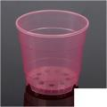 | 45232264 | Горшок д/цв. "Орхидея" вставка 0.75л, D12, малиновый "5Р" | Малиновый | 22,77 | ||
| 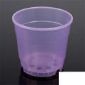 | 45232261 | Горшок д/цв. "Орхидея" вставка 0.75л, D12, фиолетовый "5Р" | Фиолетовый | 22,77 | ||
| 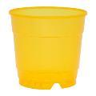 | 45232263 | Горшок д/цв. "Орхидея" вставка 0.75л, D12, янтарный "5Р" | Янтарный | 261,16 | ||
| 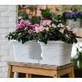 | 45232320 | Горшок д/цв. дуэт "Валенсия" (2 горшка 2,9л + подставка), белый "5Р" | Белый | 249,41 | ||
| 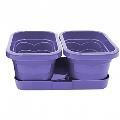 | 45232324 | Горшок д/цв. дуэт "Валенсия" (2 горшка 2,9л + подставка), лаванда "5Р" | Лаванда | 261,16 | ||
| 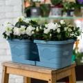 | 45232373 | Горшок д/цв. дуэт "Валенсия" (2 горшка 2,9л + подставка), ментол "5Р" | Ментол | 261,16 | ||
| 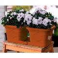 | 45232321 | Горшок д/цв. дуэт "Валенсия" (2 горшка 2,9л + подставка), терракот "5Р" | Терракот | 249,41 | ||
| 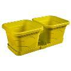 | 45232323 | Горшок д/цв. дуэт "Валенсия" (2 горшка 2,9л + подставка), фисташковый "5Р" | Фисташковый | 228,16 | ||
| 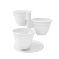 | 45232172 | Горшок д/цв. каскад "Антик" (3 горшка 0.9л + подставка), белый "5Р" | Белый | 228,16 | ||
| 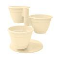 | 45232173 | Горшок д/цв. каскад "Антик" (3 горшка 0.9л + подставка), кремовый "5Р" | Кремовый | 228,16 | ||
| 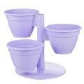 | 45232174 | Горшок д/цв. каскад "Антик" (3 горшка 0.9л + подставка), лаванда "5Р" | Лаванда | 228,16 | ||
| 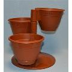 | 45232175 | Горшок д/цв. каскад "Антик" (3 горшка 0.9л + подставка), шоколадный "5Р" | Шоколадный | 97,94 | ||
| 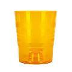 | 45232331 | Горшок д/цв. Орхидея "Лилия" 1,3л, D12,5, янтарный "5Р" | Янтарный | 70,16 | ||
| 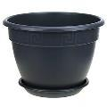 | 45232184 | Горшок д/цв. с подст. "Антик" 1,6л. D17, антрацит "5Р" | Антрацит | 70,16 | ||
| 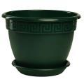 | 45232363 | Горшок д/цв. с подст. "Антик" 1,6л. D17, малахит "5Р" | Малахит | 70,16 | ||
| 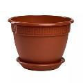 | 45232183 | Горшок д/цв. с подст. "Антик" 1,6л. D17, терракот "5Р" | Терракот | 315,55 | ||
| 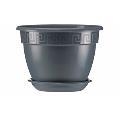 | 45232199 | Горшок д/цв. с подст. "Антик" 10л. D32, антрацит "5Р" | Антрацит | 315,55 | ||
| 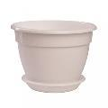 | 45232197 | Горшок д/цв. с подст. "Антик" 10л. D32, белый "5Р" | Белый | 315,55 | ||
 |
45232368 | Горшок д/цв. с подст. "Антик" 10л. D32, малахит "5Р" | Малахит | 315,55 | ||
 |
45232198 | Горшок д/цв. с подст. "Антик" 10л. D32, терракот "5Р" | Терракот | 444,11 | ||
| 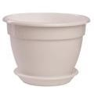 | 45232403 | Горшок д/цв. с подст. "Антик" 16,6л. D36, белый "5Р" | Белый | 444,11 | ||
| 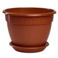 | 45232404 | Горшок д/цв. с подст. "Антик" 16,6л. D36, терракот "5Р" | Терракот | 98,27 | ||
| 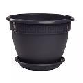 | 45232187 | Горшок д/цв. с подст. "Антик" 2,6л. D19, антрацит "5Р" | Антрацит | 98,27 | ||
| 45232185 | Горшок д/цв. с подст. "Антик" 2,6л. D19, белый "5Р" | Белый | 98,27 | |||
| 45232364 | Горшок д/цв. с подст. "Антик" 2,6л. D19, малахит "5Р" | Малахит | 98,27 | |||
| 45232186 | Горшок д/цв. с подст. "Антик" 2,6л. D19, терракот "5Р" | Терракот | 114,25 | |||
| 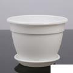 | 45232188 | Горшок д/цв. с подст. "Антик" 3,6л. D22, белый "5Р" | Белый | 114,25 | ||
| 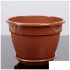 | 45232189 | Горшок д/цв. с подст. "Антик" 3,6л. D22, терракот "5Р" | Терракот | 152,46 | ||
| 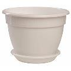 | 45232191 | Горшок д/цв. с подст. "Антик" 4,9л. D25, белый "5Р" | Белый | 152,46 | ||
 |
45232192 | Горшок д/цв. с подст. "Антик" 4,9л. D25, терракот "5Р" | Терракот | 199,52 | ||
 |
45232195 | Горшок д/цв. с подст. "Антик" 7,2л. D28, терракот "5Р" | Терракот | 73,39 | ||
| 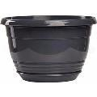 | 45232243 | Горшок д/цв. с подст. "Глория" 2л. D19, антрацит "5Р" | Антрацит | 85,73 | ||
| 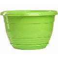 | 45232246 | Горшок д/цв. с подст. "Глория" 3,3л. D21, зеленый "5Р" | Зеленый | 126,46 | ||
| 45232251 | Горшок д/цв. с подст. "Глория" 4,2л. D25, антрацит "5Р" | Антрацит | 113,39 | |||
| 45232250 | Горшок д/цв. с подст. "Глория" 4,2л. D25, зеленый "5Р" | Зеленый | 113,39 | |||
| 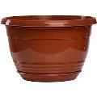 | 45232249 | Горшок д/цв. с подст. "Глория" 4,2л. D25, терракот "5Р" | Терракот | 155,23 | ||
 |
45232255 | Горшок д/цв. с подст. "Глория" 6л. D27,5, зеленый "5Р" | Зеленый | 56,17 | ||
| 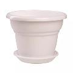 | 45232201 | Горшок д/цв. с подст. "Милано" 1,6л. D17, белый "5Р" | Белый | 73,52 | ||
| 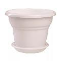 | 45232204 | Горшок д/цв. с подст. "Милано" 2л. D19, белый "5Р" | Белый | 73,52 | ||
| 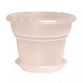 | 45232203 | Горшок д/цв. с подст. "Милано" 2л. D19, прозрачный "5Р" | Прозрачный | 89,63 | ||
| 45232206 | Горшок д/цв. с подст. "Милано" 3,2л. D22, прозрачный "5Р" | Прозрачный | 89,63 | |||
| 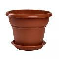 | 45232208 | Горшок д/цв. с подст. "Милано" 3,2л. D22, терракот "5Р" | Терракот | 112,66 | ||
| 45232211 | Горшок д/цв. с подст. "Милано" 4,5л. D25, терракот "5Р" | Терракот | 92,86 | |||
| 45232376 | Горшок д/цв. с подст. "Толедо" 2л. D17, белый "5Р" | Белый | 92,86 | |||
| 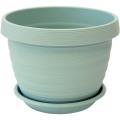 | 45232379 | Горшок д/цв. с подст. "Толедо" 2л. D17, мята "5Р" | Мята | 92,86 | ||
| 45232377 | Горшок д/цв. с подст. "Толедо" 2л. D17, терракот "5Р" | Терракот | 110,68 | |||
 |
45232381 | Горшок д/цв. с подст. "Толедо" 3л. D20, белый "5Р" | Белый | 110,68 | ||
| 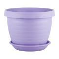 | 45232383 | Горшок д/цв. с подст. "Толедо" 3л. D20, лаванда "5Р" | Лаванда | 110,68 | ||
 |
45232384 | Горшок д/цв. с подст. "Толедо" 3л. D20, мята "5Р" | Мята | 110,68 | ||
| 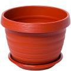 | 45232382 | Горшок д/цв. с подст. "Толедо" 3л. D20, терракот "5Р" | Терракот | 148,76 | ||
| 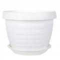 | 45232386 | Горшок д/цв. с подст. "Толедо" 4,5л. D24, белый "5Р" | Белый | 148,76 | ||
 |
45232388 | Горшок д/цв. с подст. "Толедо" 4,5л. D24, лаванда "5Р" | Лаванда | 148,76 | ||
| 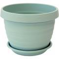 | 45232389 | Горшок д/цв. с подст. "Толедо" 4,5л. D24, мята "5Р" | Мята | 148,76 | ||
 |
45232387 | Горшок д/цв. с подст. "Толедо" 4,5л. D24, терракот "5Р" | Терракот | 205,85 | ||
| 45232391 | Горшок д/цв. с подст. "Толедо" 7л. D27, белый "5Р" | Белый | 205,85 | |||
| 45232393 | Горшок д/цв. с подст. "Толедо" 7л. D27, лаванда "5Р" | Лаванда | 205,85 | |||
| 45232394 | Горшок д/цв. с подст. "Толедо" 7л. D27, мята "5Р" | Мята | 205,85 | |||
| 45232392 | Горшок д/цв. с подст. "Толедо" 7л. D27, терракот "5Р" | Терракот | 56,30 | |||
| 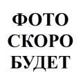 | 45232369 | Горшок д/цв. с подст. "Флора" 1,6л. D17, фраппе "5Р" | Фраппе | 85,47 | ||
| 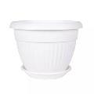 | 45232303 | Горшок д/цв. с подст. "Флора" 2,6л. D20, белый "5Р" | Белый | 85,47 | ||
| 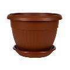 | 45232304 | Горшок д/цв. с подст. "Флора" 2,6л. D20, терракот "5Р" | Терракот | 112,53 | ||
| 45232306 | Горшок д/цв. с подст. "Флора" 4л, D23, белый "5Р" | Белый | 100,78 | |||
| 45232307 | Горшок д/цв. с подст. "Флора" 4л, D23, терракот "5Р" | Терракот | 41,84 | |||
| 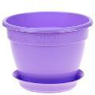 | 45232279 | Горшок д/цв. с подст. фиалка "Антик" 0,75л, D13, лаванда "5Р" | Лаванда | отпуск кратно 12шт | 208,16 | |
| 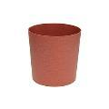 | 45232181 | Горшок д/цв. со вставкой "Цилиндр Эко" 3л. D17, гранит "5Р" | Гранит | 208,16 | ||
| 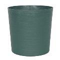 | 45232180 | Горшок д/цв. со вставкой "Цилиндр Эко" 3л. D17, малахит "5Р" | Малахит | 208,16 | ||
| 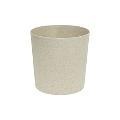 | 45232179 | Горшок д/цв. со вставкой "Цилиндр Эко" 3л. D17, слоновая кость "5Р" | Слоновая кость | 246,05 | ||
| 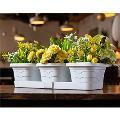 | 45232315 | Горшок д/цв. трио "Валенсия" (3 горшка 1,1л + подставка), белый "5Р" | Белый | 246,05 | ||
| 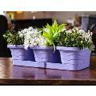 | 45232319 | Горшок д/цв. трио "Валенсия" (3 горшка 1,1л + подставка), лаванда "5Р" | Лаванда | 246,05 | ||
| 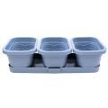 | 45232372 | Горшок д/цв. трио "Валенсия" (3 горшка 1,1л + подставка), ментол "5Р" | Ментол | 234,96 | ||
| 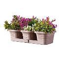 | 45232317 | Горшок д/цв. трио "Валенсия" (3 горшка 1,1л + подставка), пудра "5Р" | Пудра | 246,05 | ||
| 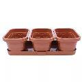 | 45232316 | Горшок д/цв. трио "Валенсия" (3 горшка 1,1л + подставка), терракот "5Р" | Терракот | 246,05 | ||
| 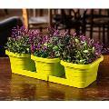 | 45232318 | Горшок д/цв. трио "Валенсия" (3 горшка 1,1л + подставка), фисташковый "5Р" | Фисташковый | 92,00 | ||
| 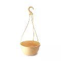 | 45232233 | Горшок д/цв., подвесной "Венеция" 2,75л. D22,5, крем "5Р" | Кремовый | 92,00 | ||
| 45232234 | Горшок д/цв., подвесной "Венеция" 2,75л. D22,5, терракот "5Р" | Терракот | 92,00 | |||
| 45232235 | Горшок д/цв., подвесной "Венеция" 2,75л. D22,5, фисташка "5Р" | Фисташковый | 131,87 | |||
| 45232237 | Горшок д/цв., подвесной "Венеция" 4л. D25,5, кремовый "5Р" | Кремовый | 131,87 | |||
| 45232238 | Горшок д/цв., подвесной "Венеция" 4л. D25,5, терракотовый "5Р" | Терракот | 131,87 | |||
| 45232239 | Горшок д/цв., подвесной "Венеция" 4л. D25,5, фисташковый "5Р" | Фисташковый | 60,98 | |||
| 45232220 | Кашпо д/цв. "Верона" 1,65л, D14,5, белый "5Р" | Белый | 57,75 | |||
| 45232221 | Кашпо д/цв. "Верона" 1,65л, D14,5, терракот "5Р" | Терракот | 96,95 | |||
| 45232224 | Кашпо д/цв. "Верона" 2,7л, D17, белый "5Р" | Белый | 96,95 | |||
| 45232226 | Кашпо д/цв. "Верона" 2,7л, D17, серый муссон "5Р" | Серый муссон | 96,95 | |||
| 45232227 | Кашпо д/цв. "Верона" 2,7л, D17, фисташка "5Р" | Фисташковый | 129,89 | |||
 |
45232228 | Кашпо д/цв. "Верона" 3,8л, D19, белый "5Р" | Белый | 116,36 | ||
| 45232230 | Кашпо д/цв. "Верона" 3,8л, D19, серый муссон "5Р" | Серый муссон | 110,29 | |||
| 45232229 | Кашпо д/цв. "Верона" 3,8л, D19, терракот "5Р" | Терракот | 66,07 | |||
| 45232282 | Кашпо д/цв. "Парма" 1,3л, D17, белый "5Р" | Белый | 66,07 | |||
 |
45232283 | Кашпо д/цв. "Парма" 1,3л, D17, серый муссон "5Р" | Серый муссон | 66,07 | ||
| 45232284 | Кашпо д/цв. "Парма" 1,3л, D17, терракот "5Р" | Терракот | 111,14 | |||
 |
45232290 | Кашпо д/цв. "Парма" 2,7л, D22,5, терракот "5Р" | Терракот | 86,92 | ||
 |
45232285 | Кашпо д/цв. "Парма" 2л, D20, белый "5Р" | Белый | 86,92 | ||
| 45232286 | Кашпо д/цв. "Парма" 2л, D20, серый муссон "5Р" | Серый муссон | 86,92 | |||
 |
45232287 | Кашпо д/цв. "Парма" 2л, D20, терракот "5Р" | Терракот | 149,82 | ||
 |
45232292 | Кашпо д/цв. "Парма" 4,1л, D26, серый муссон "5Р" | Серый муссон | 149,82 | ||
 |
45232293 | Кашпо д/цв. "Парма" 4,1л, D26, терракот "5Р" | Терракот | 177,21 | ||
| 45232294 | Кашпо д/цв. "Парма" 6л, D30, белый "5Р" | Белый | 177,21 | |||
| 45232295 | Кашпо д/цв. "Парма" 6л, D30, серый муссон "5Р" | Серый муссон | 177,21 | |||
 |
45232296 | Кашпо д/цв. "Парма" 6л, D30, терракот "5Р" | Терракот | 238,66 | ||
 |
45232297 | Кашпо д/цв. "Парма" 9л, D34, белый "5Р" | Белый | 238,66 | ||
 |
45232298 | Кашпо д/цв. "Парма" 9л, D34, серый муссон "5Р" | Серый муссон | 238,66 | ||
| 45232299 | Кашпо д/цв. "Парма" 9л, D34, терракот "5Р" | Терракот | 203,08 | |||
| 45232309 | Ящик балконный д/цв. с подст. "Прованс" 6л, белый "5Р" | Белый | 400x170x130 | 203,08 | ||
| 45232371 | Ящик балконный д/цв. с подст. "Прованс" 6л, ментоловый "5Р" | Ментол | 400x170x130 | 203,08 | ||
| 45232310 | Ящик балконный д/цв. с подст. "Прованс" 6л, терракот "5Р" | Терракот | 400x170x130 | 203,08 | ||
| 45232311 | Ящик балконный д/цв. с подст. "Прованс" 6л, фисташковый "5Р" | Фисташковый | 400x170x130 | 363,99 | ||
| 45232312 | Ящик балконный д/цв. с подст. "Прованс" 9,5л, белый "5Р" | Белый | 580x170x127h | 363,99 | ||
| 45232361 | Ящик балконный д/цв. с подст. "Прованс" 9,5л, ментоловый "5Р" | Ментол | 580x170x127h | 363,99 | ||
| 45232313 | Ящик балконный д/цв. с подст. "Прованс" 9,5л, терракот "5Р" | Терракот | 580x170x127h | 363,99 | ||
| 45232314 | Ящик балконный д/цв. с подст. "Прованс" 9,5л, фисташковый "5Р" | Фисташковый | 580x170x127h | |||
| ATTRIBUTE | 674,85 | |||||
| 36062005 | Вешалка плечики дерево "BAMBOO SLIM" 44см, 5шт ATTRIBUTE | Светло-желтый | 824,67 | |||
| 36062002 | Вешалка плечики дерево "CASUAL" 44см, 6шт ATTRIBUTE | Светло-желтый | 823,94 | |||
| 36062003 | Вешалка плечики дерево "CLASSIC" 44см, 6шт ATTRIBUTE | Светло-желтый | 134,64 | |||
| 36062001 | Вешалка плечики дерево "GEOMETRY" 44см ATTRIBUTE | Темно-коричневый | Кратно 4 шт. Серия GEOMETRY 20 штук в коробке Материал: дерево, металл Страна производства: Китай Высота - 24.5см Длина - 44.5см Ширина - 1.2см | 327,43 | ||
| 36062004 | Вешалка плечики металл "NEO BLACK&WHITE" 42см, 5шт ATTRIBUTE | Белый-черный | 453,68 | |||
| 23062001 | Доска кух.разделоч.п/э 30*23cм "FIBER" mint с НОЖЕТОЧКОЙ ATTRIBUTE | Мята | Серия — FIBER Материал — пластик, полипропилен Страна производства — Китай Высота — 0.9см | 232,39 | ||
 |
23062002 | Доска кух.разделоч.п/э 30*23cм "LUNAR" со сливом ATTRIBUTE | Черный | Серия — FIBER Материал — пластик, полипропилен Страна производства — Китай Высота — 0.9см | 1 099,69 | |
| 07062001 | Миска нерж 3л "GRATE IT" с крышкой +3терки | Нержавейка | Серия GRATE IT Материал -сталь нержавеющая, пластик Страна производства: Китай Высота 22.5см Длина 22см Ширина 10.5см | |||
| Centek | 2 480,54 | |||||
| 65031008 | Блендерный набор 800Вт Black CT-1347 Centek | Черный | Турбо режим, DC мотор, стакан 600мл + мерн стакан 600мл | 2 621,32 | ||
| 65031231 | Блендерный набор 800Вт CT-1336 Centek | Белый с серым | DC мотор, стальная насадка, стакан 600мл, чоппер, венчик | 1 778,57 | ||
| 65031178 | Гриль-вафельница Centek CT-1448 800 Вт ГРИЛЬ <226х148.5мм> анти пригарное покры | Черно-серый | 1 264,82 | |||
| 65031017 | Кофемолка 250Вт Black CT-1360 Centek | Черный | 45 г, 5 ЧАШЕК АРОМАТНОГО КОФЕ, прозрачная крышка | |||
| Delta инструмент+сад огород | 114,25 | |||||
 |
50030036 | Вилка садовая (сталь+дерево с покрытием) "Зеленый луг" | 98,93 | |||
| 50030033 | Вилка садовая (сталь+дерево) 7.5*19.5см "Зеленый луг" | 110,75 | ||||
| 50030039 | Вилка садовая (сталь+пластик) "Зеленый луг" | 139,19 | ||||
| 50030101 | Катушка триммерная полуавтомат 2.0-2.4мм*2.4м ЛТР-123К | .. | Параметры Для лески размером сечения 2-2,4мм Для лески длиной 2,4м Описание Катушка триммерная предназначена для использования со всеми типами триммеров М10х1,25 Для намотки лески круглого сечения 2,0-2,4 мм х 2,4 м и квадратного сечения 2,0 мм х 2,4 м Материалы: нейлон, пластик Тип: полуавтомат Упаковка: полиэтиленовый пакет В комплекте: нейлоновая леска размером o2,0-2,4 мм х 2,4 м, круглого сечения Срок годности не ограничен | 300,70 | ||
| 50030102 | Катушка триммерная полуавтомат 2.0-3.0мм*2.4м ЛТР-124К | .. | Параметры Для лески размером сечения 2-3 мм Для лески длиной 2,4 м Описание Катушка триммерная предназначена для использования со всеми типами триммеров М10х1,25 Для намотки лески круглого и квадратного сечения 2,0-2,4 мм х 2,4 м Материалы: нейлон, пластик Тип: полуавтомат Упаковка: полиэтиленовый пакет В комплекте: нейлоновая леска размером o2,0-3,0 мм х 2,4 м, круглого сечения Срок годности не ограничен | 287,50 | ||
| 50030103 | Катушка триммерная полуавтомат 2.0-3.0мм*2.4м ЛТР-125К | .. | Параметры Для лески размером сечения 2-3 мм Для лески длиной 2,4 м Описание Катушка триммерная предназначена для использования со всеми типами триммеров М10х1,25 Для намотки лески круглого сечения 2,0-3,0 мм х 2,4 м Материалы: нейлон, пластик, алюминий Тип: полуавтомат Упаковка: полиэтиленовый пакет В комплекте: нейлоновая леска размером o2,0-3,0 мм х 2,4 м, круглого сечения Срок годности не ограничен | 221,03 | ||
| 50030104 | Катушка триммерная полуавтомат 2.4-3.0мм*26.5м ЛТР-126К | .. | Параметры Для лески размером сечения 2,4-3 мм Для лески длиной 26,5 м Описание Катушка триммерная универсальная предназначена для использования со всеми типами триммеров М10х1,25 Для лески любого сечения 2,4-3,0 мм х 24 см Материалы: алюминий, нейлон Тип: полуавтомат Упаковка: полиэтиленовый пакет В комплекте: 4 шт. нейлоновая леска размером 2,4-3,0 мм х 26,5 см, квадратного сечения, шайба 2 шт., шестигранный ключ 1 шт. Срок годности не ограничен | 112,33 | ||
 |
50030035 | Культиватор ручной (сталь+дерево с покрытием) "Зеленый луг" | Параметры Длина 31 см Размер рабочей части 10х8,5см Описание Материал рабочей части: сталь Материал ручки: дерево с противоскользящим покрытием | 57,95 | ||
| 50030095 | Леска триммерная 2.0мм*15м (звезда) оранжевая ЛТР-117 | Оранжевый | Параметры Размеры по сечению 2х2 мм Длина 15 м Описание Материал: нейлон Сечение: звезда Цвет: оранжевый Подходит для всех типов триммеров Надежная, высокопрочная, износостойкая Срок годности не ограничен Использовать только для скашивания травы! | 361,75 | ||
| 50030097 | Леска триммерная 2.4мм*100м (звезда) оранжевая ЛТР-119 | Оранжевый | Параметры Размеры по сечению 2,4х2,4 мм Длина 100 м Описание Материал: нейлон Сечение: звезда Цвет: оранжевый Подходит для всех типов триммеров Надежная, высокопрочная, износостойкая Срок годности не ограничен Использовать только для скашивания травы! | 499,03 | ||
| 50030093 | Леска триммерная 2.4мм*100м (квадрат) зеленая.ЛТР-115 | Зеленый | Параметры Размеры по сечению 2,4х2,4 мм Длина 100 м Описание Материал: нейлон Сечение: квадрат Цвет: зеленый Подходит для всех типов триммеров Надежная, высокопрочная, износостойкая Срок годности не ограничен Использовать только для скашивания травы! | 73,85 | ||
| 50030099 | Леска триммерная 2.4мм*15м (витой квадрат) серая ЛТР-121 | Серый | Параметры Размеры по сечению 2,4х2,4 мм Длина 15 м Описание Материал: нейлон Сечение: витой квадрат Цвет: серый Подходит для всех типов триммеров Надежная, высокопрочная, износостойкая Срок годности не ограничен Использовать только для скашивания травы! | 82,10 | ||
| 50030091 | Леска триммерная 2.4мм*15м (квадрат)зеленая ЛТР-113 | Зеленый | Параметры Размеры по сечению 2,4х2,4 мм Длина 15 м Описание Материал: нейлон Сечение: квадрат Цвет: зеленый Подходит для всех типов триммеров Надежная, высокопрочная, износостойкая Срок годности не ограничен Использовать только для скашивания травы! | 551,89 | ||
| 50030098 | Леска триммерная 3,0мм*100м (звезда) оранжевая. ЛТР-120 | Оранжевый | Параметры Размеры по сечению 3х3 мм Длина 100 м Описание Материал: нейлон Сечение: звезда Цвет: оранжевый Подходит для всех типов триммеров Надежная, высокопрочная, износостойкая Срок годности не ограничен Использовать только для скашивания травы! | 759,13 | ||
| 50030094 | Леска триммерная 3.0мм*100м (квадрат) зеленая ЛТР-116 | Зеленый | Параметры Размеры по сечению 3х3 мм Длина 100 м Описание Материал: нейлон Сечение: квадрат Цвет: зеленый Подходит для всех типов триммеров Надежная, высокопрочная, износостойкая Срок годности не ограничен Использовать только для скашивания травы! | 103,69 | ||
| 50030105 | Леска триммерная 3.0мм*15м (витой квадрат) серая ЛТР-122 | Серый | Параметры Размеры по сечению 3х3 мм Длина 15 м Описание Материал: нейлон Сечение: витой квадрат Цвет: серый Подходит для всех типов триммеров Надежная, высокопрочная, износостойкая Срок годности не ограничен Использовать только для скашивания травы! | 91,61 | ||
| 50030096 | Леска триммерная 3.0мм*15м (звезда) оранжевая ЛТР-118 | Оранжевый | Параметры Размеры по сечению 3х3 мм Длина 15 м Описание Материал: нейлон Сечение: звезда Цвет: оранжевый Подходит для всех типов триммеров Надежная, высокопрочная, износостойкая Срок годности не ограничен Использовать только для скашивания травы! | 118,14 | ||
| 50030092 | Леска триммерная 3.0мм*15м (квадрат) зеленая ЛТР-114 | Зеленый | Параметры Размеры по сечению 3х3 мм Длина 15 м Описание Материал: нейлон Сечение: квадрат Цвет: зеленый Подходит для всех типов триммеров Надежная, высокопрочная, износостойкая Срок годности не ограничен Использовать только для скашивания травы! | 112,53 | ||
| 50030037 | Лопатка садовая узкая (сталь+дерево с покрытием) "Зеленый луг" | Параметры Длина 38см Размер рабочей части 16х6см Описание Материал рабочей части: сталь Материал ручки: дерево с противоскользящим покрытием | 348,81 | |||
| 50030068 | Набор д/полива 4 предмета "Зеленый луг" | насадка, соединитель 1/2",соединитель 1/2" с аквастопом, соединитель-переходник 1/2"-3/4"; пластиковый корпус, 3 режима | 277,13 | |||
| 50030069 | Набор д/полива 5 предметов "Зеленый луг" | Параметры В наборе 5 предметов: пистолет-распылитель 5-позиционный 1 штука штуцер пистолета 1 штука соединитель-переходник 1/2”-3/4” 1 штука соединитель с аквастопом 1/2” 1 штука соединитель 1/2” 1 штука Описание Материал: пластик 5 типов распыления: струя плоская струя центральное распыление распыление душ Фиксатор курка для непрерывного полива Упаковка: блистер | 675,97 | |||
| 50030030 | Набор д/полива капельного 6м на 4 грядки Зеленый Луг | Параметры Площадь полива максимальная 6 кв.м Количество поливаемых растений 30 штук Расход воды на 1 растение 0,33 л/ч Длина магистрального шланга 9 м Рабочее давление 0,1-0,4 атм Высота установки емкости 1-2 м В набор входит: шланг магистральный 1/2” 1 бухта трубка-уровень прозрачная 1м 1 штука шланг подающий 40см (O4мм) 30 штук капельница 30 штук тройник малый 15 штук уголок для шланга 2 штуки тройник большой 2 штуки заглушка для магистрального шланга 2 штуки скоба прижимная для магистрального шланга 18 штук адаптер 1”-1/2” 1 штука адаптер 3/4” -1/2” 2 штуки фильтр тонкой очистки 1 штука двухсторонний коннектор с краном 1 штука дырокол для магистрального шланга 1 штука держатель трубки-уровня 1 штука Описание Система капельного полива «Зеленый луг» предназначена для полива растений в условиях открытого и защищенного грунта и запитывается от любой емкости для воды (в комплект не входит), можно монтировать при любой фазе развития растений Не предназначена для высокого давления водопроводной городской сети Основные преимущества капельного полива: обеспечивает автоматический полив растений с наибольшей экономией воды и удобрений снижает заболеваемость растений не создает корки на поверхности грунта повышает урожайность и скорость созревания плодов простота монтажа и сборки Капельная линия должна располагаться вдоль орошаемого ряда (грядки) системы, может быть размещена как на поверхности грядки, так и быть закопана в грядку на глубину до 5 см Для полива площадей различной конфигурации, профиля, назначения система капельного полива поставляется в разобранном виде В течение поливного сезона практически не нуждается в обслуживании Производитель: Россия | 218,59 | |||
| 50030066 | Набор д/полива приспос-е с фитингами 4 предмета "Зеленый луг" | В наборе 4 предмета: насадка 1 штука соединитель 1/2" 1 штука соединитель 1/2" с аквастопом 1 штука соединитель-переходник 1/2"-3/4" 1 штука Описание Предназначен для быстрого подключения шланга к системе полива Быстросъемные соединители позволяют легко и многократно подсоединять/отсоединять шланг к системе полива Регулировка расхода воды и типа струи 3 режима полива Пластиковый корпус Упаковка: блистер | 1 075,01 | |||
| 68030008 | Набор инструментов в кейсе 43 предмета КУЗЬМИЧ ЭКСПЕРТ | Количество в наборе 43 предмета Описание Набор ручного инструмента в кейсе Серия: Эксперт Инструмент изготовлен из высококачественной хром-ванадиевой стали Эргономичные ручки с противоскользящим покрытием удобно лежат в руке и обеспечивают надежный захват инструмента Удобный пластиковый кейс для переноски и хранения инструмента В наборе: головки торцевые шестигранные 1/4" с замком: 4, 4.5, 5, 5.5, 6, 7, 8, 9, 10, 11, 12, 13, 14 мм – 13 штук; головки торцевые удлиненные 1/4" с замком: 7, 8, 10, 12, 13 мм – 5 штук; рукоятка реверсивная (трещотка) 1/4" с функцией быстрого сброса – 155 мм, храповый механизм с 45 зубьями, рабочий угол 8° – 1 штука; вороток Т-образный 110 мм – 1 штука; рукоятка для торцевых головок 1/4" – 1 штука; гибкий удлинитель 1/4": 150 мм – 1 штука; удлинитель 1/4": 50, 100 мм – 2 штуки; шарнир универсальный 1/4" – 1 штука; адаптер для бит 1/4" – 1 штука; биты 1/4" 16 штук: - HEX: 4, 5, 6 мм - TORX: T10, T15, T20, T25 - SL: 4, 6, 7 мм - PH1, PH2, PH2, PH3 - PZ0, PZ2 адаптер для отверток 1/4" – 1 штука | 202,82 | |||
| 50030031 | Пистолет-распылитель "Зеленый луг" | Описание Материал: пластик 2 режима полива: струя душ Эргономичная ручка Упаковка: блистер | 175,56 | |||
| 50030032 | Пистолет-распылитель 7-и позиционный "Зеленый луг" | Материал: пластик 7 режимов полива: струя полная струя плоская струя водяная пыль душ конус центральное распыление Регулировка типа струи Фиксатор курка для непрерывного полива Упаковка: блистер | 112,07 | |||
| 50030034 | Рыхлитель ручной (сталь+дерево с покрытием) "Зеленый луг" | Параметры Длина 30 см Ширина рабочей части 10 см Описание Материал рабочей части: сталь Материал ручки: дерево с противоскользящим покрытием | 278,98 | |||
| 50030042 | Секатор универсальный с фиксатором 20см. "Зеленый луг" | Длина 20 см Длина лезвий 50 мм Описание Материал рабочей поверхности: углеродистая сталь Материал рукоятки: пластик Удобный фиксатор, обслуживаемый одной рукой Упаковка: блистер | 809,56 | |||
| 65030218 | Сумка-тележка хозяйств.на колесах DT-20 до 25кг | Синий | Параметры Грузоподъемность 25 кг Максимальная вместимость сумки 35 л Описание Предназначена для перевозки грузов Удобна для любого путешествия Легко собирается в транспортное положение, оснащена специальными креплениями для более удобной транспортировки груза Облегчает перемещение груза по лестнице При правильной эксплуатации имеет длительный срок службы Съемная хозяйственная сумка из прочного материала легко чистится (входит в комплект поставки и отдельной продаже не подлежит) Цвет сумки: синий Металлический каркас Удобная пластиковая ручка Съемные колеса - 2 штуки | 738,28 | ||
| 65030217 | Сумка-тележка хозяйств.на колесах DT-22 до 20кг | Коричневый | Параметры Грузоподъемность 20 кг Максимальная вместимость сумки 25 л Описание Предназначена для перевозки грузов Удобна для любого путешествия Легко собирается в транспортное положение, оснащена специальными креплениями для более удобной транспортировки груза Облегчает перемещение груза по лестнице При правильной эксплуатации имеет длительный срок службы Съемная хозяйственная сумка из прочного материала легко чистится (входит в комплект поставки и отдельной продаже не подлежит) Цвет сумки: коричневый Металлический каркас Удобная пластиковая ручка Съемные колеса - 2 штуки | 339,64 | ||
| 50030067 | Удочка д/опрыскивателя универсал. 1.1м "Зеленый Луг" | Параметры Максимальная длина 110 см Количество секций 2 Описание Удочка-удлинитель подходит для всех типов опрыскивателей Материал: пластик, алюминий Фиксатор курка для непрерывной работы Удобная пластиковая рукоятка Регулируемый диаметр распыления жидкости Упаковка: полиэтиленовый пакет с цветной картонной подвеской | 814,37 | |||
| 50030051 | Удочка д/опрыскивателя универсал.телескопич. 2.8м "Зеленый Луг" | Параметры Максимальная длина 280см Описание Удочка-удлинитель подходит для всех типов опрыскивателей Материал: пластик, алюминий Фиксатор курка для непрерывной работы Удобная пластиковая рукоятка Регулируемый диаметр распыления жидкости Упаковка: полиэтиленовый пакет с цветной картонной подвеской | ||||
| Delta МБТ | 1 500,58 | |||||
| 65030145 | Блендер 1000Вт DELTA LUX DL-7047 черный DELTA | "Мощность: 1000 Вт | 1 171,76 | |||
| 65030371 | Блендер 1000Вт DELTA ТУРБО DL-7064 черный DELTA | Черный | Максимальная мощность 1000 Вт Номинальная потребляемая мощность 400 Вт Описание Блендер электрический предназначен для смешивания, измельчения и взбивания продуктов и жидкостей в бытовых и аналогичных условиях Цвет: черный Нож из нержавеющей стали Специальная заточка лезвий Петелька для подвешивания Режим «ТУРБО» | 1 380,13 | ||
| 65030166 | Блендер 1000Вт АКСИНЬЯ КС-320 белый с красным DELTA | Белый с красным | Насадка и нож из нерж стали | 1 156,72 | ||
| 65030291 | Блендер 1000Вт ВАСИЛИСА ВА-313 белый с зеленым DELTA | Белый с зеленым | Параметры Максимальная мощность 1000 Вт Номинальная потребляемая мощность 400 Вт Описание Блендер электрический предназначен для смешивания, измельчения и взбивания продуктов и жидкостей в бытовых и аналогичных условиях Цвет: белый с зеленым Нож из нержавеющей стали Специальная заточка ножа Режим «ТУРБО» | 1 379,33 | ||
| 65030248 | Блендер 1200Вт DL-7060 DELTA черный | Черный | цвет черный: 1200 Вт, 2 скорости,насадка и нож из нерж.стали | 1 177,51 | ||
| 65030373 | Блендер 750Вт АКСИНЬЯ КС-326 черный с красным DELTA | Черный с красным | Максимальная мощность 750 Вт Номинальная потребляемая мощность 250 Вт Описание Блендер электрический предназначен для смешивания, измельчения и взбивания продуктов и жидкостей в бытовых и аналогичных условиях Идеально подходит для работы с мягкими и жидкими продуктами (приготовление соусов, супов, майонеза, детского питания, пюре, всех видов коктейлей и т.п.) Цвет: черный с красным Насадка и ножи из нержавеющей стали 1 скорость работы Режим « | 2 083,82 | ||
| 65030336 | Блендерный набор 1000Вт DELTA DL-7061A серый DELTA | Серый | Параметры Максимальная мощность 1000 Вт Номинальная потребляемая мощность 350 Вт Объем чаши измельчителя 500 мл Описание Блендер электрический предназначен для смешивания, измельчения и взбивания продуктов и жидкостей в бытовых и аналогичных условиях Цвет: серый Нож из нержавеющей стали Три сменные насадки: - насадка для смешивания - венчик для взбивания - измельчитель Петелька для подвешивания Режим «ТУРБО» | 2 160,38 | ||
| 65030164 | Блендерный набор 1000Вт АКСИНЬЯ КС-307В "Турбо" белый с серым DELTA | Белый с серым | Параметры Номинальная потребляемая мощность 1000 Вт Объем чаши измельчителя 500 мл Объем мерного стакана 700 мл Описание Блендер представляет собой многофункциональное устройство для смешивания, измельчения и взбивания продуктов и жидкостей в бытовых условиях Нож и насадки из нержавеющей стали Три сменных насадки: насадка для смешивания венчик для взбивания измельчитель Мерный стакан 5 скоростных режимов Режим «ТУРБО» Плавное переключение скоростей | 2 139,65 | ||
| 65030165 | Блендерный набор 1000Вт АКСИНЬЯ КС-307В "Турбо" черный с красным DELTA | Черный с красным | Параметры Номинальная потребляемая мощность 1000 Вт Объем чаши измельчителя 500 мл Объем мерного стакана 700 мл Описание Блендер представляет собой многофункциональное устройство для смешивания, измельчения и взбивания продуктов и жидкостей в бытовых условиях Нож и насадки из нержавеющей стали Три сменных насадки: насадка для смешивания венчик для взбивания измельчитель Мерный стакан 5 скоростных режимов Режим «ТУРБО» Плавное переключение скоростей | 2 583,83 | ||
| 65030163 | Блендерный набор 1000Вт АКСИНЬЯ КС-320В белый с красным | Белый с красным | Параметры Максимальная мощность 1000 Вт Номинальная потребляемая мощность 600 Вт Объем чаши измельчителя 500 мл Объем мерного стакана 700 мл Описание Блендер электрический предназначен для смешивания, измельчения и взбивания продуктов и жидкостей в бытовых и аналогичных условиях Цвет: белый с красным Насадка и нож из нержавеющей стали Специальная заточка ножей Мерный стакан с крышкой Четыре сменные насадки: капучинатор из нержавеющей стали для приготовления молочной пенки, используемой для кофе измельчитель для измельчения орехов, трав, яиц, мяса, сыра, лука, рыбы, хлеба, чеснока, овощей и т.п. насадка для измельчения и смешивания для работы с мягкими и жидкими продуктами (приготовление соусов, супов, майонеза, детского питания, пюре, всех видов коктейлей и т.п.) венчик для взбивания яичных белков, сливок, смешивания жидких продуктов, замешивания жидкого теста Плавная регулировка скорости Режим «ТУРБО» | 2 565,29 | ||
| 65030067 | Блендерный набор 1500Вт LUX DE-7004B DELTA | Черный | Максимальная мощность 1500Вт Номинальная потребляемая мощность 600 Вт Объем чаши измельчителя 500 мл Объем мерного стакана 700 мл Описание Блендер электрический предназначен для смешивания, измельчения и взбивания продуктов и жидкостей в бытовых условиях Цвет: черный Насадки и ножи из нержавеющей стали Специальная заточка ножей Три сменные насадки: насадка для смешивания венчик для взбивания измельчитель Противоскользящие ножки чаши измельчителя Мерный стакан 5 скоростных режимов Режим «ТУРБО» | 2 506,15 | ||
| 65030261 | Блендерный набор 1500Вт АКСИНЬЯ КС-321В черный DELTA | Черный | Параметры Максимальная мощность 1500 Вт Номинальная потребляемая мощность 600 Вт Объем чаши измельчителя 500 мл Объем мерного стакана 700 мл Описание Блендер электрический предназначен для смешивания, измельчения и взбивания продуктов и жидкостей в бытовых и аналогичных условиях Ножи из нержавеющей стали Три сменные насадки: насадка для смешивания венчик для взбивания измельчитель Мерный стакан Противоскользящие ножки чаши измельчителя Плавная регулировка скорости Режим «ТУРБО» | 1 416,10 | ||
| 65030225 | Вафельница "ВЕНСКАЯ" 750Вт АКСИНЬЯ КС-5002 DELTA | Бежевый | Вафельница "ВЕНСКАЯ" АКСИНЬЯ КС-5002 бежевый: 750Вт , антипригар. покрытие (6) | 1 416,10 | ||
| 65030147 | Вафельница "ВЕНСКАЯ" 750Вт ВАСИЛИСА ВА-5400 нерж DELTA | Черно-серый | Вафельница "ВЕНСКАЯ" ВАСИЛИСА ВА-5400 нерж: 750Вт , антипригар. покрытие 23,5*22,5см(6) | 1 791,50 | ||
| 65030362 | Вафельница "КЛАССИКА" АКСИНЬЯ 1100Вт, белая DELTA | Белый | Номинальная потребляемая мощность 1100 Вт Диаметр жарочной поверхности 18 см Количество вафель 1 Форма вафель круглые Толщина вафель тонкие Описание Вафельница электрическая - это современный бытовой прибор для приготовления вафель методом контактной жарки. За счет использования двух нагревательных пластин вафельница равномерно пропекает вафли сразу с двух сторон Атипригарное покрытие жарочных поверхностей Индикатор готовности к работе Индикатор сет | 1 410,42 | ||
| 65030148 | Вафельница "ОРЕШЕК" DL-055 белая DELTA | Белый | 750 Вт, 12 полуформ, 23,5*13,5см | 714,25 | ||
| 65030355 | Весы кухонные электронные 10кг DELTA LUX DE-003KE "Витаминный микс" стекло | Серый | Параметры Диапазон измерений 2-10000 г Интервал измерений 1 г Размер весов 20х18,2х1,8см Описание Платформа из упрочненного стекла LCD дисплей Индикатор уровня заряда батареи и перегрузки весов Функция измерения объема жидкости: молоко, вода Функция сброса веса тары и обнуления позволяет последовательно взвешивать ингредиенты блюда, не учитывая массу посуды Выбор единицы измерения Автообнуление/автоотключение Отображение времени Отображение температуры помещения Электропитание: 3 В (батарея тип CR2032, в комплекте) Упаковка: цветная коробка | 923,93 | ||
| 65030376 | Весы кухонные электронные 5кг KCE-32 с чашей: зеленый DELTA | Зеленый | Предельная масса взвешивания 5 кг Точность взвешивания ± 1 г Описание Платформа из термостойкого пластика LCD цифровой дисплей Индикатор низкого уровня заряда батареи Индикатор перегрузки весов Функция сброса веса тары и обнуления позволяет последовательно взвешивать ингредиенты блюда, не учитывая массу посуды Автообнуление/автоотключение Выбор единицы измерения Электропитание: 2х1,5В ААА (в комплекте) | 923,93 | ||
| 65030375 | Весы кухонные электронные 5кг KCE-32 с чашей: оранжевый DELTA | Оранжевый | Предельная масса взвешивания 5 кг Точность взвешивания ± 1 г Описание Платформа из термостойкого пластика LCD цифровой дисплей Индикатор низкого уровня заряда батареи Индикатор перегрузки весов Функция сброса веса тары и обнуления позволяет последовательно взвешивать ингредиенты блюда, не учитывая массу посуды Автообнуление/автоотключение Выбор единицы измерения Электропитание: 2х1,5В ААА (в комплекте) | 919,91 | ||
| 65030347 | Весы кухонные электронные 5кг KCE-34 с чашей: зеленый DELTA | Зеленый | Диапазон измерений 2-5000 г Интервал измерений 1 г Номинальное напряжение 3 В Описание Весы настольные электронные - это надежное высокоточное многофункциональное устройство, которое позволяет определять вес предметов с наименьшей погрешностью в бытовых и аналогичных им условиях Платформа из термостойкого пластика Цвет: зеленый Съемная прозрачная чаша со сливным носиком LCD-дисплей Индикатор низкого уровня заряда батареи Индикатор перегрузки весов Выбор единицы измерения Функция сброса веса тары и обнуления позволяет последовательно взвешивать ингредиенты блюда, не учитывая массу посуды Функция измерения объема жидкости: молоко, вода Автоматическое отключение Электропитание: 3 В, литиевая батарея тип СR2032 – 1 штука (в комплекте) | 597,04 | ||
| 65030366 | Весы кухонные электронные 5кг KCE-37 "Малина":стекло DELTA | Белый | Параметры Диапазон измерений 2-5000 г Интервал измерений 1 г Размер весов 20?18?1,5см Описание Платформа из упрочненного стекла LCD дисплей Индикатор уровня заряда батареи и перегрузки весов Функция измерения объема жидкости: молоко, вода Функция сброса веса тары и обнуления позволяет последовательно взвешивать ингредиенты блюда, не учитывая массу посуды Выбор единицы измерения Автообнуление/автоотключение Электропитание: 1,5 В?2 штуки батареи типа R03 ААА (в комплекте) | 530,24 | ||
 |
65030346 | Весы кухонные электронные 5кг АКСИНЬЯ КС-6503 "Розовые тюльпаны" круглые,стекло | Розовый | Предельная масса взвешивания 5 кг Точность взвешивания ± 1 г Размер весов O20?2см Описание Платформа из закаленного прочного стекла LCD дисплей Индикатор уровня заряда батареи и перегрузки весов Противоскользящие ножки Функция измерения объема воды Функция сброса веса тары и обнуления позволяет последовательно взвешивать ингредиенты блюда, не учитывая массу посуды Выбор единицы измерения Автообнуление/автоотключение Электропитание: 2?1,5 В батарея типа ААА (в комплекте) Упаковка: цветная коробка | 513,48 | |
| 65030345 | Весы кухонные электронные 5кг АКСИНЬЯ КС-6516 "Исполнение желаний" стекло | Коричневый | Диапазон измерений 5-5000 г Интервал измерений 1 г Размеры весов 21,5?15?2см Описание Платформа из закаленного прочного стекла LCD дисплей Индикатор уровня заряда батареи и перегрузки весов Петелька для подвешивания Противоскользящие ножки Функция измерения объема жидкости: молоко, вода Функция сброса веса тары и обнуления позволяет последовательно взвешивать ингредиенты блюда, не учитывая массу посуды Выбор единицы измерения Автообнуление/автоотключение Электропитание: 1 литиевая батарейка CR2032 на 3 В (в комплекте). | 514,01 | ||
| 65030369 | Весы кухонные электронные 5кг АКСИНЬЯ КС-6517 "Специи" стекло | Коричневый | 748,97 | |||
| 65030322 | Весы кухонные электронные 7кг ВАСИЛИСА ВА-010 с чашей: красные DELTA | Красный | Описание Платформа из термостойкого пластика Цвет: красный LCD-дисплей Индикатор уровня заряда батареи и перегрузки весов Функция сброса веса тары и обнуления позволяет последовательно взвешивать ингредиенты блюда, не учитывая массу посуды Автообнуление/автоотключение Выбор единицы измерения Электропитание: 2?1,5 В батарея типа АА (в комплекте) | 638,15 | ||
| 65030005 | Весы напольные электронные 180кг 26*26см АКСИНЬЯ КС-6001 "Бабочка" DELTA | Серый | 575,45 | |||
| 65030268 | Весы напольные электронные 180кг 26*26см АКСИНЬЯ КС-6006 "Гармония" DELTA | Белый | 622,45 | |||
| 65030278 | Весы напольные электронные 180кг 26*26см АКСИНЬЯ КС-6007 "Пляж" DELTA | .. | Параметры Предельная масса взвешивания 180 кг Точность взвешивания ±100 г Размеры весов 26?26см Описание Платформа из упрочненного стекла Индикатор перегрузки весов Индикатор уровня заряда батареи LCD-дисплей Автообнуление/автоотключение Выбор единицы измерения Функция измерения температуры Электропитание: 2?1,5 В батареи типа ААА (в комплект не входит) Упаковка: цветная коробка | 558,62 | ||
| 65030304 | Весы напольные электронные 180кг 26*26см ВАСИЛИСА ВА-4016 "Три кота" DELTA | .. | Параметры Предельная масса взвешивания 180 кг Точность взвешивания ±100 г Размеры весов 26?26см Описание Платформа из упрочненного стекла Индикатор перегрузки весов Индикатор уровня заряда батареи LCD-дисплей Автообнуление/автоотключение Выбор единицы измерения Функция измерения температуры Электропитание: 2?1,5 В батареи типа ААА (в комплект не входит) Упаковка: цветная коробка | 931,46 | ||
| 65030158 | Газ.плита 1конф. "DELTA" D-2205 белый DELTA | Белый | Номинальная тепловая мощность 2200 Вт Номинальный расход газа 160 г/ч Номинальное давление используемого газа 3,0 кПа Вид сжиженного газа пропан/бутан(G30) Количество конфорок 1 конфорка Тип настольная Тип розжига ручной Описание Предназначена для приготовления и разогрева пищи в бытовых условиях, только с бытовыми газовыми баллонами Эмалированная рабочая поверхность Цвет эмали: белый Поворотный механический регулятор пламени конфорки Возможность присоединения газового шланга с двух сторон Прибор предназначен для работы только на сжиженном газе с бытовыми газовыми баллонами объемом 5 л, 12 л, 27 л или 50 л (в комплект поставки не входит) Подсоединение газовой плиты к газовому баллону должно осуществляться при помощи регулятора давления газа (редуктора), резинового шланга и хомута ВНИМАНИЕ! Запрещено подключать баллон с газом напрямую к плите без регулятора давления газа (редуктора)! Газовый шланг, регулятор давления газа (редуктор) и баллон в комплект поставки не входят | 904,00 | ||
| 23030015 | Газ.плита 1конф. "АКСИНЬЯ" КС-105 бежевый DELTA | Бежевый | Номинальная тепловая мощность конфорок 2,2 кВт Номинальный расход газа 160 г/ч Номинальное давление газа 3000 Па Вид сжиженного газа G30 (бутан/пропан) Количество конфорок 1 конфорка Тип настольная Тип розжига горелки ручной Максимальная нагрузка на одну конфорку 10 кг Минимальный/максимальный диаметр дна посуды 120/160 мм Описание Предназначена для приготовления и разогрева пищи в бытовых условиях, только с бытовыми газовыми баллонами Покрытие рабочей поверхности из термостойкой эмали Цвет эмали: бежевый Поворотный механический регулятор пламени конфорки Плавная регулировка пламени Возможность присоединения газового шланга с двух сторон Плита отрегулирована для работы на сжиженном газе, использовать только с бытовыми газовыми баллонами (объемом 5 л; 12 л; 27 л или 50 л) Подсоединение газовой плиты к газовому баллону должно осуществляться при помощи регулятора давления газа (редуктора), резинового шланга и хомута ВНИМАНИЕ! Запрещено подключать баллон с газом напрямую к плите без регулятора давления газа (редуктора)! Газовый шланг, регулятор давления газа (редуктор) и баллон в комплект поставки не входят | 904,00 | ||
| 23030016 | Газ.плита 1конф. "АКСИНЬЯ" КС-105 коричневый DELTA | Коричневый | Номинальная тепловая мощность конфорок 2,2 кВт Номинальный расход газа 160 г/ч Номинальное давление газа 3000 Па Вид сжиженного газа G30 (бутан/пропан) Количество конфорок 1 конфорка Тип настольная Тип розжига горелки ручной Максимальная нагрузка на одну конфорку 10 кг Минимальный/максимальный диаметр дна посуды 120/160 мм Описание Предназначена для приготовления и разогрева пищи в бытовых условиях, только с бытовыми газовыми баллонами Покрытие рабочей поверхности из термостойкой эмали Цвет эмали: бежевый Поворотный механический регулятор пламени конфорки Плавная регулировка пламени Возможность присоединения газового шланга с двух сторон Плита отрегулирована для работы на сжиженном газе, использовать только с бытовыми газовыми баллонами (объемом 5 л; 12 л; 27 л или 50 л) Подсоединение газовой плиты к газовому баллону должно осуществляться при помощи регулятора давления газа (редуктора), резинового шланга и хомута ВНИМАНИЕ! Запрещено подключать баллон с газом напрямую к плите без регулятора давления газа (редуктора)! Газовый шланг, регулятор давления газа (редуктор) и баллон в комплект поставки не входят | 904,00 | ||
| 65030226 | Газ.плита 1конф. "ВАСИЛИСА" ВА-6501 белый DELTA | Белый | 1 472,06 | |||
| 65030301 | Газ.плита 1конф. портативная D-213P DELTA | Красный | С двумя видами соединения. | 1 545,85 | ||
| 23030057 | Газ.плита 1конф. портативная D-214P DELTA | Красный | С двумя видами соединения. | 1 439,20 | ||
| 65030169 | Газ.плита 2конф. "АКСИНЬЯ" КС-106 бежевый DELTA | Бежевый | Номинальная тепловая мощность 2,2х2 кВт Номинальный расход газа 320 г/ч Номинальное давление используемого газа 3,0 кПа Вид сжиженного газа пропан/бутан Количество конфорок 2 конфорки Тип настольная Тип розжига ручной Максимальная нагрузка на конфорку 10 кг Описание Предназначена для приготовления и разогрева пищи в бытовых условиях, только с бытовыми газовыми баллонами Покрытие из термостойкой эмали Цвет эмали: бежевый Поворотный механический регулятор пламени конфорки Возможность присоединения газового шланга с двух сторон Прибор предназначен для работы только на сжиженном газе с бытовыми газовыми баллонами объемом 5 л, 12 л, 27 л или 50 л (в комплект поставки не входит) Подсоединение газовой плиты к газовому баллону должно осуществляться при помощи регулятора давления газа (редуктора), резинового шланга и хомута ВНИМАНИЕ! Запрещено подключать баллон с газом напрямую к плите без регулятора давления газа (редуктора)! Газовый шланг, регулятор давления газа (редуктор) и баллон в комплект поставки не входят | 1 946,80 | ||
| 65030289 | Газ.плита 3конф. "DELTA" D-2207 белый DELTA | Белый | Номинальная тепловая мощность 2,2х2+1,0кВт Номинальный расход газа 393 г/ч Номинальное давление используемого газа 3,0 кПа Вид сжиженного газа пропан/бутан Количество конфорок 3 конфорки Тип настольная Тип розжига ручной Описание Предназначена для приготовления и разогрева пищи в бытовых условиях, только с бытовыми газовыми баллонами Эмалированная рабочая поверхность Цвет эмали: белый Поворотный механический регулятор пламени конфорки Возможность присоединения газового шланга с двух сторон Прибор предназначен для работы только на сжиженном газе с бытовыми газовыми баллонами объемом 5 л, 12 л, 27 л или 50 л (в комплект поставки не входит) Подсоединение газовой плиты к газовому баллону должно осуществляться при помощи регулятора давления газа (редуктора), резинового шланга и хомута ВНИМАНИЕ! Запрещено подключать баллон с газом напрямую к плите без регулятора давления газа (редуктора)! Газовый шланг, регулятор давления газа (редуктор) и баллон в комплект поставки не входят | 2 009,77 | ||
 |
65030313 | Газ.плита 3конф. "АКСИНЬЯ" КС-107 коричневый DELTA | Коричневый | Параметры Номинальная мощность 2,2?2+1,0кВт Номинальный расход газа 393 г/ч Номинальное давление газа 3 кПа Вид сжиженного газа G30(бутан/пропан) Количество конфорок 3 штуки Тип настольная Тип розжига горелки ручной Максимальная нагрузка на конфорку 10 кг Описание Предназначена для приготовления и разогрева пищи в бытовых условиях, только с бытовыми газовыми баллонами Эмалированная рабочая поверхность Цвет эмали: коричневый Поворотные механические регуляторы пламени конфорки Прибор предназначен для работы только с бытовыми газовыми баллонами Штуцер с возможностью двухстороннего подключения газового шланга Подсоединение газовой плиты к газовому баллону должно осуществляться при помощи регулятора давления газа (редуктора), резинового шланга и хомута ВНИМАНИЕ! Запрещено подключать баллон с газом напрямую к плите без регулятора давления газа (редуктора)! Газовый шланг, регулятор давления газа (редуктор) и баллон в комплект поставки не входят Упаковка: цветная коробка | 1 734,88 | |
| 65030070 | Кофемолка "DELTA LUX" DE-2200: 250Вт, объем 50г, нержавейка DELTA | Нержавейка | НЕРЖ. КОРПУС. Емкость для зерен 50г | 939,05 | ||
 |
65030337 | Кофемолка "DELTA" DL-087К: 250Вт, объем 60г, коричневый DELTA | Коричневый | Номинальная потребляемая мощность 250 Вт Объем 60 г Кофемолка электрическая предназначена для перемалывания кофе и специй Корпус из высококачественного пластика Цвет: черный Нож со специальной заточкой лезвий из нержавеющей стали обеспечивает идеальный помол за минимальное время Блокировка включения при снятой крышке Упаковка: цветная коробка | 982,48 | |
| 65030208 | Кофемолка "DELTA" DL-087К: 250Вт, объем 60г, черный DELTA | Черный | Номинальная потребляемая мощность 250 Вт Объем 60 г Кофемолка электрическая предназначена для перемалывания кофе и специй Корпус из высококачественного пластика Цвет: черный Нож со специальной заточкой лезвий из нержавеющей стали обеспечивает идеальный помол за минимальное время Блокировка включения при снятой крышке Упаковка: цветная коробка | 1 211,17 | ||
| 65030206 | Кофемолка "АКСИНЬЯ" КС-602: 200Вт, объем 100г, коричневая DETLTA | Коричневый | лезвия из НЕРЖ.СТАЛИ ,200 Вт, вместимость 100 г Кофемолка - устройство для размола зерен кофе. Принцип работы роторной (ножевой) кофемолки состоит в том, что кофейные зерна дробит, одновременно перемешивая, вращающийся с большой скоростью острый стальной нож. Тонкость помола зерен определяется временем работы кофемолки Пригодна для перемалывания кофе, орехов и специй Контейнер и нож из нержавеющей стали Противоскользящие прорезиненные ножки Блокировка включения при снятой крышке Цвет: коричневый Упаковка: цветная коробка | 1 025,11 | ||
 |
65030367 | Кофемолка "АКСИНЬЯ" КС-602: 200Вт, объем 60г, черная DETLTA | Черный | лезвия из НЕРЖ.СТАЛИ ,200 Вт, вместимость 100 г Кофемолка - устройство для размола зерен кофе. Принцип работы роторной (ножевой) кофемолки состоит в том, что кофейные зерна дробит, одновременно перемешивая, вращающийся с большой скоростью острый стальной нож. Тонкость помола зерен определяется временем работы кофемолки Пригодна для перемалывания кофе, орехов и специй Контейнер и нож из нержавеющей стали Противоскользящие прорезиненные ножки Блокировка включения при снятой крышке Цвет: коричневый Упаковка: цветная коробка | 822,62 | |
| 65030098 | Машинка д/стрижки "DELTA LUX" DE-4207A аккумуляторная DELTA | Белый с черным | Параметры Номинальная потребляемая мощность 2Вт Напряжение аккумуляторной батареи 1,2В Емкость аккумуляторной батареи 600мА-ч Время заряда аккумуляторной батареи 8 часов Время непрерывной работы до 40 минут Ширина лезвий 40мм Описание Машинка аккумуляторная используется для стрижки натуральных волос в бытовых и аналогичных условиях Цвет: белый с чёрным Тип аккумуляторной батареи: АА Ni-Cd 1х1,2 В, 600 мА-ч, несъемная Лезвия из нержавеющей стали Световой индикатор заряда батареи 4 съемных гребня: 3,6,9,12мм Масленка Щеточка для чистки лезвий Съемный шнур питания | 481,34 | ||
| 65030019 | Машинка д/стрижки "ЯРОМИР" ЯР-703: 10Вт, 4 съемных гребня, фиолетовый DELTA | Фиолетовый | 828,43 | |||
| 65030096 | Машинка д/стрижки 2в1 LUX DE-4208A DELTA | Белый | Для волос и бороды, регулировка 1-20мм. | 532,62 | ||
| 65030349 | Машинка д/стрижки ЯРОМИР ЯР-701: 10Вт, 4 съемных гребня, фиолетовый DELTA | Фиолетовый | Номинальная потребляемая мощность 10 Вт Электропитание от сети 220В- 50Гц Описание Машинка используется для стрижки натуральных волос и предназначена для бытового и аналогичного применения Противоскользящее резиновое покрытие корпуса Цвет: фиолетовый Удобная конструкция корпуса Лезвия из нержавеющей стали Защитная крышка для режущих лезвий Возможность регулировки длины отрезаемых волос Четыре съёмных гребня: 3, 6, 9, 12 мм Расческа Ножницы Масленка для смазки лезвий Щетка для чистки лезвий Петелька для подвешивания | 1 134,34 | ||
| 65030342 | Миксер "DELTA" 300Вт,5 режимов DL-5061 "Турбо": белый с зеленым DELTA | Белый с зеленым | Максимальная мощность 300 Вт Описание Корпус из высококачественного пластика Цвет: белый с зеленым 2 венчика для взбивания яиц и крема 2 насадки для замешивания теста Кнопка извлечения насадок 5 скоростных режимов Функция "ТУРБО" Упаковка: цветная коробка | 6 974,62 | ||
| 65030340 | Миксер планетарный "DELTA LUX" 1800Вт, чаша 5л, DE-7902P белый DELTA | Белый | Максимальная мощность 1800 Вт Номинальная потребляемая мощность 1300 Вт Объем чаши 5 л Описание Планетарная система смешивания: миксер оснащен уникальной технологией «планетарного» движения, когда венчик совершает обороты в одну сторону, а привод в это время движется по кругу в другую сторону, позволяет осуществлять перемешивание по всему объему чаши Многофункциональный: с его помощью можно взбивать коктейли, замешивать тесто, готовить картофельное пюре и разнообразные кондитерские изделия Цвет: белый Съемная чаша из нержавеющей стали Съемная прозрачная крышка с отверстием для добавления продуктов Насадки: - насадка для смешивания - насадка для замешивания теста - венчик для взбивания из нержавеющей стали Лопатка Противоскользящие ножки - 8 штук 6 скоростных режимов Импульсный режим Плавная регулировка скоростей Контроль наклона миксера Автоматическая блокировка при неправильной установке Низкий уровень шума | 6 971,05 | ||
| 65030354 | Миксер планетарный "АКСИНЬЯ" 1200Вт, чаша 5л, КС-407 черный DELTA | Черный/нерж | Номинальная потребляемая мощность 1200 Вт Объем чаши 5 л Описание Планетарная система смешивания: миксер оснащен уникальной технологией «планетарного» движения, когда венчик совершает обороты в одну сторону, а привод в это время движется по кругу в другую сторону, позволяет осуществлять перемешивание по всему объему чаши Многофункциональный: с его помощью можно взбивать коктейли, замешивать тесто, готовить картофельное пюре и разнообразные кондитерские изделия Цвет: черный Съемная чаша из нержавеющей стали Съемная прозрачная крышка чаши Насадки: насадка для смешивания насадка для замешивания теста венчик для взбивания яиц и кремов Лопатка Противоскользящие ножки 6 скоростных режимов Плавная регулировка скоростей Контроль наклона миксера Автоматическая блокировка при неправильной установке | 4 191,86 | ||
| 65030319 | Мультиварка DELTA LUX 900Вт, 5л, 42 программы DL-6518: золотой DELTA | Золотой металлик | Параметры Максимальная мощность 900 Вт Объем 5 л Максимальная температура приготовления 180°С Описание Корпус из нержавеющей стали Съемная кастрюля с двухсторонним антипригарным покрытием Съемный контейнер для сбора конденсата Съемный паровой клапан Съемный сетевой шнур Сенсорная панель управления LED-дисплей Звуковая система оповещения Функция «Отложенный старт» до 24 часов Функция «Автоподогрев» (поддержание температуры) Функция «Шеф-повар», | 2 184,01 | ||
| 65030244 | Обогреватель конвекторный 2000Вт D-3006 DELTA | Белый | Параметры Номинальная потребляемая мощность 2000 Вт Площадь обогрева 12-18 кв.м Размеры 580x130x395мм Вес нетто 2,08 кг Длина сетевого шнура 1,75 м Описание Электрический конвектор - электронагревательный прибор для бытового и аналогичного применения, предназначенный для дополнительного обогрева и создания комфортной атмосферы в помещениях Система «Климат-контроль» Механическая панель управления Регулируемый термостат 3 режима нагрева: 800 Вт/1200 Вт/2000 Вт Бесшумная работа Световые индикаторы работы Способ установки: напольный Опорные ножки для напольной установки (с комплектом креплений) Функция защиты от перегрева (при температуре 130±5°С) Упаковка: цветная коробка | 3 706,16 | ||
| 65030211 | Отпариватель электрический ЯРОМИР 1800мл, объем резерв 1.4л ЯР-5000 DELTA | Зелено-черный | Номинальная потребляемая мощность 1800 Вт Давление пара 1,0 бар Максимальная температура пара 98°С Подача пара 35 г/мин Время готовности к использованию 38 сек Объем резервуара для воды 1,4 л Высота телескопической стойки 1,1 м Длина шланга подачи пара 1,4 м Длина сетевого шнура 1,3 м Описание Отпариватель электрический предназначен для вертикального разглаживания и отпаривания изделий из любых типов тканей. Удобен для разглаживания одежды, штор, справится со всеми складками в считанные минуты Корпус из высококачественного пластика Цвет: зеленый с черным Утюжок из нержавеющей стали Жаростойкий паровой шланг Большой съемный прозрачный резервуар для воды Алюминиевая телескопическая стойка, регулируемая по высоте, обеспечивает компактное хранение Колесики для легкого перемещения Съемная универсальная щетка Складная вешалка для одежды с подвесом для парового утюжка Защитная рукавица Автоматическая подача пара Быстрая система нагрева Двойная защита от перегрева Упаковка: цветная коробка | 5 852,95 | ||
| 65030279 | Пылесос DELTA 2200Вт "Мультициклон" DL-0852: черный с бирюзовым DELTA | Черный с бирюзовым | Параметры Максимальная мощность 2200 Вт Номинальная потребляемая мощность 1400 Вт Мощность всасывания 350 Вт Объём контейнера для сбора пыли 4 л Уровень шума ? 85 дБ Длина шнура питания 5 м Описание Пылесос электрический предназначен для сухой уборки помещений, чистки одежды, ковров и мягкой мебели, а также для других работ, связанных с использованием разрежения воздуха в бытовых и аналогичных им условиях Цвет: черный с бирюзовым Система «Мультициклон», обеспечивающая эффективную уборку без использования мешка для сбора пыли Съемный чистящийся HEPA-фильтр Многоуровневая система фильтрации Регулятор потока воздуха на ручке Металлическая телескопическая труба Вертикальная парковка трубы всасывания на корпусе Шланг с ручкой Насадка «ковер-пол» Дополнительная комбинированная щелевая насадка Удобная ручка для переноски Автоматическое сматывание шнура питания Защита от перегрева Упаковка: цветная коробка | 7 506,84 | ||
| 65030214 | Пылесос DELTA LUX DL-0836 СУПЕР-ЦИКЛОН красный: 2600Вт, мощн. всасыв. 450 Вт | Красный | Номинальная потребляемая мощность 2600 Вт Мощность всасывания 450 Вт Объём контейнера для сбора пыли 2 л Уровень шума 75 дБ Длина шнура 4,5 м Описание Система фильтрации «Супер-циклон», обеспечивающая эффективную уборку без использования мешка для сбора пыли Съёмный чистящийся HEPA-фильтр Высокоэффективная 5-ступенчатая система фильтрации Регулируемая мощность всасывания Шланг с ручкой Регулятор потока воздуха на ручке Металлическая телескопическая труба Вертикальная парковка трубы всасывания на корпусе Щётка «ковер-пол» Дополнительная щелевая насадка Дополнительная насадка для мягкой мебели Автоматическое сматывание сетевого шнура Удобная ручка для переноски Низкий уровень шума Защита от перегрева Цвет: красный Упаковка: цветная коробка | 7 420,58 | ||
 |
65030213 | Пылесос DELTA LUX DL-0836 СУПЕР-ЦИКЛОН синий: 2600Вт, мощн. всасыв. 450 Вт | Синий | Номинальная потребляемая мощность 2600 Вт Мощность всасывания 450 Вт Объём контейнера для сбора пыли 2 л Уровень шума 75 дБ Длина шнура 4,5 м Описание Система фильтрации «Супер-циклон», обеспечивающая эффективную уборку без использования мешка для сбора пыли Съёмный чистящийся HEPA-фильтр Высокоэффективная 5-ступенчатая система фильтрации Регулируемая мощность всасывания Шланг с ручкой Регулятор потока воздуха на ручке Металлическая телескопическая труба Вертикальная парковка трубы всасывания на корпусе Щётка «ковер-пол» Дополнительная щелевая насадка Дополнительная насадка для мягкой мебели Автоматическое сматывание сетевого шнура Удобная ручка для переноски Низкий уровень шума Защита от перегрева Цвет: синий Упаковка: цветная коробка | 3 798,76 | |
| 65030280 | Пылесос АКСИНЬЯ 1800Вт "Мультициклон" КС-7004: черный с красным DELTA | Черный с красным | Параметры Максимальная мощность 1800 Вт Номинальная потребляемая мощность 1000 Вт Мощность всасывания 300 Вт Объём контейнера для сбора пыли 1,8 л Уровень шума ? 85 дБ Длина шнура питания 3,2 м Описание Пылесос электрический предназначен для сухой уборки помещений, чистки одежды, ковров и мягкой мебели, а также для других работ, связанных с использованием разрежения воздуха в бытовых и аналогичных им условиях Цвет: черный с красным Система «Мультициклон», обеспечивающая эффективную уборку без использования мешка для сбора пыли Съемный чистящийся HEPA-фильтр Многоуровневая система фильтрации Регулятор потока воздуха на ручке Сборная пластиковая труба Вертикальная парковка трубы всасывания на корпусе Шланг с ручкой Насадка «ковер-пол» Дополнительная комбинированная щелевая насадка Удобная ручка для переноски Автоматическое сматывание шнура питания Защита от перегрева Упаковка: цветная коробка | 3 798,76 | ||
| 65030281 | Пылесос АКСИНЬЯ 1800Вт "Мультициклон" КС-7004: черный с сиреневым DELTA | Сиреневый-черный | Параметры Максимальная мощность 1800 Вт Номинальная потребляемая мощность 1000 Вт Мощность всасывания 300 Вт Объём контейнера для сбора пыли 1,8 л Уровень шума ? 85 дБ Длина шнура питания 3,2 м Описание Пылесос электрический предназначен для сухой уборки помещений, чистки одежды, ковров и мягкой мебели, а также для других работ, связанных с использованием разрежения воздуха в бытовых и аналогичных им условиях Цвет: черный с сиреневым Система «Мультициклон», обеспечивающая эффективную уборку без использования мешка для сбора пыли Съемный чистящийся HEPA-фильтр Многоуровневая система фильтрации Регулятор потока воздуха на ручке Сборная пластиковая труба Вертикальная парковка трубы всасывания на корпусе Шланг с ручкой Насадка «ковер-пол» Дополнительная комбинированная щелевая насадка Удобная ручка для переноски Автоматическое сматывание шнура питания Защита от перегрева Упаковка: цветная коробка | 5 653,89 | ||
| 65030216 | Пылесос АКСИНЬЯ КС-7000 ЦИКЛОН синий : 2000Вт, мощность всасывания 360Вт | Синий | Номинальная потребляемая мощность 2000 Вт Мощность всасывания 350 Вт Объём контейнера для сбора пыли 1,5 л Уровень шума 69 дБ Описание Пылесос предназначен для уборки пыли и загрязнений с поверхностей за счёт всасывания потоком воздуха. Пыль и загрязнения накапливаются в контейнере, из которого они должны регулярно удаляться Система «Циклон», обеспечивающая эффективную уборку без использования мешка для сбора пыли Высокоэффективная 5-ступенчатая система фильтрации Съёмный чистящийся HEPA-фильтр Металлическая телескопическая труба Шланг с ручкой Регулятор потока воздуха на ручке Щетка «ковер/пол» Дополнительная комбинированная щелевая насадка Автоматическое сматывание сетевого шнура Удобная ручка для переноски Низкий уровень шума Цвет: синий Упаковка: цветная коробка | 1 048,34 | ||
| 65030341 | Соковыжималка АКСИНЬЯ 40Вт КС-2200 черный/нерж. DELTA | Черный/нерж | Номинальная потребляемая мощность 40Вт Емкость чаши 700мл Описание Соковыжималка электрическая предназначена для извлечения сока из лимона, лайма, апельсина и грейпфрута в бытовых и аналогичных условиях Корпус из пластика Цвет: черный Прозрачная чаша с мерной шкалой Прозрачная крышка Две конусовидные насадки разных размеров Противоскользящие резиновые ножки Односкоростной режим работы Вращение в обе стороны Возможность мытья чаши в посудомоечной | 2 346,76 | ||
| 65030173 | Сушилка д/овощей и фруктов "DELTA" DL-6890; 250Вт, обьем 8л, 5 секций DELTA | Белый с малиновым | Сушилка для овощей и фруктов; 250 Вт , обьем 8 л , 5 секций, белая с малиновым( Россия) | 3 811,17 | ||
| 65030186 | Сушилка д/овощей и фруктов ВАСИЛИСА СО3-520, 520Вт, обьем 14л DELTA | Красный | Параметры Номинальная потребляемая мощность 520 Вт Размеры секции O30х5см Регулировка температуры 30-70°С Описание Предназначена для сушки овощей, фруктов, грибов, ягод, трав, лекарственных растений, а также для вяления (сушки) мяса, рыбы и т.д. в бытовых или аналогичных им условиях Корпус из термостойкого пластика Цвет корпуса: красный 4 съемные цветные секции Цвет секций: красный Вентилятор для равномерной сушки овощей и фруктов Регулируемая температура сушки Противоскользящие резиновые ножки | 840,05 | ||
| 65030299 | Тепловентилятор DELTA D-802/1, 2000 Вт | Белый | Тепловентилятор Delta D-802/1 с механическим управлением, максимальная площадь обогрева 24 м?. Нагревательный элемент - спираль, обеспечивает быстрый и комфортный нагрев всего помещения за небольшой промежуток времени. Предусмотрено два режима мощности: 1000 и 2000 Вт. В жаркую погоду эту модель можно использовать как обычный вентилятор. Тепловентилятор автоматически отключается при перегреве и опрокидывании. Устройство не занимает много места, его можно переносить, устанавливать там, где вам удобнее — например, на столе или подоконнике. | 1 488,76 | ||
| 65030321 | Тостер DELTA 650Вт DL-6901 черный DELTA | Черный | Описание Тостер - электроприбор, предназначенный для поджаривания ломтиков хлеба с помощью излучаемого тепла в бытовых и аналогичных условиях Ненагревающийся корпус из пластика Цвет: белый Извлекаемый поддон для сбора крошек Отсек для хранения шнура Шестипозиционный таймер Регулирование степени поджаривания тостов Функция отмены Упаковка: цветная коробка | 1 619,71 | ||
| 65030318 | Тостер DELTA 650Вт белый DELTA | Белый | Тостер DELTA DL-6901 белый: 650 Вт.6- позиционный таймер (6) | 1 824,97 | ||
| 65030320 | Тостер DELTA LUX 750Вт DL-090 черный нерж. DELTA | Черный | Описание Тостер – прибор, предназначенный для подрумянивания ломтиков хлеба с помощью излучаемого тепла в бытовых или аналогичных им условиях Цвет: черный Световые индикаторы режима работы Выдвигающийся поддон для сбора крошек Отсек для хранения шнура Регулирование степени поджаривания тостов 7-позиционный таймер Режим «Подогрев» Режим «Разморозка» Функция автоцентрирования Функция отмены | 288,49 | ||
| 65030270 | Триммер для носа, усов и бровей DELTA DL-4300 | Черно-серебрянный | 2 СЪЕМНЫЕ НАСАДКИ | 1 395,17 | ||
| 65030038 | Утюг DELTA 2200Вт DL-756 керам/покр. белый с зеленым DELTA | Белый с зеленым | Параметры Номинальная потребляемая мощность 2200 Вт Объем резервуара для воды 250 мл Регулируемая подача пара до 23 г/мин Паровой удар 125 г/мин Длина шнура 1,8 м Описание Утюг электрический предназначен для глажения и отпаривания текстильных изделий, разглаживания складок и заминов на одежде в бытовых или аналогичных бытовым условиях Цвет: черный с красным Керамическое покрытие подошвы Прозрачный резервуар для воды Специальный стаканчик для заполнения резервуара водой Индикатор нагрева утюга Терморегулятор Три рабочих режима: сухое глажение, отпаривание, разбрызгивание воды Возможность регулировки степени отпаривания Возможность вертикального отпаривания Функция «Паровой удар» Функция «Самоочистка» Функция «Антинакипь» Защита от перегрева | 1 470,02 | ||
| 65030302 | Утюг DELTA 2200Вт DL-756 керам/покр. черный с красным DELTA | Черный с красным | 2200 Вт, КЕРАМИКА,АНТИНАКИПЬ,САМООЧИСТКА, ПАРОВОЙ УДАР | 1 002,67 | ||
| 65030187 | Утюг АКСИНЬЯ 2200Вт КС-3004 А/П покр.бежево-коричневый DELTA | Бежево-коричневый | АНТИПРИГАРН.,САМООЧИСТКА,ПАРОВОЙ УДАР | 1 042,07 | ||
| 65030039 | Утюг ВАСИЛИСА 2200Вт ВА-2001 А/П покр. белый со св-сиреневым DELTA | Сиренево-белый | АНТИПРИГАРНОЕ покрытие, САМООЧИСТКА, Паровой удар | 984,13 | ||
| 65030274 | Утюг дорожный DELTA 1000Вт DL-430Т складная ручка DELTA | Белый с синим | Утюг белый с синим : 1000 Вт, СКЛАДНАЯ ручка | 811,14 | ||
| 65030253 | Фен дорожный АКСИНЬЯ 1200Вт КС-705 складная ручка, черный с золотым DELTA | Золото-черный | 650,30 | |||
| 65030255 | Фен дорожный ВАСИЛИСА 1000Вт ФН1-1000, складная ручка, фиолет. с черным DELTA | Фиолетово-черный | 1 446,32 | |||
| 65030043 | Фен холодный воздух, 2000Вт, ДИФФУЗОР, черный DELTA DL-0908 | Черный | 7 462,36 | |||
| 65030334 | Хлебопечь DELTA LUX 600Вт, 19 прогр. DE-6000, черный DELTA | Черный | Номинальная потребляемая мощность 600 Вт Вес выпечки 500/750/1000?г Объем формы для выпечки 2 л Объем?мерного?стакана 240?мл Таймер отсроченного приготовления до 15 часов Описание Прибор предназначен для выпекания хлебобулочных изделий, замеса теста для последующей выпечки в духовке, а также для приготовления джема и варенья в бытовых и аналогичных условиях Корпус из высококачественной нержавеющей стали и пластика Цвет: черный Форма для выпечки и тестомешалка с антипригарным покрытием LCD-дисплей Мерный стакан 240 мл Двухсторонняя мерная ложка: 1 чайная ложка и 1 столовая ложка Крюк для извлечения тестомешалки Противоскользящие ножки Функция «Отложенный старт» до 15 часов Функция сохранения тепла «Автоподогрев» 1 час Энергонезависимая память до 10 минут Выбор веса выпечки: 500 г/750 г/1000 г Выбор цвета корочки: светлая, средняя, темная Возможность добавления дополнительных ингредиентов Звуковые сигналы, сопровождающие процесс приготовления 19 автоматических программ выпечки?и?приготовления: • белый хлеб • быстрая выпечка • сдоба • французский хлеб • цельнозерновой • рисовый хлеб • безглютеновый • десерт • перемешивание • дрожжевое тесто • замешивание • кекс • джем • йогурт • выпечка • рисовый пудинг • рисовое вино • разморозка • обжарка Автоматическое определение неисправностей Защита от перегрева | 509,98 | ||
| 65030327 | Часы настенные 30.5см круглые DT11-004 | Бронза | Параметры Размеры 305*305*43 мм Описание Материал: пластик, стекло Номинальное напряжение: 1,5 В (батареи типа LR6 АА - 1 штука, в комплект не входит) Упаковка: белая коробка | 513,02 | ||
| 65030360 | Часы настенные 30cм круглые DT12-0007 | Белый | 524,24 | |||
| 65030361 | Часы настенные 30cм круглые DT12-0014 | Белый с золотом | 669,24 | |||
| 65030329 | Часы настенные 30см круглые DT7-0018 | Белый мрамор | Количество в упаковке: 20 Узнать цену Параметры Размеры 300*300*45 мм Описание Материал: пластик, стекло Номинальное напряжение: 1,5 В (батареи типа LR6 АА - 1 штука, в комплект не входит) Плавный ход секундной стрелки Упаковка: белая коробка | 683,50 | ||
| 65030331 | Часы настенные 30см круглые DT7-0020 | Капучино | Параметры Размеры 300?300?45 мм Описание Материал: пластик, стекло Номинальное напряжение: 1,5 В (батареи типа LR6 АА - 1 штука, в комплект не входит) Плавный ход секундной стрелки Упаковка: белая коробка | 460,09 | ||
| 65030103 | Щипцы д/волос выпрямитель керам.покр. ВАСИЛИСА ПВ1-25 DELTA | Розовый | КЕРАМИЧЕСКОЕ покрытие, 25Вт. | 469,52 | ||
| 65030050 | Щипцы д/волос керам.покр. 30Вт ЯРОМИР ЯР-200 DELTA | Фиолетово-черный | КЕРАМИЧЕСКОЕ покрытие пластин Щипцы для волос ЯРОМИР ЯР-200 черный с фиолет.: КЕРАМИЧЕСКОЕ покрытие пластин (20) Номинальная потребляемая мощность 30 Вт Максимальная температура нагрева | 917,60 | ||
| 65030056 | Электр.плита 1конф/диск "АКСИНЬЯ" КС-006 коричневая DELTA | Коричневый | 957,53 | |||
| 65030181 | Электр.плита 1конф/диск DELTA D-704 белая DELTA | Белый | 759,66 | |||
| 65030177 | Электр.плита 1конф/спираль "ВАСИЛИСА" ВА-901 1000Вт коричневая DELTA | Коричневый | Номинальная потребляемая мощность 1000 Вт Количество конфорок 1 штука Описание Эмалированная рабочая поверхность Цвет эмали: коричневый Спиралевидная электроконфорка Поворотный механический переключатель Световой индикатор работы Терморегулятор | 774,64 | ||
| 65030059 | Электр.плита 1конф/спираль DELTA D-703 1000Вт белая | Белый | Номинальная потребляемая мощность 1000 Вт Вид конфорки спираль Количество конфорок 1 штука Максимальная нагрузка на конфорку 10 кг Описание Плита электрическая настольная предназначена для тепловой обработки продуктов в функциональных емкостях для варки, жарки, тушения и пассерования в бытовых и аналогичных им условиях Эмалированный корпус Цвет эмали: белый Световой индикатор работы Терморегулятор Поворотный механический переключатель Ножки - 4 штуки | 1 639,77 | ||
| 65030058 | Электр.плита 2конф/диск "ВАСИЛИСА" ВА-903 2000Вт бжевый DELTA | Бежевый | Номинальная потребляемая мощность 2000 Вт Количество конфорок 2 штуки Описание Эмалированная рабочая поверхность Цвет эмали: бежевый Поворотные механические переключатели Световой индикатор работы Терморегулятор | 1 454,97 | ||
| 65030179 | Электр.плита 2конф/спираль "ВАСИЛИСА" ВА-902 2000Вт белая DELTA | Белый | Номинальная потребляемая мощность 2000 Вт Количество конфорок 2 штуки Описание Эмалированная рабочая поверхность Цвет эмали: бежевый Спиралевидные электроконфорки Поворотные механические переключатели Световой индикатор работы Терморегулятор Ножки - 4 штуки | 1 454,97 | ||
| 65030180 | Электр.плита 2конф/спираль "ВАСИЛИСА" ВА-902 2000Вт коричневый DELTA | Коричневый | Номинальная потребляемая мощность 2000 Вт Количество конфорок 2 штуки Описание Эмалированная рабочая поверхность Цвет эмали: бежевый Спиралевидные электроконфорки Поворотные механические переключатели Световой индикатор работы Терморегулятор Ножки - 4 штуки | 1 946,01 | ||
| 65030352 | Электр.плитка 1конф/индукц."DELTA" 2000Вт,5 программ, LED-дисплей DELT | Черный | Номинальная потребляемая мощность 2000 Вт Размер варочной панели 250х250 мм Диаметр дна посуды 12-22 см Максимальная нагрузка на конфорку 15 кг Регулировка времени приготовления 0:00-3:00 ч Регулировка температуры приготовления 80-270°С Уровень шума ? 60 дБ Описание Плита индукционная электрическая настольная одноконфорочная предназначена для использования в помещении в бытовых и аналогичных им условиях для подогрева, варки и жарки пищевых продуктов Высокопрочная керамическая варочная поверхность, выдерживающая высокие температуры Цвет: черный LED-дисплей Противоскользящие ножки 5 программ приготовления: • 3 автоматические программы: «КИПЯЧЕНИЕ», «ВАРКА», «НА ПАРУ» • 2 программы с ручной установкой времени и корректировкой температуры/мощности приготовления: «ЖАРКА», «ТУШЕНИЕ» 8 режимов температуры/мощности приготовления в программах с ручной установкой Регулировка времени приготовления до 3 часов Функция «ОТЛОЖЕННЫЙ СТАРТ» до 24 часов Детектор посуды предотвращает включение, если на рабочую зону не установлена посуда Звуковые сигналы сопровождают нажатие кнопок и завершение процесса приготовления Возможность контроля расхода электроэнергии Защита от скачков напряжения и перегрузок сети питания Защита от перегрева Автоматическое определение неисправностей Упаковка: цветная коробка ВНИМАНИЕ! Пользователи с кардиостимуляторами, активными сердечными имплантатами, а также другими видами медицинских электронных устройств (например слуховыми аппаратами, имплантированными насосами для введения препаратов) должны держаться на расстоянии не менее 60 см от включенной индукционной плиты | 554,60 | ||
| 65030283 | Электр.турка-кофеварка DELTA 800Вт, 300мл, DL-8301 черная DELTA | Нержавейка | Объем: 300 мл Мощность: 600 Вт Материал: пластик Тип нагревательного элемента: закрытый Упаковка: цветная коробка Бренд: DELTA | 709,70 | ||
| 65030184 | Электр.чайник 1.5л нерж. "ЯРОМИР" 1500Вт, ЯР-1004 DELTA | Нержавейка | 700,06 | |||
| 65030157 | Электр.чайник 1.5л нерж. "ЯРОМИР" 1500Вт, ЯР-1057 DELTA | Нержавейка | 1 359,14 | |||
| 65030285 | Электр.чайник 1.5л стекл. "DELTA" 1500Вт, DL-1112 белый DELTA | Белый | Параметры Объем 1,5 л Номинальная потребляемая мощность 1500 Вт Описание Чайник электрический предназначен для нагрева воды в бытовых и аналогичных условиях Закрытый нагревательный элемент из нержавеющей стали Корпус из термостойкого стекла Вращение корпуса на 360° Цвет: белый Отметка максимального и минимального уровня воды Внутренняя LED-подсветка Световой индикатор работы Отсек для хранения шнура питания Автоматическое отключение при закипании Блокировка включения без воды Упаковка: цветная коробка | 710,95 | ||
| 65030060 | Электр.чайник 1.8л нерж. "ЯРОМИР" 1500Вт, ЯР-1058 DELTA | Нержавейка | 863,94 | |||
| 65030061 | Электр.чайник 1.8л пластик "ЯРОМИР" 1500Вт, ЯР-1059 красный DELTA | Красный | ДВОЙНАЯ СТЕНКА | 863,94 | ||
| 65030062 | Электр.чайник 1.8л пластик "ЯРОМИР" 1500Вт, ЯР-1059 черный DELTA | Черный | ДВОЙНАЯ СТЕНКА | 1 108,54 | ||
| 65030047 | Электр.чайник 1.8л стекл. "ВАСИЛИСА" 1500Вт, ВА-1034 черный DELTA | Черный | 1 161,34 | |||
| 65030048 | Электр.чайник 1.8л стекл. "ВАСИЛИСА" 1500Вт, ВА-1035 бордовый DELTA | Бордовый | 1 148,33 | |||
| 65030049 | Электр.чайник 1.8л стекл. "ВАСИЛИСА" 1500Вт, ВА-1035 коричневый DELTA | Коричневый | 1 496,55 | |||
| 65030286 | Электр.чайник 1.8л стекл.двухлойн. "DELTA" 1500Вт, DL-1115 красный DELTA | Красный | Параметры Объем 1,8 л Номинальная потребляемая мощность 1500 Вт Описание Чайник электрический предназначен для нагрева воды в бытовых и аналогичных условиях Закрытый нагревательный элемент из нержавеющей стали Корпус из высококачественной нержавеющей стали и термостойкого стекла Цвет: красный Вращение корпуса на 360° Отметка максимального уровня воды внутри корпуса Внутренняя LED-подсветка Отсек для хранения шнура питания Автоматическое отключение при закипании Блокировка включения без воды Упаковка: цветная коробка | 1 496,55 | ||
| 65030344 | Электр.чайник 1.8л стекл.двухслойн. "DELTA" 1500Вт, DL-1115 золото DELTA | Золото | Параметры Объем 1,8 л Номинальная потребляемая мощность 1500 Вт Описание Чайник электрический предназначен для нагрева воды в бытовых и аналогичных условиях Закрытый нагревательный элемент из нержавеющей стали Корпус из высококачественной нержавеющей стали и термостойкого стекла Цвет: серый Вращение корпуса на 360° Отметка максимального уровня воды внутри корпуса Внутренняя LED-подсветка Отсек для хранения шнура питания Автоматическое отключение при закипании Блокировка включения без воды Упаковка: цветная коробка | 1 496,55 | ||
| 65030287 | Электр.чайник 1.8л стекл.двухслойн. "DELTA" 1500Вт, DL-1115 серый DELTA | Серый | Параметры Объем 1,8 л Номинальная потребляемая мощность 1500 Вт Описание Чайник электрический предназначен для нагрева воды в бытовых и аналогичных условиях Закрытый нагревательный элемент из нержавеющей стали Корпус из высококачественной нержавеющей стали и термостойкого стекла Цвет: серый Вращение корпуса на 360° Отметка максимального уровня воды внутри корпуса Внутренняя LED-подсветка Отсек для хранения шнура питания Автоматическое отключение при закипании Блокировка включения без воды Упаковка: цветная коробка | 4 749,49 | ||
| 65030197 | Электромясорубка DELTA 2000Вт DL-6101M +НАСАДКА ДЛЯ ТОМАТА белый DELTA | Белый | Номинальная потребляемая мощность 2000 Вт Производительность 1,8 кг/мин Описание Электромясорубка предназначена для измельчения мяса и других видов продуктов, также используется для изготовления колбасок, лапши, спагетти, печенья, сока из мягких фруктов и овощей Подходит для обработки любого вида мяса Прочный металлический шнек увеличивает надежность и долговечность прибора Нож из высококачественной нержавеющей стали Две решетки для измельчения с отверстиями различного диаметра Насадка для томатов Две насадки КУББЕ Насадка для набивки колбас Удобный толкатель Противоскользящие прорезиненные ножки Функция РЕВЕРС обеспечивает простоту очистки шнека при забивании продуктами Автоматическое отключение при забивании горловины продуктами Система защиты двигателя от перегрева | 5 204,10 | ||
| 65030200 | Электромясорубка DELTA 2000Вт DL-6105M черный с красным DELTA | Черно-красный | насадка для томата | 3 943,70 | ||
| 65030090 | Электромясорубка АКСИНЬЯ 2000Вт КС-2000 белый с красным DELTA | Белый с красным | 3 943,70 | |||
| 65030083 | Электромясорубка АКСИНЬЯ 2000Вт КС-2000 черный с красным DELTA | Красный-черный | Номинальная потребляемая мощность 2000 Вт Производительность 1,7 кг/мин Описание Электромясорубка предназначена для измельчения мяса и других видов продуктов, также используется для изготовления колбасок, лапши, спагетти, печенья, сока из мягких фруктов и овощей Подходит для обработки любого вида мяса Прочный металлический шнек увеличивает надежность и долговечность прибора Нож из высококачественной нержавеющей стали Две решетки для измельчения с отверстиями различного диаметра Две насадки КУББЕ Насадка для набивки колбас Удобный толкатель Противоскользящие прорезиненные ножки Функция РЕВЕРС обеспечивает простоту очистки шнека при забивании продуктами Автоматическое отключение при забивании горловины продуктами Система защиты двигателя от перегрева Цвет: черный с красным Упаковка: цветная коробка | 4 641,65 | ||
| 65030084 | Электромясорубка АКСИНЬЯ 2000Вт КС-2002 белый с красным DELTA | Белый с красным | НАСАДКА ДЛЯ ТОМАТОВ | 3 800,48 | ||
| 65030107 | Электромясорубка АКСИНЬЯ 2000Вт КС-2003 бордовый с черным DELTA | Бордовый с черным | 4 749,29 | |||
| 65030359 | Электромясорубка АКСИНЬЯ 2000Вт КС-2007С+ НАСАДКА ДЛЯ ТОМАТОВ белый с серыс DELT | Белый с серым | Максимальная мощность 2000 Вт Номинальная потребляемая мощность 300 Вт Производительность 2 кг/мин Описание Электромясорубка предназначена для измельчения мяса и других видов продуктов, также используется для изготовления колбасок, лапши, спагетти, печенья, сока из мягких фруктов и овощей Подходит для обработки любого вида мяса Цвет: белый с серым Прочный металлический привод шнека увеличивает надежность и долговечность прибора Нож из высококачественной нержавеющей стали Две решетки для измельчения и рубки с отверстиями различного диаметра (5 и 7 мм) Загрузочный лоток из нержавеющей стали Насадка для приготовления томата Две насадки «КУББЕ» Насадка для набивки колбас Удобный толкатель Противоскользящие ножки Функция РЕВЕРС обеспечивает простоту очистки шнека при забивании продуктами Система защиты двигателя от перегрева | 4 134,83 | ||
| 65030306 | Электромясорубка АКСИНЬЯ 2300Вт КС-2006 черный нерж. DELTA | Черный/нерж | Максимальная мощность 2300 Вт Номинальная потребляемая мощность 300 Вт Производительность 2,2 кг/мин Описание Мясорубка электрическая предназначена для измельчения мяса и подобных продуктов, а также приготовления колбасок, печенья в бытовых и аналогичных условиях Подходит для обработки любого вида мяса Цвет: черный, нержавеющая сталь Прочный металлический привод шнека увеличивает надежность и долговечность прибора Нож из высококачественной нержавеющей стали Две решетки для измельчения и рубки с отверстиями разного диаметра (5 и 7 мм) Загрузочный лоток из нержавеющей стали Две насадки «КУББЕ» Насадка для набивки колбас Противоскользящие ножки Отсек для хранения насадок Функция РЕВЕРС обеспечивает простоту очистки шнека при забивании продуктами Система защиты двигателя от перегрева | 3 432,07 | ||
| 65030196 | Электромясорубка ВАСИЛИСА 1800Вт ВА-601 белый с красным DELTA | Белый с красным | 4 721,64 | |||
| 65030082 | Электромясорубка ВАСИЛИСА 1800Вт ВА-602 белый с красным DELTA | Белый с красным | Максимальная мощность 1800 Вт Номинальная потребляемая мощность 300 Вт Производительность 1,5 кг/мин Описание Электромясорубка предназначена для измельчения мяса и подобных продуктов, а также приготовления печенья в бытовых и аналогичных условиях Подходит для обработки любого вида мяса Цвет: белый с красным Прочный металлический шнек увеличивает надежность и долговечность прибора Металлический привод шнека Крестообразный нож из высококачественной нержавеющей стали Две решетки для измельчения с отверстиями разного диаметра - 5 и 7 мм Две насадки «КУББЕ» Насадка для приготовления ТОМАТА Насадка для набивки колбасок Удобный толкатель Функция РЕВЕРС обеспечивает простоту очистки шнека при забивании продуктами Система защиты двигателя от перегрева Автоматическое отключение при забивании горловины продуктами Упаковка: цветная коробка | |||
| Delta опрыскиватели | 1 690,00 | |||||
| 50030113 | Опрыскиватель аккумуляторный "ЗЕЛЕНЫЙ ЛУГ" шланг 6м, удочка 110см DELTA | Номинальная потребляемая мощность 6,7 Вт Аккумулятор 18650 Li-ion 7,4 В, 2000 мA•ч Время зарядки аккумуляторной батареи 3 ч Время непрерывной работы 2,5 ч Длина шланга 6 м Длина удочки 60-110 см Номинальное давление 0,3-0,4 МПа Производительность 1,09 л/мин Температура эксплуатации 0...+40°C Допустимая скорость ветра до 10 м/с Описание Опрыскиватель аккумуляторный многофункциональный предназначен для мелкокапельного распыления жидкостей в домашнем хозяйстве и на садовых участках Цвет: серый с зеленым Опрыскиватель подходит для любой емкости или водоема В корпус встроены аккумулятор и насос Световой индикатор работы и заряда аккумуляторной батареи Шланг для воды с фильтром 3 насадки в комплекте: душ, сектор, струя Телескопическая удочка из нержавеющей стали Крепления для фиксации шланга к емкости Две запасные уплотнительные прокладки Шнур питания USB TYPE-C (адаптер в комплект поставки не входит, рекомендуется использовать адаптер для мобильного телефона) | 1 346,47 | |||
| 50030083 | Опрыскиватель гидравлический 12л "ЗЕЛЕНЫЙ ЛУГ" ранцевый | 802,49 | ||||
| 50030044 | Опрыскиватель пневматический 10л "Истребитель жука" | 692,01 | ||||
| 50030045 | Опрыскиватель пневматический 7л "Истребитель жука" | 753,46 | ||||
| 50030052 | Опрыскиватель пневматический 9л "Истребитель жука" | |||||
| Delta посуда | 419,17 | |||||
| 14030043 | Банка д/сыпучих фарфор 450мл "KRISPY" ALPENKOK | Белый | Параметры Объем 450 мл Описание Банка для сыпучих продуктов фарфоровая с бамбуковой крышкой Материалы: фарфор, бамбук Серия: Krispy | 500,21 | ||
| 14030042 | Банка д/сыпучих фарфор 700мл "DECO" ALPENKOK | Белый | Параметры Объем 700 мл Описание Банка для сыпучих продуктов фарфоровая с бамбуковой крышкой Материалы: фарфор, бамбук Серия: Deco. | 446,09 | ||
| 17030152 | Блюдо стекл.вращающееся 32см "Sunflower" | Диаметр 32 см Высота 2,5 см Блюдо вращающееся изготовлено из термостойкого стекла с декоративным покрытием и металла Изделие идеально подойдет для сервировки не только торта и десертов, но и различных закусок, а также может использоваться как поворотный стол для декорирования Оригинальное и стильное блюдо станет достойным украшением вашего праздничного стола Устойчиво к царапинам, не впитывает запахи продуктов и влагу Обладает хорошими антибактериальными свойствами Упаковка: цветная коробка с окном | 463,91 | |||
| 17030184 | Блюдо стекл.вращающееся 32см "Кондитерская" | Белый | Диаметр 32 см Высота 2,5 см Блюдо вращающееся изготовлено из термостойкого стекла с декоративным покрытием и металла Изделие идеально подойдет для сервировки не только торта и десертов, но и различных закусок, а также может использоваться как поворотный стол для декорирования Оригинальное и стильное блюдо станет достойным украшением вашего праздничного стола Устойчиво к царапинам, не впитывает запахи продуктов и влагу Обладает хорошими антибактериальными свойствами Упаковка: цветная коробка с окном | 477,18 | ||
| 17030185 | Блюдо стекл.вращающееся 32см "Розовый камень" | Розовый-мрамор | Диаметр 32 см Высота 2,5 см Блюдо вращающееся изготовлено из термостойкого стекла с декоративным покрытием и металла Изделие идеально подойдет для сервировки не только торта и десертов, но и различных закусок, а также может использоваться как поворотный стол для декорирования Оригинальное и стильное блюдо станет достойным украшением вашего праздничного стола Устойчиво к царапинам, не впитывает запахи продуктов и влагу Обладает хорошими антибактериальными свойствами Упаковка: цветная коробка с окном | 446,09 | ||
| 17030151 | Блюдо стекл.вращающееся 32см "Сочная малина" | Диаметр 32 см Высота 2,5 см Блюдо вращающееся изготовлено из термостойкого стекла с декоративным покрытием и металла Изделие идеально подойдет для сервировки не только торта и десертов, но и различных закусок, а также может использоваться как поворотный стол для декорирования Оригинальное и стильное блюдо станет достойным украшением вашего праздничного стола Устойчиво к царапинам, не впитывает запахи продуктов и влагу Обладает хорошими антибактериальными свойствами Упаковка: цветная коробка с окном | 510,84 | |||
| 27030002 | Блюдо стекл.вращающееся 32см "Тюльпаны" | Диаметр 32 см Высота 2,5 см Блюдо вращающееся изготовлено из термостойкого стекла с декоративным покрытием и металла Изделие идеально подойдет для сервировки не только торта и десертов, но и различных закусок, а также может использоваться как поворотный стол для декорирования Оригинальное и стильное блюдо станет достойным украшением вашего праздничного стола Устойчиво к царапинам, не впитывает запахи продуктов и влагу Обладает хорошими антибактериальными свойствами Упаковка: цветная коробка с окном | 576,25 | |||
| 07030016 | Гейзерная кофеварка ALPENKOK 220мл на 4 чашки АК-801 | Нержавейка | Кофеварка алюминиевая на 4 чашек | 730,55 | ||
| 07030017 | Гейзерная кофеварка ALPENKOK 330мл на 6 чашек AK-802 | 144,14 | ||||
| 23030031 | Доска кух.разделоч.стекл. 20*30см "Ягодки" DELTA | Микс | 255,02 | |||
| 23030054 | Доска кух.разделоч.стекл. 30*40см "Спаржа" DELTA | Микс | 459,36 | |||
| 17030163 | Заварник стекл. 1.1л с фильтром, черный DELTA | Черный | Обьем 1100 мл. Особенности: мытье в посудомоечной машине, ситечко Не подходит для кипячения и нагрева воды на электрических и газовых плитах | 496,72 | ||
| 17030158 | Заварник стекл. 1.25л с фильтром, бежевый DELTA | Бежевый | Цвет товара:бежевый Объем:1.25 л Высота 20 см Материал: стекло Особенности:ситечко Не подходит для кипячения и нагрева воды на электрических и газовых плитах | 522,98 | ||
| 17030159 | Заварник стекл. 1.25л с фильтром, черный DELTA | Черный | Цвет товара черный Объем 1.25 л Высота 14 см Материал:пластик, стекло, нержавеющая сталь Особенности:мытье в посудомоечной машине, ситечко, фильтр в носике, термостойкое стекло,съемный фильтр Материал ручки пластик | 230,41 | ||
| 17030183 | Заварник стекл. 700мл с фильтром, коричневый DELTA | Коричневый | Объем 700 мл Описание Заварочный чайник изготовлен из термостойкого стекла Съемный фильтр из высококачественной нержавеющей стали Ручка и крышка из цветного пластика Цвет: сиреневый Не подходит для кипячения и нагрева воды на газовых и электрических плитах Упаковка: цветная коробка | 230,41 | ||
| 17030182 | Заварник стекл. 700мл с фильтром, сиреневый DELTA | Сиреневый | Объем 700 мл Описание Заварочный чайник изготовлен из термостойкого стекла Съемный фильтр из высококачественной нержавеющей стали Ручка и крышка из цветного пластика Цвет: сиреневый Не подходит для кипячения и нагрева воды на газовых и электрических плитах Упаковка: цветная коробка | 310,60 | ||
| 17030191 | Заварник стекл. 700мл с фильтром, черный DELTA | Черный | Цвет товара черный Объем: 0.7 л Высота 20 см Материал: стекло Особенности:ситечко Не подходит для кипячения и нагрева воды на электрических и газовых плитах | 299,11 | ||
| 17030157 | Заварник стекл. 700мл с фильтром, черный DELTA | Черный | Цвет товара черный Объем: 0.7 л Высота 20 см Материал: стекло Особенности:ситечко Не подходит для кипячения и нагрева воды на электрических и газовых плитах | 392,96 | ||
| 17030162 | Заварник стекл. 900мл с фильтром, голубой DELTA | Голубой | Обьем 900 мл. Заварочный чайник изготовлен из термостойкого стекла Съемный фильтр из высококачественной нержавеющей стали Ручка и крышка из цветного пластика. Не подходит для кипячения и нагрева воды на электрических и газовых плитах | 376,46 | ||
| 17030178 | Заварник стекл. 900мл с фильтром, серый DELTA | Серый | Обьем 900 мл. Заварочный чайник изготовлен из термостойкого стекла Съемный фильтр из высококачественной нержавеющей стали Ручка и крышка из цветного пластика. Не подходит для кипячения и нагрева воды на электрических и газовых плитах | 238,00 | ||
| 23030126 | Картофелемялка нерж.26*8*8.5см DELTA | Размеры 26*8*8,5cм | 455,99 | |||
 |
17030020 | Кастрюля 1.5л круглая с крышк.термостекло "ЗАБАВА" | Прозрачный | 23,4*20,7*9,5см | 518,76 | |
| 17030016 | Кастрюля 1.7л квадратная с крышк.термостекло "ЗАБАВА" | Прозрачный | 22.6*17.8*11.0см | 336,34 | ||
| 17030019 | Кастрюля 1л круглая с крышк.термостекло "ЗАБАВА" | Прозрачный | 20,6*17,9*8,5см | 624,03 | ||
| 17030021 | Кастрюля 2л круглая с крышк.термостекло "ЗАБАВА" | Прозрачный | 26*23,2*10,5см | 1 144,04 | ||
 |
17030018 | Кастрюля 3.2л круглая с крышк.термостекло "ЗАБАВА" | Прозрачный | 30.9*26.8*11.5см | 1 003,86 | |
| 17030174 | Кастрюля 3.7л овальная с крышк.термостекло "ЗАБАВА" | Прозрачный | Овальная кастрюля с крышкой из термостойкого стекла 3,7 л "ЗАБАВА" 33.2*23.0*13.0 см | 775,76 | ||
| 07030042 | Кастрюля нерж 1.9л со стекл.крышкой 16*9см индукц.дно "WEBBER" DELTA | Объем 1,9л Диаметр 16см Высота 9см Толщина стали 0,5мм Термосберегающее пятислойное дно с повышенной термоотдачей Специальная форма, исключающая скопление остатков пищи и жира Быстрый нагрев пищи, длител Может быть использована на всех типах кухонных плит, включая индукционные | 2 328,61 | |||
 |
07030039 | Кастрюля нерж 10л со стекл.крышкой 24*21см индукц.дно "WEBBER" DELTA | Нержавейка | Материал: высококачетсвенная нержавеющая сталь 18/10. Объем: 10 л (24*21 см ). Термоаккумулирующее капсульное дно. Крышка из закаленного стекла. Мерная шкала. Подходит для всех видов плит, включая индукционную. Можно мыть в посудомоечной машине. | 2 432,17 | |
 |
07030040 | Кастрюля нерж 12л со стекл.крышкой 26*22см индукц.дно "WEBBER" DELTA | Нержавейка | Материал: высококачетсвенная нержавеющая сталь 18/10. Объем: 12 л (26*22 см ). Термоаккумулирующее капсульное дно. Крышка из закаленного стекла. Мерная шкала. Подходит для всех видов плит, включая индукционную. Можно мыть в посудомоечной машине. | 3 191,03 | |
| 07030041 | Кастрюля нерж 15л со стекл.крышкой 28*23см индукц.дно "WEBBER" DELTA | Нержавейка | Материал: высококачетсвенная нержавеющая сталь 18/10. Объем: 15 л (28*23 см ). Термоаккумулирующее капсульное дно. Крышка из закаленного стекла. Мерная шкала. Подходит для всех видов плит, включая индукционную. Можно мыть в посудомоечной машине. | 3 195,92 | ||
| 07030046 | Кастрюля нерж 17л со стекл.крышкой 30*24см индукц.дно "WEBBER" DELTA | Нержавейка | Материал: высококачетсвенная нержавеющая сталь 18/10. Объем: 17 л (30*24 см ). Термоаккумулирующее капсульное дно. Крышка из закаленного стекла. Мерная шкала. Подходит для всех видов плит, включая индукционную. Можно мыть в посудомоечной машине. | 854,37 | ||
| 07030006 | Кастрюля нерж 2.2л со стекл.крышкой 16*10.5см индукц.дно "WEBBER" DELTA | Нержавейка | Объем 2,2л Диаметр 16см Глубина 10,5см Толщина стенок 0,5мм Термосберегающее дно: пятислойное капсульное индукционное дно с повышенной термоотдачей | 929,94 | ||
| 07030043 | Кастрюля нерж 2.8л со стекл.крышкой 10*18см индукц.дно "WEBBER" DELTA | Объем 2,8л Диаметр 18см Высота 10см Толщина стали 0,5мм Термосберегающее пятислойное дно с повышенной термоотдачей Может быть использована на всех типах кухонных плит, включая индукционные Подходит для мытья в посудомоечной машине | 1 044,65 | |||
| 07030007 | Кастрюля нерж 3л со стекл.крышкой 11.5*18см индукц.дно "WEBBER" DELTA | Объем 3л Диаметр 18см Глубина 11,5см Толщина стенок 0,5мм Термосберегающее дно: пятислойное капсульное индукционное дно с повышенной термоотдачей Может быть использована на всех типах кухонных плит: электрических, газовых, керамических, индукционных | 1 203,64 | |||
 |
07030008 | Кастрюля нерж 4л со стекл.крышкой 20*12.5см индукц.дно "WEBBER" DELTA | Нержавейка | Объем 4л Диаметр 20см Глубина 12,5см Толщина стенок 0,5мм Термосберегающее дно: пятислойное капсульное индукционное дно с повышенной термоотдачей Может быть использована на всех типах кухонных плит: электрических, газовых, керамических, индукционных | 1 378,28 | |
| 07030009 | Кастрюля нерж 5.2л со стекл.крышкой 22*13.5см индукц.дно "WEBBER" DELTA | Нержавейка | Объем 5,2 л Диаметр 22 см Глубина 13,5 см Толщина стенок 0,5 мм Описание Кастрюля из высококачественной нержавеющей стали со стеклянной крышкой Специальная форма, исключающая скопление остатков пищи и жира Обод, препятствующий переливанию жидкостей через край Термосберегающее дно: пятислойное капсульное индукционное дно с повышенной термоотдачей Быстрый нагрев пищи, длительное удержание тепла Для приготовления пищи достаточно небольшого количества воды и масла Минимальные потери минеральных веществ, витаминов и вкусовых качеств Может быть использована на всех типах кухонных плит: электрических, газовых, керамических, индукционных Подходит для мытья в посудомоечной машине | 1 242,38 | ||
| 07030045 | Кастрюля нерж 5л со стекл.крышкой 22*13см индукц.дно "WEBBER" DELTA | Объем 5л Диаметр 22см Высота 13см Толщина стали 0,5мм Термосберегающее пятислойное дно с повышенной термоотдачей Может быть использована на всех типах кухонных плит, включая индукционные | 1 509,42 | |||
| 10030023 | Кастрюля нерж 6.5л со стекл.крышкой 24*14см индукц.дно "WEBBER" DELTA | .. | Объем 6,5л Диаметр 24см Высота 14см Толщина стали 0,5мм Термосберегающее пятислойное дно с повышенной термоотдачей Может быть использована на всех типах кухонных плит, включая индукционные | 1 522,88 | ||
| 07030010 | Кастрюля нерж 6.6л со стекл.крышкой 24*14.5см индукц.дно "WEBBER" DELTA | Нержавейка | Объем 6,6л Диаметр 24см Глубина 14,5см Толщина стенок 0,5мм Термосберегающее дно: пятислойное капсульное индукционное дно с повышенной термоотдачей Может быть использована на всех типах кухонных плит: электрических, газовых, керамических, индукционных | 2 387,02 | ||
| 07030038 | Кастрюля нерж 8л со стекл.крышкой 22*20см индукц.дно "WEBBER" DELTA | Нержавейка | Материал: высококачетсвенная нержавеющая сталь 18/10. Объем: 8 л (22*20 см ). Термоаккумулирующее капсульное дно. Крышка из закаленного стекла. Мерная шкала. Подходит для всех видов плит, включая индукционную. Можно мыть в посудомоечной машине. | 813,98 | ||
| 10030020 | Ковш алюм. с А/П 1.5л индук.дно d=16cм "BLACK MARBLE" ALPENKOK | Гранит черный | 661,85 | |||
| 10030015 | Ковш нерж.1.5л WEBBER бакелит.ручка, 14*8.5см, капсул.индукцион.дно | Темно-серый гранит | WEBBER BE-133 Ковш 1,5л WEBBER бакелит. ручка, 14*8,5 см, нерж.сталь, капсул. индукционное дно (6) | 623,96 | ||
| 07030080 | Ковш нерж.1.9л WEBBER со стекл.крышкой DELTA | Темно-серый гранит | WEBBER BE-155/2 Ковш из нерж стали со стеклянной крышкой (d=16; 1.9 л) (12) | 869,02 | ||
| 10030022 | Ковш нерж.2.1л WEBBER со стекл.крышк. 16*9.5см,капсул.индукц.дно DELTA | .. | WEBBER BE-127/2 Ковш 2,1л со стекл.крышкой, 16*9,5 см, нерж.сталь,капсул. индукц. дно (6) | 124,61 | ||
| 14030056 | Кружка керам 350мл Аэрограф "OCEAN collection" DELTA | Бежевый | 350мл | 124,61 | ||
| 14030061 | Кружка керам 350мл Аэрограф "SAND collection" DELTA | Бежевый | 350мл | 534,93 | ||
| 14030049 | Масленка фарфор "DECO" ALPENKOK | Белый | Параметры Размеры 205?145?88 мм Описание Масленка фарфоровая с бамбуковым поддоном Материалы: фарфор, бамбук Серия: Deco | 463,19 | ||
| 14030048 | Масленка фарфор "KRISPY" ALPENKOK | Белый | Параметры Размеры 200?125?85 мм Описание Масленка фарфоровая с бамбуковой ручкой Материалы: фарфор, бамбук Серия: Krispy | 312,05 | ||
| 23030118 | Молоток-топорик для отбивания мяса ВЕ-5273 DELTA | Нержавейка | Параметры Размеры 23?10,7?2,6см Описание Молоток-топорик для птицы, рыбы, мяса 2 в 1: с одной стороны ? молоток для отбивания, с другой ? прочное лезвие Материал рукоятки: алюминий Материал лезвия: нержавеющая сталь Помогает привести мясо в нежное, мягкое и сочное состояние Разрубит косточки, поможет разделать куриную тушку, отделить рыбью голову для ухи и т.д. | 517,57 | ||
| 14030047 | Набор для специй с салфетницей на бамбук.подст. "KRISPY" ALPENKOK | Белый | В наборе 4 предмета: емкость для специй фарфоровая 2 штуки салфетница фарфоровая 1 штука подставка бамбуковая 1 штука Описание Набор для специй с салфетницей на бамбуковой подставке Материалы: фарфор, бамбук Серия: Krispy | 671,55 | ||
| 14030046 | Набор для специй с сахарницей (360мл) на бамбук. подст. "KRISPY" ALPENKOK | Белый | В наборе 6 предметов: емкость для специй фарфоровая 2 штуки сахарница 360 мл фарфоровая 1 штука крышка для сахарницы бамбуковая 1 штука ложка фарфоровая 1 штука подставка бамбуковая 1 штука Описание Набор для специй с сахарницей на бамбуковой подставке Материалы: фарфор, бамбук Серия: Krispy | 729,43 | ||
| 14030045 | Набор из 2 банок (360мл) с ложками на бамбук. подст. "KRISPY" ALPENKOK | Белый | В наборе 7 предметов: банка 360 мл 2 штуки крышка 2 штуки ложка 2 штуки подставка бамбуковая 1 штука Описание Набор фарфоровых банок с бамбуковыми крышками и фарфоровыми ложками на бамбуковой подставке Материалы: фарфор, бамбук Серия: Krispy | 735,24 | ||
| 14030040 | Набор из 2 банок фарфор (300мл)с ложками на бамбук подст."DECO" ALPENKOK | Белый | В наборе 7 предметов: банка 300 мл 2 штуки крышка 2 штуки ложка 2 штуки подставка бамбуковая 1 штука Описание Набор фарфоровых банок с бамбуковыми крышками и фарфоровыми ложками на бамбуковой подставке Материалы: фарфор, бамбук Серия: Deco | 1 117,31 | ||
| 14030044 | Набор из 3 банок (360мл)с ложками на бамбук. подст. "KRISPY" ALPENKOK | Белый | В наборе 10 предметов: банка 360 мл 3 штуки крышка 3 штуки ложка 3 штуки подставка бамбуковая 1 штука Описание Набор фарфоровых банок с бамбуковыми крышками и фарфоровыми ложками на бамбуковой подставке Материалы: фарфор, бамбук Серия: Krispy | 1 040,69 | ||
| 14030041 | Набор из 3 банок фарфор(300мл) с ложками на бамбук подст."DECO" ALPENKOK | Белый | В наборе 10 предметов: банка 300 мл 3 штуки крышка 3 штуки ложка 3 штуки подставка бамбуковая 1 штука Описание Набор фарфоровых банок с бамбуковыми крышками и фарфоровыми ложками на бамбуковой подставке Материалы: фарфор, бамбук Серия: Deco. | 1 141,60 | ||
| 14030023 | Набор из 4 кружек на бамбук. подст."KRISPY".ALPENKOK | Белый | В наборе 5 предметов: кружка 350 мл 4 штуки подставка бамбуковая 1 штука Описание Набор фарфоровых кружек на бамбуковой подставке Материалы: фарфор, бамбук Серия: Krispy. | 1 142,79 | ||
| 14030019 | Набор из 4 кружек на бамбук.подст."DECO" ALPENKOK | Белый | В наборе 5 предметов: кружка 350 мл 4 штуки подставка бамбуковая 1 штука Описание Набор фарфоровых кружек на бамбуковой подставке Материалы: фарфор, бамбук Серия: Deco | 1 508,63 | ||
| 14030018 | Набор кофейный 12 предм. на бамбук. подст. "DECO" ALPENKOK | Белый | В наборе 13 предметов: чашка 100 мл 6 штук подставка под чашку 6 штук подставка бамбуковая 1 штука Описание Кофейный набор на 6 персон на бамбуковой подставке Материалы: фарфор, бамбук Серия: Deco | 1 608,22 | ||
| 14030022 | Набор кофейный 12 предм. на бамбук. подст. "KRISPY" ALPENKOK | Белый | В наборе 13 предметов: чашка 100 мл 6 штук блюдце 6 штук подставка бамбуковая 1 штука Описание Кофейный набор фарфоровый на 6 персон на бамбуковой подставке Материалы: фарфор, бамбук Серия: Krispy | 504,17 | ||
| 23030115 | Набор ножей 5предм. в блистере WEBBER ВЕ-2266 Delta | Черный | Параметры В наборе 5 предметов: большой поварской нож 20 см нож для нарезки 20 см разделочный нож 14 см универсальный нож 12 см нож для овощей 8 см Толщина клинков 1 мм Описание Набор кухонных ножей из высококачественной нержавеющей стали Двусторонняя симметричная заточка лезвия ножа Цвет ручек: черный Упаковка: блистер | 870,94 | ||
| 23030167 | Набор ножей 6пр. WEBBER нерж.сталь+антибактер.покрытие BE-2262N Delta | Черный мрамор | Параметры В наборе 6 предметов: большой поварской нож 20 см нож для нарезки хлеба 20 см нож разделочный 20 см нож универсальный 12 см нож для чистки овощей 9 см овощечистка с керамическим лезвием 1 штука Толщина клинков 1,2-1,5 мм Описание Набор кухонных ножей + овощечистка Высококачественная нержавеющая сталь Высококачественное антибактериальное покрытие Ручка с противоскользящим покрытием Цвет ручки: черный Цвет вставки: красный Двусторонняя симметричная заточка лезвия ножа Упаковка: подарочная коробка | 813,91 | ||
| 23030116 | Набор ножей 6пр. на подставке WEBBER ВЕ-2267 Delta | Черный | Параметры В наборе 6 предметов: большой поварской нож 21 см нож для нарезки 20,5 см разделочный нож 14,5 см универсальный нож 11,5 см нож для овощей 8,5 см подставка деревянная 1 штука Толщина клинков 1 мм Описание Набор кухонных ножей из высококачественной нержавеющей стали Двусторонняя симметричная заточка лезвия ножа Цвет ручек: черный Цельная деревянная блок-подставка, изготовленная по новой технологии Упаковка: цветная коробка | 3 016,20 | ||
| 07030036 | Набор посуды нерж. 6пр. 2.2/3/4л WEBBER BE-624/6 DELTA | Нержавейка | кастрюли 2,2л, 3.0л, 4.0л со стеклянными крышками | 2 164,07 | ||
 |
07030067 | Набор посуды нерж. 6пр. 2.6/3.5/4.2л WEBBER BE-632/6 DELTA | Нержавейка | Стекл. крышки кастрюли: 2,6л, 3,5л, 4,2л | 3 889,05 | |
 |
07030051 | Набор посуды нерж. 6пр. 2.9/5.1/6.6л WEBBER BE-615/6 DELTA | Нержавейка | Параметры В наборе 6 предметов: кастрюля со стекл.крышкой 18х11,5см; 2,9л кастрюля со стекл.крышкой 22х13,5см; 5,1л кастрюля со стекл.крышкой 24х14,5см; 6,6л Толщина стали 0,5мм Набор кастрюль из высококачественной нержавеющей стали со стеклянными крышками Специальная форма, исключающая скопление остатков пищи и жира Обод, препятствующий переливанию жидкостей через край Термосберегающее дно: пятислойное дно с повышенной термоотдачей Быстрый нагрев пищи, длительное удержание тепла Для приготовления пищи достаточно небольшого количества воды и масла Минимальные потери минеральных веществ, витаминов и вкусовых качеств Подходит для использования на всех типах кухонных плит, включая индукционные Подходит для мытья в посудомоечной машине | 3 462,95 | |
| 07030023 | Набор посуды нерж. 6пр. 2/2.8/3.8л WEBBER BE-335/6 DELTA | Нержавейка | кастрюли 2,0л, 2,8л, 3,8л со стеклянными крышками | 3 722,80 | ||
| 07030063 | Набор посуды нерж. 8пр. 2.1/2.2/3/4л с ковшом WEBBER BE-651/8 DELTA | Нержавейка | ковш 2,1л 2.2л 3,0л 4,0л со стекл крышками | 704,68 | ||
| 14030038 | Набор салатников 3шт на бамбук.подст."DECO" ALPENKOK | Белый | Размеры 31,51х11х17 см В наборе 4 предмета: салатник 3 штуки подставка бамбуковая 1 штука. Набор фарфоровых салатников на бамбуковой подставке Материалы: фарфор, бамбук Серия: Deco | 161,11 | ||
| 23030021 | Овощечистка с лезвием из нерж.стали DELTA | Нержавейка | 605,75 | |||
| 23030137 | Подставка д/ножей 22*11см белый ALPENKOK | Белый | Размеры 22?11 см Описание Материал корпуса: пластик Внутренняя часть: полипропиленовое волокно Предназначена для безопасного и гигиеничного хранения острых ножей Конструкция подставки позволяет хранить ножи и кухонные аксессуары любого размера и формы Подходит для металлических и керамических ножей, сохраняет остроту лезвий и продлевает срок службы | 917,86 | ||
| 23030166 | Подставка д/ножей 22*11см черный мрамор ALPENKOK Delta | Черный мрамор | Размеры 11?22 см Описание Подставка для ножей мраморной расцветки с черным наполнением Материал корпуса: пластик Внутренняя часть: полипропиленовое волокно Предназначена для безопасного и гигиеничного хранения острых ножей Конструкция подставки позволяет хранить ножи и кухонные аксессуары любого размера и формы Подходит для металлических и керамических ножей, сохраняет остроту лезвий и продлевает срок службы | 198,92 | ||
| 17030165 | Сахарница стекл. нерж. BE-0065 DELTA | 1 678,84 | ||||
| 14030016 | Сервиз чайный на 4 персоны на бамбук. подст. "DECO".ALPENKOK | Белый | В наборе 6 предметов: чашка 200 мл 4 штуки чайник заварочный 900 мл 1 штука подставка бамбуковая 1 штука Описание Чайный фарфоровый сервиз на 4 персоны на бамбуковой подставке Материалы: фарфор, бамбук Серия: Deco | 1 685,77 | ||
| 14030020 | Сервиз чайный на 4 персоны на бамбук. подст. "KRISPY".ALPENKOK | Белый | В наборе 5 предметов: кружка 350 мл 4 штуки подставка бамбуковая 1 штука Описание Набор фарфоровых кружек на бамбуковой подставке Материалы: фарфор, бамбук Серия: Deco | 553,94 | ||
| 10030011 | Сковорода блинная 24см А/П "Webber" | Черный | 995,02 | |||
| 10030021 | Сковорода блинная 24см А/П индук.дно "BLAK MARBLE" ALPENKOK | Гранит черный | 958,78 | |||
| 10030010 | Сковорода блинная 24см А/П индук.дно "BROWN MARBLE" ALPENKOK | Гранит коричневый | 1 050,72 | |||
| 10030009 | Сковорода блинная 24см А/П индук.дно "GREY MARBLE" ALPENKOK | Гранит серый | 1 219,28 | |||
| 10030024 | Сковорода блинная 30см А/П "BLAK MARBLE" ALPENKOK DELTA | Гранит черный | без индукции | 876,48 | ||
| 10030016 | Сковорода литая алюм.с А/П 22см индук.дно "BLACK MARBLE" ALPENKOK | Гранит черный | Диаметр 22 см Высота 4,5 см Толщина дна 3 мм Описание Сковорода из литого алюминия с антипригарным покрытием и индукционным дном Серия: Grey Marble Цвет: серый мрамор Высококачественное экологически чистое внутреннее антипригарное покрытие с мраморной крошкой Внешнее высокопрочное жаростойкое мраморное покрытие Индукционное дно толщиной 3 мм гарантирует прочность и высокую эффективность приготовления Подходит для приготовления пищи с малым количеством масла Не подходит для мытья в посудомоечной машине Может быть использована на всех типах кухонных плит: электрических, газовых, индукционных, стеклокерамических | 954,23 | ||
| 10030001 | Сковорода литая алюм.с А/П 22см индук.дно "BROWN MARBLE" ALPENKOK | Гранит коричневый | Диаметр 22 см Высота 4,5 см Толщина дна 3 мм Описание Сковорода из литого алюминия с антипригарным покрытием и индукционным дном Серия: Grey Marble Цвет: серый мрамор Высококачественное экологически чистое внутреннее антипригарное покрытие с мраморной крошкой Внешнее высокопрочное жаростойкое мраморное покрытие Индукционное дно толщиной 3 мм гарантирует прочность и высокую эффективность приготовления Подходит для приготовления пищи с малым количеством масла Не подходит для мытья в посудомоечной машине Может быть использована на всех типах кухонных плит: электрических, газовых, индукционных, стеклокерамических | 1 005,11 | ||
| 10030005 | Сковорода литая алюм.с А/П 22см индук.дно "GREY MARBLE" ALPENKOK | Гранит серый | Диаметр 22 см Высота 4,5 см Толщина дна 3 мм Описание Сковорода из литого алюминия с антипригарным покрытием и индукционным дном Серия: Grey Marble Цвет: серый мрамор Высококачественное экологически чистое внутреннее антипригарное покрытие с мраморной крошкой Внешнее высокопрочное жаростойкое мраморное покрытие Индукционное дно толщиной 3 мм гарантирует прочность и высокую эффективность приготовления Подходит для приготовления пищи с малым количеством масла Не подходит для мытья в посудомоечной машине Может быть использована на всех типах кухонных плит: электрических, газовых, индукционных, стеклокерамических | 1 065,77 | ||
| 10030017 | Сковорода литая алюм.с А/П 24см индук.дно "BLACK MARBLE" ALPENKOK | Гранит черный | Диаметр 24 см Высота 5 см Толщина дна 3 мм Описание Сковорода из литого алюминия с антипригарным покрытием и индукционным дном Серия: Grey Marble Цвет: серый мрамор Высококачественное экологически чистое внутреннее антипригарное покрытие с мраморной крошкой Внешнее высокопрочное жаростойкое мраморное покрытие Индукционное дно толщиной 3 мм гарантирует прочность и высокую эффективность приготовления Подходит для приготовления пищи с малым количеством масла Не подходит для мытья в посудомоечной машине Может быть использована на всех типах кухонных плит: электрических, газовых, индукционных, стеклокерамических | 1 090,06 | ||
| 10030002 | Сковорода литая алюм.с А/П 24см индук.дно "BROWN MARBLE" ALPENKOK | Гранит коричневый | Диаметр 24 см Высота 5 см Толщина дна 3 мм Описание Сковорода из литого алюминия с антипригарным покрытием и индукционным дном Серия: Grey Marble Цвет: серый мрамор Высококачественное экологически чистое внутреннее антипригарное покрытие с мраморной крошкой Внешнее высокопрочное жаростойкое мраморное покрытие Индукционное дно толщиной 3 мм гарантирует прочность и высокую эффективность приготовления Подходит для приготовления пищи с малым количеством масла Не подходит для мытья в посудомоечной машине Может быть использована на всех типах кухонных плит: электрических, газовых, индукционных, стеклокерамических | 1 115,33 | ||
| 10030006 | Сковорода литая алюм.с А/П 24см индук.дно "GREY MARBLE" ALPENKOK | Гранит серый | Диаметр 24 см Высота 5 см Толщина дна 3 мм Описание Сковорода из литого алюминия с антипригарным покрытием и индукционным дном Серия: Grey Marble Цвет: серый мрамор Высококачественное экологически чистое внутреннее антипригарное покрытие с мраморной крошкой Внешнее высокопрочное жаростойкое мраморное покрытие Индукционное дно толщиной 3 мм гарантирует прочность и высокую эффективность приготовления Подходит для приготовления пищи с малым количеством масла Не подходит для мытья в посудомоечной машине Может быть использована на всех типах кухонных плит: электрических, газовых, индукционных, стеклокерамических | 1 267,20 | ||
| 10030018 | Сковорода литая алюм.с А/П 26см индук.дно "BLACK MARBLE" ALPENKOK | Гранит черный | Диаметр 26 см Высота 5 см Толщина дна 3 мм Описание Сковорода из литого алюминия с антипригарным покрытием и индукционным дном Серия: Grey Marble Цвет: серый мрамор Высококачественное экологически чистое внутреннее антипригарное покрытие с мраморной крошкой Внешнее высокопрочное жаростойкое мраморное покрытие Индукционное дно толщиной 3 мм гарантирует прочность и высокую эффективность приготовления Подходит для приготовления пищи с малым количеством масла Не подходит для мытья в посудомоечной машине Может быть использована на всех типах кухонных плит: электрических, газовых, индукционных, стеклокерамических | 1 337,16 | ||
| 10030003 | Сковорода литая алюм.с А/П 26см индук.дно "BROWN MARBLE" ALPENKOK | Гранит коричневый | Диаметр 26 см Высота 5 см Толщина дна 3 мм Описание Сковорода из литого алюминия с антипригарным покрытием и индукционным дном Серия: Grey Marble Цвет: серый мрамор Высококачественное экологически чистое внутреннее антипригарное покрытие с мраморной крошкой Внешнее высокопрочное жаростойкое мраморное покрытие Индукционное дно толщиной 3 мм гарантирует прочность и высокую эффективность приготовления Подходит для приготовления пищи с малым количеством масла Не подходит для мытья в посудомоечной машине Может быть использована на всех типах кухонных плит: электрических, газовых, индукционных, стеклокерамических | 1 261,13 | ||
| 10030007 | Сковорода литая алюм.с А/П 26см индук.дно "GREY MARBLE" ALPENKOK | Гранит серый | Диаметр 26 см Высота 5 см Толщина дна 3 мм Описание Сковорода из литого алюминия с антипригарным покрытием и индукционным дном Серия: Grey Marble Цвет: серый мрамор Высококачественное экологически чистое внутреннее антипригарное покрытие с мраморной крошкой Внешнее высокопрочное жаростойкое мраморное покрытие Индукционное дно толщиной 3 мм гарантирует прочность и высокую эффективность приготовления Подходит для приготовления пищи с малым количеством масла Не подходит для мытья в посудомоечной машине Может быть использована на всех типах кухонных плит: электрических, газовых, индукционных, стеклокерамических | 1 461,44 | ||
| 10030019 | Сковорода литая алюм.с А/П 28см индук.дно "BLACK MARBLE" ALPENKOK | Гранит черный | Диаметр 28 см Высота 5,5 см Толщина дна 3 мм Описание Сковорода из литого алюминия с антипригарным покрытием и индукционным дном Серия: Grey Marble Цвет: серый мрамор Высококачественное экологически чистое внутреннее антипригарное покрытие с мраморной крошкой Внешнее высокопрочное жаростойкое мраморное покрытие Индукционное дно толщиной 3 мм гарантирует прочность и высокую эффективность приготовления Подходит для приготовления пищи с малым количеством масла Не подходит для мытья в посудомоечной машине Может быть использована на всех типах кухонных плит: электрических, газовых, индукционных, стеклокерамических | 1 452,00 | ||
| 10030004 | Сковорода литая алюм.с А/П 28см индук.дно "BROWN MARBLE" ALPENKOK | Гранит коричневый | Диаметр 28 см Высота 5,5 см Толщина дна 3 мм Описание Сковорода из литого алюминия с антипригарным покрытием и индукционным дном Серия: Grey Marble Цвет: серый мрамор Высококачественное экологически чистое внутреннее антипригарное покрытие с мраморной крошкой Внешнее высокопрочное жаростойкое мраморное покрытие Индукционное дно толщиной 3 мм гарантирует прочность и высокую эффективность приготовления Подходит для приготовления пищи с малым количеством масла Не подходит для мытья в посудомоечной машине Может быть использована на всех типах кухонных плит: электрических, газовых, индукционных, стеклокерамических | 1 410,09 | ||
 |
10030008 | Сковорода литая алюм.с А/П 28см индук.дно "GREY MARBLE" ALPENKOK | Гранит серый | Диаметр 28 см Высота 5,5 см Толщина дна 3 мм Описание Сковорода из литого алюминия с антипригарным покрытием и индукционным дном Серия: Grey Marble Цвет: серый мрамор Высококачественное экологически чистое внутреннее антипригарное покрытие с мраморной крошкой Внешнее высокопрочное жаростойкое мраморное покрытие Индукционное дно толщиной 3 мм гарантирует прочность и высокую эффективность приготовления Подходит для приготовления пищи с малым количеством масла Не подходит для мытья в посудомоечной машине Может быть использована на всех типах кухонных плит: электрических, газовых, индукционных, стеклокерамических | 154,04 | |
| 23030039 | Терка кух.нерж. 4грани 20см с металл.ручкой DELTA | Нержавейка | 159,06 | |||
| 23030018 | Терка кух.нерж. 4грани 20см с пластик.ручкой DELTA | Нержавейка | 163,22 | |||
| 23030040 | Терка кух.нерж. 4грани 20см с пластик.ручкой DELTA | Нержавейка | 185,20 | |||
 |
23030164 | Терка кух.нерж. 4грани 20см с пластик.ручкой, зеленая Delta | Зеленый | Параметры Высота 20 см Описание Тёрка кухонная четырехгранная Материал: нержавеющая сталь, пластик Цвет ручки и основания: зеленый Легко поддаётся чистке Можно мыть в посудомоечной машине | 179,98 | |
| 23030162 | Терка кух.нерж. 6граней 20см с пластик.ручка, красная DELTA | Нержавейка | 249,88 | |||
| 23030168 | Терка кух.нерж. 6граней 20см с пластик.ручкой DELTA | Нержавейка | Терка 6 граней 20см,нерж.сталь, пластиковая ручка,зеленый(72/12) | 208,43 | ||
| 23030005 | Терка кух.нерж. 6граней 20см с пластик.ручкой DELTA | Нержавейка | 518,10 | |||
| 23030072 | Термокружка 380мл вакуумная, бордовый ALPENKOK | Бордовый | 477,58 | |||
| 23030150 | Термокружка 380мл вакуумная, коричневый ALPENKOK | Коричневый | Параметры Объем 380 мл Описание Вакуумная колба с двойными стенками из высококачественной нержавеющей стали Цвет: коричневый Крышка из высококачественного пластика на резьбе Силиконовый уплотнитель обеспечивает герметичность крышки и исключает проливание жидкости Чтобы снять крышку, поверните ее против часовой стрелки Кнопка открывания/закрывания клапана с блокировкой от случайного нажатия Чтобы разблокировать кнопку открывания крышки, сдвиньте блокиратор вниз Упаковка: цветная коробка | 477,58 | ||
 |
23030153 | Термокружка 380мл вакуумная, мятный ALPENKOK | Мятный | Параметры Объем 380 мл Описание Вакуумная колба с двойными стенками из высококачественной нержавеющей стали Цвет: мятный Крышка из высококачественного пластика на резьбе Силиконовый уплотнитель обеспечивает герметичность крышки и исключает проливание жидкости Чтобы снять крышку, поверните ее против часовой стрелки Кнопка открывания/закрывания клапана с блокировкой от случайного нажатия Чтобы разблокировать кнопку открывания крышки, сдвиньте блокиратор вниз Упаковка: цветная коробка | 518,69 | |
| 23030156 | Термокружка 480мл вакуумная, коричневый ALPENKOK | Коричневый | Параметры Объем 480 мл Описание Вакуумная колба с двойными стенками из высококачественной нержавеющей стали Цвет: коричневый Крышка из высококачественного пластика на резьбе Силиконовый уплотнитель обеспечивает герметичность крышки и исключает проливание жидкости Чтобы снять крышку, поверните ее против часовой стрелки Кнопка открывания/закрывания клапана с блокировкой от случайного нажатия Чтобы разблокировать кнопку открывания крышки, сдвиньте блокиратор вниз Упаковка: цветная коробка | 518,69 | ||
| 23030159 | Термокружка 480мл вакуумная, мятный ALPENKOK | Мятный | Параметры Объем 480 мл Описание Вакуумная колба с двойными стенками из высококачественной нержавеющей стали Цвет: мятный Крышка из высококачественного пластика на резьбе Силиконовый уплотнитель обеспечивает герметичность крышки и исключает проливание жидкости Чтобы снять крышку, поверните ее против часовой стрелки Кнопка открывания/закрывания клапана с блокировкой от случайного нажатия Чтобы разблокировать кнопку открывания крышки, сдвиньте блокиратор вниз Упаковка: цветная коробка | 518,69 | ||
 |
23030155 | Термокружка 480мл вакуумная, черный ALPENKOK | Черный | Параметры Объем 480 мл Описание Вакуумная колба с двойными стенками из высококачественной нержавеющей стали Цвет: черный Крышка из высококачественного пластика на резьбе Силиконовый уплотнитель обеспечивает герметичность крышки и исключает проливание жидкости Чтобы снять крышку, поверните ее против часовой стрелки Кнопка открывания/закрывания клапана с блокировкой от случайного нажатия Чтобы разблокировать кнопку открывания крышки, сдвиньте блокиратор вниз Упаковка: цветная коробка | 509,32 | |
| 23030073 | Термокружка вакуумная 480 мл,черный ALPENKOK | Черный | 557,63 | |||
| 23030125 | Термокружка вакуумная нерж. 400 мл, фиолетовый ALPENKOK | Фиолетовый | 453,62 | |||
| 23030036 | Термос нерж. 0.5л "WEВBER" с помпой DELTA | Нержавейка | Объем 500 мл Описание Термос с узкой горловиной предназначен для хранения горячих и холодных напитков Корпус и колба из нержавеющей стали Пробка с кнопкой, позволяющая наливать напиток не отвинчивая пробку | 585,88 | ||
| 23030035 | Термос нерж. 0.75л "WEBBER" с помпой DELTA | Нержавейка | Объем 750 мл Описание Термос с узкой горловиной предназначен для хранения горячих и холодных напитков Корпус и колба из нержавеющей стали Пробка с кнопкой, позволяющая наливать напиток не отвинчивая пробку | 764,21 | ||
| 23030087 | Термос нерж. 1.2л "WEВBER" с помпой DELTA | Нержавейка | Объем 1200 мл Описание Термос с узкой горловиной предназначен для хранения горячих и холодных напитков Корпус и колба из нержавеющей стали Пробка с кнопкой, позволяющая наливать напиток не отвинчивая пробку | 1 091,84 | ||
| 23030131 | Термос нерж. 1.5л "WEВBER" с помпой DELTA | Нержавейка | Объем 1500 мл Описание Термос с узкой горловиной предназначен для хранения горячих и холодных напитков Корпус и колба из нержавеющей стали Пробка с кнопкой, позволяющая наливать напиток не отвинчивая пробку | 1 133,55 | ||
| 23030161 | Термос нерж. 1.8л "WEВBER" с помпой DELTA | Нержавейка | Параметры Объем 1800 мл Описание Универсальный термос предназначен для хранения напитков, первых и вторых блюд Корпус из нержавеющей стали Пробка с кнопкой, позволяющая наливать жидкость не отвинчивая пробку Откидная ручка Регулируемый ремень для переноски Дополнительный пластиковый стаканчик Упаковка: цветная коробка | 646,07 | ||
 |
07030056 | Термос нерж. 1л "WEВBER" с помпой DELTA | Нержавейка | Объем 1000 мл Описание Термос с узкой горловиной предназначен для хранения горячих и холодных напитков Корпус и колба из нержавеющей стали Пробка с кнопкой, позволяющая наливать напиток не отвинчивая пробку | 753,65 | |
| 23030099 | Термос со стеклян.колбой 1.8л ALPENKOK AK-10103S DELTA | Бирюза | 2 крышки-чашки | 753,65 | ||
| 23030102 | Термос со стеклян.колбой 1.8л ALPENKOK AK-10106S DELTA | Бежевый | 2 крышки-чашки | 583,57 | ||
| 23030092 | Термос со стеклян.колбой 1л ALPENKOK AK-10034S DELTA | Бежевый | 2 крышки-чашки | 583,57 | ||
| 23030093 | Термос со стеклян.колбой 1л ALPENKOK AK-10035S DELTA | Коричневый | 2 крышки-чашки | 272,71 | ||
| 07030013 | Турка-кофеварка 170мл. нерж WEBBER DELTA | Нержавейка | 301,75 | |||
| 07030012 | Турка-кофеварка 350мл. нерж WEBBER DELTA | Нержавейка | 301,55 | |||
| 17030192 | Форма д/запек.0.8л квадрат.термостекло с гермет.крыщкой "ЗАБАВА" Delta | Прозрачный | Параметры: Объем 0,8л Размеры 152?152?62мм Описание Форма для запекания из жаропрочного стекла с герметичной крышкой Устойчива к температуре от -40 до +300?С Можно использовать (без крышки) для тушения, запекания, приготовления выпечки, подогрева пищи в микроволновой печи и духовом шкафу Подходит для хранения продуктов в холодильнике и морозильной камере Можно мыть в посудомоечной машине | 224,80 | ||
| 17030170 | Форма д/запек.1.3л квадрат.термостекло "ЗАБАВА" Delta | Прозрачный | 21.3*18.9*5.5 см | 401,87 | ||
| 17030004 | Форма д/запек.1.5л круг.термостекло "ЗАБАВА" Delta | Прозрачный | 22.0*5.5см | 269,54 | ||
| 17030008 | Форма д/запек.1.5л круг.термостекло с ручками "ЗАБАВА" DELTA | Прозрачный | 254*225*43мм | 377,52 | ||
| 17030142 | Форма д/запек.1.5л прямоуг.термостекло "ЗАБАВА" DELTA | Прозрачный | 29.5*17.5*5см | 385,84 | ||
| 17237449 | Форма д/запек.1.5л прямоуг.термостекло с крышкой "ЗАБАВА" Delta | Прозрачный | Прямоугольная форма для запек. с крышкой из жаропроч.стекла1,5л "ЗАБАВА" 30*18.5*5 см | 325,64 | ||
| 17030172 | Форма д/запек.1.8л квадрат.термостекло "ЗАБАВА" 24.5см DELTA | Прозрачный | Объем 1,8 л Размеры 245?219?51мм Форма для запекания из жаропрочного стекла Устойчива к температуре от -40 до +300?С Можно использовать для тушения, запекания, приготовления выпечки, подогрева пищи в микроволновой печи и духовом шкафу Подходит для хранения продуктов в холодильнике и морозильной камере Можно мыть в посудомоечной машине | 485,83 | ||
| 17030005 | Форма д/запек.2.2л кругл.термостекло "ЗАБАВА" Delta | Прозрачный | 26.5*6см | 593,21 | ||
| 17030011 | Форма д/запек.2.2л овал.термостекло с ручками "ЗАБАВА" DELTA | Прозрачный | 30*21.5*6.5см | 414,55 | ||
| 17030013 | Форма д/запек.2.2л прямоуг.термостекло "ЗАБАВА" DELTA | Прозрачный | 34.5*20*5см | 503,18 | ||
 |
17030164 | Форма д/запек.2.2л прямоуг.термостекло "ЗАБАВА" DELTA | Прозрачный | 34.5*20,7*5,2см | 482,06 | |
| 17237450 | Форма д/запек.2.5л прямоуг.термостекло с крышкой "ЗАБАВА" Delta | Прозрачный | 29.5*17.5*5см | 382,21 | ||
| 17030009 | Форма д/запек.2л круг.термостекло с ручками "ЗАБАВА" DELTA | Прозрачный | 25.5*5см | 715,24 | ||
| 17030156 | Форма д/запек.3.2л квадрат.термостекло "ЗАБАВА" Delta | Прозрачный | 26*21.6*12.5см | 543,91 | ||
| 17030012 | Форма д/запек.3.2л овал.термостекло с ручками "ЗАБАВА" DELTA | Прозрачный | 35.0*24.5*6.5см | 605,29 | ||
| 17030002 | Форма д/запек.3.5л овал.термостекло "ЗАБАВА" Delta | Прозрачный | 35.0*24.5*6.5см | 566,21 | ||
| 17237452 | Форма д/запек.3.5л овал.термостекло с крышкой "ЗАБАВА" DELTA | Прозрачный | 29.5*17.5*5см | 698,21 | ||
| 17030006 | Форма д/запек.3л круг.термостекло "ЗАБАВА" Delta | Прозрачный | 32.0*5.5см | 609,51 | ||
| 17030003 | Форма д/запек.3л прямоуг.термостекло выпуклая "ЗАБАВА" Delta | Прозрачный | 34*22.5*6см | 663,43 | ||
 |
17237451 | Форма д/запек.3л прямоуг.термостекло с крышкой "ЗАБАВА" Delta | Прозрачный | 29.5*17.5*5см | 821,70 | |
| 17030015 | Форма д/запек.4.2л овал.термостекло "ЗАБАВА" Delta | Прозрачный | 39,3*27,6*6,5см | 132,40 | ||
| 21030014 | Форма для выпечки 6шт "Кекс" силикон 7.5*4см Delta | Зеленый | Количество в наборе 6 штук Размеры 7,5 | 176,15 | ||
| 21030008 | Форма для выпечки силикон 28.5*17*3см DELTA | Оранжевый | 28,5*17*3 см | 782,30 | ||
| 17030186 | Френч-пресс 1000мл нерж. BE-3142 DELTA | Прозрачный | 647,99 | |||
| 17030187 | Френч-пресс 600мл нерж. BE-3136 DELTA | Прозрачный | 622,97 | |||
| 17030188 | Френч-пресс 600мл нерж. BE-3137 DELTA | Прозрачный | 697,88 | |||
 |
17030190 | Френч-пресс 800мл нерж. BE-3141 DELTA | Серый | 1 940,53 | ||
| 30030179 | Хлебница метал. с 3 банками д/сыпуч.Бамбук крышки.Черная.ALPENKOK | Черный | В наборе: хлебница из углеродистой стали с бамбуковой крышкой 1 штука банка из углеродистой стали с бамбуковой крышкой 3 штуки Размеры хлебницы 345х190х163мм Объем хлебницы 6 л Размеры банки O11х14 см Объем банки 1,2 л Описание Хлебница с 3-мя банками для сыпучих продуктов Корпус хлебницы и банок из углеродистой стали надежно предохраняет от проникновения воздуха и высыхания хлеба Крышка из бамбука обладает антибактериальными и водоотталкивающими свойствами, не впитывает запахи Крышка хлебницы может использоваться как разделочная доска Упаковка: белая коробка | 1 222,72 | ||
| 07030070 | Хлебница нерж.сталь 35*24*15см DELTA | Параметры Размеры 35*24*15 см Корпус из высококачественной нержавеющей стали Зеркальная полировка Крышка из нержавеющей стали надежно предохраняет от проникновения воздуха и высыхания хлеба | 866,58 | |||
| 07030049 | Чайник нерж. 2.5л со свистком WEBBER DELTA | Черный мрамор | Чайник из нержавеющей стали со свистком Высококачественная нержавеющая сталь c цветным покрытием Цвет: черный мрамор Матовая полировка Индукционное дно Подвижная ручка из термостойкого пластика Цвет ручки: черный Пригоден для использования на всех типах кухонных плит, включая индукционные Упаковка: цветная коробка | 762,50 | ||
| 07030048 | Чайник нерж. 2.5л со свистком WEBBER DELTA | Бежевый-Мрамор | Чайник из нержавеющей стали со свистком Высококачественная нержавеющая сталь c цветным покрытием Цвет: бежевый мрамор Матовая полировка Индукционное дно Подвижная ручка из термостойкого пластика Цвет ручки: черный Пригоден для использования на всех типах кухонных плит, включая индукционные Упаковка: цветная коробка | 669,24 | ||
| 07030019 | Чайник нерж. 2.5л со свистком WEBBER DELTA | Нержавейка | 1 189,25 | |||
| 07030079 | Чайник нерж. 2.5л со свистком, сатин WEBBER DELTA | цельнотянутый | 1 077,25 | |||
| 07030064 | Чайник нерж. 2.5л со свистком,сатин DELTA | Безшовный | 761,18 | |||
| 07030020 | Чайник нерж. 3.5л со свистком WEBBER DELTA | Нержавейка | 1 163,05 | |||
| 07030018 | Чайник нерж. 3л со свистком ALPENKOK | Нержавейка | 1 215,92 | |||
| 07030078 | Чайник нерж. 3л со свистком WEBBER DELTA | Нержавейка | цельнотянутый, цвет нерж | 1 190,51 | ||
| 07030065 | Чайник нерж. 3л со свистком сатин WEBBER DELTA | цельнотянутый, цвет Сатин | 1 112,23 | |||
| 07030087 | Чайник нерж. 3л со свистком синий ALPENKOK DELTA | Синий | Параметры Объем 3 л Толщина стали 0,6 мм Описание Чайник из нержавеющей стали со свистком Высококачественная нержавеющая сталь c цветным декоративным покрытием Цвет: синий гранит Термосберегающее индукционное дно Нейлоновая ручка с противоскользящим покрытием и с кнопкой открывания носика Цвет ручки и крышки: черный Пригоден для использования на всех типах кухонных плит, включая индукционные Упаковка: цветная коробка | 1 292,87 | ||
| 07030086 | Чайник нерж. 3л со свистком, индукц.дно DELTA | Гранит серый | Параметры Объем 3 л Толщина стали 0,6 мм Описание Чайник из нержавеющей стали со свистком Высококачественная нержавеющая сталь c цветным декоративным покрытием, матовая полировка Цвет: серый гранит Термосберегающее индукционное дно Нейлоновая ручка с кнопкой открывания носика Цвет ручки и крышки: черный Пригоден для использования на всех типах кухонных плит, включая индукционные Упаковка: цветная коробка | 971,19 | ||
| 07030034 | Чайник нерж. 4.5л со свистком WEBBER DELTA | Нержавейка | 167,51 | |||
| 23030165 | Щипцы кухон.универсальные 24см DELTA | Нержавейка | Длина 24 см Описание Материал: нержавеющая сталь Применяются для приготовления пищи, перемешивания салатов, а также для выкладывания различных блюд, подачи их к столу | 143,95 | ||
| 23030148 | Щипцы кухон.универсальные 30см DELTA | Оранжевый | "Щипцы кухонные • Материал: качественный силикон • Материал: нержавеющая сталь | |||
| Delta сетка садовая | 1 090,32 | |||||
| 50030019 | Садовая сетка квадратная 15х15 (1х20) Зеленый луг "Удачная" | Зеленый | 988,15 | |||
| 50030024 | Садовая сетка квадратная 33х33 (0.5х20) ПРОФИ зеленый | Зеленый | 1 699,24 | |||
| 50030025 | Садовая сетка квадратная 33х33 (1х20) Строительная "ПРОФИ" | Зеленый | 1 885,22 | |||
| 50030076 | Садовая сетка ромбическая 15х15 (1.5х20) ПРОФИ | Зеленый | 2 226,31 | |||
| 50030029 | Садовая сетка ромбическая 17х17 (1.8х20) ПРОФИ | Зеленый | 3 029,73 | |||
| 50030054 | Садовая сетка ромбическая 40х40 (1.5х20) ПРОФИ | Зеленый | 1 992,21 | |||
| 50030116 | Садовая сетка ромбическая 40х40 (1х20) ПРОФИ | Зеленый | 2 909,68 | |||
| 50030055 | Садовая сетка ромбическая 55х55 (1.5х20) ПРОФИ | Зеленый | ||||
| Delta шланг | 1 382,24 | |||||
| 50030043 | Шланг поливочный Д=1" (25м) арм., 3-х слой."ТЕМНО-ЗЕЛЕНЫЙ" | Темно-зелёный | Параметры Рабочий диапазон температур +10°С/+50°С Максимальное рабочее давление 6 атмосфер Описание Высококачественный прочный трехслойный шланг ПВХ, усиленный нитью Цвет: черно-зеленый, непрозрачный Состоит из 3-х слоев: внутренний слой, обеспечивающий экологическую безопасность усиливающая нить внешний слой защищающий от УФ-лучей, истирания и перекручивания Предназначен для использования в быту: для полива огородов, садовых и дачных участков Устойчив к воздействию солнечных лучей, не выцветает, не подвержен гниению Экологически чистый продукт, не содержит кадмий, барий, свинец Набор коннекторов в подарок! Производитель: Россия | 966,04 | ||
| 50030056 | Шланг поливочный Д=3/4" (20м) 3-слойный армированный АПРЕЛЬ | Голубой | Параметры Диаметр 20 мм Длина в бухте 20 м Рабочий диапазон температур +10...+50°С Описание Шланг ПВХ трехслойный усиленный нитью Предназначен для использования в быту: для полива огородов, садовых и дачных участков Материал: ПВХ, полиамидная нить Хранить в сухом помещении при температуре не менее +10°С в свернутом состоянии в виде бухт, предварительно слив остатки воды, не допуская замерзания воды в шланге Производитель: Россия | 815,43 | ||
 |
50030009 | Шланг поливочный Д=3/4" (20м) 3-слойный армированный ФЛОКС | Красный | Параметры Диаметр 20 мм Длина в бухте 20 м Рабочий диапазон температур +10...+50°С Описание Шланг ПВХ трехслойный усиленный нитью Предназначен для использования в быту: для полива огородов, садовых и дачных участков Материал: ПВХ, полиамидная нить Хранить в сухом помещении при температуре не менее +10°С в свернутом состоянии в виде бухт, предварительно слив остатки воды, не допуская замерзания воды в шланге Производитель: Россия | 755,96 | |
| 50030005 | Шланг поливочный Д=3/4"(20м) однослойный "СЕМИЦВЕТИК" | Параметры Диаметр 20 мм Длина в бухте 20 м Рабочий диапазон температур +10°С/+50°С Максимальное рабочее давление 3 атмосферы Описание Высококачественный цветной прозрачный однослойный поливочный шланг Серия: Семицветик Цвет: в ассортименте Материал: СПХ (силикополивинилхлорид) Предназначен для использования в быту: для полива огородов, садовых и дачных участков проточной водой Устойчив к воздействию солнечных лучей, не выцветает, не подвержен гниению Экологически чистый продукт, не содержит кадмий, барий, свинец Производитель: Россия | 1 207,73 | |||
| 50030012 | Шланг поливочный Д=3/4"(25м) арм.3-х слой.СТАНДАРТ Гидроагрегат "Черная полоса" | Желтый | Параметры Диаметр 20 мм Длина в бухте 25 м Рабочий диапазон температур +10°С/+50°С Максимальное рабочее давление 6 атмосфер Описание Высококачественный прочный трехслойный шланг ПВХ, усиленный нитью Цвет: салатовый с серой полосой Состоит из 3-х слоев: внутренний слой, обеспечивающий экологическую безопасность усиливающая нить внешний слой защищающий от УФ-лучей, истирания и перекручивания Предназначен для использования в быту: для полива огородов, садовых и дачных участков Устойчив к воздействию солнечных лучей, не выцветает, не подвержен гниению Экологически чистый продукт, не содержит кадмий, барий, свинец Набор коннекторов в подарок! Производитель: Россия | 1 086,76 | ||
| 50030110 | Шланг поливочный Зеленый луг "Саморастягивающийся" от 10м до 30м DELTA | Синий | Параметры Диаметр подключения 3/4” (19,05мм) Рабочее давление 2-16 атм Температура воды 0-36°С Вес 720 г Описание Автоматически увеличивается в длину до 3 раз под воздействием напора воды и уменьшается до первоначального размера при отключении Исключается перекручивание и образование узлов и заломов Очень легкий Занимает мало места Шланг состоит из 2-слойного внутреннего растягивающегося шланга и тканевой оболочки При подаче воды внутренний шланг растягивается, и длина шланга автоматически увеличивается в 2,5-3 раза от исходной длины Материал внутреннего шланга: пластик + латекс Материал наружной оболочки: тканое полиэфирное полотно Предназначен для хозяйственно-бытового применения: полива и ухода за растениями мойки окон или фасадов домов мытья машин и т.п. Не предназначен для перекачки питьевых жидкостей, в том числе питьевой воды | 395,54 | ||
| 50030107 | Шланг поливочный Зеленый луг "Саморастягивающийся" от 2.5м до 7.5м DELTA | Синий | Параметры Диаметр подключения 3/4” (19,05мм) Рабочее давление 2-16 атм Температура воды 0-36°С Вес 224 г Описание Автоматически увеличивается в длину до 3 раз под воздействием напора воды и уменьшается до первоначального размера при отключении Исключается перекручивание и образование узлов и заломов Очень легкий Занимает мало места Шланг состоит из 2-слойного внутреннего растягивающегося шланга и тканевой оболочки При подаче воды внутренний шланг растягивается, и длина шланга автоматически увеличивается в 2,5-3 раза от исходной длины Материал внутреннего шланга: пластик + латекс Материал наружной оболочки: тканое полиэфирное полотно Предназначен для хозяйственно-бытового применения: полива и ухода за растениями мойки окон или фасадов домов мытья машин и т.п. Не предназначен для перекачки питьевых жидкостей, в том числе питьевой воды | |||
| Delta+ | 470,12 | |||||
| 33030152 | Ведро туалетное (биотуалет)с крышкой 17л УДАРОПРОЧНОЕ | Микс | Размер: 340х335х383мм | 33,40 | ||
| 30030167 | Воронка кух.п/э d=101мм средняя | 36,50 | ||||
| 30030168 | Воронка кух.п/э d=120мм Delta | 34,85 | ||||
| 30030177 | Воронка кух.п/э d=130мм Delta | Микс | Параметры Диаметр 130 мм Объем 400 мл Описание Воронка широкая для банок и бутылок Материал: полипропилен Цвет: микс Используется для переливания масла, маринадов, напитков и других жидкостей из одной емкости в другую Специальная насадка позволяет закрепить воронку на край емкости для переливания Производитель: Россия | 117,94 | ||
| 33030150 | Держатель для туалетной бумаги "Keeplex Light" 13.4*13*12.4см бежевый топаз | Бежевый | 117,94 | |||
| 36030004 | Держатель для туалетной бумаги "Keeplex Light" 13.4*13*12.4см белый | Белый | 227,77 | |||
 |
04030001 | Кружка алюминиевая 0.5л | . | 77,15 | ||
| 30030175 | Кружка мерная 0.2л без/ручки стекло Delta | Прозрачный | Параметры Объем 0,2 л Размеры 8,5х6х8 см Температурный режим -20...+60°С Описание Прозрачная мерная емкость из полистирола создает эффект посуды из стекла Серия: HELSINKI Цвет: натуральный Мерная шкала позволяет отмерить различные виды продуктов (жидкость, мука, сахар и т.п.) Удобная форма носика для слива жидкости Не рекомендуется мыть в посудомоечной машине | 66,59 | ||
 |
30030174 | Кружка мерная 0.5л с ручкой п/э Delta | Прозрачный | Параметры Объем 0,5 л Описание Материал: пластик | 102,89 | |
| 30030173 | Кружка мерная 1л с ручкой п/э Delta | Прозрачный | Параметры Объем 1 л Описание Материал: пластик | 20,53 | ||
| 33030149 | Мухобойка п/э ПРОЧНАЯ | Микс | продаеися кратно 10шт | |||
| Dunya Plastik НТМ | 602,18 | |||||
| 40012003 | Ванна детская п/э "Фаворит" 45л "Dunya" | Малиновый | 604,49 | |||
| 40012004 | Ванна детская п/э "Фаворит" 45л "Dunya" | Оранжевый | 604,63 | |||
| 40012005 | Ванна детская п/э "Фаворит" 45л "Dunya" | Салатовый | 662,11 | |||
| 40012043 | Ванна детская п/э "Фаворит" 55л "Dunya" | Малиновый | 662,11 | |||
| 40012006 | Ванна детская п/э "Фаворит" 55л "Dunya" | Голубой | 662,11 | |||
| 40012007 | Ванна детская п/э "Фаворит" 55л "Dunya" | Красный | 279,91 | |||
| 33012093 | Ведро для мусора "Фантазия" 10л. кач. крышка "Dunya" | Голубой | Размер: 235*190*360мм | 279,91 | ||
| 33012091 | Ведро для мусора "Фантазия" 10л. кач. крышка "Dunya" | Белый | Размер: 235*190*360мм | 279,91 | ||
| 33012090 | Ведро для мусора "Фантазия" 10л. кач. крышка "Dunya" | Песочный | Размер: 235*190*360мм | 279,91 | ||
| 33012089 | Ведро для мусора "Фантазия" 10л. кач. крышка "Dunya" | Светло-серый | Размер: 235*190*360мм | 279,91 | ||
| 33012088 | Ведро для мусора "Фантазия" 10л. кач. крышка "Dunya" | Черно-серебрянный | Размер: 235*190*360мм | 403,46 | ||
| 33012103 | Ведро для мусора "Фантазия" 18л кач. крышка "Dunya" | Светло-серый | Размер: 290*235*440мм | 403,46 | ||
 |
33012105 | Ведро для мусора "Фантазия" 18л кач. крышка "Dunya" | Белый | Размер: 290*235*440мм | 403,46 | |
| 33012085 | Ведро для мусора "Фантазия" 18л кач. крышка "Dunya" | Песочный | Размер: 290*235*440мм | 403,46 | ||
| 33012086 | Ведро для мусора "Фантазия" 18л кач. крышка "Dunya" | Молочный | Размер: 290*235*440мм | 192,65 | ||
| 33012101 | Ведро для мусора "Фантазия" 5л. кач. крышка "Dunya" | Белый | Размер: 185*150*265мм | 192,65 | ||
| 33012081 | Ведро для мусора "Фантазия" 5л. кач. крышка "Dunya" | Светло-серый | Размер: 185*150*265мм | 192,65 | ||
| 33012082 | Ведро для мусора "Фантазия" 5л. кач. крышка "Dunya" | Песочный | Размер: 185*150*265мм | 192,65 | ||
| 33012083 | Ведро для мусора "Фантазия" 5л. кач. крышка "Dunya" | Молочный | Размер: 185*150*265мм | 192,65 | ||
 |
33012084 | Ведро для мусора "Фантазия" 5л. кач. крышка "Dunya" | Голубой | Размер: 185*150*265мм | 562,25 | |
| 42231281 | Ведро с педалью 12л "Вязаный узор" "Dunya" | Пепельно-розовый | Размер: 250*255*340мм | 562,25 | ||
| 42231283 | Ведро с педалью 12л "Вязаный узор" "Dunya" | Лиловый | Размер: 250*255*340мм | 680,86 | ||
| 33231212 | Ведро с педалью 12л "Плетеное" "Dunya" | Коричневый | Размер: 250*255*340мм | 680,86 | ||
| 33012018 | Ведро с педалью 12л "Плетеное" "Dunya" | Белый | Размер: 250*255*340мм | 680,86 | ||
| 33012020 | Ведро с педалью 12л "Плетеное" "Dunya" | Кремовый | Размер: 250*255*340мм | 514,27 | ||
| 33231213 | Ведро с педалью 14л "Dunya" | Бежевый | Размер: 280*280*325мм | 514,27 | ||
| 33012075 | Ведро с педалью 14л "Dunya" | Белый | Размер: 280*280*325мм | 514,27 | ||
 |
33012024 | Ведро с педалью 14л "Dunya" | Красный | Размер: 280*280*325мм | 514,27 | |
| 33012025 | Ведро с педалью 14л "Dunya" | Ментол | Размер: 280*280*325мм | 514,27 | ||
| 33012026 | Ведро с педалью 14л "Dunya" | Молочный | Размер: 280*280*325мм | 514,27 | ||
| 33012027 | Ведро с педалью 14л "Dunya" | Молочно-кофейный | Размер: 280*280*325мм | 514,27 | ||
| 33012028 | Ведро с педалью 14л "Dunya" | Салатовый | Размер: 280*280*325мм | 514,27 | ||
| 33012030 | Ведро с педалью 14л "Dunya" | Серебро | Размер: 280*280*325мм | 813,71 | ||
| 42012017 | Ведро с педалью 26л "Dunya" | Серебро | Размер изделия(mm): 335*335*395(h)mm | 813,71 | ||
| 42012016 | Ведро с педалью 26л "Dunya" | Молочно-кофейный | Размер изделия(mm): 335*335*395(h)mm | 813,71 | ||
| 33012149 | Ведро с педалью 26л "Dunya" | Бежевый | Размер изделия(mm): 335*335*395(h)mm | 420,95 | ||
| 33012077 | Ведро с педалью 8л "Dunya" | Молочно-белый | Размер: 280*280*325мм | 420,95 | ||
| 33012032 | Ведро с педалью 8л "Dunya" | Белый | Размер: 280*280*325мм | 420,95 | ||
| 33012033 | Ведро с педалью 8л "Dunya" | Голубой | Размер: 280*280*325мм | 420,95 | ||
| 33012034 | Ведро с педалью 8л "Dunya" | Желтый | Размер: 280*280*325мм | 420,95 | ||
| 33012036 | Ведро с педалью 8л "Dunya" | Ментол | Размер: 280*280*325мм | 420,95 | ||
| 33012037 | Ведро с педалью 8л "Dunya" | Молочно-кофейный | Размер: 280*280*325мм | 420,95 | ||
| 33012038 | Ведро с педалью 8л "Dunya" | Белый с розовым | Размер: 280*280*325мм | 420,95 | ||
| 33012039 | Ведро с педалью 8л "Dunya" | Салатовый | Размер: 280*280*325мм | 420,95 | ||
| 33012041 | Ведро с педалью 8л "Dunya" | Серебро | Размер: 280*280*325мм | 519,42 | ||
| 33012003 | Ведро туалетное (биотуалет)с крышкой "Dunya" | Молочный | 515,06 | |||
| 33012004 | Ведро туалетное (биотуалет)с крышкой "Dunya" | Серебро | 573,34 | |||
| 36012098 | Вешалка держатель для полотенца 3-ная "Octopus" 083 "Dunya" | Белый | Материал-пластик. | 692,67 | ||
| 36012099 | Вешалка держатель для полотенца 4-ная "Dunya" 084 | Белый | Материал-пластик. | 769,03 | ||
| 36012100 | Вешалка держатель для полотенца 5-ная "Octopus" 085 "Dunya" | Белый | Материал-пластик. | 35,64 | ||
| 36012044 | Вешалка плечики п/э 46-48 MIX поворотный "Dunya" | Микс | Рарзмер: 375*155*9мм | 45,54 | ||
| 36012045 | Вешалка плечики п/э MIX "Dunya" | Микс | Кратно 3шт. Рарзмер: 440*32*182мм | 38,87 | ||
| 36012046 | Вешалка плечики п/э MIX поворотный "Dunya" | Микс | Кратно 3шт. Рарзмер: 440*32*182мм | 17,95 | ||
| 36012062 | Вешалка плечики п/э детская "Dunya" | Микс | Рарзмер: 375*155*9мм | 51,02 | ||
| 33012113 | Вешалка плечики п/э универсальная Магия MIX "Dunya" | Микс | Рарзмер: 440*32*182мм | 45,74 | ||
| 30231292 | Воронка кух.п/э для банок "Микс" "Dunya" | Цвета в ассортименте | Воронка для банок (МИКС) | 278,52 | ||
| 40012013 | Горшок детский п/э "Бэйби-Комфорт" "Dunya" | Голубой | 278,52 | |||
| 40012015 | Горшок детский п/э "Бэйби-Комфорт" "Dunya" | Малиновый | 179,59 | |||
| 40012054 | Горшок детский п/э "СЕМЕР" "Dunya" | Салатовый | 179,59 | |||
| 40012017 | Горшок детский п/э "СЕМЕР" "Dunya" | Голубой | 187,31 | |||
| 40012011 | Горшок детский п/э Бегемотик "Dunya" | Голубой | Размер: 225*380*110мм | 86,33 | ||
| 45012108 | Горшок для орхидеи 1.4л "Dunya" | Микс | Материал-пластик | 93,32 | ||
| 45012109 | Горшок для орхидеи 2.3л "Dunya" | Микс | Материал-пластик | 133,25 | ||
 |
45012110 | Горшок для цветов "Бабочка" 0.7л бежевый "Dunya" | Бежевый | Любой, даже самый современный и продуманный интерьер будет не завершенным без растений. Они не только очищают воздух и насыщают его кислородом, но и заметно украшают окружающее пространство. Такому полезному члену семьи просто необходимо красивое и функциональное кашпо, оригинальный горшок или необычная ваза! Горшок для цветов Dunya выполнен из прочного пластика. Пластиковые изделия не нуждаются в специальных условиях хранения. Их легко чистить, достаточно просто сполоснуть теплой водой. Пластиковые кашпо не царапают и не загрязняют поверхности, на которых стоят. Пластик дольше хранит влагу, а значит растение реже нуждается в поливе. | 133,25 | |
| 45012111 | Горшок для цветов "Бабочка" 0.7л вишневый "Dunya" | Вишневый | Любой, даже самый современный и продуманный интерьер будет не завершенным без растений. Они не только очищают воздух и насыщают его кислородом, но и заметно украшают окружающее пространство. Такому полезному члену семьи просто необходимо красивое и функциональное кашпо, оригинальный горшок или необычная ваза! Горшок для цветов Dunya выполнен из прочного пластика. Пластиковые изделия не нуждаются в специальных условиях хранения. Их легко чистить, достаточно просто сполоснуть теплой водой. Пластиковые кашпо не царапают и не загрязняют поверхности, на которых стоят. Пластик дольше хранит влагу, а значит растение реже нуждается в поливе. | 133,25 | ||
| 45012112 | Горшок для цветов "Бабочка" 0.7л оливковый "Dunya" | Оливковый | Любой, даже самый современный и продуманный интерьер будет не завершенным без растений. Они не только очищают воздух и насыщают его кислородом, но и заметно украшают окружающее пространство. Такому полезному члену семьи просто необходимо красивое и функциональное кашпо, оригинальный горшок или необычная ваза! Горшок для цветов Dunya выполнен из прочного пластика. Пластиковые изделия не нуждаются в специальных условиях хранения. Их легко чистить, достаточно просто сполоснуть теплой водой. Пластиковые кашпо не царапают и не загрязняют поверхности, на которых стоят. Пластик дольше хранит влагу, а значит растение реже нуждается в поливе. | 133,25 | ||
| 45012113 | Горшок для цветов "Бабочка" 0.7л пепельно-розовый "Dunya" | Пепельно-розовый | Любой, даже самый современный и продуманный интерьер будет не завершенным без растений. Они не только очищают воздух и насыщают его кислородом, но и заметно украшают окружающее пространство. Такому полезному члену семьи просто необходимо красивое и функциональное кашпо, оригинальный горшок или необычная ваза! Горшок для цветов Dunya выполнен из прочного пластика. Пластиковые изделия не нуждаются в специальных условиях хранения. Их легко чистить, достаточно просто сполоснуть теплой водой. Пластиковые кашпо не царапают и не загрязняют поверхности, на которых стоят. Пластик дольше хранит влагу, а значит растение реже нуждается в поливе. | 191,20 | ||
| 45012114 | Горшок для цветов "Бабочка" 1.4л бежевый "Dunya" | Бежевый | Любой, даже самый современный и продуманный интерьер будет не завершенным без растений. Они не только очищают воздух и насыщают его кислородом, но и заметно украшают окружающее пространство. Такому полезному члену семьи просто необходимо красивое и функциональное кашпо, оригинальный горшок или необычная ваза! Горшок для цветов Dunya выполнен из прочного пластика. Пластиковые изделия не нуждаются в специальных условиях хранения. Их легко чистить, достаточно просто сполоснуть теплой водой. Пластиковые кашпо не царапают и не загрязняют поверхности, на которых стоят. Пластик дольше хранит влагу, а значит растение реже нуждается в поливе. | 191,20 | ||
| 45012115 | Горшок для цветов "Бабочка" 1.4л вишневый "Dunya" | Вишневый | Любой, даже самый современный и продуманный интерьер будет не завершенным без растений. Они не только очищают воздух и насыщают его кислородом, но и заметно украшают окружающее пространство. Такому полезному члену семьи просто необходимо красивое и функциональное кашпо, оригинальный горшок или необычная ваза! Горшок для цветов Dunya выполнен из прочного пластика. Пластиковые изделия не нуждаются в специальных условиях хранения. Их легко чистить, достаточно просто сполоснуть теплой водой. Пластиковые кашпо не царапают и не загрязняют поверхности, на которых стоят. Пластик дольше хранит влагу, а значит растение реже нуждается в поливе. | 191,20 | ||
 |
45012116 | Горшок для цветов "Бабочка" 1.4л оливковый "Dunya" | Оливковый | Любой, даже самый современный и продуманный интерьер будет не завершенным без растений. Они не только очищают воздух и насыщают его кислородом, но и заметно украшают окружающее пространство. Такому полезному члену семьи просто необходимо красивое и функциональное кашпо, оригинальный горшок или необычная ваза! Горшок для цветов Dunya выполнен из прочного пластика. Пластиковые изделия не нуждаются в специальных условиях хранения. Их легко чистить, достаточно просто сполоснуть теплой водой. Пластиковые кашпо не царапают и не загрязняют поверхности, на которых стоят. Пластик дольше хранит влагу, а значит растение реже нуждается в поливе. | 297,26 | |
 |
45012118 | Горшок для цветов "Бабочка" 2.5л бежевый "Dunya" | Бежевый | Любой, даже самый современный и продуманный интерьер будет не завершенным без растений. Они не только очищают воздух и насыщают его кислородом, но и заметно украшают окружающее пространство. Такому полезному члену семьи просто необходимо красивое и функциональное кашпо, оригинальный горшок или необычная ваза! Горшок для цветов Dunya выполнен из прочного пластика. Пластиковые изделия не нуждаются в специальных условиях хранения. Их легко чистить, достаточно просто сполоснуть теплой водой. Пластиковые кашпо не царапают и не загрязняют поверхности, на которых стоят. Пластик дольше хранит влагу, а значит растение реже нуждается в поливе. | 239,71 | |
| 45012119 | Горшок для цветов "Бабочка" 2.5л вишневый "Dunya" | Вишневый | Любой, даже самый современный и продуманный интерьер будет не завершенным без растений. Они не только очищают воздух и насыщают его кислородом, но и заметно украшают окружающее пространство. Такому полезному члену семьи просто необходимо красивое и функциональное кашпо, оригинальный горшок или необычная ваза! Горшок для цветов Dunya выполнен из прочного пластика. Пластиковые изделия не нуждаются в специальных условиях хранения. Их легко чистить, достаточно просто сполоснуть теплой водой. Пластиковые кашпо не царапают и не загрязняют поверхности, на которых стоят. Пластик дольше хранит влагу, а значит растение реже нуждается в поливе. | 239,71 | ||
| 45012120 | Горшок для цветов "Бабочка" 2.5л оливковый "Dunya" | Оливковый | Любой, даже самый современный и продуманный интерьер будет не завершенным без растений. Они не только очищают воздух и насыщают его кислородом, но и заметно украшают окружающее пространство. Такому полезному члену семьи просто необходимо красивое и функциональное кашпо, оригинальный горшок или необычная ваза! Горшок для цветов Dunya выполнен из прочного пластика. Пластиковые изделия не нуждаются в специальных условиях хранения. Их легко чистить, достаточно просто сполоснуть теплой водой. Пластиковые кашпо не царапают и не загрязняют поверхности, на которых стоят. Пластик дольше хранит влагу, а значит растение реже нуждается в поливе. | 239,71 | ||
| 45012121 | Горшок для цветов "Бабочка" 2.5л пепельно-розовый "Dunya" | Пепельно-розовый | Любой, даже самый современный и продуманный интерьер будет не завершенным без растений. Они не только очищают воздух и насыщают его кислородом, но и заметно украшают окружающее пространство. Такому полезному члену семьи просто необходимо красивое и функциональное кашпо, оригинальный горшок или необычная ваза! Горшок для цветов Dunya выполнен из прочного пластика. Пластиковые изделия не нуждаются в специальных условиях хранения. Их легко чистить, достаточно просто сполоснуть теплой водой. Пластиковые кашпо не царапают и не загрязняют поверхности, на которых стоят. Пластик дольше хранит влагу, а значит растение реже нуждается в поливе. | 374,48 | ||
| 45012122 | Горшок для цветов "Бабочка" 5.3л бежевый "Dunya" | Бежевый | Любой, даже самый современный и продуманный интерьер будет не завершенным без растений. Они не только очищают воздух и насыщают его кислородом, но и заметно украшают окружающее пространство. Такому полезному члену семьи просто необходимо красивое и функциональное кашпо, оригинальный горшок или необычная ваза! Горшок для цветов Dunya выполнен из прочного пластика. Пластиковые изделия не нуждаются в специальных условиях хранения. Их легко чистить, достаточно просто сполоснуть теплой водой. Пластиковые кашпо не царапают и не загрязняют поверхности, на которых стоят. Пластик дольше хранит влагу, а значит растение реже нуждается в поливе. | 374,48 | ||
 |
45012123 | Горшок для цветов "Бабочка" 5.3л вишневый "Dunya" | Вишневый | Любой, даже самый современный и продуманный интерьер будет не завершенным без растений. Они не только очищают воздух и насыщают его кислородом, но и заметно украшают окружающее пространство. Такому полезному члену семьи просто необходимо красивое и функциональное кашпо, оригинальный горшок или необычная ваза! Горшок для цветов Dunya выполнен из прочного пластика. Пластиковые изделия не нуждаются в специальных условиях хранения. Их легко чистить, достаточно просто сполоснуть теплой водой. Пластиковые кашпо не царапают и не загрязняют поверхности, на которых стоят. Пластик дольше хранит влагу, а значит растение реже нуждается в поливе. | 374,48 | |
 |
45012124 | Горшок для цветов "Бабочка" 5.3л оливковый "Dunya" | Оливковый | Любой, даже самый современный и продуманный интерьер будет не завершенным без растений. Они не только очищают воздух и насыщают его кислородом, но и заметно украшают окружающее пространство. Такому полезному члену семьи просто необходимо красивое и функциональное кашпо, оригинальный горшок или необычная ваза! Горшок для цветов Dunya выполнен из прочного пластика. Пластиковые изделия не нуждаются в специальных условиях хранения. Их легко чистить, достаточно просто сполоснуть теплой водой. Пластиковые кашпо не царапают и не загрязняют поверхности, на которых стоят. Пластик дольше хранит влагу, а значит растение реже нуждается в поливе. | 374,48 | |
 |
45012125 | Горшок для цветов "Бабочка" 5.3л пепельно-розовый "Dunya" | Пепельно-розовый | Любой, даже самый современный и продуманный интерьер будет не завершенным без растений. Они не только очищают воздух и насыщают его кислородом, но и заметно украшают окружающее пространство. Такому полезному члену семьи просто необходимо красивое и функциональное кашпо, оригинальный горшок или необычная ваза! Горшок для цветов Dunya выполнен из прочного пластика. Пластиковые изделия не нуждаются в специальных условиях хранения. Их легко чистить, достаточно просто сполоснуть теплой водой. Пластиковые кашпо не царапают и не загрязняют поверхности, на которых стоят. Пластик дольше хранит влагу, а значит растение реже нуждается в поливе. | 367,55 | |
| 40012035 | Детская подставка на две ступеньки "Dunya" | Красный | 340/340/225 мм | 368,35 | ||
| 40012037 | Детская подставка на две ступеньки "Dunya" | Салатовый | 340/340/225 мм | 99,59 | ||
| 23012001 | Доска кух.разделоч.дерев. 21*29см с рисунком "Dunya" | 148,90 | ||||
| 30012096 | Доска кух.разделоч.прямоугольная 180*180*7мм малая "Dunya" | Оливковый | Размер: 180*180*7мм | 140,84 | ||
| 30012049 | Доска кух.разделоч.прямоугольная 200*314*8мм средняя "Dunya" | Белый | Размер: 200*314*8мм | 182,23 | ||
| 30012100 | Доска кух.разделоч.прямоугольная 220*346*8мм большая "Dunya" | Ментол | Размер изделия(mm): 220*346*8(h)mm | 69,76 | ||
| 30012103 | Дуршлаг п/э для риса "Dunya" | Микс | 122,03 | |||
| 30030184 | Дуршлаг п/э с миской 1.2л "Dunya" | Микс | 231,92 | |||
| 30012078 | Емкость д/сыпучих 4л п/э "Dunya" | Прозрачный | Размер изделия(mm) : 235*101*264(h)mm | 130,75 | ||
| 42012014 | Запаска д/швабры ECO MOP STYLE "Dunya" | Запаска для самоотжимной швабры ECO MOP STYLE | 312,11 | |||
| 45012126 | Кашпо д/цв. "Бабочка" 3.6л бежевый "Dunya" | Бежевый | Любой, даже самый современный и продуманный интерьер будет не завершенным без растений. Они не только очищают воздух и насыщают его кислородом, но и заметно украшают окружающее пространство. Такому полезному члену семьи просто необходимо красивое и функциональное кашпо, оригинальный горшок или необычная ваза! Горшок для цветов Dunya выполнен из прочного пластика. Пластиковые изделия не нуждаются в специальных условиях хранения. Их легко чистить, достаточно просто сполоснуть теплой водой. Пластиковые кашпо не царапают и не загрязняют поверхности, на которых стоят. Пластик дольше хранит влагу, а значит растение реже нуждается в поливе. | 313,63 | ||
| 45012127 | Кашпо д/цв. "Бабочка" 3.6л вишневый "Dunya" | Вишневый | Любой, даже самый современный и продуманный интерьер будет не завершенным без растений. Они не только очищают воздух и насыщают его кислородом, но и заметно украшают окружающее пространство. Такому полезному члену семьи просто необходимо красивое и функциональное кашпо, оригинальный горшок или необычная ваза! Горшок для цветов Dunya выполнен из прочного пластика. Пластиковые изделия не нуждаются в специальных условиях хранения. Их легко чистить, достаточно просто сполоснуть теплой водой. Пластиковые кашпо не царапают и не загрязняют поверхности, на которых стоят. Пластик дольше хранит влагу, а значит растение реже нуждается в поливе. | 543,05 | ||
| 45012129 | Кашпо д/цв. "Бабочка" 7.1л бежевый "Dunya" | Бежевый | Любой, даже самый современный и продуманный интерьер будет не завершенным без растений. Они не только очищают воздух и насыщают его кислородом, но и заметно украшают окружающее пространство. Такому полезному члену семьи просто необходимо красивое и функциональное кашпо, оригинальный горшок или необычная ваза! Горшок для цветов Dunya выполнен из прочного пластика. Пластиковые изделия не нуждаются в специальных условиях хранения. Их легко чистить, достаточно просто сполоснуть теплой водой. Пластиковые кашпо не царапают и не загрязняют поверхности, на которых стоят. Пластик дольше хранит влагу, а значит растение реже нуждается в поливе. | 545,75 | ||
| 45012130 | Кашпо д/цв. "Бабочка" 7.1л вишневый "Dunya" | Вишневый | Любой, даже самый современный и продуманный интерьер будет не завершенным без растений. Они не только очищают воздух и насыщают его кислородом, но и заметно украшают окружающее пространство. Такому полезному члену семьи просто необходимо красивое и функциональное кашпо, оригинальный горшок или необычная ваза! Горшок для цветов Dunya выполнен из прочного пластика. Пластиковые изделия не нуждаются в специальных условиях хранения. Их легко чистить, достаточно просто сполоснуть теплой водой. Пластиковые кашпо не царапают и не загрязняют поверхности, на которых стоят. Пластик дольше хранит влагу, а значит растение реже нуждается в поливе. | 545,75 | ||
| 45012131 | Кашпо д/цв. "Бабочка" 7.1л оливковый "Dunya" | Оливковый | Любой, даже самый современный и продуманный интерьер будет не завершенным без растений. Они не только очищают воздух и насыщают его кислородом, но и заметно украшают окружающее пространство. Такому полезному члену семьи просто необходимо красивое и функциональное кашпо, оригинальный горшок или необычная ваза! Горшок для цветов Dunya выполнен из прочного пластика. Пластиковые изделия не нуждаются в специальных условиях хранения. Их легко чистить, достаточно просто сполоснуть теплой водой. Пластиковые кашпо не царапают и не загрязняют поверхности, на которых стоят. Пластик дольше хранит влагу, а значит растение реже нуждается в поливе. | 543,05 | ||
| 45012132 | Кашпо д/цв. "Бабочка" 7.1л пепельно-розовый "Dunya" | Пепельно-розовый | Любой, даже самый современный и продуманный интерьер будет не завершенным без растений. Они не только очищают воздух и насыщают его кислородом, но и заметно украшают окружающее пространство. Такому полезному члену семьи просто необходимо красивое и функциональное кашпо, оригинальный горшок или необычная ваза! Горшок для цветов Dunya выполнен из прочного пластика. Пластиковые изделия не нуждаются в специальных условиях хранения. Их легко чистить, достаточно просто сполоснуть теплой водой. Пластиковые кашпо не царапают и не загрязняют поверхности, на которых стоят. Пластик дольше хранит влагу, а значит растение реже нуждается в поливе. | 79,27 | ||
| 30012021 | Ковш п/э 1.5л с носиком "MY STYLE" с рис."Dunya" | Цвета в ассортименте | Размер: 132*132*138мм | 73,46 | ||
| 30012022 | Ковш п/э 1.5л с носиком "Лондон" с рис."Dunya" | Цвета в ассортименте | Размер: 132*132*138мм | 72,27 | ||
| 30012023 | Ковш п/э 1.5л с носиком "Медведь" с рис."Dunya" | Цвета в ассортименте | Размер: 132*132*138мм | 95,96 | ||
| 30012025 | Ковш п/э 1.5л с носиком "Море" с рис.прозрач. "Dunya" | Прозрачный-голубой | Размер: 132*132*138мм | 85,80 | ||
| 30012026 | Ковш п/э 1.5л с носиком "Рыбки" с рис.прозрач. "Dunya" | Прозрачный-розовый | Размер: 132*132*138мм | 78,80 | ||
| 30012024 | Ковш п/э 1.5л с носиком "Цветы" с рис."Dunya" | Цвета в ассортименте | Размер: 132*132*138мм | 60,52 | ||
| 30012020 | Ковш п/э 1.5л с носиком Микс "Dunya" | Цвета в ассортименте | Размер: 132*132*138мм | 79,33 | ||
| 30012044 | Ковш п/э 1.5л с носиком, длинной ручкой Микс "Dunya" | Цвета в ассортименте | Размер: 132*132*138мм | 2 322,34 | ||
| 33012157 | Комод 4ящ. 400*500*985мм "Интересный рисунок" "Dunya" | Белый мрамор | Размер: 400*500*985мм | 2 447,48 | ||
| 33012162 | Комод 4ящ. 400*500*985мм "Лондон" "Dunya" | Белый | Размер: 400*500*985мм | 2 322,61 | ||
| 33012161 | Комод 4ящ. 400*500*985мм "Париж осень" "Dunya" | Бежевый | Размер: 400*500*985мм | 2 843,15 | ||
| 33012160 | Комод 4ящ. 400*500*985мм "Париж" "Dunya" | Бежевый | Размер: 400*500*985мм | 2 279,64 | ||
| 33012154 | Комод 4ящ. 400*500*985мм "Тачки" "Dunya" | Красный | Размер: 400*500*985мм | 2 447,48 | ||
| 33012158 | Комод 4ящ. 400*500*985мм голубой "Солнечный луг" "Dunya" | Голубой с белым | Размер: 400*500*985мм | 150,22 | ||
| 30030185 | Контейнер-органайзер для холодильника "D | Прозрачный | Серия контейнеров "Депо" идут прямоугольные, высокие с ручками зажимами Размер: 300*200*275мм | 496,98 | ||
| 30012132 | Контейнер вакуум. для СВЧ набор 3шт (600,1100,1800мл) "Dunya" | 496,98 | ||||
| 30012133 | Контейнер вакуум. для СВЧ набор 3шт (600,1100,1800мл), рифленый "Dunya" | 172,06 | ||||
| 30012134 | Контейнер вакуум. для СВЧ с крышкой и клапаном 1100мл "Dunya" | 239,58 | ||||
| 30012136 | Контейнер вакуум. для СВЧ с крышкой и клапаном 1800мл "Dunya" | 239,58 | ||||
| 30012137 | Контейнер вакуум. для СВЧ с крышкой и клапаном 1800мл, рифленый "Dunya" | 123,49 | ||||
| 30012138 | Контейнер вакуум. для СВЧ с крышкой и клапаном 600мл "Dunya" | 122,89 | ||||
| 30012139 | Контейнер вакуум. для СВЧ с крышкой и клапаном 600мл, рифленый "Dunya" | 143,09 | ||||
| 30231716 | Контейнер д/отходов 8л навесной "Dunya" | 270/165/210 мм. Крепится на дверь или выдвижной ящик с помощью широкого крючка. Емкость получается чуть ниже рабочей поверхности, удобно сметать отходы при приготовлении пищи. | 110,81 | |||
| 30012152 | Контейнер п/э 0.31л прямоуг.гермет.с зажим "Dunya" | 102,83 | ||||
| 30012073 | Контейнер п/э 0.4л круглый гермет.с зажим "Dunya" | 113,92 | ||||
| 30012068 | Контейнер п/э 0.4л прямоуг.гермет.с зажим "Dunya" | 138,80 | ||||
| 30012156 | Контейнер п/э 0.4л прямоуг.гермет.с зажим "Мастер", цвет микс "Dunya" | Микс | 142,30 | |||
| 30012157 | Контейнер п/э 0.55л прямоуг.гермет.с зажим "Мастер", цвет микс "Dunya" | Микс | 118,07 | |||
| 30012153 | Контейнер п/э 0.565л прямоуг.гермет.с зажим "Dunya" | 59,73 | ||||
| 30012146 | Контейнер п/э 0.5л прямоугольный "Dunya" | 27.5 * 22.5 * 5 см | 64,42 | |||
| 30012147 | Контейнер п/э 0.7л прямоугольный "Dunya" | 27.5 * 22.5 * 5 см | 113,45 | |||
| 30012074 | Контейнер п/э 0.8л круглый гермет.с зажим "Dunya" | 169,09 | ||||
| 30012158 | Контейнер п/э 0.8л прямоуг.гермет.с зажим "Мастер", цвет микс "Dunya" | Микс | 121,90 | |||
| 30012069 | Контейнер п/э 0.8л прямоуг.гермет.с зажимом "Dunya" | 71,41 | ||||
| 30012148 | Контейнер п/э 0.95л прямоугольный "Dunya" | 95*150*105(h)mm | 139,99 | |||
 |
30012154 | Контейнер п/э 0.975л прямоуг.гермет.с зажим "Dunya" | 156,62 | |||
| 30012109 | Контейнер п/э 1.17л прямоугольный "Dunya" | 27.5 * 11.5 * 4.5 см | 120,19 | |||
| 30012113 | Контейнер п/э 1.25л прямоуг.с зажим "Клиер" "Dunya" | Размер изделия(mm) : 209*142*76(h)mm | 130,02 | |||
| 30012091 | Контейнер п/э 1.2л круглый глубокий гермет.с зажим "Dunya" | Прозрачный | 177,28 | |||
| 30012089 | Контейнер п/э 1.4л прямоуг.гермет.с зажим "Dunya" | 237,34 | ||||
| 30012155 | Контейнер п/э 1.4л прямоуг.гермет.с зажим "Мастер", цвет микс "Dunya" | Микс | 162,16 | |||
 |
30012151 | Контейнер п/э 1.675л прямоуг.гермет.с зажим "Dunya" | 141,77 | |||
| 30012118 | Контейнер п/э 1.75л прямоуг.глубок.с зажим "Клиер" "Dunya" | Размер изделия(mm) : 209*142*109(h)mm | 302,94 | |||
| 30012114 | Контейнер п/э 10л прямоуг.с зажим "Клиер" "Dunya" | Размер изделия(mm) : 410*278*130(h)mm | 304,59 | |||
| 30012047 | Контейнер п/э 11.5л пищ.прямоуг.высокий с зажимом "Депо" с ручк. "D | Прозрачный | Серия контейнеров "Депо" идут прямоугольные, высокие с ручками зажимами Размер: 300*200*275мм | 372,37 | ||
| 30012065 | Контейнер п/э 11.5л пищ.прямоуг.с зажимом "СТАР" "Dunya" | Прозрачный | 328,55 | |||
| 30012121 | Контейнер п/э 15л прямоуг.глубок.с зажим "Клиер" "Dunya" | Размер изделия(mm) : 410*278*187(h)mm | 170,54 | |||
| 30012106 | Контейнер п/э 1л пищ.прямоуг.глубокий гермет.с зажимом "Мастер" | Прозрачный | 125/125/137 мм | 165,46 | ||
| 30012092 | Контейнер п/э 2.1л круглый глубокий гермет.с зажим "Dunya" | Прозрачный | 216,15 | |||
| 30012072 | Контейнер п/э 2.25л круглый гермет.с зажим "Dunya" | Прозрачный | 128,77 | |||
| 30012140 | Контейнер п/э 2.2л прямоугольный "Dunya" | 27.5 * 22.5 * 5 см | 219,25 | |||
| 30012090 | Контейнер п/э 2.3л прямоуг.гермет.с зажим "Dunya" | 182,56 | ||||
| 30012061 | Контейнер п/э 2.5л пищ.прямоуг. с зажимом "СТАР" "Dunya" | Прозрачный | 499,16 | |||
| 30012116 | Контейнер п/э 21л прямоуг.с зажим "Клиер" "Dunya" | Размер изделия(mm) : 476*320*184(h)mm | 535,33 | |||
| 30012066 | Контейнер п/э 22л пищ.прямоуг.с зажимом "СТАР" "Dunya" | Прозрачный | 554,20 | |||
| 30012122 | Контейнер п/э 27л прямоуг.глубок.с зажим "Клиер" "Dunya" | Размер изделия(mm) : 476*320*235(h)mm | 164,47 | |||
| 30012115 | Контейнер п/э 2л прямоуг.с зажим "Клиер" "Dunya" | Размер изделия(mm) : 250*167*87(h)mm | 141,37 | |||
| 30012141 | Контейнер п/э 3.35л прямоугольный "Dunya" | 27.5 * 22.5 * 5 см | 256,54 | |||
| 30012070 | Контейнер п/э 3.4л круглый глубокий гермет.с зажим "Dunya" | Прозрачный | 160,45 | |||
| 30232323 | Контейнер п/э 3.6л пищ.прямоуг.высок.с зажимом "Депо" "Dunya" | Прозрачный | Серия контейнеров "Депо" идут прямоугольные, высокие с ручками зажимами Размер: 210*142*202мм | 199,45 | ||
| 30012105 | Контейнер п/э 3.75л прямоуг.с зажимом "Клиер" "Dunya" | Прозрачный-синий | 1 302,64 | |||
| 30232380 | Контейнер п/э 30л прямокг.на колес.с зажимом "Клиер" "Dunya" | Прозрачный-синий | 176,42 | |||
| 30012119 | Контейнер п/э 3л прямоуг.глубок.с зажим "Клиер" "Dunya" | Размер изделия(mm) : 250*167*122(h)mm | 248,75 | |||
 |
30012062 | Контейнер п/э 4.5л пищ.прямоуг. с зажимом "СТАР" "Dunya" | Прозрачный | 1 695,34 | ||
| 30012079 | Контейнер п/э 40л прямоуг.на колес.с зажимом "Клиер" "Dunya" | Прозрачный-синий | Размер изделия(mm) : 680*465*210(h)mm | 1 412,80 | ||
| 30012130 | Контейнер п/э 42л прямоуг.глубок.на колес.с зажимом "Клиер" "Dunya" | Прозрачный | Материал Пищевой пластик Цвет Прозрачный Размер 54,9х37х30,8 см Объем 42л Форма Прямоугольная Крышка есть | 228,62 | ||
 |
30012120 | Контейнер п/э 5.5л прямоуг.глубок.с зажим "Клиер" "Dunya" | Размер изделия(mm) : 300*200*131(h)mm | 218,86 | ||
| 30012048 | Контейнер п/э 6.5л пищ.прямоуг.высок.с зажимом "Депо" "Dunya" | Прозрачный | Серия контейнеров "Депо" идут прямоугольные, высокие с ручками зажимами Размер:252*168*235мм | 263,47 | ||
| 30012117 | Контейнер п/э 6л прямоуг.с зажим "Клиер" "Dunya" | Размер изделия(mm) : 355*231*113(h)mm | 298,52 | |||
| 30012063 | Контейнер п/э 7.5л пищ.прямоуг.с зажимом "СТАР" "Dunya" | Прозрачный | 286,77 | |||
| 30012123 | Контейнер п/э 9л прямоуг.глубок.с зажим "Клиер" "Dunya" | Размер изделия(mm) : 355*231*160(h)mm | 512,16 | |||
| 30012150 | Контейнер п/э прямоуг герметич. набор (310-565-975-1675)мл с зажим "Dunya" | 354,49 | ||||
| 30012149 | Контейнер п/э прямоуг герметич. набор (310-565-975)мл с зажим "Dunya" | 630,17 | ||||
| 30012067 | Контейнер п/э прямоуг герметич. набор (400-800-1400-2300)мл с зажим "Dunya" | Прозрачный | 375,80 | |||
| 30012085 | Контейнер п/э прямоуг герметич. набор (400-800-1400)мл с зажим "Dunya" | Прозрачный | 690,29 | |||
| 30012087 | Контейнер п/э прямоуг герметич. набор (550-1000-1800-3000)мл с зажим "Dunya" | Набор (550-1000-1800-3000)мл | 391,31 | |||
| 30012086 | Контейнер п/э прямоуг герметич. набор (550-1000-1800)мл с зажим "Dunya" | 600,53 | ||||
| 30012159 | Контейнер п/э прямоуг герметич. набор (550-1000-1800)мл с зажим "Мастер" "Dunya" | Микс | 858,13 | |||
| 36012065 | Корзина д/белья 50л Вязанный узор "Dunya" | Белый | 428/353/556 мм | 1 005,64 | ||
 |
36231842 | Корзина д/белья 50л Вязанный узор "Dunya" | Бежевый | 428/353/556 мм | 828,70 | |
| 36231843 | Корзина д/белья 50л Вязанный узор "Dunya" | Пепельно-розовый | 428/353/556 мм | 829,03 | ||
| 36231844 | Корзина д/белья 50л Вязанный узор "Dunya" | Лиловый | 428/353/556 мм | 1 013,56 | ||
| 36012008 | Корзина д/белья 50л Вязанный узор "Dunya" | Кремовый | 428/353/556 мм | 1 020,76 | ||
| 36012084 | Корзина д/белья 50л Плетеная "Dunya" | Белый | 428/353/556 мм | 1 023,59 | ||
| 36012096 | Корзина д/белья 50л Плетеная "Dunya" | Коричневый | 428/353/556 мм | 1 023,59 | ||
| 36012097 | Корзина д/белья 50л Плетеная "Dunya" | Кремовый | 428/353/556 мм | 1 023,59 | ||
| 36012091 | Корзина д/белья 50л Узорчатая "Dunya" | Коричневый | 428/353/556 мм | 1 023,59 | ||
| 36231838 | Корзина д/белья 50л Узорчатая "Dunya" | Розовый | 428/353/556 мм | 1 023,59 | ||
| 36231839 | Корзина д/белья 50л Узорчатая "Dunya" | Белый | 428/353/556 мм | 1 023,59 | ||
| 36231840 | Корзина д/белья 50л Узорчатая "Dunya" | Бежевый | Размер: 428*353*556 мм | 1 020,76 | ||
| 36012011 | Корзина д/белья 50л Узорчатая "Dunya" | Кремовый | 428/353/556 мм | 817,61 | ||
| 36035917 | Корзина д/белья п/э 45л "Плетеная" "Dunya" | Кремовый | 400/316/550 мм | 753,52 | ||
| 36035920 | Корзина д/белья п/э 50л "Dunya" | Голубой | Размер: 435*360*550м Бежевая с коричневой крышкой | 753,52 | ||
| 36035921 | Корзина д/белья п/э 50л "Dunya" | Молочный | Размер: 435*360*550м | 753,52 | ||
| 36012095 | Корзина д/белья п/э 50л "Dunya" | Серый | Размер: 435*360*550м Бежевая с коричневой крышкой | 753,52 | ||
| 36012047 | Корзина д/белья п/э 50л "Dunya" | Белый | Размер: 435*360*550м | 753,52 | ||
 |
36012049 | Корзина д/белья п/э 50л "Dunya" | Пепельно-розовый | Размер: 435*360*550м | 743,42 | |
| 36012057 | Корзина д/белья угловая 45л "Dunya" | Серебро | Размер: 280*280мм | 743,42 | ||
| 36012051 | Корзина д/белья угловая 45л. "Dunya" | Белый | Размер: 280*280мм | 743,42 | ||
 |
36012052 | Корзина д/белья угловая 45л. "Dunya" | Голубой | Размер: 280*280мм | 743,42 | |
| 36012053 | Корзина д/белья угловая 45л. "Dunya" | Ментол | Размер: 280*280мм | 743,42 | ||
| 36012054 | Корзина д/белья угловая 45л. "Dunya" | Молочный | Размер: 280*280мм | 150,22 | ||
| 33012183 | Корзина д/бумаг пластик "Dunya" | Молочный | Размер: 280*280*280мм | 150,22 | ||
| 33012108 | Корзина д/бумаг пластик "Dunya" | Черный | Размер: 280*280*280мм | 150,22 | ||
| 33012107 | Корзина д/бумаг пластик "Dunya" | Кофейный | Размер: 280*280*280мм | 150,22 | ||
| 33012017 | Корзина д/бумаг пластик "Dunya" | Серебро | Размер: 280*280*280мм | 600,27 | ||
| 33012060 | Корзина для пикника большая "Dunya" | Черно-серебрянный | Размер: 315*420*320мм | 600,67 | ||
| 33012112 | Корзина для пикника большая "Dunya" | Зеленый крем | Размер: 315*420*320мм | 600,67 | ||
| 33012111 | Корзина для пикника большая "Dunya" | Светло-серый | Размер: 315*420*320мм | 88,64 | ||
 |
36231088 | Корзина для прищепок "Dunja" | Цвета в ассортименте | 217,01 | ||
| 36231097 | Корзина для стирал.порошка "Ажур" 6л "Dunya" | Бежевый | Размер: 220*185*260мм | 217,01 | ||
| 36012021 | Корзина для стирал.порошка "Ажур" 6л "Dunya" | Голубой | Размер: 220*185*260мм | 229,75 | ||
| 36012022 | Корзина для стирал.порошка "Ажур" 6л "Dunya" | Коричневый | Размер: 220*185*260мм | 217,01 | ||
| 36012024 | Корзина для стирал.порошка "Ажур" 6л "Dunya" | Розовый | Размер: 220*185*260мм | 217,01 | ||
| 36012025 | Корзина для стирал.порошка "Вязанный узор" 6л "Dunya" | Бежевый | Размер: 220*185*260мм | 230,93 | ||
| 36012028 | Корзина для стирал.порошка "Вязанный узор" 6л "Dunya" | Лиловый | Размер: 220*185*260мм | 217,01 | ||
| 36012029 | Корзина для стирал.порошка "Вязанный узор" 6л "Dunya" | Пепельно-розовый | Размер: 220*185*260мм | 604,56 | ||
| 33012140 | Корзина Пикник 320*450*255мм "Dunya" | Пепельно-розовый | Размер: 320*450*255мм | 604,56 | ||
| 33012008 | Корзина Пикник 320*450*255мм "Dunya" | Зеленый крем | Размер: 320*450*255мм | 604,56 | ||
| 33012009 | Корзина Пикник 320*450*255мм "Dunya" | Черно-серебрянный | Размер: 320*450*255мм | 314,42 | ||
| 40230027 | Кресло-горшок для детей "Dunya" | Желтый | Размер: 320*275*340мм | 314,42 | ||
| 40230029 | Кресло-горшок для детей "Dunya" | Фиолетовый | Размер: 320*275*340мм | 314,42 | ||
 |
40012027 | Кресло-горшок для детей "Dunya" | Ментол | Размер: 320*275*340мм | 314,42 | |
| 40012029 | Кресло-горшок для детей "Dunya" | Розовый | Размер: 320*275*340мм | 314,42 | ||
| 40012030 | Кресло-горшок для детей "Dunya" | Салатовый | Размер: 320*275*340мм | 309,14 | ||
| 40012049 | Кресло детское "Собачка" п/э "Dunya" | Фиолетовый | Размер: 350*280*570мм | 309,14 | ||
| 40012055 | Кресло детское "Собачка" п/э "Dunya" | Молочный | Размер: 350*280*570мм | 309,14 | ||
| 40012056 | Кресло детское "Собачка" п/э "Dunya" | Розовый | Размер: 350*280*570мм | 309,14 | ||
| 40012031 | Кресло детское "Собачка" п/э "Dunya" | Голубой | Размер: 350*280*570мм | 309,14 | ||
| 40012033 | Кресло детское "Собачка" п/э "Dunya" | Салатовый | Размер: 350*280*570мм | 909,02 | ||
| 33012120 | Кресло п/э "Кемер" "Dunya" | Коричневый | 909,02 | |||
| 33012178 | Кресло п/э "Кемер" "Dunya" | Белый | 909,02 | |||
| 33012129 | Кресло п/э "Кемер" "Dunya" | Молочный | 91,87 | |||
| 30231259 | Крышка для СВЧ d260мм "Dunya" | Прозрачный | Крышка для СВЧ d 260мм | 95,44 | ||
| 33012122 | Крышка на Таз 9л MIX (50)шт, | Цвета в ассортименте | 96,95 | |||
| 30012046 | Ланч-бокс бутербродница "Сендвич" "Dunya" | Розовый | Размер: 115*115*70мм Пластиковая бутербродница с крышкой на зажимах | 234,76 | ||
| 33012097 | Лоток-туалет д/животных с бортом "Dunya" | Светло-серый | Размер: 265*370*125мм | 234,76 | ||
| 33012053 | Лоток-туалет д/животных с бортом "Dunya" | Молочно-кофейный | Размер: 265*370*125мм | 234,76 | ||
| 33012054 | Лоток-туалет д/животных с бортом "Dunya" | Черно-серебрянный | Размер: 265*370*125мм | 306,70 | ||
| 33012095 | Лоток-туалет д/животных с бортом большой "Dunya" | Светло-серый | Размер: 325*430*155мм | 306,70 | ||
| 33012057 | Лоток-туалет д/животных с бортом большой "Dunya" | Молочно-кофейный | Размер: 325*430*155мм | 349,87 | ||
| 33012099 | Лоток-туалет д/животных с бортом полная комплектац. "Dunya" | Коричнево-бежевый | Размер: 265*370*125мм | 347,95 | ||
| 33012098 | Лоток-туалет д/животных с бортом полная комплектац. "Dunya" | Черно-серый | Размер: 265*370*125мм | 213,31 | ||
 |
33012096 | Лоток-туалет д/животных с сеткой "Dunya" | Светло-серый | Размер: 255*365*95мм | 213,31 | |
| 33012055 | Лоток-туалет д/животных с сеткой "Dunya" | Молочно-кофейный | Размер: 255*365*95мм | 213,31 | ||
| 33012056 | Лоток-туалет д/животных с сеткой "Dunya" | Серебро | Размер: 255*365*95мм | 303,73 | ||
 |
33012094 | Лоток-туалет д/животных с сеткой большой "Dunya" | Серебро | Размер: 320*420*110мм | 303,73 | |
| 33012059 | Лоток-туалет д/животных с сеткой большой "Dunya" | Молочно-кофейный | Размер: 320*420*110мм | 116,62 | ||
| 30012031 | Лоток д/стол. приборов 340*267*48мм "Dunya" | Белый | Размер: 340*267*48мм | 116,62 | ||
| 30012032 | Лоток д/стол. приборов 340*267*48мм "Dunya" | Молочный | Размер: 340*267*48мм | 116,62 | ||
| 30012033 | Лоток д/стол. приборов 340*267*48мм "Dunya" | Серебро | Размер: 340*267*48мм | 162,82 | ||
| 30012144 | Лоток д/стол. приборов 388*307*70мм "Dunya" | Слоновая кость | Размер: 388*307*70мм | 162,82 | ||
| 30012036 | Лоток д/стол. приборов 388*307*70мм "Dunya" | Серебро | Размер: 388*307*70мм | 114,58 | ||
| 30231710 | Масленка пластик 173*125*65мм "Dunya" | Цвета в ассортименте | Размер: 174*125*65 мм | 45,14 | ||
| 33012069 | Миска для корма/воды д/домашних животных, 250мл "Dunya" | Коричневый | Параметры: объем 250мл, 152*137*36мм Низ изделия прорезиненый, противоскользящий. | 51,35 | ||
| 33012164 | Миска для корма/воды д/домашних животных, 350мл "Dunya" | Черный | Параметры: объем 350мл, 152*169*41мм Низ изделия прорезиненый, противоскользящий. | 51,35 | ||
| 33012013 | Миска для корма/воды д/домашних животных, 350мл "Dunya" | Коричневый | Параметры: объем 350мл, 152*169*41мм Низ изделия прорезиненый, противоскользящий. | 58,34 | ||
| 33012073 | Миска для корма/воды д/домашних животных, 500мл "Dunya" | Пепельно-розовый | Параметры: объем 500мл, 168*186*49мм Низ изделия прорезиненый, противоскользящий. | 58,34 | ||
| 33012014 | Миска для корма/воды д/домашних животных, 500мл "Dunya" | Коричневый | Параметры: объем 500мл, 168*186*49мм Низ изделия прорезиненый, противоскользящий. | 58,34 | ||
| 33012015 | Миска для корма/воды д/домашних животных, 500мл "Dunya" | Лиловый | Параметры: объем 500мл, 168*186*49мм Низ изделия прорезиненый, противоскользящий. | 63,56 | ||
| 33012146 | Миска для корма/воды д/домашних животных,двойная 2*250мл "Dunya" | Ментол | Параметры: объем 2*250мл, 140*231*41мм Низ изделия прорезиненый, противоскользящий. | 63,56 | ||
| 33012070 | Миска для корма/воды д/домашних животных,двойная 2*250мл "Dunya" | Светло-серый | Параметры: объем 2*250мл, 140*231*41мм Низ изделия прорезиненый, противоскользящий. | 63,56 | ||
| 33012071 | Миска для корма/воды д/домашних животных,двойная 2*250мл "Dunya" | Черный | Параметры: объем 2*250мл, 140*231*41мм Низ изделия прорезиненый, противоскользящий. | 63,56 | ||
| 33012011 | Миска для корма/воды д/домашних животных,двойная 2*250мл "Dunya" | Коричневый | Параметры: объем 2*250мл, 140*231*41мм Низ изделия прорезиненый, противоскользящий. | 76,56 | ||
| 33012072 | Миска для корма/воды д/домашних животных,двойная 2*350мл "Dunya" | Светло-серый | Параметры: объем 2*350мл, 256*159*47мм Низ изделия прорезиненый, противоскользящий. | 77,02 | ||
| 33012012 | Миска для корма/воды д/домашних животных,двойная 2*350мл "Dunya" | Коричневый | Параметры: объем 2*350мл, 256*159*47мм Низ изделия прорезиненый, противоскользящий. | 65,41 | ||
| 30012104 | Миска п/э 1.2л с ручками "Dunya" | Микс | 46,79 | |||
| 30231272 | Миска п/э 1.7л пищ. "MIX" "Dunya" | Цвета в ассортименте | Размер: 200*200*80мм | 53,33 | ||
| 30012043 | Миска п/э 1.7л пищ. "MIX" прозрачн. "Dunya" | Прозрачный | Размер: 200*200*80мм | 39,53 | ||
| 30012040 | Миска п/э 1л пищ. "MIX" "Dunya" | Микс | Размер: 160*160*70мм | 41,78 | ||
| 30231271 | Миска п/э 1л пищ. "MIX" прозрачн. "Dunya" | Прозрачный | Размер: 160*160*70мм | 58,34 | ||
| 30231268 | Миска п/э 2.1л МИКС "Dunya" | Цвета в ассортименте | Размер: d187мм 100ммм | 105,01 | ||
| 30012052 | Миска п/э 2.1л с крышкой МИКС "Dunya" | Цвета в ассортименте | Размер: d187мм 100ммм | 59,07 | ||
| 30012041 | Миска п/э 2.7л пищ. "MIX" "Dunya" | Цвета в ассортименте | Размер: 240*240*95мм | 67,65 | ||
| 30231270 | Миска п/э 2.7л пищ. "MIX" прозрачн. "Dunya" | Прозрачный | Размер: 240*240*95мм | 87,05 | ||
| 30035376 | Миска п/э 3.5л пищ."Узорная" "Dunya" | Прозрачный | Размер: 250*250*105мм | 166,65 | ||
| 30012162 | Миска п/э 3л с крышкой МИКС "Dunya" | Цвета в ассортименте | Размер: d187мм 100ммм | 70,49 | ||
 |
30231296 | Миска п/э 4.5л пищ. "MIX" "Dunya" | Цвета в ассортименте | Размер: 280*280*110мм | 89,83 | |
 |
30231250 | Миска п/э 4.5л пищ. "MIX" прозрачн. "Dunya" | Прозрачный | Размер: 280*280*110мм | 174,17 | |
| 30012163 | Миска п/э 4л с крышкой МИКС "Dunya" | Цвета в ассортименте | Размер: d187мм 100ммм | 125,60 | ||
| 30231265 | Миска п/э 5л для миксера "Dunya" | Цвета в ассортименте | Размер: 290*290*160мм с мерным делениев внутри | 138,14 | ||
| 30035380 | Миска п/э 6л пищ."Узорная" "Dunya" | Прозрачный | Размер: 300*300*125мм | 135,89 | ||
| 30035379 | Миска п/э 7л пищ. "MIX" прозрачн. "Dunya" | Прозрачный | 47,06 | |||
 |
30012038 | Миска п/э пищ. "Клоувер" 1.8л "Dunya" | Микс | Размер: 225*225*75мм | 40,39 | |
| 36012059 | Мыльница с решеткой двухсекционная "Dunya" | Голубой | Размер: 135*105*40мм | 40,39 | ||
| 36012033 | Мыльница с решеткой двухсекционная "Dunya" | Белый | Размер: 135*105*40мм | 2 779,33 | ||
| 36012081 | Набор д/ванной 5 предм. "Вязаный узор" "Dunya" | Лиловый | В комплект входит: корзина для белья 60л, 440*340*610мм; корзина для белья 35л, 550*360*250мм; корзина для стирального порошка 6л, 220*190*260мм; ведро для мусора с педалью 6л, 200*210*270мм; ершик туалетный длинный. | 2 779,33 | ||
 |
36012079 | Набор д/ванной 5 предм. "Вязаный узор" "Dunya" | Бежевый | В комплект входит: корзина для белья 60л, 440*340*610мм; корзина для белья 35л, 550*360*250мм; корзина для стирального порошка 6л, 220*190*260мм; ведро для мусора с педалью 6л, 200*210*270мм; ершик туалетный длинный. | 2 779,33 | |
| 36012080 | Набор д/ванной 5 предм. "Вязаный узор" "Dunya" | Белый | В комплект входит: корзина для белья 60л, 440*340*610мм; корзина для белья 35л, 550*360*250мм; корзина для стирального порошка 6л, 220*190*260мм; ведро для мусора с педалью 6л, 200*210*270мм; ершик туалетный длинный. | 1 075,27 | ||
| 42012012 | Набор д/уборки ECO MOP STYLE в индивид.упак.14л "Dunya" | Цвета в ассортименте | Размер: 475*265*225мм | 1 118,83 | ||
| 42012015 | Набор д/уборки плоское ведро с отжимом + швабра "Бабочка". "Dunya" | 116,16 | ||||
| 30030182 | Органайзер-корзинка п/э 12.5*29.9*17.5см д/продукт.в холодильник "Dunya" | Белый | Материал - пластик Размер изделия,мм - 125*299*175 (h)mm | 134,11 | ||
| 30030183 | Органайзер-корзинка п/э 20*30*14см д/продукт.в холодильник "Dunya" | Белый | Материал - пластик Размер изделия,мм - 200*300*140 (h)mm | 195,89 | ||
| 33231867 | Органайзер переносной с ручкой для моющих средств "Dunya" | Белый | 257/355/198мм .Переносной органайзер с ручкой для моющих средств | 172,00 | ||
| 33231866 | Органайзер подвесной для моющих средств "Dunya" | 245/345/100мм .Навесной органайзер на двери для моющих средств | 296,21 | |||
| 33231865 | Органайзер подвесной регулируемый 2 полочки для моющих средств "Dunya" | Микс | 450/280/175мм .Навесной органайзер для моющих на двери -2 полочки, регулируется по высоте за счет отверстий на разной высоте. | 112,20 | ||
| 33012043 | Органайзер с регулируемыми ячейками 110*315*65мм "Dunya" | Цвета в ассортименте | 247,37 | |||
| 30012064 | Поднос п/э прямоугольный "Кристальный" Парадайс с ручками "Dunya" | Цвета в ассортименте | Размер изделия(mm) : 485*330*36(h)mm | 130,02 | ||
| 30012050 | Подставка д/вилок и ложек "Dunya" | Белый | Размер: 180*115*145мм Тип: лесенка на 3 отделения | 130,02 | ||
| 30012051 | Подставка д/вилок и ложек "Dunya" | Коричнево-бежевый | Размер: 180*115*145мм Тип: лесенка на 3 отделения | 185,46 | ||
| 36012094 | Полка д/ванной 2х ярусная п/э навесная с присосками "Dunya Plastik" | Микс | 275,22 | |||
| 36012070 | Полка д/ванной 3х ярус. п/э угловая белая "Dunya" | Белый | Размер изделия(mm): 288*172*485(h)mm | 275,22 | ||
| 36012005 | Полка д/ванной 3х ярусная п/э навесная с присосками "Dunya Plastik" | 566,61 | ||||
| 36012039 | Сиденье д/ванной "ДуньяДогуш" "Dunya" | Белый | Размер: 322*706*70мм | 566,61 | ||
| 36012035 | Сиденье д/ванной "ДуньяДогуш" "Dunya" | Голубой | Размер: 322*706*70мм | 423,06 | ||
| 36012085 | Сиденье д/унитаза "Бантик" "Dunya" | Молочный | Размер: 450*370*32мм | 426,82 | ||
| 36012092 | Сиденье д/унитаза "Бантик" "Dunya" | Ментол | Размер: 450*370*32мм | 423,06 | ||
| 36012076 | Сиденье д/унитаза "Бантик" "Dunya" | Светло-серый | Размер: 450*370*32мм | 423,06 | ||
 |
36012075 | Сиденье д/унитаза "Бантик" "Dunya" | Кофейный | Размер: 450*370*32мм | 423,06 | |
| 36012030 | Сиденье д/унитаза "Бантик" "Dunya" | Белый | Размер: 450*370*32мм | 423,06 | ||
| 36012031 | Сиденье д/унитаза "Бантик" "Dunya" | Голубой | Размер: 450*370*32мм | 423,06 | ||
| 36012041 | Сиденье д/унитаза "Бантик" "Dunya" | Розовый | Размер: 450*370*32мм | 417,45 | ||
| 36012093 | Сиденье д/унитаза пластик "Ракушка" "Dunya" | Ментол | Размер: 450*370*38мм | 417,45 | ||
| 36231062 | Сиденье д/унитаза пластик "Ракушка" "Dunya" | Белый | Размер: 450*370*38мм | 417,45 | ||
| 36231078 | Сиденье д/унитаза пластик "Ракушка" "Dunya" | Голубой | Размер: 450*370*38мм | 417,45 | ||
| 36012077 | Сиденье д/унитаза пластик "Ракушка" "Dunya" | Кофейный | Размер: 450*370*38мм | 417,45 | ||
| 36012078 | Сиденье д/унитаза пластик "Ракушка" "Dunya" | Светло-серый | Размер: 450*370*38мм | 417,45 | ||
| 36012086 | Сиденье д/унитаза пластик "Ракушка" "Dunya" | Молочный | Размер: 450*370*38мм | 174,37 | ||
| 36012064 | Сиденье д/унитаза пластик детское с ручками "Dunya" | Салатовый | 406/363/114 | 182,16 | ||
| 36012042 | Сиденье д/унитаза пластик детское с ручками "Dunya" | Красный | 406/363/114 | 187,77 | ||
| 36231831 | Сиденье д/унитаза пластик детское с ручками "Dunya" | Голубой | 406/363/114 | 614,06 | ||
| 36012061 | Сиденье д/унитаза пластик Люкс "Dunya" | Белый | Размер: 373*450*43мм | 138,80 | ||
| 40012021 | Сиденье для унитаза детское "Dunya" | Голубой | Адаптер для унитаза детский фиолет | 132,59 | ||
| 40012023 | Сиденье для унитаза детское "Dunya" | Салатовый | Адаптер для унитаза детский | 63,89 | ||
| 42027041 | Совок д/мусора "Dunya" | Микс | Размер: 325*420*89мм | 74,58 | ||
| 42012009 | Совок д/мусора с резинкой "Dunya" | Микс | Размер: 287*238*240мм с резиновой накладкой | 101,51 | ||
| 42012003 | Совок д/мусора с резинкой с удлиненной ручкой "Dunya" | Микс | Размер: 287*238*240мм с резиновой накладкой | 37,88 | ||
 |
42012007 | Совок д/туалета д/животных "Dunya" | Черный | Размер: 100*265*45мм | 37,88 | |
| 42012004 | Совок д/туалета д/животных "Dunya" | Молочный | Размер: 100*265*45мм | 37,88 | ||
| 42012002 | Совок д/туалета д/животных "Dunya" | Светло-серый | Размер: 100*265*45мм | 2 207,30 | ||
| 33012123 | Стол квадратный п/э 80*80 "Dunya" | Зеленый | 80.00см х 80.00см х 72.00см Стол квадратный Квадратный стол – отличное решение для дачи, беседки, сада, летнего кафе, пансионата. Пластиковый стол от компании «Алеана» одновременно недорогой, удобный и прочный. Его можно использовать не только для принятия пищи, но и для демонстрации товаров, проведения мастер-классов или презентаций. Характеристики Такой стол должен быть устойчивым к различным погодным условиям, низким и высоким температурам воздуха, случайным ударам. Данная модель отвечает всем запросам покупателя, потому что изготовлена из полипропилена, который соответствует всем вышеперечисленным требованиям, не выцветает со временем, прочен и легок. Столешницу с гладкой поверхностью легко вытирать и поддерживать в чистоте. Полипропилен устойчив к ультрафиолетовым излучениям, поэтому сохраняет первоначальный вид и насыщенный цвет на протяжении всего срока эксплуатации. Устойчивость стола обеспечивают 4 ножки. Приобретя пластмассовые стулья этой же фирмы, за столом размером 80*80 см и высотой 72 см помещаются 4 взрослых человека. Также в конструкции стола предусмотрено отверстие с заглушкой, в которое при необходимости можно установить зонтик. Съемные ножки и вес в 1 кг делают простым и удобным перемещение и хранение стола. Стол квадратный от ТМ «Алеана» – это лучшее соотношение цена/качество в категории пластиковой мебели для дома и улицы. Материал - Полипропилен | 2 207,30 | ||
| 33012124 | Стол квадратный п/э 80*80 "Dunya" | Коричневый | 704,95 | |||
| 33012051 | Стульчак д/уличного туалета (биотуалет)с крышкой "Dunya" | Молочный | Размер: 450*359*415мм | 691,68 | ||
| 33012052 | Стульчак д/уличного туалета (биотуалет)с крышкой "Dunya" | Черно-серый | Размер: 450*359*415мм | 672,74 | ||
| 30231695 | Сушка д/посуды пластик "Антик" 2х ярусная 470*300*280мм "Dunya" | Белый | Размеры: 47*30*28см | 672,74 | ||
| 30231697 | Сушка д/посуды пластик "Антик" 2х ярусная 470*300*280мм "Dunya" | Серо-черный | Размеры: 47*30*28см | 672,74 | ||
| 30012164 | Сушка д/посуды пластик "Антик" 2х ярусная 470*300*280мм "Dunya" | Слоновая кость | Размеры: 47*30*28см | 266,38 | ||
| 30231694 | Сушка д/посуды пластик "Степ" 1 ярусная 328*301*80мм "Dunya" | Черно-серый | Размер: 328*301*80мм | 266,38 | ||
| 30012003 | Сушка д/посуды пластик "Степ" 1 ярусная 328*301*80мм "Dunya" | Белый | Размер: 328*301*80мм | 266,38 | ||
| 30012053 | Сушка д/посуды пластик "Степ" 1 ярусная 328*301*80мм "Dunya" | Молочный | Размер: 328*301*80мм | 381,68 | ||
| 33231118 | Табурет большой "Dunya" | Коричневый | Размер: 355*390*465мм | 378,31 | ||
 |
33231119 | Табурет большой "Dunya" | Бежевый | Прочная табуретка бежевый "Dunja" | 381,68 | |
| 33012045 | Табурет большой "Dunya" | Белый | Прочная табуретка синий перл. "Dunja" | 478,10 | ||
| 33012185 | Табурет большой "Плетенный" "Dunya" | Антрацит | Размер: 382*382*460мм | 481,87 | ||
| 33012048 | Табурет большой "Плетенный" "Dunya" | Кремовый | Размер: 382*382*460мм | 478,96 | ||
| 33012049 | Табурет большой "Плетенный" "Dunya" | Белый | Размер: 382*382*460мм | 219,91 | ||
| 40012040 | Табурет детский "Арбуз" "Dunya" | Зеленый | Размер: 265*265*205мм | 219,91 | ||
| 40012041 | Табурет детский "Голубой" "Dunya" | Голубой | Размер: 265*265*205мм | 217,87 | ||
| 40012050 | Табурет детский "Желтый" "Dunya" | Желтый | Размер: 265*265*205мм | 219,32 | ||
| 33231117 | Табурет детский "Киви" "Dunya" | Т.серый/зеленый | Размер: 265*265*205мм | 219,91 | ||
| 40012042 | Табурет детский "Лимон" "Dunya" | Желтый | Размер: 265*265*205мм | 188,03 | ||
| 33231216 | Таз квадратный п/э 11л пищ. "Йонджа "Dunya" | Цвета в ассортименте | Размер: 395*335*135мм | 80,65 | ||
 |
33231214 | Таз квадратный п/э 4л пищ. "Йонджа "Dunya" | Цвета в ассортименте | Размер: 270*250*107мм | 93,19 | |
| 33231240 | Таз квадратный п/э 4л пищ. "Йонджа "Dunya" | Прозрачный | Размер: 270*205*107мм | 137,61 | ||
| 33231245 | Таз квадратный п/э 7л пищ. "Йонджа "Dunya" | Цвета в ассортименте | Размер: 335*290*120мм | 141,37 | ||
| 33231246 | Таз квадратный п/э 7л пищ. "Йонджа "Dunya" | Прозрачный | Таз квадратный п/э 7л пищ. "Ионджа "Dunja" | 165,40 | ||
| 33231125 | Таз круглый п/э 13л пищ. "Dunya" | Цвета в ассортименте | Размер:405*405*195мм | 170,41 | ||
| 33231123 | Таз круглый п/э 13л пищ.прозрачный "Dunya" | Прозрачный | Размер: 405*405*195мм | 201,63 | ||
 |
33036114 | Таз круглый п/э 18л пищ.прозрачный "Dunya" | Прозрачный | Размер: 460*460*225мм | 204,47 | |
| 33036112 | Таз круглый п/э 18л. пищ. "Dunya" | Цвета в ассортименте | Размер: 460*460*255мм | 273,24 | ||
| 33036113 | Таз круглый п/э 27л пищ. "Dunya" | Цвета в ассортименте | Размер: 520*520*240мм | 285,25 | ||
| 33036115 | Таз круглый п/э 27л пищ.прозрачный "Dunja" | Прозрачный | Размер: 520*520*240мм | 108,17 | ||
| 33231158 | Таз круглый п/э 6л пищ. "Dunya" | Цвета в ассортименте | Размер: 3020*320*150мм | 112,40 | ||
| 33036116 | Таз круглый п/э 6л пищ.прозрачный "Dunya" | Прозрачный | Размер: 320*320*150мм | 129,10 | ||
| 33231167 | Таз круглый п/э 9л пищ. "Dunya" | Цвета в ассортименте | Размер: 355*355*170мм | 131,47 | ||
| 33231122 | Таз круглый п/э 9л пищ.прозрачный "Dunya" | Прозрачный | Размер: 355*355*170мм | 355,08 | ||
| 30231713 | Тортовница с крышкой и ручкой прямоугольная 45*31*10см "Dunya" | Кремовый | Размер: 450*310*100мм | 349,80 | ||
| 30012057 | Тортовница с крышкой и ручкой прямоугольная 45*31*10см "Dunya" | Пепельно-розовый | Размер: 450*310*100мм | 359,63 | ||
| 30012056 | Тортовница с крышкой и ручкой прямоугольная 45*31*10см "Dunya" | Ментол | Размер: 450*310*100мм | 204,47 | ||
| 36231832 | Туалетный комплект "Вязаный узор" высокий "Dunya" | Бежевый | 135/135/460 мм | 204,47 | ||
| 36231833 | Туалетный комплект "Вязаный узор" высокий "Dunya" | Белый | 135/135/460 мм | 204,53 | ||
| 36231834 | Туалетный комплект "Вязаный узор" высокий "Dunya" | Лиловый | 135/135/460 мм | 204,53 | ||
| 36012004 | Туалетный комплект "Вязаный узор" высокий "Dunya" | Кремовый | 135/135/460 мм | 204,53 | ||
| 36012012 | Туалетный комплект "Вязаный узор" высокий "Dunya" | Голубой | 135/135/460 мм | 204,53 | ||
| 36012013 | Туалетный комплект "Вязаный узор" высокий "Dunya" | Коричневый | 135/135/460 мм | 204,53 | ||
| 36231076 | Туалетный комплект "РАТТАН" высокий "Dunya" | Коричневый | Длинный Ёршик для туалета РАТТАН коричневый | 204,47 | ||
| 36231077 | Туалетный комплект "РАТТАН" высокий "Dunya" | Кремовый | Длинный Ёршик для туалета РАТТАН крем. | 204,47 | ||
| 36012019 | Туалетный комплект "РАТТАН" высокий "Dunya" | Белый | 135/135/460 мм | 204,47 | ||
| 36012020 | Туалетный комплект "РАТТАН" высокий "Dunya" | Бежевый | Длинный Ёршик для туалета РАТТАН коричневый "Dunja" | 114,91 | ||
| 30012081 | Хлебница плетеная 3 лт "Dunya" | Бежевый | 114,91 | |||
| 30012082 | Хлебница плетеная 3 лт "Dunya" | Белый | 114,91 | |||
| 30012084 | Хлебница плетеная 3 лт "Dunya" | Кремовый | 612,15 | |||
 |
30012009 | Хлебница Плетенка в подарочной упаковке "Dunya" | Песочный | 414/269/181 мм | 612,15 | |
| 30012011 | Хлебница Плетенка в подарочной упаковке "Dunya" | Белый | 414/269/181 мм | 612,15 | ||
| 30012012 | Хлебница Плетенка в подарочной упаковке "Dunya" | Коричневый | 414/269/181 мм | 199,12 | ||
| 30231709 | Чаша мерная для миксера с крышкой 2.2л "Dunya" | Микс | Размер: 170*170*161мм Цвета антрацит, кофейный, прозрачный с крышкой "ментол", прозрачный с крышкой "пепельно розовый". | 622,45 | ||
| 42012013 | Швабра с вращающейся насадкой EСO MOP STYLE "Dunya" | Швабра микрофибра самоотжимная круглая разобранная Magic MOP в индивидуальной упаковке | 2 223,67 | |||
| 33012150 | Этажерка д/обуви "МЕГА-ЗИГЗАГ" 9 полок "Dunya" | Коричнево-бежевый | 2 223,67 | |||
| 33012151 | Этажерка д/обуви "МЕГА-ЗИГЗАГ" 9 полок "Dunya" | Черно-серебрянный | 1 327,66 | |||
| 33012152 | Этажерка д/обуви "СТИЛЬ-ЗИГЗАГ" 9 полок "Dunya" | Коричнево-бежевый | 1 327,66 | |||
| 33012153 | Этажерка д/обуви "СТИЛЬ-ЗИГЗАГ" 9 полок "Dunya" | Черно-серебрянный | 1 007,89 | |||
| 33231106 | Этажерка д/обуви 5-ярусная с полкой д/зонтика "Dunya" | Коричневый | Размер: 480*310*830мм | 991,85 | ||
 |
33231107 | Этажерка д/обуви 5-ярусная с полкой д/зонтика "Dunya" | Черный | Размер: 480*310*830мм | 1 108,14 | |
| 33012141 | Этажерка прямоугольная п/э 4-полки "Dynya" | Молочный | 1 108,14 | |||
| 33012142 | Этажерка прямоугольная п/э 4-полки "Dynya" | Белый | 709,17 | |||
| 33012126 | Этажерка угловая п/э 4-полки "Dunya" | Белый | Размер: 300*300*700мм | 709,17 | ||
| 33012127 | Этажерка угловая п/э 4-полки "Dunya" | Молочный | 697,36 | |||
| 33012128 | Этажерка угловая п/э 4-полки "Dunya" | Металлик | 695,24 | |||
| 33012135 | Этажерка угловая п/э 4-полки "Dunya" | Зеленый крем | Размер: 300*300*700мм | 184,27 | ||
| 33012165 | Ящик для игрушек 3л Бежевый "Dunya" | Бежевый | Параметры: 122х167х250 мм Ящик для хранения пластиковый сделан из качественного пластика, в нем вы можете хранить вещи, книги, игрушки, текстиль, одежду, аксессу... | 302,61 | ||
 |
33012167 | Ящик для игрушек 9л Бежевый "Dunya" | Бежевый | Ящик для игрушек. Крышка ящика фиксируется зажимами, что препятствует попаданию пыли внутрь, поэтому в нем можно хранить не только игрушки, но и вещи, белье, книги. Ящик для игрушек имеет размеры: 35,5*23,1*16 см. | 661,32 | |
| 33012172 | Ящик для хранения со створками "Cплит" 33л "Dunya" | Светло-серый | Ящик для хранения со створками "Сплит" изготовлен из высококачественного прочного полимерного сырья. Прочность закрытия гарантируется специальными замками-защелками. Общие характеристики Цвет товара-серый Тип-контейнер Материал-пластик Объем-33 л Длина-51.5 см Ширина-35.2 см Высота-26.2 см Назначение-для хранения Особенности-с крышкой Форма-прямоугольная | 297,73 | ||
| 33012168 | Ящик для хранения со створками "Сплит" 10л "Dunya" | Светло-серый | Ящик для хранения со створками 10л прозрачный Сплит | 279,44 | ||
| 33012173 | Ящик для хранения со створками "Сплит" 10л "Dunya" | Светло-серый | Ящик для хранения со створками 10л прозрачный Сплит | 330,86 | ||
| 33012175 | Ящик для хранения со створками "Сплит" 18л "Dunya" | Светло-серый | Материал-пластик Цвет- прозрачный/светло-серый Размер 296x435x219 (h)mm Обьем 18л. | 327,69 | ||
| 33012181 | Ящик для хранения со створками "Сплит"16л."Dunya" | Светло-серый | Материал-пластик Цвет- прозрачный/светло-серый Размер 255*380*255 (h)mm Обьем 16 л. | |||
| EDENBERG | 574,33 | |||||
| 18038002 | Газ.плита 1конф. портативная туристическая большая 201 EDENBERG | Газовая туристическая горелка (мини печь) с пьезоподжигом отлично подойдет всем любителям активного отдыха. Газовая портативная плита применяется для термической обработки пищи или кипячения воды в походе, на пикнике или на даче. Работает от стандартного цангового баллона-картриджа с изобутаном или со смесью бутана и пропана. Имеет защиту от утечки газа, а также от неправильной установки баллона. Компактная туристическая плита для газовых баллончиков будет работать в любых условиях. Конструкция размещена на складных ножках и оснащена чехлом, пьезоподжигом и защитой от утечки газа. Автоматическое пьезозажигание позволяет легко разжечь горелку поворотом крана и простым нажатием кнопки на корпусе. Мощность горелки около 2,8 кВт. Безопасная система крепления картриджа. Плавное регулирование пламени. Раскладные лапки горелки позволяют использовать различную по диаметру посуду. | 100,39 | |||
| 23038049 | Дуршлаг-сито нерж.14см EB-18236 EDENBERG | 120,12 | ||||
| 23038057 | Дуршлаг-сито нерж.22см EB-18233 EDENBERG | 3 201,00 | ||||
| 10038026 | Казан-жаровня не глубокий 32см 5,5л EB-8042 EDENBERG | Гранит | Сотейник (Казан) Круглый, От Литой Алюминий, Обе Стороны Гранитное Покрытие, С-2 Силиконовыми Ручками, С Масляной Капельной Кнопка, Основание Индукции, Удобные Термостойкие Литые Ручки С Двух Сторон, Изготовлена Из Ысококачественного Литого Алюминия, Подходит Для Всех Типов Плит, Можно Мыть В Посудомоечной Машине | 2 230,34 | ||
| 10038070 | Казан квадрат 3,7л 22см EB-8112 EDENBERG | Гранит | Казан Квадратный, От Литой Алюминий, Обе Стороны Мраморное Покрытие, С Масляной Капельной Кнопка, Отлитый Под Давлением Алюминий, Основание Индукции, Удобные Термостойкие Литые Ручки С Двух Сторон, Изготовлена Из Ысококачественного Литого Алюминия, Подходит Для Всех Типов Плит, Можно Мыть В Посудомоечной Машине | 2 535,13 | ||
| 10038043 | Казан квадрат 4,4л 24см EB-8113 EDENBERG | Гранит | Казан Квадратный, От Литой Алюминий, Обе Стороны Мраморное Покрытие, С Масляной Капельной Кнопка, Отлитый Под Давлением Алюминий, Основание Индукции, Удобные Термостойкие Литые Ручки С Двух Сторон, Изготовлена Из Ысококачественного Литого Алюминия, Подходит Для Всех Типов Плит, Можно Мыть В Посудомоечной Машине | 2 453,35 | ||
| 10038044 | Казан квадрат 5,5л 26см EB-8114 EDENBERG | Гранит | Казан Квадратный, От Литой Алюминий, Обе Стороны Мраморное Покрытие, С Масляной Капельной Кнопка, Отлитый Под Давлением Алюминий, Основание Индукции, Удобные Термостойкие Литые Ручки С Двух Сторон, Изготовлена Из Ысококачественного Литого Алюминия, Подходит Для Всех Типов Плит, Можно Мыть В Посудомоечной Машине | 2 419,23 | ||
| 10038013 | Казан квадратный 3,7л/22см EB-3972 EDENBERG | Гранит | Казан Квадратный, От Литой Алюминий, Обе Стороны Гранитное Покрытие, С-2 Силиконовыми Ручками, С Масляной Капельной Кнопка, Отлитый Под Давлением Алюминий, Основание Индукции, Удобные Термостойкие Литые Ручки С Двух Сторон, Изготовлена Из Ысококачественного Литого Алюминия, Подходит Для Всех Типов Плит, Можно Мыть В Посудомоечной Машине | 3 048,28 | ||
| 10038072 | Казан квадратный 4,4л/24см EB-3973 EDENBERG | Гранит | Казан Квадратный, От Литой Алюминий, Обе Стороны Гранитное Покрытие, С-2 Силиконовыми Ручками, С Масляной Капельной Кнопка, Отлитый Под Давлением Алюминий, Основание Индукции, Удобные Термостойкие Литые Ручки С Двух Сторон, Изготовлена Из Ысококачественного Литого Алюминия, Подходит Для Всех Типов Плит, Можно Мыть В Посудомоечной Машине | 2 278,65 | ||
| 10038054 | Казан круглый 32см, с крышкой, 10л EB-3981 EDENBERG | Мрамор | Казан Круглый, От Литой Алюминий, Обе Стороны Мраморное Покрытие, С Масляной Капельной Кнопка, Отлитый Под Давлением Алюминий, Основание Индукции, Удобные Термостойкие Литые Ручки С Двух Сторон, Изготовлена Из Ысококачественного Литого Алюминия, Подход | 2 571,36 | ||
| 10038031 | Казан круглый 4,4л/24см EB-3978 EDENBERG | Гранит | Круглый казан с крышкой EDENBERG 4.4 л EB-3978 используется для приготовления пищи. Подходит для всех типов плит, включая индукционные. Алюминиевый корпус с обеих сторон имеет керамогранитное покрытие с дополнительным антипригарным слоем, не содержащим вредных веществ PFOA. Оно предотвращает пригорание продуктов и позволяет готовить с использованием минимального количества масла, а также обеспечивает высокую устойчивость к царапинам и термостойкость. Крышка изготовлена ??из закаленного стекла с отверстием для пара. Изделие можно мыть в посудомоечной машине. | 184,73 | ||
| 23038050 | Кружка-сито кухонное нерж. средн. EB-512 EDENBERG | 153,12 | ||||
| 23038014 | Ложка поварская силиконовая EB-488 EDENBERG | Ложка Силиконовая, С Ручкой Силиконовая, С Ушком Для Подвески | 1 357,16 | |||
| 23038032 | Набор кухонный нейлон 7пр. EB-3607 EDENBERG | "Поварешки Наборы 7 Предметов Теплостойкость До 185° Материал Нейлоновый / Пластиковый, Набор Включает: - Ложка Для Вермишели Половник Картофелемялка Лопатка Для Набирания И Переворачивания С Прорезями Ложка Шумовка Подставка" | 2 089,16 | |||
| 23236599 | Набор ножей 6пр на подставке EB-11006 EDENBERG | Микс | Набор ножей 6 предметов 3 Цвета - Черный, Красный Зеленый Набор Включает: - 8” Поварской Нож (1.5 Мм), 8” Нож-Пила Для Хлеба (1.5 Мм), 7” Ніж Японський Сантоку (1.5 Мм), 5” Универсальный Нож (1.2 Мм), 3.5” Нож Для Чистки И Резки Овощей. (1.2 Мм), Подставка Из Акрила И Пластика | 2 096,36 | ||
| 23038054 | Набор ножей 6предм. на подставке EB-11003 EDENBERG | Микс | Ножей Набор 6 Предметов Лезвия Из Высококачественной Нержавеющей Стали Можно Мыть В Посудомоечной Машине Для Профессионального Приготовления Пищи Эргономичная Ручка Для Ножа И Лезвие Из Нержавеющей Стали Для Идеального Обращения Складной Складаний Магнитная Деревянная Подставка Для Ножей. Набор Включает: - 8” Поварской Нож (1.5 Мм), 8” Нож-Пила Для Хлеба (1.5 Мм), 8” Филейный Нож (1.5 Мм), 5” Универсальный Нож (1.2 Мм), 3.5” Нож Для Чистки И Резки Овощей. (1.2 Мм), Магнитная Деревянная Подставка Для Ножей. | 2 383,59 | ||
| 23038027 | Набор ножей 6предм. на подставке EB-11007 EDENBERG | Микс | Ножей Набор 6 Предметов Лезвия Из Высококачественной Нержавеющей Стали Антибактериальное Покрытие Можно Мыть В Посудомоечной Машине Для Профессионального Приготовления Пищи Эргономичная Ручка Для Ножа И Лезвие Из Нержавеющей Стали Для Идеального Обращения Складной Складаний Магнитная Деревянная Подставка Для Ножей. 3 Цвета Розовое Золото, Темное Дерево, Черный Набор Включает: - 8” Поварской Нож (1.5 Мм), 8” Нож-Пила Для Хлеба (1.5 Мм), 8” Филейный Нож (1.5 Мм), 5” Универсальный Нож (1.2 Мм), 3.5” Нож Для Чистки И Резки Овощей. (1.2 Мм), Магнитная Деревянная Подставка Для Ножей. | 2 066,00 | ||
| 23038055 | Набор ножей 6предм. на подставке EB-11022 EDENBERG | Микс | "Набор ножей 6 предметов, цвета подставки : коричнево-зеленый, красно-черный, зелено-черный, лезвия из высококачественной нержавеющей стали, подставка из нержавеющей стали, набор включает: поварской нож (2.5 мм), нож-пила для хлеба (2.5 мм), филейный нож (2.5 мм), универсальный нож (2.0 мм), нож для чистки и резки овощей. (2.0 мм), подставка для ножей." | 2 254,76 | ||
| 23236601 | Набор ножей 7пр EB-11027 EDENBERG | Микс | Ножей Набор 7 Предметов Лезвия Из Высококачественной Нержавеющей Стали, Подставка Из Нержавеющей Стали Для Ножей 3 Цвета Голубой, Зеленый, Красный Набор Включает: - Поварской Нож (1.5 Мм), Нож-Пила Для Хлеба (1.5 Мм), Нож Японский Сантоку (1.5 Мм), Универсальный Нож (1.2 Мм), Нож Для Чистки И Резки Овощей. (1.2 Мм), Ножницы (1.5 Мм) Подставка Для Ножей | 2 283,40 | ||
| 23236602 | Набор ножей 7пр EB-11028 EDENBERG | Микс | Ножей Набор 7 Предметов Лезвия Из Высококачественной Нержавеющей Стали, Набор Включает: - Поварской Нож (2.5 Мм), Нож-Пила Для Хлеба (2.5 Мм), Филейный Нож (2.5 Мм), Универсальный Нож (2.0 Мм), Нож Для Чистки И Резки Овощей. (2.0 Мм) Керамические Овощечистка, Подставка Для Ножей. | 2 110,35 | ||
| 23236600 | Набор ножей 7шт EB-11026 EDENBERG | Микс | Ножей Набор 7 Предметов Лезвия Из Высококачественной Нержавеющей Стали, Подставка Из Нержавеющей Стали Для Ножей 3 Цвета Розовое Золото, Серый, Черный Набор Включает: - Поварской Нож (1.5 Мм), Нож-Пила Для Хлеба (1.5 Мм), Нож Японский Сантоку (1.5 Мм), Универсальный Нож (1.2 Мм), Нож Для Чистки И Резки Овощей. (1.2 Мм), Ножницы (1.5 Мм) Подставка Для Ножей | 4 713,85 | ||
| 10038016 | Набор сковородок 3 предмета EB-5661 EDENBERG | Гранит | Набор сковородок 3 шт., 20/24/28 см. (1.2/18/2.3 1.90 Лтр.), Кованый, Алюминиевый, Гранитное Покрытие | 1 181,53 | ||
| 23038005 | Набор специй 6 в 1 на магните EB-3499 EDENBERG | Соль, Перец, Cпеции Набор 6 В 1, Магнитное основание | 233,51 | |||
| 23038022 | Нож 3.5" EB-945 EDENBERG | Микс | НОЖ НЕРЖ.СТАЛЬ 3.5" | 68,44 | ||
| 23038040 | Нож для пиццы, 2 лезвия EB-350 EDENBERG | Нож для пиццы с двумя лезвиями из нержавеющей стали | 68,44 | |||
| 23038053 | Подставка для кружек на 6шт EB-545 EDENBERG | 151,73 | ||||
| 23038013 | Половник силиконовый EB-487 EDENBERG | Половник Силиконовый, С Ручкой Силиконовой, С Ушком Для Подвески | 123,16 | |||
| 23038026 | Пресс форма для бургеров FRU-019 FRICO EDENBERG | Серый | Пресс Форма Для Котлет Бургеров, Идеально Подходит Для Приготовления Домашних Гамбургеров Из Любого Фарша; Материал: Алюминиевый; Внутренний Диаметр Пресса: 12.0 См; Максимальная Толщина Котлеты: До 2.1 См; | 218,99 | ||
| 30038007 | Разделочная доска - миска 3 в 1 40*30см EB-820 EDENBERG | Микс | Разделочная доска 3в1 Размер : 40*30см цвета:розовый, зеленый, серый, фиолетовый | 1 121,93 | ||
| 10038059 | Сковорода алюм.с А/П 22см без крышки EB-9153 EDENBERG | Мрамор | 1 258,55 | |||
 |
10038060 | Сковорода алюм.с А/П 24см без крышки EB-9154 EDENBERG | Мрамор | 1 395,17 | ||
 |
10038061 | Сковорода алюм.с А/П 26см без крышки EB-9155 EDENBERG | Мрамор | 1 531,79 | ||
 |
10038062 | Сковорода алюм.с А/П 28см без крышки EB-9156 EDENBERG | Мрамор | 1 941,59 | ||
 |
10038066 | Сковорода алюм.с А/П 28см с крышкой EB-9168 EDENBERG | Мрамор | 605,62 | ||
| 10038051 | Сковорода блинная 20см А/П идукц.дно EB-3397 EDENBERG | Мрамор | Сковорода для блинов Высококачественный литой алюминий Внутри мраморное покрытие Алюминий быстро нагревается и обладает максимальной теплоотдачей - то, что нужно для равномерного прожаривания тонкого нежного теста Бакелитовая ручка Индукционное дно | 689,37 | ||
| 10038052 | Сковорода блинная 22см А/П идукц.дно EB-3398 EDENBERG | Мрамор | Сковорода для блинов Высококачественный литой алюминий Внутри мраморное покрытие Алюминий быстро нагревается и обладает максимальной теплоотдачей - то, что нужно для равномерного прожаривания тонкого нежного теста Бакелитовая ручка Индукционное дно | 658,68 | ||
| 10038012 | Сковорода блинная 24см А/П EB-3396 EDENBERG | Мрамор | Сковорода для блинов Высококачественный литой алюминий Внутри мраморное покрытие Алюминий быстро нагревается и обладает максимальной теплоотдачей - то, что нужно для равномерного прожаривания тонкого нежного теста Бакелитовая ручка Индукционное дно | 1 708,08 | ||
| 10038075 | Сковорода блинная 28см А/П идукц.дно EB-3383 EDENBERG | Мрамор | Сковорода для блинов Высококачественный литой алюминий Внутри мраморное покрытие Алюминий быстро нагревается и обладает максимальной теплоотдачей - то, что нужно для равномерного прожаривания тонкого нежного теста Бакелитовая ручка Индукционное дно | 1 319,87 | ||
 |
10038073 | Сковорода гриль с А/П 26см EB-7413 EDENBERG | Мрамор | 1 476,55 | ||
| 10038063 | Сковорода литая алюм.с А/П 22см со стекл.крышкой EB-9165 EDENBERG | Мрамор | 2 363,06 | |||
| 10038022 | Сковорода литая алюм.с А/П 24см глубок.со стекл.крышк.EB-8021 EDENBERG | Гранит | Глубокая Сковорода, От Литой Алюминий, Обе Стороны Гранитное Покрытие, Длинная Бакелитовая Ручка, Толстое Индукционное Дно Подходит Для Всех Видов Кухонных Плит, Можно Мыть В Посудомоечной Машине | 2 338,18 | ||
| 10038017 | Сковорода литая алюм.с А/П 24см со стекл.крышкой EB-5662 EDENBERG | Гранит | Сковорода с крышкой 24см. Кованый Алюминий | 1 627,69 | ||
 |
10038064 | Сковорода литая алюм.с А/П 24см со стекл.крышкой EB-9166 EDENBERG | Мрамор | 2 574,73 | ||
| 10038023 | Сковорода литая алюм.с А/П 28см глубок. со стекл.крышк. EB-8022 EDENBERG | Гранит | Глубокая Сковорода, От Литой Алюминий, Обе Стороны Гранитное Покрытие, Длинная Бакелитовая Ручка, Толстое Индукционное Дно Подходит Для Всех Видов Кухонных Плит, Можно Мыть В Посудомоечной Машине | 2 419,10 | ||
| 10038009 | Сковорода литая алюм.с А/П 28см с крышкой EB-3350 EDENBERG | Мрамор | Сковорода 28 см. Чеканная с крышкой. Материал - литой алюминий. Внутреннее мраморное покрытие. Снаружи чеканной корпус черного цвета. Индукционное дно. Ручка - кнопка из нержавеющей стали. Подходит для всех видов плит. Можно мыть в посудомоечной машине. | 1 777,38 | ||
| 10038065 | Сковорода с крышкой 26 см EB-9167 EDENBERG | Мрамор | 1 223,84 | |||
 |
07038025 | Сушка д/посуды метал. 1 ярусная 33*48*12см EB-308 EDENBERG | 33 см x 48 см x 12 см | 124,74 | ||
| 07038002 | Сушка для кухонных принадлежностей EB-586 EDENBERG | Нержавейка | Органайзер-Сушка Кухонная, Нержавеющая Сталь, Круглая Форма Размером 11x21 см, Пластиковый Поднос, | 369,40 | ||
| 07038028 | Термос нерж. 0.5л EB-3502 EDENBERG | Нержавейка | 436,52 | |||
| 07038010 | Термос нерж. 0.5л EB-3512 EDENBERG | Камуфляж | 462,26 | |||
| 07038023 | Термос нерж. 0.75л EB-3503 EDENBERG | Нержавейка | 547,34 | |||
| 07038011 | Термос нерж. 0.75л EB-3513 EDENBERG | Камуфляж | 510,11 | |||
| 07038024 | Термос нерж. 1л EB-3504 EDENBERG | Нержавейка | 936,14 | |||
| 62038005 | Удлинитель 17м 3*2,5мм EDENBERG | 555,65 | ||||
| 62038002 | Удлинитель 8м 3*2,5мм EDENBERG | 2 284,39 | ||||
| 62038001 | Удлинитель силовой на катушке 22м, сечение 2*2.5кВт,EDENBERG | . | 3 365,21 | |||
| 62038004 | Удлинитель силовой на катушке 45м, сечение 2*2.5кВт,EDENBERG | . | 3 705,77 | |||
| 62038003 | Удлинитель силовой на метал катушке 50м, сечение 2*2.5кВт,EDENBERG | . | 521,40 | |||
| 10038027 | Фритюрница 24 см FRU-592 EDENBERG | Черный | Кастрюля-фритюрница из коррозионно-стойкой стали. Размер: 24X 10.5 см. Внутри антипригарное покрытие. Хромированная стальная сетка-корзина. Боковые ручки из бакелита. Стеклянная крышка с бакелитовой ручкой и отверстием для пара. | 529,19 | ||
| 10038028 | Фритюрница 26 см FRU-593 EDENBERG | Черный | Кастрюля-фритюрница из коррозионно-стойкой стали. Размер: 26 x 11.5 см. Внутри антипригарное покрытие. Хромированная стальная сетка-корзина. Боковые ручки из бакелита. Стеклянная крышка с бакелитовой ручкой и отверстием для пара. | 151,73 | ||
| 23038012 | Шумовка силиконовая EB-486 EDENBERG | Шумовка Силиконовая, С Ручкой Силиконовая, С Ушком Для Подвески. | 46,27 | |||
| 23038048 | Щипцы кухон.нерж. быт EB-031 EDENBERG | 852,59 | ||||
| 65038007 | Электр.плита 1конф/диск 1.0КВт EB-62181 EDENBERG | .. | Эл плита 1000W d-155мм Размер: 21*21*5см | 1 046,43 | ||
| 65038008 | Электр.плита 1конф/диск 1.5КВт EB-62182 EDENBERG | .. | Эл плита 1500W d-155мм Размер: 21*21*5см | 617,69 | ||
| 65038006 | Электр.плита 1конф/спираль 1.0КВт EB-62151 EDENBERG | .. | Эл плита 1000W d-155мм Размер: 21*21*5см | |||
| Elrington | 125,66 | |||||
| 14056011 | Кружка керам 360мл «Аэрограф. Изумруд» "EL" | Керамическая посуда Elrington - это высококачественные изделия, которые отличаются своим стилем и эстетикой. Преимущества керамической посуды: Посуда долговечна и экологически безопасна. Посуду можно использовать в микроволновой печи, духовом шкафу и посудомоечной машине. Покрытие не трескается и не тускнеет со временем. Посуда выдерживает низкие и высокие температуры. Блюда в ней можно хранить в течение длительного времени. Пища, приготовленная в такой посуде, сохраняет все полезные свойства, очень вкусная и ароматная. Эксплуатация: Не следует посуду подвергать термическому шоку, к примеру, после готовки сразу помещать под холодную воду или на разогретую посуду класть замороженный продукт. Не использовать металлические губки. Мыть в теплой воде с добавлением моющего средства. После первой готовки не закрывать посуду крышкой, дать подышать материалу во избежание появления запаха от приготовленного блюда (помните, что глина – живой материал!). Примечание: незначительный скол краски; прерывание и наплыв рисунка; наличие полосы на рисунке; потёртости и наплыв золотой краски на внутренней стороне; небольшие потёртости и царапины на глазури; засорения под глазурью; плотные вздутия глазури на внутренней поверхности; натёк глазури; наличие мушек (чёрных точек); неровность внутреннего отверстия; отклеивание страз; потёртость упаковки в уголках. Данные недостатки не влияют на свойства изделия при использовании. | 212,26 | |||
| 14056021 | Салатник керам 14см, 750мл «Аэрограф. Полевая трава» "EL" | Керамическая посуда Elrington - это высококачественные изделия, которые отличаются своим стилем и эстетикой. Преимущества керамической посуды: Посуда долговечна и экологически безопасна. Посуду можно использовать в микроволновой печи, духовом шкафу и посудомоечной машине. Покрытие не трескается и не тускнеет со временем. Посуда выдерживает низкие и высокие температуры. Блюда в ней можно хранить в течение длительного времени. Пища, приготовленная в такой посуде, сохраняет все полезные свойства, очень вкусная и ароматная. Эксплуатация: Не следует посуду подвергать термическому шоку, к примеру, после готовки сразу помещать под холодную воду или на разогретую посуду класть замороженный продукт. Не использовать металлические губки. Мыть в теплой воде с добавлением моющего средства. После первой готовки не закрывать посуду крышкой, дать подышать материалу во избежание появления запаха от приготовленного блюда (помните, что глина – живой материал!). Примечание: незначительный скол краски; прерывание и наплыв рисунка; наличие полосы на рисунке; потёртости и наплыв золотой краски на внутренней стороне; небольшие потёртости и царапины на глазури; засорения под глазурью; плотные вздутия глазури на внутренней поверхности; натёк глазури; наличие мушек (чёрных точек); неровность внутреннего отверстия; отклеивание страз; потёртость упаковки в уголках. Данные недостатки не влияют на свойства изделия при использовании. | 105,93 | |||
| 14056031 | Салатник стеклокерам 15см 590мл суп «Асти» "EL" | АСТИ, тарелка глубокая 150мм 590мл, упаковка - гофрокороб по 6шт. | 138,20 | |||
| 14056035 | Салатник стеклокерам 15см 630мл суп «Аврора» "EL" | АВРОРА, тарелка глубокая 150мм 630мл, упаковка - гофрокороб по 6шт. | 165,79 | |||
| 14056030 | Салатник стеклокерам 18см 1100 мл «Асти» "EL" | АСТИ, салатник 1100мл 180мм, упаковка - гофрокороб по 6шт. | 194,96 | |||
| 14056015 | Тарелка керам глубокая 18см «Аэрограф. Вечерний бриз» "EL" | Керамическая посуда Elrington - это высококачественные изделия, которые отличаются своим стилем и эстетикой. Преимущества керамической посуды: Посуда долговечна и экологически безопасна. Посуду можно использовать в микроволновой печи, духовом шкафу и посудомоечной машине. Покрытие не трескается и не тускнеет со временем. Посуда выдерживает низкие и высокие температуры. Блюда в ней можно хранить в течение длительного времени. Пища, приготовленная в такой посуде, сохраняет все полезные свойства, очень вкусная и ароматная. Эксплуатация: Не следует посуду подвергать термическому шоку, к примеру, после готовки сразу помещать под холодную воду или на разогретую посуду класть замороженный продукт. Не использовать металлические губки. Мыть в теплой воде с добавлением моющего средства. После первой готовки не закрывать посуду крышкой, дать подышать материалу во избежание появления запаха от приготовленного блюда (помните, что глина – живой материал!). Примечание: незначительный скол краски; прерывание и наплыв рисунка; наличие полосы на рисунке; потёртости и наплыв золотой краски на внутренней стороне; небольшие потёртости и царапины на глазури; засорения под глазурью; плотные вздутия глазури на внутренней поверхности; натёк глазури; наличие мушек (чёрных точек); неровность внутреннего отверстия; отклеивание страз; потёртость упаковки в уголках. Данные недостатки не влияют на свойства изделия при использовании. | 242,55 | |||
| 14056009 | Тарелка керам глубокая 18см «Аэрограф. Изумруд» "EL" | Керамическая посуда Elrington - это высококачественные изделия, которые отличаются своим стилем и эстетикой. Преимущества керамической посуды: Посуда долговечна и экологически безопасна. Посуду можно использовать в микроволновой печи, духовом шкафу и посудомоечной машине. Покрытие не трескается и не тускнеет со временем. Посуда выдерживает низкие и высокие температуры. Блюда в ней можно хранить в течение длительного времени. Пища, приготовленная в такой посуде, сохраняет все полезные свойства, очень вкусная и ароматная. Эксплуатация: Не следует посуду подвергать термическому шоку, к примеру, после готовки сразу помещать под холодную воду или на разогретую посуду класть замороженный продукт. Не использовать металлические губки. Мыть в теплой воде с добавлением моющего средства. После первой готовки не закрывать посуду крышкой, дать подышать материалу во избежание появления запаха от приготовленного блюда (помните, что глина – живой материал!). Примечание: незначительный скол краски; прерывание и наплыв рисунка; наличие полосы на рисунке; потёртости и наплыв золотой краски на внутренней стороне; небольшие потёртости и царапины на глазури; засорения под глазурью; плотные вздутия глазури на внутренней поверхности; натёк глазури; наличие мушек (чёрных точек); неровность внутреннего отверстия; отклеивание страз; потёртость упаковки в уголках. Данные недостатки не влияют на свойства изделия при использовании. | 203,61 | |||
| 14056003 | Тарелка керам глубокая 18см «Аэрограф. Мятный бриз» "EL" | Керамическая посуда Elrington - это высококачественные изделия, которые отличаются своим стилем и эстетикой. Преимущества керамической посуды: Посуда долговечна и экологически безопасна. Посуду можно использовать в микроволновой печи, духовом шкафу и посудомоечной машине. Покрытие не трескается и не тускнеет со временем. Посуда выдерживает низкие и высокие температуры. Блюда в ней можно хранить в течение длительного времени. Пища, приготовленная в такой посуде, сохраняет все полезные свойства, очень вкусная и ароматная. Эксплуатация: Не следует посуду подвергать термическому шоку, к примеру, после готовки сразу помещать под холодную воду или на разогретую посуду класть замороженный продукт. Не использовать металлические губки. Мыть в теплой воде с добавлением моющего средства. После первой готовки не закрывать посуду крышкой, дать подышать материалу во избежание появления запаха от приготовленного блюда (помните, что глина – живой материал!). Примечание: незначительный скол краски; прерывание и наплыв рисунка; наличие полосы на рисунке; потёртости и наплыв золотой краски на внутренней стороне; небольшие потёртости и царапины на глазури; засорения под глазурью; плотные вздутия глазури на внутренней поверхности; натёк глазури; наличие мушек (чёрных точек); неровность внутреннего отверстия; отклеивание страз; потёртость упаковки в уголках. Данные недостатки не влияют на свойства изделия при использовании. | 194,96 | |||
| 14056020 | Тарелка керам глубокая 18см «Аэрограф. Полевая трава» "EL" | Керамическая посуда Elrington - это высококачественные изделия, которые отличаются своим стилем и эстетикой. Преимущества керамической посуды: Посуда долговечна и экологически безопасна. Посуду можно использовать в микроволновой печи, духовом шкафу и посудомоечной машине. Покрытие не трескается и не тускнеет со временем. Посуда выдерживает низкие и высокие температуры. Блюда в ней можно хранить в течение длительного времени. Пища, приготовленная в такой посуде, сохраняет все полезные свойства, очень вкусная и ароматная. Эксплуатация: Не следует посуду подвергать термическому шоку, к примеру, после готовки сразу помещать под холодную воду или на разогретую посуду класть замороженный продукт. Не использовать металлические губки. Мыть в теплой воде с добавлением моющего средства. После первой готовки не закрывать посуду крышкой, дать подышать материалу во избежание появления запаха от приготовленного блюда (помните, что глина – живой материал!). Примечание: незначительный скол краски; прерывание и наплыв рисунка; наличие полосы на рисунке; потёртости и наплыв золотой краски на внутренней стороне; небольшие потёртости и царапины на глазури; засорения под глазурью; плотные вздутия глазури на внутренней поверхности; натёк глазури; наличие мушек (чёрных точек); неровность внутреннего отверстия; отклеивание страз; потёртость упаковки в уголках. Данные недостатки не влияют на свойства изделия при использовании. | 177,61 | |||
| 14056018 | Тарелка керам мелкая 19см «Аэрограф. Полевая трава» "EL" | Керамическая посуда Elrington - это высококачественные изделия, которые отличаются своим стилем и эстетикой. Преимущества керамической посуды: Посуда долговечна и экологически безопасна. Посуду можно использовать в микроволновой печи, духовом шкафу и посудомоечной машине. Покрытие не трескается и не тускнеет со временем. Посуда выдерживает низкие и высокие температуры. Блюда в ней можно хранить в течение длительного времени. Пища, приготовленная в такой посуде, сохраняет все полезные свойства, очень вкусная и ароматная. Эксплуатация: Не следует посуду подвергать термическому шоку, к примеру, после готовки сразу помещать под холодную воду или на разогретую посуду класть замороженный продукт. Не использовать металлические губки. Мыть в теплой воде с добавлением моющего средства. После первой готовки не закрывать посуду крышкой, дать подышать материалу во избежание появления запаха от приготовленного блюда (помните, что глина – живой материал!). Примечание: незначительный скол краски; прерывание и наплыв рисунка; наличие полосы на рисунке; потёртости и наплыв золотой краски на внутренней стороне; небольшие потёртости и царапины на глазури; засорения под глазурью; плотные вздутия глазури на внутренней поверхности; натёк глазури; наличие мушек (чёрных точек); неровность внутреннего отверстия; отклеивание страз; потёртость упаковки в уголках. Данные недостатки не влияют на свойства изделия при использовании. | 177,61 | |||
| 14056023 | Тарелка керам мелкая 19см «Аэрограф. Светлый графит» "EL" | Керамическая посуда Elrington - это высококачественные изделия, которые отличаются своим стилем и эстетикой. Преимущества керамической посуды: Посуда долговечна и экологически безопасна. Посуду можно использовать в микроволновой печи, духовом шкафу и посудомоечной машине. Покрытие не трескается и не тускнеет со временем. Посуда выдерживает низкие и высокие температуры. Блюда в ней можно хранить в течение длительного времени. Пища, приготовленная в такой посуде, сохраняет все полезные свойства, очень вкусная и ароматная. Эксплуатация: Не следует посуду подвергать термическому шоку, к примеру, после готовки сразу помещать под холодную воду или на разогретую посуду класть замороженный продукт. Не использовать металлические губки. Мыть в теплой воде с добавлением моющего средства. После первой готовки не закрывать посуду крышкой, дать подышать материалу во избежание появления запаха от приготовленного блюда (помните, что глина – живой материал!). Примечание: незначительный скол краски; прерывание и наплыв рисунка; наличие полосы на рисунке; потёртости и наплыв золотой краски на внутренней стороне; небольшие потёртости и царапины на глазури; засорения под глазурью; плотные вздутия глазури на внутренней поверхности; натёк глазури; наличие мушек (чёрных точек); неровность внутреннего отверстия; отклеивание страз; потёртость упаковки в уголках. Данные недостатки не влияют на свойства изделия при использовании. | 138,20 | |||
| 14056033 | Тарелка стеклокерам 180мм "Аврора" десертная "EL" | АВРОРА, тарелка мелкая 180мм, упаковка - гофрокороб по 6шт | 105,93 | |||
| 14056029 | Тарелка стеклокерам. 180мм "Асти" десертная "EL" | АСТИ, тарелка мелкая 180мм, упаковка - гофрокороб по 6шт | 216,48 | |||
| 14056032 | Тарелка стеклокерам. 250мм "Аврора" обеденная "EL" | АВРОРА, тарелка мелкая 250мм, упаковка - гофрокороб по 6шт | 179,65 | |||
| 14056028 | Тарелка стеклокерам. 250мм "Асти" ободенная "EL" | АСТИ, тарелка мелкая 250мм, упаковка - гофрокороб по 6шт | ||||
| Komfi | 166,78 | |||||
| 23058002 | Антипригарный тефлоновый коврик 330*400мм Komfi | Кофейный | 62,57 | |||
| 36058001 | Веревка бельевая 4мм*20м полипропиленовая белый "Komfi" | Белый | 992,44 | |||
| 71058014 | Дождевик-плащ «EXTREME» ПВХ 300мк двухслойный на молнии Komfi | Серебро с синим | EXT124R Дождевик-плащ «EXTREME» ПВХ двухслойный, синий+серебро, на молнии, с карманами, с чехлом, 300 мк, Komfi/20 Размер 72*120 | 978,78 | ||
| 71058023 | Дождевик-плащ «EXTREME» ПВХ двухслойный на МОЛНИИ, с карманами, с чехлом, 300мк | Серый с синим | Двухслойный дождевик-плащ – ваш надежный спутник в экстремальных условиях. Внешний слой выполнен в синем цвете, а внутренний – в серебристом. Капюшон на завязках гарантирует комфорт и защиту, а два вместительных кармана позволят хранить необходимые мелочи под рукой. Вентиляция под мышками создает комфорт при длительном ношении. Рукава на резинках и застежка в виде молнии, дополненная сверху кнопками, гарантируют максимальную защиту от дождя и сильного ветра. Это самый плотный дождевик в нашем ассортименте, идеально подходящий для самых суровых погодных условий. Состав - ПВХ | 269,48 | ||
| 71058004 | Дождевик-плащ EVA 110мк на кнопках, желтый Komfi | Желтый | Размер 75*120 | 243,08 | ||
| 71058008 | Дождевик-плащ EVA 110мк на кнопках, зеленый Komfi | Зеленый | Зеленый дождевик-плащ – ваш надежный помощник в дождливую погоду. Имеет капюшон на завязках, который защитит от дождя и ветра. Дождевик застегивается на 6 кнопок, что гарантирует удобство и комфорт. Плотный материал позволит прослужить дождевику несколько сезонов. Классический зеленый цвет – это универсальный вариант для любой ситуации. Идеально подходит для отдыха на природе, пикников и городских прогулок. Размер 75*120 | 248,29 | ||
| 71058005 | Дождевик-плащ EVA 110мк на кнопках, рукава на резинках, серый Komfi/ | Серый | Серый дождевик-плащ – ваш надежный помощник в дождливую погоду. Имеет капюшон на завязках, который защитит от дождя и ветра. Резинки на рукавах обеспечивают плотное прилегание, предотвращая попадание влаги. Дождевик застегивается на 6 кнопок, что гарантирует удобство и комфорт. Плотный материал позволит прослужить дождевику несколько сезонов. Серый цвет подходит как мужчинам, так и женщинам. Идеально подходит для отдыха на природе, пикников и городских прогулок. Размер 75*120 | 251,26 | ||
| 71058007 | Дождевик-плащ EVA 110мк на кнопках, рукава на резинках, фиолетовый Komfi | Фиолетовый | Размер 75*120 | 259,91 | ||
| 71058006 | Дождевик-плащ EVA 110мк на кнопках, синий Komfi | Синий | Синий дождевик-плащ – ваш надежный помощник в дождливую погоду. Имеет капюшон на завязках, который защитит от дождя и ветра. Дождевик застегивается на 6 кнопок, что гарантирует удобство и комфорт. Плотный материал позволит прослужить дождевику несколько сезонов. Классический синий цвет – это универсальный вариант для любой ситуации. Идеально подходит для отдыха на природе, пикников и городских прогулок. Состав - EVA | 502,72 | ||
| 71058020 | Дождевик-плащ ПВХ 150мк, двухслойный, сверхпрочный, желтый Komfi | Желтый | SUNTR2 Сверхпрочный дождевик-плащ ПВХ двухслойный, желтый, на кнопках, с карманами, 150 мк, Komfi\30 Размер 68*88 | 528,13 | ||
| 71058021 | Дождевик-плащ ПВХ 150мк, двухслойный, сверхпрочный, черный Komfi | Черный | STRBL1 Сверхпрочный дождевик-плащ ПВХ двухслойный, черный, на кнопках, 150 мк, Komfi/30 Размер 70*120 | 80,32 | ||
| 71058016 | Дождевик-плащ ПЭ на кнопках, голубой Komfi | Голубой | Дождевик голубого цвета из полиэтилена на кнопках. Дополнительной защитой служат завязки на капюшоне и резинки на рукавах. Размер 70*118 | 67,85 | ||
| 71058019 | Дождевик-пончо ПЭ, фиолетовый Komfi | Фиолетовый | Размер 80*120 | 471,31 | ||
| 71058009 | Дождевик «HOODY» EVA 100мк с чехлом, зеленый Komfi | Зеленый | Размер 75*81 | 269,35 | ||
| 71058010 | Дождевик «ПОНЧО» EVA 120мк с чехлом, зеленый Komfi | Зеленый | Размер 127*100 | 38,02 | ||
| 23058015 | Зубочистки 190шт березовые в баночке 10/120шт "Komfi" | Микс | Березовые гладкие зубочистки с двухсторонней заточкой идеально подойдут для ухода за полостью рта, а также формированию различных канапе. | 7,19 | ||
| 20058004 | Крышка закаточная d-82мм «Калейдоскоп» 50шт/упак. "Komfi" | Микс | Крышки предназначены для консервирования продуктов питания. Используются вместе с закаточной машинкой. Обработаны пищевым лаком, безопасны для пищевых продуктов. Крышки надежно герметизируют банку с помощь специального уплотнительного кольца, расположенного по внутреннему диаметру крышки. | 106,59 | ||
| 23058007 | Пакет д/заморозки 25*30см с защелкой 25шт/упак "Komfi" | Пакеты Komfi идеально подходят для замораживания любых продуктов. Герметичный и удобный замок zip-lock позволяет открывать и закрывать пакет многократно. | 53,33 | |||
| 23058008 | Пакет д/пищ.продукт. 24*37см 10мкм 100шт/упак "Komfi" | Универсальные пакеты для хранения и заморозки продуктов питания. | 24,22 | |||
| 23058004 | Пакеты-рукав д/запекания 30*40см 5шт/упак "Komfi" | Удобные пакеты предназначены для приготовления полезных блюд без использования масла. Предназначены для СВЧ печей и духовых шкафов любого типа. В комплекте с пакетами идут завязки. | 120,91 | |||
| 23058009 | Пакеты д/пищ.продук. с safe-защелкой 1л М 15шт/упак "Komfi" | Пакеты с safe-защелкой Komfi - идеальное решение для замораживания и хранения жидких и сыпучих продуктов. Пакеты имеют устойчивое дно, их можно не только положить, но и поставить. Надежная застежка - слайдер гарантирует защиту от проливания. Пакет можно подписать ручкой или фломастером, для этого отведено специальное место. | 107,51 | |||
| 23058010 | Пакеты д/пищ.продук. с safe-защелкой 2л L 10шт/упак "Komfi" | Пакеты с safe-защелкой Komfi - идеальное решение для замораживания и хранения жидких и сыпучих продуктов. Пакеты имеют устойчивое дно, их можно не только положить, но и поставить. Надежная застежка - слайдер гарантирует защиту от проливания. Пакет можно подписать ручкой или фломастером, для этого отведено специальное место. | 233,90 | |||
| 23058011 | Фольга пищевая 30см*25м в т/ус "Komfi" | Пищевая фольга используется для запекания продуктов в духовом шкафу, а также для хранения продуктов. Фольга широко используется как в быту, так и в заведениях общественного питания, кулинарных предприятиях, магазинах и промышленных организациях. | 110,95 | |||
| 36058003 | Шпагат полипропиленовый "Светофор" 3шт*50м,1000 текс "Komfi" | Микс | ||||
| Lara | 922,35 | |||||
| 23031055 | Подставка д/ножей универсальная <Wood> LARA | Темное Дерево | LR05-103 LARA <Wood> Подставка для ножей универсальная <круглая> Soft touch | 922,35 | ||
| 23031052 | Подставка д/ножей универсальная, овальная <Wood> LARA | Темное Дерево | LR05-101 LARA <Wood> Подставка для ножей универсальная <овальная> Soft touch | 159,72 | ||
| 07031047 | Сахарница с дозатором 300мл, стекло LARA | |||||
| LIVEINGREEN | 278,45 | |||||
 |
45232498 | Горшок д/цв. "Квадро" 3.3л со вставкой d16 h16, Белый "ЛГ" | Белый | 278,45 | ||
| 45232507 | Горшок д/цв. "Квадро" 3.3л со вставкой d16 h16, Фраппе "ЛГ" | Фраппе | 458,83 | |||
| 45232508 | Горшок д/цв. "Квадро" 6.6л со вставкой d20 h20, белый "ЛГ" | Белый | 186,98 | |||
| 45232478 | Горшок д/цв. "Конус" 2.3 л. со вставкой, d.17, мятный "ЛГ" | Мятный | Материал-пластик | 259,71 | ||
| 45232480 | Горшок д/цв. "Конус" 3.7 л. со вставкой, d.20, мятный "ЛГ" | Мятный | Материал-пластик | 368,68 | ||
| 45232464 | Горшок д/цв. "Конус" 6 л. со вставкой, d.22,5 h.21,5, серый муссон "ЛГ" | Серый муссон | Материал-пластик | 368,68 | ||
| 45232456 | Горшок д/цв. "Конус" 6 л. со вставкой, d.22,5 h.21,5, черный "ЛГ" | Черный | Материал-пластик | 368,68 | ||
| 45232482 | Горшок д/цв. "Конус" 6 л. со вставкой, d.22,5, мятный "ЛГ" | Мятный | Материал-пластик | 136,69 | ||
| 45232470 | Горшок д/цв. "Лаура" 1.4 л. со вставкой, d.14,5 h.13, Антрацит "ЛГ" | Антрацит | Материал-пластик | 136,69 | ||
| 45232471 | Горшок д/цв. "Лаура" 1.4 л. со вставкой, d.14,5 h.13, Красный "ЛГ" | Красный | Материал-пластик | 136,69 | ||
 |
45232472 | Горшок д/цв. "Лаура" 1.4 л. со вставкой, d.14,5 h.13, Мята "ЛГ" | Мята | Материал-пластик | 178,27 | |
| 45232473 | Горшок д/цв. "Лаура" 2.3 л. со вставкой, d.17 h.15, Атрацит "ЛГ" | Антрацит | Материал-пластик | 178,27 | ||
| 45232474 | Горшок д/цв. "Лаура" 2.3 л. со вставкой, d.17 h.15, Красный "ЛГ" | Красный | Материал-пластик | 178,27 | ||
| 45232475 | Горшок д/цв. "Лаура" 2.3 л. со вставкой, d.17 h.15, Мята "ЛГ" | Мята | Материал-пластик | 264,53 | ||
| 45232477 | Горшок д/цв. "Лаура" 3.7 л. со вставкой, d.20 h.18, Антрацит "ЛГ" | Антрацит | Материал-пластик | 264,53 | ||
| 45232479 | Горшок д/цв. "Лаура" 3.7 л. со вставкой, d.20 h.18, Красный "ЛГ" | Красный | Материал-пластик | 264,53 | ||
| 45232481 | Горшок д/цв. "Лаура" 3.7 л. со вставкой, d.20 h.18, Мята "ЛГ" | Мята | Материал-пластик | 370,59 | ||
| 45232483 | Горшок д/цв. "Лаура" 6л. со вставкой, d.25 h22.5, Антрацит "ЛГ" | Антрацит | 370,59 | |||
| 45232484 | Горшок д/цв. "Лаура" 6л. со вставкой, d.25 h22.5, Красный "ЛГ" | Красный | 370,59 | |||
| 45232485 | Горшок д/цв. "Лаура" 6л. со вставкой, d.25 h22.5, Мята "ЛГ" | Мята | 186,52 | |||
| 45232447 | Горшок д/цв. "Орфей" 2.3 л. со вставкой, d.17,5 h.13, Атрацит "ЛГ" | Антрацит | Материал-пластик | 186,52 | ||
| 45232446 | Горшок д/цв. "Орфей" 2.3 л. со вставкой, d.17,5 h.13, Белый "ЛГ" | Белый | Материал-пластик | 186,52 | ||
| 45232448 | Горшок д/цв. "Орфей" 2.3 л. со вставкой, d.17,5 h.13, Нефрит "ЛГ" | Нефрит | Материал-пластик | 186,52 | ||
| 45232445 | Горшок д/цв. "Орфей" 2.3 л. со вставкой, d.17,5 h.13, Пудра "ЛГ" | Пудра | Материал-пластик | 367,75 | ||
| 45232451 | Горшок д/цв. "Орфей" 6л. со вставкой, d.24.h18, Антрацит "ЛГ" | Антрацит | 367,75 | |||
| 45232450 | Горшок д/цв. "Орфей" 6л. со вставкой, d.24.h18, Белый "ЛГ" | Белый | 367,75 | |||
| 45232452 | Горшок д/цв. "Орфей" 6л. со вставкой, d.24.h18, Нефрит "ЛГ" | Нефрит | 367,75 | |||
| 45232449 | Горшок д/цв. "Орфей" 6л. со вставкой, d.24.h18, Пудра "ЛГ" | Пудра | 178,13 | |||
| 45232414 | Горшок д/цв. ЛИОН 2л. со вставкой d 14,7 h 13 белый "ЛГ" | Белый | 178,13 | |||
| 45232425 | Горшок д/цв. ЛИОН 2л. со вставкой d 14,7 h 13 ПАПОРОТНИК "ЛГ" | Папоротник | 178,13 | |||
| 45232418 | Горшок д/цв. ЛИОН 2л. со вставкой d 14,7 h 13 СЕРЫЙ МУССОН "ЛГ" | Серый муссон | 178,13 | |||
| 45232422 | Горшок д/цв. ЛИОН 2л. со вставкой d 14,7 h 13 ФРАППЕ "ЛГ" | Фраппе | 219,52 | |||
 |
45232415 | Горшок д/цв. ЛИОН 3л со вставкой d 17 h 16, белый "ЛГ" | Белый | 219,52 | ||
| 45232426 | Горшок д/цв. ЛИОН 3л со вставкой d 17 h 16, Папоротник "ЛГ" | Папоротник | 219,52 | |||
 |
45232419 | Горшок д/цв. ЛИОН 3л со вставкой d 17 h 16, Серый Муссон "ЛГ" | Серый муссон | 219,52 | ||
 |
45232423 | Горшок д/цв. ЛИОН 3л со вставкой d 17 h 16, Фраппе "ЛГ" | Фраппе | 286,70 | ||
 |
45232416 | Горшок д/цв. ЛИОН 4,2л. со вставкой d19 h17,5, белый "ЛГ" | Белый | 286,70 | ||
| 45232427 | Горшок д/цв. ЛИОН 4,2л. со вставкой d19 h17,5, Папоротник "ЛГ" | Папоротник | 286,70 | |||
| 45232420 | Горшок д/цв. ЛИОН 4,2л. со вставкой d19 h17,5, СЕРЫЙ МУССОН "ЛГ" | Серый муссон | 286,70 | |||
| 45232424 | Горшок д/цв. ЛИОН 4,2л. со вставкой d19 h17,5, ФРАППЕ "ЛГ" | Фраппе | 331,32 | |||
| 45232417 | Горшок д/цв. ЛИОН 5,6л. со вставкой d21 h19,5, белый "ЛГ" | Белый | 331,32 | |||
| 45232428 | Горшок д/цв. ЛИОН 5,6л. со вставкой d21 h19,5, ПАПОРОТНИК "ЛГ" | Папоротник | 669,11 | |||
| 45232430 | Горшок д/цв. ЛИОН 9л. со вставкой d25 h 21, БЕЛЫЙ "ЛГ" | Белый | 669,11 | |||
| 45232432 | Горшок д/цв. ЛИОН 9л. со вставкой d25 h 21, СЕРЫЙ МУССОН "ЛГ" | Серый муссон | 669,11 | |||
| 45232429 | Горшок д/цв. ЛИОН 9л. со вставкой d25 h 21, ФРАППЕ "ЛГ" | Фраппе | ||||
| LUMINARC | 482,92 | |||||
| 14063008 | Блюдо стеклокерам. 290см "ТРИАНОН" овальное "LUMINARC" | Белый | Блюдо стекло, овальное, 21.5*29*2.2см | 4 346,50 | ||
| 17036077 | Набор 18пр.столовый "DIWALI LIGHT TURQUOISE" "LUMINARC" | Бирюза | "Набор столовый ДИВАЛИ ЛАЙТ ТЮРКУАЗ 18пр" Тарелка глубокая (бирюзовая) 20см, 600мл — 6шт; Тарелка десертная (бирюзовая) 19см — 6шт; Тарелка обеденная (бирюзовая) 25см — 6шт | 2 507,14 | ||
| 17036070 | Набор 18пр.столовый "DIWALI WHITE" "LUMINARC" | Белый | 6 обеденных тарелок 25см; 6 суповых тарелок 20см; 6 десертных тарелок 19см. | 4 061,90 | ||
| 17036076 | Набор 18пр.столовый "HARENA" Black & White "LUMINARC" | Белый-черный | "Набор столовый АРЕНА ЧЕРНО-БЕЛЫЙ 18пр" Тарелка глубокая 23см 800мл — 6шт белая Тарелка десертная 19см — 6шт черная Тарелка обеденная 25см — 6шт черная | 3 560,24 | ||
| 17036071 | Набор 18пр.столовый "PAMPILLE BLACK" "LUMINARC" | Черный | 6 обеденных тарелок 25см; 6 суповых тарелок 20см; 6 десертных тарелок 19см. | 3 616,80 | ||
| 17036072 | Набор 18пр.столовый "PAMPILLE GRANIT" "LUMINARC" | Гранит | 6 обеденных тарелок 25см; 6 суповых тарелок 20см; 6 десертных тарелок 19см. | 3 603,60 | ||
| 17036073 | Набор 18пр.столовый "PAMPILLE TURQUOISE" "LUMINARC" | Бирюза | 6 обеденных тарелок 25см; 6 суповых тарелок 20см; 6 десертных тарелок 19см. | 3 577,73 | ||
 |
17036074 | Набор 18пр.столовый "PAMPILLE WHITE" "LUMINARC" | Белый | 6 обеденных тарелок 25см; 6 суповых тарелок 20см; 6 десертных тарелок 19см. | 4 191,33 | |
| 17036078 | Набор 19пр.столовый "CADIX" "LUMINARC" | Белый | Набор столовый КАДИКС 19пр Тарелка глубокая 22,5см — 6шт Тарелка десертная 19,5см — 6шт Тарелка обеденная 25см — 6шт Салатник большой 24см — 1шт | 4 662,44 | ||
| 17036079 | Набор 19пр.столовый "TRIANON" Black & White "LUMINARC" | Белый-черный | "Набор столовый ТРИАНОН черно-белый 19пр" Тарелка десертная 19,5см — 6шт(3белых+3черных) Тарелка обеденная 24,5см — 6шт(3белых+3черных) Тарелка глубокая 22,5см 650мл — 6шт(3белых+3черных) Салатник большой 24см 2450мл — 1шт(черный) | 4 262,74 | ||
| 17036075 | Набор 19пр.столовый "АММОНИТ" "LUMINARC" | Белый | Тарелка глубокая 21см 800мл — 6шт Тарелка десертная 19,5см — 6шт Тарелка обеденная 26см — 6шт Салатник 23см – 1шт | 202,29 | ||
| 14036014 | Салатник стеклокерам. 120мм "ЗЕЛИ" "LUMINARC" | Белый | тарелка закусочная (десертная) 18СМ | 121,51 | ||
| 14063001 | Салатник стеклокерам. 120мм "ТРИАНОН" "LUMINARC" | Белый | Салатник 120*120*40мм | 95,96 | ||
| 14063003 | Салатник стеклокерам. 120мм "ФЭСТОН" "LUMINARC" | Белый | Размер салатника 120*120*51мм | 115,04 | ||
| 14063004 | Салатник стеклокерам. 120мм "ЭВРИДЭЙ" "LUMINARC" | Белый | Размер салатника 120*120*5мм Объем - 330 мл | 129,95 | ||
| 14036015 | Салатник стеклокерам. 160мм "ЗЕЛИ" "LUMINARC" | Белый | 157,54 | |||
| 14063002 | Салатник стеклокерам. 160мм "ТРИАНОН" "LUMINARC" | Белый | Объем - 550 мл | 393,76 | ||
| 14063005 | Салатник стеклокерам. 240мм "ЭВРИДЭЙ" "LUMINARC" | Белый | Объем - 2.5л | 110,55 | ||
| 14036009 | Тарелка стеклокерам. 155мм "ТРИАНОН" пирожковая (блюдце)"LUMINARC" | Белый | тарелка-блюдце пирожковая 195см | 120,32 | ||
| 14036001 | Тарелка стеклокерам. 180мм "ЗЕЛИ" десертная "LUMINARC" | Белый | тарелка закусочная (десертная) 18СМ | 100,45 | ||
| 14036003 | Тарелка стеклокерам. 190мм "ФЭСТОН" десертная "LUMINARC" | Белый | тарелка закусочная (десертная) 190см | 131,47 | ||
| 14036002 | Тарелка стеклокерам. 195мм "ТРИАНОН" десертная "LUMINARC" | Белый | тарелка закусочная (десертная) 195см | 116,29 | ||
 |
14036004 | Тарелка стеклокерам. 195мм "ЭВРИДЭЙ" десертная "LUMINARC" | Белый | тарелка закусочная (десертная) 190см | 129,10 | |
| 14036010 | Тарелка стеклокерам. 200мм "ЗЕЛИ" суповая "LUMINARC" | Белый | Тарелка суповая 200см | 269,68 | ||
| 14063006 | Тарелка стеклокерам. 220мм "ТРИАНОН" селедочница "LUMINARC" | Белый | Размер: 22*14*3см | 154,24 | ||
| 14036011 | Тарелка стеклокерам. 220мм "ТРИАНОН" суповая "LUMINARC" | Белый | 152,66 | |||
| 14036013 | Тарелка стеклокерам. 220мм "ЭВРИДЭЙ" суповая "LUMINARC" | Белый | 154,24 | |||
| 14036012 | Тарелка стеклокерам. 230мм "ФЭСТОН" суповая "LUMINARC" | Белый | 158,80 | |||
 |
14036008 | Тарелка стеклокерам. 240мм "ЭВРИДЭЙ" обеденная "LUMINARC" | Белый | 154,97 | ||
| 14036006 | Тарелка стеклокерам. 245мм "ТРИАНОН" обеденная "LUMINARC" | Белый | 133,65 | |||
| 14036005 | Тарелка стеклокерам. 250мм "ЗЕЛИ" обеденная "LUMINARC" | Белый | тарелка закусочная (десертная) 18СМ | 150,88 | ||
| 14036007 | Тарелка стеклокерам. 250мм "ФЭСТОН" обеденная "LUMINARC" | Белый | 625,75 | |||
| 17063003 | Форма д/запек.22*16*4см овал "ТРИАНОН" LUMINARC | Белый | Размер 22*16*4см подходит для духовок и СВЧ Выдерживает температуру до 250С. Можно мыть в посудомоечной машине. Нельзя использовать на плите. Не заливайте раскаленное блюдо холодной водой. | 549,05 | ||
| 17063004 | Форма д/запек.22*6.8см круг "СМАРТ КУЗИН" Wavy LUMINARC | Белый | Размер 220*68см подходит для духовок и СВЧ Объем - 2.342л | 1 004,98 | ||
| 17063001 | Форма д/запек.26*26*4см квадрат "СМАРТ КУЗИН" LUMINARC | Белый | Размер 26*26*5см подходит для духовок и СВЧ | 1 064,65 | ||
| 17063002 | Форма д/запек.29*29*4см квадрат "СМАРТ КУЗИН" LUMINARC | Белый | Размер 29*29*4см подходит для духовок и СВЧ | 851,47 | ||
 |
17063006 | Форма д/запек.30*22*5.8см прямоугольн. "СМАРТ КУЗИН" Wavy LUMINARC | Белый | Размер 30*22см подходит для духовок и СВЧ Объем - 2.07л | 833,18 | |
| 17063005 | Форма д/запек.32*20*7.4см овал "СМАРТ КУЗИН" Wavy LUMINARC | Белый | Размер 325*203*74мм подходит для духовок и СВЧ | |||
| MAXIMUM | 58,41 | |||||
| 68055191 | Веревка 2.5мм*10м армированная с покрытием ПВХ "MAX" | Веревка 2,5 мм x 20 м армированная с покрытием ПВХ, "MAX" | 130,48 | |||
| 36055004 | Веревка 2.5мм*30м армированная с покрытием ПВХ "MAX" | Веревка 2,5 ммx30 м армированная с покрытием ПВХ "MAX" | 50,75 | |||
| 68055193 | Веревка бельевая 5мм*10м "MAX" | Микс | Веревка полипропиленовая представляет собой вязаный шнур 5 мм и длиной 10 метров, который пригодится в домашнем хозяйстве, на даче, в походе и на рыбалке. Стойкая к износу, эластичная, мягкая бельевая веревка высокого качества гарантирует надежность, долговечность и имеет широкое применение. С помощью хозяйственного бельевого шнура упаковывают, перемещают и закрепляют небольшие грузы. Широко используется полипропиленовый шнур в производстве детских товаров, товаров для туризма и водного спорта. | 1 295,32 | ||
| 18055012 | Газ.плита портативная трехглавая с пьезоподжигом 204 "MAX" | 488,07 | ||||
| 68055130 | Гидроуровень 10м "MAX" | .. | Водяной уровень Профессионал от «Maximum» 10 м – это измерительный прибор, который работает по принципу сообщающихся сосудов. Гидроуровень помогает точно определить расположение в горизонтальной плоскости самых верхних точек элементов строительной конструкции. Применяется в профессиональной строительной сфере - при заливке фундамента, выравнивании полов, возведении кирпичных стенок. Состоит из пары измерительных колб и шланга, длиной 10 метров. Инновационная крышка строительного гидроуровня позволяет эффективно работать одной рукой, а специальный ползунок фиксирует положение. | 684,82 | ||
 |
68055131 | Гидроуровень 15м "MAX" | .. | Гидростатический уровень 15 метров – это простой и точный помощник в профессиональной строительной сфере, который применяется при заливке фундамента, выравнивании полов, возведении кирпичных стенок. Пластиковые колбы со шкалой выступают контрольными сосудами, а специальный ползунок позволяет сделать отметку полученного результата. Шланг оборудован инновационной крышкой для удобной работы одной рукой. | 673,99 | |
| 68055132 | Гидроуровень 20м "MAX" | .. | Строительный гидроуровень 20 метров из серии Профессионал от «Maximum» используется для точного контроля и измерения поверхностных элементов конструкции в горизонтальной плоскости. Работает прибор по принципу сообщающихся сосудов при заполнении обычной водой. Гидроуровень 20 метров применяется в профессиональной строительной сфере - при заливке фундамента, выравнивании полов, возведении кирпичных стенок. Две измерительных колбы со шкалой выполнены из ударопрочного пластика. Шланг оборудованный инновационной крышкой для удобной работы одной рукой, проводит точные измерения на больших расстояниях. Специальный ползунок позволяет сделать отметку полученного результата. | 214,24 | ||
 |
68055032 | Гладилка 300*100мм с пластиковой ручкой "MAX" | .. | Гладилка с пластиковой ручкой, 300 мм*100 мм. "MAX" | 214,24 | |
| 68055030 | Гладилка зубчатая 300*120мм с пластиковой ручкой "MAX" | .. | Гладилка зубчатая с пластиковой ручкой, 300 мм x 120 мм. "MAX" Длина зубцов 1см. | 291,72 | ||
| 68055031 | Гладилка зубчатая 450ммс пластиковой ручкой "MAX" | .. | Гладилка зубчатая с пластиковой ручкой, 450мм. Длина зубцов 1см. | 153,05 | ||
| 68055082 | Горелка газовая 2008 на бутановый баллон "MAX" | .. | Горелка газовая 2008, на бутановый баллон "MAX" | 43,89 | ||
 |
71055001 | Дождевик-плащ с капюшоном на кнопках, ONE SIZE "MAX" | .. | Плащ-дождевик с капюшоном на кнопках, ONE SIZE "MAX" | 168,17 | |
| 71055002 | Жилет сигнальный светоотражающий XXXL, оранжевый 2084 "MAX" | Оранжевый | Сигнальный жилет XXXL выполнен по классическому крою с центральной застежкой-липучкой. Это позволит без труда одеть или снять его взрослому или ребенку. Жилет выполнен из флуоресцентного материала с водоотталкивающей пропиткой, что позволяет носить его в дождливую или снежную погоду. По окружности светоотражающего жилета нашиты 2 горизонтальные свет возвращающие полосы. Сигнальный жилет рекомендован для личного и профессионального использования в дорожных условиях. | 405,11 | ||
| 68055094 | Заклепочник вытяжной 240мм, 2.4, 3.2, 4.0, 4.8мм в комплекте "MAX" | .. | Заклепочник вытяжной 240 мм, 2.4, 3.2,4, 4.8 мм в комплекте, "MAX" | 375,28 | ||
| 77055001 | Замок 80мм «Краб» квадратный "MAX" | Замок 80 мм «Краб» "MAX" | 315,81 | |||
| 77055003 | Замок амбарный 80мм прямоугольный "MAX" | Серый | Замок амбарный 80 мм, прямоугольный, "MAX" | 69,30 | ||
| 77055006 | Замок навесной 40мм "EXTRA BINARY" "MAX" | Хромированный замок навесного типа 40 мм «BINARY» из серии EXTRA отличный вариант защиты как для внутреннего так и для наружного применения — не боится влаги и морозов. Стальной корпус надежно защищен хромированным покрытием, которое не ржавеет и легко очищается от грязи. Полукруглая дужка выполнена из закаленной стали, поэтому перекусить ее или распилить достаточно сложно. Дисковый механизм комплектуется 3 финскими ключами. | 230,34 | |||
| 77055011 | Замок навесной 90мм "EXTRA BINARY" "MAX" | Замок финский ключ с дисковым механизмом из серии EXTRA 90 мм выполнен в стильном хромированном корпусе. Финский замок состоит из металлического сердечника, дисковый механизм которого сложно поддаётся взлому. Полукруглая дужка выполнена из закаленной стали, которую практически невозможно распилить. Пока замок находится в отрытом состоянии ключ не выпадает из замочной скважины. В комплекте 3 стальных финских ключа. | 92,20 | |||
| 68055189 | Карандаши строительные 12 шт., графит, овальные "MAX" | .. | Карандаш строительный 180 мм от " Maximum Quality Tools" предназначен для проведения разметки при выполнении отделочных, малярных и других ремонтных и строительных работ. Широкий графитовый стержень имеет овальную форму, что позволяет ему не скатываться с наклонных поверхностей. Стержень позволяет делать пометки практически на любой поверхности. Карандаши разметочные поставляются в наборе 12 шт. | 269,02 | ||
| 50055018 | Катушка триммерная с адаптерами, автомат, с хромированной кнопкой "МАХ" | Черный | 96,69 | |||
| 68055125 | Кельма бетонщика 200мм, треугольная, пластиковая рукоять "MAX" | Кельма бетонщика 200 мм предназначена для отмеривания материалов, перемешивания растворов, нанесения на поверхность штукатурно - отделочных составов и кладки кирпича. Модель также применяют каменщики, когда наносят раствор на труднодоступные участки. На гибкое стальное полотно кельмы 200 мм нанесено специальное антикоррозийное покрытие. Шейка надежно соединяет ручку и платформу, к которой приварена. Пластиковая рукоять с рельефной поверхностью не скользит в руке и легко моется. | 85,87 | |||
| 68055038 | Кельма штукатурная 175мм «капля» двухкомпонентная рукоять "MAX" | .. | Кельма штукатурная 175 мм, «капля», двухкомпонентная рукоять "MAX" | 67,65 | ||
| 68055039 | Кельма штукатурная 175мм, «капля», пластиковая рукоять "MAX" | .. | Кельма штукатурная 175 мм, «капля», пластиковая рукоять "MAX" | 118,27 | ||
| 68055194 | Кельма штукатурная 185мм "трапеция" пластиковая рукоять "MAX" | .. | Мастерок отделочника 185 мм имеет рабочую часть в форме трапеции, которая обеспечивает хорошую производительность и удобство при набрасывании и выравнивании строительного раствора, удалении излишков, выступающих между швов. Кельмой трапециевидной формы удобно отмерять, распределять и выравнивать растворы. Мастерок для штукатурки имеет жесткое гибкое стальное лезвие покрытое черным лаком, позволяющее сохранить прямую линию, создавая идеально ровные поверхности. Пластиковая рукоять с рельефным рисунком создана для лучшего удержания инструмента и комфортной работы. | 269,21 | ||
| 68055117 | Киянка резиновая 500гр с фиберглассовой рукояткой, черно-белая "MAX" | Белый-черный | Резиновая киянка из черно-белой резины с фибергласовой рукояткой, применяется при проведении монтажных, сборочных и кузовных работ, укладке плитки. Резиновый боек обладает высокими амортизирующими свойствами, что делает его оптимальным для работы с чувствительными к давлению материалами.ПреимуществаЧасть бойка из белой резины не оставляет следов, поэтому подходит для работы со светлыми материалами..Рукоятка отличается высоким рабочим ресурсом, т.к. выполнена из фибергласа и не теряет свою форму..Обрезиненное покрытие на рукоятке обеспечивает надежный хват без проскальзывания..Киянка обладает высоким показателем прочности, стойкостью к воздействию внешней агрессивной среды и хорошим вибропоглощением, поэтому подходит для профессионального применения.. | 254,76 | ||
| 68055116 | Киянка резиновая 650гр с деревянной рукояткой, белая "MAX" | Белый | Киянка резиновая 650 гр белая – это удобный инструмент, который не оставляет следов на рабочих поверхностях. Распрямление пластин из металла, работа с долотом и стамесками, рукоятки которых имеют обжимное кольцо — во всем этом поможет именно резиновая киянка, также ее использование предохраняет рукоятки режущих инструментов от повреждений. Специальная деревянная ручка позволяет амортизировать силу удара, равномерно распределяя ее на материал обработки. Деревянная рукоятка покрыта бесцветным лаком, который защищает ее от рассыхания. | 167,11 | ||
| 68055118 | Киянка силиконовая 200гр с пластиковой рукояткой, зеленая "MAX" | Зеленый | Киянка 200 грамм создана для точных ударных работ. Боек инструмента изготовлен из силикона, он мягко и деликатно работает с поверхностями, не оставляя следов. Яркий дизайн в салатовых оттенках придает инструменту стильный вид. Пластиковая ручка позволяет амортизировать силу удара, равномерно распределяя ее на материал обработки. Ручка оборудована специальной перфорацией и не скользит в руке. | 190,74 | ||
| 68055119 | Киянка силиконовая 300гр с пластиковой рукояткой, зеленая "MAX" | Зеленый | Эргономичная киянка 300 гр с силиконовым бойком - инструмент жестянщика, применяется для монтажа и обустройства металлических, деревянных и пластиковых конструкций. Обладая повышенной упругостью, мягкий боек резинового молотка не допускает появление сколов и трещин на поверхности автомобиля во время кузовных работ. Чаще всего киянка используется в технологии монтажа фальцевой кровли. Материал ручки с противоскользящим покрытием и перфорацией увеличивает точность нанесения удара. | 92,27 | ||
| 68055075 | Клемма сварочная 3003A "крокодил" "MAX" | Клемма сварочная 300 A "крокодил" "MAX" | 120,85 | |||
 |
68055076 | Клемма сварочная 500A "крокодил" "MAX" | Клемма сварочная 500 A "крокодил" "MAX" | 399,96 | ||
| 68055201 | Ключ трубный газовый рычажной 300мм 1 цельнокованый, серый "MAX" | Серый | Ключ трубный газовый рычажной 300 мм 1 (цельнокованый, серый) от бренда Maximum — это высокопрочный инструмент, который пригодится в сантехнических, строительных, авторемонтных и монтажных работах. Длина 300 мм позволяет создать наибольшее усилие при демонтаже сильно затянутого крепежа, а также добраться до труднодоступных мест. Губка газового ключа позволяет подстраиваться по размеру детали. Винт с высокой чувствительностью обеспечивает точный обхват детали. Резьба упрощает установку нужного расстояния между подвижными губками. Рабочая часть рычажного ключа изготовлена из закаленной стали с порошковым противоскользящим антикоррозийным покрытием. | 74,12 | ||
| 62055003 | Колодка на 3 розетки 16А карболит "MAX" | .. | Колодка розеточная 3 гнезда,16А, карболит, "MAXIMUM" | 120,85 | ||
| 62055002 | Колодка на 6 розеток с защитными крышками "MAX" | .. | Колодка на 6 розеток с защитными крышками "MAXIMUM" (2976) | 467,02 | ||
| 68055008 | Кувалда 1кг с фиберглассовой рукояткой "MAX" | Кувалда 1000 гр. с фиберглассовой рукояткой "MAXIMUM" | 1 376,56 | |||
| 68055080 | Лампа паяльная 1.5л "MAX" | Синий | Лампа паяльная 1,5 л. "MAX" | 1 562,75 | ||
| 68055081 | Лампа паяльная 2л "MAX" | Синий | Лампа паяльная 2 л. "MAX" | 51,55 | ||
| 68055104 | Лезвия для ножа 18мм*10шт "MAX" | Черный | Лезвия для ножа 18 мм, "MAX" | 148,24 | ||
 |
50055019 | Леска триммерная 3.5мм*15м витая, нейлон с графитовым сердечником "MAX" | Леска 3,5 мм предназначена для триммеров и газонокосилок имеет сечение в витой форме. Лески триммерные от Maximum Quality Tools повышенной прочности созданы для профессионального использования. Применяются для постоянных и интенсивных работ по кошению с хорошим стабильным результатом на протяжении всего периода использования. Леска идеально подходит для применения в электрических триммерах, т.к. изготовлена из высокопрочного нейлона. Высококачественная полиамидная леска — это прочный, упругий и устойчивый к истиранию материал, который позволяет применять леску для срезания как простой поросли, так и для толстой травы, изобилующей сорняками. | 141,77 | ||
| 50055021 | Леска триммерная 4мм*15м звезда "MAX" | Леска 3,5 мм предназначена для триммеров и газонокосилок имеет сечение в форме звезды. Лески триммерные от Maximum Quality Tools повышенной прочности созданы для профессионального использования. Применяются для постоянных и интенсивных работ по кошению с хорошим стабильным результатом на протяжении всего периода использования. Леска идеально подходит для применения в электрических триммерах, т.к. изготовлена из высокопрочного нейлона. Высококачественная полиамидная леска — это прочный, упругий и устойчивый к истиранию материал, который позволяет применять леску для срезания как простой поросли, так и для толстой травы, изобилующей сорняками. | 343,13 | |||
| 50055020 | Леска триммерная 4мм*15м с металлическим сердечником "MAX" | Леска 3,5 мм предназначена для триммеров и газонокосилок имеет сечение в форме звезды. Лески триммерные от Maximum Quality Tools повышенной прочности созданы для профессионального использования. Применяются для постоянных и интенсивных работ по кошению с хорошим стабильным результатом на протяжении всего периода использования. Леска идеально подходит для применения в электрических триммерах, т.к. изготовлена из высокопрочного нейлона. Высококачественная полиамидная леска — это прочный, упругий и устойчивый к истиранию материал, который позволяет применять леску для срезания как простой поросли, так и для толстой травы, изобилующей сорняками. | 363,66 | |||
| 77055012 | Личинка для замка 100мм смещенный цилиндровый механизм AB "MAX" | 340,23 | ||||
| 77055018 | Личинка для замка 95мм смещенный цилиндровый механизм AB "MAX" | 287,50 | ||||
| 50055013 | Лопата совковая без черенка, рельсовая сталь, оранжево-черная, А004 "MAX" | Совковая лопата без черенка - используется для работы с песком, бетоном, щебнем, асфальтом и т.п. В отличие от штыковой лопаты, совковая используется для работы с различными сыпучими материалами, так как имеет углубленный ковш. Высокопрочная рельсовая сталь покрытая краской не боится коррозии и легко отчищается. Изогнутая тулейка лопаты позволяет создавать дополнительное рычажное усилие. | 118,21 | |||
| 68055077 | Магнитный уголок для сварки 12кг, 8.5*8.5см форма стрелы "MAX" | Магнитный уголок для сварки 12 кг, 8.5*8.5см, форма стрелы, "MAX" | 201,04 | |||
| 68055078 | Магнитный уголок для сварки 22кг, 11*11см форма стрелы. "MAX" | Магнитный уголок для сварки 22 кг, 11*11см, форма стрелы. "MAX" | 338,58 | |||
| 68055079 | Магнитный уголок для сварки 33кг, 13.3*13.3см форма стрелы "MAX" | Магнитный уголок для сварки 33 кг, 13.3*13.3см, форма стрелы "MAX" | 545,49 | |||
| 68055228 | Мачете туристическое 500мм резиновая рукоять "MAX" | 119,26 | ||||
| 68055110 | Миксер для дрели 80*500мм шестигранный стержень "MAX" | .. | Миксер для дрели 80x500 мм, шестигранный стержень "MAX" | 182,03 | ||
| 68055188 | Миксер для перфоратора 100*500мм SDS-plus "MAX" | .. | Миксер для перфоратора SDS+ 100х500 мм создан для смешивания до однородной консистенции красок, штукатурных и цементных смесей, клеевых масс и строительных растворов. Хвостовик SDS Plus обеспечивает надежную фиксацию оснастки. Для защиты от коррозии венчик для перфоратора выполнен из оцинкованной стали, которая обеспечивает плавность хода и работу без деформации. | 154,18 | ||
| 68055111 | Миксер для перфоратора 80*500мм SDS-plus "MAX" | .. | Миксер для перфоратора 80*500 мм SDS-plus "MAX" | 453,42 | ||
| 68055011 | Молоток 1кг с фиберглассовой рукояткой "MAX" | Молоток 1 кг. с фиберглассовой рукояткой, "MAX" | 381,68 | |||
| 68055013 | Молоток 500 гр. с фиберглассовой рукояткой "MAX" | Молоток 500 гр. с фиберглассовой рукояткой "MAX" | 252,45 | |||
| 68055017 | Молоток 500гр с деревянной ручкой "MAX" | Молоток с деревянной ручкой 500 гр., "MAXIMUM" | 281,89 | |||
| 68055072 | Мультиметр электрический DT 830В "MAX" | Черный | Мультиметр электрический DT 830В "MAX" | 220,70 | ||
| 68055105 | Набор бит кованых PH2, 65мм, 10шт "TOYO" "MAX" | .. | Набор бит кованых PH2, 65 мм, 10 штук, "TOYO" "MAX" | 252,58 | ||
| 68055158 | Набор бит кованых PH2, 65мм, 10шт M-0755 "MAX" | .. | Набор бит кованых PH2, 65 мм, 10штук, "MAXIMUM" M-0755, с матовым покрытием из серии "Эксперт" отличается повышенной надежностью, прочностью и долгим сроком эксплуатации. Насадки изготовлены из кованой стали. Важное отличие торсионной биты – наличие специальной гибкой вставки – пружины в виде вала, работающей на скручивание. Бита отлично подойдет для закручивания в твёрдые материалы. Торсион сохраняет шлицы и бита служит в таких условиях гораздо дольше обычной жёсткой. Важное преимущество торсионных бит заключается в том, что они практически не выскакивают из шлицев крепежа, даже при меньшем давлении на инструмент | 255,68 | ||
| 68055159 | Набор бит кованых PH2, 65мм, 10шт M-0766 "MAX" | .. | Набор бит кованых PH2, 65 мм, 10штук, "MAXIMUM" M-0766 из серии "Эксперт" для ручного и механизированного инструмента изготовлена из высококачественной кованой стали. Торсионные биты 65 мм двухсторонние с системой фикс рассчитаны на шестигранный хвостовик 1/4''. Важное отличие торсионной биты – наличие специальной гибкой вставки – пружины в виде вала, работающей на скручивание. Насадка отлично подойдет для закручивания в твёрдые материалы. Торсион сохраняет шлицы и бита служит в таких условиях гораздо дольше обычной жёсткой. Качественная заводская заточка создает точную геометрию шлицов, что обеспечивает длительный срок и высокую точность в работе. Важное преимущество торсионных бит заключается в том, что они практически не выскакивают из шлицев крепежа, даже при меньшем давлении на инструмент. | 252,58 | ||
| 68055160 | Набор бит кованых PH2, 65мм, 10шт, глянцевые м-0765 "MAX" | .. | Биты кованые из стали S2 со шлицем PH2 65 мм от "MAXIMUM Quality TOOLS" M-0765 из серии "Эксперт" созданы для ручного и механизированного инструмента. Хвостовик 1/4" Е надежно крепится как в патроне шуруповерта, так и в ручной отвертке, обеспечивая безопасную работу. Качественная заводская заточка создает точную геометрию шлицов, что обеспечивает длительный срок и высокую точность в работе. Важное преимущество торсионных бит для шуруповерта заключается в том, что они практически не выскакивают из шлицев крепежа, даже при меньшем давлении на инструмент. | 119,92 | ||
| 68055107 | Набор бит торцевых 10*65мм 5шт "MAX" | .. | Набор бит торцевых 10 мм x65 мм, 5 шт., "MAX" | 137,35 | ||
| 68055054 | Набор для разметки: маляр.шнур 15м, пузырьковый уровень, краска разметочная 115г | Набор для разметки: малярный шнур 15 м, пузырьковый уровень, краска разметочная 115 гр. "MAX" | 754,18 | |||
| 68055102 | Набор отверток ударных PH/SL, 6 предметов, №3060 "MAX" | Набор отверток ударных PH/SL, 6 предметов, №3060 "MAX" | 536,38 | |||
| 68055252 | Набор стамесок 4предм.с деревянной ручкой "MAX" | Набор стамесок из 3 предметов "MAX" | 139,06 | |||
| 68055006 | Напильник по металлу 200мм, плоский "MAX" | Напильник 2 личной по металлу с плоским профилем с двойной насечкой зубьев, которые повышают производительность опиливания металлических заготовок высокой твердости. Стальной стрежень напильника не ржавеет, не гнется и надолго сохраняет рисунок заточки. | 147,25 | |||
 |
68055115 | Напильник по металлу 200мм, полукруглый (2823) "MAX" | Надфиль круглый 200 мм имеет насечку в виде зигзага для промежуточной обработки материалов. Идеально подходит для расточки и зачистки отверстий. Круглая форма инструмента позволяет обрабатывать отверстия и создавать рельефные поверхности. Стержень круглого напильника выполнен из высококачественной стали, благодаря чему инструмент обладает прочностью и долгим сроком службы. Эргономичная рукоятка выполнена из пластика и резины удобными с упорами для пальцев. | 323,80 | ||
| 68055152 | Нож для гипсокартона складной, алюм. покрытие, 3 запасных лезвия SK5 "MAX" | Нож для гипсокартона усиленный с кнопкой для быстрой смены угла резки оборудован системой Quick Change для быстрой смены лезвий от "Maximum Quality Tools" отлично подойдет для работ по реке гипсокартона, бумаги, обоев, картона, ковролина, линолеума и т.п. Нож оборудован специальным отделением для разрезания веревок. Алюминиевый корпус дополнен противоскользящим мягкими резиновыми вставками и отсеком для запаски. Нож со сменными трапецевидными лезвиями SK5 имеет складную конструкцию. Общая длина ножа 170 мм. На рукоятке создано специальное отверстие для подвеса. | 220,70 | |||
| 68055004 | Ножевка (пила) по дереву 400мм 5 TPI с пластиковой рукояткой "MAX" | Пила по дереву с зубцами 5 TPI применяется для продольного и поперечного распила древесины различных пород средних и мелких размеров, ДСП. Легкая эргономичная рукоятка пластиковая рукоятка не скользит в руках. Жесткое утолщенное полотно из высококачественной стали У8А для идеально прямого реза. Импульсная закалка каждого зуба обеспечивает высокую твердость и предотвращает деформацию прямых зубьев с прецизионной заточкой. Отверстие для подвеса. Шаг зубьев, TPI: 5. | 324,98 | |||
| 68055003 | Ножовка по металлу 300мм с железной ручкой "MAX" | .. | Ножовка по металлу с железной ручкой 300 мм, "MAX" | 200,31 | ||
| 68055002 | Ножовка по металлу 300мм с пластиковой рукояткой (2340) "MAX" | Материал сталь Назначение по металлу Размер - 300мм Материал рукоятки - пластик | 98,34 | |||
| 68055062 | Отвес строительный 125гр "MAX" | 441,34 | ||||
| 68055162 | Пена монтажная 65л, 750мл, пистолетная, всесезонная "MAX" | .. | В упаковке 15шт. Отпускать кратно упаковке. Пена монтажная 65 л 750 мл от бренда Maximum из серии Construction Универсал используется для фиксации, изоляции окон, дверей, стеновых панелей, металлических листов, черепицы и т. д. Монтажная пистолетная пена на полиуретановой основе обладает высокой адгезией к большинству строительных материалов (дерево, штукатурка, бетон, кирпич и т.д.), кроме тефлона, полиэтилена, полипропилена и силикона. Применяется при температуре от -10°С до +35°С | 642,58 | ||
| 68055195 | Пила по газобетону 500мм 20" с пластиковой прорезиненной рукояткой "MAX" | .. | 697,09 | |||
| 68055196 | Пила по газобетону 600мм, желтая рукоятка "MAX" | .. | Ножовка по газобетону с победитовыми зубьями обладает следующими преимуществами: -Быстрый рез бетона; -Жёсткое утолщённое полотно из стали; -Высокоточная заточка обеспечивает плавный и лёгкий рез различных материалов; -Импульсная закалка каждого зуба обеспечивает высокую твёрдость и надёжность; -Шаг зуба 15T. Полотно изготовлено из стали с защитным тефлоновым покрытием, которое дополнено отверстием для подвеса инструмента. | 251,33 | ||
| 68055005 | Пила по дереву с пластиковой рукояткой 500мм, 4 TPI "MAXIMUM" MX 02555 | Универсальная ручная пила 500 мм выполнена из стали Y8A. Полотно с зубцами 5 TPI от бренда " Maximum quality tools" гибкое и прочное не боится влаги. Пила предназначена для столярных работ с различными породами древесины и древесными композитными материалами: ламинатом, ДСП, ДВП, МДФ, а также с синтетическими материалами: пенополистиролом, полиуретаном и пр. Скорость пиления увеличена за счет повышенного эффекта скольжения полотна. Зубья ножовки имеют трехгранную заточку, что позволяет работать максимально качественно и быстро. Рукоятка ножовки изготовлена из ударопрочного пластика, а эргономичная форма делает ее комфортной для рук даже при интенсивном пилении. | 467,35 | |||
| 68055239 | Пистолет для герметика 600мл закрытый, алюминиевый "MAX" | Микс | Продается кратно упаковке 2шт. Закрытый профессиональный пистолет для герметика применяется для плавного выдавливания герметика из тубы при нанесении на поверхность при герметизации различных швов и отверстий. Имеет закрытый цилиндрический корпус, выполненный из алюминия и используется для заполнения пустот и щелей герметизирующими материалами. Закрытая конструкция позволяет работать с герметиками без упаковки. Специальная петля обеспечивает удобное хранение пистолета в подвешенном состоянии. | 714,38 | ||
| 68055225 | Пистолет для монтажной пены с тефлоновым покрытием "MAX" | . | Пистолет для пены с тефлоновым покрытием от Maximum Quality Tools используется профессионалами для точного и дозированного нанесения монтажной пены на поверхность. Усиленная металлическая конструкция корпуса и подающая трубка покрыты тефлоном, который делает инструмент надежным и долговечным. Цельнометаллический регулировочный винт оборудован удобной пластиковой ручкой, которая позволяет регулировать напор и наносить пену аккуратно и точно. Двухкомпонентная рукоять и металлический курок удобно ложатся в руку и не скользят. Шарик клапана выполнен из нержавеющей стали. Сменное гнездо с тефлоновым покрытием делает инструмент износоустойчивым. | 347,95 | ||
 |
68055148 | Пистолет для монтажной пены, алюминиевый корпус, черный "MAX" | Черный | Продается кратно 2шт.(в упаковке 2шт) Пистолет для монтажной пены с алюминиевым корпусом черного цвета отличается простотой и надежностью. Пистолет предназначен для распыления полиуретановой пены. Усиленная конструкция алюминиевого корпуса и подающая трубка из нержавеющей стали делают инструмент надежным и долговечным. За счет винта регулировки напора пена наносится аккуратно и точно. Рукоять из алюминия и металлический курок удобно ложится в руку и не скользит. Шарик клапана выполнен из нержавеющей стали. Подающая трубка пистолета для монтажной пены имеет съемную пластиковую заглушку, которая предотвращает высыхание пены. Сменное гнездо пистолета с возможностью регулировки иглы делают работу удобной и быстрой. | 103,49 | |
| 71055010 | Респиратор-маска ПФ 300 "MAX" | Белый | Респиратор 300 ПФ - это формованная фильтрующая полумаска белого цвета, которая используется для защиты органов дыхания от аэрозолей, а также от опасных химических и вредных веществ, пыли, дыма и т.п. Применяется в сельскохозяйственных работах, строительстве, деревообрабатывающей и металлообрабатывающей промышленности. В качестве материала лицевой части использован нетканый материал - 4 слоя. Респиратор хорошо сохраняет свою форму во время использования. Специальная конструкция плотно фиксирует полумаску на переносице. Шнур оголовья оснащен фурнитурой для многократной регулировки натяжения полумаски. | 299,05 | ||
| 68055122 | Рубанок по гипсокартону 250*40мм "MAX" | Рубанок по гипсокартону 250х40 мм от Maximum предназначен для обдирочных работ мягких материалов: ГЛК, ДСП, ДВП, древесины, гипсокартона, пластмассы. Рубанок обдирочный имеет удобное крепление для быстрой замены режущих кромок вместе с подошвой. Материал рабочей части выполнен из высокоуглеродистой стали. В конструкции полотна предусмотрены специальные ячейки-отверстия для быстрого вывода стружки. Удобная пластиковая ручка предотвращает скольжение в руке и делает инструмент легким. Конструкция обеспечивает плавную работу, в результате которой создается ровная поверхность. | 244,86 | |||
| 68055066 | Рулетка измерительная 10м*25мм с автофиксатором "SMIT" "MAX" | .. | Рулетка измерительная геодезическая из ПВХ, 50 м "MAX" | 78,61 | ||
| 68055063 | Рулетка измерительная 3м*19мм прозрачная "MAX" | Прозрачный | Рулетка измерительная (прозрачная), 3 м*19 мм. "MAX" | 119,26 | ||
| 68055068 | Рулетка измерительная 5м*19мм с автофиксатором "SMIT" "MAX" | .. | Рулетка измерительная с автофиксатором, 5 м*19 мм, "SMIT" "MAX" | 169,16 | ||
| 68055234 | Рулетка измерительная 5м*25мм с автофиксатором "MAX" | .. | Рулетка для измерения 5 метров оснащена автофиксатором от MAXIMUM и отличается простотой и удобством в работе. Измерительная лента из высокоуглеродистой стали выдерживает повышенные нагрузки при эксплуатации и не заламывается. На линейку наносится дополнительное покрытие, которое защищает поверхность и исключает стирание шкалы. Рулетка имеет ремешок для ношения на запястье и металлическую клипсу для крепления на сумке или поясе. | 172,39 | ||
 |
68055064 | Рулетка измерительная 7.5м*25мм прозрачная "MAX" | Прозрачный | Рулетка измерительная (прозрачная), 7,5 м*25 мм. "MAX" | 221,30 | |
| 68055069 | Рулетка измерительная 7.5м*25мм с автофиксатором "SMIT" "MAX" | .. | Рулетка измерительная с автофиксатором, 7,5 м*25 мм, "SMIT" "MAX" | 233,57 | ||
| 68055070 | Рулетка измирительная 10м*25мм прозрачная "MAX" | Прозрачный | Рулетка противоударная (прозрачная), 10 м*25 мм, "MAX" | 1 161,86 | ||
| 68055137 | Сварочный аппарат для полипропиленовых труб 15-32мм, 600Вт "MAX" | Сварочный аппарат для труб от «Maximum» со сменными плашками диаметром 15-32 мм предназначен для сваривания труб и соединительных деталей из термопластов. Плашки имеют специальное антипригарное покрытие, поэтому при нагреве пластиковые заготовки не прилипают к ним. Для удобства хранения и транспортировки предусмотрен легкий металлический кейс с антикоррозийным покрытием. Аппарат для пайки труб комплектуется насадками — 15, 20, 25, 32 мм и специальной подставкой для работы. Предусмотрена удобная регулировка температуры. | 490,58 | |||
| 60055001 | Светильник переносной светодиодный 10м с магнитом "MAX" | Светильник переносной светодиодный 10 м оборудован удобным кнопочным выключателем и магнитом, при помощи которого лампу можно закрепить на любой металлической поверхности. Светильник LED используется в гараже, мастерских, дома и на даче. Крюк для подвеса c вращением 360 градусов позволяет освободить руки во время работы. Светодиодные гаражные светильники имеют массу преимуществ в сравнении с ламповыми: минимум потребления электроэнергии вместе с большей яркостью свечения, небольшие габариты, долгий срок службы. | 620,60 | |||
| 60055003 | Светильник переносной светодиодный 15м с магнитом "MAX" | Лампа переноска LED имеет мощный магнит в основании и подходит для автосервиса и гаража. Магнит и крюк позволяют использовать переноску, не держа ее в руках. Противоударный корпус исключает повреждение светодиодов и "внутренностей" светильника. 25 светодиодов дают яркий рассеянный свет. Крюк для подвеса с возможностью вращения в любую строну позволяет выполнять ремонтные работы в труднодоступных местах, освобождая руки мастера. | 43,49 | |||
| 68055202 | Скобы для строительного степлера 14мм*1000шт, тип 53 "MAX" | Закаленные скобы 14 мм типа 53 используются в скобозабивных пистолетах и степлерах. Скобы П-образной формы имеют увеличенную сопротивляемость ударному усилию, так как выполнены из высокоуглеродистой стали с оцинкованным покрытием, и имеют остро заточенные края для быстрой и точной работы, без повреждения материалов. Удобная и быстрая заправка инструмента происходит благодаря защите от рассыпания-скобы, так как они скреплены клеем и собраны в удобные блоки. | 25,81 | |||
| 68055145 | Скобы для строительного степлера 6мм*1000шт, тип 53 "MAX" | Скобы 53 от «Maximum» 6 мм отличаются своей незаметностью благодаря форме шпилек, которые подходят к любым пневматическим степлерам. Скобы мебельные 6 мм используются для монтажа обивочных и утеплительных материалов, для работы с тканями, так как тонкая проволока не повреждает волокна ткани. Незаменима при оформлении интерьеров декоративными элементами, там где необходимо хорошее и максимально незаметное скрепление. Стальная конструкция с антикоррозионным покрытием обеспечивает защиту скоб от разрушения. Быстрая заправка инструмента происходит благодаря защите от рассыпания-скобы, так как они скреплены клеем и собраны в удобные блоки. Заточенные ножки скоб повышают качество и скорость работы. Твердость и прочность обеспечивают стойкость оснастки к изгибу. | 30,62 | |||
| 68055203 | Скобы для строительного степлера 8мм*1000шт, тип 53 "MAX" | Скобы для мебельных степлеров 8 мм от "Maximum Quality Tools" применяются для крепления к деревянному основанию листового материала, картона, ткани, фанеры, утеплителя, пленки ПВХ и др. Для защиты от коррозии стальные скобы типа 53 имеют оцинкованное покрытие. Высокие показатели прочности при растяжении и твердости позволяют применять их при работе с твердыми породами древесины. Быстрая заправка инструмента происходит благодаря защите от рассыпания-скобы, так как они скреплены клеем и собраны в удобные блоки. Заточенные ножки скобы 8 мм повышают качество и скорость работы. | 465,50 | |||
| 68055146 | Степлер мебельный 3в1 с набором скоб 8мм*600шт "MAX" | Красный с серым | Степлер 3 в 1 профессиональный с набором скоб 8 мм Тип 50 от "MAXIMUM QUALITY TOOLS" оборудован верхним регулятором силы удара, и может использоваться с гвоздями и скобами. Благодаря регулятору натяжения пружины, можно легко подобрать оптимальную силу удара, чтобы не повредить рабочую поверхность и материалы для обшивки. Металлическая конструкция и стильный дизайн, дополняют качественно сделаный инструмент. Края корпуса округлены, благодаря чему рука не травмируется. Степлер бьет 3 типа скоб (прямоугольные, полукруглые, гвозди): Скобы прямоугольные Тип 50 - 4-14 мм; Скобы полукруглые Тип 36 - 8-14 мм; Гвозди - 8-12 мм. Рукоятка особой формы снижает нагрузку на руку при работе и имеет специальный блокиратор. | 354,49 | ||
| 68055121 | Струбцина автоматическая, F-образная, 250мм "MAX" | .. | Струбцина автоматическая используется для столярных и ремонтных работ. Универсальное приспособление, которое способно служить опорой или скрепляющим инструментом. Пластиковая рукоятка пистолетного типа гарантирует удобное и точное использование. | 209,22 | ||
| 68055112 | Стусло 300мм с ножовкой (3052) "MAX" | Стусло 300 мм с ножовкой "MAXIMUM" применяется для точного распила заготовок различной формы из древесины и пластика под заданным углом. В комплект входит стусло, изготовленное из ударопрочного АБС-пластика черного цвета, и ножовка из стали. Удобная двухкомпонентная рукоятка пилы обеспечивает комфортную работу, а закалка мелкого зуба ножовки продлевает срок ее службы. Для удобства работы стусло может крепиться к верстаку при помощи двух шурупов или гвоздей. | 459,10 | |||
| 68055026 | Топор кованый 600гр фиберглассовая рукоятка "MAX" | Черно-синий | Топор кованый 600 гр., фиберглассовая рукоятка "MAX" | 1 024,65 | ||
| 68055164 | Трос канализационный 20м "MAX" | .. | Трос для чистки труб 20 метров.d-6мм со спиральным наконечником используется для профилактики и удаления засоров. Там, где химические средства не справляются, пружинный тросик станет отличным средством для прочистки канализации, унитаза, сливных труб в ванной, душевой кабине, раковине как в доме, так ив квартире. Приспособление для чистки сливов от волос обладает гибкостью и упругостью, оно преодолевает повороты и соединения канализационной системы. Для лучшей очистки наконечник растянут, что позволяет лучше очищать стенки изнутри. Пластмассовая ручка сделает вращение троса удобным. После использования трос необходимо очистить и можно убирать на хранение. Изготовлен из стальной пружины, ручка из пластмассы (полипропилен). | 399,50 | ||
| 36055002 | Трос канализационный 8м "MAX" | Трос канализационный 8м, "MAX"d-6мм | 553,15 | |||
| 68055124 | Труборез для пластиковых труб d-42мм "MAX" | Резак для труб 42 мм от бренда "MAXIMUM" — качественный профессиональный инструмент для резки пластиковых труб, плинтусов, профилей, резиновых шлангов. Усовершенствованный храповый механизм позволяет отнести инструмент к профессиональной линейке. Благодаря усиленному стальному лезвию прямой формы инструмент может работать и с плоскими изделиями. Корпус трубореза 42 мм выполнен из сверхпрочного алюминиевого сплава с порошковым покрытием. | 441,67 | |||
| 65055005 | ТЭН Ariston + термостат 1200Вт "MAX" | ТЭН для водонагревателя от Ariston в сборе с терморегулятором имеет резьбовой фланец шестиугольной формы под гаечный ключ 55 мм. Нагревательный элемент длиной 27 см, выполненный из медного сплава, позволяет быстро подогреть воду до необходимой температуры. | 501,53 | |||
 |
65055001 | ТЭН Ariston + термостат 1500Вт "MAX" | ТЭН нагревательный «Ariston» с термостатом 1500 Вт стержневого быстро нагревает и поддерживает температуру воды в автоматическом режиме от 40°C до 80°. ТЭН для воды выполнен из медного сплава. Устанавливается нагревательный элемент вертикально в бочки, баки для душа, ёмкости Aquaplast горизонтальные. Диаметр фланца 42 мм. | 501,53 | ||
 |
65055002 | ТЭН Ariston + термостат 2000Вт "MAX" | Ariston ТЭН для водонагревателей в комплекте с терморегулятором изготовлен из медного сплава, который обладает высокой теплоотдачей и быстрым нагревом. Благодаря встроенному терморегулятору данные водонагревательные элементы получили широкое применение в быту, строительстве и промышленности. Рабочее напряжение 220В, а рабочий диапазон терморегулятора от 20 до 80 С. ТЭН для водонагревателей от Аристон подойдет практически для любой емкости. | 501,53 | ||
| 65055003 | ТЭН Ariston + термостат 2500Вт "MAX" | ТЭНы для водонагревателей оптом от бренда Ariston поставляются в сборе с термостатом. Стержневой термостат типа RTM с силой тока 15 А и напряжением 220 В, предназначен для поддержания заданной температуры в автоматическом режиме от 40°C до 80°C. Работает по принципу термического линейного расширения стержня, которое действует на выключатель и открывает электрическую цепь в головке термостата. ТЭН из медного сплава 2500 Вт предназначен для баков, летних душевых кабин, умывальников, чугунных или биметаллических батарей. Длина стержня 270 мм, а толщина - 6 мм. Резьбовой фланец шестиугольной формы создан под гаечный ключ 55 мм. | 441,67 | |||
| 65055004 | ТЭН Ariston + термостат 3000Вт "MAX" | Универсальный ТЭН для водонагревателей от Аристон подойдет практически для любой емкости, в которой нужно нагреть воду, будь-то водонагреватель, бак, котел или летний душ. Его легко можно вкрутить благодаря резьбовому фланцу и его шестиугольной форме под гаечный ключ 55 мм. Размещение бака вертикальное. ТЭН из медного сплава от Аристон оборудован удобным термостатом от 40 до 80 градусов. | 441,67 | |||
| 65055006 | ТЭН Ariston + термостат 3500Вт "MAX" | Водонагревательный ТЭН Ariston из медного сплава мощностью 3500 Вт стержневого типа нагревает и поддерживает температуру воды в автоматическом режиме от 40°C до 80°C для бойлеров. ТЭН в сборе с терморегулятором устанавливается в бочки, баки для душа, ёмкости Aquaplast горизонтальные от 100 до 1000 литров, еврокубы 640, 1000 литров (чистые и пищевые). | 91,87 | |||
| 68055058 | Угольник металлический 300мм "MAX" | Желтый | Угольник металлический 300 мм."MAX" | 605,48 | ||
| 62055019 | Удлинитель с заземлением 2м, 3 розетки EU_UK_US, 5 USB портов,Type C,T05 "MAX" | Сетевой фильтр КОМБО на 2 метра создан с 6 USB портами и 3 EURO розетками и имеет защиту от перепадов напряжения. Корпус выполнен из негорючего АБС-пластика и подходит для использования только внутри помещений-степень влагозащиты IP 20. Розетки и вилка удлинителя с заземлением. Номинальное напряжение 250 В, номинальный ток 10 А. Удобная кнопка включения со световым синим индикатором позволяет отключить и включить все приборы одновременно. USB-порты с выходом 17W, 3.4 А (Auto Max). Габариты: 170*102*77 мм. | 474,28 | |||
| 62055004 | Удлинитель с заземлением 3м, 3 розетки, 3 USB порта "MAX" | Удлинитель с заземлением 3м, 3 розетки, 3 USB порта, "MAXIMUM" (2585) | 2 233,70 | |||
| 62055012 | Удлинитель силовой на катушке 20м, сечение 2*0.75мм, 1.7кВт, желтый "MAX" | Желтый | В упаковке 4 шт. | 3 607,82 | ||
| 62055013 | Удлинитель силовой на катушке 50м, сечение 3*2.5кВт, желтый "MAX" | Желтый | Силовой удлинитель 3x2,5 50 м представляет собой катушку из АБС-пластика, с четырьмя розетками имеющей диаметр 260 мм с намотанным проводом. Это удобное приспособление для защиты длинного провода от спутывания, его хранении и транспортировки. Удлинитель на катушке используется на строительных площадках, производственных цехах и в бытовых условиях. Позволяет присоединить несколько электрических приборов одновременно. На корпусе катушки располагается устойчивая подставка и специальная рукоятка для удобства переноски удлинителя. | 190,61 | ||
| 68055128 | Удлинитель телескопический для валика 110—200см "MAX" | Удлинитель для валика телескопический 200 см выполнен из алюминия с антикоррозийным покрытием. Удобная пластиковая рукоятка сделает работу с валиком еще комфортней. Стержень-удлинитель усиленный предназначен для удлинения ручки валиков, при покраске или другой обработке поверхностей в труднодоступных местах. Стержень оснащен конусной насадкой с внутренней резьбой, к которой и присоединяется ручка валика. | 246,64 | |||
 |
68055056 | Уровень строительный 60см "MAX" | Желтый | Уровень строительный магнитный 60 см. "MAX" | 44,15 | |
| 68055171 | Хомут нейлоновый 3.6*150мм, 100шт, белые "MAX" | Белый | Хомуты нейлоновые от «Maximum Quality Tools» 3.6x150 мм широко используются для крепления простых конструкций - систем монтажа, гибких воздуховодов, электропроводки, теплоизоляционных материалов и т.д. Прочные затягивающиеся хомуты-стяжки имеют внутренний зубчатый зацеп и головку с двойным зажимом. Материал влагостойкий, подойдет для наружного монтажа. | 17,49 | ||
| 68055166 | Хомут червячный 13-19мм, оцинкованный "MAX" | .. | В упаковке 100шт. Отпускается кратно упаковке. Хомут червячный 13-19 мм оцинкованный от "MAXIMUM" – это прочный замок червячного соединения с цельноштампованным корпусом. Хомут червячный с накаткой используется для фиксации резиновых шлангов на фитингах и переходниках. Стабильный зазор и оптимальный угол резьбы в паре винт-лентой, обеспечивает равномерное усилие сжатия по всему периметру. Большой предельный момент при затяжке и высокая вибростойкость делают фиксацию надежной и долговечной. Цинковое покрытие защищает изделие от коррозии. | 9,64 | ||
| 68055209 | Хомут червячный 8-12мм, нержавейка "MAX" | .. | В упаковке 150шт. Отпускается кратно упаковке. Хомут червячный 8-12 мм оцинкованный от "MAXIMUM" – это прочный замок червячного соединения с цельноштампованным корпусом. Хомут червячный с накаткой используется для фиксации резиновых шлангов на фитингах и переходниках. Стабильный зазор и оптимальный угол резьбы в паре винт-лентой, обеспечивает равномерное усилие сжатия по всему периметру. Большой предельный момент при затяжке и высокая вибростойкость делают фиксацию надежной и долговечной. Цинковое покрытие защищает изделие от коррозии. | 52,01 | ||
| 68055172 | Хомуты нейлоновые 3.6*150мм, 100шт, черные "MAX" | Черный | Стяжки нейлоновые от Maximum Quality Tools 3x150 мм — это надежные электротехнические крепежи, которые обеспечивают удобный и быстрый монтаж любых кабелей и проводов, а также они находят широкое применение в быту и строительстве. Улучшенная геометрия плоского замка обеспечивает равномерную стяжку проводов и кабелей по всему диаметру. Нейлоновые хомуты для упорядочивания кабелей имеют замковый механизм одностороннего хода неразъемный. | 78,94 | ||
| 68055041 | Шпатель для обоев 280мм пластиковый, синий "MAX" | Синий | Шпатель для обоев 280 мм пластиковый "MAX" синий | 59,60 | ||
| 68055042 | Шпатель малярный 100мм "MAX" | Синий | Шпатель малярный, 100 мм. "MAX" | 98,34 | ||
| 68055044 | Шпатель малярный 200мм "MAX" | Синий | Шпатель малярный, 200 мм. "MAX" | 122,10 | ||
| 68055045 | Шпатель малярный 250мм "MAX" | Синий | Шпатель малярный, 200 мм. "MAX" | 278,98 | ||
| 68055050 | Шпатель малярный 450мм "MAX" | .. | Шпатель малярный, 450 мм. "MAX" | 49,96 | ||
| 68055052 | Шпатель малярный 80мм "MAX" | .. | Шпатель малярный, 80 мм. "MAX" | 49,50 | ||
| 77055030 | Шпингалет дверной 120*38мм, 555 "MAX" | Задвижка/шпингалет для межкомнатных дверей 120 мм производится из стали с антикоррозийным покрытием. Толщина 1 мм. Круглая ручка, зафиксированная в закрытом положении надежно препятствует случайному открытию: ход ригеля 50 мм. Число отверстий для шурупов 6. | 279,97 | |||
| 68055074 | Электрододержатель 800A "MAX" | Электрододержатель 300 A "MAX" | ||||
| MAYER&BOCH | 890,41 | |||||
| 17064011 | Банка д/сыпучих стекло 4ш с крышкой "МВ" | Прозрачный | Материал: корпус банок - стекло; крышки - полипропилен. Цвет: черный/белый/прозрачный. Набор 4 предмета: банки для сыпучих продуктов 800 мл, 1 л, 1,6 л, 2 л. Размер банки 800 мл: диаметр горлышка 9,3 см, диаметр корпуса 11 см, высота с крышкой 13 см. Размер банки 1 л: диаметр горлышка 9,3 см, диаметр корпуса 11 см, высота 17 см. Размер банки 1,6 л: диаметр горлышка 9,3 см, диаметр корпуса 11 см, высота 22,5 см. Размер банки 2 л: диаметр горлышка 9,3 см, диаметр корпуса 11 см, высота 27,5 см. Страна-производитель: Китай." | 296,14 | ||
| 17064006 | Бутылка д/масла 1л с дозаторорм "МВ" | Черный матовый | Материал: стекло, пластик. Цвет: черный матовый, золотистая рисунок. Объем: 1000 мл. Высота с пробкой: 33 см. Высота без пробки: 30 см. Размер корпуса: 7,5 х 7,5 см. Страна производитель: Турция." | 675,51 | ||
 |
14064002 | Заварник керам. 650мл с ситечком, бежевый мрамор "МВ" | Бежевый-Мрамор | Материал: керамика. Цвет: бежевый. Фильтр: нержавеющая сталь. Ручка: нержавеющая сталь. Диаметр корпуса: 15 см. Диаметр дна: 9.5 см. Диаметр горлышка: 6 см. Высота борта: 8 см. Изделие пригодно для мытья в посудомоечной машине Страна производитель: Китай." | 675,51 | |
| 14064003 | Заварник керам. 650мл с ситечком, черный "МВ" | Черный | Материал: керамика. Цвет: бежевый. Фильтр: нержавеющая сталь. Ручка: нержавеющая сталь. Диаметр корпуса: 15 см. Диаметр дна: 9.5 см. Диаметр горлышка: 6 см. Высота борта: 8 см. Изделие пригодно для мытья в посудомоечной машине Страна производитель: Китай." | 736,89 | ||
| 14064001 | Заварник керам. 800мл с ситечком, черный "МВ" | Черный | Материал: керамика. Цвет: чёрный. Фильтр: нержавеющая сталь. Ручка: нержавеющая сталь. Диаметр корпуса: 15 см. Диаметр дна: 10 см. Диаметр горлышка: 7 см. Высота борта: 8 см. Изделие пригодно для мытья в посудомоечной машине Страна производитель: Китай." | 736,89 | ||
| 14064005 | Заварник керам. 900мл с ситечком, бежевый мрамор "МВ" | Бежевый-Мрамор | Материал: керамика. Цвет: чёрный. Фильтр: нержавеющая сталь. Ручка: нержавеющая сталь. Диаметр корпуса: 16 см. Диаметр дна: 11 см. Диаметр горлышка: 6см. Высота борта: 8 см. Изделие пригодно для мытья в посудомоечной машине Страна производитель: Китай." | 736,89 | ||
| 14064004 | Заварник керам. 900мл с ситечком, черный "МВ" | Черный | Материал: керамика. Цвет: чёрный. Фильтр: нержавеющая сталь. Ручка: нержавеющая сталь. Диаметр корпуса: 16 см. Диаметр дна: 11 см. Диаметр горлышка: 6см. Высота борта: 8 см. Изделие пригодно для мытья в посудомоечной машине Страна производитель: Китай." | 889,61 | ||
| 17064010 | Заварник стекл. 1.2л с фильтром + 4шт*150мл кружки "МВ" | Прозрачный | Материал: стекло, крышка - пластик. Цвет: прозрачный, черный. Материал: стекло, полипропилен (РР). Набор: 1 заварочный чайник, 4 чашки, 1 фильтр. Размер чайника: диаметр 14 см, диаметр верхний 9,5 см, диаметр дна 10,5 смм, высота 14,5 см, длина с ручкой 17 см, вес 306 г. Объем: 1,2 л. Заварочный чайник из термостойкого стекла, от -20 до 120 градусов. Размер чашек: диаметр 6,5 см, диаметр дна 4 см, высота 6 см, Объем: 150 мл. Страна производитель: Китай." | 130,55 | ||
| 14064009 | Кружка фарфор 340мл "Белый Мрамор" "МВ" | Белый мрамор | Материал: костяной фарфор. Цвет: белый /розовый/голубой/зеленый/серый Диаметр корпуса: 8см. Диаметр дна: 5,5см. Высота: 10см. Страна производитель: Китай. | 429,86 | ||
| 07064017 | Молочник-питчер нерж. 0.4л "МВ" | Нержавейка | Материал: нержавеющая сталь. Объём полный: 0,4 л. Объем рабочий: 0,350 л. Диаметр горлышка: 6,8 см. Диаметр дна: 6,5 см. Высота: 9 см. | 552,68 | ||
 |
07064018 | Молочник-питчер нерж. 0.6л "МВ" | Нержавейка | Материал: нержавеющая сталь. Объём полный: 0,6 л. Объем рабочий: 0,550 л. Диаметр горлышка: 7,8 см. Диаметр дна: 7 см. Диаметр корпуса: 9,5 см. Высота: 11 см. Страна-производитель: Китай." | 682,11 | |
| 07064028 | Набор д/специй 5пр.+16специи нерж. "МВ" | Нержавейка | Материал подставки: нержавеющая сталь. Материал баночки - стекло, нержавеющая сталь. Набор 5 предметов: баночки для специй - 4шт, подставка - 1шт. Размер баночек: объем 90мл, диаметр корпуса 4,7см, высота 8см, диаметр горлышка 3,5см, диаметр дна 4см. Размер подставки: 24*5,5*4см. Страна производства: Китай." | 1 095,80 | ||
| 07064029 | Набор д/специй 7пр.+24специи Бамбук "МВ" | Нержавейка | Материал: баночки - нержавеющая сталь, стекло; подставка - бамбук. Цвет: натуральное дерево/серебристый/прозрачный. Набор 7пр: баночки д/специй - 6шт, подставка - 1шт. Размер баночек: объем 100мл, диаметр корпуса 4см, диаметр горлышка 3,2см, высота 11см. Страна производства: Китай." | 813,91 | ||
| 07064027 | Набор д/специй 7пр.+24специи нерж. "МВ" | Нержавейка | Материал: нерж.сталь, пластик. Набор 7пр: баночки д/специй на магните - 6шт, подставка -1шт Размер баночек: объем 100мл, диам.корпуса 6см, диам.дна 5см, высота 4,5см. Магнитное основание у баночек. Прозрачные крышки. Страна-производитель: Китай." | 463,52 | ||
| 14064008 | Набор детский 3пр "Котенок" фарфор "МВ" | Коричнево-белый | Материал: фарфор. Форма: круглая. Цвет: белый/голубой/коричневый. Рисунок: Панда. Набор 3пр.: Тарелка суповая: 400мл, диаметр 15см, диаметр дна 7см, высота 4,5см. Тарелка обеденная: диаметр 17,5см, диаметр дна 11см, высота 2см. Кружка: объем 230мл, диаметр 7см, диаметр 6см, высота 7,5см, длина с ручкой 9,5см. Для детей от 3-х лет. Упаковка: подарочная коробк | 463,52 | ||
| 14064007 | Набор детский 3пр "Панда" фарфор "МВ" | Белый с красным | Материал: фарфор. Форма: круглая. Цвет: белый/красныйый/черный. Рисунок: Панда. Набор 3пр.: Тарелка суповая: 400мл, диаметр 15см, диаметр дна 7см, высота 4,5см. Тарелка обеденная: диаметр 17,5см, диаметр дна 11см, высота 2см. Кружка: объем 230мл, диаметр 7см, диаметр 6см, высота 7,5см, длина с ручкой 9,5см. Для детей от 3-х лет. Упаковка: подарочная коробк | 442,20 | ||
| 17064005 | Набор емкостей д/масла,приправ,специй,сыпучих 4пр "MB" | Материал: стекло, пластик. Цвет: прозрачный/цветной. Набор 4 предмета: Бутылка 2 шт: объем 250 мл, размер корпуса 4,5 х 4,5 см, размер дна 4 х 4 см, диаметр горлышка 2, высота борта 21 см, высота с крышкой 25 см. Банка для специй 2 шт: объем 100 мл, размер корпуса 4 х 4 см, размер дна 4 х 4 см, размер горлышка 2,5 х 2,5 см, высота борта 9,5 см, высота с крышкой 9,5 см. Размер коробки: 14,5*5*25см. Страна производитель: Китай." | 1 212,75 | |||
| 14064012 | Набор кружек на м/подст. 300мл 7пр "Шанель" керам. "МВ" | Микс | Чайный набор 7 пр LR (x6). Материал: чашки - керамика; подставка - металл. Цвет: фиолетовый, синий, голубой, оранжевый, желтый, зеленый. Набор 7 предметов: кружки - 6 шт, подставка - 1 шт. Кружка: 300мл, диам.горл. 9см, диам.дна 6см. Подставка: 15*27см. Страна производитель: Китай. | 1 151,37 | ||
| 14064011 | Набор кружек на м/подст. 350мл 7пр "Волны" керам. "МВ" | Микс | Чайный набор 7 пр LR (x6). Материал: керамика. Подставка: металл. Цвет: в ассортименте. Кружка: объем 350мл, диам.8,5см. Страна производитель: Китай. | 660,13 | ||
| 14064014 | Набор салатников 4пр "Менажница" фарфор "МВ" | Белый | "Менажница с подставкой 4пр фарфор/дерево LR (х27). Материал: фарфор, дерево. Цвет: белый/дерево. Набор 4 предмета : блюдо круглое 2 шт, блюдо бесконечность 1 шт, подставка - 1 шт. Размер изделия с подставкой: длина 26 см, ширина 20,5 см, высота 4 см. Размер блюда 2 шт: диаметр корпуса 8 см, диаметр дна 6,5 см, высота 3,5 см. Размер блюда 1 шт: длина 25 см, ширина 9,5 см, высота 3,5 см. Размер упаковки: 21,5 х 18,5 х 5 см. Упаковка: коробка. Вес без упаковки: 647 г. Вес с упаковкой: 727 г. Страна производитель: Китай." | 435,67 | ||
| 17064008 | Набор салатников 5шт."Трио" с крышкой "МВ" | Прозрачный-красный | Форма: круглая. Материал: стекло, пластик. Цвет салатниц: прозрачный, рисунок. Диаметр: 17/14/12,5/10,5/9см. Высота: 8/6/5,5/4,5/3,5см. Объем: 1,1/610/410/220/150мл. Размер упаковки: 17,6*9,7*17,6см. Страна производитель: Китай. | 303,47 | ||
| 07064023 | Поднос-тарелка нерж 23*2см "Серебро" "МВ" | Нержавейка | Материал: нержавеющая сталь. Диаметр: 23 см. Высота: 2 см. Страна-производитель: Китай." | 1 149,26 | ||
| 23064001 | Подставка д/ножей магнитная 21*25.5*2см полипропилен, дерево "MB" | Коричневый | "Подставка для ножей магнитная 2пр полипропилен MB (х12). Материал: полипропилен. Габариты доски: 21*25,5*2см. Страна производитель: Китай." Её обратная сторона оснащена отсеками, предназначенными для хранения столовых приборов,оснащена мощной магнитной системой, надежно фиксирующей ножи. Встроенная заточка для ножей | 1 127,02 | ||
| 23064002 | Подставка д/ножей магнитная 21*25.5*2см полипропилен, черный "MB" | Черный | "Подставка для ножей магнитная 2пр полипропилен MB (х12). Материал: полипропилен. Габариты доски: 21*25,5*2см. Страна производитель: Китай." Её обратная сторона оснащена отсеками, предназначенными для хранения столовых приборов,оснащена мощной магнитной системой, надежно фиксирующей ножи. Встроенная заточка для ножей | 330,07 | ||
| 10064003 | Противень д/запек.с А/П 37.5*24*5см "МВ" | Черный | Форма для выпечки- углеродистая/ст/антипр/покрыт Материал: углеродистая сталь. Форма: прямоугольная. Цвет: чёрный. Страна производитель: Китай. | 368,48 | ||
| 10064004 | Противень д/запек.с А/П 44*28.5*5.5см "МВ" | Черный | Форма для выпечки- углеродистая/ст/антипр/покрыт Материал: углеродистая сталь. Форма: прямоугольная. Цвет: чёрный. Страна производитель: Китай. Размер: 44 х 28,5 х 5,5 см. | 196,28 | ||
| 17064004 | Сахарница стекло 230мл с дозатором "MB" | Прозрачный | Материал сахарницы: стекло. Материал крышки-дозатора: нержавеющая сталь. Цвет: прозрачный/серебристый. Объем: 230 мл. Диаметр горлышка: 4,2 см. Диаметр корпуса: 7 см. Диаметр дна: 4 см. Высота сахар.с крышкой: 14см. Страна производитель: Китай." | 144,21 | ||
| 17064012 | Сахарница стекло 280мл с дозатором "MB" | Прозрачный | Материал сахарницы: стекло. Материал крышки-дозатора: нержавеющая сталь. Цвет: прозрачный/серебристый. Объем: 280 мл. Диаметр горлышка: 4,2 см. Диаметр корпуса: 7,8 см. Диаметр дна: 5,3 см. Высота сахарницы с крышкой: 14 см. Страна производитель: Китай." | 558,10 | ||
| 10064001 | Турка-кофеварка 250мл с А/П "МВ" | Микс | Материал корпуса: алюминий с антипригарным покрытием. Материал ручки: бакелит. Диаметр корпуса: 8 см. Диаметр горлышка: 5,7 см. Диаметр дна: 7 см. Высота борта: 6,5 см. Длина с учетом ручки: 19 см. Страна производитель: Турция." | 1 789,66 | ||
| 23064003 | Хлебница метал. 37.5*25*13.5см крышка бамбук, бежевый "MB" | Светлое Дерево | Материал: металл/бамбук. Длина: 37,5 см. Ширина: 25 см. Высота борта: 13 см. Высота с крышкой: 13,5 см. Страна производитель: Китай. | 1 789,66 | ||
| 23064004 | Хлебница метал. 37.5*25*13.5см крышка бамбук, черный "MB" | Черный | Материал: металл/бамбук. Длина: 37,5 см. Ширина: 25 см. Высота борта: 13 см. Высота с крышкой: 13,5 см. Страна производитель: Китай. | 798,40 | ||
| 07064026 | Чайник нерж. 2л со свистком "МВ" | Голубой | Материал: нержавеющая сталь. Ручка: пластик. Объем: 2 л. Диаметр корпуса: 18,5 см. Диаметр дна: 18,5 см. Диаметр горлышка: 8,5 см. Длина с носиком: 22 см. Высота борта: 11 см. Толщина стенки: 0,3 мм. Толщина дна: 1 мм. Рекомендована ручная чистка. Страна производитель: Китай." | 798,40 | ||
| 07064025 | Чайник нерж. 2л со свистком "МВ" | Бирюза | Материал: нержавеющая сталь. Ручка: пластик. Объем: 2 л. Диаметр корпуса: 18,5 см. Диаметр дна: 18,5 см. Диаметр горлышка: 8,5 см. Длина с носиком: 22 см. Высота борта: 11 см. Толщина стенки: 0,3 мм. Толщина дна: 1 мм. Рекомендована ручная чистка. Страна производитель: Китай." | |||
| Mercury инструмет | 4 618,81 | |||||
| 68032002 | Сварочный аппарат WL-5006 Wellerman, АКЦИЯ! | Номинальное входное напряжение: 220 В/ 50 Гц. Диапазон сварочного тока: - 60-250 А. Коэффициент прерывистости работы: 20%. Класс изоляции: Н. Диаметр электрода: 1,6-3,2 мм. Тепловая защита трансформатора. Принудительное охлаждение. Масса нетто: 11,6 кг. Аксессуары: держатель электрода, заземлитель. | ||||
| Mercury МБТ | 1 189,52 | |||||
| 65032040 | Фен электрический Breeze MC-6713 MercuryHaus | Черный | Мощность: 2200 Вт. Напряжение: 220-240 В. Частота: 50-60 Гц. 3 скоростных режима, 3 температурных режима. Насадка-концентратор Защита от перегрева. Длина шнура - 1,1 м. | 1 323,70 | ||
| 65032041 | Фен электрический Breeze MC-6714 MercuryHaus | Темно-синий | 220-240В 50/60Гц, Мощность 2200Вт 3 скоростных режима 3 температурных режима Функция холодного обдува Насадка-концентратор Насадка-расчёска Защита от перегрева Длина шнура 1,8 м | 1 028,54 | ||
| 65032043 | Фен электрический MC-6700 MercuryHaus | Золото-розовый | Мощность: 2200 Вт. Напряжение: 220-240 В. Частота: 50-60 Гц. 2 скоростных режима, 3 температурных режима. Функция холодного обдува. Защита от перегрева. Длина шнура - 1,5 м. Петля для подвешивания. Насадка-концентратор. Насадка-расческа. | 831,80 | ||
| 65032046 | Фен электрический MC-6703 MercuryHaus | Красный | Мощность: 2200 Вт. Напряжение: 220-240 В. Частота: 50-60 Гц. 2 скоростных режима, 3 температурных режима. Функция холодного обдува. Длина шнура - 1,5 м. Защита от перегрева. Петля для подвешивания. Насадка-концентратор. Цвет: красный. | 322,01 | ||
| 65032054 | Щипцы д/завивки волос MC-7710 "MercuryHaus" | Нержавейка | Мощность 35 Ватт 220-240 В 50/60 Гц Диаметр 16 мм Световой индикатор работы Рабочая температура 180° Петля для подвешивания Длина шнура 1,8 м | 438,31 | ||
| 65032055 | Щипцы д/завивки волос MC-7711 "MercuryHaus" | Нержавейка | Мощность 35 Ватт 220-240 В 50/60 Гц Диаметр 25 мм Световой индикатор работы Рабочая температура 180° Петля для подвешивания Длина шнура 1,8 м | |||
| Mercury посуда | 1 648,09 | |||||
| 10032057 | Кастрюля алюм. с А/П покрытием с крышкой Granite 2.8л. MercuryHaus | Мрамор | "Кострюля с крышкой 22*9 см / 2,8 л Материал: алюминий Мраморное покрытие Термоаккумулирующее дно Толщина стенок 2,5 мм Толщина дна 4,0 мм Крышка из закалённого стекла Ручка из нержавеющей стали Подходит для всех типов плит, включая индукцию " | 2 283,67 | ||
| 10032030 | Кастрюля алюм. с А/П покрытием с крышкой Granite 4.3л. MercuryHaus | Черный | Кастрюля с крышкой 24*12 см / 4,3 л Материал: алюминий Мраморное покрытие Термоаккумулирующее дно Толщина стенок 2.0 мм / толщина дна 4.0 мм Крышка из закаленного стекла Ручки Soft Touch Подходит для всех типов плит, включая индукцию Цвет: черный | 1 045,18 | ||
| 07032026 | Кастрюля нерж с крышкой 5,4 л, 24*13,5см "MercuryHaus" | Нержавейка | 2 584,63 | |||
| 10032023 | Квадратная сковорода-сотейник алюм. с А/П Granite 4.3л. MercuryHaus | Гранит коричневый | Сковорода-сотейник 28*7,5 см / 4,3 л Материал: алюминий Мраморное покрытие Термоаккумулирующее дно Толщина стенок 2.0 мм / толщина дна 4.0 мм Крышка из закаленного стекла Подходит для всех типов плит, включая индукцию Можно мыть в посудомоечной машине | 357,79 | ||
| 23032008 | Набор ножей 4предм. на подставке Queen Ruby | Голубой | В комлекте: Нож поварской - 15 см. Нож универсальный - 13 см. Нож для чистки овощей - 9 см. Современный дизайн. Эргономичная ручка. Материал: нержавеющая сталь с антибактериальным покрытием. Цвет: голубой. | 497,05 | ||
| 25032002 | Набор столов.приборов 4пр. MC - 3103 MercuryHaus | Бронза | "Столовый набор 4 предмета в подарочной упаковке Материал: нержавеющая сталь 18/10 Цвет бронзовый Столовый нож - 1 шт Столовая вилка - 1 шт Столовая ложка - 1 шт Чайная ложка - 1 шт" | 605,62 | ||
| 25032005 | Набор столов.приборов 4пр. MC - 3107 MercuryHaus | Белый с золотом | "Столовый набор 4 предмета в подарочной упаковке Материал: нержавеющая сталь 18/10 Цвет черный Столовый нож - 1 шт Столовая вилка - 1 шт Столовая ложка - 1 шт Чайная ложка - 1 шт" | 1 386,20 | ||
| 10032017 | Сковорода литая алюм.с А/П 28см гриль Diamond MercuryHaus | Черный | Сковорода гриль 28*4,3 см Материал: алюминий Алмазное антипригарное покрытие Термоаккумулирующее дно Толщина стенок 2,5 мм Толщина дна 3,5 мм Ручка Soft-Touch Подходит для всех видов плит, включая индукцию | |||
| Mercury товары для здоровья | 609,38 | |||||
| 65032058 | Набор для педикюра "Mondial Foot Buddy" | Белый | ||||
| Nadzor | 150,68 | |||||
| 79058017 | Аэрозоль от клопов и блох 200мл "Nadzor" | Аэрозоль от клопов Nadzor – в своем составе содержит три сильнейших инсектицида: тетраметрин 0,2%, циперметрин 0,2%, синергист 1,2%, что позволяет избавится от надоедливых паразитов на 100%. | 149,89 | |||
| 79058009 | Аэрозоль от комаров/клещей и др.100мл "Nadzor" | Аэрозоль от клещей обладает защитным эффектом длительного действия и обеспечивает надежную защиту людей от нападения иксодовых клещей (таёжных и лесных клещей), а также летающих кровососущих насекомых (комаров, мокрецов, москитов, блох). Наносится на одежду и снаряжение. Время защитного действия - до 15 суток. | 224,99 | |||
| 79058024 | Аэрозоль от ОС со специальной трубкой для улья 250мл "Nadzor" | Аэрозоль от ос Nadzor – в своем составе содержит два сильнейших инсектицида: циперметрин (0,2%), тетраметрин (0,15%), что позволяет избавится от надоедливых паразитов на 100%. Представлен в комплекте со специальной трубкой для труднодоступных мест. | 75,50 | |||
| 79058007 | Браслет от комаров силиконовый "Nadzor" | Силиконовый браслет для защиты взрослых и детей (с 3 лет) от нападения комаров. Материал, из которого состоит браслет, пропитан натуральным маслом цитронеллы. Аромат цитронеллы обладает мощным отпугивающим эффектом, забивает рецепторы насекомых. Защищает не менее 120 часов. В промежутках между использованием, браслет необходимо хранить в заводской герметичной упаковке. Браслеты поставляются в цветном шоу-боксе. продается кратно 5 шт | 83,95 | |||
| 79058020 | Гель от тараканов в тубе 75гр "Nadzor" | Надежная защита дома от тараканов. Одной упаковки хватает для обработки помещения до 70 м2. Эффективная формула средства приманивает тараканов. Поедая приманку, таракан погибает на 3-5 сутки. В составе геля присутствует горький компонент, который отпугивает домашних животных. | 45,87 | |||
| 79058025 | Гель от тараканов в шприце 20мл "Nadzor" | Надежная защита дома от тараканов. Одной упаковки хватает для обработки помещения до 30 м2. Шприц удобно использовать для обработки небольшой территории. Эффективная формула средства приманивает тараканов, поедая приманку таракан погибает на 3-5 сутки. В составе геля присутствует горький компонент, который отпугивает домашних животных. | 124,61 | |||
| 79058018 | Дихлофос 200мл "Nadzor" | Дихлофос за считанные минуты избавляет от насекомых в помещении. Высокоэффективная формула гарантирует защиту от мух, комаров, ос, москитов, бабочек и моли, и нелетающих насекомых (тараканы, клопы, блохи, муравьи, кожееды) в помещениях. 100% результат. продается кратно 4 шт | 97,88 | |||
| 79058016 | Жидкость от комаров д/фумигатора д/детей "Nadzor" | Жидкость от комаров обеспечивает спокойный сон детей и взрослых. Жидкости хватает на 45 ночей. Современный состав жидкости- безопасен даже для самых маленьких. | 73,85 | |||
| 79058003 | Жидкость от комаров д/фумигатора, 30мл, без запаха "Nadzor" | Жидкость от комаров используется вместе с электронным фумигатором. При использовании полное уничтожение комаров достигается примерно за 1 час. При открытых окнах или форточках электрофумигатор можно оставлять включенным на всю ночь. Один флакон объемом рассчитан на работу в течение примерно 300 часов. | 26,20 | |||
| 79058038 | Зерновая приманка от крыс и мышей пакет 100гр "Nadzor" | .. | Универсальная приманка для уничтожения мышей и крыс. Основу составляет зерно, которое так любят грызуны. Активное действующее вещество последнего поколения обеспечивает гибель грызунов на 3-7 день после однократного поедания ими приманки. Срок службы -2 года Основное действующее вещество Бромадиолон 0,005% | 35,97 | ||
| 79058039 | Зерновая приманка от крыс и мышей пакет 200гр "Nadzor" | .. | Универсальная приманка для уничтожения мышей и крыс. Основу составляет зерно, которое так любят грызуны. Активное действующее вещество последнего поколения обеспечивает гибель грызунов на 3-7 день после однократного поедания ими приманки. Срок службы -2 года Основное действующее вещество Бромадиолон 0,005% | 22,04 | ||
| 79058019 | Инсектецидное средство Мелок от тараканов "Nadzor" | Средство инсектоакарицидное для уничтожения тараканов, клопов, муравьев, блох, мух. прдается кратно 10шт | 170,28 | |||
| 79058040 | Клеевая ловушка от крыс,мышей "Книжка" 21.5*17.5см 1шт "Nadzor" | Клеевая ловушка от грызунов в форме книжки. Ловушка наполнена клеем постоянной липкости. В составе клея уже есть ароматизатор (атрактант), который служит приманкой. Свойства клея сохраняются в течение 3-х месяцев. Ловушка безопасна и не токсична. Идеально подойдет для ловли крыс. Рекомендуем в центр ловушки положить пищевую приманку (сыр, колбаса, хлеб). Срок службы 3 года Основное действующее вещество Клей | 90,35 | |||
| 79058011 | Клеевая ловушка от летающих насекомых «Полоска для окна» 4шт "Nadzor" | Прозрачные клеевые ловушки с нанесением яркого рисунка. Предназначены для ловли летающих насекомых. Яркий рисунок и аттрактант ( ароматная приманка, которая уже находится в клеевом слое) привлекает насекомое. | 115,70 | |||
| 79058034 | Клеевая ловушка от моли пищевой «Домик» 2шт "Nadzor" | 2 шт в упаковке Клеевая ловушка в виде домика для защиты от пищевой моли. В комплект входит два домика-ловушки. Способ ловли: на клеевой слой с атрактантом (ароматическая приманка для насекомого). Ловушку можно применять для ловли: пищевой моли; тараканов; муравьев; чешуйницы. Клеевой слой активен -3 месяца. | 85,87 | |||
| 79058012 | Клеевая ловушка от мух «Уголок» 2шт "Nadzor" | Аналогичны липким лентам по способу действия – содержат клеевой слой, который является аттрактантом для насекомых, но отличаются по внешнему виду. Ловушки могут иметь картонную основу - форма цветы. | 34,78 | |||
| 79058021 | Клеевая ловушка от тараканов домик "Nadzor" | Высокоэффективное, нетоксичное средство для уничтожения тараканов и домовых муравьев. Абсолютно безвредно для человека и домашних животных, не оказывает раздражающего действия на кожу. Клеевые ловушки просты в применении и могут быть установлены в любом месте, в т. ч. в местах хранения пищевых продуктов. Вскрытые ловушки сохраняют активность в течение 3-x месяцев. продается кратно 5шт | 195,89 | |||
| 79058046 | Клей ловушка от крыс, мышей, насекомых "Nadzor" | Высокоэффективный клей для отлова грызунов и насекомых. Рекомендуется в качестве нетоксичного средства для борьбы с грызунами. В любом месте, где нельзя использовать ядовитые препараты, подойдёт клей для ловли грызунов. Основное действующее вещество Минеральные и растительные масла, смола хвои, каучук | 102,17 | |||
| 99058001 | Крысоловка-мышеловка деревянная 16.5*8см Nadzor "ГП" | Деревянная крысоловка с мощным пусковым механизмом в индивидуальной упаковке. Используется для ловли мышей в жилых и нежилых помещениях, на прилегающих к ним территориях. | 110,48 | |||
| 99058003 | Крысоловка-мышеловка металлическая 16.2*8.8см Nadzor "ГП" | Металлическая крысоловка с мощным пусковым механизмом в индивидуальной упаковке. Используется для ловли крыс в жилых и нежилых помещениях, на прилегающих к ним территориях. | 11,09 | |||
| 79058045 | Липкая лента от мух NO name 100шт в шоубоксе "Nadzor" | Кратно 100шт. Лента предназначена для уничтожения мух в жилых и подсобных помещениях. Лента абсолютна безопасна для человека и удобна в использовании. В своем составе содержит атрактант, который привлекает мух. Лента сохраняет свои липкие свойства 3 месяца. Время действия - 3 месяца | 44,88 | |||
| 99058002 | Мышеловка деревянная 10*4.5*0.6см Nadzor "ГП" | Деревянная мышеловка с мощным пусковым механизмом в индивидуальной упаковке. Используется для ловли мышей в жилых и нежилых помещениях, на прилегающих к ним территориях. | 53,20 | |||
| 99058004 | Мышеловка металлическая 9.5*4.7см Nadzor "ГП" | Металлическая мышеловка с мощным пусковым механизмом в индивидуальной упаковке. Используется для ловли крыс в жилых и нежилых помещениях, на прилегающих к ним территориях. | 16,30 | |||
| 79058006 | Пластины от комаров д/фумигатора без запаха по 10шт "Nadzor" | Пластины применяются вместе с электрофумигатором. Средство начинает эффективно действовать через 10-15 минут после включения. При открытых на ночь окнах или форточках электрофумигатор с плаcтиной можно оставить включенным на всю ночь для уничтожения залетающих комаров. Одна пластина рассчитана примерно на 8-9 часов работы в помещении площадью до 20 м.кв. ИСПОЛЬЗУЕТСЯ С ФУМИГАТОРОМ продается кратно пяти лентам | 20,79 | |||
| 79058015 | Пластины от комаров д/фумигутора без запаха д/детей "Nadzor" | Одной упаковки хватает на 10 ночей. Натуральная основа – все, что нужно для бережной защиты детских комнат от комаров. Новый, современный трехкомпонентный состав жидкости: натуральные пиретрины, праллетрин, трансфлутрин - безопасен даже для самых маленьких. | 157,15 | |||
| 79058044 | Подставка под спирали от комаров "Nadzor" | Нержавейка | Идеальное дополнение к зелёным и чёрным спиралям от комаров. Используется для защиты от комаров на открытом воздухе: во время пикников, отдыха в беседке или у палатки. Можно использовать многократно. В комплекте идёт крышка, через отверстия которой выходит дым от тлеющей спирали. Также крышка является дополнительной мерой безопасности для детей и животных, которые могут с любопытством наблюдать за действием спирали. Универсальный диаметр. | 87,45 | ||
| 79058036 | Секция от моли без запаха, 2 секции, "Nadzor" | продаются кратно 2шт Секция без запаха для применения в гардеробах, шкафах и ящиках. Эффективно защищает от моли и ее личинок (до 6 месяцев). 2 секции в наборе. | 98,41 | |||
| 79058037 | Секция от моли с ароматом лаванды, 2 секции "Nadzor" | продаются кратно 2шт Секция с запахом лаванды для применения в гардеробах, шкафах и ящиках. Эффективно защищает от моли и ее личинок (до 6 месяцев). 2 секции в наборе. | 66,53 | |||
| 79058041 | Спирали от комаров 10шт/упак, черные "Nadzor" | Черный | Защита от комаров на открытом воздухе и в нежилых помещениях.Можно использовать многократно (поджигать и тушить по необходимости до полного сгорания спирали). Одной спирали хватает на 8 часов. Удобный размер упаковки - легко брать с собой на прогулки. | 96,43 | ||
| 79058026 | Спирали от комаров малодымные 10шт/упак, зеленые "Nadzor" | Зеленый | Защита от комаров на открытом воздухе и в нежилых помещениях. Можно использовать многократно (поджигать и тушить по необходимости до полного сгорания спирали). Одной спирали хватает на 6 часов. Удобный размер упаковки - легко брать с собой на прогулки. | 64,15 | ||
| 79058027 | Спирали от комаров малодымные 10шт/упак, черные "Nadzor" | Черный | Защита от комаров на открытом воздухе и в нежилых помещениях.Можно использовать многократно (поджигать и тушить по необходимости до полного сгорания спирали). Одной спирали хватает на 7 часов. Удобный размер упаковки - легко брать с собой на прогулки. | 139,19 | ||
| 79058008 | Спрей-лосьон от комаров на основе эфирн. масел (гвоздика,лимон,цитронелла)"Nadzo | "Спрей для защиты от комаров на натуральных эфирных маслах. Активные компоненты: Масло гвоздики обладает резким запахом, который очень не нравится комарам и мошкам. Он воздействует на нервные окончания обонятельных органов насекомых, лишая их желания нападать. Масло лимона, благодаря наличию в его составе ароматных соединений, представляет собой природный репеллент, эффективно отпугивающий большинство летающих и ползающих насекомых. Аромат цитронеллы обладает мощным отпугивающим эффектом, забивает рецепторы насекомых. Действие средства сохраняется в течение 3-х часов." против камаров, мошек, москитов | 98,34 | |||
| 79058001 | Спрей от комаров и мошек 100мл "Nadzor" | Спрей от комаров предназначен для защиты людей от кровососущих насекомых - комаров, москитов, мошек, слепней. Спрей необходимо нанести тонким слоем без втирания на открытые части тела: лицо, руки, шею, ноги. Время защитного действия от насекомых - до 3 часов. | 72,53 | |||
| 79058005 | Спрей от комаров и мошек 100мл NO name "Nadzor" | Спрей от комаров обладает отпугивающим эффектом длительного действия и обеспечивает надежную защиту от укусов кровососущих насекомых на открытом воздухе для всей семьи. Наносится на кожу. Действует до 3-х часов. С маслом гвоздики. | 153,45 | |||
| 79058043 | Спрей от комаров/клеще Extreme 7в1 90мл "Nadzor" | Мощный репеллент с содержанием ДЕТА 30%. Защищает от 7 видов насекомых: от комаров, клещей, мошки, мокрецов, слепней, москитов, блох. 30 суток защиты при нанесении на одежду. Идеально подходит для туризма, охоты, рыбалки. | 87,12 | |||
| 79058002 | Фумигатор от комаров универсальный без упаковки "Nadzor" | Универсальный электрофумигатор, который подходит для пластин и жидкости. Работает от сети 220V. На электрофумигаторе присутствует световой индикатор. | 199,85 | |||
| 79058030 | Фумигатор+жидкость от комаров для детей-45 ночей "Nadzor" | Комплект от комаров обеспечивает спокойный сон детей и взрослых. Жидкости хватает на 45 ночей. Современный состав жидкости- безопасен даже для самых маленьких. | ||||
| Nadzor garden | 89,76 | |||||
| 79058022 | Биоактиватор д/дачных туалетов, септиков 50гр.порошок "Nadzor Garden" | Препарат на биологической основе, предназначенный для очищения дачного туалета, выгребной ямы и септиков от нечистот и отходов жизнедеятельности человека. Средство изготовлено на базе почвенных микроорганизмов без добавления химически активных веществ, и способно переработать отходы жизнедеятельности человека за небольшой период времени. Продукция поставляется в цветном шоу-боксе. продается кратно 5 | 59,14 | |||
| 79058033 | Биоактиватор д/дачных туалетов, септиков 5гр таблетка "Nadzor Garden" | Биоактиватор для обработки выгребных ям и септиков — это биологический продукт для переработки содержимого дачных туалетов, отстойников и септиков. В состав продукта входят микроорганизмы, активно перерабатывающие отходы жизнедеятельности человека в углекислый газ и воду и уменьшающие объем твердых органических масс. Удобная форма выпуска - таблетка. Продукт поставляется в цветном шоу-боксе. продается кратно упаковке-шоубокс-28шт | 210,14 | |||
| 79058032 | Жидкий концентрат д/дачных туалетов, выгребной ямы 0.5л "Nadz | Жидкость с приятным ароматом миндаля предназначена для дезодорации, консервации и дезинфекции выгребных ям. Способствуют быстрому разложению отходов, устраняет неприятные запахи, предотвращает развитие болезнетворных бактерий, подавляет патогенную микрофлору, в том числе сальмонелл, личинок клеща и мух. | 104,54 | |||
| 48058006 | Жидкое минерал.средство от насекомых "Зеленое мыло" 200мл "Nadzor Garden | Микс | "Зеленое мыло" — универсальное жидкое средство для защиты растений от насекомых- вредителей. Предотвращает распространение вредителей (щитовки, тли, паутинного клеща и др. сосущих) и болезней (парши, мучнистой росы, ржавчины, фитофторы). Основное действующее вещество Калийные соли дистиллированных жирных кислот растительных масел 20% | 89,43 | ||
| 48058002 | Жидкое минерал.удобрение д/орхидей 200мл "Nadzor Garden" | Микс | продается кратно 3 шт | 90,82 | ||
| 48058003 | Жидкое минерал.удобрение д/примул, фиалок 200мл "Nadzor Garden" | Микс | продается кратно 3 шт | 90,82 | ||
| 48058004 | Жидкое минерал.удобрение д/роз, бегоний, хризантем 200мл "Nadzor Garden | Микс | Специальное жидкое комплексное удобрение для роз, бегоний, хризантем. *Флакон оснащен мерным стаканчиком для удобства дозировки. Сбалансированный комплекс высокоэффективных, легкодоступных для растений микроэлементов. За счет этих элементов способствует здоровому росту и развитию растений. Стимулирует развитие побегов, сочной зеленой листвы, обильного и длительного цветения. Устраняет видимые проявления дефицита элементов питания, предотвращает развитие болезней, вызванных недостатком тех или иных микроэлементов. Состав: вода, питательные вещества (элементы питания), массовая доля, г/л: N – 24,48; P2O5 – 7,92; К2О – 36,0; МgО – 2,3, микроэлементы, мг/л: Fe – 77,76; Zn – 20,16; Cu – 14,4; Mn – 60,48; Mo – 5,76; B – 28,8. | |||
| NADOBA | 1 445,53 | |||||
| 23236860 | Набор ножей кухон. KEIKO 3шт "NADOBA" | Черный | Высококачественная нержавеющая сталь. Лезвие остаётся острым долгое время. Удобная ручка из высокопрочного пластика и нержавеющей стали. В набор входят самые востребованные ножи серии Keiko. Состав набора: нож для овощей 9см; нож универсальный 12,5см; нож поварской 20,5см. Стильный японский дизайн. Гарантия 5 лет. | 406,36 | ||
| 23236858 | Нож кухон. HARUTO 12.5см поварской "NADOBA" | Серый | Габариты: 2*3*24см Длинна лезвия -13см Длинна ручки -11см Упаковка -двусторонний блистер Материал - нержавеющая сталь Материал ручки- -ластик Цвет - стальной, серый Использование в посудомоечной машине -да Гарантия -5 лет Традиционные японские ножи серии Haruto изготовлены из высококачественной нержавеющей стали, их лезвия остаются острыми долгое время. | 478,50 | ||
| 23236857 | Нож кухон. HARUTO 13см универсальный "NADOBA" | Серый | Габариты: 2*3*24см Длинна лезвия -13см Длинна ручки -11см Упаковка -двусторонний блистер Материал - нержавеющая сталь Материал ручки- -ластик Цвет - стальной, серый Использование в посудомоечной машине -да Гарантия -5 лет Традиционные японские ножи серии Haruto изготовлены из высококачественной нержавеющей стали, их лезвия остаются острыми долгое время. | 631,69 | ||
| 23236855 | Нож кухон. HARUTO 20.5см поварской "NADOBA" | Серый | Габариты: 4*3*33см Длинна лезвия -20.5см Длинна ручки -12.5см Упаковка -двусторонний блистер Материал - нержавеющая сталь Материал ручки- -ластик Цвет - стальной, серый Использование в посудомоечной машине -да Гарантия -5 лет Традиционные японские ножи серии Haruto изготовлены из высококачественной нержавеющей стали, их лезвия остаются острыми долгое время. | 496,25 | ||
| 23236856 | Нож кухон. HARUTO 21см разделочный "NADOBA" | Серый | Габариты: 3*3*33см Длинна лезвия -21см Длинна ручки -12см Упаковка -двусторонний блистер Материал - нержавеющая сталь Материал ручки- -ластик Цвет - стальной, серый Использование в посудомоечной машине -да Гарантия -5 лет Традиционные японские ножи серии Haruto изготовлены из высококачественной нержавеющей стали, их лезвия остаются острыми долгое время. | 360,76 | ||
| 23236854 | Нож кухон. HARUTO 8см д/овощей "NADOBA" | Серый | Габариты: 20*2*19см Длинна лезвия -8см Длинна ручки -11см Упаковка -двусторонний блистер Материал - нержавеющая сталь Материал ручки- -ластик Цвет - стальной, серый Использование в посудомоечной машине -да Гарантия -5 лет Традиционные японские ножи серии Haruto изготовлены из высококачественной нержавеющей стали, их лезвия остаются острыми долгое время. | 587,33 | ||
| 23236859 | Нож кухон. KEIKO 17.5см Сантоку с углублениями "NADOBA" | Черный | Габариты: 3*5*30см Длинна лезвия -17.5см Длинна ручки -12.5см Упаковка -двусторонний блистер Материал - нержавеющая сталь Материал ручки- -ластик Цвет - стальной, серый Использование в посудомоечной машине -да Гарантия -5 лет Традиционные японские ножи серии Haruto изготовлены из высококачественной нержавеющей стали, их лезвия остаются острыми долгое время. | |||
| Oasis | 1 941,26 | |||||
| 65057017 | Конвекционный обогреватель 1500Вт KPO-15 "Oasis" | "Мощность 1500 Вт Степень защиты IP20 (X0) Класс электрозащиты I Нагревательный элемент стич Механическое управление Площадь обогрева 20 м? Длина шнура 1,6м Размер с ножками: 46,5х20х32,8 см Размер без ножек: 46,5х10х28,2 см Китай" | 2 083,29 | |||
| 65057018 | Конвекционный обогреватель 2000Вт KPO-20 "Oasis" | "Мощность 2000 Вт Степень защиты IP20 (X0) Класс электрозащиты I Нагревательный элемент стич Механическое управление Площадь обогрева 25 м? Длина шнура 1,6м Размер с ножками: 46,5х20х32,8 см Размер без ножек: 46,5х10х28,2 см Китай" | 1 615,22 | |||
| 65057022 | Тепловая пушка (обогреватель)1000/2000Вт TPK-20R "Oasis" | "Мощность 1000/2000 Вт Степень защиты IP20 Класс электрозащиты I Металлокерамический нагревательный элемент Производительность 150 м?/ч Площадь обогрева 20 м? Размеры: 16,5х16,2х19,5 см Китай" | 2 194,83 | |||
| 65057029 | Тепловая пушка (обогреватель)1500/3000Вт TPK-30R "Oasis" | "Мощность 1500/3000 Вт Степень защиты IP20 Класс электрозащиты I Металлокерамический нагревательный элемент Производительность 250 м?/ч Режим работы ""вентиляция"" Площадь обогрева 30 м? Размеры: 23х13,5х27,5 см Китай" | 910,01 | |||
| 65057024 | Тепловентилятор SХ-20R (черный) "Oasis" | Черный | "Черный цвет Мощность 1000/2000 Вт Степень защиты IPX0 Класс электрозащиты II Спиральный нагревательный элемент Регулируемый термостат Режим обдува Защита от перегрева Низкий уровень шума Удобная ручка для преноски Китай" | 2 304,79 | ||
| 65057044 | Тепловентилятор настенный 1000\2000 Вт NTB-20 "Oasis" | Белый | "Мощность 1000/2000 Вт Керамический нагревательный элемент Площадь обогрева до 25 м? Режим вентиляция Точная настройка температуры нагрева Дистанционное управление Таймер до 7,5 часов Класс электрозащиты II Защита от перегрева Параметры электросети 220-240/50 Размеры 45x11x18,5 см Китай" | 2 318,98 | ||
 |
65057054 | Тепловентилятор настенный 1000\2000 Вт NTX-20 "Oasis" | Белый | "Мощность 1000\2000 Вт Керамический нагревательный элемент Площадь обогрева до 25 м? LED-дисплей Режим Вентиляция Точная настройка температуры нагрева Дистанционное управление Таймер до 12 часов Класс электрозащиты II Защита от перегрева Параметры электросети 220-240/50 Размеры 57,5х13х21 см Китай" | ||
| OXISS | 26,66 | |||||
| 62060001 | Изолента ПВХ 15мм*20м OXISS зелёная (ПТ) | Зеленый | Изолента ПВХ синяя 20м в мотке, продается кратно пачке 10шт | 26,66 | ||
| 62060004 | Изолента ПВХ 15мм*20м OXISS черная (ПТ) | Черный | Изолента ПВХ синяя 20м в мотке, продается кратно пачке 10шт | 60,59 | ||
| 50060006 | Малярная лента (скотч) 25мм*50м Strong (ПТ) | Белый | отпуск кратно 6шт | 10,23 | ||
| 79060002 | Мешок ПП зеленый 50/90 2С (ПТ) | Зеленый | отпус по 10шт | 10,82 | ||
| 79060003 | Мешок ПП зеленый 55/95 2С (ПТ) | Зеленый | отпус по 10шт | 20,66 | ||
 |
71060002 | Перчатки ХБ ПВХ 5 нитей, 10 класс вязки, белые (ПТ) | Белый | форма ПВФ покрытия точка 42 г, 10 класс, белые | 19,21 | |
| 71060003 | Перчатки ХБ ПВХ 5 нитей, 10 класс вязки, серые (ПТ) | Серый | форма ПВФ покрытия точка 42 г, 10 класс, белые | 29,24 | ||
| 71060001 | Перчатки ХБ ПВХ латексное покрытие (ПТ) | Микс | перчатка х/б, облив латекса 10 пар в упаковке | 1 380,72 | ||
| 50057005 | Пленка п/э 2сорт STRONG 80мк/3м/100м 8кг (ПТ) | Микс | 1 775,20 | |||
 |
50057006 | Пленка п/э 2сорт STRONG 100мк/3м/100м 10кг (ПТ) | Микс | 1 972,48 | ||
| 50057001 | Пленка п/э 2сорт STRONG PROFIT 120мк/3м/100м 11кг(ПТ) | пленка техническая 2 сорт вес 11кг | 2 354,88 | |||
 |
50057002 | Пленка п/э STRONG 100мк/3м/100м 10кг (ПТ) | 1 800,74 | |||
| 50057004 | Пленка п/э STRONG 80мк/3м/100м 8кг (ПТ) | 2 529,91 | ||||
| 50226473 | Сетка москитная 1.2*30м OXISS | 3 373,26 | ||||
| 50060002 | Сетка москитная 1.6*30м OXISS | 440,02 | ||||
| 50060003 | Стрейч-пленка техническая 23 мкм, 2 кг (ПТ) | Прозрачный | ||||
| Pasabahce-Турция | 344,45 | |||||
| 17237724 | "Аврора" блюдо круглое 315мм (под.упак) 1шт "Ph" | Прозрачный | 568,52 | |||
| 17237797 | "Аврора" блюдо на ножке 205мм (под.упак) 1шт "Ph" | Прозрачный | Диаметр 205мм Материал стекло закалённое Высота 68мм | 464,77 | ||
| 17237725 | "Аврора" блюдо овальное 330*250мм (под.упак) 1шт "Ph" | Прозрачный | 482,20 | |||
| 17237726 | "Аврора" салатник-конфетница 304мм (под.упак) 1шт "Ph" | Прозрачный | Салатник-конфетница-ваза глубокая | 412,30 | ||
| 17237798 | "Акватик" кувшин 1.65л с/крышкой (под.упак) "Ph" | Прозрачный | Материал стекло Объем 1,65л Серия Aquatic Габариты Высота 235мм Вес 1.26кг | 481,14 | ||
| 17237889 | "Балтик" наб.стакан. виски 6шт*205мл (под.упак) "Ph" | 615,98 | ||||
| 17237890 | "Балтик" наб.стаканов 6шт*290мл (под.упак) "Ph" | 375,87 | ||||
| 17237891 | "Балтик" наб.стопок 6шт*60мл (под.упак) "Ph" | 152,72 | ||||
| 17237892 | "Бейзик" лимонница 100*105мм (под.уп.) "Ph" | лимонница d-10см, h-10.5см | 295,02 | |||
| 17237776 | "Бейзик" наб.соусниц 2шт*60мл (под.упак) "Ph" | 532,75 | ||||
| 17237730 | "Бистро" наб.бокалов 6шт*175мл д/вина (под.упак)"Ph" | Прозрачный | 746,00 | |||
| 17012363 | "Бистро" наб.бокалов 6шт*190мл д/мартини (под.упак) "Ph" | 558,36 | ||||
| 17237731 | "Бистро" наб.бокалов 6шт*210мл д/вина (под.упак)"Ph" | Прозрачный | 634,39 | |||
| 17237733 | "Бистро" наб.бокалов 6шт*275мл д/мартини (под.упак)"Ph" | Прозрачный | 634,39 | |||
| 17237734 | "Бистро" наб.бокалов 6шт*290мл д/вина (под.упак)"Ph" | Прозрачный | 753,59 | |||
 |
17237735 | "Бистро" наб.бокалов 6шт*380мл д/сок/коктейль (под.упак)"Ph" | Прозрачный | 479,56 | ||
| 17237736 | "Бистро" наб.рюмок 6шт*60мл д/водки (под.упак)"Ph" | Прозрачный | 594,20 | |||
| 17237758 | "Боржам" 1.5л кастр.с крышкой кругл.термостекло "Ph" | Прозрачный | Боржам-кастрюля круглая 1,45л 218*187мм | 793,39 | ||
| 17237759 | "Боржам" 2.175л кастр.с крышкой кругл.термостекло "Ph" | Прозрачный | Боржам-кастрюля круглая 2,1л 251*220мм | 1 124,38 | ||
| 17237789 | "Боржам" 2.1л каст.с крышк. кругл.покр.НОН-СТИК термостекло "Ph" | Белый | Цвет кремовый/ прозрачный Материал стекло, термостойкое Объем -2,1л Серия NonStick Подходит для индукции Нет Габариты Вес-1,702кг | 991,78 | ||
| 17237760 | "Боржам" 3.2л кастр.с крышкой кругл.термостекло "Ph" | Прозрачный | Боржам-кастрюля круглая 3,15л 270*239мм | 815,56 | ||
| 17237762 | "Боржам" наб.форм д/запек.2шт 1л+1.95л квадрат.термостекло "Ph" | Прозрачный | Набор форм квадратных из жароп. стекла: 1 л.-1шт и 1,95 л-1шт. п/у БОРЖАМ | 1 427,45 | ||
| 17237761 | "Боржам" наб.форм д/запек.3шт 2л+3.2л+1.55л овал.стекло "Ph" | Прозрачный | набор форм овальных: 1550мл, 2360мл, 3200мл; 260*180мм, 300*210мм, 350*250мм | 421,01 | ||
| 17237790 | "Боржам" салатник термостекло 1.8л d-214мм "Ph" | Прозрачный | Торговая марка Borcam Цвет прозрачный Диаметр-214мм Материал стекло, термостойкое Объем-1,9л Подходит для индукции Нет Габариты Вес-0,75кг | 588,92 | ||
| 17237791 | "Боржам" салатник термостекло 3л d-265мм "Ph" | Прозрачный | Торговая марка Borcam Цвет прозрачный Диаметр-265мм Материал стекло, термостойкое Объем-3,0л Серия Salad Габариты Ширина-265мм Вес-1,313кг Длина-265мм | 872,85 | ||
| 17237772 | "Боржам" форма д/запек. 1.6л прямоуг.с покр.НОН-СТИК термостекло "Ph" | Белый | Боржам-форма прямоугольная 1,6л 310*125*70мм | 508,60 | ||
| 17237771 | "Боржам" форма д/запек. 1.8л d-240мм круглая с ручк.термостекло "Ph" | Прозрачный | Форма для запекания круглая из жаропроч. стекла 1,8л d-240мм | 549,98 | ||
| 17237763 | "Боржам" форма д/запек. 1.9л прямоуг.термостекло "Ph" | Прозрачный | Боржам-форма прямоугольная 1,9л 336*216*39мм | 382,07 | ||
| 17237786 | "Боржам" форма д/запек. 1л прямоуг.термостекло "Ph" | Прозрачный | Цвет прозрачный Материал стекло, термостойкое Объем-1,04л Серия Borcam Midi Подходит для индукции Нет Габариты: Ширина-164мм Высота-55мм Вес-0,77кг Длина-210мм | 643,76 | ||
| 17237785 | "Боржам" форма д/запек. 2.1л кругл.термостекло с крышкой "Ph" | Прозрачный | Торговая марка Borcam Цвет прозрачный Диаметр, 220мм Материал стекло, термостойкое Объем 2,1л Подходит для индукции - Нет Габариты Ширина-220мм Высота-80мм Вес-1кг Длина-251мм | 495,79 | ||
| 17237769 | "Боржам" форма д/запек. 2.36л овал.термостекло "Ph" | Прозрачный | Боржам-форма овальная 2,36л 303*213*60мм | 579,22 | ||
| 17237764 | "Боржам" форма д/запек. 2л прямоуг.термостекло "Ph" | Прозрачный | Боржам-форма прямоугольная 1,95л 336*190*50мм | 579,22 | ||
| 17237766 | "Боржам" форма д/запек. 2л прямоуг.термостекло без/под.упак "Ph" | Прозрачный | Боржам-форма прямоугольная 1,95л 336*190*50мм | 741,58 | ||
 |
17237783 | "Боржам" форма д/запек. 3.8л прямоуг.термостекло "Ph" | Прозрачный | 1 041,61 | ||
| 17237767 | "Боржам" форма д/запек. 3л+1.9л овал.термостекло "Ph" | Прозрачный | 282,02 | |||
| 17237737 | "Бостон Шотс" наб.стопок 6шт*40мл д/водки (под.упак)"Ph" | Прозрачный | 294,82 | |||
| 17237738 | "Бостон Шотс" наб.стопок 6шт*60мл д/водки (под.упак)"Ph" | Прозрачный | 471,04 | |||
| 17237756 | "Букет" наб.креманок 4шт*290мл д/морожен.(под.упак.)"Ph" | Прозрачный | 82,37 | |||
| 17237895 | "Гастробутик" соусник 35мл "Ph" | 363,00 | ||||
| 17237799 | "Данс" кувшин 1.6л (под.упак) "Ph" | Прозрачный | Материал стекло Объем 1,6л Серия Dance Габариты Высота 244мм | 871,00 | ||
| 17012042 | "Данс" наб.кувшин 1.6л+6стак. 320мл д/сока (под.уп.) "Ph" | 397,06 | ||||
| 17030131 | "Данс" наб.стак. 6шт*230мл д/сока "Ph" | 444,51 | ||||
| 17237896 | "Данс" наб.стак. 6шт*290мл д/сока "Ph" | 508,13 | ||||
| 17237897 | "Данс" наб.стак. 6шт*315мл д/сока "Ph" | 295,28 | ||||
| 17237739 | "Данс" наб.стопок 6шт*55мл д/водки (под.упак)"Ph" | Прозрачный | 503,84 | |||
| 17237741 | "Кошем" наб.стаканов 6шт*290мл д/сока (под.упак)"Ph" | Прозрачный | 300,23 | |||
| 17237740 | "Кошем" наб.стопок 6шт*60мл д/водки (под.упак)"Ph" | Прозрачный | 335,61 | |||
| 17237743 | "Луна" наб.стопок 6шт*60мл д/водки (под.упак)"Ph" | Прозрачный | 211,27 | |||
| 17237745 | "Паб" наб.бокал 2шт*300мл д/пива (под.уп.)"Ph" | Прозрачный | 302,61 | |||
| 17237747 | "Паб" наб.бокал 2шт*568мл д/пива (под.уп.)"Ph" | Прозрачный | 695,57 | |||
| 17237779 | "ПАТИССЕРИ" блюдо на ножке d-280мм бортик вверх "Ph" | 368,41 | ||||
| 17237744 | "Сиде" наб.стопок 6шт*60мл д/водки (под.упак)"Ph" | Прозрачный | 399,04 | |||
| 17237793 | "Токио" салатник квадрат 6шт 66*66мм "Ph" | Прозрачный | Форма квадратная Материал стекло Размеры, см 6,6 Объем, л 0,06 Назначение соусник набор 6 шт | 256,54 | ||
| 17237748 | "Тулип" наб.бокал 2шт*570мл д/пива (под.уп.)"Ph" | Прозрачный | 669,90 | |||
| 17237750 | "Тулип" наб.бокал 6шт*190мл д/шампанского (под.уп.)"Ph" | Прозрачный | 558,36 | |||
| 17237749 | "Тулип" наб.бокал 6шт*200мл д/вина (под.уп.)"Ph" | Прозрачный | 479,62 | |||
| 17237782 | "Тулип" наб.стопок 6шт*55мл "Ph" | Прозрачный | 292,38 | |||
| 17237893 | "Флора" ваза h-26.5см, d-8см под.упак. "Ph" | 307,76 | ||||
| 17237894 | "Флора" ваза под.упак. "Ph" | 74,45 | ||||
| 17237755 | "Хейбели" блюдце 126мм (не под.упак.) "Ph" | Прозрачный | в тех. таре | 744,22 | ||
| 17237751 | "Шаранте" наб.бокал 6шт*175мл д/коньяка (под.уп.)"Ph" | Прозрачный | 967,36 | |||
| 17237752 | "Шаранте" наб.бокал 6шт*330мл д/коньяка (под.уп.)"Ph" | Прозрачный | 967,36 | |||
| 17237754 | "Энотека" наб.бокалов 6шт*175мл д/шампанское (под.упак)"Ph" | Прозрачный | 1 241,66 | |||
| 17237753 | "Энотека" наб.бокалов 6шт*215мл д/мартини (под.упак)"Ph" | Прозрачный | 309,14 | |||
| 17237728 | Банка д/сыпучих стекло 1.7л "Белла" с крышк.(под.упак) "Ph" | Прозрачный | ||||
| Pasabahce (Золото) | 669,50 | |||||
| 17237089 | "Триумф". Виски. Набор стаканов низких 320 мл. "ГХ" | 585,88 | ||||
| 17237091 | «Триумф». Набор кружек 6 шт. 280 мл."ГХ" | 200,90 | ||||
| 17237087 | Графин стекл 0.5л декор "Вдохновение" "ГХ" | 200,90 | ||||
| 17237493 | Графин стекл 0.5л декор "Зима" "ГХ" | .. | 201,37 | |||
| 17237676 | Графин стекл 0.5л декор "Медальон" "ГХ" | .. | 292,97 | |||
| 17237539 | Кружка «Лига» для пива, 0,5 литра. Россыпь "ГХ" | .. | 274,03 | |||
| 17237499 | Кружка «Ностальгия» для пива 0,5 литра 1 шт.(гофра короб.) "ГХ" | .. | 292,97 | |||
| 17237353 | Кружка «Паб» для пива 0,5 литра,."Барокко" "ГХ" | 133,91 | ||||
| 17237583 | Кружка Модерн. Россыпь "Горох" "ГХ" | .. | 133,91 | |||
| 17237504 | Кружка Модерн. Россыпь "ГХ" | .. | 135,17 | |||
 |
17237811 | Кружка Модерн. Россыпь "Кольцо" "ГХ" | .. | 585,88 | ||
| 17237555 | Кувшин с крышкой « Бистро» 1,8 л. "Версаче". "ГХ" | .. | 535,66 | |||
| 17237421 | Кувшин с крышкой «Касабланка» 1,2 литра "Барокко" "ГХ" | 591,23 | ||||
| 17237860 | Кувшин с крышкой «Пингвин» 2 литра "Барокко" "ГХ" | 334,75 | ||||
| 17237570 | Набор креманок д/ морож. Мальва v-310ml, h-103 mm "Версаче" (под.уп.)н-р2шт"ГХ | 301,09 | ||||
| 17237581 | Набор креманок д/морож. Мальва v-310ml, h-103mm "Греческий"(под.уп.)н-р2шт"ГХ | 1 339,01 | ||||
| 17237245 | Набор 12пр "Барокко"(190мл бокал+стопка 60мл)подар. упак."ГХ" | 1 339,01 | ||||
| 17237723 | Набор 12пр "Версаче"(бокал+стопка)подар. упак."ГХ" | 1 054,48 | ||||
| 17237635 | Набор 12пр/Бокал шамп. 6шт/Стопка 6шт "Орнамент" под.уп "ГХ" | 1 013,56 | ||||
| 17237883 | Набор 7пр. "Зима"(графин+рюмки)подар. упак."ГХ" | графин 0,5л+6рюмок.60мл | 836,88 | |||
| 17237070 | Набор бокал д/ вина Бистро "Барокко" v-260ml 6шт подар. упак."ГХ" | Золото | 673,33 | |||
| 17237068 | Набор бокал.д/ шампанское 200мл Тулип "Барокко" 6шт. под.уп."ГХ" | 772,79 | ||||
| 17237435 | Набор бокал.д/ шампанское 200мл Тулип "Отводка" 6шт. под.уп."ГХ" | 836,95 | ||||
| 17237404 | Набор бокалов коньяк 250 мл. 6 шт. "Белый матовый" "ГК" | 706,99 | ||||
| 17236816 | Набор вино Твист "Богемия" v-205мл (под.уп.) н-р6шт "ГХ" | красное вино | 669,50 | |||
| 17237104 | Набор кружек "Бабочка" 6 штук 300мл. "ГХ" | 351,52 | ||||
| 17237092 | Набор кружек "Глинтвейн" 200 мл. 2 шт. "Барокко"."ГХ" | 511,37 | ||||
| 17237083 | Набор кружек "Грация" v-290мл, "Богемия" (под.уп.)н-р6шт "ГХ" | 511,37 | ||||
 |
17236561 | Набор кружек "Грация" v-290мл, h-9,5см "Версаче" (под.уп.)н-р 6шт "ГХ" | 284,53 | |||
| 17237086 | Набор кружек "Триумф" v-290мл, (под.уп.)н-р2шт "ГХ" | 284,59 | ||||
 |
17237362 | Набор кружек «Green Tea» 200 мл. 2 шт. "Барокко". "ГХ" | 555,59 | |||
| 17237681 | Набор кружек «Green Tea» 200 мл. 6 шт. "Богемия". "ГХ" | 751,81 | ||||
| 17237605 | Набор кружек «Green Tea» 200 мл. 6 шт. Декор Черный "ГХ" | Черный | 591,23 | |||
| 17237886 | Набор кружек «Гламур» 200 мл. 6 шт. "Зима". "ГХ" | 587,99 | ||||
| 17237079 | Набор кружек «Лига» для пива 0,5 литра, 2 шт."ГХ" | 531,37 | ||||
| 17237363 | Набор кружек «Паб» для пива 0,5 литра, 2 шт."Барокко" "ГХ" | 753,19 | ||||
| 17237809 | Набор кружек «Чай&Кофе» 160мл 6 шт. "Греческий узор" "ГХ" | 753,19 | ||||
| 17237810 | Набор кружек «Чай&Кофе» 160мл 6 шт. "Зима" "ГХ" | 266,97 | ||||
| 17237569 | Набор кружек 200 мл. 2 шт. Декор Белый."ГХ" | .. | 534,80 | |||
| 17237436 | Набор кружек 2шт «Пинта» для пива 0,5 литра,. "ГХ" | 495,46 | ||||
| 17237235 | Набор кружек стекло "Green Теа" 200мл 6 шт. "Барокко"."ГХ" | 585,88 | ||||
| 17237433 | Набор кружек стекло "Гламур" 200мл 6 шт."Версаче". "ГХ" | 585,82 | ||||
| 17237236 | Набор кружек стекло "Грация" 280мл 6 шт. "Барокко". "ГХ" | 201,89 | ||||
| 17237629 | Набор кружка «Гламур»с блюдцем 200 мл. 1 шт. "Богемия"."ГХ" | 199,32 | ||||
| 17237502 | Набор кружка «Гламур»с блюдцем 200 мл. 1 шт. Декор Греч. узор."ГХ" | .. | 267,76 | |||
| 17237409 | Набор кружка «Чайная», 300 мл. 2 штуки. "Барокко" "ГХ" | 217,93 | ||||
| 17237444 | Набор кружкек "Грация" 280мл 2 шт. "Барокко". "ГХ" | 251,13 | ||||
| 17237355 | Набор кружкек "Грация" 280мл 2 шт. "Греческий узор". "ГХ" | 748,57 | ||||
| 17237556 | Набор кружкек "Грация" 280мл 6 шт. Декор Коричневый."ГХ" | .. | 748,57 | |||
| 17237558 | Набор кружкек "Грация" 280мл 6 шт. Декор Розовый."ГХ" | .. | 217,21 | |||
| 17237241 | Набор пепельниц d=11 см.2шт "Греческий узор" "ГХ" | 251,13 | ||||
| 17237100 | Набор пепельница d=11 см./стопки 50 мл. 2 шт. "ГХ" | Набор пепельница + 2 стопки | 334,75 | |||
| 17237081 | Набор Пепельница d=11 см./стопок 50 мл. 6 шт."ГХ" | Набор пепельница+6 стопок | 554,60 | |||
| 17237069 | Набор рюмок бистро "Барокко" v-60ml 6шт подар.упак."ГХ" | 538,69 | ||||
| 17236817 | Набор рюмок Твист "Богемия" 55мл рюмка/ликер 6шт "ГХ" | 318,05 | ||||
| 17237097 | Набор салатников Гладкий D 110 mm 3 шт. "Барокко". "ГХ" | 219,65 | ||||
| 17237096 | Набор салатников Гладкий D110 мм. 2 шт. "Барокко". "ГХ" | 405,44 | ||||
| 17237102 | Набор салатников Сидней 2 шт "Барокко" (d 16 см)под.уп."ГХ" | 388,54 | ||||
| 17237073 | Набор стаканов / сок / "Ода" "Барокко" v-230мл 6шт "ГХ" | 747,25 | ||||
| 17237546 | Набор стаканов «Чай&Кофе» 160мл 6 шт. Декор Мед."ГХ" | .. | 743,29 | |||
| 17237076 | Набор стаканов виски Балтик "Барокко" v-310мл (под. уп.) н-р6шт "ГХ" | 401,61 | ||||
| 17237630 | Набор стаканов высоких 230 мл.6 шт. Серия «Ода» вода. Декор Отводка."ГХ" | .. | 568,59 | |||
| 17237585 | Набор стаканов высоких Ода "Коса" v-230ml 6шт подар. упак."ГХ" | 384,98 | ||||
| 17237233 | Набор стаканов высоких Ода 250 мл. 6 шт. "Зима" "ГХ" | 468,67 | ||||
| 17237573 | Набор стаканов высоких Стамбул 290 мл. 6 шт. "Вдохновенье" "ГХ" | 401,74 | ||||
| 17237602 | Набор стаканов низких 250 мл. 6 шт. "Отводка" "ГХ" | 388,54 | ||||
 |
17237885 | Набор стаканов низких Ода 250 мл. 6 шт. "Зима" "ГХ" | 219,65 | |||
| 17237075 | Набор стопок 50мл*6шт Ода "Барокко" подар.упак."ГХ" | 236,28 | ||||
| 17237250 | Набор стопок 60мл*6шт "Медальон" подар.упак."ГХ" | 110,22 | ||||
| 17237430 | Пепельница d=11 см. "Греческий узор" "ГХ" | |||||
| SAKURA | 2 615,71 | |||||
 |
65048002 | Блендерный набор 1000Вт SA-6249SBK "SA" | DC, мотор, чоппер, венчик, стакан. | 2 351,71 | ||
| 65048061 | Блендерный набор 600Вт SA-6247SR "SA" | Красный | 600 Вт, мощный и тихий DC мотор, 2 скорости работы, острые лезвия из нержавеющей стали, 3 насадки (блендер, венчик, чоппер 0,5л), мерный стакан (0,6 л). | 2 351,71 | ||
| 65048062 | Блендерный набор 600Вт SA-6247SW "SA" | Белый | 600 Вт, мощный и тихий DC мотор, 2 скорости работы, острые лезвия из нержавеющей стали, 3 насадки (блендер, венчик, чоппер 0,5л), мерный стакан (0,6 л). | 884,40 | ||
| 65048059 | Бритва-триммер SA-5530BK аккум.черно-красный "SA" | Черно-красный | Электрическая бритва-триммер предназначена для ухода за бородой, усами, висками и т.д. Специальная насадка позволяет установить длину среза волос. Питание от аккумулятора NIMH 1.2 В; 600 мА/ч и через адаптер. Время работы до 35 минут. Регулируемая насадка: 0.5-10 мм, 20 режимов среза. В комплекте: USB кабель, щетка для очистки, масло для смазки лезвия. Индикатор зарядки. Лезвия из стали высокой прочности. Ширина стригущего блока 26 мм. | 1 550,01 | ||
| 65048112 | Бритва электрич SA-5407G 3 подв.сетки, аккум USB."SA" | Черный/серый | Бритва электрическая, сухое и влажное бритьё Выдвижной триммер Работа от аккумулятора, время работы без подзарядки - 50 минут Самозатачивающиеся двойные лезвия из высокопрочной стали Минимальный контакт лезвий с кожей для наименьшего раздражения Очистка под струёй воды Питание: от аккумулятора Ni-Cd (600 мА/ч 1,2Вх2); зарядка от сети 220-240В Бритвенная система: 3 независимые плавающие головки Предназначение: сухое и влажное бритьё Бритвенные головки: сеточные Дополнительные характеристики: выдвижной триммер; прорезиненная поверхность Soft Touch Защита от воды: есть Индикатор заряда батарейки: есть | 1 103,39 | ||
| 65048003 | Бритва электрич SA-5414BK "SA" | Черный | 3гол триммер сух.бритьё аккум | 1 103,39 | ||
| 65048004 | Бритва электрич SA-5414RB "SA" | 3гол триммер сух.бритьё аккум | 1 444,28 | |||
| 65048005 | Бритва электрич SA-5417BK "SA" | Черный | 3гол триммер сух.бритьё аккум | 867,17 | ||
| 65048006 | Бритва электрич SA-5424BK "SA" | 2гол сух.бритьё USB зарядка аккум, type-C | 1 298,62 | |||
| 65048067 | Бритва электрич SA-5430BK 3гол.сух.бритьё."SA" | Черный | Для сухого бритья, 3 плавающие бритвенные головки, питание от литиевого аккумулятора 500 мАч, 1,5 ч зарядка, до 60 минут работы без подзарядки, USB кабель, защитная крышка, кисточка д/очистки. | 2 458,70 | ||
| 65048113 | Вафельница-орешница SA-7405NM 1000Вт нерж орешница."SA" | Черно-серебрянный | Электровафельница орешница Sakura SA-7405NM предназначена для быстрого приготовления вафель орехов (12 полуформ). Мощность прибора 1000 Вт. С ее помощью вы сможете приготовить вкусные вафли по лучшему рецепту. Для качественного пропекания в конструкции реализован равномерный прогрев рабочей поверхности с антипригарным тефлоновым покрытием. Встроенный терморегулятор поможет выбрать оптимальную температуру для выпекания. Ненагревающиеся ручки позволяют использовать вафельницу без риска обжечься, а система защиты от перегрева исключает повреждение прибора. Вафельница снабжена индикаторами работы и нагрева, а также специальными ножками для устойчивости. Мощность: 1000 Вт Максимальная температура: 190? Тип управления: механический Регулируемый термостат: есть Таймер: нет Индикатор работы: есть Индикатор нагрева: есть Материал корпуса: металл Материал ручки: пластик. | 2 437,91 | ||
| 65048007 | Вафельница SA-7405 1000 Вт нерж тонкая вафля "SA" | Черно-серебрянный | 2 003,69 | |||
| 65048008 | Вафельница SA-7426R 1200Вт нерж тонкие вафли+рожок "SA" | Черный | 649,64 | |||
| 65048106 | Весы кухонные электронные 8кг SA-6077P "Панкейк" "SA" | .. | Электронные, нагрузка 8 кг, цена деления 1 г, ЖК дисплей, учет веса тары, автомат.отключение, индикатор перегрузки и заряда батарейки, питание 1*CR2032 , пластиковый корпус, рабочая поверхность 20*15 см из прочного стекла, срок службы: 3 года. | 1 272,81 | ||
| 36048002 | Вешалка напольная HP-CR02 регулировка высоты "SA" | Черно-серый | 2 перекладины, 80х43х90/160см, на колесах | 278,06 | ||
| 65048009 | Вспениватель молока (капучинатор)SA-6328BK "SA" | Микс | 1 304,95 | |||
| 65048010 | Выпрямитель SA-4527W Premium керам 50Вт 5 реж LED автооткл. "SA" | Белый | 1 046,03 | |||
| 65048011 | Выпрямитель SA-4528V керам 40Вт быстрый нагрев до 220С "SA" | Фиолетовый | 1 003,33 | |||
| 65048128 | Выпрямитель д/волос SA-4531M мятный керам 40Вт быстрый нагрев до 230г С"SA" | Мятный | 40Вт, керамические плавающие пластины 120х25мм, технология «PTC heating» - быстрый нагрев до 230?, мятный | 1 305,15 | ||
| 65048084 | Выпрямитель д/волос Стайлер 3-в-1 SA-4520P 45Вт керам."SA" | Розовый-черный | Стайлер для волос 3-в-1: выпрямитель, плойка и плойка-гофре, 45 Вт.Максимальная температура: 200С. Материал: пластиковый корпус, пластины с керамическим покрытием Размер: пластины 105х30 мм | 871,60 | ||
 |
65048085 | Выпрямитель д/волос Стайлер 3-в-1 SA-4523WB 38Вт керам."SA" | .. | Стайлер 3-в-1: выпрямитель, плойка-гофре и укладка с помощью щётки, 38 Вт, керамическое покрытие, нагрев до 190°С, пластины 25х95 мм, диаметр плойки 25 мм, кнопка вкл/выкл, ненагревающийся наконечник, световой индикатор работы, шнур питания 1,8 м.Максимальная температура: 190?С.Материал: пластиковый корпус, пластины с керамическим покрытием Размер: пластины 25х95 мм. | 166,52 | |
| 42048015 | Запаска д/полотера микрофибра 46*16см Happy Panda профи "SA" | Микс | Размеры насадки: 46*16 +/-0,5см; вес: 60 гр ± 5%, материал: микрофибра бархат 400гр/м?, состав: 80% полиэстер, 20% полиамид. Подходит для швабры: HP-M17 | 1 608,09 | ||
| 65048012 | Кофеварка SA-6107BK 600мл кап "SA" | Черный | 1 814,87 | |||
| 65048013 | Кофеварка SA-6117BK 1.2л кап черн "SA" | Черный | 1 305,15 | |||
| 65048108 | Кофемолка SA-6158BK 200Вт 50гр черн "SA" | Черный | Кофемолка механическая, керамические жернова, регулировка степени помола, до 6 порций кофе. | 1 305,15 | ||
| 65048068 | Кофемолка SA-6158WR 200Вт 50гр бел/крас."SA" | Белый с красным | Кофемолка электрическая, ротационного типа, 200 Вт, вместимость 50 г, импульсное управление. | 1 020,56 | ||
| 65048114 | Кофемолка SA-6160WR 150Вт 50гр "SA" | Черный | Кофемолка электрическая, ротационного типа, 150 Вт, вместимость 50 г, нож внутренняя емкость из нержавеющей стали. | 1 172,62 | ||
| 65048015 | Машинка д/стрижки SA-5103B Premium 4нас, керам.нож, синий "SA" | Синий | 1 069,27 | |||
| 65048016 | Машинка д/стрижки SA-5103R Premium 4нас, керам.нож, красн "SA" | Красный | 694,39 | |||
| 65048017 | Машинка д/стрижки SA-5106BL 4гребня сетев "SA" | Серебро с синим | 733,46 | |||
| 65048072 | Машинка д/стрижки SA-5109BL 4гребня сетев."SA" | Черный-голубой | Машинка для стрижки, установка длины волос с помощью поворотного рычажка, насадки 3, 6, 9 и 12 мм, питание от сети! | 822,10 | ||
| 65048018 | Машинка д/стрижки SA-5109R 4гребня сетев "SA" | Черно-красный | 897,01 | |||
| 65048073 | Машинка д/стрижки SA-5110R Premium титан 4гребня сетев."SA" | Черный с красным | Машинка для стрижки, установка длины волос с помощью поворотного рычажка, насадки 3, 6, 9 и 12 мм, питание от сети Долговечное титановое лезвие, обеспечивающее бережное срезание волос! | 1 066,23 | ||
| 65048132 | Машинка д/стрижки SA-5112W Professiоnal 2гребня сетев "SA" | Белый | Лезвия из высокоуглеродистой стали, мотор высокой мощности (10 Вт), прорезиненный кабель питания 2,5 м, 2 насадки-гребня для стрижки 3/6 мм, регулировка лезвий с помощью бокового рычажка,работа от сети 220-240 В. В комлекте: масло, щётка для очистки. Цве | 1 311,88 | ||
| 65048019 | Машинка д/стрижки SA-5177BK аккум 3-12 мм керам нож "SA" | Черный | керамическое лезвие, мощность мотора 3Вт, 4 насадки-гребня (3, 6, 9 и 12 мм), регулировка высоты лезвия 0,8-2,0 мм, работа от аккумулятора до 45 минут, световые индикаторы работы и зарядки, в комплекте щеточка, масло для смазки, адаптер для зарядки, Длин | 1 190,18 | ||
| 65048020 | Машинка д/стрижки SA-5180G аккум 3-12 мм керам нож "SA" | Бежево-черный | керамическое лезвие, мощность мотора 3Вт, 6 насадок-гребней (3, 6, 9, 12 мм, левый и правый), регулировка высоты лезвия 0,8-2,0 мм, работа от литиевого аккумулятора 1200 мАч до 3,5 часа, световые индикаторы работы и зарядки, в комплекте щеточка, масло дл | 956,80 | ||
| 65048109 | Машинка д/стрижки SA-5181BL голуб "SA" | Голубой | 957,73 | |||
| 65048021 | Машинка д/стрижки SA-5181DG темно-серая "SA" | Темно-серый | 819,92 | |||
| 65048210 | Машинка д/стрижки SA-5181GL золот. "SA" | Золото | Универсальная машинка для стрижки бороды, висков, тела. Выполнена из прочных материалов и имеет стильный дизайн. Работает от литиевого аккумулятора 800 мАч и заряжается через USB 3 ч, время непрерывной работы 2 ч. Комплектация: 4 насадки (1.5, 2, 3, 4 мм | 573,61 | ||
| 23048002 | Мельница д/соли и перца SA-6647S двухстор ручн."SA" | .. | Мельница ручная для соли и перца, двухсторонняя, 2 раздельных контейнера, прочный и долговечный керамический механизм, стальной корпус.Загрузка: 135 г соли и 60 г перца. | 1 306,34 | ||
| 65048022 | Миксер электр SA-6309RC 300Вт красн/хром "SA" | Красный с серым | 1 313,93 | |||
| 65048220 | Миксер электр с чашей сталь SA-6313CSR 250Вт 7 скор "SA" | Белый с черным | 250 Вт, ручной с чашей из нержавеющей стали (1.5л), 7 скоростей работы, насадки из нерж.стали (венчики для взбивания, крюки для замешивания теста). Цвет: белый/красный. | 4 610,23 | ||
| 65048135 | Мультиварка SA-7753W (5,0л) функция "Мультиповар" "SA" | Белый | 5 л, 800-900 Вт, функция "Мультиповар", 10 автоматических и 27 программ ручной настройки, LED дисплей, отсрочка старта до 24 часов, функция поддержания температуры до 24 часов, в комплекте 4 аксессуара (мерный стакан, черпак, ложка и контейнер для пригот | 2 049,04 | ||
| 42048020 | Набор д/уборки Happy Panda Lux с ведром 9л и механиз. отжатия и 2 насадками "SA" | . | Размеры ведра: 38х23,8х19,3см (со сливом), объем отдела для полоскания: 4,5 л, объем отдела для отжима: 4,5 л, платформа: 32,5х12см; длина швабры: 143см; насадка из микрофибры на липучке (2 шт.); крепкая щетина для лчшей очистки швабры; упаковка: цветная | 1 063,72 | ||
| 42048001 | Набор д/уборки Happy Panda с ведром 13.5л и механиз. отжатия и 2 насадками "SA" | Белый с голубым | Размеры ведра:46x26x21 см (со сливом), объем ведра: 13,5 л, диаметр насадки: 16см; плюс дополнительная насадка, высота швабры: 117см; Швабра с круглой насадкой из полиэстера обладает отличной маневренностью и легко очищает пол даже в труднодоступных местах. Насадка швабры в форме лапши эффективно удаляет мелкие загрязнения, шерсть, волосы и пыль с любого типа поверхностей, не оставляет разводов и не царапает пол. Ведро оснащено центрифугой для отжима швабры и отсеком для полоскания - не нужно выжимать тряпку руками. | 997,66 | ||
| 42048012 | Набор д/уборки Happy Panda с ведром 6л с механизмом отжатия и насадкой "S | Графит | Сделано в России. Подходит насадка: HP-RM24. Размеры ведра: 36х26х18,8см (со сливом), объем ведра: 6 л. (объем отдела для полоскания: 3 л, объем отдела для отжима: 3 л), платформа: 32х12см; длина швабры: 127см; насадка из микрофибры на липучке (1 шт.); | 997,66 | ||
| 42048013 | Набор д/уборки Happy Panda с ведром 6л с механизмом отжатия и насадкой "S | Оливковый | Сделано в России. Подходит насадка: HP-RM24. Размеры ведра: 36х26х18,8см (со сливом), объем ведра: 6 л. (объем отдела для полоскания: 3 л, объем отдела для отжима: 3 л), платформа: 32х12см; длина швабры: 127см; насадка из микрофибры на липучке (1 шт.); | 819,92 | ||
| 42048019 | Набор д/уборки Happy Panda с ведром 8л и механиз. отжатия и 2 насадками "SA" | . | Размеры ведра: 36х21х17см (со сливом), объем отдела для полоскания: 4,0 л, объем отдела для отжима: 4,0 л, платформа: 32х12см; длина швабры: 117см; насадка из микрофибры на липучке (2 шт.). Швабра для пола с насадкой из микрофибры и 2-камерным ведром. У | 657,76 | ||
| 65048179 | Набор ножей 6предм. SA-KN02S с разделочной доской, нерж сталь "SA" | Серый | Набор ножей 6 предметов: шеф-нож 20см, хлебный нож 20см, нож слайсер 20см, нож универсальный 12,5см, нож для фруктов 8,5см, пластиковая раздельчная доска; материал: нержавеющая сталь 2Cr13, пластик. Размеры доски: 36*25*0,4 см. | 147,51 | ||
| 42048009 | Набор щетка сметка + совок HP-DP05 Happy Panda "SA" | 2 319,44 | ||||
| 65048153 | Отпариватель для одежды SA-3922P 1200 Вт "SA" | Красный | "1200 Вт, механ. управление, резервуар для воды 340 мл, готовность к работе в течение 30 сек., подошва из нержавеющей стали, подача пара 20г/мин, макс. температура пара: 98?С, кнопка блокировки подачи пара. Световой LED индикатор работы. Комплектация: на" | 5 109,26 | ||
| 65048036 | Плитка настол SA-7166BK 2конф стеклокерамика, инфракр. "SA" | Черный | 767,98 | |||
| 65048037 | Плойка SA-4518GR гофре 40Вт "SA" | Зелено-черный | 410,26 | |||
| 42048022 | Совок + щетка "Лентяйка" HP-DP07 Happy Panda 82см пластик "SA" | Микс | Высота щетки: 82см., высота совка: 78см; размеры совка: 25х25х9,2см; материал: метал, пластик (полипропилен). Цвет: ассорти (слоновая кость, персиковый). Набор предназначен для сухой уборки помещений и подходит для разных видов напольных покрытий (ламина | 75,97 | ||
| 42048021 | Стекломойка-водосгон HP-WG02 Happy Panda пластик, 25см с резьбой "SA" | "Размеры: длина - 25см, ширина - 20см, высота - 2см; с резьбой под черенок; материал: пластик, эластомер. Убирать излишки воды с любой гладкой поверхности (стекло, пластик, металл, зеркальные поверхности) с этим приспособлением очень просто. Изготовлен из" | 134,05 | |||
 |
42048023 | Стекломойка HP-WG07 Happy Panda c водосгоном с черенком, 48см "SA | Нетелескопический черенок d=19. Длина черенка 44 см. Ширина рабочей поверхности 20 см. Насадка поролон + водосгон; пластик вторичный черный. | 2 355,28 | ||
 |
65048140 | Сушилка д/овощей и фруктов SA-7808 250Вт, обьем 7л, 5 секций "SA" | Белый | 250 Вт, 5 ярусов, механическое управление, регулируемый термостат 40-70C, отключение при перегреве, высота сушилки 25см, размеры 1 яруса 23х24 см, регулируемая высота яруса: 1,2 - 2,5 см, крупная сетка, объем 7л. Назначение: для сушки овощей, фруктов, ры | 4 706,00 | |
| 65048162 | Сушилка д/овощей и фруктов SA-7809BG 520Вт, обьем 20л, 5 секций "SA" | Серый | производство Россия. мощность тэна 500Вт, мощность вентилятора 20Вт; 5 перф.поддонов (мелкая сетка), размер поддона 38х5см, размеры (ШхГхВ) 38х40х36см; объем 20л; регулировка темп-ры 30 - 70°С; нагр.элемент нерж.сталь, длина шнура 1,4м; защита от перегре | 4 663,96 | ||
| 65048161 | Сушилка д/овощей и фруктов SA-7809BG 520Вт, обьем 20л, 5 секций "SA" | Бежевый | производство Россия. мощность тэна 500Вт, мощность вентилятора 20Вт; 5 перф.поддонов (мелкая сетка), размер поддона 38х5см, размеры (ШхГхВ) 38х40х36см; объем 20л; регулировка темп-ры 30 - 70°С; нагр.элемент нерж.сталь, длина шнура 1,4м; защита от перегре | 1 568,42 | ||
| 65048086 | Сэндвичница SA-7427S 750Вт 4 сэндвича. А/П. "SA" | Черно-серебрянный | Вафельница 750 Вт, корпус: черн.пластик/нерж.сталь, 4 сэндвича, 2 металлические пластины с треугольными формами, размер пластины 215 ? 125 мм, антипригарное покрытие, световой индикатор работы/нагрева, защита от перегрева, фиксатор ручек, вертикальное хранение, прорезиненные ножки. | 2 486,35 | ||
| 50048001 | Тачка садовая WB5204 1кол 65л 100кг "SA" | Серый | 1 918,49 | |||
 |
65048163 | Триммер электр SA-5523BK универсал 10нас аккум "SA" | Черный | Триммер универсальный для бороды, усов, бровей, ушей, носа, висков и т.д., 10 насадок в комплект (5 гребней 3-12 мм, круглая насадка-триммер, 3 плоские насадки, насадка-бритва). 3-ступенчатая регулировка лезвий, автономная работа от аккумулятора до 50 ми | 1 912,15 | |
| 65048142 | Триммер электр SA-5523BL универсал 10нас аккум "SA" | Голубой | Триммер универсальный для бороды, усов, бровей, ушей, носа, висков и т.д., 10 насадок в комплект (5 гребней 3-12 мм, круглая насадка-триммер, 3 плоские насадки, насадка-бритва). 3-ступенчатая регулировка лезвий, автономная работа от аккумулятора до 50 ми | 351,05 | ||
| 65048110 | Триммер электр SA-5524BK д/носа и ушей "SA" | Красный | Триммер для срезания волос в носу и ушах, круглая насадка с вращающимися лезвиями из нержавеющей стали, защитный колпачок, работа от 1хАА (в комплект не входит), цвет: чёрный | 591,62 | ||
| 65048089 | Триммер электр SA-5526R 3мм нас. аккум Soft Touch."SA" | Красный | Триммер для бороды, усов, висков и т.д., насадка-гребень 3 мм Лезвие из высокоуглеродистой стали (ширина - 2,7 см)! Работа от аккумулятора, время работы без подзарядки - 50 минут! Полная зарядка в течение 8 часов! Прорезиненная поверхность Soft Touch! | 1 734,61 | ||
| 65048208 | Утюг электро SA-3074CBL 2200 Вт нерж "SA" | . | 2200 Вт, резервуар д/воды 230 мл, подошва керамика (203х110 мм), регулируемый термостат, распылитель воды, регулятор интенсивности пара, вертикал.отпаривание, паровой удар, автоочистка, мерн. стакан, общая длина шнура питания 1,9 м | 816,49 | ||
| 65048043 | Фен электро SA-4039WR 1400Вт 2 темп.режима "SA" | Белый с красным | 1 306,40 | |||
| 65048044 | Фен электро SA-4042BK 2000-2200Вт 3 температуры нагрева, 2 скор. "SA" | Черный | 705,74 | |||
| 78048001 | Часы электронные SA-8520, будильник,радио "SA" | Часы электронные с радио и будильником, радио с регулировкой громкости, выбор часового формата (12/24 часа), календарь (месяц, дата, день недели), встроенный термометр (возможность выбора: °С / °F), LCD дисплей 4*2,7см, питание от 2*ААА (в комлект не вхо | 774,91 | |||
| 78048002 | Часы электронные SA-8521, будильник,радио,фонарь "SA" | Часы электронные с радио, будильником и фонариком, радио с регулировкой громкости, 9 мелодий будильника на выбор, часовой формат 12/24 часа, календарь (месяц, дата, день недели), встроенный термометр (возможность выбора: °С / °F), синяя подсветка дисплея | 833,65 | |||
| 42048016 | Швабра-полотер HP-M17-S Profi Happy Panda 120см телескоп.ручка микрофибра | . | Размеры: длина ручки - 120см, тип ручки: телескопическая, размер платформы: 41,5*11,5 см, материал: пластик; КАРДАН - МЕТАЛЛ, насадка: 65 гр, бархат 400гр/м2, состав 80% полиэстер, 20% полиамид, размер насадки 46*16 см. Подходит насадка: HP-RM23. Швабр | 115,96 | ||
| 42048007 | Щетка-скрабер д/пола 24*7*7см Happy Panda б/черенка, пластик "SA" | Черный | Щетка для пола без черенка. Размеры: 24х7х7см; материал: полипропилен. | 1 091,57 | ||
| 65048159 | Электр.плита 1конф/диск 175мм HP-09W 1500Вт белый "SA" | Белый | 1500Вт, 1 конфорка 175мм, антипригарное эмалевое покрытие, дисковый нагревательный элемент, регулируемый термостат, индикатор работы, цвет корпуса: белый. Длина шнура: 65см. | 803,29 | ||
| 65048203 | Электр.плита 1конф/спираль 140мм ПЭ-02 1000Вт черный "SA" | Черный | Мощность 1000 Вт, 1 конфорка 140 мм, антипригарное эмалевое покрытие, спиральный нагревательный элемент, регулируемый термостат, индикатор работы, цвет корпуса: графит. Длина шнура: 90см. Размер: 24х22х6см. | 1 730,52 | ||
| 65048157 | Электр.плита 2конф/диск 155/155мм HP-04W 2000Вт белый "SA" | Белый | 2000Вт, 2 конфорки 155/155 мм, антипригарное эмалевое покрытие, дисковый нагревательный элемент, регулируемый термостат, индикатор работы, цвет корпуса: белый. Шнур 75см. | 1 189,06 | ||
| 65048057 | Электр.чайник 1.5л стекл. SA-2737BK точечн.подсвет. "SA" | Черный | 1,5 л, 1500-1800 Вт, корпус: стекло внутри, пластик снаружи, диск, вращение на 360°, точечная подсветка, отключение при закипании и включении без воды, индикатор работы. Длина шнура 0,6м. | 1 189,06 | ||
| 65048058 | Электр.чайник 1.5л стекл. SA-2737W точечн.подсвет "SA" | Белый | 1,5 л, 1500-1800 Вт, корпус: стекло внутри, пластик снаружи, диск, вращение на 360°, точечная подсветка, отключение при закипании и включении без воды, индикатор работы. Длина шнура 0,6м. | 1 216,64 | ||
| 65048047 | Электр.чайник 1.7л SA-2346WR 1850-2200Вт бел/красн "SA" | Белый с красным | 604,63 | |||
| 65048146 | Электр.чайник 1.8л нерж. 1800Вт HP-2134 "SA" | Черный/нерж | 1.8 л, 1800Вт, нержавеющая сталь, улучшенная обработка металла, внутренняя часть крышки из нерж.стали, дисковый нагревательный элемент, отключение при закипании/без воды, индикатор работы, вращение на 360°. Цвет: глянц.нерж.сталь + чёрный. Длина шнура 0,7 | 1 097,91 | ||
| 65048094 | Электр.чайник 2.2л нерж. SA-2150WBL голуб+молоч."SA" | .. | Чайник из нержавеющей стали с закрытым нагревательным элементом и двухслойным корпусом (термоизолированный пластик сверху, колба из нержавеющей стали внутри), быстрее нагревается и дольше удерживает тепло (эффект термоса), отключение при закипании/без воды, световой индикатор работы, вращение на 360°. | 1 305,15 | ||
| 65048097 | Электр.чайник 2.5л двухслойн.SA-2165BR черн/красн."SA" | Черный с красным | Объем 2.5 л, мощность 1500-1800 Вт, дисковый нагревательный элемент, двухслойный корпус, эффект термоса, (быстрее нагревается и дольше удерживает тепло), отключение при закипании/без воды, световой индикатор работы, внутренний индикатор уровня воды, вращение на 360°. | 1 260,80 | ||
| 65048046 | Электр.чайник 2л SA-2345BK 1850-2200Вт черн "SA" | Черный | 1 199,62 | |||
| 65048183 | Электр.чайник 2л стекл. HP-2700BK точечн.подсвет. "SA" | Черный | 2.0 л, 1500-1800 Вт, стеклянный корпус, диск, вращение на 360°, точечная подсветка, отключение при закипании и включении без воды, индикатор работы, черный пластик. Длина шнура 0,7м. | 2 487,21 | ||
| 65048209 | Электрогриль с А/П 1500Вт SA-7679 "SA" | Черный/серый | 1500 Вт, жаропрочное антипригарное покрытие, открытие панелей на 105°, несъемные панели 271x170мм, световой индикатор работы/нагрева, контейнер для сбора масла, защита от перегрева, горизонтальное хранение и транспортировка, 220-240 В, 50/60 Гц. Цвет: се | |||
| SAKURA климатическая техника | 1 465,00 | |||||
| 65048206 | Вентилятор напольный SA-12BK черн/сер 2шт/кор "SA" | Черно-серый | 40 Вт, механ. управление, 3 режима, защитная решетка: диаметр 40 см (16''), 102 прута, 3 лопасти диаметром 35 см, крестообразная подставка. Регулировка: вертикальная, горизонтальная, по высоте (макс. 1,3 м). Поворот на 90°. Цвет: черно-серый. Производи | 1 786,62 | ||
| 65048186 | Конвекционный обогреватель SA-0653W 1800Вт "SA" | Белый | 1800Вт макс.мощность, напольный, три режима работы: 750Вт / 1050Вт / 1800Вт, игольчатый нагревательный элемент, регулируемый термостат, отключение при перегреве. Цвет: белый/черный. Эффективно обогреваемая площадь помещения: 15-18м2. Длина шнура 1м. | 998,91 | ||
| 65048027 | Обогреватель инфракрасный SA-0670BG 900Вт "SA" | Бежевый | 1 033,82 | |||
| 65048029 | Обогреватель инфракрасный SA-0670W 900Вт "SA" | Белый | 1 315,25 | |||
| 65048030 | Обогреватель инфракрасный SA-0671W 1500Вт "SA" | Белый | 838,79 | |||
| 65048169 | Тепловентилятор SA-0500W 2000Вт спир бел "SA" | 2000 Вт, вертикальный тип, спиральный нагревательный элемент, 5 рёбер жесткости, 3 режима работы, регулируемый термостат, вентиляция без нагрева, отключение при перегреве, ручка для переноски, индикатор работы. Площадь обогрева: 25кв.м. Производительност | 910,01 | |||
| 65048181 | Тепловентилятор SA-0514W спир бел "SA" | 2000 Вт, вертикальный тип, спиральный нагревательный элемент, 5 рёбер жесткости, 3 режима работы, регулируемый термостат, вентиляция без нагрева, отключение при перегреве, ручка для переноски, индикатор работы. Площадь обогрева: 25кв.м. Производительност | ||||
| TimA | 127,71 | |||||
 |
10042010 | Крышка из термостекла 14см с паровыпускателем (ТМ) | Прозрачный | 132,00 | ||
 |
10042011 | Крышка из термостекла 16см с паровыпускателем (ТМ) | Прозрачный | 158,73 | ||
| 10042013 | Крышка из термостекла 20см с паровыпускателем (ТМ) | Прозрачный | 217,47 | |||
| 10042020 | Крышка из термостекла 22см с нерж ручкой, с паровыпускателем (ТМ) | Прозрачный | 163,42 | |||
 |
10042014 | Крышка из термостекла 22см с паровыпускателем (ТМ) | Прозрачный | 178,79 | ||
 |
10042015 | Крышка из термостекла 24см с паровыпускателем (ТМ) | Прозрачный | 285,65 | ||
| 10042023 | Крышка из термостекла 28см с нерж ручкой, с паровыпускателем (ТМ) | Прозрачный | 216,28 | |||
| 10042017 | Крышка из термостекла 28см с паровыпускателем (ТМ) | Прозрачный | 219,58 | |||
 |
10042019 | Крышка из термостекла 32см с паровыпускателем (ТМ) | Прозрачный | 454,21 | ||
| 07042001 | Масленка нерж. с пласт. крышкой (ТМ) | 273,90 | ||||
| 23042019 | Нож кухон. "DRAGON" 152мм универсальный (ТМ) | . | 398,51 | |||
| 23042022 | Нож кухон. "DRAGON" 203мм разделочный (ТМ) | . | 216,94 | |||
| 23042021 | Нож кухон. "DRAGON" 89мм овощной (ТМ) | . | 181,83 | |||
| 23042030 | Нож кухон. "Венге" 127мм универсальный (ТМ) | . | 313,90 | |||
 |
23042029 | Нож кухон. "Венге" 178мм Сантоку (ТМ) | . | 275,02 | ||
| 23042028 | Нож кухон. "Венге" 203мм д/нарезки (ТМ) | . | 313,90 | |||
| 23042027 | Нож кухон. "Венге" 203мм шеф (ТМ) | . | 177,14 | |||
| 23042031 | Нож кухон. "Венге" 89мм овощей (ТМ) | . | 22,24 | |||
| 23042013 | Ручка пласт. на стекл.крышку (ТМ) | Микс | 489,19 | |||
| 23042017 | Турка алюминиевая 420мл TimA "Утро Востока" (ТМ) | 1 437,94 | ||||
| 07042002 | Чайник из нерж. стали 2.5л касульное дно (ТМ) | Нержавейка | 1 222,85 | |||
| 07042004 | Чайник матовый 3л, Soft-touch ручка/капсул.дно (ТМ) | Нержавейка | ||||
| VICTORIA сковороды | 2 820,51 | |||||
| 10052032 | Сковорода-жаровня 3.5л алюм. VICTORIA АЛА 26см стекл.крыш. "ГРАНИТ" "ВК" | Черный | Тип кастрюля-жаровня Материал алюминий Антипригарное покрытие гранитное Совместимость с индукционными плитами нет Объем 3.5 л Диаметр верха 26 см Диаметр дна 20 см Толщина дна 6 мм Высота стенок 9.2 см Толщина стенок 4 мм | 2 624,49 | ||
| 10052059 | Сковорода-жаровня 3.5л алюм. VICTORIA АЛА 26см стекл.крыш. "ПРЕСТИЖ" "ВК" | Серо-голубой | Дополнительная информация Объем жаровни 3.5 л Цвет темно-серый Материал посуды алюминий Диаметр дна посуды 20,1 см Толщина стенок 3 мм Внутреннее покрытие трехслойное антипригарное Доп. опции сковород/кастрюль мытье в посудомоечной машине; приготовление в духовом шкафу | |||
| Vortex and Vegas | 351,45 | |||||
| 36054031 | Коврик 45*60 см ТРАВКА на противоскользящей основе зеленый VORTEX "LG" | Зеленый | Коврик 45х60 см VORTEX ТРАВКА на противоскользящей основе зеленый 24100 применяется как грязезащитное, противоскользящее покрытие. Используется для очистки обуви при входе в дом, во входных зонах офисных, производственных помещений, в местах с повышенной проходимостью, в общественном транспорте. Температурный диапазон: t° от + 50 до - 30 °С. | 351,45 | ||
| 36054047 | Коврик 45*60 см ТРАВКА на противоскользящей основе серый VORTEX "LG" | Серый | Коврик 45х60 см VORTEX ТРАВКА на противоскользящей основе применяется как грязезащитное, противоскользящее покрытие. Используется для очистки обуви при входе в дом, во входных зонах офисных, производственных помещений, в местах с повышенной проходимостью, в общественном транспорте. Температурный диапазон: t° от + 50 до - 30 °С. | 466,55 | ||
| 36054015 | Коврик влаговпитывающий "Velur" 40*60 см "Щенок", "VORTEX" "LG" | Микс | Влаговпитывающий коврик VORTEX Velur Щенок 40x60 см 24238 предохраняет входную зону помещения от влаги, пыли и мелких грязевых частиц с улицы. Благодаря ворсовому покрытию хорошо собирает загрязнения с обуви. Поверхность легко чистится пылесосом или моющим средством, поэтому не требует сложного ухода. За счет антискользящей поверхности коврик безопасен в использовании. | 791,74 | ||
| 36054016 | Коврик влаговпитывающий "Velur" 50*80 см "Веселые еноты", "VORTEX" "LG" | Микс | Влаговпитывающий коврик VORTEX Velur Веселые еноты 50x80 см 24242 предохраняет входную зону помещения от влаги, пыли и мелких грязевых частиц с улицы. Благодаря ворсовому покрытию хорошо собирает загрязнения с обуви. Поверхность легко чистится пылесосом или моющим средством, поэтому не требует сложного ухода. Изготовлен из полиэстера, за счет чего отличается долгим сроком службы. | 400,29 | ||
| 36054026 | Коврик пористый "Посторонним вход воспрещен" 40*60 см, черный VORTEX "LG" | Черный | Пористый коврик предназначен для очистки обуви от грязи и песка при входе в помещение. Коврик надежно удерживает грязь в своей структуре. Не скользит. Легко моется под струей воды. | 334,62 | ||
| 36054044 | Коврик придверный 40*60 см, черный, "Welcome" VORTEX "LG" | Черный | Коврик придверный резиновый 40*60 см, "Welcome", VORTEX - это надежное и эффективное средство для очистки обуви от песка и грязи перед входом в помещение. Благодаря уникальной рельефной поверхности и шипам, коврик обеспечивает высокую степень очистки, избавляя вашу обувь от неприятных загрязнений. Одним из самых важных преимуществ коврика является его широкий температурный диапазон использования - от +50 до -50 °С. Это означает, что коврик может быть эффективным как в жаркое лето, так и в холодные зимние месяцы, не теряя своих свойств и не деформируясь. Коврик придверный резиновый имеет удобный размер - 40 х 60 см, который позволяет установить его перед любым входом. Независимо от того, является ли это дом, офис, магазин или другое помещение, коврик подойдет идеально. Этот коврик изготовлен из высококачественной резины, обладающей прочностью и долговечностью. Он готов противостоять даже самым интенсивным нагрузкам и сохранять свою функциональность на протяжении долгих лет эксплуатации. Главное предназначение этого коврика - обеспечить вам защиту от грязи и песка. Больше не нужно беспокоиться о том, что грязь будет попадать в ваше помещение или повреждать пол. Коврик придверный резиновый отлично справляется со своей задачей, делая вашу жизнь чище и комфортнее. Выбирайте качество и надежность. Выбирайте коврик придверный резиновый для эффективной защиты вашего помещения от грязи и песка. | 328,35 | ||
| 36054027 | Коврик придверный 40*60 см, черный, "Клен" VORTEX "LG" | Черный | Придверный коврик VORTEX Клен 40х60 см, черный 22463 для защиты от грязи и песка. Благодаря шипам и рельефной поверхности коврик эффективно очищает обувь от песка и грязи при входе в помещение. Температурный диапазон: t° от + 50 до - 50 °С. Размер: 40 х 60 см. | 693,40 | ||
| 36233364 | Коврик резиновый "Антивибрационный" 62*65*0,7 см, черный VORTEX "LG" | Черный | Коврик противовибрационный под стиральную машинку, холодильник, напольный кондиционер и другую бытовую технику. Специально разработанная конструкция угловых вибропоглощающих подушек предотвращает самовольное перемещение и позволяет значительно уменьшить шумность бытовых приборов. | 184,87 | ||
| 36054032 | Коврик ТРАВКА 42*56 см, черно-зеленый VORTEX "LG" | Черный/Зеленый | Коврик VORTEX ТРАВКА 42х56 см, черно-зеленый 23001 состоит из 12 сегментов. Изделие применяется для защиты от грязи и скольжения на входе в помещение. Используется для очистки обуви при входе в дом, офис, транспорт и другие места высокой проходимости. Щетина изготовлена из полиэтилена высокого качества, благодаря чему коврик не боится воздействия солнца, реагентов, мороза и жары. | 184,87 | ||
| 36054033 | Коврик ТРАВКА 42*56 см, черно-серый VORTEX "LG" | Черный/серый | Коврик VORTEX ТРАВКА 42х56 см, черно-серый 23005 используется для очистки обуви при входе в помещение, коврик состоит из двенадцати сегментов, без подложки. Температурный диапазон: t° от + 35 до - 20 °С. Размер: 42 х 56 см. Применяется как грязезащитное покрытие. | 397,45 | ||
| 36054001 | Коврик ячеистый, соты грязесборный резиновый 40*60*1,6см VORTEX "LG" | Черный | Ячеистый, грязесборный коврик VORTEX 40х60х1,6см 20001. Структура коврика задерживает снег, крупные частицы грязи, препятствует скольжению. Устойчив к антигололедным реагентам и моющим средствам. Температурный диапазон: t° от + 50 до - 50 °С. Размер: 40 х 60 см, высота 1,6 см. | 773,59 | ||
| 36054003 | Коврик ячеистый, соты грязесборный резиновый 50*100*1,6см VORTEX "LG" | Черный | Ячеистый, грязесборный коврик VORTEX 50х100х1,6см 20098. Структура коврика задерживает снег, крупные частицы грязи, препятствует скольжению. Устойчив к антигололедным реагентам и моющим средствам. Температурный диапазон: t° от + 50 до - 50 °С. Размер: 50 х 100 см, высота 1,6 см. Для защиты от грязи и песка. | 781,77 | ||
| 36054002 | Коврик ячеистый, соты грязесборный резиновый 50*80*1,6см VORTEX "LG" | Черный | Ячеистый, грязесборный коврик VORTEX 50х80х1,6см 20002. Структура коврика задерживает снег, крупные частицы грязи, препятствует скольжению. Устойчив к антигололедным реагентам и моющим средствам. Температурный диапазон: t° от + 50 до - 50 °С. Размер: 50 х 80 см, высота 1,6 см. Для защиты от грязи и песка. | 128,11 | ||
| 76054011 | Фигурка "Ангел" светодиодная, 5*9,5 см, меняет цвет "LG" | Светодиодная фигурка 5х9,5 см на подвесе, меняет цвет. Режим свечения мигание, цвет свечения мульти. Включается с помощью тумблера on/off (питание AG10 - 3 шт. входит в комплект). Степень защиты IP 20. Напряжение 3 V. Мощность 0,5 W. | 446,89 | |||
| 76054007 | Электрогирлянда "Бахрома" 48 холодных LED ламп, 12 нитей "LG" | Электрогирлянда VEGAS Бахрома 48 холодных LED ламп, 55113 для декорирования внутри или снаружи помещения. Размер гирлянды 200*60см, длина провода 300 см. Кол-во светодиодов 48. Кол-во нитей 12 шт. Цвет свечения холодный. Кол-во режимов свечения 8. Цвет провода прозрачный. Степень защиты IP 20. Мощность 2,88W. Срок службы 25000 чассов. | 321,95 | |||
| 76054006 | Электрогирлянда "Нить" 100 разноцветных LED ламп "LG" | VEGAS Электрогирлянда "Нить" 100 разноцветных LED ламп, контроллер 8 режимов, зеленый провод, 10 м, 220 v для создания декоративной и праздничной иллюминации. Длина гирлянды 10 м, длина провода 3 м, количество светодиодов 100. Цвет свечения теплый, цвет провода зеленый. Степень защиты IP 20. Мощность 6 W. Гирлянда имеет контроллер (8 режимов работы). Использовать при комнатной температуре. Срок службы 25 000 часов. | 321,29 | |||
| 76054004 | Электрогирлянда "Нить" 100 теплых LED ламп "LG" | VEGAS Электрогирлянда "Нить" 100 теплых LED ламп, контроллер 8 режимов, зеленый провод, 10 м, 220 v для создания декоративной и праздничной иллюминации. Длина гирлянды 10 м, длина провода 3 м, количество светодиодов 100. Цвет свечения теплый, цвет провода зеленый. Степень защиты IP 20. Мощность 6 W. Гирлянда имеет контроллер (8 режимов работы). Использовать при комнатной температуре. Срок службы 25 000 часов. | 321,29 | |||
| 76054005 | Электрогирлянда "Нить" 100 холодных LED ламп "LG" | VEGAS Электрогирлянда "Нить" 100 холодных LED ламп, контроллер 8 режимов, зеленый провод, 10 м, 220 v для создания декоративной и праздничной иллюминации. Длина гирлянды 10 м, длина провода 3 м, количество светодиодов 100. Цвет свечения теплый, цвет провода зеленый. Степень защиты IP 20. Мощность 6 W. Гирлянда имеет контроллер (8 режимов работы). Использовать при комнатной температуре. Срок службы 25 000 часов. | 130,48 | |||
| 76054001 | Электрогирлянда "Нить" 20 разноцветных LED ламп "LG" | Длина гирлянды 2 м, количество светодиодов 20. Цвет свечения многоцветный, режим работы статичный, цвет провода прозрачный. Степень защиты IP 20. Мощность 1,2 W. Гирлянда включается при помощи тумблера on/off, расположенного на блоке питания. Для работы необходимы батарейки типа «АА» (в комплект не входят). Использовать при комнатной температуре. Срок службы 25 000 часов. | 185,20 | |||
| 76054002 | Электрогирлянда "Нить" 50 холодных LED ламп "LG" | Длина гирлянды 5 м, длина провода 3 м, количество светодиодов 50. Цвет свечения холодный, цвет провода зеленый. Степень защиты IP 20. Мощность 3 W. Гирлянда имеет контроллер (8 режимов работы). Использовать при комнатной температуре. Срок службы 25 000 часов. | 292,31 | |||
| 76054008 | Электрогирлянда "Шарики" 30 разноцветных мигающих LED ламп "LG" | Электрогирлянда VEGAS Шарики, 30 разноцветных мигающих LED ламп, зеленый провод 55098 имеет возможность последовательного соединения до 5 гирлянд. Длина гирлянды 5 м, длина провода 3 м, количество светодиодов 30. Цвет свечения многоцветный, режим работы мигание, цвет провода зеленый. Степень защиты IP 20. Мощность 1,8 W. Использовать при комнатной температуре. Срок службы 25 000 часов. | ||||
| АП | 113,65 | |||||
| 30232445 | Ваза д/фруктов "Груша" зеленая "АП" | Зеленый | Размер изделия: д=170х260 мм | 113,65 | ||
| 30232446 | Ваза д/фруктов "Груша" красная "АП" | Красный | Размер изделия: д=170х260 мм | 113,65 | ||
| 30232447 | Ваза д/фруктов "Груша" салатовая "АП" | Салатовый | Размер изделия: д=170х260 мм | 112,20 | ||
| 30232448 | Ваза д/фруктов "Яблоко" 170мм зеленый "АП" | Зеленый | Размер изделия: д=170 мм | 112,20 | ||
| 30232472 | Ваза д/фруктов "Яблоко" 170мм салатовый "АП" | Салатовый | Размер изделия: д=170 мм | 138,47 | ||
| 30232473 | Ваза д/фруктов "Яблоко" 216мм зеленый "АП" | Зеленый | Размер изделия: д=170 мм | 422,53 | ||
| 40238270 | Ванна детская п/э 35л, желтая "АП" | Желтый | Размер изделия:890х465х270 мм Объем: 35 л | 45,61 | ||
| 40238271 | Горшок детский п/э с крышкой, голубой перламутр "АП" | Голубой перламутр | 45,61 | |||
| 40238272 | Горшок детский п/э с крышкой, желтый "АП" | Желтый | 45,61 | |||
| 40238273 | Горшок детский п/э с крышкой, зеленый "АП" | Зеленый | 45,61 | |||
 |
40238274 | Горшок детский п/э с крышкой, розовый перламутр "АП" | Розовый перламутр | 45,61 | ||
| 40238280 | Горшок детский п/э с крышкой, сиреневый "АП" | Сиреневый | 49,57 | |||
| 30232458 | Доска кух.разделоч.п/э "Эко" 17*24*0,2см "АП" | Микс | 65,60 | |||
| 30232459 | Доска кух.разделоч.п/э "Эко" 34*24*0,2см "АП" | Микс | 65,60 | |||
| 30232449 | Доска кух.разделоч.п/э 14,5*24см "АП" | Микс | 129,69 | |||
| 30232474 | Доска кух.разделоч.п/э большая прямоугольная "АП" | Микс | 64,15 | |||
| 30232450 | Доска кух.разделоч.п/э гибкая 17*24*0,2см "АП" | Микс | 126,79 | |||
| 30232451 | Доска кух.разделоч.п/э гибкая 34*24*0,2см "АП" | Микс | 78,21 | |||
| 30232453 | Доска кух.разделоч.п/э круглая д=22 см, малая "АП" | Микс | 94,71 | |||
| 30232452 | Доска кух.разделоч.п/э круглая д=25 см, большая "АП" | Микс | 118,07 | |||
| 30232454 | Доска кух.разделоч.п/э прямоугольная 26*22см, малая "АП" | Микс | 136,95 | |||
 |
30232455 | Доска кух.разделоч.п/э прямоугольная 41,5*22,5см, с ручкой "АП" | Микс | 141,37 | ||
| 30232457 | Доска кух.разделоч.п/э трапеция 33*23см, средняя "АП" | Микс | 151,54 | |||
| 30232456 | Доска кух.разделоч.п/э трапеция 35*25см, большая "АП" | Микс | 48,11 | |||
| 30232460 | Емкость "Лагуна" со сливом, с крышкой 1 л "АП" | Микс | Размер изделия: д=157х115 мм | 72,86 | ||
| 30232443 | Емкость д/сыпучих 1.5л д=104мм, крышка с кнопкой "АП" | 55,37 | ||||
| 30232461 | Ковш п/э 1.4л, голубой "АП" | Голубой | 55,37 | |||
| 30232462 | Ковш п/э 1.4л, фисташковый "АП" | Фисташковый | 45,21 | |||
| 30232463 | Ковш п/э 1л с ручкой, голубой "АП" | Голубой | 45,21 | |||
| 30232464 | Ковш п/э 1л с ручкой, пудра "АП" | Пудра | 45,21 | |||
| 30232465 | Ковш п/э 1л с ручкой, фисташковый "АП" | Фисташковый | 37,36 | |||
| 33233141 | Миска для корма/воды д/домашних животных, "Для любимца" 400мл "АП" | Микс | 16,04 | |||
| 33233142 | Мухобойка п/э "АП" | Микс | 21,91 | |||
| 36233511 | Мыльница односторонняя с присосками "АП" | Микс | 317,66 | |||
| 23236852 | Набор для кухни №1 белый/голубой "АП" | Белый с голубым | 317,66 | |||
| 23236853 | Набор для кухни №1 зеленый "АП" | Зеленый | 33,53 | |||
| 23236850 | Опахало-веер для мангала большой "АП" | Микс | Размер: 21,5*32,5см | 19,01 | ||
| 23236851 | Опахало-веер для мангала малый "АП" | Микс | Размер: 18*22см | 367,16 | ||
| 36233512 | Полка д/ванной 3х ярусная угловая "Элегант" "АП" | Белый | 24,82 | |||
| 30232475 | Салатница "Лиза" д125мм R "АП" | Микс | 55,37 | |||
| 30232476 | Салатница "Лиза" д220мм R "АП" | Микс | 46,66 | |||
| 30232477 | Салатница "Фиеста" 2,5л д.235мм R "АП" | Микс | 71,41 | |||
| 30232466 | Салатница "Фиеста" большая 5,2л, д=285мм "АП" | Микс | 75,77 | |||
| 30232479 | Салатница (д232х101)мм (белый) R "АП" | Белый | 33,53 | |||
| 30232468 | Салатница 450мл, д=145*60мм, розовая "АП" | Розовый | 27,72 | |||
| 30232467 | Салатница 570мл, д=137*78мм "АП" | Микс | 64,15 | |||
| 30232478 | Сахарница (зеленый/салатовый) R "АП" | Прозрачный | 258,79 | |||
 |
42231566 | Совок + щетка "Лентяйка" "Ленивка" L=86см "АП" | Микс | 276,28 | ||
| 42231563 | Совок + щетка "Лентяйка" "Фьюджи" L=80см "АП" | Микс | 271,00 | |||
| 42231564 | Совок + щетка "Лентяйка" "Фьюджи" складной L=80см "АП" | Микс | 467,02 | |||
| 42231565 | Совок + щетка "Лентяйка" высокая "MAXWEL" L=110см "АП" | Микс | 509,92 | |||
| 40238275 | Стол детский п/э прямоуг. 600х500мм H-490мм, без деколи "АП" | Микс | Верхняя панель сдвижная, в которой есть дополнительные ячейки для хранения | 42,31 | ||
| 30232469 | Сухарница 218*204мм Н-78мм синий "АП" | Синий | 174,83 | |||
| 40238281 | Табурет детский "АП" | Зеленый | 174,83 | |||
| 40238277 | Табурет детский голубой "АП" | Голубой | 174,83 | |||
| 40238278 | Табурет детский салатовый "АП" | Салатовый | 174,83 | |||
| 40238279 | Табурет детский сиреневый "АП" | Сиреневый | 51,02 | |||
| 30232470 | Хлебница круглая "АП" | Микс | 39,40 | |||
| 30232471 | Хлебница лодочка "АП" | Микс | ||||
| Биол | 1 033,63 | |||||
| 04234230 | Гусятница алюминиевая с крышкой, 4л. "Гардарика" | 1 398,61 | ||||
| 04234231 | Гусятница алюминиевая с крышкой, 6л. "Гардарика" | 1 474,24 | ||||
| 04234232 | Гусятница алюминиевая с крышкой, 8л. "Гардарика" | 1 495,89 | ||||
| 05031010 | Жаровня чугунная, 28см "Гардарика" | 496,32 | ||||
| 04234259 | Казан 1,5л алюмин с крышкой, К0150 "Гардарика" | 1 465,86 | ||||
| 04234263 | Казан 10л алюминиевый туристический с крышкой, К1000т "Гардарика" | Толщина стенок и дна 3мм | 1 302,91 | |||
| 04234216 | Казан 12л алюминиевый туристический с крышкой, "Гардарика" | 5 469,02 | ||||
| 05031027 | Казан 12л татарский чугунный с крышкой-садж и дугой "Гардарика" | Материал: чугун Объем: 12 л Толщина дна: 4,5 мм Толщина стенки: 3,8 мм Вес: 10,2 кг Преимущества o Безопасная и экологически чистая посуда o Обладает естественным антипригарным покрытием o Обогащает пищу железом o Имеет неограниченный срок эксплуатации o Подходит для всех видов плит Описание Азиатский чугунный казан емкостью 12 л. Укомплектован дужкой и чугунной крышкой-сковородой. Предназначен для приготовления блюд на костре или мангале, требующих тушения, томления и приготовления в собственном соку. Толстые стенки и полусферическое дно аккумулируют тепло по всей поверхности казана, и способствуют равномерному приготовлению пищи. Мясо, плов и другие блюда, приготовленные в казане из чугуна, по-особенному вкусные, сочные и имеют просто невероятный насыщенный аромат. В последнее время популярной стала универсальная посуда. В комплекте идет аутентичная, усовершенствованная и практичная в пользовании Крышка-сковорода, которая станет незаменимым и оригинальным дополнением к вашему казану. Чугунный казан с крышкой-сковородой устойчивый к повреждениям. Незаменимый помощник в походе, на даче и отдыхе на природе. Казаны, соответствует всем стандартам качества, не имеет тефлонового покрытия, а усовершенствованный процесс производства сопровождается запеканием посуды в подсолнечном масле, после чего она приобретает соответствующие антипригарные свойства, которые со временем эксплуатации только растут При бережном уходе чугунная посуда прослужит вам очень долго! | 3 802,00 | |||
| 05031020 | Казан 12л татарский чугунный с крышкой и дугой "Гардарика" | 3 671,91 | ||||
 |
05031014 | Казан 12л чугунный с крышкой и дугой "Гардарика" | 6 864,66 | |||
| 05031055 | Казан 15л татарский чугунный с крышкой и дугой "Гардарика" | Характеристики Материал: чугун Объем: 15 л Толщина дна: 4,5 мм Толщина стенки: 3,8 мм Вес: 11,7 кг Преимущества o Безопасная и экологически чистая посуда o Обладает естественным антипригарным покрытием o Обогащает пищу железом o Имеет неограниченный срок эксплуатации o Подходит для всех видов плит Описание Азиатский чугунный казан емкостью 15 л. Укомплектован дужкой и чугунной крышкой-сковородой. Предназначен для приготовления блюд на костре или мангале, требующих тушения, томления и приготовления в собственном соку. Толстые стенки и полусферическое дно аккумулируют тепло по всей поверхности казана, и способствуют равномерному приготовлению пищи. Мясо, плов и другие блюда, приготовленные в казане из чугуна, по-особенному вкусные, сочные и имеют просто невероятный насыщенный аромат. В последнее время популярной стала универсальная посуда. В комплекте идет аутентичная, усовершенствованная и практичная в пользовании Крышка-сковорода, которая станет незаменимым и оригинальным дополнением к вашему казану. Чугунный казан с крышкой-сковородой устойчивый к повреждениям. Незаменимый помощник в походе, на даче и отдыхе на природе. Казаны , соответствует всем стандартам качества, не имеет тефлонового покрытия, а усовершенствованный процесс производства сопровождается запеканием посуды в подсолнечном масле, после чего она приобретает соответствующие антипригарные свойства, которые со временем эксплуатации только растут. При бережном уходе чугунная посуда прослужит вам очень долго! | 4 999,04 | |||
| 05031021 | Казан 18л татарский чугунный с крышкой и дугой "Биол" | 422,86 | ||||
| 04234258 | Казан 1л алюмин с крышкой, К0100 "Гардарика" | 7 282,11 | ||||
| 05031022 | Казан 22л татарский чугунный с крышкой и дугой "Биол" | 2 782,30 | ||||
| 04234220 | Казан 25л алюминиевый туристический с крышкой, "Биол" | 543,38 | ||||
| 04234260 | Казан 2л алюмин с крышкой, К0200 "Гардарика" | 2 973,76 | ||||
| 04234221 | Казан 30л алюминиевый туристический с крышкой "Биол" | 769,16 | ||||
| 04234266 | Казан 3л алюмин с крышкой, "Гардарика" | 4 345,31 | ||||
| 04234222 | Казан 40л алюминиевый туристический с крышкой, "Биол" | 4 620,73 | ||||
| 04234229 | Казан 40л татарский алюминиевый с крышкой "Биол" | 4 890,53 | ||||
| 04234223 | Казан 50л алюминиевый туристический с крышкой "Биол" | 5 699,56 | ||||
| 04234224 | Казан 60л алюминиевый туристический с крышкой "Биол" | 1 035,14 | ||||
| 04234027 | Казан 6л алюминиевый туристический с крышкой "Гардарика" | Толщина стенок и дна по 3мм | 6 554,00 | |||
| 04234225 | Казан 70л алюминиевый туристический с крышкой "Биол" | 1 296,50 | ||||
| 04234261 | Казан 8л алюминиевый туристический с крышкой "Гардарика" | Толщина стенок и дна 3мм | 2 124,21 | |||
| 05031056 | Решетка-гриль 42*25см чугунная "Гардарика" | 584,69 | ||||
| 05031049 | Сковорода WOK порционная 14 см. чугунная "Биол" | Черный матовый | С деревянной подставкой эмаль черная (матовая) | 921,62 | ||
| 05031044 | Сковорода WOK порционная 18 см. чугунная с крышкой 0,8л. "Биол" | Черный матовый | С деревянной подставкой эмаль черная (матовая) | 937,20 | ||
| 05031042 | Сковорода WOK порционная 22 см. чугунная с крышкой 1,26л. "Биол" | Черный матовый | эмаль черная (матовая) | 1 068,28 | ||
| 05031045 | Сковорода WOK порционная 22 см. чугунная с крышкой 1,26л. "Биол" | Черный матовый | С деревянной подставкой эмаль черная (матовая) | 834,04 | ||
| 05031043 | Сковорода WOK чугун 14см порционная с крышкой 0.36л "Биол" | Черный матовый | С деревянной подставкой эмаль черная (матовая) | 700,72 | ||
| 05031041 | Сковорода WOK чугун.14см порционная с крышкой 0.36л "Биол" | Черный матовый | эмаль черная (матовая) | 753,39 | ||
| 04234215 | Сковорода алюм. 28см с ровным дном, с 2-мя литыми ручками и крышкой "Биол" | 1 063,52 | ||||
| 04234211 | Сковорода алюм. 32см с ровным дном, с 2-мя ручками и крышкой "Гардарика" | 2 624,69 | ||||
| 10232235 | Сковорода ВОК с АП/покрытием, с крышкой 28см "Биол" | Черный | 740,12 | |||
| 05031047 | Сковорода чугун.18см порционная круглая "Гардарика" | Черный матовый | эмаль черная (матовая) | 1 064,32 | ||
| 05031050 | Сковорода чугун.20см со съемн.ручкой Оптима 0120 "Биол" | Преимущества o Безопасная и экологически чистая посуда o Обладает естественным антипригарным покрытием o Обогащает пищу железом o Имеет неограниченный срок эксплуатации o Подходит для всех видов плит Описание Сковорода порционная чугунная 220х140 мм, сделана из высококачественного чугуна, имеет литые ручки-ушки. Предназначена для порционной подачи блюд как в профессиональных заведениях питания, так и дома. Преимущество чугунной посуды в том, что она долго сохраняет тепло, соответственно, еда в такой посуде намного дольше остается горячей. Можно без спешки наслаждаться ее вкусом и при этом вести неторопливую беседу с друзьями. Если вы хотите удивить своих близких не только вкусом блюд, но и оригинальной подачей, - стоит обратить внимание именно на такую порционную посуду! Перед первым использованием чугунной посуды, ее нужно подготовить, чтобы очистить от технического масла, которым производитель защищает посуду от попадания влаги в поры чугуна и дальнейшего ржавления. При бережном уходе чугунная посуда прослужит вам очень долго! | 1 106,89 | |||
| 05031059 | Сковорода чугун.22см с литой ручкой "Гардарика" | Преимущества o Безопасная и экологически чистая посуда o Обладает естественным антипригарным покрытием o Обогащает пищу железом o Имеет неограниченный срок эксплуатации o Подходит для всех видов плит Описание Сковорода порционная чугунная 220х140 мм, сделана из высококачественного чугуна, имеет литые ручки-ушки. Предназначена для порционной подачи блюд как в профессиональных заведениях питания, так и дома. Преимущество чугунной посуды в том, что она долго сохраняет тепло, соответственно, еда в такой посуде намного дольше остается горячей. Можно без спешки наслаждаться ее вкусом и при этом вести неторопливую беседу с друзьями. Если вы хотите удивить своих близких не только вкусом блюд, но и оригинальной подачей, - стоит обратить внимание именно на такую порционную посуду! Перед первым использованием чугунной посуды, ее нужно подготовить, чтобы очистить от технического масла, которым производитель защищает посуду от попадания влаги в поры чугуна и дальнейшего ржавления. При бережном уходе чугунная посуда прослужит вам очень долго! | 1 104,77 | |||
| 05031051 | Сковорода чугун.22см со съемн.ручкой Оптима 0122 "Гардарика" | Материал: чугун Диаметр: 220 мм Высота стенки: 40 мм Толщина дна: 4,5 мм Толщина стенки: 3,5 мм Вес: 1,67 кг Преимущества o Безопасная и экологически чистая посуда o Обладает естественным антипригарным покрытием o Обогащает пищу железом o Имеет неограниченный срок эксплуатации o Подходит для всех видов плит Описание Чугунная сковородка популярного диаметра подходит для жарки и тушения различных блюд для всей семьи. Имеет эргономичную деревянную ручку (ольха), которая удобно лежит в руке и не нагревается. Сковорода без дополнительного антипригарного покрытия, которое со временем разрушается. А наоборот имеет природные антипригарные свойства, которые растут с увеличением срока эксплуатации. Преимущества чугуна можно перечислять бесконечно, а вот что действительно заслуживает отдельного внимания – это вкус блюд, приготовленных в такой посуде, он уникален! Благодаря равномерному прогреву всей поверхности сковороды создается эффект приготовления в печи. Чугунная сковорода соответствует всем стандартам качества, не имеет тефлонового покрытия, а усовершенствованный процесс производства сопровождается запеканием посуды в подсолнечном масле, после чего она приобретает соответствующие антипригарные свойства, которые со временем эксплуатации только растут. При бережном уходе чугунная посуда прослужит вам очень долго! | 1 264,82 | |||
| 05031052 | Сковорода чугун.24см со съемн.ручкой Оптима 0124 "Биол" | Материал: чугун Диаметр: 240 мм Высота стенки: 45 мм Толщина дна: 4,5 мм Толщина стенки: 3,5 мм Вес: 2,03 кг Преимущества o Безопасная и экологически чистая посуда o Обладает естественным антипригарным покрытием o Обогащает пищу железом o Имеет неограниченный срок эксплуатации o Подходит для всех видов плит Описание Большая чугунная сковорода для всей семьи. Высота стенок 60 мм делает сковороду универсальной как для жарки, так и тушения. Сковорода выполнена из литого чугуна, имеет толстые стенки и дно, способствует равномерному приготовлению блюд без пригорания. Устойчива к повреждениям и позволяет использование металлических лопаток. Если бы пришлось оставить только одну сковородку на кухне, то это бы точно была именно она. Чугунная сковорода ТМ Brizoll, соответствует всем стандартам качества, не имеет тефлонового покрытия, а усовершенствованный процесс производства сопровождается запеканием посуды в подсолнечном масле, после чего она приобретает соответствующие антипригарные свойства, которые со временем эксплуатации только растут. При бережном уходе чугунная посуда прослужит вам очень долго! | 1 557,07 | |||
| 05031054 | Сковорода чугун.28см со съемн.ручкой Оптима "Биол" | Материал: чугун Диаметр: 280 мм Высота стенки: 50 мм Толщина дна: 4,5 мм Толщина стенки: 3,5 мм Вес: 3,00 кг Преимущества o Безопасная и экологически чистая посуда o Обладает естественным антипригарным покрытием o Обогащает пищу железом o Имеет неограниченный срок эксплуатации o Подходит для всех видов плит Описание Большая чугунная сковорода для всей семьи. Высота стенок 60 мм делает сковороду универсальной как для жарки, так и тушения. Сковорода выполнена из литого чугуна, имеет толстые стенки и дно, способствует равномерному приготовлению блюд без пригорания. Устойчива к повреждениям и позволяет использование металлических лопаток. Если бы пришлось оставить только одну сковородку на кухне, то это бы точно была именно она. Чугунная сковорода ТМ Brizoll, соответствует всем стандартам качества, не имеет тефлонового покрытия, а усовершенствованный процесс производства сопровождается запеканием посуды в подсолнечном масле, после чего она приобретает соответствующие антипригарные свойства, которые со временем эксплуатации только растут. При бережном уходе чугунная посуда прослужит вам очень долго! | 1 408,77 | |||
| 05031061 | Сковорода чугунная с литой ручкой, 26см "Гардарика" | Преимущества o Безопасная и экологически чистая посуда o Обладает естественным антипригарным покрытием o Обогащает пищу железом o Имеет неограниченный срок эксплуатации o Подходит для всех видов плит Описание Сковорода порционная чугунная 220х140 мм, сделана из высококачественного чугуна, имеет литые ручки-ушки. Предназначена для порционной подачи блюд как в профессиональных заведениях питания, так и дома. Преимущество чугунной посуды в том, что она долго сохраняет тепло, соответственно, еда в такой посуде намного дольше остается горячей. Можно без спешки наслаждаться ее вкусом и при этом вести неторопливую беседу с друзьями. Если вы хотите удивить своих близких не только вкусом блюд, но и оригинальной подачей, - стоит обратить внимание именно на такую порционную посуду! Перед первым использованием чугунной посуды, ее нужно подготовить, чтобы очистить от технического масла, которым производитель защищает посуду от попадания влаги в поры чугуна и дальнейшего ржавления. При бережном уходе чугунная посуда прослужит вам очень долго! | 1 536,41 | |||
| 05031062 | Сковорода чугунная с литой ручкой, 28см "Гардарика" | Преимущества o Безопасная и экологически чистая посуда o Обладает естественным антипригарным покрытием o Обогащает пищу железом o Имеет неограниченный срок эксплуатации o Подходит для всех видов плит Описание Сковорода порционная чугунная 220х140 мм, сделана из высококачественного чугуна, имеет литые ручки-ушки. Предназначена для порционной подачи блюд как в профессиональных заведениях питания, так и дома. Преимущество чугунной посуды в том, что она долго сохраняет тепло, соответственно, еда в такой посуде намного дольше остается горячей. Можно без спешки наслаждаться ее вкусом и при этом вести неторопливую беседу с друзьями. Если вы хотите удивить своих близких не только вкусом блюд, но и оригинальной подачей, - стоит обратить внимание именно на такую порционную посуду! Перед первым использованием чугунной посуды, ее нужно подготовить, чтобы очистить от технического масла, которым производитель защищает посуду от попадания влаги в поры чугуна и дальнейшего ржавления. При бережном уходе чугунная посуда прослужит вам очень долго! | ||||
| БК | 787,38 | |||||
| 04234203 | Кастрюля-пароварка алюм. цил. 2.5 л (Белая Калитва) | 879,52 | ||||
| 04234248 | Кастрюля алюм. 6,0л матовая 1060 (Белая Калитва) | 493,68 | ||||
| 04234251 | Кастрюля алюм. матовая 2.5 л (Белая Калитва) | 401,94 | ||||
 |
04234202 | Кастрюля алюм. цил. 1.7л (Белая Калитва) | 1 325,54 | |||
| 04234244 | Кастрюля алюм. цил. 10 л (Белая калитва) | 1 020,10 | ||||
| 04234095 | Кастрюля алюм. цил. 10 л (Белая калитва) | 1 580,90 | ||||
| 04234245 | Кастрюля алюм. цил. 13 л (Белая Калитва) | 1 598,19 | ||||
| 04234238 | Кастрюля алюм. цил. 15 л (Белая Калитва) | 1 462,16 | ||||
| 04234096 | Кастрюля алюм. цил. 15 л (Белая Калитва) | 393,03 | ||||
 |
04234091 | Кастрюля алюм. цил. 2.5 л (Белая Калитва) | 1 901,13 | |||
 |
04234097 | Кастрюля алюм. цил. 20 л (Белая Калитва) | 558,56 | |||
| 04234092 | Кастрюля алюм. цил. 3.5 л (Белая Калитва) | 703,10 | ||||
 |
04234093 | Кастрюля алюм. цил. 4.5 л (Белая Калитва) | 1 066,03 | |||
| 04234240 | Кастрюля алюм. цил. 8.0 л (Белая Калитва) | 1 044,78 | ||||
 |
04234094 | Кастрюля алюм. цил. 8.0 л (Белая Калитва) | 3 332,01 | |||
| 04234265 | Кастрюля алюминиевая 30л "БК" | 297,07 | ||||
| 04234195 | Ковш алюм. 0.75л с метал.ручк.(Белая Калитва) | Объем 0.75 л Диаметр верха 12 см Диаметр дна 11.5 см Высота стенок 7.5 см Толщина стенок 1.2 мм Вес 0.18 кг | 330,86 | |||
| 04234193 | Ковш алюм. 0.75л с пласт.ручк.(Белая Калитва) | Объем 0.75 л Диаметр верха 12 см Диаметр дна 12 см Толщина дна 1.2 мм Высота стенок 7 см Толщина стенок 1.2 мм | 365,57 | |||
| 04234247 | Ковш алюм. 1.8л с метал.ручк. 14018 (Белая Калитва) | .. | 300,70 | |||
| 04234197 | Ковш алюм. 1л с метал.ручк.(Белая Калитва) | Объем 1 л Диаметр верха 12 см Высота стенок 9.4 см Толщина стенок 1.2 мм | 1 683,99 | |||
| 04030003 | Котелок туристический 10л. "БК" | Объем 10 л Диаметр 30 см Высота 15,5 см Толщина 1,8 мм Туристический котелок станет полезным инструментом для туристов и любителей загородного отдыха, пригодится в качестве кастрюли или чайника на открытом огне, для сбора грибов или ягод, для хранения и переноски продуктов и хрупких предметов С металлической крышкой и несъемной перекидной ручкой Материал: матовый алюминий без покрытия Достоинства: быстрое распределение тепла, стойкая к запахам поверхность, удобная ручка с надёжными крепежами, прочный, стойкий к деформации корпус. Возьмите котелок в поход или на дачу, и отдых принесёт ещё больше удовольствия! | 888,69 | |||
| 04234252 | Котелок туристический 4,5 л 19045 "БК" | 1 026,76 | ||||
 |
04234253 | Котелок туристический 6 л 19060 "БК" | 1 155,46 | |||
| 04234254 | Котелок туристический 8 л 19080 "БК" | 3 485,13 | ||||
| 04234157 | Манты-казан 13л. с 3-мя сетками (Белая Калитва) | 2 121,90 | ||||
| 04234256 | Манты-казан 6л. с 3-мя сетками (Белая Калитва) | 2 316,53 | ||||
| 04234201 | Манты-казан 6л. с 4-мя дисками (Белая Калитва) | 2 132,79 | ||||
| 04234267 | Манты-казан 6л. с 4-мя сетками (Белая Калитва) | 580,73 | ||||
| 10232240 | Сковорода блинная 25см А/П 3662503 "БК" | Черный | Сковорода для блинов 250 мм 1 руч б/кр а/п Сплав А5 3662503 (12) | 1 864,76 | ||
| 04234133 | Соковарка алюм. 8л (Белая Калитва) | 1 315,25 | ||||
| 04234196 | Таз алюм. 14л (Белая Калитва) | Объем 14 л Ширина 450 мм Высота 130 мм | 620,20 | |||
| 04234123 | Таз алюм. d 340мм (8,5 л) (Белая Калитва) | 1 497,54 | ||||
| 04234105 | Таз алюм. d50 (20л ) (Белая Калитва) | |||||
| Ведра оцинкованные двухшевные | 289,54 | |||||
| 56057015 | Ведро оцинк. двухшовное 10л с крышкой и пластик.ручкой | 215,16 | ||||
| 56083006 | Ведро оцинк. двухшовное 12л (Е) | Ведро оцинк. двухшовные 12л два ребра жесткости | 233,05 | |||
 |
56083007 | Ведро оцинк. двухшовное 15л (Е) | Ведро оцинк. двухшовные 15л (ОЮ) | 287,23 | ||
| 56057066 | Ведро оцинк. двухшовное 15л (ОЮ) | Ведро оцинк. двухшовные 15л (ОЮ) | 192,98 | |||
| 56083008 | Ведро оцинк. двухшовное 9л (Е) | Ведро оцинк. двухшовные 9л (ОЮ) | ||||
| Гала | 104,35 | |||||
| 23059066 | Венчик, 30,8х5,7см, нерж.сталь, нейлон Монте SATOSHI (ГЦ) | 31,22 | ||||
| 30059004 | Воронка кух.силикон складная для банок, бутылок 7см VETTA "ГЦ" | Воронка складная VETTA 7 см предназначена для переливания жидкостей, пересыпания соли и сахара. Подходит для ёмкостей с разным диаметром горлышка. Не впитывает запахи. Можно мыть в посудомоечной машине. Благодаря складной конструкции не занимает много места при хранении. | 96,16 | |||
| 23059032 | Газ универсальный для портативных газ приборов "Русские Супергерои" 520мл | Черный | Универсальный, всесезонный газ, преднозначен для портативных газ. приборов (горелок,плит,ламп,светильников и тд.), номинальный вес 220гр, номинальный объем 520мл | 93,32 | ||
| 23059045 | Газ универсальный для портативных газовых приборов "Ермак" 520мл | Черный | Универсальный, всесезонный газ, преднозначен для портативных газ. приборов (горелок,плит,ламп,светильников и тд.), номинальный вес 220гр, номинальный объем 520мл | 46,07 | ||
| 23059071 | Губка для посуды "Прима" 10шт, 8х5х2,5см VETTA (ГЦ) | Микс | 17,29 | |||
| 23059072 | Губка для посуды "Прима" 5шт, 8х5х2,5см VETTA (ГЦ) | Микс | 224,27 | |||
| 23059049 | Доска кух.разделоч.бамбук 30*20*1см VETTA "ГЦ" | 209,15 | ||||
| 23059063 | Доска кух.разделоч.бамбук 30*20*1см силикон VETTA "ГЦ" | 308,75 | ||||
| 23059062 | Доска кух.разделоч.бамбук 38*25*1см VETTA "ГЦ" | 147,71 | ||||
| 23059051 | Доска кух.разделоч.п/э 20*301.2см (ГЦ) | .. | 244,60 | |||
| 23059041 | Доска кух.разделоч.п/э 31.5*26см "Томат" VETTA (ГЦ) | 253,24 | ||||
| 07059003 | Дуршлаг на ножке "Классика", нерж.сталь, 20см VETTA (ГЦ) | 292,18 | ||||
| 07059004 | Дуршлаг на ножке "Классика", нерж.сталь, 22см VETTA (ГЦ) | 417,91 | ||||
| 07059005 | Дуршлаг на ножке "Классика", нерж.сталь, 26см VETTA (ГЦ) | 345,51 | ||||
| 17059004 | Заварник стекл. 1.5л ситечко из нержавеющей стали VETTA "ГЦ" | . | Материалы - стекло, пластик, нержавеющая сталь | 200,38 | ||
| 17059005 | Заварник стекл. 500мл ситечко из нержавеющей стали VETTA(ГЦ) | 104,48 | ||||
| 42059002 | Запаска д/полотера "Лапша" 40*10см микрофибра VETTA (ГЦ) | Микс | 85,67 | |||
| 42231327 | Запаска д/полотера "Лапша" 40*12см микрофибра VETTA "ГЦ" | Микс | 129,03 | |||
| 68058007 | Кисть макловица,100х30 мм,натур.щетина, пластмас.корпус, пластм. ручка "ГП" | 169,42 | ||||
| 68058010 | Кисть макловица,120х30 мм,натур.щетина, пластмас.корпус, пластм. ручка "ГП" | 219,45 | ||||
| 68058008 | Кисть макловица,140х40 мм,натур.щетина, пластмас.корпус, пластм. ручка "ГП" | 297,13 | ||||
| 68058009 | Кисть макловица,150х50мм,натур.щетина, пластмас.корпус, пластм. ручка "ГП" | 81,18 | ||||
| 68058006 | Кисть флейцевая, 100 мм, натуральная щетина, деревянная ручка, 4Walls Basic "ГП" | продается кратно 3шт | 21,65 | |||
| 68058001 | Кисть флейцевая, 25 мм, натуральная щетина, деревянная ручка, 4Walls Basic "ГП" | продается кратно 3шт | 26,80 | |||
| 68058003 | Кисть флейцевая, 38 мм, натуральная щетина, деревянная ручка, 4Walls Basic "ГП" | продается кратно 3шт | 38,28 | |||
| 68058002 | Кисть флейцевая, 50 мм, натуральная щетина, деревянная ручка, 4Walls Basic "ГП" | продается кратно 3шт | 57,75 | |||
| 68058004 | Кисть флейцевая, 63 мм, натуральная щетина, деревянная ручка, 4Walls Basic "ГП" | продается кратно 3шт | 79,99 | |||
| 68058005 | Кисть флейцевая, 75 мм, натуральная щетина, деревянная ручка, 4Walls Basic "ГП" | продается кратно 3шт | 247,17 | |||
| 36059044 | Коврик в ванну, силикон, 66*37 см, Кристаллы, VETTA (ГЦ) | Микс | 79,33 | |||
| 36059007 | Коврик д/ванной противоскользящий, ПВХ, 45*35см, VETTA "ГЦ" | 66,46 | ||||
| 21059004 | Коврик д/раковины силикон, 27x27см VETTA(ГЦ) | .. | Силиконовый коврик в раковину - это удобный и практичный аксессуар для кухни. Этот коврик станет незаменимым помощником при мытье посуды и овощей, обеспечивая множество преимуществ по сравнению с пластиковыми аналогами. Одним из главных преимуществ силиконовых ковриков является их прочность и долговечность. Силиконовый материал не подвержен разрушению от воздействия воды, химических веществ или высоких температур. | 134,71 | ||
| 33059011 | Корзинка 21*16*10см "Вязаная" пластик VETTA (ГЦ) | 111,47 | ||||
| 07059006 | Кружка 660 мл, h10см, нерж. сталь "Premium" VETTA (ГЦ) | Нержавейка | 53,13 | |||
| 30059001 | Кружка мерная 1л с ручкой п/э "ГЦ" | Прозрачный | 92,73 | |||
| 30059003 | Кружка мерная п/э 1.5л "ГЦ" | Прозрачный | 92,27 | |||
| 07059010 | Кружка нерж. 370 мл, h8см(ГЦ) | Продается кратно 6шт!!! | 5,41 | |||
| 20059001 | Крышка закаточная d-82мм СКО 50шт/упак. "ГЦ" | Золото | продается кратно 50 шт крышка отличного качества | 40,19 | ||
| 23059013 | Ложка поварская нейлон WH 1013-11, Блэк "ГЦ" | 195,89 | ||||
| 23059038 | Ложка поварская нерж. Диана VETTA (ГЦ) | Изготовлен нержавеющей стали | 92,73 | |||
| 21059003 | Лопатка кухонная силикон Арти 27см VETTA(ГЦ) | 148,83 | ||||
| 23059024 | Лопатка малая нерж. сталь Диана VETTA (ГЦ) | Изготовлен нержавеющей стали | 257,66 | |||
| 79059009 | Мешки для мусора 240 л., 10 шт., прочные, ПВД, рулон VETTA (ГЦ) | 44,62 | ||||
| 79059004 | Мешки для мусора 30 л., 20 шт., стандарт, рулон VETTA (ГЦ) | 21,25 | ||||
 |
79059006 | Мешки для мусора 30 л., 20 шт., эконом, рулон VETTA (ГЦ) | 66,53 | |||
| 79059010 | Мешки для мусора 60 л., 15 шт, рулон VETTA (ГЦ) | рулон 15 мешков упаковка 40 рулонов | 50,95 | |||
| 79059003 | Мешки для мусора 60 л., 20 шт.,стандарт, синие, рулон VETTA (ГЦ) | 40,92 | ||||
| 79059001 | Мешки для мусора с ручками 45 л., 20 шт., стандарт VETTA (ГЦ) | 214,50 | ||||
| 07234121 | Миска нерж. 3.9л глубокая 28см VETTA (ГЦ) | 89,96 | ||||
| 23059008 | Мусат для заточки ножей 30см, нерж. сталь, SATOSHI "ГЦ" | Нержавейка | 528,13 | |||
 |
23059015 | Набор кухонный нейлон 6пр. с подставкой Блэк "ГЦ" | Блэк Набор кухонных принадлежностей 6 пр., жаропрочный нейлон TF1013-06A | 140,45 | ||
| 21059002 | Набор кухонный силикон кисточка+лопатка SATOSHI Ривьера (ГЦ) | 621,26 | ||||
| 23059064 | Набор кухонных принадлежностей 12пр. серый, силикон Аллон SATOSHI (ГЦ) | Серый | 617,76 | |||
| 23059065 | Набор кухонных принадлежностей 12пр., силикон Аллон SATOSHI (ГЦ) | Зеленый | 423,52 | |||
| 23059048 | Набор ножей 6предм. на дер.подставке "ГЦ" | Светлое Дерево | Набор ножей 6 пр. в дер.подставке: ножи кух. 7,5см, 11,5см, 12см, 14см, ножницы | 886,05 | ||
| 23059039 | Набор ножей 7пр на подставке дерево (ГЦ) | Темное Дерево | Набор ножей 7 пр. в дер.подставке: ножи кух. 8,5см, 12,5см, 14см, 19см, 19см, ножницы, подставка | 10,23 | ||
| 50059001 | Нож канцелярский, 9 мм, выдвижное лезвие HEADMAN (ГЦ) | отпуск кратно 5шт | 89,96 | |||
| 23059046 | Нож кухон. 12.7см универсальный, пластик.ручка "Мастер" "ГЦ" | . | 42,83 | |||
| 23059026 | Нож кухон. 12.7см универсальный, пластик.ручка "Мастер" "ГЦ" | . | 112,07 | |||
| 23059005 | Нож кухон. 15см универсальный, пластик.ручка "Мастер" "ГЦ" | . | 106,66 | |||
| 23059006 | Нож кухон. 18см универсальный, пластик.ручка "Мастер" "ГЦ" | . | 133,39 | |||
| 23059007 | Нож кухон. 20см универсальный, пластик.ручка "Мастер" "ГЦ" | . | 289,01 | |||
| 23059001 | Нож кухон. керамический 10см SATOSHI Бусидо, черный "ГЦ" | Черный | 205,66 | |||
| 23059018 | Нож кухон. керамический 10см SATOSHI Промо "ГЦ" | Белый | 266,18 | |||
| 23059019 | Нож кухон. керамический 13см SATOSHI Промо "ГЦ" | Белый | 385,84 | |||
| 23059020 | Нож кухон. керамический 15см SATOSHI Промо "ГЦ" | Белый | 180,38 | |||
| 23059017 | Нож кухон. керамический 8см SATOSHI Промо "ГЦ" | Белый | 63,89 | |||
| 23059004 | Овощечистка керамическое вертикальное лезвие, SATOSHI Ханкан "ГЦ" | Микс | 62,90 | |||
| 23059003 | Овощечистка, керамическое горизонтальное лезвие, SATOSHI Ясаи "ГЦ" | 88,44 | ||||
| 33059008 | Органайзер-корзинка д/мелочей 26*15*4.5см VETTA (ГЦ) | 146,98 | ||||
| 33059009 | Органайзер-корзинка д/мелочей 32*5*20*6см VETTA (ГЦ) | 41,98 | ||||
| 23059070 | Пакеты для завтраков 100 шт, 17x28см, в рулоне, 8мкм (ГЦ) | 404,32 | ||||
 |
23059034 | Подставка для крышек/досок, 12*19*14см, металл, микс (ГЦ) | Микс | 91,87 | ||
| 30118030 | Подставка для кухонных приборов, пластик 13,5х12см,VETTA (ГЦ) | 441,74 | ||||
| 23059035 | Подставка для сковородок/крышек, 20*22*30см, металл, микс (ГЦ) | Микс | 197,27 | |||
| 23059022 | Половник нерж. сталь Диана VETTA (ГЦ) | Изготовлен нержавеющей стали | 150,41 | |||
| 23059052 | Половник нерж. сталь Диана VETTA (ГЦ) | Изготовлен нержавеющей стали | 112,99 | |||
| 36059035 | Рожок-ложка для обуви металлическая цветная 50см (ГЦ) | 154,90 | ||||
| 36059036 | Рожок-ложка для обуви металлическая цветная 65см с крючком (ГЦ) | 40,00 | ||||
| 36059042 | Ролик д/чистки одежды, 20 листов, VETTA "ГЦ" | Микс | 21,65 | |||
| 23059059 | Рукав д/запекания 30см*3мм в пакете (ГЦ) | 41,65 | ||||
| 23059069 | Рукав для запекания, 38см x 5м VETTA (ГЦ) | 71,68 | ||||
| 42231340 | Ручка съемная для щетки (кий) дерево в ПВХ пленке 120см VETTA(ГЦ) | Микс | VETTA Черенок деревянный в ПВХ пленке, разноцветный, 120см, d2,2см, 4 цвета, евро резьба | 144,80 | ||
| 23059056 | Сито с ободом и ручкой 20см, нерж.сталь (ГЦ) | 231,40 | ||||
| 23059055 | Сито с ободом и ручкой 22см, нерж.сталь VETTA (ГЦ) | 1 089,86 | ||||
| 10059001 | Сковорода-вок 30см А/П WK5124 SATOSHI (ГЦ) | Черный | 1 475,23 | |||
| 10059002 | Сковорода-сотейник литой с А/П индук.дно d=28см "Танто" SATOSHI "ГЦ" | Мрамор-Темный | 49,37 | |||
| 36059011 | Сменные блоки для роликов 2шт, 20 листов, HQ0031*2 Дизайн GC "ГЦ" | Микс | 261,36 | |||
| 36059021 | Сушка д/белья на радиатор СБ5-45П, белая, 450*340*165мм (ГЦ) | Белый | 1 036,00 | |||
| 36059045 | Сушка д/белья напольная, 18м окраш.сталь VETTA (ГЦ) | VETTA Сушилка для белья напольная, 18 м, сталь, 166х53х87 см | 278,45 | |||
| 23059009 | Термокружка 400мл, MD-14HE, VETTA "ГЦ" | . | 128,04 | |||
| 78059002 | Термометр гигрометр комнатный, 4,4x4,4x1,5 см VETTA "ГЦ" | Этот изящный белый прибор размером с спичечный коробок (4,4?4,4?1,5 см) незаметно следит за микроклиматом в вашем доме. Он точно фиксирует температуру в широком диапазоне (от -9,9°C до +55°C) и одновременно измеряет уровень влажности, помогая поддерживать комфортную атмосферу. Минималистичный дизайн с четким цифровым дисплеем гармонично дополнит интерьер спальни, рабочего кабинета или зимнего сада. Компактные габариты позволяют разместить прибор в любом удобном месте – на книжной полке, прикроватной тумбе или даже прикрепить к холодильнику. | 70,29 | |||
| 78059004 | Термометр комнатный , Цветы, 19х4см, на блистере VETTA (ГЦ) | 137,94 | ||||
 |
78059003 | Термометр кухонный, max 300C, от LR44, чёрный LEBEN (ГЦ) | 62,57 | |||
| 78059005 | Термометр оконный Биметаллический (-50 +50), пластик, блистер VETTA (ГЦ) | 776,42 | ||||
| 23059042 | Термос нерж. 0.75л "Буллет" SATOSHI "ГЦ" | Нержавейка | 849,29 | |||
| 23059043 | Термос нерж. 1л "Буллет" SATOSHI "ГЦ" | Нержавейка | 127,71 | |||
| 23059037 | Точилка для ножа универсальная 21.5*5*6см, полипропилен, нерж.сталь (ГЦ) | Ножеточка универсальная для черновой и финальной заточки, 21,5х5х6см, полипропилен, нерж.сталь | 47,12 | |||
 |
23059067 | Точильный брусок "Лодочка" 2х-сторонний, 22.5*3.5*1.5см VETTA (ГЦ) | .. | 90,22 | ||
 |
23059073 | Фольга алюминиевая 29см х 10м, 9мкм, в пленке (ГЦ) | 61,97 | |||
| 30059007 | Форма для льда п/э + ТПР, 21*11см (ГЦ) | .. | Материал пластмасса | 269,54 | ||
| 23059047 | Форма,кольцо для торта/салата разъемное 16см-30*8см SATOSHI(ГЦ) | Нержавейка | 105,80 | |||
 |
23059068 | Чеснокодавка-пресс для чеснока + орехокол"ГЦ" | 128,17 | |||
| 36059003 | Шторка д/ванной ПЕВА 180*180см "Легкость", 3 дизайна VETTA (ГЦ) | Микс | 268,09 | |||
 |
36059043 | Шторка д/ванной ПЕВА 180*180см 60 г/м2 "Энимал",VETTA (ГЦ) | Микс | 198,59 | ||
| 23059023 | Шумовка нерж. сталь Диана VETTA (ГЦ) | Изготовлен нержавеющей стали | 79,00 | |||
| 42059004 | Щетка одежная велюровая с переключателем 25*5.5*1.6см (ГЦ) | Цвета в ассортименте | 42,50 | |||
| 42059009 | Щетка одежная дерево ПВС 16*4.5*2см 715 (ГЦ) | Микс | ||||
| ГАЛЕОН | 45,41 | |||||
| 17050150 | Банка д/специй стекло 100мл на боку, BG-100, крышка винтовая "ГЛН" | Материал стекло. | 246,31 | |||
| 17050148 | Банка д/специй стекло 200мл R525 с ложкой "ГЛН" | 51,35 | ||||
| 17050106 | Банка д/специй стекло 200мл на боку, крышка винтовая "ГЛН" | Прозрачный | Банка стеклянная с крышкой для эфирных масел, косметики, чая, специй, приправ, пряностей, меда, варенья, витаминов, разных мелочей, а также можно использовать для украшения интерьера и декорирования.в | 105,40 | ||
| 17050151 | Банка д/специй стекло 380мл на боку, крышка винтовая "ГЛН" | Материал стекло. | 97,61 | |||
| 17050081 | Банка д/специй стекло 480мл на боку крышка винтовая, BG-480 "ГЛН" | 305,38 | ||||
| 17050085 | Банка д/сыпучих стекло 2л c бугельным замком O805 "ГЛН" | 221,96 | ||||
| 17050087 | Банка д/сыпучих стекло 850мл c бугельным замком O802 "ГЛН" | 233,71 | ||||
| 17050083 | Банка для сыпучих c бугельным замком 1100 мл, O803 "ГЛН" | 212,98 | ||||
| 17050082 | Банка для сыпучих c бугельным замком 800 мл, YF-1039 "ГЛН" | 156,35 | ||||
| 23050119 | Блюдо для подачи-доска разделочная 38*24.5см WE-501 "ГЛН" | Светлое Дерево | Материал - ДВП. | 172,52 | ||
| 14050303 | Блюдо керам. d=21.4см, HS1633 "ГЛН" | Орнамент микс | 389,60 | |||
| 14050056 | Блюдо керам.квадрат. 26,5х26,5х2,5 см "ГЛН" | Орнамент микс | кратно 2 | 229,94 | ||
| 14050314 | Блюдо керам.круглое 21.5*2.5см ZY014 "ГЛН" | Орнамент микс | 440,15 | |||
| 14050317 | Блюдо керам.круглое 22.5*16*6см с ручкой ZY082 "ГЛН" | Орнамент микс | 653,73 | |||
| 14050319 | Блюдо керам.круглое 27*18.5*6см с ручкой ZY081 "ГЛН" | Орнамент микс | 379,57 | |||
| 14050307 | Блюдо керам.круглое 27см KR5 "ГЛН" | Орнамент микс | 372,50 | |||
| 14050057 | Блюдо керам.овал 27*15.5*5.5см с ручками "ГЛН" | Орнамент микс | кратно 2 | 373,69 | ||
| 14050309 | Блюдо керам.овал 27.5*17*4.5см с ручками ZY039 "ГЛН" | Орнамент микс | кратно 2 | 268,75 | ||
| 14050055 | Блюдо керам.прямоугольное. 25х12х2,5 см "ГЛН" | Орнамент микс | кратно 2 | 147,18 | ||
| 23050102 | Блюдо металл 26*16*3см "Натюрморт" DR-100 "ГЛН" | Серебро | Материал-металл. | 64,68 | ||
| 30050074 | Блюдо прямоугольное 29х13,5 см "ГЛН" | Белый | Материал-полимер | 241,36 | ||
| 17050132 | Блюдо стекл.квадрат 20*20см цветн.короб. "ГЛН" | .. | Материал-стекло Кратно 1 шт. | 241,36 | ||
| 17050133 | Блюдо стекл.квадрат 20*20см цветн.короб. "ГЛН" | .. | Материал-стекло Кратно 1 шт. | 237,34 | ||
| 17050152 | Блюдо стекл.квадрат 20*20см цветн.короб. "ГЛН" | .. | Материал-стекло Кратно 1 шт. | 594,26 | ||
| 17050131 | Блюдо стекл.кругл.33см "Муслим" д/плова глубокое "ГЛН" | . | Материал-стекло. 33 см высота 5 см Кратно 1 шт. | 257,40 | ||
| 17050134 | Блюдо стекл.овал 23см "Лаванда" глубок. цветн.короб."ГЛН" | .. | Материал-стекло. | 289,87 | ||
| 17050155 | Блюдо стекл.овал 25см "Лаванда" глубок. белая короб."ГЛН" | .. | Материал-стекло. | 266,05 | ||
| 17050156 | Блюдо стекл.овал 25см "Лаванда" глубок. цветн.короб."ГЛН" | .. | Материал-стекло. | 255,22 | ||
| 17050154 | Блюдо стекл.овал 25см "Лаванда" цветн.короб."ГЛН" | .. | Материал-стекло. | 266,05 | ||
 |
17050135 | Блюдо стекл.овал 25см "Лимоны" глубок. цветн.короб."ГЛН" | .. | Материал-стекло. | 255,22 | |
| 17050153 | Блюдо стекл.овал 25см "Орхидея" цветн.короб."ГЛН" | .. | Материал-стекло. | 266,05 | ||
 |
17050157 | Блюдо стекл.овал 25см "Тюльпаны" глубок. цветн.короб."ГЛН" | .. | Материал-стекло. | 192,98 | |
| 17050163 | Блюдо стекл.прямоуг. 19см "Оливки" глубок. цветн.короб."ГЛН" | .. | Материал-стекло | 202,95 | ||
| 17050159 | Блюдо стекл.прямоуг. 23*14см "Лаванда" цветн.короб."ГЛН" | .. | Материал-стекло Кратно 1 шт. | 202,95 | ||
| 17050136 | Блюдо стекл.прямоуг. 23*14см "СЫР" цветн.короб."ГЛН" | .. | Материал-стекло Кратно 1 шт. | 222,95 | ||
| 17050164 | Блюдо стекл.прямоуг. 23см "Орхидея" глубок. цветн.короб."ГЛН" | .. | Материал-стекло | 212,98 | ||
| 17050161 | Блюдо стекл.прямоуг. 24*16см "Лаванда" цветн.короб."ГЛН" | .. | Материал-стекло Кратно 1 шт. | 212,98 | ||
| 17050160 | Блюдо стекл.прямоуг. 24*16см "Орхидея" цветн.короб."ГЛН" | .. | Материал-стекло Кратно 1 шт. | 236,87 | ||
| 17050137 | Блюдо стекл.прямоуг. 28*16см "Лаванда" цветн.короб."ГЛН" | .. | Материал-стекло Кратно 1 шт. | 416,86 | ||
| 17050166 | Блюдо стекл.прямоуг. 30*21см "Стейк"глубокое "ГЛН" | .. | Материал-стекло | 441,80 | ||
| 17050189 | Блюдо стекл.прямоуг. 35х18х2 см "ГЛН" | .. | Материал-стекло | 254,30 | ||
| 14050509 | Блюдо стеклокерам.овал 30см "Сакура" "ГЛН" | .. | Кратно 2 шт. Материал-стеклокерамика | 254,10 | ||
| 14050242 | Блюдо фарфор квадрат 22*22*4см глубокое "ГЛН" | .. | Материал-фарфор кратно 2шт | 198,86 | ||
| 14050524 | Блюдо фарфор квадрат 23*16*4см с ручкой "ГЛН" | .. | Материал-фарфор.Форма квадратная с ручкой. | 268,36 | ||
| 14050338 | Блюдо фарфор квадрат 24*19см с ручками "ГЛН" | Белый с синим | 302,08 | |||
| 14050523 | Блюдо фарфор круглое 15*5см "Полевые цветы" с ручкой "ГЛН" | .. | Материал-фарфор.Форма круглое с ручкой. | 339,64 | ||
| 14050334 | Блюдо фарфор круглое 26.5*21см "Подсолнух" с ручками "ГЛН" | Белый | Материал-фарфор. Рисунок подсолнух. | 387,29 | ||
| 14050240 | Блюдо фарфор круглое 28см "ГЛН" | .. | Материал-фарфор кратно 1 шт | 167,84 | ||
| 14050517 | Блюдо фарфор прямоугольное 22*12см "ГЛН" | .. | Материал-фарфор. | 632,02 | ||
| 17050141 | Бокалы 6шт, 200мл, Бабочка "ГЛН" | 454,21 | ||||
| 78050019 | Будильник 13см "ГЛН" | Материал — Металл, стекло | 385,90 | |||
| 78050067 | Будильник 13см "Россия" "ГЛН" | Материал — Металл, стекло. | 509,26 | |||
| 78050046 | Будильник 16см "Смайлик" "ГЛН" | Микс | Материал — стекло, металл | 233,31 | ||
| 78050045 | Будильник 8.5*7.5см плавный ход "ГЛН" | Микс | Материал — Пластик, стекло, металл | 459,16 | ||
 |
78050066 | Будильник 8.5см "ГЛН" | Материал — Металл, стекло | 491,63 | ||
| 78050023 | Будильник Смайлик 17 см."ГЛН" | Материал — Металл, стекло. | 469,66 | |||
| 78050021 | Будильник16см "Россия" "ГЛН" | Материал — Металл, стекло. | 231,59 | |||
| 14050602 | Бульонница стеклокерам.300мл с ручками без деколи штабелируемая "ГЛН" | Белый | Материал Стеклокерамика. Кратно 6 шт. | 140,58 | ||
| 14050459 | Бульонница стеклокерам.500мл с ручками без деколи "ГЛН" | Белый | 817,01 | |||
| 23050109 | Ваза д/фруктов 2х ярус.дерево кругл. TR-354 "ГЛН" | Светлое Дерево | Материал-дерево. | 846,05 | ||
| 23050110 | Ваза д/фруктов 2х ярус.металл.кругл. "Цветы" DF-258 "ГЛН" | Орнамент микс | Материал-металл. | 484,51 | ||
| 14050449 | Ваза д/фруктов 2х ярус.стеклокерам.квадрат "Белая" без деколи"ГЛН" | Белый | Материал-стеклокерамика | 436,79 | ||
| 14050484 | Ваза д/фруктов 2х ярус.стеклокерам.кругл "Классика белая" без деколи "ГЛН" | Белый | Материал-стеклокерамика | 493,88 | ||
| 14050399 | Ваза д/фруктов 2х ярус.стеклокерам.кругл "Орхидея" "ГЛН" | . | Материал-стеклокерамика | 536,98 | ||
| 14050586 | Ваза д/фруктов 2х ярус.стеклокерам.кругл "Серый цвет" "ГЛН" | Серый | Материал-стеклокерамика | 511,43 | ||
| 14050401 | Ваза д/фруктов 2х ярус.стеклокерам.кругл "Чайная роза" "ГЛН" | Белый с красным | Материал-стеклокерамика | 661,98 | ||
| 23050111 | Ваза д/фруктов 3х ярус.металл.кругл "Gold" 14*20*26см FV-580 "ГЛН" | Золото | Материал-металл. | 668,05 | ||
| 23050112 | Ваза д/фруктов 3х ярус.металл.кругл "Silver" 14*20*26см FV-581 "ГЛН" | Серебро | Материал-металл. | 323,47 | ||
| 30050060 | Ваза д/фруктов 3х ярус.пластик квадрат KB-15-20 "ГЛН" | Белый | Ваза для фруктов 3-х ярусная 15/20/25 Квадрат белая / KB-15-20 /уп 100/ Пластик | 323,47 | ||
| 30050061 | Ваза д/фруктов 3х ярус.пластик квадрат KCH-15-20 "ГЛН" | Черный | Ваза для фруктов 3-х ярусная 15/20/25 Квадрат черная / KCH-15-20 /уп 100/ Пластик | 269,15 | ||
| 30050059 | Ваза д/фруктов 3х ярус.пластик кругл D-1258 "ГЛН" | Черный | Ваза для фруктов 3-х ярусная 15/18/22 Круг черная / D-1258 /уп 100 / Пластик | 791,41 | ||
| 14050404 | Ваза д/фруктов 3х ярус.стеклокерам.кругл "Лаванда" "ГЛН" | Белый с синим | Материал-стеклокерамика | 792,33 | ||
| 14050403 | Ваза д/фруктов 3х ярус.стеклокерам.кругл "Орхидея" "ГЛН" | . | Материал-стеклокерамика | 820,05 | ||
| 14050485 | Ваза д/фруктов 3х ярус.стеклокерам.кругл "Чайная роза" "ГЛН" | . | Материал-стеклокерамика | 474,80 | ||
| 17050196 | Ваза д/цветов стекло 23см "ГЛН" | Прозрачный | Материал-стекло | 474,80 | ||
| 17050193 | Ваза д/цветов стекло 23см "ГЛН" | Прозрачный | Материал-стекло | 396,99 | ||
| 17050197 | Ваза д/цветов стекло 24см "Тюльпан" "ГЛН" | Прозрачный | Материал-стекло | 655,45 | ||
 |
17050171 | Ваза д/цветов стекло квадрат 24см "ГЛН" | Прозрачный | Материал-стекло | 431,18 | |
| 17050168 | Ваза д/цветов стекло конус 23см "ГЛН" | Прозрачный | Материал-стекло | 472,49 | ||
| 17050170 | Ваза д/цветов стекло конус 23см "Пузырьки" "ГЛН" | Прозрачный | Материал-стекло | 488,47 | ||
 |
17050112 | Ваза д/цветов стекло конус.25см "ГЛН" | Прозрачный | Материал-стекло | 478,10 | |
| 17050190 | Ваза для сервировки 20х13х10 см "ГЛН" | Прозрачный | Материал-стекло | 165,26 | ||
| 21050008 | Варежка прихватка силикон. 21*16.5см R-121/R-12 "ГЛН" | Микс | Материал-силикон | 53,86 | ||
| 23050214 | Венчик 26 см VB-722 "ГЛН" | Материал - металл. | 105,27 | |||
| 23050159 | Венчик кухонный нерж.33*6см полуавтомат "ГЛН" | Металлик | Материал- металл-пластик | 81,38 | ||
| 23050218 | Венчик кухонный силикон 30см, ручка пластик "ГЛН" | 302,61 | ||||
| 36050076 | Вешалка для брюк и юбок, 9black "ГЛН" | Черный | 302,61 | |||
 |
36050077 | Вешалка для брюк и юбок, 9white "ГЛН" | Белый | 29,63 | ||
| 23050215 | Губка меламиновая абразивная 10х7х2 см. "ГЛН" | . | Материал-меламин | 54,65 | ||
| 23050016 | Держатель для нарезки овощей "ГЛН" | 1 221,73 | ||||
| 30050002 | Диспенсер для круп. MG-602/721602 "ГЛН" | .. | Материал- пластик. На 6 ячеек 38x14,4x22,5cm | 170,21 | ||
| 36050078 | Дозатор-диспенсер для жидкого мыла S4 "ГЛН" | 355,48 | ||||
| 36050048 | Дозатор для жидкого мыла 300 мл. "ГЛН" | Серый | Материал-керамика | 338,91 | ||
| 36050036 | Дозатор для жидкого мыла 300 мл."ГЛН" | Белый с золотом | Материал-керамика | 319,18 | ||
| 36050038 | Дозатор для жидкого мыла 300 мл.DW202-162 "ГЛН" | Микс | Материал-керамика | 270,80 | ||
| 36050046 | Дозатор для жидкого мыла 350 мл. "ГЛН" | Белый | Материал-керамика | 283,40 | ||
| 36050033 | Дозатор для жидкого мыла 350 мл. DW29153 "ГЛН" | Черный | Материал-керамика | 197,67 | ||
| 36050072 | Дозатор для жидкого мыла 380 мл XSY-450YH "ГЛН" | .. | 356,20 | |||
| 36050035 | Дозатор для жидкого мыла 400 мл. "ГЛН" | Черный | Материал-керамика | 356,20 | ||
| 36050047 | Дозатор для жидкого мыла 400 мл. "ГЛН" | Серый | Материал-керамика | 349,73 | ||
| 36050037 | Дозатор для жидкого мыла 400мл."ГЛН" | .. | 286,11 | |||
| 36050040 | Дозатор для жидкого мыла 420 мл. MGT-255 "ГЛН" | .. | Материал-керамика | 325,51 | ||
| 36050032 | Дозатор для жидкого мыла 420 мл."ГЛН" | .. | Материал-керамика | 286,11 | ||
 |
36050039 | Дозатор для жидкого мыла 420 мл.CN-700 "ГЛН" | .. | Материал-керамика | 127,78 | |
| 36050066 | Дозатор для жидкого мыла 450 мл XSF-HW450 "ГЛН" | .. | 208,96 | |||
| 36050017 | Дозатор для жидкого мыла 450 мл XSY-450DLS "ГЛН" | 400,29 | ||||
| 36050002 | Дозатор для жидкого мыла 480 мл "ГЛН" | 108,70 | ||||
| 30050013 | Доска кух.разделоч. 32*21.5*0.3см T-700 "ГЛН" | Микс | Материал - полимер. | 250,27 | ||
| 23050192 | Доска кух.разделоч.дерев. 19*33см и нож для сыра WE-600 "ГЛН" | Светлое Дерево | Материал - дерево. | 270,27 | ||
| 23050116 | Доска кух.разделоч.дерев. 30*20*1.8см V-64 "ГЛН" | Светлое Дерево | Материал - дерево. | 307,10 | ||
| 23050117 | Доска кух.разделоч.дерев. 32*22*1.8см V-70 "ГЛН" | Светлое Дерево | Материал - дерево. | 78,80 | ||
| 30050012 | Доска кух.разделоч.п/э 31*16*0.3см с ручк. T-715 "ГЛН" | Микс | Материал - полимер. | 83,89 | ||
| 23050219 | Доска разделочная 26x18,5х0,2 см, T-696 "ГЛН" | .. | Материал-полимер. | 101,90 | ||
| 30050014 | Дуршлаг п/э с миской 21*9см 3623violet "ГЛН" | Фиолетовый | Материал-полимер | 398,71 | ||
| 14050003 | Емкость 320 мл для масла, жидких специй, соевого соуса "ГЛН" | 89,56 | ||||
| 17050093 | Емкость для масла с кисточкой 14 см, YF-1032 "ГЛН" | 210,67 | ||||
| 17050199 | Емкость с дозатором для масла 400 мл YF-1028 "ГЛН" | 152,72 | ||||
| 17050070 | Емкость с дозатором для соуса 230 мл.YF-1029. "ГЛН" | .. | Материал-стекло | 287,96 | ||
| 17050095 | Емкость с дозатором для соуса 500 мл, YF-1025 "ГЛН" | 488,99 | ||||
| 17050124 | Заварник стекл. 1.5л с фильтром "ГЛН" | Прозрачный | Материал — Стекло, металл, пластик. Обьем 1500 мл. | 561,73 | ||
| 17050149 | Заварник стекл. 1.8л с крышкой бамбук G125-40 "ГЛН" | Прозрачный | 286,31 | |||
| 17050090 | Заварник стекл. 500мл (френч) "ГЛН" | . | Материал — Стекло, металл, пластик. Обьем 500 мл. | 302,61 | ||
| 17050091 | Заварник стекл. 750мл (френч) "ГЛН" | . | Материал — Стекло, металл, пластик. Обьем 750 мл. | 302,61 | ||
| 17050104 | Заварник стекл. 750мл (френч) "ГЛН" | . | Материал — Стекло, металл, пластик. Обьем 750 мл. | 650,30 | ||
| 14050150 | Заварник фарфор 1л JS-1113 "ГЛН" | .. | Фарфор | 625,28 | ||
| 14050149 | Заварник фарфор 1л JS-12 "ГЛН" | .. | Фарфор | 650,30 | ||
| 14050148 | Заварник фарфор 1л JS-145.2 "ГЛН" | .. | Фарфор | 592,22 | ||
| 14050079 | Заварник фарфор 800мл "ГЛН" | 615,52 | ||||
 |
14050037 | Заварник фарфор 800мл "ГЛН" | .. | 678,88 | ||
| 14050145 | Заварник фарфор 800мл JB-1348 "ГЛН" | .. | Обьем 800 мл фарфор . | 617,17 | ||
 |
14050144 | Заварник фарфор 800мл TP03G WHITE "ГЛН" | Белый | Обьем 800 мл. фарфор | 616,24 | |
| 14050036 | Заварник фарфор 800мл Ирисы "ГЛН" | .. | 615,91 | |||
| 14050035 | Заварник фарфор 800мл Сакура "ГЛН" | 516,05 | ||||
| 17050130 | Заварочный чайник 1500мл с бамбуковой крышкой "ГЛН" | . | 408,61 | |||
| 14050077 | Заварочный чайник 400 мл фарфор FY21001 "ГЛН" | 848,83 | ||||
| 14050143 | Заварочный чайник 800мл фарфор ZSV02-TP Муслим "ГЛН" | .. | Обьем 800 мл. фарфор . | 318,85 | ||
| 17050125 | Заварочный чайник 900мл "ГЛН" | . | Материал — Стекло, металл, пластик. Обьем 900 мл. | 31,68 | ||
| 42050014 | Кисти с ручкой универсальные 18 см 2 штуки набор, 3003 "ГЛН" | 79,79 | ||||
| 21050021 | Кисточка масленка силиконовая 11.8*4.8см "ГЛН" | . | Материал-силикон | 129,76 | ||
| 36050067 | Коврик д/ванной противоскользящий, пластик 55*35см "ГЛН" | . | 398,44 | |||
 |
10050029 | Ковш алюм. с А/П 1,5л ручка бакелит "ГЛН" | Гранит черный | Размер-17х6.5 см. | 304,33 | |
 |
10050026 | Ковш алюм. с А/П 1л ручка бакелит "ГЛН" | Гранит черный | Размер-17х6.5 см. | 305,78 | |
| 10050022 | Ковш алюм. с А/П 1л ручка бакелит "ГЛН" | Гранит серый | Размер-17х6.5 см. | 428,54 | ||
| 07050018 | Ковш нерж 1л с крышкой 17см "ГЛН" | 123,22 | ||||
| 23050122 | Кондитерский мешок размер 26х17 см, LS-4 "ГЛН" | .. | 166,39 | |||
| 23050220 | Кондитерский мешок размер 34х20 см, LS-5 "ГЛН" | .. | Кондитерский мешок одноразовый - набор 100 шт 34х20 см / LS-5 /уп 100/ | 157,01 | ||
| 23050170 | Кондитерский мешок с насадками 5 шт и шпателем 30 см. "ГЛН" | .. | мАтериал-полимер. металл. | 202,88 | ||
| 23050123 | Кондитерский мешок с насадками 5 шт и шпателем 31 см, T-533 "ГЛН" | .. | 189,16 | |||
 |
23050171 | Кондитерский шприц с 4 насадками металл. "ГЛН" | Микс | 184,60 | ||
| 23050195 | Корзина-сухарница дерево овал 20*24см "Бамбук" B642 "ГЛН" | Материал-дерево. Овал. | 49,57 | |||
| 30050047 | Корзина-сухарница п/э кругл. 17*5*7см "ГЛН" | Белый | Материал - полимер. | 69,17 | ||
| 30050009 | Корзина-сухарница п/э кругл. 21*8.5см JCA613 "ГЛН" | Белый | Материал - полимер. | 64,88 | ||
| 30050010 | Корзина-сухарница п/э кругл. 26*8см JCA233 "ГЛН" | Белый | Материал - полимер. | 75,90 | ||
| 30050050 | Корзина-сухарница п/э кругл. 27*9см JCA915 "ГЛН" | Белый | Материал - полимер. | 116,56 | ||
| 30050046 | Корзина-сухарница п/э кругл. 38*29*7.5см GT-34183-515 "ГЛН" | . | Материал - полимер. | 81,64 | ||
| 30050075 | Корзина-сухарница п/э кругл. плетеная 20х8см "ГЛН" | . | Материал - пластик. | 77,15 | ||
| 30050077 | Корзина-сухарница п/э кругл. плетеная 21х7,5см "ГЛН" | . | Материал - пластик. | 78,80 | ||
| 30050078 | Корзина-сухарница п/э кругл. плетеная 22х7см "ГЛН" | . | Материал - пластик. | 101,31 | ||
 |
30050079 | Корзина-сухарница п/э кругл. плетеная 24х8см "ГЛН" | . | Материал - пластик. | 114,64 | |
| 30050076 | Корзина-сухарница п/э плетеная 21х17х8см "ГЛН" | . | Материал - пластик. | 129,43 | ||
| 30050080 | Корзина-сухарница п/э плетеная 25,5х20х11см "ГЛН" | . | Материал - пластик. | 107,51 | ||
| 30050081 | Корзина-сухарница п/э плетеная 25х20х9см "ГЛН" | . | Материал - пластик. | 138,86 | ||
| 23050221 | Корзинка-сухарница дерево кругл.16см "Бамбук" D16 "ГЛН" | Материал-дерево. Круглый | 148,70 | |||
| 23050125 | Корзинка-сухарница дерево кругл.20см "Бамбук" A5 "ГЛН" | Материал-дерево. Круглый | 181,57 | |||
| 23050194 | Корзинка-сухарница дерево кругл.24см "Бамбук" A4 "ГЛН" | Материал-дерево. Круглый | 201,56 | |||
| 23050196 | Корзинка-сухарница дерево овал 25*29*10см "Бамбук" B248 "ГЛН" | Материал-дерево. | 173,12 | |||
| 23050126 | Корзинка-сухарница дерево прямоуг.23*19см "Бамбук" B342 "ГЛН" | Материал-дерево. | 784,15 | |||
| 14050531 | Кофейный набор стеклокерам. 12 предметов 100 мл. "ГЛН" | Белый | Материал-стеклокерамика. Кофейный набор 12 предметов 100 мл белый, стеклокерамика. Набор для чайной церемонии - не просто дань ритуалу: посуда создает атмосферу таинства, благоухающий аромат, вкус напитка, позволяет насладиться долгим послевкусием. | 107,05 | ||
| 14050321 | Кружка 200 мл "Детство", DV-748, 4 вида "ГЛН" | Микс | Материал-керамика. | 85,93 | ||
| 14050462 | Кружка 250 мл "ГЛН" | . | Материал-фарфор. | 94,97 | ||
| 14050612 | Кружка 250 мл Кофе. "ГЛН" | . | Материал-керамика. | 94,97 | ||
| 14050610 | Кружка 250 мл Кофе. "ГЛН" | . | Материал-керамика. | 103,42 | ||
| 14050464 | Кружка 250 мл Смайлик "ГЛН" | . | Материал-керамика. | 106,33 | ||
| 14050173 | Кружка 250 мл Сова. "ГЛН" | .. | Материал-керамика. | 109,89 | ||
| 14050466 | Кружка 280 мл Классика "ГЛН" | Микс | Материал-керамика. | 123,95 | ||
| 14050467 | Кружка 300 мл Смайлик "ГЛН" | Белый | Материал-керамика. | 143,42 | ||
| 14050354 | Кружка 350 мл Прованс Лаванда. "ГЛН" | .. | Материал-керамика | 115,76 | ||
| 14050356 | Кружка 400 мл Абстракция фиолетовая. "ГЛН" | .. | Материал-керамика. | 144,54 | ||
| 14050469 | Кружка 400 мл Бабочки "ГЛН" | .. | Материал-керамика. | 143,75 | ||
| 14050617 | Кружка 400 мл Белая "ГЛН" | Белый | Материал-керамика. | 117,88 | ||
| 14050618 | Кружка 400 мл Классика "ГЛН" | .. | Материал-керамика. | 123,95 | ||
| 14050470 | Кружка 400 мл Классика "ГЛН" | .. | Материал-керамика. | 105,20 | ||
| 14050179 | Кружка 400 мл Кофе. "ГЛН" | .. | Материал-керамика. | 130,02 | ||
| 14050186 | Кружка 400 мл Орнамент. "ГЛН" | .. | Материал-керамика. | 104,54 | ||
| 14050195 | Кружка 400 мл Прованс. "ГЛН" | .. | Материал-керамика. | 143,35 | ||
| 14050615 | Кружка 400 мл Розовая "ГЛН" | Розовый | Материал-керамика. | 143,35 | ||
| 14050614 | Кружка 400 мл Синяя "ГЛН" | Синий | Материал-керамика. | 104,28 | ||
| 14050198 | Кружка 400 мл Фламинго. "ГЛН" | .. | Материал-керамика. | 109,03 | ||
| 14050199 | Кружка 400 мл Цветы. "ГЛН" | .. | Материал-керамика. | 126,72 | ||
| 14050472 | Кружка 420 мл Классика Пастель "ГЛН" | .. | Материал-керамика. | 175,96 | ||
| 14050620 | Кружка 500 мл. Смайлик "ГЛН" | Микс | Материал-керамика. | 105,60 | ||
| 14050103 | Кружка керам 350 мл День рождения L-170 "ГЛН" | кратно 6 | 371,45 | |||
| 14050560 | Кружка керам. 350 мл Хамелеон Вселеная "ГЛН" | . | Кратно 1 шт. Материал-керамика | 141,44 | ||
| 14050564 | Кружка керам. 380 мл Абстракция черная с золотом "ГЛН" | . | Кратно 6 шт. Материал-керамика | 115,76 | ||
 |
14050561 | Кружка керам. 380 мл Классика "ГЛН" | . | Кратно 6 шт. Материал-керамика | 120,05 | |
| 14050562 | Кружка керам. 380 мл Кофе "ГЛН" | . | Кратно 6 шт. Материал-керамика | 115,17 | ||
| 14050426 | Кружка керам. 400 мл Ах, какая женщина. "ГЛН" | . | Материал-керамика | 121,57 | ||
| 14050565 | Кружка керам. 400 мл Классика "ГЛН" | . | Кратно 6 шт. Материал-керамика | 117,48 | ||
| 14050566 | Кружка керам. 400 мл Классика NQ-1263 "ГЛН" | . | Кратно 6 шт. Материал-керамика | 143,02 | ||
| 14050567 | Кружка керам. 400 мл Кофе "ГЛН" | . | Кратно 6 шт. Материал-керамика | 140,78 | ||
| 14050568 | Кружка керам. 400 мл Мрамор "ГЛН" | . | Кратно 6 шт. Материал-керамика | 142,16 | ||
| 14050569 | Кружка керам. 400 мл с гранями Белая "ГЛН" | Белый | Кратно 6 шт. Материал-керамика | 141,97 | ||
| 14050570 | Кружка керам. 400 мл Смайлик желтый "ГЛН" | Желтый | Кратно 6 шт. Материал-керамика | 154,31 | ||
| 14050571 | Кружка керам. 400 мл Смайлик Пастель "ГЛН" | .. | Кратно 6 шт. Материал-керамика | 120,78 | ||
| 14050574 | Кружка керам. 450 мл Классика "ГЛН" | . | Кратно 6 шт. Материал-керамика | 143,22 | ||
| 14050575 | Кружка керам. 450 мл Классика SY7595 "ГЛН" | . | Кратно 6 шт. Материал-керамика | 141,11 | ||
| 14050576 | Кружка керам. 450 мл Цветы Веточки "ГЛН" | . | Кратно 6 шт. Материал-керамика | 153,58 | ||
| 14050573 | Кружка керам. 450 мл Черная "ГЛН" | Черный | Кратно 6 шт. Материал-керамика | 130,28 | ||
| 14050577 | Кружка керам. 500 мл Богатырь, 10,5*9 см, белая "ГЛН" | Белый | Кратно 6 шт. Материал-керамика | 145,13 | ||
| 14050578 | Кружка керам. 500 мл Классика "ГЛН" | . | Кратно 6 шт. Материал-керамика | 142,96 | ||
| 14050579 | Кружка керам. 500 мл Классика Ретро "ГЛН" | . | Кратно 6 шт. Материал-керамика С эффектом потертости. | 187,44 | ||
| 14050349 | Кружка стеклокерам. 250 мл / Лаванда. "ГЛН" | Белый с фиолетовым | Материал-стеклокерамика. | 145,99 | ||
| 14050425 | Кружка стеклокерам. 270 мл (h-9см) рифленая белая,без деколи."ГЛН" | Белый | Материал-стекло керамика. | 174,31 | ||
| 14050486 | Кружка стеклокерам. 270 мл рифленая "Чайная роза" "ГЛН" | . | Материал-стеклокерамика. | 159,65 | ||
| 14050558 | Кружка стеклокерам. 320 мл гладкая "ГЛН" | . | Материал-стеклокерамика. | 89,23 | ||
| 14050553 | Кружка фарфор 250 мл "Классика Алая" "ГЛН" | . | Кратно 6 шт. Материал-фарфор | 131,67 | ||
| 14050556 | Кружка фарфор 270 мл "ГЛН" | . | Кратно 6 шт. Материал-фарфор | 120,38 | ||
| 14050557 | Кружка фарфор 300 мл "ГЛН" | . | Кратно 6 шт. Материал-фарфор | 143,62 | ||
| 14050559 | Кружка фарфор 350 мл "ГЛН" | . | Кратно 6 шт. Материал-фарфор | 153,05 | ||
| 14050572 | Кружка фарфор 450 мл фактурная "ГЛН" | . | Кратно 6 шт. Материал-фарфор | 51,55 | ||
| 36050080 | Крючки 3 штук. "ГЛН" | Микс | Материал-пластик, металл. Выдерживает вес до 2 кг. | 60,39 | ||
| 36050079 | Крючки 3 штук. "ГЛН" | Микс | Материал-пластик, металл. Выдерживает вес до 3 кг. | 64,28 | ||
| 36050070 | Крючки 3 штук. Бабочка "ГЛН" | Микс | Материал-пластик, металл. Выдерживает вес до 2,5 кг. | 51,41 | ||
| 36050071 | Крючки 3 штук. Смайл "ГЛН" | Микс | Материал-пластик, металл. Выдерживает вес до 2 кг. | 81,77 | ||
| 36050081 | Крючки 5 штук. "ГЛН" | Металлик | Материал-металл. Выдерживают вес до 2,5кг. | 114,38 | ||
| 36050073 | Крючок настенный самоклеящийся Человечек универсальный "ГЛН" | Микс | Материал-пластик, металл. | 79,07 | ||
| 36050083 | Крючок настенный самоклеящийся, белый "ГЛН" | Белый | Материал-полимер. | 79,00 | ||
| 36050082 | Крючок настенный самоклеящийся, черный "ГЛН" | Черный | Материал-полимер. | 495,13 | ||
| 30050021 | Ланч-бокс 3 предмета, ZB-767 "ГЛН" | Микс | 3*400 мл | 80,98 | ||
| 23050167 | Ложка многофункциональная кулинарная 22 см. "ГЛН" | . | Материал-полимер | 50,03 | ||
| 21050010 | Лопатка кухонная силикон 18см, GR-456 "ГЛН" | . | Материал-силикон | 66,66 | ||
| 23050168 | Лопатка шпатель кондит.силикон 24см "ГЛН" | Микс | материал- полимер | 269,02 | ||
| 17050107 | Масленка стекл.17*11*7см "Квадрат" "ГЛН" | Прозрачный | Материал-стекло | 82,57 | ||
 |
23050127 | Мерные ложки 6 штук, KM-001 "ГЛН" | 105,07 | |||
| 79050001 | Мешок для мусора 15 штук FT-5546 "ГЛН" | 116,69 | ||||
| 14050452 | Миска-салатник стеклокерам. 178 мм, 800 мл, "Богатырь" без деколи "ГЛН" | . | Материал - стеклокерамика. | 157,74 | ||
| 14050497 | Миска-салатник стеклокерам. 900 мл Тюльпан черный ,Богатырь "ГЛН" | Черный | 122,56 | |||
| 14050270 | Миска 190 мм белый, рифленый, без деколи "ГЛН" | Белый | 132,20 | |||
| 14050250 | Миска квадратная стеклокерам. 170 мм Без деколи "ГЛН" | .. | 130,42 | |||
| 14050495 | Миска стеклокерам. 175 мм "Полосы классика" "ГЛН" | .. | объем - 650мл | 118,21 | ||
| 14050443 | Миска стеклокерам. 175 мм Бирюза квадр."ГЛН" | . | Материал - стеклокерамика. | 118,21 | ||
| 14050444 | Миска стеклокерам. 175 мм Ландыш. "ГЛН" | . | Материал - стекло керамика. | 114,05 | ||
| 14050266 | Миска стеклокерам. 175 мм Папоротник "ГЛН" | .. | 130,42 | |||
| 14050131 | Миска стеклокерам. 175мм . TW-70(7259) Тюльпаны "ГЛН" | 130,42 | ||||
| 14050369 | Миска стеклокерам. 175мм, "Сакура" "ГЛН" | .. | Материал-стеклокерамика. кратно 6 шт | 123,49 | ||
| 14050370 | Миска стеклокерам. 175мм, "Чайная роза" "ГЛН" | .. | Материал-стеклокерамика. кратно 6 шт | 152,06 | ||
| 14050496 | Миска стеклокерам. 178мм Классика, черная "ГЛН" | Черный | объем - 700мл | 131,41 | ||
 |
14050231 | Миска стеклокерам. квадратная 170 мм Чайная роза "ГЛН" | .. | 122,43 | ||
| 14050500 | Миска стеклокерам. квадратная 500мл, черная "ГЛН" | Черный | кратно 6 | 147,71 | ||
| 36050001 | Мочалка-перчатка для бани "ГЛН" | 210,08 | ||||
| 36050049 | Мыльница со сливом, М2711, бело-серый "ГЛН" | Белый с серым | 2 952,44 | |||
| 14050476 | Набор 12пр.столовый black 12/3500 "ГЛН" | Черный | Материал керамика. | 2 994,49 | ||
| 14050477 | Набор 12пр.столовый white 12/3600 "ГЛН" | Белый | Материал керамика. | 1 878,89 | ||
 |
14050412 | Набор 13пр.столовый "Бирюза квадраты" "ГЛН" | .. | 1 293,14 | ||
| 14050540 | Набор 13пр.столовый "Дэй белый" "ГЛН" | .. | 1 454,90 | |||
| 14050413 | Набор 13пр.столовый "Евро" "ГЛН" | .. | 2 710,62 | |||
| 14050549 | Набор 13пр.столовый "Золото фактурный" "ГЛН" | .. | Материал стеклокерамика. Столовый набор 13 предметов ЗОЛОТО фактурный WV13AT 75685(WHITE GOLD) (уп 4) | 1 680,03 | ||
| 14050623 | Набор 13пр.столовый "Райский сад" "ГЛН" | .. | Материал - стеклокерамика. | 1 685,18 | ||
| 14050375 | Набор 13пр.столовый "Серый цвет Дэй" "ГЛН" | .. | 1 265,22 | |||
 |
14050411 | Набор 13пр.столовый "Тюльпан" "ГЛН" | .. | 1 623,86 | ||
| 14050505 | Набор 13пр.столовый "Чайная роза" "ГЛН" | .. | 2 211,73 | |||
| 14050504 | Набор 13пр.столовый белый, Золотая отводка "ГЛН" | .. | 1 752,04 | |||
| 14050506 | Набор 13пр.столовый ЕВРО Белый-черный "ГЛН" | Белый/черный | Столовый набор 13 предметов Евро Черно-белый NN13-BW 756075 WHITE-BLACK (уп 4) | 2 186,98 | ||
| 14050589 | Набор 13пр.столовый Золото Классика "ГЛН" | Белый с золотом | Столовый набор 13 предметов ЗОЛОТО Классика GRAY-13 7578 (White Gold) (уп 2) | 1 680,10 | ||
| 14050541 | Набор 13пр.столовый квадратный "Полосы классика" "ГЛН" | .. | Материал стеклокерамика. | 1 737,19 | ||
| 14050507 | Набор 13пр.столовый квадратный "Чайная роза" "ГЛН" | . | 1 717,25 | |||
| 14050585 | Набор 13пр.столовый квадратный, Серый "ГЛН" | Серый | 1 459,99 | |||
| 14050590 | Набор 13пр.столовый Серый цвет Дэй "ГЛН" | Серый | Столовый набор 13 предметов Серый цвет Дэй GR-FLMLQP13 75675 (уп 4) | 1 941,59 | ||
| 14050591 | Набор 13пр.столовый Треугольная форма "ГЛН" | Белый | Столовый набор 13 предметов Треугольная форма GRAY-13 878 (WHITE) (уп 2) | 2 902,22 | ||
| 14050606 | Набор 16пр.столовый "Синий" на 4 персоны круглый с кружками "ГЛН" | Синий | Материал - керамика. | 1 585,91 | ||
| 14050416 | Набор 16пр.столовый на 4персон.квадратный с кружками "Белый" "ГЛН" | .. | 3 511,60 | |||
| 14050508 | Набор 16пр.столовый на 4персон.квадратный с кружками "Ментол" "ГЛН" | Ментол | 3 671,51 | |||
| 14050479 | Набор 16пр.столовый на 4персон.круглый с кружками Белый "ГЛН" | Белый | Материал керамика. Столовый набор 16 предметов white / 16/3600 /уп 2/ Белый. | 3 138,56 | ||
| 14050600 | Набор 16пр.столовый на 4персон.круглый с кружками Светло оливковый "ГЛН" | Оливковый | Материал керамика. Столовый набор 16 предметов / 16/1800 /уп 2/ Светло оливковый. | 2 612,74 | ||
| 14050545 | Набор 19пр.столовый "Евро Черно-белый" "ГЛН" | Белый-черный | Материал стеклокерамика. Столовый набор 19 предметов Черно-белый ЕВРО NN19-0T-BW (уп 2 4) малая тарелка | 3 006,63 | ||
| 14050544 | Набор 19пр.столовый "Классика Черно-белый" "ГЛН" | Белый-черный | Материал стеклокерамика. Столовый набор 19 предметов Классика Черно-белый NH19GT-957579 (BLACK&White) (уп2) | 2 446,82 | ||
 |
14050511 | Набор 19пр.столовый ЕВРО "Чайная Роза" "ГЛН" | .. | 3 256,84 | ||
| 14050513 | Набор 19пр.столовый Отводка золотом "ГЛН" | .. | Столовый набор 19 предметов ЗОЛОТО Классика GRAY19 758578 (White Gold) (уп 2) | 2 571,69 | ||
| 14050607 | Набор 19пр.столовый стеклокерам "Райский сад" "ГЛН" | . | Столовый набор 19 предметов. Райский сад. Стеклокерамика. | 2 781,50 | ||
| 14050592 | Набор 19пр.столовый Серый цвет БИГ "ГЛН" | .. | Столовый набор 19 предметов Серый цвет БИГ GR-19 FLYGP1057565 (уп 2) | 2 298,25 | ||
| 14050593 | Набор 19пр.столовый Серый цвет Смол "ГЛН" | .. | Столовый набор 19 предметов Серый цвет Смол GR-19 FLYGP857565 (уп 2) | 2 871,20 | ||
| 14050514 | Набор 20пр.столовый с блюдом Бирюза квадраты "ГЛН" | .. | 3 880,60 | |||
| 14050546 | Набор 20пр.столовый Черный "ГЛН" | Черный | 652,08 | |||
| 10050015 | Набор 3-х форм для выпечки Кекса с клипсой квадрат, круг, сердце, KS- 275, "ГЛН" | .. | Размер 27,26,22 см. | 691,75 | ||
| 10050036 | Набор 3-х форм для выпечки, круг с клипсой, 3PC-650G "ГЛН" | .. | Размер 28,26,24 см. | 1 104,51 | ||
| 17050065 | Набор бокал 200 мл и рюмка 50 мл 12 предм. Орнамент. "ГЛН" | Набор 6 рюмок+6 бокалов "Орнамент" высокая ножка стекло. | 1 104,71 | |||
| 17050064 | Набор бокал 200 мл и рюмка 50 мл 12 предм.Бабочка. "ГЛН" | Набор 6 рюмок+6 бокалов "Бабочка" высокая ножка стекло. | 610,24 | |||
| 17050167 | Набор Бокалов 6шт, 200мл, Орнамент "ГЛН" | 138,93 | ||||
| 14050364 | Набор д/специй керам. 2 предмета "Орнамент" "ГЛН" | . | 317,33 | |||
| 14050005 | Набор детский 2пр "Мишка на машинке" 480мл и 250мл "ГЛН" | .. | 326,63 | |||
 |
10050031 | Набор для выпечки кексов и капкейков 12 ячеек 36х26 "ГЛН" | .. | Набор для выпечки кексов и капкейков 12 ячеек 36х26 + Форма силиконовая для кексов 12 штук / RSD-50/GF-743 | 388,08 | |
| 14050320 | Набор для кофе 2 предмета 200 мл с ложкой."ГЛН" | Синий | Материал-керамика | 125,20 | ||
| 14050380 | Набор для специй 2 предмета Инь Янь. "ГЛН" | Белый-черный | Материал-кервмика | 149,82 | ||
| 14050289 | Набор для специй 2 предмета Птички Воробушки "ГЛН" | 171,53 | ||||
| 14050379 | Набор для специй 2 предмета. "ГЛН" | Белый | Материал-керамика | 379,43 | ||
| 14050001 | Набор для специй 4 предмета белый Золотая отводка "ГЛН" | .. | 867,83 | |||
| 23050066 | Набор досок разделочных 4 штуки на подставке. "ГЛН" | .. | Материал-полимер. 4 доски набор на подставке. | 99,53 | ||
| 78050064 | Набор зажимов для пакетов 10 штук, 7 и 9 см "ГЛН" | Микс | 462,79 | |||
| 30050055 | Набор контейнер.п/э квадратных 5шт 0.3/0.6/1/1.8/2.9л "ГЛ | Микс | 300, 600, 1000, 1800, 2900 мл | 199,39 | ||
| 30050016 | Набор контейнер.п/э квадратных 5шт 10*4см P6 "ГЛН" | Микс | 295,55 | |||
| 30050071 | Набор контейнер.п/э круглых 3шт 0.3/0.6/1л "ГЛН" | Микс | Материал полимер.300, 600, 1000 мл | 481,14 | ||
| 30050057 | Набор контейнер.п/э круглых 5шт 0.3/0.6/1/1.8/2.9л "ГЛН" | Микс | 300, 600, 1000, 1800, 2900 мл | 262,61 | ||
| 23050217 | Набор круг. блюд сервировочных бамбук 3 шт (d=20/24/29,5см) "ГЛН" | Светлое Дерево | Материал-дерево. | 991,06 | ||
| 14050621 | Набор кружек 6 штук 270 мл на метал. стенде, рифленая "ГЛН" | .. | Материал-стеклокерамика. | 459,03 | ||
 |
17050114 | Набор кружек чайный 6 штук 220 мл. "ГЛН" | Прозрачный | Кружка 6 штук, набор, стекло,Китай. | 85,07 | |
| 23050212 | Набор кухонный бамбук 3пр. 30см "ГЛН" | Микс | материал-бамбук | 1 130,78 | ||
| 23050071 | Набор кухонный нейлон 7пр. на подставке "ГЛН" | .. | Материал:нержавеющая сталь; жаропрочный нейлон; пластик | 1 044,58 | ||
| 23050072 | Набор кухонный нерж. 7пр. на подставке "ГЛН" | .. | Материал:металл | 1 289,64 | ||
| 23050166 | Набор кухонный силикон 12пр. с подставкой Темно-Серый. "ГЛН" | Темно-серый | Материал-дерево,силикон | 259,58 | ||
| 23050216 | Набор овальных блюд сервировочных бамбук 3 шт (24х34/20х30/14х24см) "ГЛН" | Светлое Дерево | Материал-дерево. | 822,62 | ||
| 07050004 | Набор подар. Афоризмы о рыбалке фляжка 200мл+3стопки 30мл "ГЛН" | 822,62 | ||||
| 07050005 | Набор подар. Афоризмы об охоте фляжка 200мл+3стопки 30мл "ГЛН" | 822,62 | ||||
| 07050006 | Набор подар. Книга охотника фляжка 200мл+3 стопки 30мл "ГЛН" | 822,62 | ||||
| 07050007 | Набор подар. Книга охотника фляжка 200мл+3 стопки 30мл "ГЛН" | 822,62 | ||||
| 07050010 | Набор подар. Эликсир смелости фляжка 200+3 стопки 30мл "ГЛН" | 822,62 | ||||
| 07050009 | Набор подарочный Эликсир смелости фляжка 200мл+3 стопки 30мл "ГЛН" | 446,89 | ||||
| 14050604 | Набор салатников стеклокерам. с крышками 2 пр.(0,7л/1,2л) Райский сад "ГЛН" | . | Материал - стеклокерамика. | 446,89 | ||
| 14050502 | Набор салатников стеклокерам. с крышкой 2 предмета "Чайная Роза" "ГЛН" | .. | 581,53 | |||
| 14050016 | Набор стеклокер.Салатник и 6 розеток Монстера "ГЛН" | .. | 155,23 | |||
| 17050043 | Набор стопок стекл. 15мл*6шт "ГЛН" | .. | Стопка 6 штук 15 мл. | 184,27 | ||
| 17050042 | Набор стопок стекл. 15мл*6шт квадратное дно, BХ-12 "ГЛН" | .. | Стопка 6 штук 15 мл. | 967,76 | ||
| 14050584 | Набор супниц с ручками 4 штуки, 700мл, на подставке "ГЛН" | . | Супница 700 мл.Керамика. 4 шт | 1 020,82 | ||
| 14050481 | Набор супниц с ручками 4 штуки, 700мл, на подставке Приятного аппетита "ГЛН" | Микс | Супница 700 мл.Керамика. 4 шт | 967,76 | ||
| 14050582 | Набор супниц с ручками 4 штуки, 700мл, на подставке Серый в крапинку "ГЛН" | Серый | Супница 700 мл.Керамика. 4 шт | 967,76 | ||
| 14050583 | Набор супниц с ручками 4 штуки, 700мл, на подставке Черный в крапинку "ГЛН" | Черный | Супница 700 мл.Керамика. 4 шт | 58,41 | ||
| 21050027 | Набор форм для выпечки 6шт, силикон, "Розочки" "ГЛН" | Микс | 609,71 | |||
| 14050384 | Набор чайный 220 мл 3 предмета с ложкой Котик. "ГЛН" | . | Чашка с блюдцем и ложкой. Материал-керамика. Об'єм чашки 220мл | 609,71 | ||
| 14050385 | Набор чайный 220 мл 3 предмета с ложкой Котик. "ГЛН" | . | Чашка с блюдцем и ложкой. Материал-керамика. Об'єм чашки 220мл | 721,18 | ||
| 14050391 | Набор чайный 300 мл 3 предмета с ложкой. "ГЛН" | Белый | Чашка с блюдцем и ложкой. Материал-керамика. Об'єм чашки 300 мл | 651,22 | ||
| 14050383 | Набор чайный керам. 220 мл 3 предмета с ложкой Котик. "ГЛН" | . | Чашка с блюдцем и ложкой. Материал-керамика. Об'єм чашки 220мл | 493,02 | ||
| 17050188 | Набор чайный стекл. 6 штук 220 мл. "ГЛН" | Прозрачный | Кружка 6 штук, набор, стекло. | 111,34 | ||
| 42050031 | Набор щетка сметка + совок, 223 "ГЛН" | 245,32 | ||||
| 42050005 | Насадка для швабры 30х18 см N-855 "ГЛН" | 145,99 | ||||
| 42050027 | Насадка, запаска д/швабры "Бабочка" мягкогая ПВХ "ГЛН" | 169,36 | ||||
| 23050197 | Нож кухон. д/капусты "ГЛН" | 163,94 | ||||
| 23050128 | Нож кухон.топорик 27*17мм ручка дерево, C8-03 "ГЛН" | Японский кухонный топор. Особенностью этого топора является его клиновидная заточка, которая напоминает форму тесака. Благодаря этому, инструмент легко проникает в самые твердые продукты, обеспечивая точную и чистую рубку. Топор имеет деревянную ручку | 252,25 | |||
| 23050076 | Нож кухон.топорик 29см(18см) "ГЛН" | Японский кухонный топор. Особенностью этого топора является его клиновидная заточка, которая напоминает форму тесака. Благодаря этому, инструмент легко проникает в самые твердые продукты, обеспечивая точную и чистую рубку. Топор имеет деревянную ручку | 238,59 | |||
| 23050073 | Ножницы кухонные 19см для зелени "ГЛН" | .. | 19 см. Ножницы для зелени помогут заметно сэкономить время, затрачиваемое на нарезку лука, листьев салата, укропа, лука-порея и других овощей. | 29,44 | ||
| 23050222 | Овощечистка горизонтальная, керамическая "ГЛН" | Микс | 49,50 | |||
| 23050104 | Овощечистка шинковка горизонтальная. "ГЛН" | Микс | Длинное лезвие позволяет с комфортом обрабатывать большие обьемы капусты. Устройство полностью безопасно и удобно в применении.Подойдет для чистки других овощей. | 189,02 | ||
| 78050001 | Органайзер - аптечка 23*13*8см GENA-31 "ГЛН" | 284,79 | ||||
| 78050002 | Органайзер - аптечка 24*20*10см GENA-30 "ГЛН" | 64,28 | ||||
| 23050161 | Открывалка "Штык" со штопором, S-125 "ГЛН" | 165,53 | ||||
| 23050130 | Пароварка 17х27 см, R-029 "ГЛН" | 73,99 | ||||
| 14050533 | Пиала-Розетка стеклокерам. 120 мл. 9 см. Бирюза квадраты "ГЛН" | Белый | Кратно 4 шт. Материал-стеклокерамика | 75,50 | ||
| 14050534 | Пиала-Розетка стеклокерам. 120 мл. 9 см. Ландыш "ГЛН" | Белый | Кратно 4 шт. Материал-стеклокерамика | 66,99 | ||
| 14050366 | Пиала (розетка) стеклокерам. 120 мл, 9 см, "Сакура" "ГЛН" | кратно 6 | 75,70 | |||
| 14050488 | Пиала стеклокерам. 280 мл.(h-11см) белая, без деколи "ГЛН" | Белый | Материал-стеклокерамика | 595,45 | ||
| 14050013 | Пиалы 280 мл фарфор 6 штук B-GF4 Ирисы "ГЛН" | .. | 595,45 | |||
| 14050011 | Пиалы стеклокерам 280 мл 6 штук B-GF2 "ГЛН" | . | 129,76 | |||
| 23050080 | Поднос-менажница 25.5*21*2см металл.квадрат "ГЛН" | Металлик | Материал - металл. На 3 ячейки. Квадратный. | 210,80 | ||
| 23050087 | Поднос 44х30 металл. "ГЛН" | Желтый | Материал-металл. | 134,97 | ||
| 30050083 | Поднос антискользящий 30х43см, коричневый "ГЛН" | Коричневый | Материал - пластик. | 184,87 | ||
| 30050062 | Поднос антискользящий 35см круглый "ГЛН" | Микс | Материал - пластик. | 193,84 | ||
| 23050105 | Поднос металл 26*10.5см прямоуг. 720738-silver "ГЛН" | Серебро | Материал-металл. | 210,80 | ||
| 23050106 | Поднос металл 26*10.5см прямоуг. 720743-gold "ГЛН" | Золото | Материал-металл. | 181,57 | ||
| 07050048 | Поднос металл 28см кругл. h=2 "ГЛН" | . | Материал—металл | 135,96 | ||
| 23050134 | Поднос металл 30*20см прямоуг."Розы" 6987A бордо "ГЛН" | Бордо | 124,41 | |||
| 23050198 | Поднос металл 30*20см прямоуг."Эмаль Розы" "ГЛН" | . | 169,82 | |||
| 23050199 | Поднос металл 30*40см прямоуг."ГЛН" | . | 255,62 | |||
| 07050050 | Поднос металл 32см кругл. h=2 "ГЛН" | Серебро | Материал—металл | 112,40 | ||
| 07050051 | Поднос металл 32см кругл. h=2 декор.Виноград "ГЛН" | Серебро | Материал—металл с декором Виноград | 131,67 | ||
| 07050052 | Поднос металл 32см кругл. с декор.Яблоки "ГЛН" | Серебро | Материал—металл с декором Яблоки | 146,98 | ||
 |
23050136 | Поднос металл 32см круглый "Виноград" "ГЛН" | Материал-металл. | 298,65 | ||
| 07050053 | Поднос металл 36*22см овал. h=4 "ГЛН" | . | Материал—металл | 162,95 | ||
| 23050139 | Поднос металл 36*25см прямоуг. 468-yellow желтый "ГЛН" | Желтый | Материал-металл. | 163,09 | ||
| 23050085 | Поднос металл 36*25см прямоуг. Голубой "ГЛН" | Голубой | Материал-металл. | 188,23 | ||
| 23050140 | Поднос металл 36*25см прямоуг."Букет" D7512 черный "ГЛН" | Черный | 188,36 | |||
| 23050141 | Поднос металл 36*25см прямоуг."Розы" L2456 Бордо "ГЛН" | Бордо | 165,00 | |||
| 23050200 | Поднос металл 36*25см прямоуг."Эмаль" "ГЛН" | Синий | 159,92 | |||
| 23050037 | Поднос металл 36*27см прямоуг.h=4 PP-598 "ГЛН" | 209,62 | ||||
| 23050137 | Поднос металл 36см круглый "Эмаль букет" M-100 "ГЛН" | . | Материал-металл. | 152,00 | ||
| 23050213 | Поднос металл 38*25см прямоуг."Эмаль Синий" "ГЛН" | . | 171,67 | |||
| 07050049 | Поднос металл 38см кругл. h=2.5 декор.Виноград "ГЛН" | Серебро | Материал—металл с декором Виноград | 205,85 | ||
| 07050043 | Поднос металл 40см кругл. h-2.5 декор.Корзинка "ГЛН" | Серебро | Материал—металл с декором Корзинка | 211,07 | ||
| 23050142 | Поднос металл 44*30см прямоуг. 472-dark blue, синий "ГЛН" | Синий | Материал-металл. | 230,01 | ||
| 23050201 | Поднос металл 44*30см прямоуг."Эмаль Розы" "ГЛН" | Зеленый | 210,80 | |||
| 23050088 | Поднос металл 44*30см прямоуг.473-blue "ГЛН" | Голубой | Материал-металл. | 251,79 | ||
| 23050203 | Поднос металл 45*30см прямоуг."Эмаль" "ГЛН" | . | 279,18 | |||
| 23050046 | Поднос металл 50*35см прямоуг.h=4 50-600 "ГЛН" | 338,84 | ||||
| 23050044 | Поднос металл 50см кругл.h=4 50-587 "ГЛН" | 627,53 | ||||
| 23050047 | Поднос металл 65см кругл.h=4 65-588 "ГЛН" | 75,31 | ||||
| 30050005 | Поднос п/э 29*13.5см прямоуг. JCA128 "ГЛН" | Серый | Материал-пластик | 87,12 | ||
| 30050029 | Поднос п/э 34.3*30*3см круглый с ручками F-13 "ГЛН" | Микс | Материал - полимер. | 97,88 | ||
| 30050042 | Поднос п/э 38*29*1.5см прямоугольный с ручками F-50 "ГЛН" | Микс | Материал - полимер. | 112,66 | ||
| 30050073 | Поднос прямоугольный 35х24 см, 803, с ручками "ГЛН" | Микс | Материал - пластик. | 145,46 | ||
| 23050132 | Поднос, RF-101 "ГЛН" | 204,14 | ||||
| 14050446 | Подставка керам. под ложку "ГЛН" | Микс | Керамика. | 204,14 | ||
| 14050447 | Подставка керам. под ложку "ГЛН" | Микс | Керамика. | 251,79 | ||
| 23050173 | Подставка метал. под крышку и ложку "ГЛН" | .. | 68,31 | |||
| 23050204 | Подставка под горячее 15*16см "ГЛН" | .. | Материал - бамбук. | 82,70 | ||
 |
23050205 | Подставка под горячее 16*16см "ГЛН" | .. | Материал - бамбук. | 109,03 | |
| 30050045 | Подставка под крышку и ложку, пластик, PB-759, голубой "ГЛН" | Голубой | 53,26 | |||
| 23050174 | Подставка силик. под ложку "ГЛН" | .. | 147,91 | |||
| 17050142 | Подставка стекл. под ложку 23х28 см "ГЛН" | кратно 1шт | 147,91 | |||
| 17050143 | Подставка стекл. под ложку 23х28 см "ГЛН" | кратно 1шт | 262,02 | |||
| 23050145 | Пресс-форма для котлет металл, PM-200, d=11,5 см "ГЛН" | Серый | Пресс Форма Для Котлет Бургеров, Идеально Подходит Для Приготовления Домашних Гамбургеров Из Любого Фарша; | 154,90 | ||
| 21050015 | Противень д/выпечки силикон 31*27см L-54 "ГЛН" | Микс | 155,23 | |||
| 23050011 | Размягчитель для мяса игольчатый. "ГЛН" | Микс | 190,15 | |||
| 07050044 | Решетка кондитерская для выпечки и курицы гриль 25*40см GT-144 "ГЛН" | 501,86 | ||||
| 17050172 | Рюмка 12 штук 20 мл "ГЛН" | 114,31 | ||||
| 17050031 | Рюмка 6 штук 10 мл грани BХ-10 "ГЛН" | 161,90 | ||||
| 17050032 | Рюмка 6 штук 10 мл фактурная BХ-13 Минзурка "ГЛН" | 220,04 | ||||
| 17050145 | Рюмка 6 штук, 15 мл, фактурная, "Минзурка" "ГЛН" | 341,09 | ||||
| 17050173 | Рюмка 6 штук, 50 мл "ГЛН" | 284,46 | ||||
| 17050174 | Рюмка 6 штук, 50 мл, боченок, "Бабочка" "ГЛН" | 282,68 | ||||
| 17050175 | Рюмка 6 штук, 50 мл, боченок, "Орнамент" "ГЛН" | 362,87 | ||||
| 17050177 | Рюмка 6 штук, 60 мл, на ножке прямая "ГЛН" | 390,59 | ||||
| 17050147 | Рюмка 6 штук, 60 мл, на ножке прямая "ГЛН" | 362,87 | ||||
| 17050176 | Рюмка 6 штук, 60 мл, на ножке прямая "ГЛН" | 124,01 | ||||
| 14050248 | Салатник квадратный стеклокерам. 152 мм Чайная роза "ГЛН" | .. | 158,47 | |||
| 14050501 | Салатник квадратный стеклокерам. 750мл, черный "ГЛН" | Черный | 99,92 | |||
| 14050324 | Салатник керам. 11*5.5см KR8 "ГЛН" | Микс | Материал - керамика. | 181,70 | ||
| 14050448 | Салатник керам. 13х6,5 см, ZY060 "ГЛН" | 188,30 | ||||
| 14050327 | Салатник керам.14*144см квадрат ZY051 "ГЛН" | Микс | Материал - керамика. | 186,45 | ||
| 14050328 | Салатник керам.15.5*7см KR7 "ГЛН" | Микс | Материал - керамика. | 281,03 | ||
| 14050329 | Салатник керам.21*8см JYH75 "ГЛН" | Микс | Материал - керамика. | 169,88 | ||
| 14050490 | Салатник стеклокерам 20см 1100 мл "Полосы классика" "ГЛН" | кратно 4 | 169,42 | |||
| 14050489 | Салатник стеклокерам 20см 1100 мл "Чайная роза" "ГЛН" | кратно 4 | 83,75 | |||
| 14050226 | Салатник стеклокерам. 125 мм Бамбук с орхидеей "ГЛН" | .. | 77,88 | |||
| 14050229 | Салатник стеклокерам. 125мм белый, без деколи "ГЛН" | Белый | кратно 6 | 102,76 | ||
| 14050492 | Салатник стеклокерам. 155 мм "Сакура" "ГЛН" | . | Материал - стеклокерамика. Объем - 480мл | 102,76 | ||
 |
14050493 | Салатник стеклокерам. 155 мм "Тюльпаны" "ГЛН" | . | Материал - стеклокерамика. Объем - 480мл | 88,77 | |
| 14050438 | Салатник стеклокерам. 155 мм Бир. квадр."ГЛН" | . | Материал - стекло керамика. | 105,27 | ||
| 14050494 | Салатник стеклокерам. 155 мм Классика, черная "ГЛН" | Черный | Материал - стеклокерамика. Объем - 480мл | 89,36 | ||
| 14050439 | Салатник стеклокерам. 155 мм Ландыш. "ГЛН" | . | Материал - стеклокерамика. | 87,65 | ||
| 14050262 | Салатник стеклокерам. 155мм Папоротник "ГЛН" | 95,83 | ||||
| 14050260 | Салатник стеклокерам. 155мм Чайная Роза "ГЛН" | 88,37 | ||||
| 14050491 | Салатник стеклокерам. 280мл (h-11см)треугольная, белая, без деколи "ГЛН" | Белый | кратно 6 | 105,80 | ||
| 14050588 | Салатник стеклокерам. 630мл, 155мм Серый цвет "ГЛН" | Серый | Кратно 6 шт. | 96,10 | ||
| 14050474 | Салатник стеклокерам. 710мм Лист "ГЛН" | 169,88 | ||||
| 14050408 | Салатник стеклокерам. квадратный 1800мл, 228мм, без деколи, белый "ГЛН" | Белый | кратно 3 | 120,25 | ||
| 14050499 | Салатник стеклокерам. квадратный 450 мл, черный "ГЛН" | Черный | Материал - стеклокерамика. | 672,28 | ||
| 14050365 | Салатник стеклокерам.15.5см (набор.6шт) "Орхидея" "ГЛН" | . | обычный стеклокерамический салатник, в тех таре, продается как 1 еденица-клиент получает 6 салатников | 179,85 | ||
| 14050587 | Салатник стеклокерам.19см 1100мл, Серый цвет Евро "ГЛН" | Серый | 277,79 | |||
 |
14050622 | Салатник фарфор 1200 мл, 18см "Подсолнух" "ГЛН" | Материал-фарфор крато 2 шт | 68,18 | ||
 |
14050536 | Салатник фарфор 220 мл. 14 см. "ГЛН" | .. | Материал-фарфор кратно 6 шт | 207,97 | |
| 14050367 | Салатник фарфор 500 мл, "Космос" "ГЛН" | .. | Материал-фарфор. кратно 2 шт | 78,94 | ||
 |
28050004 | Салфетка для стола 30х45 см, L-810-DB, Черная "ГЛН" | Черный | продается кратно 6 шт | 402,01 | |
| 28050008 | Салфетка для стола 4 штуки 30х45 см, TD-90, черный "ГЛН" | Черный | 318,65 | |||
| 28050002 | Салфетка для стола 4 штуки 30х45 см. "ГЛН" | Бежевый | Материал-бамбук. Прямоугольная | 38,48 | ||
| 23050176 | Салфетка для уборки 18*23см "ГЛН" | Микс | Материал - бамбуковое волокно. продается кратно 3шт | 144,08 | ||
| 23050096 | Салфетки 3 штуки и 2 губки для чистки посуды Z-35 "ГЛН" | Микс | 188,63 | |||
| 14050394 | Сахарница (Банка для мёда) 300 мл. квадратная. "ГЛН" | Белый | Материал-стеклокерамика | 143,95 | ||
| 17050033 | Сахарница 10,5х13,5см ASD "ГЛН" | 203,15 | ||||
| 17050102 | Сахарница 280 мл боченок резная фиолетовая, S510/TG-1040 "ГЛН" | Фиолетовый | 203,08 | |||
| 17050036 | Сахарница 280 мл боченок резная Цветная E-19-504/Z-58-536 "ГЛН" | Микс | 160,64 | |||
| 17050178 | Сахарница 300 мл прямая резная "ГЛН" | 189,42 | ||||
| 17050179 | Сахарница 400 мл боченок 12х13см, A-0017 "ГЛН" | 233,11 | ||||
| 17050180 | Сахарница 500 мл "ГЛН" | 462,73 | ||||
| 17050103 | Сахарница 700 мл цветная, S-114/TG-510 "ГЛН" | Микс | 197,01 | |||
| 14050371 | Сахарница стеклокерам. 300 мл квадратная "Бирюза квадраты" "ГЛН" | .. | 231,20 | |||
| 60050010 | Светильник настольный JL901 "ГЛН" | 346,50 | ||||
| 60050026 | Светильник настольный на прищепке белый, 108BXIAO-1 / Ex27 "ГЛН" | Белый | Материал металл, пластик. Светильник настольный на прищепке белый / 108BXIAO-1 / Ex27 /уп 70/ | 353,96 | ||
| 28050006 | Сервировочные салфетки на стол 30*45см 4шт/упак, 113-4# "ГЛН" | 267,89 | ||||
| 28050005 | Сервировочные салфетки на стол 30*45см 4шт/упак, BBD33, микс "ГЛН" | Микс | 402,01 | |||
| 28050007 | Сервировочные салфетки на стол 30*45см 4шт/упак, TD-89, коричневый "ГЛН" | Коричневый | 354,35 | |||
 |
28050003 | Сервировочные салфетки на стол 43*30см 4шт/упак, А-1546 "ГЛН" | 31,75 | |||
| 36050062 | Сеточка д/раковины металл 2шт "ГЛН" | . | 281,95 | |||
| 18050006 | Складной стул, табурет 23*18*19.5 см, K0039-3 "ГЛН" | Микс | 569,84 | |||
| 10050034 | Сковорода-гриль 20см со складной ручкой, RSD-62 "ГЛН" | Черный | 612,88 | |||
| 10050023 | Сковорода-гриль 24см со складной ручкой, RSD-63 "ГЛН" | Черный | 1 064,38 | |||
| 10050032 | Сковорода-сотейник 24*7см с А/П, индукция, RSD-44 "ГЛН" | Черный | 1 250,50 | |||
| 10050030 | Сковорода-сотейник 26х8см с А/П, индукция, GN-26 "ГЛН" | Черный | 246,51 | |||
| 10050033 | Сковорода порционная 14см с А/П, без крышки, MVD-14 "ГЛН" | Черный | 179,19 | |||
| 23050147 | Совок д/сыпуч.продукт. 27см металл S-11 "ГЛН" | Микс | Материал — металл. | 151,34 | ||
| 17050069 | Солонка с крышкой. "ГЛН" | .. | Материал-стекло. | 73,26 | ||
| 14050332 | Соусник с ручкой 12х8,5х2 см, ZY085 "ГЛН" | Орнамент микс | 578,23 | |||
| 17050181 | Стакан стекл. 180мл*6шт Вертикаль "ГЛН" | .. | 130,61 | |||
| 17050003 | Стакан стекл. 200мл с подстаканником "ГЛН" | 685,94 | ||||
| 17050182 | Стакан стекл. 260мл*6шт низкий "ГЛН" | .. | 678,55 | |||
| 17050183 | Стакан стекл. 300мл*6шт высокий "ГЛН" | .. | 541,46 | |||
| 17050039 | Стакан стекл. 300мл*6шт Череп KL-S52 "ГЛН" | .. | 624,89 | |||
 |
17050184 | Стакан стекл. 350мл*6шт "ГЛН" | .. | 624,89 | ||
| 17050185 | Стакан стекл. 350мл*6шт "ГЛН" | .. | 718,94 | |||
| 17050201 | Стакан стекл. 350мл*6шт низкий "ГЛН" | .. | 1 764,44 | |||
| 36050021 | Стеллаж 45х25*155 см над унитазом TYR-780 белый "ГЛН" | Белый | 188,56 | |||
| 78050009 | Сумка-органайзер 25*14*8см DE-172 "ГЛН" | 131,41 | ||||
| 14050301 | Тарелка-блюдо керам.круглое 19см JYH03 "ГЛН" | Орнамент микс | 274,96 | |||
| 14050236 | Тарелка-блюдо керам.круглое 27см "ГЛН" | .. | Материал-керамика.кратно 3 шт | 135,10 | ||
 |
14050597 | Тарелка глубокая стеклокерам. 750 мл Серый цвет Евро Дэй "ГЛН" | .. | Тарелка суповая 750 мл Серый цвет Евро Дэй GR-FLMLTP80 (уп 48) | 114,64 | |
| 14050386 | Тарелка стеклокерам. 190 мм "Бирюза квадраты" "ГЛН" | .. | 118,47 | |||
| 14050528 | Тарелка стеклокерам. 190 мм "Классика черная" "ГЛН" | Черный | 117,15 | |||
| 14050421 | Тарелка стеклокерам. 190 мм "Лаванда" "ГЛН" | .. | 112,27 | |||
| 14050419 | Тарелка стеклокерам. 190 мм "Ландыш" "ГЛН" | .. | 63,16 | |||
| 14050627 | Тарелка стеклокерам. 190 мм "Лист" "ГЛН" | .. | кратно 6 шт | 96,49 | ||
| 14050281 | Тарелка стеклокерам. 190 мм Папоротник "ГЛН" | .. | 104,87 | |||
| 14050596 | Тарелка стеклокерам. 190 мм Серый цвет Евро "ГЛН" | .. | Тарелка плоская 190 мм десертная СЕРЫЙ цвет Евро / GR-FLYGP75 /уп 48/ | 113,98 | ||
| 14050521 | Тарелка стеклокерам. 190 мм, "Сакура" "ГЛН" | .. | 103,36 | |||
| 14050237 | Тарелка стеклокерам. 190 мм, Чайная Роза "ГЛН" | .. | 113,32 | |||
| 14050160 | Тарелка стеклокерам. 190мм "Тюльпаны" LHP-75(7259) "ГЛН" | .. | Тарелка 190 мм. Тюльпаны. Стеклокерамика. | 113,32 | ||
| 14050525 | Тарелка стеклокерам. 190мм, Полосы классика "ГЛН" | .. | 114,25 | |||
| 14050243 | Тарелка стеклокерам. 200мм Чайная Роза, квадрат "ГЛН" | .. | 173,12 | |||
| 14050526 | Тарелка стеклокерам. 200мм Черная, квадрат "ГЛН" | Черный | 137,61 | |||
| 14050430 | Тарелка стеклокерам. 220мм "Чайная роза" "ГЛН" | .. | 137,61 | |||
| 14050594 | Тарелка стеклокерам. 220мм Серый цвет "ГЛН" | .. | 209,62 | |||
| 14050527 | Тарелка стеклокерам. 240 мм "Классика черная" "ГЛН" | Черный | 86,53 | |||
 |
14050608 | Тарелка стеклокерам. 254мм "Лист" обеденная "ГЛН" | .. | Материал - стеклокерамика. кратно 6 шт | 208,43 | |
| 14050595 | Тарелка стеклокерам. 270 мм Серый цвет "ГЛН" | .. | 105,20 | |||
| 14050282 | Тарелка стеклокерам. рифленая 190 мм без деколи, белая "ГЛН" | .. | 76,10 | |||
| 14050547 | Тарелка фарфор десертная 15 см Булочка "ГЛН" | .. | Материал-фарфор. кратно 2 шт | 189,09 | ||
| 14050249 | Тарелка фарфор квадратная 19,5х19,5 см. цвет микс "ГЛН" | Микс | Материал-фарфор цвета микс.кратно 3 шт | 182,23 | ||
| 14050625 | Тарелка фарфор, глубокая, суповая, 650мл "Подсолнух" "ГЛН" | .. | Материал-фарфор. кратно 8 шт | 164,47 | ||
| 14050626 | Тарелка фарфор, глубокая, суповая, 700мл "Подсолнух" "ГЛН" | .. | Материал-фарфор. кратно 6 шт | 201,43 | ||
| 17050187 | Тарелка фигурная сервировочная 20см лист Монстеры, цветная короб. "ГЛН" | .. | Материал-стекло. | 25,61 | ||
| 23050223 | Терка для чеснока 4 грани 3,5х2,5х7,5см "ГЛН" | Материал - металл, пластик | 55,70 | |||
| 23050208 | Терка кух. п/э 24*8см для корейской моркови "ГЛН" | Материал_металл, пластик | 100,72 | |||
| 23050207 | Терка кух.нерж. 4грани 20см c пластик.ручкой "ГЛН" | Материал-металл. Терка 4 грани 20 см / F-678 /уп 144/ 20х8,5х6,5/ | 963,73 | |||
| 23050013 | Термос-кувшин 1.5л "ГЛН" | 1 072,43 | ||||
| 23050062 | Термос-кувшин 1.5л UY-146, синий "ГЛН" | Синий | 1 072,43 | |||
| 23050060 | Термос-кувшин 1.5л ZRT-86 "ГЛН" | Микс | 470,51 | |||
| 17050071 | Термос для заваривания чая с ситом 350 мл двойное стекло. "ГЛН" | .. | 369,27 | |||
| 17050072 | Термос для заваривания чая с ситом 350 мл двойное стекло. "ГЛН" | .. | 171,80 | |||
| 78050070 | Термосумка для сохранения тепла/холода, DFB122gray, Серая "ГЛН" | Серый | 23*10*20см, 5,5 л | 995,87 | ||
| 78050073 | Термосумка для сохранения тепла/холода, DFB130gray, серый "ГЛН" | Серый | 42*20*23см | 212,85 | ||
| 78050074 | Термосумка для сохранения тепла/холода, DFB226blue, Синяя "ГЛН" | Синий | Материал полимер, текстиль. 23x11x20 см, 5,5 л | 528,13 | ||
 |
17050041 | Турка 800мл жаропрочное стекло, A07 "ГЛН" | .. | Турка 800 мл жаропрочное стекло Материал: стекло, пластик. | 325,45 | |
| 07050011 | Фляжка 200 мл FL-6 "ГЛН" | 314,56 | ||||
| 07050012 | Фляжка 200 мл Лучший рыбак BP-9C "ГЛН" | 325,45 | ||||
| 07050016 | Фляжка 280 мл Реальный пацан FL-221 "ГЛН" | .. | 324,65 | |||
 |
07050017 | Фляжка 280 мл Самый главный FL-213 "ГЛН" | 255,49 | |||
| 14050269 | Форма д/запек. керам. 23.3*13.4*4.3см. "ГЛН" | .. | 76,43 | |||
| 23050178 | Форма для выпечки 5*3 см, набор 100 штук "ГЛН" | Материал - Бумага. | 158,53 | |||
| 10050003 | Форма для выпечки 6 ячеек, K10,"ГЛН" | .. | Форма для выпечки на 6 ячеек размером 26х18 см,черный металл, антипригарное покрытие | 48,18 | ||
| 10050001 | Форма для выпечки кекса 7х2 см, PC-7-2,"ГЛН" | .. | Материал: металл. Штучно | 154,04 | ||
| 10050008 | Форма для выпечки Кекса и хлеба 19х10х5 см, K05 "ГЛН" | .. | 105,80 | |||
| 10050035 | Форма для выпечки Кекса и хлеба 19х10х5см, RSD-39 "ГЛН" | .. | 120,45 | |||
| 10050028 | Форма для выпечки Кекса и хлеба 19х10х5см, RSD-40 "ГЛН" | .. | 125,00 | |||
| 10050024 | Форма для выпечки Кекса и хлеба 21х12х7,5см, RSD-23 "ГЛН" | .. | 278,72 | |||
| 10050011 | Форма для выпечки Кекса круглая 22х5 см, PPS-22 "ГЛН" | Белый | 321,82 | |||
| 10050013 | Форма для выпечки Кекса круглая 28х5см, SS-28 "ГЛН" | Белый | 280,90 | |||
| 10050014 | Форма для выпечки Кекса круглая 29х3 см съемное дно, SD028 "ГЛН" | .. | 209,29 | |||
| 10050017 | Форма для выпечки пиццы 26 см Мрамор, RTY-105 "ГЛН" | Мрамор | 172,79 | |||
| 10050016 | Форма для выпечки пиццы 26 см, XJ66-26# "ГЛН" | .. | 310,93 | |||
| 10050021 | Форма для выпечки пиццы 36 см Мрамор, RTY-101 "ГЛН" | Мрамор | 257,66 | |||
| 10050020 | Форма для выпечки пиццы 36 см, XJ66-36# "ГЛН" | . | 177,01 | |||
| 23050014 | Форма для салата, выпечки 3 предмета 10х8х6см h4см "ГЛН" | 208,30 | ||||
| 23050153 | Форма для трубочек 5 штук 15 см, FD-177 "ГЛН" | 209,35 | ||||
| 17050040 | Френч-пресс 300мл нейлон,300 M,"ГЛН" | .. | Материал: стекло,пластик | 267,04 | ||
| 17050092 | Френч-пресс 600мл нейлон. "ГЛН" | Черный | Материал-стекло, пластик.Обьем 600 мл. | 305,32 | ||
| 14050629 | Чайная пара 2 пр. 250мл, черный, квадр. "Эфиопия" "ГЛН" | Черный | Материал - стеклокерамика. | 683,43 | ||
| 17050016 | Чайник 1200 мл жаропрочное стекло "ГЛН" | 518,83 | ||||
| 14050151 | Чайник 1200мл жаропрочное стекло YG-L1200 "ГЛН" | .. | Жаропрочное стекло | 449,66 | ||
| 17050004 | Чайник 600 мл жаропрочное стекло "ГЛН" | 551,56 | ||||
| 17050017 | Чайник 750мл жаропрочное стекло "ГЛН" | 857,08 | ||||
| 07050031 | Чайник заварочный 1л с ситом металл."ГЛН" | Нержавейка | Материал-металл | 501,67 | ||
| 14050290 | Чайник заварочный 750мл с металлическим ситом и бамбуковой ручкой "ГЛН" | .. | 355,34 | |||
| 14050299 | Чайник заварочный 800мл "ГЛН" | Белый | Обьем 800 мл. фарфор | 1 058,90 | ||
| 07050054 | Чайник нерж. 5.2л "ГЛН" | Нержавейка | Материал-металл | 1 167,41 | ||
| 07050032 | Чайник нерж. 6л "ГЛН" | Нержавейка | Материал-металл | 1 156,32 | ||
| 14050458 | Чайный набор 12 предметов 220 мл "Бирюза квадраты" "ГЛН" | 1 252,42 | ||||
| 14050515 | Чайный набор 12 предметов 220 мл "Полосы классика" "ГЛН" | 1 105,50 | ||||
| 14050284 | Чайный набор 12 предметов 220 мл Бамбук с орхидеей "ГЛН" | 1 063,99 | ||||
| 14050041 | Чайный набор 12 предметов 220 мл Монстера "ГЛН" | .. | 1 624,19 | |||
| 14050518 | Чайный набор 12 предметов 220 мл Отводка золотом "ГЛН" | 1 100,22 | ||||
| 14050285 | Чайный набор 12 предметов 220 мл Папоротник "ГЛН" | 1 082,80 | ||||
| 14050039 | Чайный набор 12 предметов 220 мл Райский сад "ГЛН" | .. | 1 144,51 | |||
| 14050519 | Чайный набор 12 предметов 250 мл "Тюльпан" "ГЛН" | 2 059,33 | ||||
| 14050081 | Чайный набор 12 предметов 250 мл Бабушка "ГЛН" | .. | 2 290,46 | |||
| 14050043 | Чайный набор 12 предметов 250 мл Муслим фарфор "ГЛН" | 1 266,28 | ||||
| 14050630 | Чайный набор 12 предметов 250 мл Райский сад "ГЛН" | .. | 1 629,21 | |||
| 14050044 | Чайный набор 12 предметов 250 мл фарфор "ГЛН" | 1 622,68 | ||||
| 14050045 | Чайный набор 12 предметов 250 мл фарфор "ГЛН" | 1 630,60 | ||||
| 14050046 | Чайный набор 12 предметов 250 мл фарфор "ГЛН" | 2 079,79 | ||||
| 14050080 | Чайный набор 12 предметов 250мл Ах, какая женщина "ГЛН" | 1 849,06 | ||||
| 14050520 | Чайный набор 12 предметов квадратный черный "ГЛН" | Черный | 1 640,17 | |||
| 14050085 | Чайный набор 12 предметов на подставке "ГЛН" | 1 585,45 | ||||
| 14050455 | Чайный набор 12 предметов на подставке 250 мл "Горох" "ГЛН" | Керамика. | 1 640,17 | |||
| 14050454 | Чайный набор 12 предметов на подставке 250 мл "Чай" "ГЛН" | Керамика. | 1 640,17 | |||
| 14050456 | Чайный набор 12 предметов на подставке 300 мл "ГЛН" | Керамика. | 1 640,17 | |||
| 14050086 | Чайный набор 12 предметов на подставке фактурный "ГЛН" | 369,53 | ||||
| 14050052 | Чайный набор 2 предмета 250 мл фарфор "ГЛН" | 369,53 | ||||
| 14050050 | Чайный набор 2 предмета 250 мл фарфор "ГЛН" | .. | 816,02 | |||
| 14050092 | Чайный набор 4 предмета 250 мл на ножке Отводка золотом "ГЛН" | костяной фарфор | 1 161,47 | |||
| 14050292 | Чайный набор 5 предметов Апельсин "ГЛН" | Микс | Чайник заварник 600мл.пиала 100мл | 1 161,47 | ||
| 14050291 | Чайный набор 5 предметов Лимон "ГЛН" | Микс | Чайник заварник 600 мл.пиала 100 мл | 417,98 | ||
| 14050133 | Чайный набор 5 предметов YS-33 "ГЛН" | .. | Обьем чаши 180 мл.Чайник 950 мл. | 949,21 | ||
| 14050132 | Чайный набор 6 предметов Классика GA5/GA5-TP/GA5-NK "ГЛН" | .. | Стеклокерамика. | 995,02 | ||
| 14050053 | Чайный набор керам. 7 предметов с пиалами 600 мл + 6*280 мл "ГЛН" | Представляем Вам мусульманский чайный набор для чайных церемоний 7 предметов. В комплекте 6 восхитительных пиал и чайник 600 мл. Чайник с элегантными формами для заваривания трав и чаёв. Пиалы уни версальны и могут послужить для для соуса, супа, каш, салатов, сладостей и любой еды . Прекрасно впишутся в любой интерьер. В подарочной упаковке. | 1 100,88 | |||
| 14050129 | Чайный набор керам. 7 предметов с пиалами BS-ZSV02 Муслим "ГЛН" | .. | Фарфор. Обьем пиалы 200мл.Представляем Вам мусульманский чайный набор для чайных церемоний 7 предметов. В комплекте 6 восхитительных пиал и чайник 600 мл. Чайник с элегантными формами для заваривания трав и чаёв. Пиалы универсальны и могут послужить для для соуса, супа, каш, салатов, сладостей и любой еды . Прекрасно впишутся в любой интерьер. В подарочной упаковке. | 1 139,03 | ||
| 14050436 | Чайный набор стеклокерамич. 12 предметов 220 мл "Чайная Роза" "ГЛН" | 680,20 | ||||
| 14050135 | Чайный набор фарфор 3пр.чайник заварочный, кружка, блюдце RT-111 "ГЛН" | .. | Заварочный чайник 450мл. Кружка 350мл. Элегантный чайный набор станет украшением кухни и гостиной. Изделия, выполненные из особо прочного фарфора, отличаются великолепным внешним видом. Оригинальная форма чайника облегчает хранение набора. В комплект входят: чайник, 1 шт., чашка, 1 шт., блюдце, 1 шт. Самый сказочный и праздничный набор для заваривания чая в подарочной упаковке. | 1 377,09 | ||
| 14050142 | Чайный набор фарфор. 12 предметов new 469-12MS "ГЛН" | .. | Обьем чаши 250 мл, фарфор. Металлическая подставка.Розы. Тех. упаковка. | 1 398,08 | ||
| 14050141 | Чайный набор фарфор. 12 предметов new 836-12MS "ГЛН" | .. | Обьем чаши 250 мл, фарфор. Металлическая подставка. Тех. упаковка. | 2 574,79 | ||
| 14050140 | Чайный набор фарфор. 13 предметов 250 мл 800 мл ZSV02-13G 220 "ГЛН" | .. | Обьем чаши 250 мл.Костяной фарфор Муслим в шелке.Заварник 800 мл. | 373,16 | ||
| 14050138 | Чайный набор фарфор. 2 предмета 250 мл PVC TC69E-2PV 230 "ГЛН" | .. | Костяной фарфор.Обьем чаши 250 мл. | 359,30 | ||
| 14050137 | Чайный набор фарфор. 2 предмета PVC TC69M-2PV 230 "ГЛН" | .. | Костяной фарфор.Обьем чаши 250 мл. | 361,81 | ||
| 14050136 | Чайный набор фарфор. 2 предмета PVC Муслим ZSV02-2PV "ГЛН" | .. | Костяной фарфор.Обьем чаши 250 мл. | 950,93 | ||
| 14050139 | Чайный набор фарфор. 4 предмета KD-4270 "ГЛН" | Розовый | Чайный набор.Форфор.на две персоны. выполненные из одного материала, в одном стиле и подходят друг друг по размеру. Чайная пара из фарфора обладает отличным качеством, хорошо сохраняет тепло..Обьем чаши 250 мл. | 567,53 | ||
 |
78050069 | Часы настенные "Чашшка кофе" 32*31см "ГЛН" | .. | Материал — пластик,стекло Диаметр, см — 30 . | 568,06 | |
| 57050009 | Часы настенные "Чашшка кофе" 32*31см черные "ГЛН" | 217,21 | ||||
| 78050075 | Часы настенные 17см круглые WS-852 "ГЛН" | . | Материал — Пластик, стекло | 573,21 | ||
| 57050048 | Часы настенные 20см круглые "Спасательный круг" "ГЛН" | 464,64 | ||||
| 78050057 | Часы настенные 26см квадрат "ГЛН" | Серебро | Материал — Пластик,стекло | 440,22 | ||
| 78050014 | Часы настенные 30*30см квадрат "Птицы" Серый "ГЛН" | Серебро | Материал — пластик,металл Диаметр, см — 30 . | 244,79 | ||
| 78050003 | Часы настенные 30см круглые "Орел" "ГЛН" | 482,59 | ||||
| 78050081 | Часы настенные 30см круглые 59-2 "ГЛН" | Серебро | Материал — Пластик, метал. | 461,93 | ||
| 78050082 | Часы настенные 30см круглые 63-2 "ГЛН" | . | Материал — Пластик, метал. | 584,96 | ||
| 78050026 | Часы настенные 31*24см овальн."Мусульманские" "ГЛН" | Золото-черный | Материал-пластик, стекло. | 588,06 | ||
| 78050025 | Часы настенные 31*24см овальн."Мусульманские" золото "ГЛН" | Золото | Материал-пластик, стекло. | 932,18 | ||
 |
57050026 | Часы настенные 3D 100-120см "Наклейка" золото "ГЛН" | Золото | 746,66 | ||
| 57050019 | Часы настенные 3D 50-70см "Наклейка" светятся в темноте "ГЛН" | 677,62 | ||||
| 57050022 | Часы настенные 3D 50-70см "Наклейка" серебро "ГЛН" | Серебро | 696,96 | |||
| 57050020 | Часы настенные 3D 50-70см "Наклейка" черные "ГЛН" | Черный | 418,24 | |||
| 57050018 | Часы настенные 3D 50см "Наклейка" черные "ГЛН" | Черный | 334,69 | |||
| 57050030 | Часы настольные Автомобиль 22 см "ГЛН" | 277,73 | ||||
| 57050034 | Часы настольные Велосипед 20см микс "ГЛН" | Микс | 421,08 | |||
| 57050035 | Часы настольные Контейнеровоз Микс "ГЛН" | Микс | 219,58 | |||
| 57050044 | Часы настольные Револьвер "ГЛН" | 240,11 | ||||
| 57050045 | Часы настольные Саксофон "ГЛН" | 427,48 | ||||
| 57050010 | Часы настольные Телефон ретро 24 см "ГЛН" | 195,36 | ||||
| 42050030 | Швабра полотер 40х20х115 см, лапша, CJ-38 "ГЛН" | . | 667,85 | |||
| 42050012 | Швабра с распылителем 35х12*125 см, P1 "ГЛН" | . | 678,94 | |||
| 42050021 | Швабра с распылителем 40х12*125 см, P2 "ГЛН" | . | 290,53 | |||
| 42050022 | Швабра со скребком 28х18x118 см "Треугольник" "ГЛН" | . | 123,35 | |||
| 23050179 | Шпатель нож для теста, GR-538 "ГЛН" | Микс | 177,28 | |||
| 23050039 | Шумовка металл d=20 см Y-609 "ГЛН" | .. | 34,32 | |||
| 23050180 | Шумовка нейлон 32см SHN-204 "ГЛН" | 76,43 | ||||
| 23050181 | Шумовка нейлон 34см SHN-207 "ГЛН" | 80,98 | ||||
| 23050063 | Шумовка нейлон NJ002 "ГЛН" | 133,65 | ||||
| 42050010 | Щетка-скребок с ручкой универсальная 24 см. "ГЛН" | Микс | Щетка скребок универсальная. Размеры: 24см; материал: пластик. | 86,99 | ||
| 42050032 | Щетка п/э сметка универсал. с ручкой 36см "ГЛН" | 112,00 | ||||
| 42050028 | Щетка п/э универсал.с ручкой 28.5см треугольная, NSH7 "ГЛН" | 106,99 | ||||
| 42050016 | Щетка с ручкой универсальная 30 см, NSH5 "ГЛН" | 85,14 | ||||
| 23050183 | Щипцы-лопатка кухон.нейлон 29см, FL-20 "ГЛН" | .. | Материал - метал, нейлон. | 200,71 | ||
| 23050158 | Щипцы-лопатка кухон.силикон 26см с подставкой GR-462 "ГЛН" | .. | 89,83 | |||
| 23050184 | Щипцы кухон.металл. 22см, G-1 "ГЛН" | .. | Материал - метал. | 62,50 | ||
| 23050185 | Щипцы кухон.металл. 29см, 12# "ГЛН" | .. | Материал - метал. | 138,07 | ||
| 21050026 | Щипцы кухон.пинцет для удаления костей из рыбы. "ГЛН" | Металлик | Материал-металл | 167,77 | ||
| 21050007 | Щипцы кухон.силикон 34см "ГЛН" | Универсальные щипцы подходят для большинства операций на кухне. Их можно использовать для накладывания самых разных изделий, ими удобно переворачивать при жарке мясо, котлеты, сырники. Кухонные щипцы изготовлены из нержавеющей стали с силиконовой накладкой в виде лопатки. Приспособления не царапают поверхность, термостойкие и долговечные. Они помогут там, где не справится обычная кулинарная лопатка. | 153,12 | |||
| 23050155 | Щипцы кухон.силикон. 26см, QT-S821 "ГЛН" | .. | 189,62 | |||
| 23050156 | Щипцы кухон.силикон. 27см с подставкой, GR-460 "ГЛН" | .. | 77,55 | |||
| 23050101 | Яйцерезка 12см R-896 "ГЛН" | Материал-металл,пластик | ||||
| Голд Пак | 67,78 | |||||
| 50058008 | Двусторонний скотч 25мм*10м "Klebebander" "ГП" | Желтый | 210,14 | |||
| 50058012 | Заплатки гидростойкие SmartFix HYDRO 7.5*10см 2шт/уп "ГП" | Черный | Уникальный продукт SmartFix HYDRO – это сверхпрочные гидростойкие заплатки, способные устранить даже открытую течь! Заплатки можно использовать даже под водой (если необходимо заклеить трещину/течь изнутри емкости с водой). Заплатки легко устраняют трещины, зазоры и отверстия. Подходят для ремонта большинства поверхностей за счет своей гибкой и прочной прорезиненной основе. С помощью заплаток можно осуществить ремонт треснувших труб, шлангов и сантехники; мебели; инструмента; спортивного, походного и садового инвентаря; пластиковых и надувных изделий; контейнеров и емкостей для хранения жидкостей. | 427,94 | ||
| 50058011 | Изолента-суперлента герметизации W-con SmartFix 50мм*3м "ГП" | Прозрачный | Лента идеально подходит для герметизации стыков столешницы с раковиной на кухне, а также может быть использована как бордюрная лента для ванной. Она полностью прозначна и незаметна на поверхности. | 338,58 | ||
| 50058015 | Изолента-суперлента гидростойкая SmartFix HYDRO 2.5*150см силикон "ГП" | Черный | Уникальный продукт SmartFix HYDRO – это сверхпрочная гидростойкая лента, способная устранить даже открытую течь! Лента легко устраняет трещины, зазоры и отверстия. При использовании витки ленты слипаются друг с другом, образуя монолитную гидроизоляцию. Лента подходит для ремонта треснувших труб, шлангов, патрубков и сантехники; мебели; инструмента; спортивного, походного и садового инвентаря; добавления водонепроницаемости при проведении эклектической изоляции. При удалении, лента не оставляет следов на поверхности. | 533,74 | ||
| 50058014 | Изолента-суперлента гидростойкая SmartFix HYDRO 2.5*300см силикон "ГП" | Черный | Уникальный продукт SmartFix HYDRO – это сверхпрочная гидростойкая лента, способная устранить даже открытую течь! Лента легко устраняет трещины, зазоры и отверстия. При использовании витки ленты слипаются друг с другом, образуя монолитную гидроизоляцию. Лента подходит для ремонта треснувших труб, шлангов, патрубков и сантехники; мебели; инструмента; спортивного, походного и садового инвентаря; добавления водонепроницаемости при проведении эклектической изоляции. При удалении, лента не оставляет следов на поверхности. | 96,10 | ||
| 50058007 | Изолента-суперлента Милен "РЕМОНТ" 48мм*10м "ГП" | Металлик | Применяется в ремонтных, бытовых работах, промышленности и т.п. для защиты от механических повреждений, сращивания, жгутирования, цветовой маркировки, усиления стыков конструкций, фиксации предметов. Лента подходит для проведения электрической изоляции проводов, электромонтажных работ. Тип клея Натуральный каучук Толщина 130мкм Индивидуальная упаковка Да Ширина 48мм Состав - ПВХ | 40,52 | ||
 |
74058001 | Клей-супер гель SmartFix GEL 3гр, 1шт/упак A.D.M. "ГП" | .. | Супер-клей гель SmartFix Состав: Этилцианоакрилат > 30%, полиметилметакрилат < 5% Используется для мгновенного соединения самых разных материалов и обеспечивает моментальное склеивание самых разных сочетаний фарфора, керамики, резины, дерева и даже металла. Основное преимущество данного клея – его гелеобразная структура, благодаря чему клей можно применять на вертикальных, а также шероховатых и пористых поверхностях. Он может использоваться во время проведения мелких ремонтных работ по дому или в офисе компании, на даче и в дальней поездке, а также везде, где требуется обеспечить сверхпрочное мгновенное склеивание. | 175,03 | |
 |
50058010 | Клейкая лента 50мм*25м (скотч) АРМИРОВАННАЯ черная Klebebander "ГП" | Черный | Гидроизоляционная лента Klebebander или «сантехнический скотч» используется для герметизации швов и стыков труб, а также для временного устранения протечек. Основные преимущества ленты – ее высокая прочность и влагостойкость. Прочность ленты достигается за счет армирующих нитей. Влагостойкость обеспечивает полиэтиленовая основа. Кроме гидроизоляции, лента может использоваться для ремонта теплиц и парников, палаток, временной фиксации предметов и бытового ремонта. Тип клея -Хотмелт Толщина 145мкм Ширина 50мм Состав Полиэтилен, армированный тканевыми волокнами | 80,19 | |
| 50058001 | Клейкая лента 50мм*57м (скотч) красная Klebebander "ГП" | Красный | 59,27 | |||
| 50058017 | Клейкая лента 50мм*57м (скотч) прозрачный Klebebander "ГП" | Прозрачный | Длина, 57м Тип клея - Акриловый Толщина, 40мкм Ширина, 50мм Состав - БОПП Страна изготовления Россия Ленты толщиной 40 мк используются для упаковки легких коробов до 3-х кг. Лента предназначена для работы с гладким гофрокартоном. Подходит для работы в сухих, незапылённых помещениях, а так же для бытового и офисного ремонта. | 18,22 | ||
| 74176059 | Мешок строительный 55*95см полипроп.тканые белые "ГП" | Белый | Самые прочные, надежные и износостойкие мешки для строительного мусора. Способны выдерживать острый и тяжелый строительный мусор, такой как битый кирпич, кафель, обрезки труб и прочее. Изготавливаются из первичного полипропилена. Обладают высокой механической, ударной прочностью, износоустойчивы. Не подвержены гниению. Состав - Полипропилен | 658,48 | ||
| 78231018 | Перчатки латексные прочные разм.L (25 пар/уп-50 шт/уп) "ГП" | Синий | Очень прочные перчатки. ПОДХОДЯТ ДЛЯ КОНТАКТА С ПИЩЕВЫМИ ПРОДУКТАМИ. продаются кратно 25 пар Напыление - Нет Гипоаллергенность - Нет | 658,48 | ||
| 78058012 | Перчатки латексные прочные разм.XL (25 пар/уп-50 шт/уп)"ГП" | Синий | Очень прочные перчатки. ПОДХОДЯТ ДЛЯ КОНТАКТА С ПИЩЕВЫМИ ПРОДУКТАМИ. продаются кратно 25 пар Напыление - Нет Гипоаллергенность - Нет | 658,48 | ||
| 78231016 | Перчатки латексные прочные разм.М (25 пар/уп-50 шт/уп)"ГП" | Синий | Очень прочные перчатки. ПОДХОДЯТ ДЛЯ КОНТАКТА С ПИЩЕВЫМИ ПРОДУКТАМИ. продаются кратно 25 пар Напыление - Нет Гипоаллергенность - Нет | 365,71 | ||
| 78231014 | Перчатки нитрил неопудренные стандарт (100шт/уп-50пар/уп)размер L "ADM" "ГП" | Голубой | 32,60 | |||
| 71058003 | Перчатки полиэстер "Сборочные работы: ДЕКОР" Fiberon "ГП" | Черный | "Полиэстеровые перчатки Fiberon предназначены для выполнения чистовых работ: поклейки обоев, сборки мелких объектов, декорирования и упаковки. Перчатки обеспечивают высокую чувствительность пальцев. Гладкая безворсовая структура материала гарантированно обеспечит чистоту работ. Могут применяться на производствах пищевой промышленности и предприятиях общественного питания (для фасовки, упаковки продуктов, приготовления блюд и заготовок), в продовольственной торговле для соблюдения санитарно-гигиенических норм и защиты продукции, на агрокомбинатах для выращивания и сбора урожая. Поставляются без индвидуальной упаковки." | 18,81 | ||
| 71058002 | Перчатки ХБ б/покр. 5 нитей, 10 класс, белая "ГП" | Белый | "Перчатки изготовлены из натуральной хлопковой пряжи, что обеспечивает свободный воздухообмен и не стесняет движений пальцев. Не вызывают аллергических реакций. Перчатки хб предназначены для защиты кожных покровов рук от загрязнения и незначительных механических воздействий: ссадин, порезов, царапин, мозолей." без покрытия 36 г, 10 класс, белые | 20,99 | ||
| 71058022 | Перчатки ХБ ПВХ 4 нити, 10 класс, белая "ГП" | Белый | "Вязаные перчатки с точечным ПВХ напылением на ладонной части являются самым распоространенным средством защиты рук при проведении строительных, садовых, сборочных и других видов работ. Плотная вязка и смешанный состав пряжи повышают износостойкость печаток и продлевают срок их службы. Точечное ПВХ покрытие обладает антискользящими свойствами, что обеспечивает хорошее сцепелние пальцев рук с предметами. " форма ПВФ покрытия точка 42 г, 10 класс, белые с точкой | 60,59 | ||
| 78058010 | Пленка солнцезащитная д/окна 0.8*3м 4Walls/100 "ГП" | Солнцезащитная пленка защищает помещение от чрезмерного солнечного света. В помещении становится прохладнее, уменьшается количество бликов от солнца на мониторах и телевизорах. Просмотр помещения с улицы становится труднодоступным. Длина - 3м Ширина - 80см Материал -Металлизированная пленка | 1 702,54 | |||
| 78058002 | Уплотнитель резиновый D-профиль 8*9мм, 100м, белый 4WALLS "ГП" | Белый | Изготовлен из вспененной EPDM резины, полиэстеровой ленты с клеевым слоем, армированных внутренних нитей из стекловолокна и защитного лайнера из специальной бумаги. Рекомендуем использовать D профиль для щелей от 3,5 до 5,5мм. Отличная защита помещения от проникновения ветра, пыли, насекомых, дыма, шума и сквозняков. Уплотнитель подходит для дерева, металла и пластика. | 197,14 | ||
| 78058008 | Уплотнитель резиновый D-профиль 8*9мм, 10м, белый 4WALLS "ГП" | Белый | Изготовлен из вспененной EPDM резины, полиэстеровой ленты с клеевым слоем, армированных внутренних нитей из стекловолокна и защитного лайнера из специальной бумаги. Рекомендуем использовать D профиль для щелей от 3,5 до 5,5мм. Отличная защита помещения от проникновения ветра, пыли, насекомых, дыма, шума и сквозняков. Уплотнитель подходит для дерева, металла и пластика. | 163,75 | ||
| 78058007 | Уплотнитель резиновый D-профиль 8*9мм, 10м, коричневый 4WALLS "ГП" | Коричневый | Изготовлен из вспененной EPDM резины, полиэстеровой ленты с клеевым слоем, армированных внутренних нитей из стекловолокна и защитного лайнера из специальной бумаги. Рекомендуем использовать D профиль для щелей от 3,5 до 5,5мм. Отличная защита помещения от проникновения ветра, пыли, насекомых, дыма, шума и сквозняков. Уплотнитель подходит для дерева, металла и пластика. | 163,75 | ||
| 78058006 | Уплотнитель резиновый D-профиль 8*9мм, 10м, черный 4WALLS "ГП" | Черный | Изготовлен из вспененной EPDM резины, полиэстеровой ленты с клеевым слоем, армированных внутренних нитей из стекловолокна и защитного лайнера из специальной бумаги. Рекомендуем использовать D профиль для щелей от 3,5 до 5,5мм. Отличная защита помещения от проникновения ветра, пыли, насекомых, дыма, шума и сквозняков. Уплотнитель подходит для дерева, металла и пластика. | |||
| Дали-Юг | 76,56 | |||||
| 36035931 | Веревка бельевая 4мм*10м х/б "ДЮ" | Веревка 4 мм x 1 0 м армированная с покрытием ПВХ, | 41,32 | |||
| 23035015 | Губка для посуды "Светофор" ((3 ед. в упаковке)) "ДЮ" | Микс | 45,87 | |||
| 23035027 | Губка для посуды "Серебро" ((3 ед. в упаковке)) "ДЮ" | Микс | 106,39 | |||
| 23035023 | Губка для посуды (10 ед. в упаковке)(большая)"ДЮ" | Микс | 61,18 | |||
| 23035019 | Губка для посуды (10 ед. в упаковке)(мален)"ДЮ" | Микс | 54,05 | |||
| 23035020 | Губка для посуды 5шт. "ДЮ" | Микс | 45,67 | |||
| 23035029 | Губка для посуды профильная (5шт) АкваМаг ГП-001 "ДЮ" | Микс | 68,71 | |||
| 23035010 | Макси 5+5 Губка для посуды (10 шт.) Вояж "ДЮ" | Микс | 81,71 | |||
| 23035034 | Мочалка для посуды из оцинкованной стали спиральная 18гр. (5шт) "ДЮ" | Микс | 91,48 | |||
| 36035932 | Мочалка для тела "Бантик" HD--0081 "ДЮ" | 29,04 | ||||
 |
36035927 | Мочалка для тела "Бантик" в инд.упаковке "ДЮ" | 91,74 | |||
| 36035935 | Мочалка для тела с ручками 50 см в инд.упаковке "ДЮ" | 91,74 | ||||
| 36035936 | Мочалка для тела с ручками 50 см в инд.упаковке "ДЮ" | 68,18 | ||||
| 23035028 | Мочалка металл для посуды плетёная 9гр (10 ед. в сетке) СафиТекс "ДЮ" | Микс | 110,95 | |||
| 23035006 | Мочалка металлическая для посуды плетёная 14гр (10 ед. в сетке)"ДЮ" | Микс | 81,84 | |||
| 23035035 | Мочалка металлическая для посуды плетёная 7гр (15шт) "ДЮ" | Микс | 18,35 | |||
| 23035040 | Мочалка металлическая для посуды спиральная 10гр (2 ед. в блистере)"ДЮ" | Микс | 42,50 | |||
 |
36035937 | Мочалка перчатка массажная (1ед.инд.упаковке)"ДЮ" | 93,79 | |||
| 71035001 | Набор ролик липкий + 2 запаски (20 листов) "ДЮ" | Микс | 2 сменных запаски | 201,23 | ||
| 23035032 | Набор салфеток из микрофибры 30х30см (10шт)"ДЮ" | Микс | 24,75 | |||
| 23035036 | Пакеты д/запекания 30см*40см, 4шт/упак. "АкваМаг" "ДЮ" | Микс | 41,45 | |||
| 23035024 | Пленка пищевая 30*20м, "ДЮ" | 39,53 | ||||
| 36035930 | Прищепка пластиковая "Дельфин" 10шт/упак. "ДЮ" | Микс | Набор 10шт | 103,75 | ||
| 36035928 | Прищепка пластиковая "Дельфин" 24шт/упак. "ДЮ" | Микс | Набор 24шт | 84,22 | ||
| 36035925 | Прищепка пластиковая "Лапочка" (20шт.)"ДЮ" | Микс | Набор 20шт | 75,44 | ||
| 36035929 | Прищепка пластиковая 40шт/упак. "ДЮ" | Микс | Набор 40шт | 34,85 | ||
| 23035025 | Рукав д/запекания 30см*3м с завязками "ДЮ" | 25,61 | ||||
| 23035030 | Салфетка бытовая из вискозы 30х34см (3шт) АкваМаг СВ-002 "ДЮ" | 169,42 | ||||
| 42035288 | Стекломойка поролон (20см) и водосгоном Аквамаг "ДЮ" | 104,08 | ||||
| 23035026 | Фольга пищевая 29см*10м, 9мкр "ДЮ" | 235,69 | ||||
| 21035001 | Форма силиконовая для яиц и оладьев "ДЮ" | Микс | 46,20 | |||
| 23035005 | Щетка для посуды "ДЮ" | 71,15 | ||||
| 42035276 | Щетка одежная п/э "ДЮ" | Микс | 70,49 | |||
| 42035277 | Щетка п/э "Утюжок" большой "ДЮ" | Микс | 46,46 | |||
| 42035279 | Щетка п/э "Утюжок" с ручк.малая "ДЮ" | Микс | 43,43 | |||
| 42035285 | Щетка п/э "Утюжок" с ручк.малая "ДЮ" | Микс | 54,19 | |||
| 42035278 | Щетка п/э "Утюжок" средний "ДЮ" | Микс | ||||
| ДЕКОСТЕК | 238,72 | |||||
| 17030113 | Бокал д/пива 500мл. выпуклый "Pin-up beer" Подарочный ДКС | Прозрачный | 238,72 | |||
 |
17030112 | Бокал д/пива 500мл. выпуклый "Охота" Подарочный ДКС | Прозрачный | 238,72 | ||
| 17030114 | Бокал д/пива 500мл. выпуклый "Рыбалка" Подарочный ДКС | Прозрачный | 419,76 | |||
| 17039142 | Бокал д/пива 510мл*2шт фигурный "Трофейная охота" ДКС | Прозрачный | 166,65 | |||
 |
17039290 | Бокал д/пива 570мл. "Одно хорошо,..." ДКС | Прозрачный | 166,65 | ||
 |
17039292 | Бокал д/пива 570мл. "С темным пивом..." ДКС | Прозрачный | 419,76 | ||
| 17039141 | Бокал для пива 510мл*2шт фигурный "Пивная колекция" ДКС | Прозрачный | 135,96 | |||
| 17039187 | Ваза "Рокса" для одного цветка "Виски" "ДКС" | Светло-бежевый | Ваза Декостек 700-Н5, Рокса, для одного цветка, Виски. Материал:стекло. | 135,96 | ||
| 17039188 | Ваза "Рокса" для одного цветка "Графит" "ДКС" | Графит | Ваза Декостек 700-Н5, Рокса, для одного цветка, Графит. Материал:стекло. | 129,43 | ||
| 17039190 | Ваза "Рокса" для одного цветка "Ночное небо" "ДКС" | Синий-Голубой | Ваза "Рокса" настольная для одного цветка, высота 33 см., цвет: ночное небо. Материал:стекло. | 509,12 | ||
| 17039156 | Ваза д/цветов стекло выпуклая "Ирисы" ДКС | Прозрачный | 509,12 | |||
| 17039157 | Ваза д/цветов стекло выпуклая "Каллы" ДКС | Прозрачный | 572,62 | |||
| 17039310 | Ваза д/цветов стекло выпуклая "Кошка" ДКС | Прозрачный | 509,12 | |||
| 17039158 | Ваза д/цветов стекло выпуклая "Павлин" ДКС | Прозрачный | 422,93 | |||
| 17039151 | Ваза д/цветов стекло цилиндр "Red Line" ДКС | Прозрачный | 451,97 | |||
| 17039302 | Ваза д/цветов стекло цилиндр "Камыш" ДКС | Прозрачный | 451,97 | |||
| 17039303 | Ваза д/цветов стекло цилиндр "Ковыль" ДКС | Прозрачный | 261,56 | |||
| 17039102 | Кружка д/пива 500мл цилиндр "Охота" ДКС | 261,56 | ||||
| 17039103 | Кружка д/пива 500мл цилиндр "Пивной слоган" ДКС | 261,56 | ||||
| 17039175 | Кружка д/пива 500мл цилиндр "Поэзия" "ДКС" | Прозрачный | Кружка для пива 500мл.Деколь "Поэзия". Упакована в цветную подарочную коробку с шнурком для удобства переноски. | 179,52 | ||
| 17039098 | Кружка для пива 500мл. выпуклая арт.1002/1-Д "Охота" ДКС | подарочная упаковка | 194,11 | |||
| 17039152 | Кружка для чая/кофе 250мл. "Red Line Coffe" ДКС | Прозрачный | кратно 2 | 194,11 | ||
| 17039153 | Кружка для чая/кофе 250мл. "Горожанка" ДКС | Прозрачный | кратно 2 | 79,93 | ||
| 17039147 | Кружка стекл. 200мл. цилиндр "Живая природа. Рябинка." ДКС | Прозрачный | 77,02 | |||
| 17039275 | Кружка стекл. 200мл. цилиндр "Символ года 2025" ДКС | Прозрачный | кратно 6 шт | 93,98 | ||
| 17039051 | Кружка стекл. 250мл выпукл.конус "Зеленый лист." ДКС | Прозрачный | 98,41 | |||
| 17030144 | Кружка стекл. 250мл выпукл.конус "Золотая кайма" ДКС | Прозрачный | 93,98 | |||
| 17039055 | Кружка стекл. 250мл выпукл.конус "Рябинка" ДКС | Прозрачный | 77,48 | |||
| 17039208 | Кружка стекл. 250мл. выпукл.конус "Далматинцы" ДКС | Кружка для чая 250мл. арт.2018-Д "Далматинцы" Кружка 250мл | 77,48 | |||
| 17237823 | Кружка стекл. 250мл. выпукл.конус "Саванна" ДКС | кратно 12шт | 77,48 | |||
 |
17039209 | Кружка стекл. 250мл. выпукл.конус "Скоро в школу" ДКС | Кружка для чая 250мл. арт.2018-Д "Скоро в школу" Кружка 250мл | 105,60 | ||
| 17039218 | Кружка стекл. 300мл. выпукл.конус "Ред Лайн" ДКС | Прозрачный | Кружка для чая 300мл. арт.334-Д "Ред Лайн" Кружка 300мл. | 139,39 | ||
| 17039133 | Кружка стекл. 300мл. цилиндр "Coffee heart" ДКС | Прозрачный | 139,39 | |||
| 17039132 | Кружка стекл. 300мл. цилиндр "Вас подвезти?" ДКС | Прозрачный | 139,39 | |||
| 17039064 | Кружка стекл. 300мл. цилиндр "Смайлики" ДКС | Прозрачный | 157,74 | |||
| 17039210 | Кружка стекл. 350мл. выпукл.конус "Золотая кайма" ДКС | Кружка для чая 350мл. арт.2025-З4 "Золотая кайма" Кружка 350мл. | 135,76 | |||
| 17039060 | Кружка стекл. 350мл. выпукл.конус "Кофеджио" ДКС | Прозрачный | 194,30 | |||
| 17039322 | Кружка стекл. 450мл. выпуклая "Графит" ДКС | Графит | Кратно 2шт. | 202,09 | ||
| 17039066 | Кружка стекл. 450мл. выпуклая "Золотая кайма" ДКС | Прозрачный | 189,22 | |||
| 17039319 | Кружка стекл. 450мл. выпуклая "Лимоны" ДКС | Прозрачный | 189,22 | |||
| 17039320 | Кружка стекл. 450мл. выпуклая "Сакура" ДКС | Прозрачный | 189,22 | |||
| 17039321 | Кружка стекл. 450мл. выпуклая "Тюльпаны" ДКС | Прозрачный | 995,54 | |||
| 17039224 | Набор 12пр "Жасмин"(бокалы+стопки) подарочный "ДКС" | 135,76 | ||||
| 17039178 | Набор 2 стопок+колода карт, подарочный "ДКС" | Прозрачный | Подарочный набор 2 стопки(50мл)+колода карт. В подарочной упаковке. | 462,92 | ||
| 17039031 | Набор 3пр."Россия" (Графин "Дионис"+ 2 стакана 250мл) подарочный ДКС | Прозрачный | 425,77 | |||
| 17039033 | Набор 3пр."Трофейная охота" (Графин "Цезарь"+ 2 стакана 250мл.) подарочный ДКС | Прозрачный | Графин "Олень" Стаканы "Лось"+"Глухарь" | 123,49 | ||
| 17030111 | Набор 3пр.Гладкий (2 стакана + колода карт) подарочный ДКС | Прозрачный | 188,03 | |||
| 17039179 | Набор 4 стопки+колода карт (Гладкий) подарочный "ДКС" | Прозрачный | Подарочный набор 4 стопки(50мл)+колода карт. В подарочной упаковке. | 376,53 | ||
| 17039067 | Набор 4пр кружка стекл.200мл+блюдца "Зеленый лист" подароч. ДКС | Прозрачный | (2 кружки + 2 блюдца) | 382,60 | ||
| 17039069 | Набор 4пр кружка стекл.200мл+блюдца "Рябинка" подароч. ДКС | Прозрачный | (2 кружки + 2 блюдца) | 392,96 | ||
| 17039105 | Набор 5пр. "IDrink" (кружка+пепельница+3стопки) ДКС | Прозрачный | 185,53 | |||
| 17039028 | Набор 5пр. Гладкий (4 стакана + колода карт) подарочный ДКС | Прозрачный | 1 041,81 | |||
| 17039242 | Набор бокалов для шампанского 2шт*190мл Свадебная пара "Голуби" подарочный ДКС | Прозрачный | Объем 2шт * 190мл Высота 214мм Диаметр max 80мм | 1 041,81 | ||
| 17039243 | Набор бокалов для шампанского 2шт*190мл Свадебная пара "Кольца" подарочный ДКС | Прозрачный | Объем 2шт * 190мл Высота 214мм Диаметр max 80мм | 1 130,12 | ||
| 17039244 | Набор бокалов для шампанского 2шт*190мл Свадебная пара "Купидон" подарочный ДКС | Прозрачный | Объем 2шт * 190мл Высота 214мм Диаметр max 80мм | 1 041,81 | ||
| 17039245 | Набор бокалов для шампанского 2шт*190мл Свадебная пара "Лилия" подарочный ДКС | Прозрачный | Объем 2шт * 190мл Высота 214мм Диаметр max 80мм | 1 365,80 | ||
| 17039127 | Набор бокалов стекл. 170мл*6шт, шампанское "Перо" золотая кайма ДКС | Прозрачный | 995,54 | |||
| 17039240 | Набор бокалов стекл. 170мл*6шт. мартини "Твист" ЗОЛОТО ДКС | Прозрачный | 1 365,80 | |||
| 17039207 | Набор бокалов стекл. 170мл*6шт. шампанское "Венский лес" золотая кайма ДКС | Прозрачный | Набор бокалов 170мл. 6шт. арт.1780-ГЗ6 "Венский лес" Бокал 170мл. | 1 365,80 | ||
| 17039126 | Набор бокалов стекл. 170мл*6шт. шампанское "Весна" золотая кайма ДКС | Прозрачный | 1 037,72 | |||
| 17039122 | Набор бокалов стекл. 210мл*6шт. шампанское "Весна" золотая кайма ДКС | Прозрачный | 1 144,24 | |||
| 17039123 | Набор бокалов стекл. 210мл*6шт. шампанское "Перо" золотая кайма ДКС | Прозрачный | 902,09 | |||
| 17039119 | Набор бокалов стекл. 385мл*6шт. бренди "Весна" золотая кайма ДКС | Прозрачный | 902,09 | |||
| 17039120 | Набор бокалов стекл. 385мл*6шт. бренди "Перо" золотая кайма ДКС | Прозрачный | 373,63 | |||
| 17039027 | Набор для водки 7пр. "IDrink" (графин+6 стопок 50мл.) ДКС | Прозрачный | 414,88 | |||
| 17039095 | Набор кружек для чая/кофе 250мл., 2шт "Red line coffe" ДКС | Прозрачный | 414,88 | |||
| 17039096 | Набор кружек для чая/кофе 250мл., 2шт "Горожанка" ДКС | Прозрачный | 414,88 | |||
| 17039223 | Набор кружек для чая/кофе 250мл.2шт. "Золотой гербарий" ДКС | Прозрачный | Кружка для чая /кофе 250мл.2шт. арт.8006/2-Д "Золотой гербарий" Кружка 250 мл.2шт. | 581,66 | ||
| 17039230 | Набор рюмок-лафитников 50мл*4шт(Золотая кайма) "ДКС" | Прозрачный | Набор 4 рюмки(50мл). В упаковке. | 676,57 | ||
| 17039233 | Набор рюмок-лафитников 50мл*6шт(Гладкий) "ДКС" | Прозрачный | Набор 6 рюмки(50мл). В упаковке. | 605,62 | ||
| 17039246 | Набор салатников 3шт."Трио" "Корнелия" подарочный ДКС | Прозрачный | Объем 250мл+700мл+1500мл | 605,62 | ||
| 17039248 | Набор салатников 3шт."Трио" "Сакура" подарочный ДКС | Прозрачный | Объем 250мл+700мл+1500мл | 338,98 | ||
| 17039241 | Набор стаканов стекл. 230мл*6шт. цилиндр высокий "Символ года-змеи" "ДКС" | Прозрачный | Материал: стекло. Объем: 230 мл. Количество в наборе: 6 шт. Рисунок "Символ года-Змея". | 371,12 | ||
| 17039163 | Набор стаканов стекл. 250мл*4шт "Охота" "ДКС" | Прозрачный | Стакан 250 мл., высота 93 мм.,диаметр 77 мм. 4 штуки в подарочной упаковке. Рисунок "Охота" | 436,59 | ||
| 17039044 | Набор стекл. стаканов 230мл 6шт. "Золотая спираль" ДКС | Прозрачный | 338,98 | |||
| 17237587 | Набор стекл. стаканов 230мл*6шт "Авокадо" высокие ДКС | Прозрачный | 403,72 | |||
| 17237817 | Набор стекл. стаканов 230мл*6шт "Корнелия" высокие ДКС | Прозрачный | 403,72 | |||
| 17237818 | Набор стекл. стаканов 230мл*6шт "Лимон" высокие ДКС | Прозрачный | 338,98 | |||
| 17237820 | Набор стекл. стаканов 230мл*6шт "Саванна" высокие ДКС | Прозрачный | 323,14 | |||
| 17039043 | Набор стекл. стаканов 230мл*6шт "Сила дракона" высок. ДКС | Прозрачный | 338,98 | |||
| 17039329 | Набор стекл. стаканов 230мл*6шт "Тюльпан" высокие ДКС | Прозрачный | 338,98 | |||
| 17039110 | Набор стекл. стаканов 230мл*6шт "Ягодный фреш" высок. ДКС | Прозрачный | 331,39 | |||
| 17039107 | Набор стекл. стаканов 250мл 6шт. "Зверята" ДКС | Прозрачный | 278,72 | |||
| 17039049 | Набор стекл. стаканов 250мл 6шт. "Менлайн" ДКС | Прозрачный | 331,39 | |||
| 17039108 | Набор стекл. стаканов 250мл 6шт. "Русские сказки" ДКС | Прозрачный | 451,04 | |||
| 17039048 | Набор стекл. стаканов 250мл*6шт "Pin-up girls" низк. ДКС | Прозрачный | 331,39 | |||
| 17237815 | Набор стекл. стаканов 250мл*6шт "Авокадо" низкие ДКС | Прозрачный | 331,39 | |||
| 17039035 | Набор стекл. стаканов 250мл*6шт "Далматинцы" низк. ДКС | Прозрачный | 331,39 | |||
| 17237816 | Набор стекл. стаканов 250мл*6шт "Корнелия" низкие ДКС | Прозрачный | 803,68 | |||
| 17039114 | Набор стекл. стаканов 300мл 6шт. "Весна" ДКС | Прозрачный | 876,61 | |||
| 17039115 | Набор стекл. стаканов 300мл 6шт. "Перо" ДКС | Прозрачный | 523,05 | |||
| 17039047 | Набор стекл. стаканов 300мл*6шт "Золотая кайма" высок ДКС | Прозрачный | 803,68 | |||
| 17039112 | Набор стекл. стаканов 330мл. 6шт. "Весна" ДКС | 351,52 | ||||
| 17039001 | Набор стопок 60мл. 6шт. "Венский лес" ДКС | Прозрачный | 759,86 | |||
| 17039238 | Набор фужеров 240мл*6шт "Антистресс" ДКС | Прозрачный | 1 101,74 | |||
| 17039204 | Набор фужеров 350мл*6шт "Венский лес" | Прозрачный | Фужер 350мл. 6шт. арт.1770-ГЗ6 "Венский лес" Фужер 350мл. | 1 101,74 | ||
| 17039124 | Набор фужеров 350мл*6шт "Весна" ДКС | Прозрачный | 1 130,18 | |||
| 17039264 | Набор фужеров 350мл*6шт "Снегопад" ДКС | Прозрачный | 1 230,11 | |||
| 17039265 | Набор фужеров 350мл*6шт "Снегопад" золотая кайма ДКС | Прозрачный | 1 101,74 | |||
| 17039206 | Набор фужеров 350мл*6шт "Спираль" | Прозрачный | Фужер 350мл. 6шт. арт.1770-ГЗ6 "Спираль" Фужер 350мл. . | 1 101,74 | ||
| 17039125 | Набор фужеров 350мл. 6шт. "Перо" ДКС | Прозрачный | 100,32 | |||
| 17039235 | Пепельница в подар. уп-ке "Герб на флаге" "ДКС" | Прозрачный | 100,32 | |||
| 17237841 | Пепельница в подар. уп-ке "МИКС" "ДКС" | Прозрачный | 100,32 | |||
| 17039236 | Пепельница в подар. уп-ке "Орел" "ДКС" | Прозрачный | 100,32 | |||
| 17039237 | Пепельница в подар. уп-ке "Сигоретные лого" "ДКС" | Прозрачный | 388,74 | |||
| 17039182 | Рюмка 60мл. 4шт. "Боярский" "ДКС" | Прозрачный | Набор рюмок в колличестве 4 шт по 60 мл.Высота 112 мм. Упаковка:подарочная. | 392,63 | ||
 |
17039183 | Рюмка стекл. 60мл*4шт "Византия" "ДКС" | Прозрачный | Набор 4 стопки(60мл). В упаковке. | 392,63 | |
| 17039184 | Рюмка стекл. 60мл*4шт "Винтаж" "ДКС" | Прозрачный | Набор 4 стопки(60мл). В упаковке. | 274,23 | ||
| 17237830 | Салатник стекл. большой "Авокадус" ДКС | Прозрачный | Объем 1500мл | 274,23 | ||
| 17237831 | Салатник стекл. большой "Корнелия" ДКС | Прозрачный | Объем 1500мл | 274,23 | ||
| 17237833 | Салатник стекл. большой "Пионы" ДКС | Прозрачный | Объем 1500мл | 274,23 | ||
| 17237834 | Салатник стекл. большой "Тропики" ДКС | Прозрачный | Объем 1500мл | 177,80 | ||
| 17237837 | Салатник стекл. средний "Авокадус" ДКС | Прозрачный | Объем 700мл | 177,80 | ||
| 17237838 | Салатник стекл. средний "Корнелия" ДКС | Прозрачный | Кратно 3шт. Объем 700мл | 177,80 | ||
| 17039332 | Салатник стекл. средний "Пион" ДКС | Прозрачный | Кратно 3шт. Объем 700мл | 177,80 | ||
| 17039333 | Салатник стекл. средний "Тропики" ДКС | Прозрачный | Объем 700мл | 177,80 | ||
| 17237840 | Салатник стекл. средний "Тюльпаны" ДКС | Прозрачный | Объем 700мл | 320,10 | ||
| 17039270 | Фужер для вина 650мл. "Снегопад" ДКС | Прозрачный | ||||
| Догрулар доски гладильные, сушки | 991,52 | |||||
| 39045002 | Набор д/ванной зеркало Billur A-202 ДГ | Комплектация • Зеркало • Стеклянная полочка под зеркало • Полотенцедержатель • Стакан для зубных щеток • Держатель под мыло • Держатель для туалетной бумаги • Набор крепежа. Размер 50х40см. | 991,52 | |||
| 39045003 | Набор д/ванной зеркало Billur A-203 ДГ | Комплектация • Зеркало • Стеклянная полочка под зеркало • Полотенцедержатель • Стакан для зубных щеток • Держатель под мыло • Держатель для туалетной бумаги • Набор крепежа. Размер 50х40см. | 991,52 | |||
| 39045004 | Набор д/ванной зеркало Billur A-204 ДГ | Комплектация • Зеркало • Стеклянная полочка под зеркало • Полотенцедержатель • Стакан для зубных щеток • Держатель под мыло • Держатель для туалетной бумаги • Набор крепежа. Размер 50х40см. | 2 737,94 | |||
| 36233309 | Сушка д/белья напольная "Мина" ДГ | Общая протяженность сушилки 19м Не развешивайте на изделие более 15кг НЕ предназначена для сушки ковров, одеял и подобных им вещеей | 1 531,53 | |||
| 36233310 | Сушка д/белья напольная "Флай" ДГ | Общая протяженность сушилки 11,5м Не развешивайте на изделие более 7кг НЕ предназначена для сушки ковров, одеял и подобных им вещеей | ||||
| Догрулар лестницы | 5 480,44 | |||||
| 53045001 | Лестница-трансформер 2х4 ДГ | Max рабочая нагрузка 150 кг Настил в комплекте нет Материал алюминиевый сплав Общая длина 2.435 м Размер в сложенном состоянии 119х38х13.5 см Количество ступеней 2х4 шт Ширина ступеней 24.5 мм Ширина лестницы 380 мм Толщина профиля 1.2 мм Класс товара Полупрофессиональный Габариты без упаковки 1190х380х135 мм Вес нетто 6.75 кг Телескопическая нет Помост нет min длина в сложенном состоянии 1.19 м | 6 651,68 | |||
| 53045002 | Лестница-трансформер 2х5 ДГ | Max рабочая нагрузка 150 кг Настил в комплекте нет Материал алюминиевый сплав Общая длина 2.99 м Размер в сложенном состоянии 145х38х13.5 см Количество ступеней 2х5 шт Ширина ступеней 24.5 мм Ширина лестницы 380 мм Толщина профиля 1.2 мм Класс товара Полупрофессиональный Габариты без упаковки 1450х380х135 мм Вес нетто 7.58 кг Телескопическая нет Помост нет min длина в сложенном состоянии 1.45 м | 8 898,65 | |||
| 53045004 | Лестница-трансформер 2х7 ДГ | Max рабочая нагрузка 150 кг Настил в комплекте нет Материал алюминиевый сплав Общая длина 4.025 м Размер в сложенном состоянии 194х38х13.5 см Количество ступеней 2х7 шт Ширина ступеней 24.5 мм Ширина лестницы 380 мм Толщина профиля 1.2 мм Класс товара Полупрофессиональный Габариты без упаковки 1940х380х135 мм Вес нетто 9.4 кг Телескопическая нет Помост нет min длина в сложенном состоянии 1.94 м | 11 048,53 | |||
| 53045005 | Лестница-трансформер 4х3 ДГ | Max рабочая нагрузка 150 кг Настил в комплекте нет Высота площадки 0.975 м Материал алюминиевый сплав Общая длина 3.55 м Размер в сложенном состоянии 98х38х26.5 см Количество ступеней 4х3 шт Ширина ступеней 24.5 мм Ширина лестницы 380 мм Толщина профиля 1.2 мм Класс товара Полупрофессиональный Габариты без упаковки 980х380х265 мм Вес нетто 11.18 кг Телескопическая нет Помост да min длина в сложенном состоянии 0.98 м | 12 402,46 | |||
| 53045006 | Лестница-трансформер 4х4 ДГ | Max рабочая нагрузка 150 кг Настил в комплекте нет Высота площадки 1.265 м Материал алюминиевый сплав Общая длина 4.56 м Размер в сложенном состоянии 127х38х26.5 см Количество ступеней 4х4 шт Ширина ступеней 24.5 мм Ширина лестницы 380 мм Толщина профиля 1.2 мм Класс товара Полупрофессиональный Габариты без упаковки 1270х380х265 мм Вес нетто 12.78 кг Телескопическая нет Помост да min длина в сложенном состоянии 1.27 м | 14 400,14 | |||
| 53045007 | Лестница-трансформер 4х5 ДГ | Max рабочая нагрузка 150 кг Настил в комплекте нет Высота площадки 1.505 м Материал алюминиевый сплав Общая длина 5.745 м Размер в сложенном состоянии 150х38х26.5 см Количество ступеней 4х5 шт Ширина ступеней 24.5 мм Ширина лестницы 380 мм Толщина профиля 1.2 мм Класс товара Полупрофессиональный Габариты без упаковки 1500х380х265 мм Вес нетто 14.38 кг Телескопическая нет Помост да min длина в сложенном состоянии 1.5 м | 16 541,32 | |||
| 53045008 | Лестница-трансформер 4х6 ДГ | Max рабочая нагрузка 150 кг Настил в комплекте нет Высота площадки 1.81 м Материал алюминиевый сплав Общая длина 6.855 м Размер в сложенном состоянии 177х38х26.5 см Количество ступеней 4х6 шт Ширина ступеней 24.5 мм Ширина лестницы 380 мм Толщина профиля 1.2 мм Класс товара Полупрофессиональный Габариты без упаковки 1770х380х265 мм Вес нетто 17.53 кг Телескопическая нет Помост да min длина в сложенном состоянии 3.3 м | 1 823,45 | |||
| 53155047 | Стремянка CLASS PLUS 2 ступенчатая ДГ | Технические свойства Число ступеней, шт 2 Макс. рабочая нагрузка, кг 120 Тип стремянка Рабочая высота 2.55 м Высота площадки 0.43 м Размер в сложенном состоянии 45.5х5.5х89 см Количество ступеней 2 шт Кол-во ступеней по одной стороне 2 шт Ширина ступеней 200 мм Ширина лестницы 455 мм Материал сталь Max рабочая нагрузка 120 кг Общая длина 0.89 м Широкие ступени да Телескопическая/выдвижная нет Лоток для принадлежностей нет Класс товара Бытовой Толщина профиля 0.7-1 мм Габариты без упаковки 455х55х890 мм Вес нетто 3.75 кг Телескопическая нет min длина в сложенном состоянии 0.89 м | 3 219,68 | |||
| 53155049 | Стремянка CLASS PLUS 4 ступенчатая ДГ | Технические свойства Число ступеней, шт 4 Макс. рабочая нагрузка, кг 120 Тип стремянка Рабочая высота 2.91 м Высота площадки 0.91 м Размер в сложенном состоянии 45х7.5х137 см Количество ступеней 4 шт Кол-во ступеней по одной стороне 4 шт Ширина ступеней 200 мм Ширина лестницы 450 мм Материал сталь Max рабочая нагрузка 120 кг Общая длина 1.37 м Широкие ступени да Телескопическая/выдвижная нет Лоток для принадлежностей нет Класс товара Бытовой Толщина профиля 0.7-1 мм Габариты без упаковки 450х75х1370 мм Вес нетто 6.69 кг Телескопическая нет min длина в сложенном состоянии 1.37 м | 3 948,91 | |||
| 53155050 | Стремянка CLASS PLUS 5 ступенчатая ДГ | Технические свойства Число ступеней, шт 5 Макс. рабочая нагрузка, кг 120 Тип стремянка Рабочая высота 3.15 м Высота площадки 1.15 м Размер в сложенном состоянии 45.5х5х163 см Количество ступеней 5 шт Кол-во ступеней по одной стороне 5 шт Ширина ступеней 200 мм Ширина лестницы 455 мм Материал сталь Max рабочая нагрузка 120 кг Общая длина 1.63 м Широкие ступени да Телескопическая/выдвижная нет Лоток для принадлежностей нет Класс товара Бытовой Толщина профиля 0.7-1 мм Габариты без упаковки 455х50х1630 мм Вес нетто 8.25 кг Телескопическая нет min длина в сложенном состоянии 1.63 м | 4 437,25 | |||
| 53045012 | Стремянка стальная 10 ступенчатая ЯРУС ДГ | Количество ступеней: 9. Количество секций: 1. Материал: сталь. Maксимальная нагрузка: 120 кг. Тип стремянка Рабочая высота 3.96 м Высота площадки 1.86 м Размер в сложенном состоянии 250.5x58x10.3 см Количество ступеней 9 шт Кол-во ступеней по одной стороне 9 шт Ширина ступеней 80 мм Ширина лестницы 580 мм Материал сталь Max рабочая нагрузка 120 кг Общая длина 2.5 м Широкие ступени нет Телескопическая/выдвижная нет Лоток для принадлежностей нет Толщина профиля 0.6 мм Класс товара Полупрофессиональный Габариты без упаковки 2505x580x103 мм Вес нетто 10.04 кг Телескопическая нет min длина в сложенном состоянии 2.5 м | 2 178,92 | |||
| 53155037 | Стремянка стальная 5 ступенчатая ЯРУС ДГ | Конструкция односторонняя Вид ступеней ступень Материал алюминий, пластик, сталь, оцинкованная сталь Рабочая высота 300 см Число ступеней 5 Складной механизм да Максимальная нагрузка 120 кг Высота площадки 99 см Максимальная высота конструкции 200 см | 3 042,40 | |||
| 53155039 | Стремянка стальная 7 ступенчатая ЯРУС ДГ | Количество ступеней: 7. Количество секций: 1. Материал: сталь. Maксимальная нагрузка: 120 кг. Тип стремянка Рабочая высота 3.54 м Высота площадки 1.44 м Размер в сложенном состоянии 201x52x10.3 см Количество ступеней 7 шт Кол-во ступеней по одной стороне 7 шт Ширина ступеней 80 мм Ширина лестницы 520 мм Материал сталь Max рабочая нагрузка 120 кг Общая длина 2.01 м Широкие ступени нет Телескопическая/выдвижная нет Лоток для принадлежностей нет Толщина профиля 0.6 мм Класс товара Полупрофессиональный Габариты без упаковки 2010x520x103 мм Вес нетто 7.28 кг Телескопическая нет min длина в сложенном состоянии 2.01 м | 3 605,78 | |||
| 53155040 | Стремянка стальная 8 ступенчатая ЯРУС ДГ | Количество ступеней: 8. Количество секций: 1. Материал: сталь. Maксимальная нагрузка: 120 кг. Тип стремянка Рабочая высота 3.75 м Высота площадки 1.65 м Размер в сложенном состоянии 224x55.5x10.3 см Количество ступеней 8 шт Кол-во ступеней по одной стороне 8 шт Ширина ступеней 80 мм Ширина лестницы 555 мм Материал сталь Max рабочая нагрузка 120 кг Общая длина 2.24 м Широкие ступени нет Телескопическая/выдвижная нет Лоток для принадлежностей нет Толщина профиля 0.6 мм Класс товара Полупрофессиональный Габариты без упаковки 2240x5550x103 мм Вес нетто 8.86 кг Телескопическая нет min длина в сложенном состоянии 2.24 м | 4 096,36 | |||
| 53155041 | Стремянка стальная 9 ступенчатая ЯРУС ДГ | Количество ступеней: 9. Количество секций: 1. Материал: сталь. Maксимальная нагрузка: 120 кг. Тип стремянка Рабочая высота 3.96 м Высота площадки 1.86 м Размер в сложенном состоянии 250.5x58x10.3 см Количество ступеней 9 шт Кол-во ступеней по одной стороне 9 шт Ширина ступеней 80 мм Ширина лестницы 580 мм Материал сталь Max рабочая нагрузка 120 кг Общая длина 2.5 м Широкие ступени нет Телескопическая/выдвижная нет Лоток для принадлежностей нет Толщина профиля 0.6 мм Класс товара Полупрофессиональный Габариты без упаковки 2505x580x103 мм Вес нетто 10.04 кг Телескопическая нет min длина в сложенном состоянии 2.5 м | 2 120,18 | |||
| 53155044 | Стремянка стальная двухсторонняя 4-х ступенчатая ЯРУС ДГ | Технические свойства Число ступеней, шт 4 Макс. рабочая нагрузка, кг 120 Тип стремянка Рабочая высота 2.9 м Высота площадки 0.82 м Размер в сложенном состоянии 96x46x15.5 см Количество ступеней 2х4 шт Кол-во ступеней по одной стороне 4 шт Ширина ступеней 80 мм Ширина лестницы 460 мм Материал сталь Max рабочая нагрузка 120 кг Общая длина 0.96 м Широкие ступени нет Телескопическая/выдвижная нет Лоток для принадлежностей нет Толщина профиля 0.6 мм Класс товара Полупрофессиональный Габариты без упаковки 960x460x155 мм Вес нетто 5.3 кг Телескопическая нет min длина в сложенном состоянии 0.96 м | 2 746,06 | |||
| 53155045 | Стремянка стальная двухсторонняя 5-х ступенчатая ЯРУС ДГ | Технические свойства Число ступеней, шт 5 Макс. рабочая нагрузка, кг 120 Тип стремянка Рабочая высота 3.13 м Высота площадки 1.03 м Размер в сложенном состоянии 119x49.5x15.5 см Количество ступеней 2х5 шт Кол-во ступеней по одной стороне 5 шт Ширина ступеней 80 мм Ширина лестницы 495 мм Материал металл Max рабочая нагрузка 120 кг Общая длина 1.19 м Широкие ступени нет Телескопическая/выдвижная нет Лоток для принадлежностей нет Толщина профиля 0.6 мм Класс товара Полупрофессиональный Габариты без упаковки 1190x495x155 мм Вес нетто 6.7 кг Телескопическая нет min длина в сложенном состоянии 1.19 м | 3 237,17 | |||
| 53155046 | Стремянка стальная двухсторонняя 6-х ступенчатая ЯРУС ДГ | Технические свойства Число ступеней, шт 6 Макс. рабочая нагрузка, кг 120 Тип стремянка Рабочая высота 3.35 м Высота площадки 1.25 м Размер в сложенном состоянии 142x52.5x15.5 см Количество ступеней 2х6 шт Кол-во ступеней по одной стороне 6 шт Ширина ступеней 80 мм Ширина лестницы 525 мм Материал сталь Max рабочая нагрузка 120 кг Общая длина 1.42 м Широкие ступени нет Телескопическая/выдвижная нет Лоток для принадлежностей нет Толщина профиля 0.6 мм Класс товара Полупрофессиональный Габариты без упаковки 1420x525x155 мм Вес нетто 8.2 кг Телескопическая нет min длина в сложенном состоянии 1.42 м | ||||
| Догрулар МБТ | 1 189,12 | |||||
| 78045001 | Сумка-тележка хозяйств.на колесах ROYAL 401B (perilla) ДГ | При объеме мешка 27 л грузоподъемность изделия составляет 25 кг. Колеса изготовлены из стойкого к разрушению сополимерного сырья. | ||||
| Древесный уголь | 223,81 | |||||
| 74176047 | Древесный уголь 3кг, высший сорт, "Черный Дракон" | Черный | 100% Древесный уголь премиум-класса.Изготавливается из фруктовых пород древесины(преимущественно яблоня)с добавлением древесины твердых(лиственных) пород. | |||
| Еврокомфорт | 583,97 | |||||
| 36233273 | Зеркало д/ванной Елена мх гол Еврокомфорт | Голубой | Продажа кратно 3шт Размер зеркала: 40*54*3 см. | 583,97 | ||
 |
36233274 | Зеркало д/ванной Елена мх крем. Еврокомфорт | Кремовый | Продажа кратно 3шт Размер зеркала: 40*54*3 см. | 298,06 | |
| 36210008 | Карниз в ванную 2м метал голубой Еврокоифорт | Голубой | Карниз устанавливается между поверхностями на расстояние от 1.1 м до 2.2 м | 298,06 | ||
| 36233275 | Карниз в ванную 2м метал кремовый Еврокоифорт | Кремовый | Карниз устанавливается между поверхностями на расстояние от 1.1 м до 2.2 м | 825,20 | ||
| 36233265 | Набор д/ванной зеркало "Елена МХ" гол. Еврокомфорт | Голубой | Набор состоит из зеркала, полки под зеркало, держателя для полотенец, держателя для туалетной бумаги, полки для мыла и держателя зубных щеток со стаканом для тюбика зубной пасты, вешалки - крючка. В комплект входит набор для крепления. Размер зеркала: 40*54*3 см. | 811,87 | ||
| 36233266 | Набор д/ванной зеркало "Елена МХ" крем. Еврокомфорт | Кремовый | Набор состоит из зеркала, полки под зеркало, держателя для полотенец, держателя для туалетной бумаги, полки для мыла и держателя зубных щеток со стаканом для тюбика зубной пасты, вешалки - крючка. В комплект входит набор для крепления. Размер зеркала: 40*54*3 см. | 811,87 | ||
| 36233351 | Набор д/ванной зеркало "Елена МХ" роз. Еврокомфорт | Розовый | Набор состоит из зеркала, полки под зеркало, держателя для полотенец, держателя для туалетной бумаги, полки для мыла и держателя зубных щеток со стаканом для тюбика зубной пасты, вешалки - крючка. В комплект входит набор для крепления. Размер зеркала: 40*54*3 см. | 682,77 | ||
| 36233270 | Набор д/ванной зеркало "Милена" крем. Еврокомфорт | Кремовый | Набор для ванной комнаты состоит из зеркала, полки под зеркало, держателя для полотенец, держателя для туалетной бумаги, полки для мыла и держателя зубных щеток со стаканом для тюбика зубной пасты. Размер, мм : 375*470*60 | 1 040,42 | ||
| 42231482 | Набор д/уборки (ведро + швабра с плоской насадкой) бежевый Еврокомфорт | Бежевый | Ведро 5л. Комплект для уборки (ведро с отжимом и полоскан + швабра с плоской насадкой) | 1 040,42 | ||
| 42231483 | Набор д/уборки (ведро + швабра с плоской насадкой) графит Еврокомфорт | Графит | Ведро 5л. Комплект для уборки (ведро с отжимом и полоскан + швабра с плоской насадкой) | 1 040,42 | ||
| 42231485 | Набор д/уборки (ведро + швабра с плоской насадкой) лазурный Еврокомфорт | Лазурный | Ведро 5л. Комплект для уборки (ведро с отжимом и полоскан + швабра с плоской насадкой) | 452,30 | ||
| 36233280 | Полка д/ванной 2х ярусная угловая п/э "Грация" 1/6 Еврокомфорт | Микс | Полка для ванной комнаты обеспечит практичное хранение различных туалетных принадлежностей. Габариты (мм): - 280x200x645 мм. | 574,13 | ||
| 36233281 | Полка д/ванной 3х ярусная прямоуг. п/э "Грация" Еврокомфорт | Белый | Прочный пластмассовый корпус полки выдерживает высокую нагрузку. Удобная, компактная, но в то же время вместительная, она прекрасно впишется в пространство любого помещения. Размер: 33 ? 13 ? 64.5 cm. | 449,59 | ||
| 36233282 | Полка для ванной комнаты "Грация" прямая 2-х ярусная Еврокомфорт | Микс | Прочный пластмассовый корпус полки выдерживает высокую нагрузку. Удобная, компактная, но в то же время вместительная, она прекрасно впишется в пространство любого помещения. Размер: 33 ? 13 ? 64.5 cm. | 270,47 | ||
| 36233378 | Полка многофункциональная прямая черн-проз/бел Еврокомфорт | Белый с черным | Прочный пластмассовый корпус полки выдерживает высокую нагрузку. Удобная, компактная, но в то же время вместительная, она прекрасно впишется в пространство любого помещения. | 552,95 | ||
| 36233245 | Сиденье д/унитаза "Бантик Lux с детской накладкой" белое Еврокомфорт | Белый | 552,95 | |||
| 36233246 | Сиденье д/унитаза "Бантик Lux с детской накладкой" бежевое Еврокомфорт | Бежевый | 552,95 | |||
| 36233247 | Сиденье д/унитаза "Бантик Lux с детской накладкой" серое Еврокомфорт | Серый | 552,95 | |||
| 36233254 | Сиденье д/унитаза "Ракушка Lux с детской накладкой" бежевое Еврокомфорт | Бежевый | 552,95 | |||
 |
36233255 | Сиденье д/унитаза "Ракушка Lux с детской накладкой" серое Еврокомфорт | Серый | 236,54 | ||
| 40035003 | Сиденье д/унитаза детское мягкое Еврокомфорт | 404,38 | ||||
| 36233344 | Сиденье д/унитаза мягкое "Океан" гол. б/рис Еврокомфорт | Голубой | 413,69 | |||
| 36233346 | Сиденье д/унитаза мягкое "Океан" гол. с/рис Еврокомфорт | Голубой | 404,38 | |||
| 36035898 | Сиденье д/унитаза мягкое "Океан" роз. б/рис Еврокомфорт | Розовый | 413,69 | |||
| 36210006 | Сиденье д/унитаза мягкое "Океан" салат. с/рис Еврокомфорт | Салатовый | 185,99 | |||
| 36233261 | Сиденье д/унитаза пластик детское BossBaby бел. Еврокомфорт | Белый | Размеры: 30*40*16,5см | 185,99 | ||
 |
36233262 | Сиденье д/унитаза пластик детское BossBaby гол. Еврокомфорт | Голубой | Размеры: 30*40*16,5см | 185,99 | |
| 36233263 | Сиденье д/унитаза пластик детское BossBaby роз. Еврокомфорт | Розовый | Размеры: 30*40*16,5см | 134,51 | ||
| 36094033 | Сиденье для туалета пенопластовое Еврокомфорт | Белый | 529,52 | |||
| 42231532 | Совок + щетка "Лентяйка" "Павлин" L=110см Еврокомфорт | Набор для уборки "Пингвин " L=110см | ||||
| ЗМК | 341,68 | |||||
| 14053089 | Банка д/хранения керам "ЛИМОНЫ" 450мл с ложкой в подар.упак. "ЗМК" | Белый | 453,09 | |||
| 14053090 | Банка д/хранения керам "ЛИМОНЫ" 750мл с клипсой в подар.упак. "ЗМК" | Белый | 538,30 | |||
| 14053091 | Банка д/хранения керам "ЛИМОНЫ" 900мл с клипсой в подар.упак. "ЗМК" | Черный | 304,92 | |||
| 14053119 | Банка д/хранения керам "Оливки" 450мл с ложкой "ЗМК" | Белый | 445,50 | |||
| 14053120 | Банка д/хранения керам "Оливки" 750мл с клипсой "ЗМК" | Белый | 528,46 | |||
| 14053121 | Банка д/хранения керам "Оливки" 900мл с клипсой "ЗМК" | Белый | 130,75 | |||
| 14053114 | Блюдо стекл.фигурн. 16см "Сапожок" в подар.упак. "ЗМК" | 94,38 | ||||
| 17237327 | Бокал 300 мл H 17 см "ЗМК" | 87,71 | ||||
| 40053003 | Бокал детский Disney "Тачки 3"с крышкой и витой трубочкой. "ЗМК" | .. | Материал: Полипропилен .Обьем 330 мл. | 238,13 | ||
| 07234265 | Дуршлаг на ножке нерж.24см "ЗМК" | 593,34 | ||||
| 14053094 | Заварник керам. 950мл "ЛИМОНЫ" в подар.упак. "ЗМК" | 577,43 | ||||
| 14053125 | Заварник керам. 950мл "Оливки" в подар.упако. "ЗМК" | 120,71 | ||||
| 14053135 | Кружка "Заботливая мама" 360 мл "ЗМК" | .. | 119,06 | |||
| 14053136 | Кружка "Котики" 360 мл "ЗМК" | .. | 139,39 | |||
| 14053198 | Кружка "Лимоны" 360 мл "ЗМК" | .. | 99,33 | |||
| 14053179 | Кружка "Модница" 350 мл "ЗМК" | 136,75 | ||||
 |
14053168 | Кружка "Оливки" 360 мл "ЗМК" | .. | 100,25 | ||
| 14053173 | Кружка "Папа " 350 мл "ЗМК" | 100,25 | ||||
| 14053175 | Кружка "Папа " 350 мл "ЗМК" | 139,39 | ||||
| 14053187 | Кружка "Паутинка" 360 мл "ЗМК" | .. | 120,58 | |||
| 14053009 | Кружка "Премиум кофе" 360 мл "ЗМК" | .. | 96,10 | |||
| 14053117 | Кружка "Символ года" 350 мл "ЗМК" | .. | 139,39 | |||
| 14053189 | Кружка "Синяя вуаль" 360 мл "ЗМК" | .. | 203,41 | |||
| 14053195 | Кружка "Цветы" 420 мл "ЗМК" | .. | 110,75 | |||
| 14053035 | Кружка 350 мл "ЗМК" | .. | 112,07 | |||
| 14053037 | Кружка 350 мл "Модница" "ЗМК" | .. | 112,99 | |||
| 14053036 | Кружка 350 мл "Модница" "ЗМК" | .. | 119,06 | |||
| 14053066 | Кружка 360 мл "Dogs" "ЗМК" | .. | 122,17 | |||
| 14053064 | Кружка 360 мл "Всё будет замечательно!" "ЗМК" | .. | 119,06 | |||
| 14053063 | Кружка 360 мл "Гранат" "ЗМК" | .. | 113,98 | |||
| 14053010 | Кружка 360 мл "Кофе" "ЗМК" | .. | 155,69 | |||
| 14053040 | Кружка 360 мл "Поздравляю" в подар. упак. "ЗМК" | .. | 121,57 | |||
| 14053067 | Кружка 360 мл "Цветы" "ЗМК" | .. | 274,96 | |||
| 14053193 | Кружка 430 мл "ЗМК" | 84,35 | ||||
| 14238831 | Кружка керам "Зоопарк" 340 мл "ЗМК" | 178,93 | ||||
| 14238961 | Кружка керам "Кофе-тайм"-2 385 мл "ЗМК" | 178,93 | ||||
| 14238962 | Кружка керам "Кофейная" 385 мл "ЗМК" | 178,93 | ||||
| 14238963 | Кружка керам "С Добрым Утром!" 385 мл "ЗМК" | 151,40 | ||||
| 14238826 | Кружка керам 350мл "Black Tiger" "ЗМК" | 157,81 | ||||
| 14238827 | Кружка керам 350мл "Tiger" "ЗМК" | 142,36 | ||||
| 14053201 | Кружка керам. 350мл "Зефир" "ЗМК" | . | 183,81 | |||
| 14053202 | Кружка керам. 350мл "Наруто" "ЗМК" | . | 120,85 | |||
| 14238825 | Кружка керамическая 350 мл "ЗМК" | 102,56 | ||||
| 14053060 | Кружка фарфор 360 мл "Пожелание" "ЗМК" | Микс | Материал-фарфор | 203,21 | ||
| 14053059 | Кружка фарфор 385мл "Мрамор" "ЗМК" | Микс | Материал-фарфор. | 97,75 | ||
 |
23236572 | Ложка поварская нейлон мрамор "ЗМК" | Материал пищевой нейлон. | 473,42 | ||
| 14053092 | Масленка керам "ЛИМОНЫ" в подарочной упаковке "ЗМК" | Белый | высота 9.5см ширина 17см глубина 13 | 429,66 | ||
| 14053122 | Масленка керам "Оливки" в подарочной упаковке "ЗМК" | Белый | высота 9.5см ширина 17см глубина 13 | 104,35 | ||
| 14238782 | Миска керам суповая "Вьюнок" 18 см 600 мл "ЗМК" | 103,42 | ||||
 |
14053054 | Миска керам суповая "Гортензия" 18 см "ЗМК" | 92,53 | |||
| 14053096 | Миска керам суповая 18 см "Облепиха" "ЗМК" | 107,51 | ||||
| 14053180 | Миска керам суповая 18 см "Паутинка" "ЗМК" | 107,51 | ||||
| 14053190 | Миска керам суповая 18 см "Синяя вуаль" "ЗМК" | 108,04 | ||||
| 14053167 | Миска керам. суповая "Восток" 18 см "ЗМК" | .. | 108,77 | |||
 |
14053041 | Миска керам. суповая 18 см "Синее кружево" "ЗМК" | обьем 570 мл. | 133,72 | ||
| 17053015 | Миска стеклокерам суповая "Лаванда" 18 см. "ЗМК" | .. | 103,36 | |||
| 14238980 | Миска стеклокерам суповая "Фиона" 18 см "ЗМК" | 112,99 | ||||
| 14053131 | Миска стеклокерам суповая 18 см "Зеленый сад" "ЗМК" | 112,99 | ||||
| 14053128 | Миска стеклокерам суповая 18 см "Хурма" "ЗМК" | 105,14 | ||||
| 14238794 | Миска стеклокерам суповая 19 см без деколи "ЗМК" | 144,87 | ||||
| 14053019 | Миска стеклокерам. суповая "Колокольчики" 18 см "ЗМК" | .. | 158,53 | |||
| 17053005 | Миска суповая стекло 18 см 600мл "Киви" "ЗМК" | 111,67 | ||||
| 14053126 | Миска суповая фарфор 13 см "Зефир" "ЗМК" | 148,63 | ||||
| 14053145 | Миска фарфор 18см "Узор" "ЗМК" | 85,73 | ||||
| 14053154 | Миска фарфор суповая "Аэрограф" 18 см, 600 мл "ЗМК" | 407,42 | ||||
| 40053011 | Набор "Зебра в клеточку" 3 пр.: кружка 240 мл, миска 18 см, тарелка 19 см в под. | .. | 762,76 | |||
| 17053044 | Набор бокалов 6шт "LINES" 150 мл "ЗМК" | 671,22 | ||||
| 17053040 | Набор бокалов 6шт "LINES" 260 мл "ЗМК" | 841,17 | ||||
| 17053050 | Набор бокалов 6шт "LINES" 260 мл, графит "ЗМК" | Графит | 841,17 | |||
| 17053046 | Набор бокалов 6шт "LINES" 260 мл, малахит "ЗМК" | Малахит | 850,74 | |||
| 17053039 | Набор бокалов 6шт "LINES" 370 мл "ЗМК" | 1 004,32 | ||||
| 17053045 | Набор бокалов 6шт "LINES" 370 мл, малахит "ЗМК" | Малахит | 643,10 | |||
| 40053001 | Набор детский 3пр "Маша и Медведь. Акварель" подар.упак. "ЗМК" | .. | Тарелка 19 см; миска 18 см; кружка 240 мл | 643,10 | ||
| 40053002 | Набор детский 3пр "Синий трактор" подар.упак. "ЗМК" | .. | Тарелка 19 см; миска 18 см; кружка 240 мл | 680,92 | ||
| 40053009 | Набор детский 3пр "Синий трактор" подар.упак. "ЗМК" | .. | кружка 250 мл, салатник 13 см, тарелка 19,5 см в под.уп. | 346,37 | ||
| 40053007 | Набор детский 3пр "Транспорт" подар.упак. "ЗМК" | .. | Набор "Транспорт" 3 предмета (тарелка 19 см, миска 18 см, кружка 240 мл) в подарочной упаковке | 941,95 | ||
| 17053043 | Набор креманок 6шт "LINES" 300 мл "ЗМК" | 449,13 | ||||
| 14238807 | Набор салатников "Орхидеи" 3 пр.(15+18+20 см) в под упаковке "ЗМК" | 398,38 | ||||
| 14053071 | Набор салатников 3шт 9.5/12.5/15см б/деколи "ЗМК" | 246,97 | ||||
| 14053093 | Набор солонка и перечница "ЛИМОНЫ" с подставкой п/у "ЗМК" | 240,31 | ||||
| 14053123 | Набор солонка и перечница "Оливки" с подставкой "ЗМК" | 507,94 | ||||
| 17053037 | Набор стаканов 6 шт., 230 мл (мультиколор) "ЗМК" | 549,19 | ||||
| 17053042 | Набор стаканов 6шт "LINES" 260 мл "ЗМК" | 729,83 | ||||
| 17053052 | Набор стаканов 6шт "LINES" 260 мл, графит "ЗМК" | Графит | 732,86 | |||
 |
17053048 | Набор стаканов 6шт "LINES" 260 мл, малахит "ЗМК" | Малахит | 793,19 | ||
| 17053041 | Набор стаканов 6шт "LINES" 390 мл "ЗМК" | 949,54 | ||||
| 17053051 | Набор стаканов 6шт "LINES" 390 мл, графит "ЗМК" | Графит | 949,54 | |||
| 17053047 | Набор стаканов 6шт "LINES" 390 мл, малахит "ЗМК" | Малахит | 552,55 | |||
| 17013015 | Набор стаканов стекло 250мл*2шт с двойными стенками "ЗМК" | Прозрачный | Набор стаканов с двойными стенками 360 мл | 50,56 | ||
| 17053025 | Пепельница "Круглая" "ЗМК" | 85,60 | ||||
| 14053155 | Пиала фарфор "Аэрограф" 14 см, 450 мл "ЗМК" | 203,68 | ||||
| 17053026 | Подставка керам. под ложку "Оливки" "ЗМК" | 117,02 | ||||
| 17053016 | Салатник стеклокерамика "Лаванда" 15 см. "ЗМК" | .. | 86,00 | |||
| 14053166 | Салатник керам "Восток" 15 см 360 мл "ЗМК" | 79,33 | ||||
| 14238783 | Салатник керам "Вьюнок" 15 см 350 мл "ЗМК" | 78,87 | ||||
| 14053053 | Салатник керам "Гортензия" 15 см "ЗМК" | 72,86 | ||||
| 14053058 | Салатник керам "Луговые цветы" 15 см 350 мл "ЗМК" | 78,87 | ||||
| 14238790 | Салатник керам "Лютики" 15 см 350 мл "ЗМК" | 78,87 | ||||
| 14053162 | Салатник керам "Маки" 15 см 360 мл "ЗМК" | 85,93 | ||||
| 14053095 | Салатник керам "Облепиха" 15 см 360 мл "ЗМК" | 93,98 | ||||
| 14053181 | Салатник керам 15 см "Паутинка" "ЗМК" | 94,18 | ||||
| 14053043 | Салатник керам 15 см "Синее кружево" 410мл "ЗМК" | 84,28 | ||||
| 14053002 | Салатник керам. "Гранат" 15 см 360 мл "ЗМК" | .. | 141,37 | |||
| 14238977 | Салатник стеклокерам "Фиона" 20 см "ЗМК" | 86,99 | ||||
| 14238976 | Салатник стеклокерам 15 см "Фиона" "ЗМК" | 83,75 | ||||
| 14238795 | Салатник стеклокерам 15см без деколи "ЗМК" | 178,99 | ||||
| 14053061 | Салатник стеклокерам 22.5см без деколи "ЗМК" | Кратно 3 шт. | 98,80 | |||
| 17053012 | Салатник стеклокерам.15см "Голубая орхидея" "ЗМК" | .. | Коллекция "Голубая орхидея" изготовлена из тонкого опалового стекла с узором орхидеи. Простота и изысканность коллекции подойдет как для повседневного использования, так и для праздничного стола. Продукция имеет волнистый край. Объем 550 мл. Торговая марка "YUEFENG" (Китай). Можно использовать в посудомоечной машине и СВЧ, не использовать на открытом огне. | 98,80 | ||
| 14053016 | Салатник стеклокерам.15см "Колокольчики" "ЗМК" | .. | 73,85 | |||
| 14053149 | Салатник фарфор "Аэрограф Зеленый" 15 см, 360 мл "ЗМК" | 73,85 | ||||
 |
14053153 | Салатник фарфор "Аэрограф" 15 см, 360 мл "ЗМК" | 95,83 | |||
| 14053045 | Салатник фарфор 11,5см "Ромб" "ЗМК" | 133,58 | ||||
| 14053127 | Салатник фарфор 15,5 см "Зефир" "ЗМК" | 132,92 | ||||
| 14053046 | Салатник фарфор 15см "Ромб" "ЗМК" | Кратно 6 шт. | 249,48 | |||
| 14053199 | Салатник фарфор 20 см "Зефир" "ЗМК" | 361,94 | ||||
| 14053124 | Сахарница "ОЛИВКИ" 520 мл с ложкой "ЗМК" | Белый | 118,27 | |||
| 14053082 | Тарелка десертная фарфор 18 см "Зефир" "ЗМК" | 118,27 | ||||
| 14053047 | Тарелка десертная фарфор 18см "Ромб" "ЗМК" | 107,05 | ||||
| 14053165 | Тарелка керам мелкая "Восток" 20 см "ЗМК" | Кратно 12шт. | 91,15 | |||
| 14238785 | Тарелка керам мелкая "Вьюнок" 19 см "ЗМК" | 110,62 | ||||
| 14238786 | Тарелка керам мелкая "Вьюнок" 23 см "ЗМК" | 91,15 | ||||
| 14053050 | Тарелка керам мелкая "Гортензия" 19 см "ЗМК" | 110,62 | ||||
| 14053051 | Тарелка керам мелкая "Гортензия" 23 см "ЗМК" | 103,49 | ||||
| 14238777 | Тарелка керам мелкая "Гранат" 19 см "ЗМК" | 114,71 | ||||
| 14238778 | Тарелка керам мелкая "Гранат" 23 см "ЗМК" | 91,15 | ||||
| 14053055 | Тарелка керам мелкая "Луговые цветы" 19 см "ЗМК" | 90,95 | ||||
| 14238792 | Тарелка керам мелкая "Лютики" 19 см "ЗМК" | 122,10 | ||||
| 14238793 | Тарелка керам мелкая "Лютики" 23 см "ЗМК" | 110,42 | ||||
| 14053161 | Тарелка керам мелкая "Маки" 23 см "ЗМК" | 95,83 | ||||
| 14053097 | Тарелка керам мелкая "Облепиха" 19 см "ЗМК" | 115,37 | ||||
| 14053098 | Тарелка керам мелкая "Облепиха" 23 см "ЗМК" | 123,16 | ||||
| 14053192 | Тарелка керам мелкая "Синяя вуаль" 20 см "ЗМК" | 123,02 | ||||
| 14238781 | Тарелка керам мелкая 20 см "Оливки" "ЗМК" | 124,28 | ||||
| 14053182 | Тарелка керам мелкая 20 см "Паутинка" "ЗМК" | Кратно 12шт. | 116,03 | |||
| 14053006 | Тарелка керам. обеденная "Лимоны" 23 см "ЗМК" | .. | 110,95 | |||
 |
14053056 | Тарелка керам. обеденная "Луговые цветы" 23 см "ЗМК" | .. | 113,19 | ||
| 14053042 | Тарелка керамическая 20 см "Синее кружево""ЗМК" | .. | 124,94 | |||
 |
14238979 | Тарелка стеклокерам мелкая 24 см "Фиона" "ЗМК" | 106,59 | |||
| 17053017 | Тарелка стеклокерам. 190мм "Лаванда" десертная "ЗМК" | .. | 81,71 | |||
| 14238796 | Тарелка стеклокерам. 190мм десертная, без деколи "ЗМК" | 175,16 | ||||
| 14053025 | Тарелка стеклокерам. 240мм "Колокольчики" обеденная "ЗМК" | .. | 159,72 | |||
| 17053018 | Тарелка стеклокерам. 240мм "Лаванда" обеденная "ЗМК" | .. | Тарелка обеденная 24см | 118,14 | ||
| 14238797 | Тарелка стеклокерам. 240мм, обеденная без деколи "ЗМК" | 104,48 | ||||
| 14053132 | Тарелка стеклокерам. десертная "Зеленый сад" 19 см "ЗМК" | .. | 106,59 | |||
| 14053024 | Тарелка стеклокерам. десертная "Колокольчики" 19 см "ЗМК" | .. | 105,67 | |||
| 14053129 | Тарелка стеклокерам. десертная "Хурма" 19 см "ЗМК" | .. | 152,06 | |||
| 14053133 | Тарелка стеклокерам. обеденная "Зеленый сад" 24 см "ЗМК" | .. | 140,12 | |||
| 14053029 | Тарелка стеклокерам. обеденная "Ромашки" 24 см "ЗМК" | .. | 152,06 | |||
| 14053130 | Тарелка стеклокерам. обеденная "Хурма" 24 см "ЗМК" | .. | 98,27 | |||
| 14053152 | Тарелка фарфор "Аэрограф" 20 см "ЗМК" | 133,58 | ||||
| 14053083 | Тарелка фарфор обеденная 20см "Зефир" "ЗМК" | 145,99 | ||||
| 14053048 | Тарелка фарфор обеденная 20см "Ромб" "ЗМК" | 262,48 | ||||
| 14053200 | Тарелка фарфор обеденная 25см "Зефир" "ЗМК" | 148,96 | ||||
| 14053144 | Тарелка фарфор суповая 20см "Санта" "ЗМК" | 236,35 | ||||
| 07234263 | Турка-кофеварка 350мл нерж. "ЗМК" | Нержавейка | 255,22 | |||
| 07234264 | Турка-кофеварка 500мл нерж. "ЗМК" | Нержавейка | 97,42 | |||
| 23236571 | Шумовка нейлон мрамор "ЗМК" | Черный мрамор | ||||
| Изделия из оцинковки прочее | 324,65 | |||||
| 56057060 | Таз оцинкованный круглый 18л | 385,31 | ||||
| 56057055 | Таз оцинкованный круглый 25л. | |||||
| Канистры ТСИ | 125,99 | |||||
| 33233038 | Канистра 5л пищевая "ТСИ" | Белый | ||||
| Клеенка настольная | 25,81 | |||||
| 27234031 | Клеенка (салфетка)настольная 27*39см овал на основе "УС" | . | отпуск кратно 12шт | 25,81 | ||
| 27234029 | Клеенка (салфетка)настольная 27*40см на снове "УС" | . | отпуск кратно 12шт | 2 764,01 | ||
| 28176083 | Клеенка Декор 1.20 однотонная 50м. | Микс | Скатерть тонкая, 30мкм, ширина рулона 1,18м | 72,86 | ||
| 27234036 | Клеенка на стол пластик 2-х ст. LUX(микс) 60*100 | Микс | 3 658,51 | |||
| 29229344 | Клеенка настольн ПВХ 1.4х20м Dana "УС" | 3 658,51 | ||||
| 29229346 | Клеенка настольн ПВХ 1.4х20м Dana "УС" | 3 658,51 | ||||
| 29229349 | Клеенка настольн ПВХ 1.4х20м Dana "УС" | 3 658,51 | ||||
| 29229358 | Клеенка настольн ПВХ 1.4х20м Dana "УС" | 5 121,86 | ||||
| 29229356 | Клеенка настольн ПВХ 1.4х20м Lux "УС" | 5 121,86 | ||||
| 29229357 | Клеенка настольн ПВХ 1.4х20м Lux "УС" | 5 121,86 | ||||
| 29229359 | Клеенка настольн ПВХ 1.4х20м Lux "УС" | 5 121,86 | ||||
| 29229360 | Клеенка настольн ПВХ 1.4х20м Lux "УС" | 5 121,86 | ||||
| 29229284 | Клеенка настольн ПВХ 1.4х20м Lux глянец "УС" | 3 653,43 | ||||
| 29229278 | Клеенка настольн ПВХ 1.4х20м Lux глянец "УС" | 5 853,54 | ||||
| 29229348 | Клеенка настольн ПВХ 1.4х20м Lux Кофе "УС" | вес 14кг | 5 121,86 | |||
| 29229306 | Клеенка настольн ПВХ 1.4х20м Lux мат "УС" | 5 121,86 | ||||
| 29229341 | Клеенка настольн ПВХ 1.4х20м Lux мат "УС" | 5 121,86 | ||||
| 29229343 | Клеенка настольн ПВХ 1.4х20м Lux мат "УС" | 5 121,86 | ||||
| 29229352 | Клеенка настольн ПВХ 1.4х20м Lux мат "УС" | 3 945,68 | ||||
| 29229298 | Клеенка настольн ПВХ 1.4х20м Lux ткань "УС" | 3 945,68 | ||||
| 29229295 | Клеенка настольн ПВХ 1.4х20м Lux ткань "УС" | 4 470,97 | ||||
| 29229340 | Клеенка настольн ПВХ ткань 1.4х20м Flora 3D глянец "УС" | тканевая основа 3D, ламинированная | 4 470,97 | |||
| 29229336 | Клеенка настольн ПВХ ткань 1.4х20м Flora 3D глянец "УС" | тканевая основа 3D, ламинированная | 4 470,97 | |||
| 29229363 | Клеенка настольн ПВХ ткань 1.4х20м Flora 3D глянец "УС" | тканевая основа 3D, ламинированная | 4 470,97 | |||
| 29229347 | Клеенка настольн ПВХ ткань 1.4х20м Flora 3D глянец "УС" | тканевая основа 3D, ламинированная | 4 390,19 | |||
| 29229353 | Клеенка настольн ПВХ ткань 1.4х20м Flora 3D глянец "УС" | тканевая основа 3D, ламинированная | 4 403,12 | |||
| 29229328 | Клеенка настольная Laser силикон Lux ПВХ 1.37х20м "УС" | 4 403,12 | ||||
| 29229326 | Клеенка настольная Laser силикон Lux ПВХ 1.37х20м "УС" | 4 403,12 | ||||
| 29229324 | Клеенка настольная Laser силикон Lux ПВХ 1.37х20м "УС" | 2 718,61 | ||||
| 29229315 | Клеенка настольная непрозрачная силикон ПВХ 1.37х25м "УС" | 2 559,48 | ||||
| 29229273 | Клеенка настольная непрозрачная силикон ПВХ 1.37х25м "УС" | 2 718,61 | ||||
| 29229323 | Клеенка настольная непрозрачная силикон ПВХ 1.37х25м "УС" | 2 718,61 | ||||
| 29229317 | Клеенка настольная непрозрачная силикон ПВХ 1.37х25м "УС" | 2 718,61 | ||||
| 29229320 | Клеенка настольная непрозрачная силикон ПВХ 1.37х25м "УС" | 2 718,61 | ||||
| 29229321 | Клеенка настольная непрозрачная силикон ПВХ 1.37х25м "УС" | 2 559,48 | ||||
| 29229254 | Клеенка настольная непрозрачная силикон ПВХ 1.37х25м "УС" | 2 559,48 | ||||
| 29229272 | Клеенка настольная непрозрачная силикон ПВХ 1.37х25м "УС" | 2 559,48 | ||||
| 29229264 | Клеенка настольная непрозрачная силикон ПВХ 1.37х25м "УС" | 2 718,61 | ||||
| 29229269 | Клеенка настольная прозрачная силикон ПВХ 1.37х25м "УС" | 2 718,61 | ||||
| 29229314 | Клеенка настольная прозрачная силикон ПВХ 1.37х25м "УС" | 2 718,61 | ||||
| 29229322 | Клеенка настольная прозрачная силикон ПВХ 1.37х25м "УС" | 2 718,61 | ||||
| 29229318 | Клеенка настольная прозрачная силикон ПВХ 1.37х25м "УС" | 2 718,61 | ||||
| 29229316 | Клеенка настольная прозрачная силикон ПВХ 1.37х25м "УС" | 2 718,61 | ||||
| 29229271 | Клеенка настольная прозрачная силикон ПВХ 1.37х25м "УС" | 2 718,61 | ||||
| 29229268 | Клеенка настольная прозрачная силикон ПВХ 1.37х25м "УС" | 2 718,61 | ||||
| 29229267 | Клеенка настольная прозрачная силикон ПВХ 1.37х25м "УС" | 2 718,61 | ||||
| 29229266 | Клеенка настольная прозрачная силикон ПВХ 1.37х25м "УС" | 146,98 | ||||
| 28177270 | Скатерть ПВХ 110*140см "УС" | Микс | 246,25 | |||
| 28177278 | Скатерть ПВХ 140*180см "УС" | Микс | ||||
| КМК | 1 708,08 | |||||
| 01213152 | Бак эмаль 16л цил.с крышк КМК | Коричневый | 1 652,38 | |||
| 01213302 | Бак эмаль 16л цил.с крышк КМК | Синий | Бак 3маль с крышкой 16л Цвет: синий-рябчи | 1 896,51 | ||
 |
01213551 | Бак эмаль 16л цил.с крышк. коричневый рябчик КМК | Коричневый | 2 050,03 | ||
| 01008249 | Бак эмаль 20л цил.с крышк коричневый КМК | Коричневый | Бак эмаль 20л коричневый | 1 814,27 | ||
| 01213303 | Бак эмаль 20л цил.с крышк. синий КМК | Синий | Бак 3маль с крышкой 20л Цвет: синий-рябчи | 595,78 | ||
| 01213478 | Бидон эмаль 2л белый Вишневый сад КМК | Белый | 613,67 | |||
| 33232993 | Бидон эмаль 2л белый С декором КМК | Белый | 676,24 | |||
| 01213363 | Бидон эмаль 2л серо-голубой КМК | Серо-голубой | 655,78 | |||
| 01213365 | Бидон эмаль 3л белый С декором КМК | Белый | 664,75 | |||
| 01213366 | Бидон эмаль 3л корич. С декором КМК | Коричневый | 655,78 | |||
| 01213367 | Бидон эмаль 3л слоновая кость С декором КМК | Слоновая кость | 1 504,93 | |||
| 01213155 | Ведро эмаль 10л ц/шт с/кр белая "Восточные дары" КМК | Белый | Ведро цельноштампованное с крышкой 10л | 1 420,58 | ||
| 01213459 | Ведро эмаль 10л ц/шт с/кр белая с декором КМК | Белый | Ведро цельноштампованное с крышкой 10л | 1 420,58 | ||
| 01213153 | Ведро эмаль 10л ц/шт с/кр белая Эквадор КМК | Белый | Ведро цельноштампованное с крышкой 10л | 1 368,44 | ||
| 01213162 | Ведро эмаль 10л ц/шт с/кр бостон "Апрель" КМК | Бостон | Ведро цельноштампованное с крышкой 10л | 1 368,44 | ||
| 01008175 | Ведро эмаль 10л ц/шт с/кр бостон КМК | Бостон | Ведро 10л ц/шт с/кр бостон | 1 469,62 | ||
 |
01213648 | Ведро эмаль 10л ц/шт с/кр корич. "Царица полей" КМК | Коричневый | Ведро цельноштампованное с крышкой 10л | 1 239,68 | |
| 01213346 | Ведро эмаль 10л ц/шт с/кр корич. КМК | Коричневый | Ведро цельноштампованное с крышкой 10л | 1 583,60 | ||
| 01213368 | Ведро эмаль 10л ц/шт с/кр с/поддон белое С декором КМК | Белый | Ведро сталь, эмалированное, 10 л, с крышкой, в ассортименте, хозяйственное, с поддоном. | 1 459,79 | ||
| 01213370 | Ведро эмаль 10л ц/шт с/кр с/поддон бостон С декором КМК | Бостон | Ведро сталь, эмалированное, 10 л, с крышкой, в ассортименте, хозяйственное, с поддоном | 1 305,88 | ||
| 01213369 | Ведро эмаль 10л ц/шт с/кр с/поддон корич. С декором КМК | Коричневый | Ведро сталь, эмалированное, 10 л, с крышкой, в ассортименте, хозяйственное, с поддоном | 1 471,07 | ||
| 01213479 | Ведро эмаль 10л ц/шт с/кр с/поддон слоновое С декором КМК | Слоновая кость | Ведро сталь, эмалированное, 10 л, с крышкой, в ассортименте, хозяйственное, с поддоном. | 1 504,93 | ||
| 01213157 | Ведро эмаль 10л ц/шт с/кр слоновая "Старая мельница" КМК | Слоновая кость | Ведро цельноштампованное с крышкой 10л | 1 420,58 | ||
| 01213320 | Ведро эмаль 10л ц/шт с/кр слоновая КМК | Слоновая кость | Ведро цельноштампованное с крышкой 10л | 1 595,09 | ||
| 01213158 | Ведро эмаль 12л ц/шт с/кр белая "Восточные дары" КМК | Белый | Ведро цельноштампованное с крышкой 12л | 1 595,09 | ||
| 01213467 | Ведро эмаль 12л ц/шт с/кр белая "Палитра вкуса" КМК | Белый | Ведро цельноштампованное с крышкой 12л | 1 595,09 | ||
| 01213159 | Ведро эмаль 12л ц/шт с/кр белая "Эквадор" КМК | Белый | Ведро цельноштампованное с крышкой 12л | 1 595,09 | ||
| 01213466 | Ведро эмаль 12л ц/шт с/кр белый КМК | Белый | Ведро ц/шт с/кр белый деколь КМК | 1 582,94 | ||
| 01213553 | Ведро эмаль 12л ц/шт с/кр бостон "Апрель" КМК | Бостон | 1 582,94 | |||
| 01213552 | Ведро эмаль 12л ц/шт с/кр бостон, с декором КМК | Бостон | 1 595,09 | |||
| 01213649 | Ведро эмаль 12л ц/шт с/кр корич. "Царица полей" КМК | Коричневый | 1 574,69 | |||
| 01213304 | Ведро эмаль 12л ц/шт с/кр корич.микс деколь КМК | Коричневый | Ведро ц/шт с/кр слоновый деколь КМК | 1 525,52 | ||
 |
01213160 | Ведро эмаль 12л ц/шт с/кр слоновая "Подворье" КМК | Слоновая кость | Ведро цельноштампованное с крышкой 12л | 1 595,09 | |
| 01213161 | Ведро эмаль 12л ц/шт с/кр слоновая "Старая мельница" КМК | Слоновая кость | Ведро цельноштампованное с крышкой 12л | 1 595,09 | ||
| 01008503 | Ведро эмаль 12л ц/шт с/кр слоновый КМК | Слоновая кость | Ведро ц/шт с/кр слоновый деколь КМК | 713,79 | ||
| 01213573 | Кастр. эмаль 1.5л сфер. с нерж. ободом, бирюза, с декором КМК | Бирюза | 713,79 | |||
| 01213574 | Кастр. эмаль 1.5л сфер. с нерж. ободом, бостон с декором КМК | Бостон | 713,79 | |||
| 01213578 | Кастр. эмаль 1.5л сфер. с нерж. ободом, синий с декором КМК | Синий | 755,96 | |||
| 01213555 | Кастр. эмаль 1.5л сфер. с нерж.обод. белая "СА" КМК | Белый | 755,96 | |||
| 01213554 | Кастр. эмаль 1.5л сфер. с нерж.обод. белая с декором КМК | Белый | 755,96 | |||
| 01213558 | Кастр. эмаль 1.5л сфер. с нерж.обод. слоновая с декором КМК | Слоновая кость | 621,92 | |||
| 01213163 | Кастр. эмаль 1.5л цил. белая с декором КМК | Белый | Кастрюля цилиндрическая бортовая, 1.5л белая | 726,46 | ||
 |
01213231 | Кастр. эмаль 1.5л цил. с нерж. ободом, белая с декор. КМК | Белый | Кастрюля цилиндрическая ободковая 1.5л | 711,02 | |
| 01213543 | Кастр. эмаль 1.5л цил. с нерж. ободом, бостон с деколью КМК | Бостон | деколь микс | 726,46 | ||
| 01213326 | Кастр. эмаль 1.5л цил. с нерж. ободом, коричневый КМК | Коричневый | Кастрюля цилиндрическая ободковая 1.5л | 711,02 | ||
| 01213643 | Кастр. эмаль 1.5л цил. с нерж. ободом, салатная с декором КМК | Салатовый | 726,46 | |||
| 01213461 | Кастр. эмаль 1.5л цил. с нерж. ободом, слоновая КМК | Слоновая кость | Кастрюля цилиндрическая ободковая 1.5л | 726,46 | ||
| 01213733 | Кастр. эмаль 1.5л цил. с нерж.обод. стекл.крышка, белая "Цветное печенье" КМК | Белый | 621,92 | |||
| 01213164 | Кастр. эмаль 1.5л цил. слонова с декором КМК | Слоновая кость | Кастрюля цилиндрическая бортовая, 1.5л слоновая | 720,65 | ||
| 01213642 | Кастр. эмаль 1.5л цил.с нерж. ободом, красная с декором КМК | Красный | 1 075,40 | |||
| 01213233 | Кастр. эмаль 1.9л цил.обод.нерж с крышкой стекл. КМК | Белый | Кастрюля цилиндрическая ободковая с плоским дном, нержавеющей фурнитурой и стеклянной крышкой 1.9л | 1 415,37 | ||
| 01213621 | Кастр. эмаль 10л цил. белая "Вишневый сад" КМК | Белый | Кастрюля цилиндр. бортовая, 10л | 1 415,37 | ||
| 01213215 | Кастр. эмаль 10л цил. белая "Эквадор" КМК | Белый | Кастрюля цилиндр. бортовая, 10л белая "Эквадор" | 1 415,37 | ||
| 01008250 | Кастр. эмаль 10л цил. белая с декором КМК | Белый | Кастрюля цилиндр. бортовая, 10л светлых тонов-белая | 1 472,92 | ||
| 01008251 | Кастр. эмаль 10л цил. бостон с декором КМК | Бостон | Кастрюля цилиндр. бортовая, 10л цвет бостон | 1 415,37 | ||
| 01213665 | Кастр. эмаль 10л цил. корич. "Царица полей" КМК | Коричневый | Кастрюля цилиндр. бортовая, 10л | 1 415,37 | ||
| 01008268 | Кастр. эмаль 10л цил. корич. с декором КМК | Коричневый | Кастрюля цилиндр. коричневая, 10л | 1 415,37 | ||
| 01213217 | Кастр. эмаль 10л цил. слоновая "Подворье" КМК | Слоновая кость | Кастрюля цилиндр. бортовая, 10л слоновая кость "Подворье" | 1 415,37 | ||
| 01213219 | Кастр. эмаль 10л цил. слоновая "Старая мельница" КМК | Слоновая кость | Кастрюля цилиндр. бортовая, 10л слоновая "Старая мельница" | 1 415,37 | ||
| 01008252 | Кастр. эмаль 10л цил. слоновая с декором КМК | Слоновая кость | Кастрюля цилиндр. бортовая, 10л слоновая | 1 473,32 | ||
 |
01213624 | Кастр. эмаль 12л цил. белая "Вишневый сад" КМК | Белый | Кастрюля цилиндр. бортовая, 12л | 1 473,32 | |
| 01213625 | Кастр. эмаль 12л цил. белая "Восточные дары" КМК | Белый | Кастрюля цилиндр. бортовая, 12л | 1 473,32 | ||
 |
01213623 | Кастр. эмаль 12л цил. белая "Палитра вкуса" КМК | Белый | Кастрюля цилиндр. бортовая, 12л | 1 473,32 | |
| 01213528 | Кастр. эмаль 12л цил. белая с декором КМК | Белый | Кастрюля цилиндр. бортовая, 12л белая | 1 473,32 | ||
| 01213666 | Кастр. эмаль 12л цил. корич. "Царица полей" КМК | Коричневый | Кастрюля цилиндр. бортовая, 12л | 1 473,32 | ||
| 01213463 | Кастр. эмаль 12л цил. слоновая "Подворье" КМК | Слоновая кость | 1 473,32 | |||
| 01213222 | Кастр. эмаль 12л цил. слоновая "Старая мельница" КМК | Слоновая кость | Кастрюля цилиндр. бортовая, 12л слоновая "Старая мельница" | 709,83 | ||
| 01213483 | Кастр. эмаль 1л цил. с нерж. ободом, белая С декором КМК | Белый | Кастрюля 1л цилиндр белая с деколью | 709,83 | ||
| 01213485 | Кастр. эмаль 1л цил. с нерж. ободом, слоновая С декором КМК | Слоновая кость | 785,99 | |||
| 01213713 | Кастр. эмаль 2.3л цил. с нерж. ободом, белая, "Цветное печенье" КМК | Белый | 794,90 | |||
| 01213544 | Кастр. эмаль 2.3л цил. с нерж. ободом, бостон с деколью КМК | Бостон | деколь микс | 1 364,68 | ||
| 01213235 | Кастр. эмаль 2.5л цил.об. белая КМК | Белый | Кастрюля цилиндрическая ободковая с плоским дном, нержавеющей фурнитурой и стеклянной крышкой, 2.5л белая | 1 180,87 | ||
| 01213236 | Кастр. эмаль 2.5л цил.об. корич. КМК | Коричневый | Кастрюля цилиндрическая ободковая с плоским дном, нержавеющей фурнитурой и стеклянной крышкой, 2.5л коричневый | 1 290,96 | ||
| 01213241 | Кастр. эмаль 2.5л цил.об. черная КМК | Черный | Кастрюля цилиндрическая об., 2.5л черная | 842,82 | ||
| 01213561 | Кастр. эмаль 2л сфер. с нерж. ободом, белая, "Вишневый сад" КМК | Белый | 797,68 | |||
| 01213580 | Кастр. эмаль 2л сфер. с нерж. ободом, бирюза, с декором КМК | Бирюза | 797,68 | |||
| 01213584 | Кастр. эмаль 2л сфер. с нерж. ободом, синяя, с декором КМК | Синий | 842,82 | |||
 |
01213563 | Кастр. эмаль 2л сфер. с нерж. ободом, слоновая, с декором КМК | Слоновая кость | 812,53 | ||
| 01213579 | Кастр. эмаль 2л сфер. с нерж. ободом, черная "Болоньезе" КМК | Черный | крышка стекло | 675,58 | ||
| 01213165 | Кастр. эмаль 2л цил. белая "Вишневый сад" КМК | Белый | Кастрюля цилиндрическая бортовая, 2л белая "Вишневый сад" | 675,58 | ||
| 01213166 | Кастр. эмаль 2л цил. белая "Восточные дары" КМК | Белый | Кастрюля цилиндрическая бортовая, 2л белая "Восточные дары" | 675,58 | ||
| 01213168 | Кастр. эмаль 2л цил. белая "Эквадор" КМК | Белый | Кастрюля цилиндрическая бортовая, 2л белая "Эквадор" | 675,58 | ||
| 01213167 | Кастр. эмаль 2л цил. белая СА КМК | Белый | Кастрюля цилиндрическая бортовая, 2л белая СА | 671,55 | ||
| 01008305 | Кастр. эмаль 2л цил. бостон С декором КМК | Бостон | Кастрюля коническая бортовая, 2л бостон | 675,58 | ||
| 01213696 | Кастр. эмаль 2л цил. корич. "Карри" КМК | Коричневый | Кастрюля цилиндр. бортовая, 2л | 675,58 | ||
| 01213169 | Кастр. эмаль 2л цил. корич. КМК | Коричневый | Кастрюля цилиндрическая бортовая, 2л коричневая | 675,58 | ||
| 01213170 | Кастр. эмаль 2л цил. слоновая "Подворье" КМК | Слоновая кость | Кастрюля цилиндрическая бортовая, 2л слоновая "Подворье" | 675,58 | ||
| 01008468 | Кастр. эмаль 2л цил. слоновая "Старая мельница" КМК | Слоновая кость | Кастрюля цилиндр. бортовая, 2л слоновая | 675,58 | ||
| 01008306 | Кастр. эмаль 2л цил. слоновая С декором КМК | Слоновая кость | Кастрюля коническая бортовая, 2л слоновая | 953,11 | ||
| 01213647 | Кастр. эмаль 3л сфер. с нерж. ободом, голубая КМК | Голубой | 1 011,12 | |||
| 01213566 | Кастр. эмаль 3л сфер. с нерж. ободом, коричневый, с декором КМК | Коричневый | 1 017,98 | |||
 |
01213588 | Кастр. эмаль 3л сфер. с нерж. ободом, красная, с декором КМК | Красный | 953,11 | ||
| 01213589 | Кастр. эмаль 3л сфер. с нерж. ободом, синий, с декором КМК | Синий | 939,31 | |||
| 01213693 | Кастр. эмаль 3л сфер. с нерж. ободом, слоновая "Италика" КМК | Слоновая кость | 939,31 | |||
| 01213694 | Кастр. эмаль 3л сфер. с нерж. ободом, слоновая "Сомелье" КМК | Слоновая кость | 1 011,12 | |||
| 01213567 | Кастр. эмаль 3л сфер. с нерж. ободом, слоновая, с декором КМК | Слоновая кость | 962,87 | |||
| 01213585 | Кастр. эмаль 3л сфер. с нерж.обод. стекл.крышка, черный "Болоньезе" КМК | Черный | крышка стекло | 742,04 | ||
| 01213318 | Кастр. эмаль 3л цил. белая "Вишневый сад" КМК | Белый | Кастрюля цилиндрическая бортовая, 3л белая | 742,04 | ||
| 01213172 | Кастр. эмаль 3л цил. белая "Восточные дары" КМК | Белый | Кастрюля цилиндрическая бортовая, 3л белая "Восточные дары" | 742,04 | ||
| 01213174 | Кастр. эмаль 3л цил. белая "Эквадор" КМК | Белый | Кастрюля цилиндрическая бортовая, 3л белая "Эквадор" | 742,04 | ||
| 01213341 | Кастр. эмаль 3л цил. белая деколь КМК | Белый | Кастрюля цилиндрическая бортовая, 3л белая | 742,04 | ||
| 01213173 | Кастр. эмаль 3л цил. белая СА КМК | Белый | Кастрюля цилиндрическая бортовая, 3л белая СА | 782,76 | ||
| 01213187 | Кастр. эмаль 3л цил. бостон "Апрель" КМК | Бостон | Кастрюля цилиндрическая бортовая, 3л бостон "Апрель" | 742,04 | ||
 |
01008525 | Кастр. эмаль 3л цил. коричневая КМК | Коричневый | Кастрюля цилиндр. бортовая, 3л коричневый | 742,04 | |
| 01213175 | Кастр. эмаль 3л цил. слоновая "Подворье" КМК | Слоновая кость | Кастрюля цилиндрическая бортовая, 3л слоновая "Подворье" | 742,04 | ||
| 01213176 | Кастр. эмаль 3л цил. слоновая "Старая мельница" КМК | Слоновая кость | Кастрюля цилиндрическая бортовая, 3л слоновая "Старая мельница" | 833,05 | ||
| 01213224 | Кастр. эмаль 3л цил.об. белая КМК | Белый | Кастрюля цилиндрическая 3л белая | 904,93 | ||
| 01213637 | Кастр. эмаль 3л цил.об. бостон, с декором КМК | Бостон | деколь микс | 898,06 | ||
| 01213225 | Кастр. эмаль 3л цил.об. корич. КМК | Коричневый | Кастрюля цилиндрическая 3л коричневый | 874,70 | ||
| 01213632 | Кастр. эмаль 3л цил.об. слоновая, с декором КМК | Слоновая кость | деколь микс | 920,04 | ||
| 01213336 | Кастр. эмаль 3л цил.с нерж.обод. стекл.крышка, белая Цветное печенье КМК | Белый | Кастрюля цилиндрическая 3л белая | 1 180,54 | ||
| 01213569 | Кастр. эмаль 4л сфер. с нерж. ободом, белая "СА" КМК | Белый | 1 122,20 | |||
| 01213593 | Кастр. эмаль 4л сфер. с нерж. ободом, бостон, с декором КМК | Бостон | 1 180,54 | |||
| 01213571 | Кастр. эмаль 4л сфер. с нерж. ободом, коричневая, с декором КМК | Коричневый | 1 134,61 | |||
| 01213596 | Кастр. эмаль 4л сфер. с нерж. ободом, красная, с декором КМК | Красный | 1 180,54 | |||
 |
01213572 | Кастр. эмаль 4л сфер. с нерж. ободом, слоновая, с декором КМК | Слоновая кость | 1 125,70 | ||
| 01213591 | Кастр. эмаль 4л сфер. с нерж. ободом, черная, "Болоньезе" КМК | Черный | крышка стекло | 1 089,07 | ||
| 01213590 | Кастр. эмаль 4л сфер. с нерж. ободом, черная, "Мохито" КМК | Черный | крышка стекло | 1 080,82 | ||
 |
01213695 | Кастр. эмаль 4л сфер. с нерж.обод.стекл.крышка, слоновая, "Италика" КМК | Слоновая кость | 874,96 | ||
| 01213177 | Кастр. эмаль 4л цил. белая "Вишневый сад" КМК | Белый | Кастрюля цилиндр. бортовая, 4л белая | 874,96 | ||
| 01213178 | Кастр. эмаль 4л цил. белая "Восточные дары" КМК | Белый | Кастрюля цилиндр. бортовая, 4л белая | 874,96 | ||
| 01213652 | Кастр. эмаль 4л цил. белая "Сочные овощи" КМК | Белый | Кастрюля цилиндр. бортовая, 4л | 874,96 | ||
| 01213347 | Кастр. эмаль 4л цил. белая "Эквадор" КМК | Белый | Кастрюля цилиндр. бортовая, 4л белая | 874,96 | ||
| 01213180 | Кастр. эмаль 4л цил. белая СА КМК | Белый | Кастрюля цилиндр. бортовая, 4л белая | 792,33 | ||
| 01213480 | Кастр. эмаль 4л цил. борт. синяя КМК | Синий | Кастрюля коническая бортовая, 2л синяя | 944,66 | ||
| 01213321 | Кастр. эмаль 4л цил. бостон Апрель КМК | Бостон | Кастрюля цилиндр. бортовая, 4л бостон. | 874,96 | ||
 |
01213653 | Кастр. эмаль 4л цил. корич. "Царица полей" КМК | Коричневый | Кастрюля цилиндр. бортовая, 4л | 874,96 | |
| 01213182 | Кастр. эмаль 4л цил. слоновая "Подворье" КМК | Слоновая кость | Кастрюля цилиндр. бортовая, 4л слоновая "Подворье" | 874,96 | ||
| 01213183 | Кастр. эмаль 4л цил. слоновая "Старая мельница" КМК | Слоновая кость | Кастрюля цилиндр. бортовая, 4л слоновая "Старая мельница" | 921,43 | ||
| 01008526 | Кастр. эмаль 4л цил.борт.бостон КМК | Бостон | Кастрюля цилиндр. бортовая, 4л бостон. | 1 036,99 | ||
| 01213633 | Кастр. эмаль 4л цил.об. белая, с декором КМК | Белый | деколь микс | 1 080,95 | ||
| 01213541 | Кастр. эмаль 4л цил.об. бостон с деколью КМК | Бостон | деколь микс | 1 112,63 | ||
| 01213542 | Кастр. эмаль 4л цил.об. красная с деколью КМК | Красный | деколь микс | 1 017,59 | ||
| 01213191 | Кастр. эмаль 5л цил. белая "Вишневый сад" КМК | Белый | Кастрюля цилиндр. бортовая, 5л белая "Вишневый сад" | 1 017,59 | ||
| 01213654 | Кастр. эмаль 5л цил. белая "Сочные овощи" КМК | Белый | Кастрюля цилиндр. бортовая, 5л | 1 017,59 | ||
| 01213194 | Кастр. эмаль 5л цил. белая "Эквадор" КМК | Белый | Кастрюля цилиндр. бортовая, 5л белая "Эквадор" | 1 017,59 | ||
| 01213226 | Кастр. эмаль 5л цил. белая деколь КМК | Белый | Кастрюля цилиндр. бортовая, 5л белая | 1 017,59 | ||
| 01213193 | Кастр. эмаль 5л цил. белая СА КМК | Белый | Кастрюля цилиндр. бортовая, 5л белая СА | 1 054,81 | ||
| 01213626 | Кастр. эмаль 5л цил. бостон с декором КМК | Бостон | Кастрюля цилиндр. бортовая, 5л | 1 017,59 | ||
| 01213655 | Кастр. эмаль 5л цил. корич. "Царица полей" КМК | Коричневый | Кастрюля цилиндр. бортовая, 5л | 1 322,57 | ||
 |
01213229 | Кастр. эмаль 5л цил. красная КМК | Красный | Кастрюля цилиндр. об, 5л красная | 1 038,31 | |
| 01213636 | Кастр. эмаль 5л цил. с нерж.обод. белая, с декором КМК | Белый | деколь микс | 1 111,97 | ||
| 01213634 | Кастр. эмаль 5л цил. с нерж.обод. стекл.крышка, белая с декором КМК | Белый | деколь микс | 1 111,97 | ||
| 01213228 | Кастр. эмаль 5л цил. с нерж.обод. стекл.крышка, слоновая КМК | Слоновая кость | Кастрюля цилиндр. бортовая, 5л слоновая | 1 017,59 | ||
| 01213195 | Кастр. эмаль 5л цил. слоновая "Подворье" КМК | Слоновая кость | Кастрюля цилиндр. бортовая, 5л слонова "Подворье" | 1 017,59 | ||
| 01213197 | Кастр. эмаль 5л цил. слоновая "Старая мельница" КМК | Слоновая кость | Кастрюля цилиндр. бортовая, 5л слоновая кость "Старая мельница" | 1 017,59 | ||
| 01213196 | Кастр. эмаль 5л цил. слоновая деколь КМК | Слоновая кость | Кастрюля цилиндр. бортовая, 5л слонова | 1 095,86 | ||
| 01213198 | Кастр. эмаль 6л цил. белая "Вишневый сад" КМК | Белый | Кастрюля цилиндр. бортовая, 6л белая "Вишневый сад" | 1 095,86 | ||
| 01213199 | Кастр. эмаль 6л цил. белая "Восточные дары" КМК | Белый | Кастрюля цилиндр. бортовая, 6л белая "Восточные дары" | 1 095,86 | ||
| 01213342 | Кастр. эмаль 6л цил. белая "Палитра вкуса" КМК | Белый | Кастрюля цилиндр. бортовая, 6л белая Палитра вкуса | 1 095,86 | ||
| 01213656 | Кастр. эмаль 6л цил. белая "Сочные овощи" КМК | Белый | Кастрюля цилиндр. бортовая, 6л белая | 1 095,86 | ||
| 01213201 | Кастр. эмаль 6л цил. белая "Эквадор" КМК | Белый | Кастрюля цилиндр. бортовая, 6л белая "Эквадор" | 1 095,86 | ||
| 01008147 | Кастр. эмаль 6л цил. белая с декором КМК | Белый | Кастрюля цилиндр. бортовая, 6л белая | 1 095,86 | ||
| 01213200 | Кастр. эмаль 6л цил. белая СА КМК | Белый | Кастрюля цилиндр. бортовая, 6л белая СА | 1 135,99 | ||
| 01213627 | Кастр. эмаль 6л цил. бирюза с декором КМК | Бирюза | Кастрюля цилиндр. бортовая, 6л | 1 135,99 | ||
| 01008178 | Кастр. эмаль 6л цил. бостон Апрель КМК | Бостон | Кастрюля цилиндр. бортовая, 6л бостон | 1 135,99 | ||
| 01213628 | Кастр. эмаль 6л цил. бостон, с декором КМК | Бостон | Кастрюля цилиндр. бортовая, 6л | 1 095,86 | ||
| 01213657 | Кастр. эмаль 6л цил. корич. "Царица полей" КМК | Коричневый | Кастрюля цилиндр. бортовая, 6л | 1 095,86 | ||
| 01008177 | Кастр. эмаль 6л цил. коричневая КМК | Коричневый | Кастрюля цилиндр. бортовая, 6л светлых тонов-белая,слоновая,коричневая. | 1 095,86 | ||
 |
01213203 | Кастр. эмаль 6л цил. слоновая "Подворье" КМК | Слоновая кость | Кастрюля цилиндр. бортовая, 6л слоновая кость "Подворье" | 1 095,86 | |
| 01213204 | Кастр. эмаль 6л цил. слоновая "Старая мельница" КМК | Слоновая кость | Кастрюля цилиндр. бортовая, 6л слоновая кость "Старая мельница" | 1 095,86 | ||
| 01008173 | Кастр. эмаль 6л цил. слоновая с декором КМК | Слоновая кость | Кастрюля цилиндр. бортовая, 6л слоновая кость | 1 182,79 | ||
| 01213205 | Кастр. эмаль 7л цил. белая "Вишневый сад" КМК | Белый | Кастрюля цилиндр. бортовая, 7л белая "Вишневый сад" | 1 182,79 | ||
| 01213206 | Кастр. эмаль 7л цил. белая "Восточные дары" КМК | Белый | Кастрюля цилиндр. бортовая, 7л белая "Восточные дары" | 1 182,79 | ||
| 01213658 | Кастр. эмаль 7л цил. белая "Сочные овощи" КМК | Белый | Кастрюля цилиндр. бортовая, 7л | 1 182,79 | ||
| 01213460 | Кастр. эмаль 7л цил. белая с декором КМК | Белый | Кастрюля цилиндр. бортовая, 7л белая СА | 1 182,79 | ||
| 01213207 | Кастр. эмаль 7л цил. белая СА КМК | Белый | Кастрюля цилиндр. бортовая, 7л белая СА | 1 182,79 | ||
| 01213659 | Кастр. эмаль 7л цил. корич. "Царица полей" КМК | Коричневый | Кастрюля цилиндр. бортовая, 7л | 1 182,79 | ||
| 01213616 | Кастр. эмаль 7л цил. коричневая с декором КМК | Коричневый | Кастрюля цилиндр. бортовая, 7л | 1 182,79 | ||
 |
01213208 | Кастр. эмаль 7л цил. слоновая "Подворье" КМК | Слоновая кость | Кастрюля цилиндр. бортовая, 7л слоновая | 1 182,79 | |
| 01213209 | Кастр. эмаль 7л цил. слоновая "Старая мельница" КМК | Слоновая кость | Кастрюля цилиндр. бортовая, 7л слоновая "Старая мельница" | 1 257,76 | ||
| 01213481 | Кастр. эмаль 8л цил. белая "Вишневый сад" КМК | Белый | Кастрюля цилиндр. бортовая, 8л светлых тонов-белая | 1 257,76 | ||
| 01213210 | Кастр. эмаль 8л цил. белая "Восточные дары" КМК | Белый | Кастрюля цилиндр. бортовая, 8л белая "Восточные дары" | 1 257,76 | ||
| 01213618 | Кастр. эмаль 8л цил. белая "Палитра вкуса" КМК | Белый | Кастрюля цилиндр. бортовая, 8л | 1 257,76 | ||
 |
01213660 | Кастр. эмаль 8л цил. белая "Сочные овощи" КМК | Белый | Кастрюля цилиндр. бортовая, 8л | 1 257,76 | |
| 01213211 | Кастр. эмаль 8л цил. белая СА КМК | Белый | Кастрюля цилиндр. бортовая, 8л белая СА | 1 304,95 | ||
| 01008223 | Кастр. эмаль 8л цил. бостон с декором КМК | Бостон | Кастрюля цилиндр. бортовая, 6л бостон | 1 257,76 | ||
 |
01213661 | Кастр. эмаль 8л цил. корич. "Царица полей" КМК | Коричневый | Кастрюля цилиндр. бортовая, 8л | 1 257,76 | |
| 01008217 | Кастр. эмаль 8л цил. коричневый КМК | Коричневый | Кастрюля цилиндр. бортовая, 8л светлых тонов-белая,слоновая,коричневая. | 1 257,76 | ||
| 01008313 | Кастр. эмаль 8л цил. слоновая КМК | Слоновая кость | Кастрюля цилиндр. бортовая, 8л слоновая. | 1 257,76 | ||
| 01213212 | Кастр. эмаль 8л цил. слоновая "Подворье" КМК | Слоновая кость | Кастрюля цилиндр. бортовая, 8л слоновая "Подворье" | 1 257,76 | ||
 |
01213619 | Кастр. эмаль 8л цил. слоновая "Старая мельница" КМК | Слоновая кость | Кастрюля цилиндр. бортовая, 8л | 1 313,07 | |
| 01213662 | Кастр. эмаль 9л цил. белая "Сочные овощи" КМК | Белый | Кастрюля цилиндр. бортовая, 9л | 1 321,65 | ||
| 01213482 | Кастр. эмаль 9л цил. белая Вишневый сад КМК | Белый | Кастрюля цилиндр. бортовая, 9л белая деколь | 1 321,65 | ||
| 01008415 | Кастр. эмаль 9л цил. белая деколь КМК | Белый | Кастрюля цилиндр. бортовая, 8л белая деколь | 1 383,49 | ||
| 01213630 | Кастр. эмаль 9л цил. бостон "Апрель" КМК | Бостон | Кастрюля цилиндр. бортовая, 9л | 1 383,49 | ||
 |
01213540 | Кастр. эмаль 9л цил. бостон с деколью КМК | Бостон | деколь микс | 1 191,10 | |
| 01213213 | Кастр. эмаль 9л цил. корич, с декором КМК | Коричневый | Кастрюля цилиндр. бортовая, 8л корич. | 1 333,73 | ||
| 01213663 | Кастр. эмаль 9л цил. корич. "Царица полей" КМК | Коричневый | Кастрюля цилиндр. бортовая, 9л | 427,88 | ||
| 01008473 | Ковш эмаль 1.5л б/крышки белый с декором КМК | Белый | Ковш 1,5л без крышки, цвет белый с декором | 427,88 | ||
| 01008472 | Ковш эмаль 1.5л б/крышки слоновый с декором КМК | Слоновая кость | Ковш 1,5л без крышки, цвет слоновый с декором | 411,25 | ||
| 01213374 | Ковш эмаль 1л б/крышки белый "Вишневый сад" КМК | Белый | 411,25 | |||
| 01213375 | Ковш эмаль 1л б/крышки белый "СА" КМК | Белый | 421,48 | |||
| 01213669 | Ковш эмаль 1л б/крышки корич. "Царица полей" КМК | Коричневый | 411,25 | |||
| 01213380 | Ковш эмаль 1л б/крышки слоновая "Старая мельница" КМК | Слоновая кость | 583,31 | |||
| 01213250 | Ковш эмаль 1л с нос.белый "Черешенка" КМК | Белый | Ковш 1л с носиком с крышкой | 583,31 | ||
| 01008230 | Ковш эмаль 1л с нос.белый с декором КМК | Белый | Ковш 1л с носиком с крышкой | 583,31 | ||
| 01213248 | Ковш эмаль 1л с нос.белый СА КМК | Белый | Ковш 1л с носиком с крышкой | 583,31 | ||
| 01213599 | Ковш эмаль 1л с нос.корич. "Арабика" КМК | Коричневый | 583,31 | |||
| 01213335 | Ковш эмаль 1л с нос.слоновый "Подворье" КМК | Слоновый | Ковш 1л с носиком с крышкой, цвет слоновый. | 583,31 | ||
| 01213252 | Ковш эмаль 1л с нос.слоновый "Старая мельница" КМК | Слоновый | Ковш 1л с носиком с крышкой, цвет слоновый или слоновый | 182,89 | ||
| 01213327 | Кружка эмаль 0.4л белая "Вишневый сад" КМК | Белый | Кружка эмаль кухонная 0.4л белая | 203,15 | ||
| 01008179 | Кружка эмаль 0.4л белая СА КМК | Белый | Кружка эмаль кухонная 0.4л белая | 433,22 | ||
| 01008189 | Кружка эмаль 1.5л белая с декором КМК | Белый | Кружка эмаль кухонная 1.5л белая | 359,30 | ||
| 01213683 | Кружка эмаль 1л с нос. б/крышк. корич. "Царица полей" КМК | Коричневый | 355,08 | |||
| 01213529 | Кружка эмаль 1л с нос. б/крышк. слоновая "Подворье" КМК | Слоновая кость | Кружка эмаль 1л с нос. б/кр слоновая расцветка без деколи | 487,01 | ||
| 01213385 | Кружка эмаль 1л с нос. с/крышк.белая "Эквадор" КМК | Белый | 487,01 | |||
| 01213670 | Кружка эмаль 1л с нос. с/крышк.корич. "Царица полей" КМК | Коричневый | 487,01 | |||
 |
01213388 | Кружка эмаль 1л с нос. с/крышк.слоновая "Старая мельница" КМК | Слоновая кость | 468,86 | ||
| 01213685 | Лоток эмаль 0.6л с крышкой, белый "Зефир" КМК | Белый | Лоток эмалированный с крышкой 0.6л | 468,86 | ||
| 01213393 | Лоток эмаль 0.6л с крышкой, белый С декором КМК | Белый | 641,12 | |||
| 01213717 | Лоток эмаль 1.5л с крышк. белый "Восточные дары" КМК | Белый | 641,12 | |||
| 01213686 | Лоток эмаль 1.5л с крышк. белый "Зефир" КМК | Белый | 632,87 | |||
| 01213395 | Лоток эмаль 1.5л с крышк. белый С декором КМК | Белый | 641,12 | |||
| 01213396 | Лоток эмаль 1.5л с крышк. слоновая кость С декором КМК | Слоновая кость | 578,56 | |||
 |
01213692 | Лоток эмаль 1.5л с полиэтилен. крышк. белый "Зефир" КМК | Белый | 578,56 | ||
| 01213701 | Лоток эмаль 1.5л с полиэтилен. крышк. белый "Осенний урожай" КМК | Белый | 888,56 | |||
 |
01213397 | Лоток эмаль 2.5л с крышк. белый С декором КМК | Белый | 925,78 | ||
| 01213469 | Лоток эмаль 2.5л с крышк. коричн. С декором КМК | Коричневый | 953,37 | |||
| 01213398 | Лоток эмаль 2.5л с крышк. слоновая кость С декором КМК | Слоновая кость | 284,33 | |||
| 01008254 | Миска эмаль 0.8л белая "Вишневый сад" КМК | Белый | Миска эмаль 0.8л белая | 284,33 | ||
| 01213718 | Миска эмаль 0.8л белая с декором КМК | Белый | Миска эмаль 0.8л белая | 284,33 | ||
| 01008255 | Миска эмаль 0.8л слоновая деколь разная КМК | Слоновая кость | Миска эмаль 0.8л слоновая | 308,81 | ||
| 01213258 | Миска эмаль 1л белая "Вишневый сад" КМК | Белый | Миска эмаль 1л белая | 308,81 | ||
| 01213259 | Миска эмаль 1л белая "Восточные дары" КМК | Белый | Миска эмаль 1л белая | 308,81 | ||
| 01213260 | Миска эмаль 1л белая "Эквадор" КМК | Белый | Миска эмаль 1л белая | 308,81 | ||
| 01008257 | Миска эмаль 1л слоновая КМК | Слоновая кость | Миска эмаль 1л слоновая декор микс | 375,34 | ||
| 01213400 | Миска эмаль 2л белая "Вишневый сад" КМК | Белый | 375,34 | |||
| 01213403 | Миска эмаль 2л белая "Цветное печенье" КМК | Белый | 375,34 | |||
| 01008457 | Миска эмаль 2л белая с декор. КМК | Белый | Миска эмаль 2л белая с декором | 375,34 | ||
| 01213404 | Миска эмаль 2л слоновая кость "Подворье" КМК | Слоновая кость | 375,34 | |||
| 01213406 | Миска эмаль 2л слоновая кость "Старая мельница" КМК | Слоновая кость | 375,34 | |||
| 01213405 | Миска эмаль 2л слоновая кость С декором КМК | Слоновая кость | 523,31 | |||
| 1 | 01213740 | Миска эмаль 4л белая Восточные дары КМК | Белый | Миска эмаль 4л белая | 540,47 | |
| 01213464 | Миска эмаль 4л бостон "Апрель" КМК | Бостон | Миска эмаль 4л бостон. | 523,31 | ||
| 01213350 | Миска эмаль 4л слоновая Подворье КМК | Слоновая кость | Миска эмаль 4л слоновая | 523,31 | ||
| 01213729 | Миска эмаль 4л слоновая Старая мельница КМК | Слоновая кость | Миска эмаль 4л слоновая | 4 588,98 | ||
| 01213493 | Набор эмаль посуды "Адель-5-1-Элит" (3пр) КМК | Коричневый | Кастрюля цил. об. 1.9л, 2.5л, 5л | 3 207,80 | ||
| 01213277 | Набор эмаль посуды "Ажур-5-1-Люкс стиль-бирюза" (3пр) КМК | Бирюза | Кастр.цил.ободковая 1л.,1.5л.,2.3л. Цвет: бирюза | 3 616,34 | ||
| 01213495 | Набор эмаль посуды "Ажур-5-1-Люкс стиль-красный" (3пр) КМК | Красный | Набор кастрюль "Ажур-5-1-Люкс стиль" Кастрюли подходят для приготовления супов, гарниров или компотов. Качественное эмалированное покрытие безопасно для пищевых продуктов. Кастрюли имеют удобные ручки и стеклянные крышки. Подходят для всех типов плит, в том числе индукционных. Состав набора: • кастрюля 2,4л, размер - 22х18х12 см • кастрюля 3,4л, размер - 24х20х13 см • кастрюля 5л, размер - 28х23х16 см | 2 875,49 | ||
| 01008502 | Набор эмаль посуды "Апрель-ЭКСТРА" (3пр) КМК | Синий | Кастрюля сферическая 2.0л; 3.0л; 4.0л со стеклянными крышками | 3 478,40 | ||
| 01213337 | Набор эмаль посуды "Аристократка-5-1-Люкс стиль" (белая) КМК | Белый | Кастр.цил.ободковая 1л.,1.5л.,2.3л. Цвет: белый | 2 799,98 | ||
| 01213276 | Набор эмаль посуды "Аромат хризантем-1" (3пр) "КМК" | Белый | Кастрюля цилиндрическая ободковая 2.3л; 3,0л; 4,0л с эмалированной крышкой | 4 483,91 | ||
| 01213278 | Набор эмаль посуды "Атлас-5-1-Элит" (3пр) "КМК" | Белый | Кастрюля цилиндрическая с нерж. ободком. С плоским дном 1,9л; 2,5л; 5,0л со стеклянными крышками | 2 696,83 | ||
| 01213338 | Набор эмаль посуды "Аттик-1" (3пр) "КМК" | Белый-черный | Кастрюля цилиндрическая ободковая 1.0л,1.5л; 2.3л с эмалированной крышкой, крышки черного цвета | 2 183,54 | ||
| 01008373 | Набор эмаль посуды "Бамбук-1" (3пр) КМК | Белый с зеленым | Кастрюля цилиндрическая ободковая 1.0л; 1.5л; 2.3л с эмалированной крышкой | 2 812,39 | ||
| 01213427 | Набор эмаль посуды "Белые георгины-1" коричневый (3пр) КМК | Коричневый | кастр,цил об.1,5л,2,3л,3л | 2 949,74 | ||
| 01213428 | Набор эмаль посуды "Белый горох-5-1-Люкс" красный (3пр) КМК | Красный | 3 предмета: 1,9 л, 2,5 л, 5 л | 3 339,07 | ||
| 01213496 | Набор эмаль посуды "Белый мрамор-1-Элит" (3пр) КМК | Белый мрамор | Кастрюля цил. об. Состав набора: кастрюля с крышкой 1,9 л, кастрюля с крышкой 2,5 л, кастрюля с крышкой 3,7 л. | 2 792,99 | ||
| 01213497 | Набор эмаль посуды "Бергамо-1-Экстра стиль" (3пр) КМК | Коричневый | Состав: кастрюля 1,5л, кастрюля 2,3л, кастрюля 3л, 3 крышки | 2 500,74 | ||
| 01213672 | Набор эмаль посуды "Борщ-1-Экстра" (3пр) КМК | Коричневый | Кастрюля цилиндрическая ободковая со стеклянной крышкой 2,3л; 3л; 4л | 3 473,84 | ||
| 01213280 | Набор эмаль посуды "Бохо-5-1-Элит" КМК | Белый | Кастрюля цилиндр.с нерж.ободком с плоским дном, нержавеющей фурнитурой и стеклянными крышками 2.4л; 3.4л; 5.0л | 2 770,22 | ||
| 01213430 | Набор эмаль посуды "Весна-1" белый (3пр) КМК | Белый | кастр,цил об.1,5л,2,3л,3л | 2 519,15 | ||
| 01213532 | Набор эмаль посуды "Гаспачо-1-ЭКСТРА" (3пр) КМК | Белый | Кастрюля сферическая 1.5л; 2.3л; 3л; со стеклянными крышками | 2 171,53 | ||
 |
01213435 | Набор эмаль посуды "Грациозный-ЭКСТРА" коричневый (3пр) КМК | Коричневый | Кастрюля сферические с нержавеющим ободом 1.5л 2л 3л стеклянная крышка | 2 390,32 | |
| 01213500 | Набор эмаль посуды "Даша-1" (3пр) КМК | Коричневый | Кастрюля цилиндр.с нержавеющим ободом 1.5л 2.3л 3л | 2 143,55 | ||
 |
01213437 | Набор эмаль посуды "Деревенский-1" белый (3пр) КМК | Белый | об.2л,3л,4л | 2 766,98 | |
| 01213439 | Набор эмаль посуды "Дуновение-1" коричневый (3пр) КМК | Коричневый | об.2л,3л,4л | 2 451,50 | ||
| 01213673 | Набор эмаль посуды "Запеканка-1-Экстра" (3пр) КМК | Белый | Кастрюля цилиндрическая ободковая со стеклянной крышкой 2л; 3л; 4л | 2 213,97 | ||
| 01213533 | Набор эмаль посуды "Зебра-1-ЭКСТРА" (3пр) КМК | Белый | Кастрюля сферическая 1л; 1.5л; 2.3л; со стеклянными крышками | 2 693,06 | ||
| 01213534 | Набор эмаль посуды "Зеленые овощи-1" (3пр) КМК | Белый | Кастрюля 2л 3л 4л Цвет голубой. | 2 641,91 | ||
| 01213285 | Набор эмаль посуды "Капучино-Экстра" (3пр) КМК | Коричневый | Кастрюля сферическая 2.0л; 3.0л; 4.0л со стеклянными крышками | 2 593,07 | ||
| 01213675 | Набор эмаль посуды "Карри-1" (3пр) КМК | Коричневый | Кастрюля цилинрическая бортовая 2.0л; 3.0л; 4.0л с эмалированной крышкой | 2 976,73 | ||
| 01213286 | Набор эмаль посуды "Круиз-1" (3пр) КМК | Слоновая кость | Кастрюля сферическая 2.0л; 3.0л; 4.0л с эмалированной крышкой | 2 165,92 | ||
| 01213611 | Набор эмаль посуды "Кулинарные фантазии-1-Экстра" (3пр) КМК | Коричневый | Кастрюля сферическая 1.5л; 2.3л; 3.0л; со стеклянными крышками | 2 714,32 | ||
| 01213287 | Набор эмаль посуды "Куркума-1-Экстра" КМК | Белый | Объем 2л,3л,4л. | 2 930,27 | ||
| 01213501 | Набор эмаль посуды "Лён-1" (3пр) КМК | Голубой | Кастрюля 2л 3л 4л Цвет голубой. | 2 603,04 | ||
| 01213288 | Набор эмаль посуды "Лимонный сет-1-Экстра" (3пр) КМК | Белый | Кастрюля сферическая 2.0л; 3.0л; 4.0л со стеклянными крышками | 2 632,21 | ||
| 01008494 | Набор эмаль посуды "Мастер шеф-1" (3пр) КМК | Слоновая кость | Кастрюли сферические с нерж. ободом 2л,3л 4л; Цвет слоновый | 2 712,01 | ||
| 01213536 | Набор эмаль посуды "Мой Сад -1" (3пр) КМК | Белый | Кастрюля цилиндрическая бортовая 2.0л, 4.0л, 6.0л с эмалированной крышкой | 2 800,71 | ||
 |
01213444 | Набор эмаль посуды "Моника-3-1-кр" красный (3пр) КМК | Красный | Кастрюля сферические с нержавеющим ободом 1.5л 2л 3л Цвет красный | 2 376,59 | |
 |
01213443 | Набор эмаль посуды "Моника-3-1" синий (3пр) КМК | Синий | Кастрюля сферические с нержавеющим ободом 1.5л 2л 3л Цвет синий | 2 699,93 | |
| 01213290 | Набор эмаль посуды "Монстера-5-1-Экстра" (3пр) КМК | Белый | Кастрюля цилиндрическая ободковая со стеклянной крышкой 1.5л; 2.3л; 5.0л | 2 877,01 | ||
 |
01213291 | Набор эмаль посуды "Мохито-1-Экстра стиль" (3пр) КМК | Черный | Кастрюля сферическая 2.0л; 3.0л; 4.0л, стеклянные крышки с нержавеющими ручками | 4 617,10 | |
| 01213505 | Набор эмаль посуды "Муравушка-5-1-Элит" (3пр) КМК | Белый | кастрюля с крышкой 2.4 л, кастрюля с крышкой 3.4 л, кастрюля с крышкой 5 л. | 2 129,49 | ||
| 01213677 | Набор эмаль посуды "На полянке-1-Экстра" (3пр) КМК | Белый | Кастрюля цилиндрическая ободковая со стеклянной крышкой 1,5л; 2л; 3л | 4 362,53 | ||
| 01213507 | Набор эмаль посуды "Олимп-1-Элит" (3пр) КМК | Белый | Кастрюля цил. об. 1.9л, 2.5л, 3.7л цвет белый с декором | 1 672,18 | ||
| 01213508 | Набор эмаль посуды "Островок" (4пр) КМК | Белый | Набор посуды «Островок», 4 предмета: кружка 250 мл, миска 800 мл, ковш 1 л, кастрюля 1 л, индукция, цвет белый | 2 590,96 | ||
| 01213448 | Набор эмаль посуды "Отдых-5-1-Люкс" черный (3пр) КМК | Черный | Объем кастрюли 1.9 л; 5л; 2.5 л Материал посуды эмалированная сталь Диаметр дна посуды 17 см; 19 см; 20 см Диаметр крышки 20 см; 26 см; 23 см Толщина стенок 1 мм Толщина дна (мм) 1 мм | 1 997,36 | ||
| 01213707 | Набор эмаль посуды "Пандочки-1" (3пр) КМК | Белый | Объем 1л, 1.5л, 2.3л. | 4 336,79 | ||
| 01213509 | Набор эмаль посуды "Паста-1-Н-Элит" (3пр) КМК | Слоновая кость | Объем: 1,9л, 2,5л, 3,7л | 2 333,23 | ||
| 01213510 | Набор эмаль посуды "Пиония-1" (3пр) КМК | Белый | Набор 3 пр. Пиония-1 белый (цилиндр 1,5л, 2,3 л, 3,0 л) | 2 770,88 | ||
| 01213449 | Набор эмаль посуды "Подсолнечный-1-Экстра" белый (3пр) КМК | Белый | Кастрюля сферическая 2.0л; 3.0л; 4.0л; со стеклянными крышками | 2 281,36 | ||
| 01213292 | Набор эмаль посуды "Поздние яблоки-5-1-Экстра" (3пр) КМК | Белый | Кастрюля цилиндрическая ободковая 1.5л; 2.3л; 5.0л со стеклянными крышками | 1 936,44 | ||
| 01213708 | Набор эмаль посуды "Птичий двор-1-Экстра" (3пр) КМК | Белый | Кастрюля сферические с нержавеющим ободом 1.л 1.5л 2.3л стеклянная крышка | 2 656,63 | ||
| 01213339 | Набор эмаль посуды "Райхон-1" (3пр) "КМК" | Белый | Кастрюля цилиндрическая ободковая 1.0л,1.5л; 2.3л с эмалированной крышкой, крышки с деколью | 2 519,09 | ||
| 01213293 | Набор эмаль посуды "Рацион -1" (3пр) КМК | Коричневый | Кастрюля цилиндрическая бортовая 2.0л, 4.0л, 6.0л с эмалированной крышкой | 2 812,39 | ||
| 01213548 | Набор эмаль посуды "Розалия-1" коричневый (3пр) КМК | Коричневый | кастрюля с крышкой 2 л кастрюля с крышкой 3 л кастрюля с крышкой 4 л Высококачественное двухслойное жаропрочное эмалевое покрытие с декоративным рисунком Может быть использована на всех типах кухонных плит: электрических, газовых, керамических, индукционных Подходит для мытья в посудомоечной машине | 2 999,63 | ||
| 01213340 | Набор эмаль посуды "Рыба-1-Экстра стил" (3пр) КМК | Белый | Кастрюля сферическая 2.0л; 3.0л; 4.0л, стеклянные крышки с нержавеющими ручками | 3 888,13 | ||
| 01213451 | Набор эмаль посуды "Садовая клубника-СА-3" белый (6пр) КМК | Белый | Кастрюля коническая бортовая 2л, 3л кастрюля цилиндр. бортовая 5л, миска 4л, чайник с метал. ручкой 3л, чайник цилиндр 1л белый с красными яблоками. | 2 787,51 | ||
| 01213512 | Набор эмаль посуды "Сбор трав-1-ЭКСТРА" белый (3пр) КМК | Белый | Кастрюля сферическая 2.0л; 3.0л; 4.0л; со стеклянными крышками | 3 104,38 | ||
| 01213549 | Набор эмаль посуды "Сити-1-Элит" (3пр) КМК | Белый | Набор кастрюль цилиндрических ободковых с плоским дном, нержавеющей фурнитурой и стеклянной крышкой 1.9л 2.5л 3.7л | 3 164,50 | ||
| 01213550 | Набор эмаль посуды "Скифия-1-Элит" (3пр) КМК | Черный | Состав набора: кастрюля с крышкой 1.9 л, кастрюля с крышкой 2.5 л, кастрюля с крышкой 3.7 л. | 4 312,97 | ||
| 01213513 | Набор эмаль посуды "Суши-1-Н-Элит" (3пр) КМК | Белый | Набор Суши-1-Н-Элит (белая) 1,5 л, 2,3 л, 3 л | 2 802,16 | ||
| 01213514 | Набор эмаль посуды "Тоскана-Экстра" (3пр) КМК | Салатовый | Состав: кастрюля 2 л, кастрюля 3 л, кастрюля 4 л, 3 крышки | 4 640,06 | ||
| 01213296 | Набор эмаль посуды "Тропическая ночь-5-1-Элит" (3пр) КМК | Черный | Кастрюля цил.об.с плоским дном, нержавеющей фурнитурой и стеклянными крышками 2.4л, 3.4л, 5.0л. | 2 583,31 | ||
| 01213515 | Набор эмаль посуды "Черника-1" (3пр) КМК | Салатовый | Набор кастрюль 3 пр. Черника-1 салатная (сфер 1,5 л, 2,0 л, 3,0 л) | 2 607,86 | ||
| 01213516 | Набор эмаль посуды "Черный мрамор-1-Экстра стиль" (3пр) КМК | Черный | Объем кастрюли 1; 1.5; 2,3 | 4 413,95 | ||
 |
01213517 | Набор эмаль посуды "Черный мрамор-1-Элит" (3пр) КМК | Черный | Набор кастрюль «Черный мрамор-1-ЭЛИТ», 3 предмета: 1,9 л, 2,5 л, 3,7 л, крышки, индукция, цвет чёрный | 2 872,06 | |
| 01213518 | Набор эмаль посуды "Чиабатта-1-Экстра" коричневый (3пр) КМК | Коричневый | Набор 3 пр. Чиабатта-1-Экстра (корич.) (сфер.2л,3л,4л) | 2 381,81 | ||
| 01213456 | Набор эмаль посуды "Чили-1-Экстра" белый (3пр) КМК | Белый | Кастрюля сферическая 2.0л; 3.0л; 4.0л, стеклянные крышки с нержавеющими ручками | 2 447,48 | ||
| 01213681 | Набор эмаль посуды "Эдельвейс-1-Экстра" (3пр) КМК | Белый | Кастрюля цилиндрическая с нержавеющим ободом 2л 3л 4л Цвет белый | 2 166,05 | ||
| 01213613 | Набор эмаль посуды "Этно узор-1-Экстра" (3пр) КМК | Белый | Кастрюля сферическая 1.5л; 2.3л; 3л; со стеклянными крышками | 1 808,07 | ||
| 01213678 | Набор эмаль салатников "Кекс" (3пр) "КМК" | Белый | Салатник цилиндрический ободковый с полиэтиленовой крышкой 1,0л, 1,9л, 2,5л | 1 747,28 | ||
| 01213333 | Набор эмаль салатников "Морская волна" (3пр) "КМК" | Морской | Салатник цилиндрический ободковый с полиэтиленовой крышкой 1,0л, 1,9л, 2,5л | 1 714,81 | ||
 |
01213679 | Набор эмаль салатников "Терраццо" (3пр) "КМК" | Белый | Салатник цилиндрический ободковый с полиэтиленовой крышкой 1,0л, 1,9л, 2,5л | 941,82 | |
 |
01213491 | Противень д/запек.эмаль 3л с крышкой и ручками, коричневый КМК | Темно-коричневый | Противень с крышкой 3л. Размер 21*28см, с ручками 33,5см. Глубина 6см, высота с крышкой 10см. Эмалированная посуда соответствует и производится строго по стандартам ГОСТ 24788-2018. Стальной эмалированный противень производится из высококачественного металла, покрытого двумя слоями жаропрочной эмали. Для производства противня с крышкой используются экологически чистые цветные эмали, обеспечивающие высокую коррозийную стойкость. | 955,81 | |
| 01213415 | Таз эмаль 10л слоновая кость С декором КМК | Слоновая кость | Таз эмалированный. Рекомендуется использовать для приготовления пищи, домашних заготовок, и хранения любых продуктов. Многослойное покрытие оберегает емкость от впитывания запахов и вкусов, легко моется. Утилитарный дизайн утвари делает ее незаменимой в быту: при стирке, кипячении, уборке и как накопительную емкость для хранения. В процессе эксплуатации предохраняйте от ударов. | 834,24 | ||
| 01213329 | Таз эмаль 10л слоновый КМК без декора | Слоновая кость | Таз эмалированный. Рекомендуется использовать для приготовления пищи, домашних заготовок, и хранения любых продуктов. Многослойное покрытие оберегает емкость от впитывания запахов и вкусов, легко моется. Утилитарный дизайн утвари делает ее незаменимой в быту: при стирке, кипячении, уборке и как накопительную емкость для хранения. В процессе эксплуатации предохраняйте от ударов. | 971,45 | ||
| 01213328 | Таз эмаль 12л гранит КМК | Гранит | Таз эмалированный. Рекомендуется использовать для приготовления пищи, домашних заготовок, и хранения любых продуктов. Многослойное покрытие оберегает емкость от впитывания запахов и вкусов, легко моется. Утилитарный дизайн утвари делает ее незаменимой в быту: при стирке, кипячении, уборке и как накопительную емкость для хранения. В процессе эксплуатации предохраняйте от ударов. | 938,72 | ||
| 01008416 | Таз эмаль 12л слоновый КМК | Слоновая кость | Таз эмалированный. Рекомендуется использовать для приготовления пищи, домашних заготовок, и хранения любых продуктов. Многослойное покрытие оберегает емкость от впитывания запахов и вкусов, легко моется. Утилитарный дизайн утвари делает ее незаменимой в быту: при стирке, кипячении, уборке и как накопительную емкость для хранения. В процессе эксплуатации предохраняйте от ударов. | 874,90 | ||
| 18027030 | Чайник эмаль 1.5л цил. белый КМК | Белый | Чайник эмаль 1.5л цилиндр белый с металлической ручкой | 962,94 | ||
| 01213274 | Чайник эмаль 1.5л цил. бостон КМК | Бостон | Чайник эмаль 1.5л цил. бостон | 938,92 | ||
| 01213608 | Чайник эмаль 1.5л цил. коричневый, с декором КМК | Коричневый | Чайник эмаль 1.5л цилиндр с металлической ручкой | 874,90 | ||
 |
18027031 | Чайник эмаль 1.5л цил. слоновый КМК | Слоновая кость | Чайник эмаль 1.5л цилиндр слоновый с металлической ручкой | 581,20 | |
| 01213421 | Чайник эмаль 1л цил. белый "СА" КМК | Белый | Чайник эмаль 1л цил. белый | 581,20 | ||
| 01008476 | Чайник эмаль 1л цил. слоновый с деколью КМК | Слоновый | Чайник эмаль 1л цил. слоновый | 1 397,15 | ||
| 01213261 | Чайник эмаль 2л ц/шт со свистком белый КМК | Белый | Чайник цельноштампованный со свистком | 1 322,84 | ||
| 01213331 | Чайник эмаль 2л ц/шт со свистком бостон КМК | Бостон | Чайник цельноштампованный со свистком | 1 397,15 | ||
 |
01213724 | Чайник эмаль 2л ц/шт со свистком корич. КМК | Коричневый | Чайник цельноштампованный со свистком | 1 322,84 | |
| 01213332 | Чайник эмаль 2л ц/шт со свистком синий КМК | Синий | Чайник цельноштампованный со свистком | 1 397,15 | ||
| 01213262 | Чайник эмаль 2л ц/шт со свистком слоновая КМК | Слоновая кость | Чайник цельноштампованный со свистком | 914,63 | ||
 |
01213264 | Чайник эмаль 2л цил. белая СА КМК | Белый | Чайник эмаль 2л цил. белый Садовая клубника КМК | 914,63 | |
| 01213268 | Чайник эмаль 2л цил. белый "Вишневый сад" КМК | Белый | Чайник эмаль 2л цил. белый | 914,63 | ||
| 01213267 | Чайник эмаль 2л цил. белый "Восточные дары" КМК | Белый | Чайник эмаль 2л цил. белый КМК | 914,63 | ||
| 01008427 | Чайник эмаль 2л цил. белый "Цветное печенье" КМК | Белый | Чайник эмаль 2л цил. белый без деколи | 914,63 | ||
| 01213265 | Чайник эмаль 2л цил. белый "Эквадор" КМК | Белый | Чайник эмаль 2л цил. белый КМК | 998,32 | ||
| 01213272 | Чайник эмаль 2л цил. бостон "Апрель" КМК | Бостон | Чайник эмаль 2л цил. бостон | 998,32 | ||
 |
01213737 | Чайник эмаль 2л цил. бостон "Грациозный" КМК | Бостон | Чайник эмаль 2л цил. бостон | 1 010,06 | |
| 01008027 | Чайник эмаль 2л цил. бостон КМК | Бостон | Чайник эмаль 2л цил. бостон | 973,63 | ||
| 01213270 | Чайник эмаль 2л цил. корич. "Арабика" КМК | Коричневый | Чайник эмаль 2л цил. коричневый Арабика КМК | 973,63 | ||
 |
01008032 | Чайник эмаль 2л цил. корич. "Грациозный" КМК | Коричневый | Чайник эмаль 2л цил. коричн | 973,63 | |
| 01213269 | Чайник эмаль 2л цил. корич. КМК | Коричневый | Чайник эмаль 2л цил. коричневый Садовая клубника КМК | 1 010,06 | ||
| 01213273 | Чайник эмаль 2л цил. красный "Апрель" КМК | Красный | Чайник эмаль 2л цил. красный | 1 010,06 | ||
| 01008124 | Чайник эмаль 2л цил. красный КМК | Красный | Чайник эмаль 2л цил. красный | 1 010,06 | ||
| 01008117 | Чайник эмаль 2л цил. салатн КМК | Салатовый | Чайник эмаль 2л цил. салатн | 914,63 | ||
| 01008507 | Чайник эмаль 2л цил. слоновый "Старая мельница" КМК | Слоновый | Чайник эмаль 2л цил. слоновый | 914,63 | ||
| 01213271 | Чайник эмаль 2л цил. слоновый КМК | Слоновый | Чайник эмаль 2л цил. слоновый, без деколи | 1 030,46 | ||
| 01213520 | Чайник эмаль 3.5л кон. (белая) С декором.Эмаль. "КМК" | Белый | ип Чайник Объем, 3.5л. Материал:сталь Совместимые плиты: для газовых плит, для стеклокерамических плит, для электрических плит Особенности посуды Крышка в комплекте, Можно мыть в посудомойке | 1 030,46 | ||
| 01213521 | Чайник эмаль 3.5л кон. (белая) СА.Эмаль. "КМК" | Белый | Чайник Объем, 3.5л. Материал:сталь Совместимые плиты: для газовых плит, для стеклокерамических плит, для электрических плит Особенности посуды Крышка в комплекте, Можно мыть в посудомойке | 1 181,33 | ||
| 01213524 | Чайник эмаль 3.5л кон. (бирюза) С декором.Эмаль. "КМК" | Бирюза | Чайник Объем, 3.5л. Материал:сталь Совместимые плиты: для газовых плит, для стеклокерамических плит, для электрических плит Особенности посуды Крышка в комплекте, Можно мыть в посудомойке | 1 181,33 | ||
| 01213525 | Чайник эмаль 3.5л кон. (бостон) С декором.Эмаль. "КМК" | Бостон | Чайник Объем, 3.5л. Материал:сталь Совместимые плиты: для газовых плит, для стеклокерамических плит, для электрических плит Особенности посуды Крышка в комплекте, Можно мыть в посудомойке | 1 109,79 | ||
| 01213522 | Чайник эмаль 3.5л кон. (корич.) С декором.Эмаль. "КМК" | Коричневый | Чайник Объем, 3.5л. Материал:сталь Совместимые плиты: для газовых плит, для стеклокерамических плит, для электрических плит Особенности посуды Крышка в комплекте, Можно мыть в посудомойке | 1 181,33 | ||
| 01213526 | Чайник эмаль 3.5л кон. (синяя) С декором.Эмаль.43515-133/6 "КМК" | Синий | Чайник Объем, 3.5л. Материал:сталь Совместимые плиты: для газовых плит, для стеклокерамических плит, для электрических плит Особенности посуды Крышка в комплекте, Можно мыть в посудомойке | 1 030,46 | ||
| 01213523 | Чайник эмаль 3.5л кон. (слоновая) С декором.Эмаль."КМК" | Слоновая кость | Чайник Объем, 3.5л. Материал:сталь Совместимые плиты: для газовых плит, для стеклокерамических плит, для электрических плит Особенности посуды Крышка в комплекте, Можно мыть в посудомойке | 1 066,89 | ||
| 18027016 | Чайник эмаль 3.5л сферич белый "Вишневый сад" КМК | Белый | Чайник сферический с металлической ручкой | 1 066,89 | ||
| 18027019 | Чайник эмаль 3.5л сферич белый "Лимонный сет" КМК | Белый | Чайник сферический с металлической ручкой | 1 066,89 | ||
| 01213731 | Чайник эмаль 3.5л сферич белый "Черешенка" КМК | Белый | Чайник сферический с металлической ручкой | 1 031,45 | ||
| 01213601 | Чайник эмаль 3.5л сферич бирюза, "Грациозный" КМК | Бирюза | Чайник эмаль 3,5л сферич с металлической ручкой | 1 125,89 | ||
| 18027021 | Чайник эмаль 3.5л сферич корич. "Грациозный" КМК | Коричневый | Чайник сферический с металлической ручкой | 1 031,45 | ||
| 01213607 | Чайник эмаль 3.5л сферич синий, "Грациозный" КМК | Синий | Чайник эмаль 3,5л сферич с металлической ручкой | 1 066,89 | ||
| 18027022 | Чайник эмаль 3.5л сферич слоновая "Старая мельница" КМК | Слоновая кость | Чайник сферический с металлической ручкой | 1 066,89 | ||
| 01213360 | Чайник эмаль 3.5л сферич слоновая Магнолия КМК | Слоновая кость | Чайник сферический с металлической ручкой | 1 039,04 | ||
| 18027011 | Чайник эмаль 3л сферич белый "Кошечки" КМК | Белый | Чайник сферический с металлической ручкой | 1 039,04 | ||
| 18027002 | Чайник эмаль 3л сферич белый "Лимонный сет" КМК | Белый | Чайник сферический с металлической ручкой | 1 039,04 | ||
| 18027005 | Чайник эмаль 3л сферич белый "Цветное печенье" КМК | Белый | Чайник сферический с металлической ручкой | 1 039,04 | ||
| 18027006 | Чайник эмаль 3л сферич белый "Эквадор" КМК | Белый | Чайник эмаль 3л сферич белый с металлической ручкой | 1 039,04 | ||
 |
18027004 | Чайник эмаль 3л сферич белый СА КМК | Белый | Чайник эмаль 3л сферич белый с металлической ручкой | 1 149,85 | |
| 18027024 | Чайник эмаль 3л сферич бирюза КМК | Бирюза | деколь микс | 1 149,85 | ||
| 18027025 | Чайник эмаль 3л сферич бостон "Грациозный" КМК | Бостон | Чайник эмаль 3л сферич белый с металлической ручкой | 1 149,85 | ||
| 01213706 | Чайник эмаль 3л сферич красный "Моника" КМК | Красный | Чайник эмаль 3л сферич красный | 1 039,04 | ||
| 01213730 | Чайник эмаль 3л сферич слоновая "Магнолия" КМК | Слоновая кость | Чайник эмаль 3л сферич белый с металлической ручкой | 1 039,04 | ||
| 18027013 | Чайник эмаль 3л сферич слоновая "Старая мельница" КМК | Слоновая кость | Чайник эмаль 3л сферич слоновый с металлической ручкой | 1 149,85 | ||
| 01213418 | Чайник эмаль 3л сферич черный "Мохито" КМК | Черный | ||||
| Коврики для прихожей | 711,02 | |||||
| 36233334 | Коврик бытовой резиновый соты 60*90см "УС" | Черный | 247,70 | |||
| 36233337 | Коврик придверный GRASS 40*60см "УС" | Микс | 496,91 | |||
| 36233339 | Коврик придверный GRASS 60*90см "УС" | Микс | 1 092,63 | |||
| 36233340 | Коврик придверный GRASS 80*120см "УС" | Микс | 235,16 | |||
| 36233342 | Коврик придверный ворс 50*80см б/борта "УС" | .. | 323,33 | |||
| 36233343 | Коврик придверный ворс 60*90см б/борта "УС" | .. | ||||
| Кухонная мелочь | 717,29 | |||||
| 20220051 | Закаточная машинка автоматическая "Щелчок" в коробке ЗМЩП "Тех" | 1 046,43 | ||||
| 20055012 | Машинка закаточная автомат Ляховичский щелчок (Белорусь) "Тех" | 655,05 | ||||
 |
20220052 | Машинка закаточная полуавтоматическая МЗП-3В Волковыск "Тех" | ||||
| Мангалы | 937,27 | |||||
 |
18055006 | Мангал на барашках 500*300*500мм толщ.стали 1.2мм (в коробке) + 6 шампуров "АС" | 1 319,21 | |||
| 74176041 | Мангал складной 450*300*400*0.9мм разборный без шампуров в коробке "АС | |||||
| МП | 217,67 | |||||
| 14051127 | Кружка Lavenir "К деньгам" 360 мл в подар. упаковке "МП" | 217,67 | ||||
| 14051128 | Кружка Lavenir "Любимой мамочке" 360 мл в подар. упаковке "МП" | 183,74 | ||||
| 14051129 | Кружка Lavenir "Моя" 340 мл "МП" | .. | 217,67 | |||
| 14051130 | Кружка Lavenir "Мужская" 340 мл в подар. упаковке "МП" | .. | 107,84 | |||
| 14051132 | Кружка Lavenir "Приколы" 300 мл "МП" | 107,84 | ||||
 |
14051131 | Кружка Lavenir "Приколы" 300 мл "МП" | 217,67 | |||
| 14051133 | Кружка Lavenir "Распорядок дня" 360 мл в подар. упаковке "МП" | 217,67 | ||||
| 14051134 | Кружка Lavenir "Суетолог" 340 мл в подар. упаковке "МП" | .. | 95,77 | |||
| 14051117 | Кружка керам 230мл микс "МП" | 121,11 | ||||
| 14051118 | Кружка керам 370мл микс "МП" | Микс | 121,11 | |||
| 14051121 | Кружка керам 370мл микс "МП" | Микс | 121,11 | |||
| 14051120 | Кружка керам 370мл микс "МП" | Микс | 127,64 | |||
| 14051122 | Кружка керам 375мл микс "МП" | Микс | 175,43 | |||
| 14051124 | Кружка керам 570мл "МП" | .. | 175,43 | |||
| 14051125 | Кружка керам 650мл "МП" | .. | Материал-керамика. | 96,16 | ||
| 14051144 | Миска керам суповая Lavenir "Инфинити" 18 см 590 мл "МП" | Кратно 12 шт. | 96,16 | |||
| 14051145 | Миска керам суповая Lavenir "Инь-Янь" 18 см 590 мл "МП" | 96,16 | ||||
 |
14051148 | Миска керам суповая Lavenir "Серый мрамор" 18 см 590 мл "МП" | 121,11 | |||
| 14051151 | Миска стеклокерам. "Square soft" 770 мл, 17 см "МП" | .. | 126,79 | |||
| 14051146 | Миска стеклокерам. Lavenir "Одуванчики" 600 мл, 16 см "МП" | . | Материал - стекло керамика. | 524,57 | ||
| 14051035 | Набор банок керам (2 пр.) "Охра" HC500-Z316 | Набор из 2-х банок "V - 240 мл D - 8 см h - 10,5 см" | 1 224,76 | |||
| 14051135 | Набор бульонниц 4пр на м/подст. Lavenir "Нежный" "МП" | Микс | Объем -- 630мл диаметр -- 14см количество -- 4шт | 1 224,76 | ||
| 14051136 | Набор бульонниц 620мл 4пр на м/подст. Lavenir "Суп" "МП" | Микс | Объем -- 620мл диаметр -- 13,5см количество -- 4шт | 1 201,79 | ||
| 14051141 | Набор кружек (4пр.) на м/подст. Lavenir "Стиль" 350мл "МП" | .. | Материал-керамика. | 1 050,13 | ||
| 14051140 | Набор кружек (4пр.) на м/подст. Lavenir "Гранит" 350 мл "МП" | .. | Материал-керамика. | 1 185,03 | ||
| 23051004 | Набор кухонный силикон 12пр. с подставкой "МП" | .. | Материал-силикон, пластик, бамбук, нерж. сталь | 1 239,48 | ||
| 23051005 | Набор кухонный силикон 12пр. с подставкой "МП" | .. | Материал-силикон, пластик, бамбук, нерж. сталь | 5 571,92 | ||
| 07051002 | Набор посуды нерж. 6пр. 10.5/8.5/6.7л Fanhoff "МП" | 6 374,15 | ||||
| 07051003 | Набор посуды нерж. 6пр. 13/10.5/8.5л Fanhoff "МП" | 90,29 | ||||
| 36233218 | Набор прищепок для полотенец (5шт.) (92920)"МП" | Микс | Набор 10шт | 617,89 | ||
| 07234211 | Набор сит нерж. 6шт 15.5/27.5см ВТР4567А (39098)"МП" | Нержавейка | "Материал: нержавеющая сталь D = 15/17,5/19/20,5/23,5/27 см" | 60,72 | ||
| 14238904 | Салатник керам 6 "Ландыши" 15см с6-6478# "МП" | 60,46 | ||||
| 14238907 | Салатник керам 6 "Солнечный день" 15см с6-6213# "МП" | 60,72 | ||||
| 14238908 | Салатник керам 6 "Цветущая вишня" 15см с6-6518# "МП" | 84,81 | ||||
| 14051142 | Салатник керам.15.5см Lavenir "Инфинити" "МП" | Объем - 320мл | 84,81 | |||
| 14051143 | Салатник керам.15.5см Lavenir "Инь-Янь" "МП" | Объем - 320мл | 84,81 | |||
| 14051147 | Салатник керам.15.5см Lavenir "Серый мрамор" "МП" | Объем - 320мл | 110,15 | |||
| 14051149 | Салатник стеклокерам 13см "Smooth color" 450мл "МП" | Зеленый | Материал - стекло керамика. | 92,53 | ||
| 14051150 | Салатник стеклокерам.15см "Square soft" 490мл "МП" | . | Материал - стекло керамика. | 368,08 | ||
| 14051083 | Сахарница керам "Охра" HC210-Z316 с ложкой 660мл "МП" | "V - 660 мл D - 12,5 см H - 11,8 см" | 2 027,06 | |||
| 14051153 | Столовый набор 18 пр стеклокерам Lavenir "Square soft color" "МП" | Белый-черный | 85,87 | |||
| 14051154 | Тарелка десертная керам. Lavenir "Инфинити" 18 см "МП" | 85,87 | ||||
| 14051155 | Тарелка десертная керам. Lavenir "Инь-Янь" 18 см "МП" | 85,87 | ||||
| 14051158 | Тарелка десертная керам. Lavenir "Серый мрамор" 18 см "МП" | 97,09 | ||||
 |
14051156 | Тарелка керам Lavenir "Инфинити" 20 см "МП" | 90,49 | |||
| 14051104 | Тарелка керам мелкая 8 20см "Ветка сакуры" т8-5312#"МП" | 98,08 | ||||
| 14238949 | Тарелка стеклокерам мелкая 8" 20см XP-80 ВВ-51100 "Инесса" "МП" | 105,67 | ||||
| 17051015 | Тарелка стеклокерам. 190мм Lavenir "Smooth color" десертная "МП" | Зеленый | 108,90 | |||
| 17051014 | Тарелка стеклокерам. 190мм Lavenir "Одуванчики" десертная "МП" | .. | 139,92 | |||
| 14051164 | Тарелка стеклокерам. 200мм "Smooth color" суповая 520мл "МП" | Зеленый | 125,20 | |||
| 14051160 | Тарелка стеклокерам. 200мм "Square soft" квадрат "МП" | Белый | 147,64 | |||
| 14051163 | Тарелка стеклокерам. 225мм "Square soft" обеденная "МП" | Белый | 167,44 | |||
| 14051162 | Тарелка стеклокерам. обеденная Lavenir "Smooth color" 24 см "МП" | Зеленый | 172,79 | |||
| 14051161 | Тарелка стеклокерам. обеденная Lavenir "Одуванчики" 24 см "МП" | .. | 197,47 | |||
| 21000066 | Форма для выпечки "Хлеб" силикон 25*12.5*7.2см MU630-140 (96372)"МП" | Микс | 87,19 | |||
| 21000040 | Форма для льда/шоколада/мастики 21*10.3*1см MU630-192 (96373)"МП" | 92,07 | ||||
| 21035019 | Форма силикон для леденцов 23.5*9*1см MU630-288 (96379)"МП" | Микс | 115,70 | |||
 |
21035004 | Форма силикон для леденцов 24*11*1,2 см (59985)"МП" | Микс | 92,07 | ||
| 21035018 | Форма силикон для леденцов 25*9*1 см MU630-287 (96378)"МП" | Микс | 107,12 | |||
| 21000024 | Форма силиконовая 18*14.5*3 MU630-135 (96368)"МП" | Микс | 167,57 | |||
| 21000049 | Форма силиконовая 19*14*2.5 MU630-265 (96376)"МП" | Микс | 167,57 | |||
| 21035017 | Форма силиконовая 19*14*2.5 MU630-267 (96377)"МП" | Микс | 190,94 | |||
| 21035013 | Форма силиконовая 2*16.5*3 MU630-094 (96366)"МП" | Микс | 223,61 | |||
| 21035014 | Форма силиконовая 24*20*4 MU630-108 (96367)"МП" | Микс | 163,02 | |||
| 21035023 | Форма силиконовая 25*16*3 MU630-338 (96383)"МП" | Микс | 148,57 | |||
| 21035010 | Форма силиконовая 25*20*3 MU630-078 (96332)"МП" | Микс | 195,56 | |||
| 21035020 | Форма силиконовая 26.5*18*4 MU630-304 (96381)"МП" | Микс | 190,94 | |||
| 21035009 | Форма силиконовая 27*17*3 MU630-068 (96331)"МП" | Микс | 190,94 | |||
| 21035012 | Форма силиконовая 28*17*3 MU630-082 (96365)"МП" | Микс | 190,15 | |||
| 21035021 | Форма силиконовая 29*17*4 MU630-308 (96382)"МП" | Микс | 250,54 | |||
| 21035022 | Форма силиконовая 29*22*3 MU630-321 (96385"МП" | Микс | 1 462,10 | |||
| 07051004 | Чайник нерж. 3л со свистком Fanhoff "МП" | Нержавейка | ||||
| Мультипласт | 68,31 | |||||
| 36233502 | Ерш д/туалета микс "ОП" | Микс | 357,79 | |||
| 33232973 | Таз строительный прямоугольный 60л (М-пласт) | 111,94 | ||||
| 36233298 | Туалетный комплект СТАНДАРТ (М-пласт) | Белый | 113,98 | |||
| 36233492 | Туалетный комплект СТАНДАРТ (М-пласт) | Мрамор | 126,39 | |||
| 42231480 | Щетка д/пола АГАТА (М-пласт) | 121,70 | ||||
| 42231490 | Щетка д/пола ДИАНА (М-пласт) | 124,01 | ||||
| 42231496 | Щетка д/пола МОНИКА (М-пласт) | 122,96 | ||||
| 42231481 | Щетка для ковров ШРОБЕР (М-пласт) | |||||
| Напольные покрытия VILINA | 3 723,19 | |||||
| 36233435 | Напольное покрытие 0.65*15м "VILINA" | Это оптимальный выбор для ванной и туалета, кухни, лоджии, прихожей, дачи, бассейна и сауны, а также для детской комнаты. Толщина ковра 4 мм. Упаковка - термоусадочная пленка ПОФ. Для экспонирования используются стандартные стойки для рулонных ковров из вспененного ПВХ. Прочный эластичный материал, выдерживающий высокие нагрузки. Не рвется, не крошится. Препятствуют скольжению, подходят для любых видов пола. Отличные теплоизоляционные свойства. Не боятся перепадов температур. | 3 723,19 | |||
| 36233436 | Напольное покрытие 0.65*15м "VILINA" | Это оптимальный выбор для ванной и туалета, кухни, лоджии, прихожей, дачи, бассейна и сауны, а также для детской комнаты. Толщина ковра 4 мм. Упаковка - термоусадочная пленка ПОФ. Для экспонирования используются стандартные стойки для рулонных ковров из вспененного ПВХ. Прочный эластичный материал, выдерживающий высокие нагрузки. Не рвется, не крошится. Препятствуют скольжению, подходят для любых видов пола. Отличные теплоизоляционные свойства. Не боятся перепадов температур. | 3 723,19 | |||
| 36233437 | Напольное покрытие 0.65*15м "VILINA" | Это оптимальный выбор для ванной и туалета, кухни, лоджии, прихожей, дачи, бассейна и сауны, а также для детской комнаты. Толщина ковра 4 мм. Упаковка - термоусадочная пленка ПОФ. Для экспонирования используются стандартные стойки для рулонных ковров из вспененного ПВХ. Прочный эластичный материал, выдерживающий высокие нагрузки. Не рвется, не крошится. Препятствуют скольжению, подходят для любых видов пола. Отличные теплоизоляционные свойства. Не боятся перепадов температур. | 3 723,19 | |||
| 36233438 | Напольное покрытие 0.65*15м "VILINA" | Это оптимальный выбор для ванной и туалета, кухни, лоджии, прихожей, дачи, бассейна и сауны, а также для детской комнаты. Толщина ковра 4 мм. Упаковка - термоусадочная пленка ПОФ. Для экспонирования используются стандартные стойки для рулонных ковров из вспененного ПВХ. Прочный эластичный материал, выдерживающий высокие нагрузки. Не рвется, не крошится. Препятствуют скольжению, подходят для любых видов пола. Отличные теплоизоляционные свойства. Не боятся перепадов температур. | 3 723,19 | |||
| 36233439 | Напольное покрытие 0.65*15м "VILINA" | Это оптимальный выбор для ванной и туалета, кухни, лоджии, прихожей, дачи, бассейна и сауны, а также для детской комнаты. Толщина ковра 4 мм. Упаковка - термоусадочная пленка ПОФ. Для экспонирования используются стандартные стойки для рулонных ковров из вспененного ПВХ. Прочный эластичный материал, выдерживающий высокие нагрузки. Не рвется, не крошится. Препятствуют скольжению, подходят для любых видов пола. Отличные теплоизоляционные свойства. Не боятся перепадов температур. | 3 723,19 | |||
| 36233441 | Напольное покрытие 0.65*15м "VILINA" | Это оптимальный выбор для ванной и туалета, кухни, лоджии, прихожей, дачи, бассейна и сауны, а также для детской комнаты. Толщина ковра 4 мм. Упаковка - термоусадочная пленка ПОФ. Для экспонирования используются стандартные стойки для рулонных ковров из вспененного ПВХ. Прочный эластичный материал, выдерживающий высокие нагрузки. Не рвется, не крошится. Препятствуют скольжению, подходят для любых видов пола. Отличные теплоизоляционные свойства. Не боятся перепадов температур. | 3 723,19 | |||
| 36233442 | Напольное покрытие 0.65*15м "VILINA" | Это оптимальный выбор для ванной и туалета, кухни, лоджии, прихожей, дачи, бассейна и сауны, а также для детской комнаты. Толщина ковра 4 мм. Упаковка - термоусадочная пленка ПОФ. Для экспонирования используются стандартные стойки для рулонных ковров из вспененного ПВХ. Прочный эластичный материал, выдерживающий высокие нагрузки. Не рвется, не крошится. Препятствуют скольжению, подходят для любых видов пола. Отличные теплоизоляционные свойства. Не боятся перепадов температур. | 3 723,19 | |||
| 36233443 | Напольное покрытие 0.65*15м "VILINA" | Это оптимальный выбор для ванной и туалета, кухни, лоджии, прихожей, дачи, бассейна и сауны, а также для детской комнаты. Толщина ковра 4 мм. Упаковка - термоусадочная пленка ПОФ. Для экспонирования используются стандартные стойки для рулонных ковров из вспененного ПВХ. Прочный эластичный материал, выдерживающий высокие нагрузки. Не рвется, не крошится. Препятствуют скольжению, подходят для любых видов пола. Отличные теплоизоляционные свойства. Не боятся перепадов температур. | 3 723,19 | |||
| 36233445 | Напольное покрытие 0.65*15м "VILINA" | Это оптимальный выбор для ванной и туалета, кухни, лоджии, прихожей, дачи, бассейна и сауны, а также для детской комнаты. Толщина ковра 4 мм. Упаковка - термоусадочная пленка ПОФ. Для экспонирования используются стандартные стойки для рулонных ковров из вспененного ПВХ. Прочный эластичный материал, выдерживающий высокие нагрузки. Не рвется, не крошится. Препятствуют скольжению, подходят для любых видов пола. Отличные теплоизоляционные свойства. Не боятся перепадов температур. | 3 723,19 | |||
| 36233446 | Напольное покрытие 0.65*15м "VILINA" | Это оптимальный выбор для ванной и туалета, кухни, лоджии, прихожей, дачи, бассейна и сауны, а также для детской комнаты. Толщина ковра 4 мм. Упаковка - термоусадочная пленка ПОФ. Для экспонирования используются стандартные стойки для рулонных ковров из вспененного ПВХ. Прочный эластичный материал, выдерживающий высокие нагрузки. Не рвется, не крошится. Препятствуют скольжению, подходят для любых видов пола. Отличные теплоизоляционные свойства. Не боятся перепадов температур. | 3 723,19 | |||
| 36233448 | Напольное покрытие 0.65*15м "VILINA" | Это оптимальный выбор для ванной и туалета, кухни, лоджии, прихожей, дачи, бассейна и сауны, а также для детской комнаты. Толщина ковра 4 мм. Упаковка - термоусадочная пленка ПОФ. Для экспонирования используются стандартные стойки для рулонных ковров из вспененного ПВХ. Прочный эластичный материал, выдерживающий высокие нагрузки. Не рвется, не крошится. Препятствуют скольжению, подходят для любых видов пола. Отличные теплоизоляционные свойства. Не боятся перепадов температур. | 3 723,19 | |||
| 36233449 | Напольное покрытие 0.65*15м "VILINA" | Это оптимальный выбор для ванной и туалета, кухни, лоджии, прихожей, дачи, бассейна и сауны, а также для детской комнаты. Толщина ковра 4 мм. Упаковка - термоусадочная пленка ПОФ. Для экспонирования используются стандартные стойки для рулонных ковров из вспененного ПВХ. Прочный эластичный материал, выдерживающий высокие нагрузки. Не рвется, не крошится. Препятствуют скольжению, подходят для любых видов пола. Отличные теплоизоляционные свойства. Не боятся перепадов температур. | 3 723,19 | |||
| 36233450 | Напольное покрытие 0.65*15м "VILINA" | Это оптимальный выбор для ванной и туалета, кухни, лоджии, прихожей, дачи, бассейна и сауны, а также для детской комнаты. Толщина ковра 4 мм. Упаковка - термоусадочная пленка ПОФ. Для экспонирования используются стандартные стойки для рулонных ковров из вспененного ПВХ. Прочный эластичный материал, выдерживающий высокие нагрузки. Не рвется, не крошится. Препятствуют скольжению, подходят для любых видов пола. Отличные теплоизоляционные свойства. Не боятся перепадов температур. | 3 723,19 | |||
| 36233451 | Напольное покрытие 0.65*15м "VILINA" | Это оптимальный выбор для ванной и туалета, кухни, лоджии, прихожей, дачи, бассейна и сауны, а также для детской комнаты. Толщина ковра 4 мм. Упаковка - термоусадочная пленка ПОФ. Для экспонирования используются стандартные стойки для рулонных ковров из вспененного ПВХ. Прочный эластичный материал, выдерживающий высокие нагрузки. Не рвется, не крошится. Препятствуют скольжению, подходят для любых видов пола. Отличные теплоизоляционные свойства. Не боятся перепадов температур. | 3 723,19 | |||
| 36233453 | Напольное покрытие 0.65*15м "VILINA" | Это оптимальный выбор для ванной и туалета, кухни, лоджии, прихожей, дачи, бассейна и сауны, а также для детской комнаты. Толщина ковра 4 мм. Упаковка - термоусадочная пленка ПОФ. Для экспонирования используются стандартные стойки для рулонных ковров из вспененного ПВХ. Прочный эластичный материал, выдерживающий высокие нагрузки. Не рвется, не крошится. Препятствуют скольжению, подходят для любых видов пола. Отличные теплоизоляционные свойства. Не боятся перепадов температур. | 3 723,19 | |||
| 36233454 | Напольное покрытие 0.65*15м "VILINA" | Это оптимальный выбор для ванной и туалета, кухни, лоджии, прихожей, дачи, бассейна и сауны, а также для детской комнаты. Толщина ковра 4 мм. Упаковка - термоусадочная пленка ПОФ. Для экспонирования используются стандартные стойки для рулонных ковров из вспененного ПВХ. Прочный эластичный материал, выдерживающий высокие нагрузки. Не рвется, не крошится. Препятствуют скольжению, подходят для любых видов пола. Отличные теплоизоляционные свойства. Не боятся перепадов температур. | 3 723,19 | |||
| 36233455 | Напольное покрытие 0.65*15м "VILINA" | Это оптимальный выбор для ванной и туалета, кухни, лоджии, прихожей, дачи, бассейна и сауны, а также для детской комнаты. Толщина ковра 4 мм. Упаковка - термоусадочная пленка ПОФ. Для экспонирования используются стандартные стойки для рулонных ковров из вспененного ПВХ. Прочный эластичный материал, выдерживающий высокие нагрузки. Не рвется, не крошится. Препятствуют скольжению, подходят для любых видов пола. Отличные теплоизоляционные свойства. Не боятся перепадов температур. | 3 711,84 | |||
| 36233420 | Напольное покрытие 0.65*15м "VILINA" | Это оптимальный выбор для ванной и туалета, кухни, лоджии, прихожей, дачи, бассейна и сауны, а также для детской комнаты. Толщина ковра 4 мм. Упаковка - термоусадочная пленка ПОФ. Для экспонирования используются стандартные стойки для рулонных ковров из вспененного ПВХ. Прочный эластичный материал, выдерживающий высокие нагрузки. Не рвется, не крошится. Препятствуют скольжению, подходят для любых видов пола. Отличные теплоизоляционные свойства. Не боятся перепадов температур. | 3 711,84 | |||
| 36233419 | Напольное покрытие 0.65*15м "VILINA" | Это оптимальный выбор для ванной и туалета, кухни, лоджии, прихожей, дачи, бассейна и сауны, а также для детской комнаты. Толщина ковра 4 мм. Упаковка - термоусадочная пленка ПОФ. Для экспонирования используются стандартные стойки для рулонных ковров из вспененного ПВХ. Прочный эластичный материал, выдерживающий высокие нагрузки. Не рвется, не крошится. Препятствуют скольжению, подходят для любых видов пола. Отличные теплоизоляционные свойства. Не боятся перепадов температур. | 3 703,92 | |||
| 36233417 | Напольное покрытие 0.65*15м "VILINA" | Это оптимальный выбор для ванной и туалета, кухни, лоджии, прихожей, дачи, бассейна и сауны, а также для детской комнаты. Толщина ковра 4 мм. Упаковка - термоусадочная пленка ПОФ. Для экспонирования используются стандартные стойки для рулонных ковров из вспененного ПВХ. Прочный эластичный материал, выдерживающий высокие нагрузки. Не рвется, не крошится. Препятствуют скольжению, подходят для любых видов пола. Отличные теплоизоляционные свойства. Не боятся перепадов температур. | 3 703,92 | |||
| 36233415 | Напольное покрытие 0.65*15м "VILINA" | Это оптимальный выбор для ванной и туалета, кухни, лоджии, прихожей, дачи, бассейна и сауны, а также для детской комнаты. Толщина ковра 4 мм. Упаковка - термоусадочная пленка ПОФ. Для экспонирования используются стандартные стойки для рулонных ковров из вспененного ПВХ. Прочный эластичный материал, выдерживающий высокие нагрузки. Не рвется, не крошится. Препятствуют скольжению, подходят для любых видов пола. Отличные теплоизоляционные свойства. Не боятся перепадов температур. | 3 711,84 | |||
| 36233413 | Напольное покрытие 0.65*15м "VILINA" | Это оптимальный выбор для ванной и туалета, кухни, лоджии, прихожей, дачи, бассейна и сауны, а также для детской комнаты. Толщина ковра 4 мм. Упаковка - термоусадочная пленка ПОФ. Для экспонирования используются стандартные стойки для рулонных ковров из вспененного ПВХ. Прочный эластичный материал, выдерживающий высокие нагрузки. Не рвется, не крошится. Препятствуют скольжению, подходят для любых видов пола. Отличные теплоизоляционные свойства. Не боятся перепадов температур. | 3 723,19 | |||
| 36233412 | Напольное покрытие 0.65*15м "VILINA" | Это оптимальный выбор для ванной и туалета, кухни, лоджии, прихожей, дачи, бассейна и сауны, а также для детской комнаты. Толщина ковра 4 мм. Упаковка - термоусадочная пленка ПОФ. Для экспонирования используются стандартные стойки для рулонных ковров из вспененного ПВХ. Прочный эластичный материал, выдерживающий высокие нагрузки. Не рвется, не крошится. Препятствуют скольжению, подходят для любых видов пола. Отличные теплоизоляционные свойства. Не боятся перепадов температур. | 3 712,24 | |||
| 36233411 | Напольное покрытие 0.65*15м "VILINA" | Это оптимальный выбор для ванной и туалета, кухни, лоджии, прихожей, дачи, бассейна и сауны, а также для детской комнаты. Толщина ковра 4 мм. Упаковка - термоусадочная пленка ПОФ. Для экспонирования используются стандартные стойки для рулонных ковров из вспененного ПВХ. Прочный эластичный материал, выдерживающий высокие нагрузки. Не рвется, не крошится. Препятствуют скольжению, подходят для любых видов пола. Отличные теплоизоляционные свойства. Не боятся перепадов температур. | 3 711,84 | |||
 |
36233409 | Напольное покрытие 0.65*15м "VILINA" | Это оптимальный выбор для ванной и туалета, кухни, лоджии, прихожей, дачи, бассейна и сауны, а также для детской комнаты. Толщина ковра 4 мм. Упаковка - термоусадочная пленка ПОФ. Для экспонирования используются стандартные стойки для рулонных ковров из вспененного ПВХ. Прочный эластичный материал, выдерживающий высокие нагрузки. Не рвется, не крошится. Препятствуют скольжению, подходят для любых видов пола. Отличные теплоизоляционные свойства. Не боятся перепадов температур. | 3 711,84 | ||
| 36233408 | Напольное покрытие 0.65*15м "VILINA" | Это оптимальный выбор для ванной и туалета, кухни, лоджии, прихожей, дачи, бассейна и сауны, а также для детской комнаты. Толщина ковра 4 мм. Упаковка - термоусадочная пленка ПОФ. Для экспонирования используются стандартные стойки для рулонных ковров из вспененного ПВХ. Прочный эластичный материал, выдерживающий высокие нагрузки. Не рвется, не крошится. Препятствуют скольжению, подходят для любых видов пола. Отличные теплоизоляционные свойства. Не боятся перепадов температур. | 4 622,77 | |||
| 36233456 | Напольное покрытие 0.80*15м "VILINA" | Это оптимальный выбор для ванной и туалета, кухни, лоджии, прихожей, дачи, бассейна и сауны, а также для детской комнаты. Толщина ковра 4 мм. Упаковка - термоусадочная пленка ПОФ. Для экспонирования используются стандартные стойки для рулонных ковров из вспененного ПВХ. Прочный эластичный материал, выдерживающий высокие нагрузки. Не рвется, не крошится. Препятствуют скольжению, подходят для любых видов пола. Отличные теплоизоляционные свойства. Не боятся перепадов температур. | 4 622,77 | |||
| 36233458 | Напольное покрытие 0.80*15м "VILINA" | Это оптимальный выбор для ванной и туалета, кухни, лоджии, прихожей, дачи, бассейна и сауны, а также для детской комнаты. Толщина ковра 4 мм. Упаковка - термоусадочная пленка ПОФ. Для экспонирования используются стандартные стойки для рулонных ковров из вспененного ПВХ. Прочный эластичный материал, выдерживающий высокие нагрузки. Не рвется, не крошится. Препятствуют скольжению, подходят для любых видов пола. Отличные теплоизоляционные свойства. Не боятся перепадов температур. | 4 636,37 | |||
| 36233461 | Напольное покрытие 0.80*15м "VILINA" | Это оптимальный выбор для ванной и туалета, кухни, лоджии, прихожей, дачи, бассейна и сауны, а также для детской комнаты. Толщина ковра 4 мм. Упаковка - термоусадочная пленка ПОФ. Для экспонирования используются стандартные стойки для рулонных ковров из вспененного ПВХ. Прочный эластичный материал, выдерживающий высокие нагрузки. Не рвется, не крошится. Препятствуют скольжению, подходят для любых видов пола. Отличные теплоизоляционные свойства. Не боятся перепадов температур. | 4 636,37 | |||
| 36233463 | Напольное покрытие 0.80*15м "VILINA" | Это оптимальный выбор для ванной и туалета, кухни, лоджии, прихожей, дачи, бассейна и сауны, а также для детской комнаты. Толщина ковра 4 мм. Упаковка - термоусадочная пленка ПОФ. Для экспонирования используются стандартные стойки для рулонных ковров из вспененного ПВХ. Прочный эластичный материал, выдерживающий высокие нагрузки. Не рвется, не крошится. Препятствуют скольжению, подходят для любых видов пола. Отличные теплоизоляционные свойства. Не боятся перепадов температур. | 4 636,37 | |||
| 36233468 | Напольное покрытие 0.80*15м "VILINA" | Это оптимальный выбор для ванной и туалета, кухни, лоджии, прихожей, дачи, бассейна и сауны, а также для детской комнаты. Толщина ковра 4 мм. Упаковка - термоусадочная пленка ПОФ. Для экспонирования используются стандартные стойки для рулонных ковров из вспененного ПВХ. Прочный эластичный материал, выдерживающий высокие нагрузки. Не рвется, не крошится. Препятствуют скольжению, подходят для любых видов пола. Отличные теплоизоляционные свойства. Не боятся перепадов температур. | 4 636,37 | |||
| 36233469 | Напольное покрытие 0.80*15м "VILINA" | Это оптимальный выбор для ванной и туалета, кухни, лоджии, прихожей, дачи, бассейна и сауны, а также для детской комнаты. Толщина ковра 4 мм. Упаковка - термоусадочная пленка ПОФ. Для экспонирования используются стандартные стойки для рулонных ковров из вспененного ПВХ. Прочный эластичный материал, выдерживающий высокие нагрузки. Не рвется, не крошится. Препятствуют скольжению, подходят для любых видов пола. Отличные теплоизоляционные свойства. Не боятся перепадов температур. | 4 622,77 | |||
| 36233425 | Напольное покрытие 0.80*15м "VILINA" | Это оптимальный выбор для ванной и туалета, кухни, лоджии, прихожей, дачи, бассейна и сауны, а также для детской комнаты. Толщина ковра 4 мм. Упаковка - термоусадочная пленка ПОФ. Для экспонирования используются стандартные стойки для рулонных ковров из вспененного ПВХ. Прочный эластичный материал, выдерживающий высокие нагрузки. Не рвется, не крошится. Препятствуют скольжению, подходят для любых видов пола. Отличные теплоизоляционные свойства. Не боятся перепадов температур. | 4 612,48 | |||
| 36233424 | Напольное покрытие 0.80*15м "VILINA" | Это оптимальный выбор для ванной и туалета, кухни, лоджии, прихожей, дачи, бассейна и сауны, а также для детской комнаты. Толщина ковра 4 мм. Упаковка - термоусадочная пленка ПОФ. Для экспонирования используются стандартные стойки для рулонных ковров из вспененного ПВХ. Прочный эластичный материал, выдерживающий высокие нагрузки. Не рвется, не крошится. Препятствуют скольжению, подходят для любых видов пола. Отличные теплоизоляционные свойства. Не боятся перепадов температур. | 7 424,41 | |||
| 36233472 | Напольное покрытие 1.30*15м "VILINA" | Это оптимальный выбор для ванной и туалета, кухни, лоджии, прихожей, дачи, бассейна и сауны, а также для детской комнаты. Толщина ковра 4 мм. Упаковка - термоусадочная пленка ПОФ. Для экспонирования используются стандартные стойки для рулонных ковров из вспененного ПВХ. Прочный эластичный материал, выдерживающий высокие нагрузки. Не рвется, не крошится. Препятствуют скольжению, подходят для любых видов пола. Отличные теплоизоляционные свойства. Не боятся перепадов температур. | ||||
| Полимербыт | 74,58 | |||||
| 36233508 | Держатель для туалетной бумаги 160*50*140мм "ПМБ" | Молочный | Размер изделия 160х50х140мм Выполненный из высококачественного экологичного пластика, безопасного для здоровья человека держатель защищает бумагу от негативного воздействия окружающей среды. Благодаря своей форме он крепко удерживает рулон внутри, не давая ему упасть. Сверху изделие имеет форменную крышку, предохраняющую бумагу от влаги и других внешних раздражителей. | 80,65 | ||
| 30232400 | Доска кух.разделоч.п/э 290*210*2мм "Summer time" "ПМБ" | Зеленый | Разделочная доска размера 290х210мм изготовлена из безопасного пищевого пластика, не содержащего сторонних химических запахов и примесей. Доску просто мыть, как в горячей, так и в холодной воде. Возможно мытье в посудомоечной машине. | 77,15 | ||
 |
30232425 | Ковш п/э пищ. 1.5л с носиком "ПМБ" | Цвета в ассортименте | Размер изделия 275х150х105мм Он позволяет без труда переливать воду и прочие жидкости. Изделие выполнено из высококачественного прочного пластика, имеет устойчивое одно. Удобная и прочная ручка ковша имеет специальное отверстие для подвешивания. | 419,63 | |
| 30232397 | Контейнер для овощей 11.2л "4 Family" бежевый "ПМБ" | Бежевый | Объем: 10,1-20л Размер изделия 323х220х217мм Материал: Полипропилен Продуманная конструкция с регулируемым слайдером обеспечивает оптимальную вентиляцию для сохранения свежести продуктов. Надёжное решение для хранения ваших продуктов! Крышка полностью снимается, чтобы удобно положить овощи внутрь и зафиксировать её. Отлично подойдет для хранения картофеля, кабачков, лука, свёклы, моркови и других овощей. Подходит для использования дома, в офисе и в кафе. Прозрачная крышка дает возможность контролировать оставшееся количество содержимого органайзера. | 419,63 | ||
| 30232398 | Контейнер для овощей 11.2л "4 Family" серый "ПМБ" | Серый | Объем: 10,1-20л Размер изделия 323х220х217мм Материал: Полипропилен Продуманная конструкция с регулируемым слайдером обеспечивает оптимальную вентиляцию для сохранения свежести продуктов. Надёжное решение для хранения ваших продуктов! Крышка полностью снимается, чтобы удобно положить овощи внутрь и зафиксировать её. Отлично подойдет для хранения картофеля, кабачков, лука, свёклы, моркови и других овощей. Подходит для использования дома, в офисе и в кафе. Прозрачная крышка дает возможность контролировать оставшееся количество содержимого органайзера. | 342,74 | ||
| 30232388 | Контейнер для овощей 9л "4 Family" бежевый "ПМБ" | Бежевый | Объем: 5,1-10л Размер изделия 340х227х178мм Материал: Полипропилен Продуманная конструкция с регулируемым слайдером обеспечивает оптимальную вентиляцию для сохранения свежести продуктов. Надёжное решение для хранения ваших продуктов! Крышка полностью снимается, чтобы удобно положить овощи внутрь и зафиксировать её. Отлично подойдет для хранения картофеля, кабачков, лука, свёклы, моркови и других овощей. Подходит для использования дома, в офисе и в кафе. Прозрачная крышка дает возможность контролировать оставшееся количество содержимого органайзера. | 342,74 | ||
| 30232389 | Контейнер для овощей 9л "4 Family" серый "ПМБ" | Серый | Объем: 5,1-10л Размер изделия 340х227х178мм Материал: Полипропилен Продуманная конструкция с регулируемым слайдером обеспечивает оптимальную вентиляцию для сохранения свежести продуктов. Надёжное решение для хранения ваших продуктов! Крышка полностью снимается, чтобы удобно положить овощи внутрь и зафиксировать её. Отлично подойдет для хранения картофеля, кабачков, лука, свёклы, моркови и других овощей. Подходит для использования дома, в офисе и в кафе. Прозрачная крышка дает возможность контролировать оставшееся количество содержимого органайзера. | 96,10 | ||
| 30232440 | Корзина пищ.пластик. "Стайл" 2.2л кругл.с ручкой "ПМБ" | Серо-оливковый | Размер изделия 185х185х135мм Для работы в саду и для сбора созревшего урожая прекрасно подойдет яркая высококачественная корзинка "Стайл" от компании Полимербыт. Изделие выполнено из высококлассного пищевого пластика, не содержащего сторонних химических примесей и запахов. Хранить в такой корзинке свежесобранные фрукты и овощи просто и безопасно. С внешней стороны корзинка имеет специальные вентиляционные отверстия, улучшающие циркуляцию воздуха, благодаря которым собранный урожай, даже находясь в таре некоторое время, не будет портиться и загнивать. Также эти отверстия значительно упрощают мытье находящегося в ней содержимого. Для удобства использования и транспортировки корзинка снабжена эргономичной ручкой. | 132,13 | ||
| 30232441 | Корзина пищ.пластик. "Стайл" 3.2л овал.с ручкой "ПМБ" | Серо-оливковый | Размер изделия 234х185х137мм Для работы в саду и для сбора созревшего урожая прекрасно подойдет яркая высококачественная корзинка "Стайл" от компании Полимербыт. Изделие выполнено из высококлассного пищевого пластика, не содержащего сторонних химических примесей и запахов. Хранить в такой корзинке свежесобранные фрукты и овощи просто и безопасно. С внешней стороны корзинка имеет специальные вентиляционные отверстия, улучшающие циркуляцию воздуха, благодаря которым собранный урожай, даже находясь в таре некоторое время, не будет портиться и загнивать. Также эти отверстия значительно упрощают мытье находящегося в ней содержимого. Для удобства использования и транспортировки корзинка снабжена эргономичной ручкой. | 149,16 | ||
| 30232442 | Корзина пищ.пластик. "Сталйл" 4л квадрат.с ручкой "ПМБ" | Серо-оливковый | Размер изделия 225х224х129мм Для работы в саду и для сбора созревшего урожая прекрасно подойдет яркая высококачественная корзинка "Стайл" от компании Полимербыт. Изделие выполнено из высококлассного пищевого пластика, не содержащего сторонних химических примесей и запахов. Хранить в такой корзинке свежесобранные фрукты и овощи просто и безопасно. С внешней стороны корзинка имеет специальные вентиляционные отверстия, улучшающие циркуляцию воздуха, благодаря которым собранный урожай, даже находясь в таре некоторое время, не будет портиться и загнивать. Также эти отверстия значительно упрощают мытье находящегося в ней содержимого. Для удобства использования и транспортировки корзинка снабжена эргономичной ручкой. | 200,24 | ||
| 33233139 | Корзина с крышкой пластик 3.7л прямоуг.серо-бежевый "ПМБ" | Серо-бежевый | 226,51 | |||
| 33233140 | Корзина с крышкой пластик 6л прямоуг.серо-бежевый "ПМБ" | Серо-бежевый | 388,08 | |||
| 30232418 | Корзинка с крышкой "Leaves" 10л 333*225*174мм серый "ПМБ" | Серый | Корзина Leaves 10 л выполнена из высококлассного полимерного сырья, отличающегося прочностью и легкостью. Изделие не содержит сторонних химических примесей и запахов, безопасно для здоровья человека. Вместительный объем коробки и крышка позволит хранить необходимые вещи, а эргономичная форма с выемками для рук удобна в использовании. Корзина Leaves выполнена в естественном натуральном цвете, а фактурный декор напоминает о природных мотивах. Правильно подобранная корзина может не только использоваться по прямому назначению, но и дополнять интерьер гостиной, прихожей, спальни или ванной. | 554,93 | ||
| 30232419 | Корзинка с крышкой "Leaves" 18л 405*275*207мм серый "ПМБ" | Серый | Корзина Leaves 18л выполнена из высококлассного полимерного сырья, отличающегося прочностью и легкостью. Изделие не содержит сторонних химических примесей и запахов, безопасно для здоровья человека. Вместительный объем коробки и крышка позволит хранить необходимые вещи, а эргономичная форма с выемками для рук удобна в использовании. Корзина Leaves выполнена в естественном натуральном цвете, а фактурный декор напоминает о природных мотивах. Правильно подобранная корзина может не только использоваться по прямому назначению, но и дополнять интерьер гостиной, прихожей, спальни или ванной. | 783,42 | ||
| 30232420 | Корзинка с крышкой "Leaves" 30л 463*326*256мм серый "ПМБ" | Серый | Корзина Leaves 30л выполнена из высококлассного полимерного сырья, отличающегося прочностью и легкостью. Изделие не содержит сторонних химических примесей и запахов, безопасно для здоровья человека. Вместительный объем коробки и крышка позволит хранить необходимые вещи, а эргономичная форма с выемками для рук удобна в использовании. Корзина Leaves выполнена в естественном натуральном цвете, а фактурный декор напоминает о природных мотивах. Правильно подобранная корзина может не только использоваться по прямому назначению, но и дополнять интерьер гостиной, прихожей, спальни или ванной. | 70,82 | ||
| 30232432 | Ланч-бокс бутербродница для СВЧ 0.42л "ПМБ" | Оранжевый | Размер изделия 162х120х43мм Для того чтобы сохранить Ваши продукты свежими и вкусными воспользуйтесь универсальным пластиковым ланчбоксом для СВЧ-печи от компании Полимербыт. Контейнер выполнен из высококлассного пищевого пластика, прошедшего проверку качества, и соответствует последним ГОСТ стандартам. Плотность используемого в производстве материала с уверенностью позволяет говорить о том, что изделие является практичным, прочным, надежным. Благодаря плотно прилегающей крышке ланчбокс надежно защищает помещенную в него продукцию от воздействия внешней среды. Благодаря небольшому весу изделия, Вы всегда сможете взять его с собой в дорогу и на работу. Свежая и здоровая еда будет всегда под рукой в ярком стильном ланчбокс контейнере от компании Полимербыт. Изделие подходит для использования в температурном режиме от -40С до + 110, не требует специального ухода, возможно мытье в посудомоечной машине. | 37,95 | ||
| 23236847 | Ложка кухонная п/э "Simple" бежевый "ПМБ" | Бежевый | опатка кухонная Simple изготовлена из пищевого пластика, не имеет сторонни х запахов. Материал не содержит бисфенол-А и другие вредные вещества. Лопатку удобно использовать для подачи готовых блюд, специальные отверстия позволят убрать лишнюю влагу и масло с пищи. Изделие не повредит посуду с антипригарным, тефлоновым или керамическим покрытием. Выдерживает нагрев более 200 градусов. Материал лопатки не впитывает запах пищи и жир, в отличие от деревянных аналогов. Матовая поверхность приятна на ощупь и не скользит в руке. Универсальный приглушенный цвет подойдет в современный интерьер. Изделие можно хранить в ящике или подвесить на крючок благодаря отверстиям на ручке. Лопатку просто мыть как в горячей, так и в холодной воде. Возможно мытье в посудомоечной машине. | 37,95 | ||
| 23236845 | Лопатка кухонная с прорезями п/э "Simple" бежевый "ПМБ" | Бежевый | опатка кухонная Simple изготовлена из пищевого пластика, не имеет сторонни х запахов. Материал не содержит бисфенол-А и другие вредные вещества. Лопатку удобно использовать для подачи готовых блюд, специальные отверстия позволят убрать лишнюю влагу и масло с пищи. Изделие не повредит посуду с антипригарным, тефлоновым или керамическим покрытием. Выдерживает нагрев более 200 градусов. Материал лопатки не впитывает запах пищи и жир, в отличие от деревянных аналогов. Матовая поверхность приятна на ощупь и не скользит в руке. Универсальный приглушенный цвет подойдет в современный интерьер. Изделие можно хранить в ящике или подвесить на крючок благодаря отверстиям на ручке. Лопатку просто мыть как в горячей, так и в холодной воде. Возможно мытье в посудомоечной машине. | 102,43 | ||
| 30232394 | Масленка п/э "Granite" 175*83*57мм белый "ПМБ" | Белый | Для хранения сливочного масла в холодильнике и для сервировки стола данным продуктом используйте масленку от компании Полимербыт. Масленка изготовлена из высококлассного полимерного сырья, не содержащего сторонних примесей и запахов. Качественный пищевой пластик, используемый в производстве, гарантирует сохранность свежести и вкусовых качеств Вашего продукта. Масленка представляет собой пластиковое блюдце с высокой прозрачной крышкой, накрывающей кусок масла. Представленная масленка прочная и надежная, поэтому Вы можете не бояться ее уронить и разбить. Уход за изделием максимально прост. Продукция легко моется как в горячей, так и в холодной воде. Обеспечьте сохранность полезных свойств Вашего масла вместе с масленкой от компании Полимербыт. | 102,43 | ||
| 30232395 | Масленка п/э "Granite" 175*83*57мм серый "ПМБ" | Серый | Для хранения сливочного масла в холодильнике и для сервировки стола данным продуктом используйте масленку от компании Полимербыт. Масленка изготовлена из высококлассного полимерного сырья, не содержащего сторонних примесей и запахов. Качественный пищевой пластик, используемый в производстве, гарантирует сохранность свежести и вкусовых качеств Вашего продукта. Масленка представляет собой пластиковое блюдце с высокой прозрачной крышкой, накрывающей кусок масла. Представленная масленка прочная и надежная, поэтому Вы можете не бояться ее уронить и разбить. Уход за изделием максимально прост. Продукция легко моется как в горячей, так и в холодной воде. Обеспечьте сохранность полезных свойств Вашего масла вместе с масленкой от компании Полимербыт. | 154,90 | ||
| 30232392 | Миска для миксера п/э 2л "Lavender" прозрачная "ПМБ" | Прозрачный | Объем: 1,1-2,4л Размер изделия 210х170х140мм Кружка для миксера Lavender 2л изготовлена из пищевого пластика без использования добавок и вторичного сырья, не содержащего бисфенол А и другие вредные вещества. Изделие из новой коллекции Lavender имеет цвет свежих лавандовых цветов. Крышка имеет отверстие посередине, через которое вы можете перемешивать продукты погружным миксером. После перемешивания вы можете закрыть отверстие клапаном и поставить в холодильник. С одной стороны кружки нанесена шкала для измерения количества жидкости, а с другой стороны имеются три шкалы для сыпучих продуктов. Эргономичная ручка с имеет выемки для пальцев. Кружка не скользит на столе благодаря прорезиненной вставке на дне. Изделие просто мыть, как в горячей, так и в холодной воде. Возможно мытье в посудомоечной машине. | 102,43 | ||
| 30232407 | Миска п/э 1л пищ. "Granite" с крышкой "ПМБ" | Белый | Объем: 1,1-2,4л Размер изделия 160х155х80мм Миска с крышкой выполнена из безопасного пищевого пластика, не содержащего сторонних химических запахов и примесей. Пластиковая миска необычайно легка и прочна, а крышка позволяет дольше сохранять продукты свежими и предотвращает их заветривание. Благодаря матовой поверхности, миска не будет скользить в руках при приготовлении. Миску просто мыть, как в горячей, так и в холодной воде. Возможно мытье в посудомоечной машине. | 293,90 | ||
| 30232412 | Миска п/э 1л+2л+3л пищ. "Fresh" с крышкой "ПМБ" | Желтый | Размер изделия 225х220х115мм | 444,97 | ||
| 30232411 | Миска п/э 1л+2л+3л пищ. "Line DUO" с крышкой "ПМБ" | Мятный | Объем: 1,1-2,4л Размер изделия 225х220х115мм Материал: ПП Цвет: Мятный или бежевый Набор мисок включает 3 изделия объемом 1,2 и 3 л, которые компактно складываются одна в другую. Миски из новой коллекции Line DUO прекрасно подойдут для сервировки, приготовления любимых блюд дома, на даче или на природе. Изделия выполнены из безопасного пищевого пластика, не содержащего сторонних химических запахов и примесей. Крышки плотно прилегают и позволяют дольше сохранять продукты свежими, предотвращают их заветривание. Благодаря текстурной поверхности, миски удобно держать, они не выскользнут из влажных рук в процессе приготовления. Стильный дизайн, универсальные оттенки корпуса подойдут практически для любого кухонного интерьера. Миски просто мыть, как в горячей, так и в холодной воде. Возможно мытье в посудомоечной машине. | 170,68 | ||
| 30232409 | Миска п/э 2л пищ. "Granite" с крышкой "ПМБ" | Белый мрамор | Объем: 1,1-2,4л Размер изделия 200х194х105мм Материал: ПП Миска с крышкой выполнена из безопасного пищевого пластика, не содержащего сторонних химических запахов и примесей. Пластиковая миска необычайно легка и прочна, а крышка позволяет дольше сохранять продукты свежими и предотвращает их заветривание. Благодаря матовой поверхности, миска не будет скользить в руках при приготовлении. Миску просто мыть, как в горячей, так и в холодной воде. Возможно мытье в посудомоечной машине. | 144,14 | ||
| 30232428 | Миска п/э 2л пищ. "Line" с крышкой "ПМБ" | Молочный | Объем: 1,1-2,4л Размер изделия 198х190х100мм Материал: ПП Миска с крышкой выполнена из безопасного пищевого пластика, не содержащего сторонних химических запахов и примесей. Пластиковая миска необычайно легка и прочна, а крышка позволяет дольше сохранять продукты свежими и предотвращает их заветривание. Благодаря матовой поверхности, миска не будет скользить в руках при приготовлении. Миску просто мыть, как в горячей, так и в холодной воде. Возможно мытье в посудомоечной машине. | 231,00 | ||
| 30232424 | Миска п/э 3.3л пищ.квадрат "Duo Light" "ПМБ" | Белый с голубым | Объем: 2,5-5л Размер изделия 253х253х102мм Материал: ПП Новый салатник объемом 3,3л – практичное решение для каждой семьи. Благодаря инновационной технологии бикомпонентного литья, изделие отличается повышенной прочностью и выглядит эстетично. Эргономичный дизайн позволяет компактно хранить салатник Duo Forma все вместе. Универсальный объем 3,3л подходит как для повседневных блюд, так и для праздничных угощений. Вместительный салатник подойдет для сервировки и приготовления. Дополняет линейку 0,7л и 2л. 2 стильных цвета. Двухкомпонентное литье - нет зазоров между стенками. Салатники можно сложить один в другой, для экономии места на полке. Толстые стенка благодаря бикомпонентной технологии. Глянцевая поверхность придает эстетичный внешний вид. | 198,46 | ||
| 30232410 | Миска п/э 3л пищ. "Granite" с крышкой "ПМБ" | Белый мрамор | Объем: 1,1-2,4л Размер изделия 225х220х115мм Материал: ПП Миска с крышкой выполнена из безопасного пищевого пластика, не содержащего сторонних химических запахов и примесей. Пластиковая миска необычайно легка и прочна, а крышка позволяет дольше сохранять продукты свежими и предотвращает их заветривание. Благодаря матовой поверхности, миска не будет скользить в руках при приготовлении. Миску просто мыть, как в горячей, так и в холодной воде. Возможно мытье в посудомоечной машине. | 146,26 | ||
| 30232406 | Миска п/э 3л пищ. "Сказочный лес" с крышкой "ПМБ" | Хаки | Объем: 2,5-5л Размер изделия 223х215х110мм Миска с крышкой выполнена из безопасного пищевого пластика, не содержащего сторонних химических запахов и примесей. Пластиковая миска необычайно легка и прочна, а крышка позволяет дольше сохранять продукты свежими и предотвращает их заветривание. Благодаря матовой поверхности, миска не будет скользить в руках при приготовлении. Миску просто мыть, как в горячей, так и в холодной воде. Возможно мытье в посудомоечной машине. | 350,79 | ||
| 30232429 | Набор д/пикника 4персоны "Summer time" "ПМБ" | Зеленый | Размер изделия 220х220х145мм Набор мини на 4 персоны Summer time состоит из салатников, стаканов 0,4л, ложек, вилок, тарелок и большого салатника 2,5л | 807,64 | ||
| 30232433 | Набор д/пикника на 4персоны "BBQ party" 10.5л в корзине "ПМБ" | Зеленый | Набор для 4 персон включает в себя: салатники, стаканы 0,4л, ложки, вилки, тарелки, салатник 2,5л, корзинку 10,5л, гибкую разделочную доску, кувшин 2,5 л. Все изделия выполнены из прочного, легкого пластика и прекрасно подойдут для поездки на природу. Изделия из новой коллекции имеют яркий сочный цвет и создадут летнее настроение. Такую посуду просто мыть, как в горячей, так и в холодной воде. Возможно мытье в посудомоечной машине. | 559,28 | ||
| 30232396 | Набор д/пикника на 4персоны "Summer time" 6.5л "ПМБ" | Микс | Объем: 5,1-10л Размер изделия 310х200х180мм Набор для 4 персон в контейнере 6,5л Summer time включает в себя: 4 салатника, 4 стакана 0,4л, 4 ложки, 4 вилки, 4 тарелки, разделочную доску, контейнер 6,5 л. Набор включает в себя все необходимые принадлежности для пикника. Все изделия выполнены из прочного, легкого пластика и прекрасно подойдут для поездки на природу. Изделия из новой коллекции Summer time имеют яркий дизайн и создаст летнее настроение. Контейнер имеет яркий и привлекательный дизайн, который нанесен по технологии IML, что гарантирует сохранение презентабельного вида контейнера на весь срок ее эксплуатации. Такую посуду просто мыть, как в горячей, так и в холодной воде. Возможно мытье в посудомоечной машине. | 154,90 | ||
| 23236846 | Набор кухонный п/э 4пр. "Simple" бежевый "ПМБ" | Бежевый | Набор кухонных принадлежностей из 4предметов Simple изготовлен из пищевого пластика, не имеет сторонни х запахов. Материал не содержит бисфенол-А и другие вредные вещества, он прочный и легкий. Принадлежности удобно использовать приготовления и подачи различных блюд. Изделия не повредят посуду с антипригарным, тефлоновым или керамическим покрытием. Выдерживают нагрев более 200 градусов. Материал набора не впитывает запах пищи и жир, в отличие от деревянных аналогов. Матовая поверхность изделий приятна на ощупь и не скользит в руке. Универсальный приглушенный цвет подойдет в современный интерьер. Изделия можно хранить в ящике или подвесить на крючок благодаря отверстиям на ручке. Набор просто мыть как в горячей, так и в холодной воде. Возможно мытье в посудомоечной машине. | 123,62 | ||
| 42231562 | Набор щетка сметка + совок "Kleo" "ПМБ" | Молочный | Размер изделия 310х230х90мм Материал: ПП Набор состоит из вместительного совка и удобной щетки. Щетка изготовлена из переработанного полипропилена с добавлением древесной фракции, обладает тонким древесным ароматом. Густая щетина средней жёсткости, не повреждает покрытие. Надежное крепление к совку и отверстие для подвешивания позволяют удобно и компактно хранить щетку. | 295,81 | ||
| 30232393 | Пароварка п/э для СВЧ 2.5л "4 Family" "ПМБ" | Молочный | Объем: 2,5-5л Размер изделия - 250х210х115мм | 245,26 | ||
 |
30232390 | Подставка д/стол. приборов п/э "4 Family" 170*134*200мм "ПМБ" | Микс | Выполненная из высококачественного пищевого пластика подставка имеет стильный современный вид и станет прекрасным дополнением кухонного интерьера. Такое изделие отличается универсальностью и высокой степенью функциональности. Благодаря имеющимся в конструкции отверстиям влага в подставке никогда не будет задерживаться, а значит, столовые приборы будут оставаться сухими и ими можно будет воспользоваться в любой момент. Подставка разделена на три части, за счет чего Вы можете удобно систематизировать приборы и разделить их по группам. | 122,63 | |
| 36233510 | Полка п/э 190*85*120мм навесная с присосками "ПМБ" | Микс | Такой контейнер Вы можете просто и быстро разместить в любом необходимом месте Вашего дома, и он станет Вашим незаменимым помощником. Разместить контейнер над раковиной, убрав в него губки и средства для мытья посуды, или повесить в ванной для гигиенических принадлежностей - это лишь немногие варианты его использования. Изготовленный из высококлассного экологичного полимерного сырья контейнер не боится влаги, и благодаря имеющимся отверстиям не собирает ее. | 45,87 | ||
| 23236849 | Половник кухонный п/э "Simple" бежевый "ПМБ" | Бежевый | Половник кухонный Simple 235х75х75мм изготовлена из пищевого пластика, не имеет сторонни х запахов. Материал не содержит бисфенол-А и другие вредные вещества. Лопатку удобно использовать для подачи готовых блюд, специальные отверстия позволят убрать лишнюю влагу и масло с пищи. Изделие не повредит посуду с антипригарным, тефлоновым или керамическим покрытием. Выдерживает нагрев более 200 градусов. Материал лопатки не впитывает запах пищи и жир, в отличие от деревянных аналогов. Матовая поверхность приятна на ощупь и не скользит в руке. Универсальный приглушенный цвет подойдет в современный интерьер. Изделие можно хранить в ящике или подвесить на крючок благодаря отверстиям на ручке. Лопатку просто мыть как в горячей, так и в холодной воде. Возможно мытье в посудомоечной машине. | 55,64 | ||
| 30232437 | Совок д/сыпуч.продукт. п/э 0.25л "ПМБ" | Цвета в ассортименте | Размер изделия 230х85х35мм Изготовленный из высококачественного пищевого пластика совок полностью безопасен для здоровья человека и не имеет химических запахов. Благодаря удобной эргономичной ручке и небольшому весу изделия, пользоваться им легко и приятно. Высокие бортики совка с дополнительной окантовкой предохраняют продукты от случайного рассыпания. | 428,54 | ||
| 30232436 | Хлебница пласт. 370*225*130мм "ПМБ" | Оливковый | Хлебница пластиковая для хранения хлебобулочных изделий. Она изготовлена из качественного пластика, безопасного для контакта с пищевыми продуктами. Прозрачная крышка позволяет видеть содержимое хлебницы. Изделие имеет компактные размеры, что делает её удобной для размещения на кухне даже при ограниченном пространстве. | 36,37 | ||
| 23236848 | Шумовка кухонная с прорезями п/э "Simple" бежевый "ПМБ" | Бежевый | Шумовка кухонная Simple изготовлена из пищевого пластика, не имеет сторонни х запахов. Материал не содержит бисфенол-А и другие вредные вещества. Лопатку удобно использовать для подачи готовых блюд, специальные отверстия позволят убрать лишнюю влагу и масло с пищи. Изделие не повредит посуду с антипригарным, тефлоновым или керамическим покрытием. Выдерживает нагрев более 200 градусов. Материал лопатки не впитывает запах пищи и жир, в отличие от деревянных аналогов. Матовая поверхность приятна на ощупь и не скользит в руке. Универсальный приглушенный цвет подойдет в современный интерьер. Изделие можно хранить в ящике или подвесить на крючок благодаря отверстиям на ручке. Лопатку просто мыть как в горячей, так и в холодной воде. Возможно мытье в посудомоечной машине. | 874,63 | ||
| 36233506 | Этажерка прямоугольная п/э 3-полки "Kleo" 365*237*700мм "ПМБ" | Бежевый | Этажерка Kleo Сочетает в себе функциональность и практичность, делая её незаменимой деталью вашего дома. Особенностью этажерки является скандинавский стиль, который придаст интерьеру неповторимый шарм и уют. А цвета будут гармонично сочетаться с другими элементами декора. Выбирая этажерку Kleo, вы делаете ставку на качество, функциональность и стиль. | 874,63 | ||
| 36233503 | Этажерка прямоугольная п/э 3-полки "Kleo" 398*127*700мм "ПМБ" | Белый | Размер изделия 398х127х700мм Материал: ПП Многофункциональная: подходит для хранения в помещениях любого назначения Практичная: устойчива к воздействию влаги и легко очищается от загрязнений Крепкая: каждая полка выдерживает нагрузку до 4кг Вместительная: расстояние между полками 24см Продуманная конструкция: перфорация полок обеспечивает вентиляцию содержимого Упаковка: в термоусадочной пленке с цветной этикеткой/схемой сборки. | 1 137,58 | ||
 |
36233507 | Этажерка прямоугольная п/э 4-полки "Kleo" 365*230*1000мм "ПМБ" | Бежевый | Этажерка Kleo Сочетает в себе функциональность и практичность, делая её незаменимой деталью вашего дома. Особенностью этажерки является скандинавский стиль, который придаст интерьеру неповторимый шарм и уют. А цвета будут гармонично сочетаться с другими элементами декора. Выбирая этажерку Kleo, вы делаете ставку на качество, функциональность и стиль. | 1 137,58 | |
| 36233504 | Этажерка прямоугольная п/э 4-полки "Kleo" 398*127*1000мм "ПМБ" | Белый | Размер изделия 398х127х1000мм Материал: ПП Многофункциональная: подходит для хранения в помещениях любого назначения Практичная: устойчива к воздействию влаги и легко очищается от загрязнений Крепкая: каждая полка выдерживает нагрузку до 4кг Вместительная: расстояние между полками 24см Продуманная конструкция: перфорация полок обеспечивает вентиляцию содержимого Упаковка: в термоусадочной пленке с цветной этикеткой/схемой сборки. | 1 137,58 | ||
| 36233505 | Этажерка угловая п/э 4-полки "Kleo" 442*330*1000мм "ПМБ" | Белый | Размер изделия 365х230х1000мм Материал - ПП Многофункциональная: подходит для хранения в помещениях любого назначения Практичная: устойчива к воздействию влаги и легко очищается от загрязнений Крепкая: каждая полка выдерживает нагрузку до 4 кг Вместительная: расстояние между полками 24см Продуманная конструкция: перфорация полок обеспечивает вентиляцию содержимого Упаковка: в термоусадочной пленке с цветной этикеткой/схемой сборки. | |||
| Посуда из дымчатого стекла | 64,61 | |||||
| 17036069 | Блюдце 16см стекл."BASILICO" Дымка | Дымчатый | Диаметр - 16см Высота - 1.7см | 77,42 | ||
| 17036041 | Бульонница 510мл с ушками стекл. "BLACK DIAMOND" | Черный бриллиант-прозрачный | Кратно 12шт. Объем: 510мл Диаметр: 13.6см Высота: 6.5см | 69,56 | ||
| 17036024 | Бульонница 510мл с ушками стекл. "ONLY" SAPHIR | Синий-прозрачный | Объем: 510мл Диаметр: 13.6см Высота: 6.5см | 128,04 | ||
| 17036063 | Бульонница 670мл с ручкой стекл. "BLACK DIAMOND" | Черный бриллиант-прозрачный | Объем: 670мл Диаметр: 11.8мл Высота: 8.8см | 56,63 | ||
| 17036054 | Кружка 250мл стекл. "COLOR MIX" | Дымчатый | Кратно 12шт. Объем: 250мл Диаметр: 7.4см Высота: 9.1см | 78,74 | ||
| 17036064 | Кружка 300мл стекл "ONLY" GRAFITE | Графит | Объем - 300мл Диаметр - 8см Высота - 10.6см | 78,74 | ||
| 17036065 | Кружка 300мл стекл. конус "ONLY" MARINE | Голуб.дым | Объем - 300мл Диаметр - 8см Высота - 10.6см | 78,74 | ||
| 17036067 | Кружка 310мл стекл. "BASILICO" LAVA GREY | Графит | Объем - 310мл Диаметр - 8.1см Высота - 9.7см | 82,17 | ||
| 17036053 | Кружка 350мл стекл. "COLOR MIX" | Голубовато-серый | Кратно 8шт. Объем - 350мл Диаметр - 9.1см Высота - 9.9см | 74,84 | ||
| 17036027 | Кружка 350мл стекл. "SEA BRIM" SAPHIR | Синий-прозрачный | Объем - 350мл Диаметр - 9.1см Высота - 9.9см | 90,22 | ||
| 17036066 | Кружка 350мл стекл. конус "MARMARIS NOIR" | Черный бриллиант-прозрачный | Объем - 350мл Диаметр - 9.1см Высота - 9.9см | 117,22 | ||
| 17036023 | Кружка 420мл стекл. "ONLY" SAPHIR | Синий-прозрачный | Объем: 420мл Диаметр: 9.1см Высота: 9.6см | 546,02 | ||
| 17037053 | Набор 12пр чайный "ELICA" дымка | Дымчатый | Состав: тарелка мелкая 23 см 6шт, тарелка мелкая 19 см 6шт, салатник 15см 6шт, салатник 20 см 1шт. | 546,02 | ||
| 17036037 | Набор 12пр.чайный "BASILICO" Дымка | Дымчатый | кружка250-6шт блюдце16-6шт | 1 150,31 | ||
| 17036051 | Набор 14пр.столовый стекло "BLACK DIAMOND" | Черный бриллиант-прозрачный | Тарелка глуб 19см-6шт, Тарелка плоск 20см-6шт, Салатник 20см-1шт, Салатник 13см-1шт | 1 150,31 | ||
| 17036050 | Набор 14пр.столовый стекло "FANCY DIAMOND" | Голубой бриллиант-прозрачный | Тарелка глуб 19см-6шт, Тарелка плоск 20см-6шт, Салатник 20см-1шт, Салатник 13см-1шт | 1 686,17 | ||
| 17036059 | Набор 30пр.столовый "ALTA MAREA" ДЫМКА | Дымчатый | Тарелка плоская-6шт Тарелка глубокая-6шт стакан 350мл-6шт Кружка 250мл-6шт Салатник 13см-6шт | 286,24 | ||
| 17036010 | Набор 3пр столовый д/завтрака "BASILICO" Дымка | Дымчатый | 697,62 | |||
 |
17036012 | Набор салатников 7+1пр "BASILICO" Дымка | Дымчатый | 49,37 | ||
| 17036007 | Салатник 13см стекл. "BASILICO" Дымка | Дымчатый | Кратно 12шт. Объем: 450мл Диаметр: 12.8см Высота: 5.9см | 53,92 | ||
 |
17036045 | Салатник 13см стекл. "BLACK DIAMOND" | Черный бриллиант-прозрачный | Объем: 450мл Диаметр: 12.8см Высота: 5.9см | 50,69 | |
| 17036043 | Салатник 13см стекл. "ELICA" Дымка | Дымчатый | Объем: 450мл Диаметр: 12.8см Высота: 5.9см | 53,79 | ||
| 17036030 | Салатник 13см стекл. "SEA BRIM" SAPHIR | Синий-прозрачный | Кратно 12шт. Объем: 450мл Диаметр: 12.8см Высота: 5.9см | 169,22 | ||
| 17036009 | Салатник 20см стекл. "BASILICO" Дымка | Дымчатый | Объем: 1400мл; Диаметр: 20см; Высота: 7.5см | 172,59 | ||
| 17036046 | Салатник 20см стекл. "BLACK DIAMOND" | Черный бриллиант-прозрачный | Объем: 1400мл; Диаметр: 20см; Высота: 7.5см | 144,41 | ||
| 17036044 | Салатник 20см стекл. "ELICA" Дымка | Дымчатый | Объем: 1400мл; Диаметр: 20см; Высота: 7.5см | 52,21 | ||
| 17036001 | Стакан стекл. 360мл "BASILICO" Дымка | Дымчатый | Объем: 360мл; Диаметр: 9.1см; Высота: 9.9см | 50,09 | ||
| 17036056 | Стакан стекл. 360мл "FANCY DIAMOND" | Голубой бриллиант-прозрачный | Объем: 360мл; Диаметр: 9.1см; Высота: 9.9см | 52,93 | ||
| 17036028 | Стакан стекл. 360мл "SEA BRIM" SAPHIR | Синий-прозрачный | Объем: 360мл; Диаметр: 9.1см; Высота: 9.9см | 85,27 | ||
| 14030012 | Тарелка глубок.19см стекл. "BASILICO" Дымка | Дымчатый | Диаметр:19см; Высота:4.4см; | 92,07 | ||
| 17036049 | Тарелка глубок.19см стекл."BLACK DIAMOND" | Черный бриллиант-прозрачный | Диаметр:19см; Высота:4.4см; | 59,53 | ||
| 17036039 | Тарелка мелкая 17см десертная "BASILICO" Дымка | Дымчатый | Диаметр: 17см; Высота: 1.7см. | 60,85 | ||
| 17036047 | Тарелка мелкая 17см десертная "ELICA" Дымка | Дымчатый | Диаметр: 17см; Высота: 1.7см. | 61,31 | ||
| 17036031 | Тарелка мелкая 17см десертная "SEA BRIM" SAPHIR | Синий-прозрачный | Диаметр: 17см; Высота: 1.7см. | 68,64 | ||
| 17036048 | Тарелка мелкая 20см обеденная "BLACK DIAMOND" | Черный бриллиант-прозрачный | Диаметр: 20см; Высота: 2см. | |||
| Посуда из стекла Иран | 92,27 | |||||
 |
17237613 | Банка д/специй стекло 100мл CANDY 8 (И) | Баночка для специй стеклянная - это идеальное дополнение для вашей кухни, предназначена для хранения разнообразных специй, объем баночки 100 мл.Баночка изготовлена из прочного стекла, которое не влияет на качество и свежесть специй. Пакуется в гофрокоробе. | 140,51 | ||
| 17237611 | Банка д/сыпучих стекло 820мл CANDY 17 с крышкой (И) | Стеклянная банка квадратной формы с пластиковой крышкой, емк. 820 мл, подходит для хранения сыпучих продуктов, не впитывает запахи. В них удобно хранить крупы, макаронные изделия, каши, муку, сахар, соль и др. Банка подходит для мытья в посудомоечной машине. Пакуется в гофрокоробе. | 309,61 | |||
| 17237165 | Блюдо-менажница стекло MONO 30*16см (И) | 534,53 | ||||
| 17237395 | Блюдо-менажница стекло MONO 37*20см (И) | 226,91 | ||||
| 17237220 | Блюдо стекл.кругл. Venice с крышкой в подар.упак.(И) | 1 136,98 | ||||
| 17237338 | Блюдо стекл.круглое 31см MEY-JI NORITAZEH (И) | 494,27 | ||||
| 17237489 | Блюдо стекл.овал 37*20см MONO "И" | .. | 264,53 | |||
| 17237708 | Блюдо стекл.прямоуг. 750мл PERSIA д/печенья с крышкой (И) | 358,58 | ||||
| 17237163 | Блюдо стекл.фигурное 2шт 24*17см FISH для рыбы NORITAZEH (И) | 356,93 | ||||
| 17237164 | Блюдо стекл.фигурное 2шт 29*16см FISH для рыбы NORITAZEH (И) | 466,88 | ||||
| 17237626 | Блюдо стекл.фигурное 35*24см FISH для рыбы "И" | .. | Блюдо в форме рыбы, стеклянное, с рельефным узором. В подарочной упаковке. | 453,16 | ||
| 17237486 | Блюдо стекл.фигурное 37*22см FISH для рыбы "И" | .. | 268,88 | |||
| 17237802 | Блюдце BAKOQIE набор из 6 шт., диам.11 см "И" | .. | 235,29 | |||
| 17237846 | Блюдце FUJIN набор из 6 шт., диам.14,3 см (И) | 605,68 | ||||
| 17237175 | Ваза д/фруктов 2х ярус.стекло квадрат "ЭСТЕЛЬ" черн/бел (И) | 740,06 | ||||
| 17237307 | Ваза д/фруктов 2х ярус.стекло квадрат 7020/305 (И) | 740,06 | ||||
| 17237208 | Ваза д/фруктов 2х ярус.стекло квадрат 7020/32(И) | 1 073,62 | ||||
| 17237211 | Ваза д/фруктов 2х ярус.стекло квадрат 7021/000(И) | 530,44 | ||||
| 17237720 | Ваза д/фруктов 2х ярус.стекло квадрат ЦИРЦЕЯ чёрная 195/295 (И) | 688,45 | ||||
| 17237297 | Ваза д/фруктов 2х ярус.стекло кругл. "РОМАШКА" бел/черн (И) | Белый-черный | 922,81 | |||
| 17237665 | Ваза д/фруктов 3х ярус.стекло квадрат "БРИЗ" черн. (И) | Черный | 950,20 | |||
| 17237174 | Ваза д/фруктов 3х ярус.стекло квадрат "ДУЭТ" черн/бел (И) | 912,19 | ||||
| 17237308 | Ваза д/фруктов 3х ярус.стекло квадрат 7021/302(И) | 1 073,62 | ||||
| 17237689 | Ваза д/фруктов 3х ярус.стекло квадрат 7021/305 (И) | 436,85 | ||||
| 17237694 | Ваза д/фруктов стекл.на ножке LUCID 24см (И) | 386,50 | ||||
| 17237155 | Ваза д/фруктов стекло LAROUS 30*8.3см 2.8л (И) | 537,11 | ||||
| 17237383 | Ваза стекл.кругл. 850мл FLORENCE д/конфет с крышкой (И) | 556,18 | ||||
| 17237653 | Ваза стекл.кругл. 850мл YAGHOUT д/конфет c крышкой (И) | 151,27 | ||||
 |
17237662 | Ваза стекл.на ножке 330мл SUNSTAR д/конфет 11см (И) | 201,70 | |||
| 17237844 | Ваза стекл.овал 25*14.5см "Лодка PASHA" глубок.750мл (И) | 327,69 | ||||
| 17237268 | Ваза стекл.овал SANSTAR д/конфет с крышкой (И) | 273,90 | ||||
| 17237618 | Графин стекл. 1055мл TURIN ART FANTASY (И) | Графин TURIN ART FANTASY со стеклянной крышкой, которую можно использовать как отдельную емкость. Емкость 1055 мл. Предназначен для холодных напитков. Элегантный дизайн изделия украсит собой любой праздничный стол, в таком графине можно подать вино, морс, различные наливки и ликеры, цвет которых будет играть, преломляясь через рельефные внешние грани штофа. Идеальный подарок на любое торжество, В подарочной коробке. | 277,20 | |||
| 17237616 | Графин стекл. 1160мл EXPRESS (И) | Графин EXPRESS со стеклянной крышкой, которую можно использовать как отдельную емкость. Емкость 1160 мл. Предназначен для холодных напитков. Элегантный дизайн изделия украсит собой любой праздничный стол, в таком графине можно подать вино, морс, различные наливки и ликеры, цвет которых будет играть, преломляясь через рельефные внешние грани штофа. Идеальный подарок на любое торжество, В подарочной коробке. | 310,86 | |||
 |
17237695 | Графин стекл. 750мл OSLO (И) | Графин со стеклянной крышкой. Емкость 750 мл. Предназначен для холодных напитков. Элегантный дизайн изделия украсит собой любой праздничный стол, в таком графине можно подать вино, морс, различные наливки и ликеры, цвет которых будет играть, преломляясь через рельефные внешние грани штофа. Идеальный подарок на любое торжество. | 443,12 | ||
| 17237392 | Конфетница MICHELE емк.640 мл (И) | 369,07 | ||||
| 17237260 | Кувшин MANISA с крышкой емк.1800 мл, h-21,9 см (И) | 369,07 | ||||
| 17237261 | Кувшин PRINCE с крышкой емк.1850 мл, h-22,5 см (И) | 369,07 | ||||
| 17237108 | Кувшин SIMIN с крышкой емк.2000 мл (И) | 193,25 | ||||
| 17237130 | Масленка стекл.190мл ROMANCE (И) | 244,20 | ||||
| 17237696 | Масленка стекл.240мл URANUS (И) | 99,92 | ||||
| 17237655 | Менажница CORALLO диам. 14см, 3 секции, 233мл (И) | 164,01 | ||||
| 17237269 | Менажница FLORIDA набор из 2 шт. 2 секции, 200мл (И) | 185,92 | ||||
| 17237387 | Менажница FLORIDA набор из 2 шт. 4 секции, 180 мл (И) | 262,02 | ||||
| 17237131 | Менажница LAROUS 28*18 см (И) | 289,34 | ||||
| 17237132 | Менажница LAROUS 5 секций 28*18 см, (И) | 378,05 | ||||
| 17237133 | Менажница MICHELE диам.28,5 см 1227 (И) | 467,61 | ||||
| 17237309 | Менажница MICHELE диам.28,5 см 1246 (И) | 126,32 | ||||
| 17237614 | Менажница составная BAROQUE 2+1, 15*7,5см (И) | Менажница составная BAROQUE 2+1 ( 2*70 мл+ 1* 140 мл) 15*7,5см 1279/PD1279GCL | 152,13 | |||
| 17237615 | Менажница составная BAROQUE 3+1, 22,5*7,5см (И) | Менажница составная BAROQUE 3+1 ( 3*70 мл+1*140 мл) 22,5*7,5см 1278/PD1278GCL | 176,48 | |||
| 17237845 | Менажница составная BAROQUE 4+1 13.5*16 см (И) | 613,47 | ||||
| 17237224 | Набор 6 салатников QUEEN 270 мл D 12,5 см в подарочной упаковке(И) | 449,66 | ||||
| 17237157 | Набор десертных тарелок LAROUS из 6 шт. диам.19 см NORITAZEH (И) | 877,73 | ||||
| 17237212 | Набор квадратных тарелок для торта из 7 шт. стеклокерамики(И) | 448,27 | ||||
| 17237803 | Набор креманок FUJIN из 6 шт. емк.160 мл (И) | 688,45 | ||||
| 17237213 | Набор мисок из 7 шт. стеклокерамика (И) | 117,48 | ||||
| 17237717 | Набор розеток SANTA из 2 шт., диам. 6*14 см (И) | 545,09 | ||||
| 17237288 | Набор салатников ANANAS из 6 шт., 13*10 см (И) | 247,57 | ||||
| 17237149 | Набор салатников ARTHUR из 3 шт.(И) | 365,24 | ||||
| 17237110 | Набор салатников DIPLOMAT из 6 шт., диам.14.5 см., емк.300 мл (И) | 287,76 | ||||
| 17237150 | Набор салатников FISH икорница из 6 шт., 12x10 см (И) | 314,23 | ||||
| 17237262 | Набор салатников FLORENCE 6 шт. диам.9.3 см, емк.175 мл (И) | 400,62 | ||||
| 17237277 | Набор салатников SUNDERLAND из 6 шт. диам 12 см (И) | 462,92 | ||||
| 17237378 | Набор салатников YAGHOUT из 6 шт. (И) | диам.9,5 см, емк.250 мл | 262,55 | |||
| 17237621 | Набор солонок EXPRESS из 6 шт., 6*60 мл (И) | Набор для специй EXPRESSВ в наборе 6 стеклянных емкостей. Емкости, сделанные из стекла, предназначены для хранения самых разных специй, например, соли и перца. Солонка и перечница легки в использовании. Дизайн и функциональность набора позволят ему стать достойным дополнением к кухонному инвентарю. В подарочной коробке. | 469,00 | |||
| 17237138 | Набор составных салатников (менажница)23см LAVIN из 5 шт.(И) | 185,26 | ||||
 |
17237139 | Набор составных салатников VERSAY из 3 шт.(И) | 317,92 | |||
| 17237474 | Набор стакан. для чая DILMAH-TWIST из 6 шт., емк.140 мл "И" | .. | 600,14 | |||
| 17237707 | Набор стаканов MICHELE-NEW из 6 шт., 250 мл (И) | 307,16 | ||||
| 17237804 | Набор стаканов OSLO из 6 шт. емк.150 мл "И" | .. | 232,45 | |||
| 17237590 | Набор стопок 25мл*6шт PUMA "И" | .. | Стопка 6 штук 25 мл. | 539,55 | ||
 |
17237263 | Набор тарелок ORKIDEH из 6 шт., диам.18 см (И) | 467,61 | |||
| 17237264 | Набор тарелок SEMIRAMIS из 6 шт., диам.18 см (И) | 506,35 | ||||
| 17237265 | Набор тарелок YAGHOUT из 6 шт., диам.18 см (И) | 777,94 | ||||
| 17237306 | Набор тарелок из 7 шт. Круг 7001/000 (И) | 919,97 | ||||
| 17237192 | Набор тарелок стекл. из 7 шт. 2001/08 (И) | 917,80 | ||||
| 17237191 | Набор тарелок стекл. из 7 шт. 2003/02 (И) | 917,80 | ||||
| 17237459 | Набор тарелок стекл. из 7 шт.(И) | .. | 1 011,98 | |||
| 17237189 | Набор тарелок стекл. из 7шт "Аркофам" 1560А (И) | 1 011,98 | ||||
| 17237182 | Набор тарелок стекл. из 7шт "Аркофам" 237А (И) | 1 011,98 | ||||
| 17237188 | Набор тарелок стекл. из 7шт "Аркофам" 238А (И) | 1 011,98 | ||||
| 17237299 | Набор тарелок стекл. из 7шт "Аркофам" 711А (И) | 362,01 | ||||
| 17237699 | Набор форм ANDIA для продуктов с пласт. крышкой, из 2 шт (730, 350мл)(И) | набор контейнеров стекло 730+350мл | 591,56 | |||
| 17237342 | Овальная менажница MEY-JI NORITAZEH (И) | 253,57 | ||||
| 17237698 | Рюмка 6 штук, 50 мл CALVIN (И) | 275,02 | ||||
| 17237279 | Салатник ARTHUR диам.22,5 см, емк.1700 мл (И) | 60,26 | ||||
| 17237170 | Салатник АЖУР диам.120 дым, h 70 дымчатый (И) | 282,22 | ||||
| 17237381 | Салатник стекл. 22*22см квадрат DIPLOMAT емк.2150мл(И) | 552,55 | ||||
| 17237349 | Салатник стекл. STRAWBERRY наб.6шт NORITAZEH (И) | 227,44 | ||||
| 17237118 | Салатник стекл.1500мл ROSE (не под. упак)(И) | 166,06 | ||||
| 17237472 | Салатник стекл.16см ROSE Г/К 900мл "И" | .. | 200,31 | |||
| 17237121 | Салатник стекл.18см ROSITA 1800мл (не под/уп) (И) | 320,36 | ||||
| 17237352 | Салатник стекл.19см STRAWBERRY NORITAZEH (И) | 305,78 | ||||
| 17237119 | Салатник стекл.2500мл ROSE (не под/упак) (И) | 514,67 | ||||
| 17237652 | Салатник стекл.30.7см квадрат DIPLOMAT емк.3100мл (И) | 276,14 | ||||
| 17237344 | Сахарница MEY-JI NORITAZEH (И) | 126,85 | ||||
 |
17237794 | Сахарница PERSIA емк.260 мл (И) | 260 мл 10.5х10.5х12 см | 126,85 | ||
| 17237795 | Сахарница емк.280 мл (И) | 260 мл 10.5х10.5х12 см | 190,94 | |||
| 17237805 | Сахарница набор из 2 шт., емк.2*500 мл (И) | 232,45 | ||||
| 17237806 | Сахарница набор из 3 шт, емк.3*500 мл (И) | 182,62 | ||||
 |
17237807 | Сахарница набор из 3 шт., емк.3*250 мл (И) | 265,72 | |||
| 17237158 | Тарелка NOVA 31.5 x 21.5 см (И) | 396,86 | ||||
| 17237125 | Тарелка ORKIDEH диам.31,5 см (И) | 305,78 | ||||
| 17237259 | Тарелка SARINA овальная 33*25 см П/У (И) | 287,76 | ||||
| 17237126 | Тарелка SEMIRAMIS диам.27,5 см (И) | 342,80 | ||||
| 17237127 | Тарелка TOYO диам.30 см (И) | 167,77 | ||||
| 17237159 | Тарелка овальная SANTA 33*13 см (И) | 251,79 | ||||
| 17237161 | Тарелка овальная SANTA 39*14 см (И) | 189,29 | ||||
| 17237160 | Тарелка овальная FUJIN 33*13 см (И) | 241,23 | ||||
| 17237143 | Форма PEANUT стекл.2/2 для хранения продуктов емк.1050 мл(И) | 224,14 | ||||
| 17237481 | Форма для хранения продуктов PAPRIK 3 емк.1430 мл, Г/К "И" | .. | 108,31 | |||
| 17237271 | Форма для хранения продуктов емк.420 мл (не под/уп) NORITAZEH (И) | 226,71 | ||||
| 17237623 | Форма стекл. для хранения продуктов 1100мл (И) | Форма для хранения продуктов с пластмассовой крышкой, 1100 мл. Пакуется в гофрокоробе. | 291,59 | |||
| 17237624 | Форма стекл. для хранения продуктов 1700мл (И) | Форма для хранения продуктов с пластмассовой крышкой, 1700 мл. Пакуется в гофрокоробе. | 540,08 | |||
| 17237850 | Форма термостекло "ГОРШОЧЕК" 0.8л с крышкой диам.15 см, h-10.5 см "И" | .. | 912,19 | |||
| 17237210 | Этажерка стекл. 3 уровня 7021/32(И) | |||||
| Премиум | 47,26 | |||||
| 17037015 | Банка стекл. д/консервац/хранения 450мл ТВИСТ "Овощи+ягоды"с мет.крышкой ( | Прозрачный | 2 деколи в упаковке 6 ягоды+6овощи ПРОДАЕТСЯ КРАТНО 12ШТ | 65,60 | ||
| 17037014 | Банка стекл. д/консервац/хранения 650мл ТВИСТ МИКС с мет.крышкой (ПМ) | Прозрачный | металлическая крышка твист, в упаковке минимум 3 разные деколи, подходит для консервирования, продается кратно 12шт. | 82,83 | ||
| 17037018 | Банка стекл. д/консервац/хранения 900мл ТВИСТ "ЯГОДЫ"с мет.крышк.(ПМ) | Прозрачный | 170,74 | |||
| 17037021 | Кувшин стекл. 1.5л с деколью ТРОПИК (ПМ) | Прозрачный | 170,74 | |||
| 17037019 | Кувшин стекл. 1.5л с деколью ЯГОДА (ПМ) | Прозрачный | 169,49 | |||
| 17037007 | Набор для завтрака стекл. 3пр с деколью Смородина(ПМ) | Прозрачный | Кружка 300мл, салатник 11см, тарелка 19.6см | 169,49 | ||
| 17037010 | Набор для завтрака стекл. 3пр с деколью Черешня (ПМ) | Прозрачный | Кружка 300мл, салатник 11см, тарелка 19.6см | 265,58 | ||
| 17037001 | Набор стекл. стаканов выс. 340мл 6шт Лимоны (ПМ) | Прозрачный | 265,58 | |||
| 17037003 | Набор стекл. стаканов выс. 340мл 6шт Листья (ПМ) | Прозрачный | 265,58 | |||
| 17037002 | Набор стекл. стаканов выс. 340мл 6шт Ромашки (ПМ) | Прозрачный | 265,58 | |||
| 17037004 | Набор стекл. стаканов выс. 340мл 6шт Салют (ПМ) | Прозрачный | 248,49 | |||
| 17037035 | Набор стекл. стаканов выс. 340мл 6шт цветное стекло, бирюзовый (ПМ) | Бирюза | 248,49 | |||
| 17037037 | Набор стекл. стаканов выс. 340мл 6шт цветное стекло, желтый (ПМ) | Желтый | 248,49 | |||
| 17037036 | Набор стекл. стаканов выс. 340мл 6шт цветное стекло, красный (ПМ) | Красный | 248,49 | |||
| 17037005 | Набор стекл. стаканов выс. 340мл 6шт цветное стекло, фиолетовый (ПМ) | Фиолетовый | 62,96 | |||
| 17037023 | Салатник 15см стекло цветное (зеленый,желтый,оранжевый) (ПМ) | Микс | В КОРОБЕ 24 салатника, МИКС ЦВЕТОВ, зеленый, желтый, оранжевый, ПО 8 ШТУК КАЖДОГО ЦВЕТА | 69,10 | ||
| 17037024 | Салатник 20см стекло цветное (зеленый,желтый,оранжевый) (ПМ) | Микс | В КОРОБЕ 6 салатников, МИКС ЦВЕТОВ, зеленый, желтый, оранжевый, ПО 2 ШТУКИ КАЖДОГО ЦВЕТА | 55,44 | ||
| 17037025 | Тарелка глубокая 20 см, цветное стекло (зеленый,желтый,оранжевый) (ПМ) | Микс | В КОРОБЕ 12шт МИКС ЦВЕТОВ ПО 4 ТАРЕЛКИ КАЖДОГО ЦВЕТА зеленый,желтый, оранжевый | 50,36 | ||
| 17037026 | Тарелка мелкая 19 см, цветное стекло (зеленый,желтый,оранжевый) (ПМ) | Микс | В КОРОБЕ 6шт МИКС ЦВЕТОВ ПО 2 ТАРЕЛКИ КАЖДОГО ЦВЕТА зеленый,желтый, оранжевый | |||
| Премьер | 387,62 | |||||
| 17033023 | Банка д/сыпучих продуктов/спагетти 10*20см с бамбук. крышкой (П) | Стеклянная банка для сыпучих МН-А016 с бамбуковой крышкой Размер:10*20см | 212,59 | |||
| 17033033 | Банка д/сыпучих стекло 1.2л с закруч.крышкой (П) | 256,81 | ||||
| 17033034 | Банка д/сыпучих стекло 1.7л с закруч.крышкой (П) | 275,29 | ||||
| 17033021 | Банка д/сыпучих стекло 10*10см с крышкой бабук (П) | Стеклянная банка для сыпучих МН-А012 с бамбуковой крышкой Размер:10*10см | 347,75 | |||
 |
17033061 | Банка д/сыпучих стекло 1л с крышкой бамбук (П) | Цвет - прозрачный; светло-коричневый Материал посуды - стекло; бамбук Объем (мл) - 1000 мл Особенности посуды - не впитывает запах; с крышкой Назначение емкости - для сыпучих продуктов; для чая и кофе; универсальная | 290,60 | ||
| 17033035 | Банка д/сыпучих стекло 2.1л с закруч.крышкой (П) | 255,16 | ||||
| 17033062 | Банка д/сыпучих стекло 500мл с крышкой бамбук (П) | Цвет - прозрачный; светло-коричневый Материал посуды - стекло; бамбук Объем (мл) - 500 мл Особенности посуды - не впитывает запах; с крышкой Назначение емкости - для сыпучих продуктов; для чая и кофе; универсальная | 294,62 | |||
| 17033063 | Банка д/сыпучих стекло 700мл с крышкой бамбук (П) | Цвет - прозрачный; светло-коричневый Материал посуды - стекло; бамбук Объем (мл) - 700 мл Особенности посуды - не впитывает запах; с крышкой Назначение емкости - для сыпучих продуктов; для чая и кофе; универсальная | 145,00 | |||
| 23033066 | Безмен (кантер) механический 25 кг (П) | 171,53 | ||||
| 23033176 | Безмен (кантер) механический 50 кг (П) | 191,33 | ||||
| 17033032 | Бутылка для масла средняя (П) | 236,48 | ||||
| 21000002 | Ведро-складное пищ.силикон 5л (П) | Складное туристическое ведро выполнено из эластичного пищевого силикона. Его можно использовать для разных целей: для сбора урожая, переносить в нем воду и продукты, а так же возить его с собой "на всякий случай" в автомобиле, не переживая за занятое пространство в багажнике. Разложить силиконовое ведро предельно просто. Чтобы расправить ведро, необходимо одной рукой взять его, а второй аккуратно надавить на дно. Поправляя края, вытяните ведро, придавая ему его оригинальную форму. Сложить ведро Вы сможете также без особых усилий - аккуратно нажмите на ободок двумя руками - силикон сложится под давлением. Преимущества: Компактное и легкое; Герметичное; Легко моется; Оригинальная конструкция не позволит складываться в наполненном состоянии; За счет силикона компактно складывается внутрь, не занимает много места; Прочная пластиковая ручка; Ушко с отверстием для подвешивания Характеристики: Материал: силикон, полипропилен; Объем: 5 л; Вес: 500 г; Материал выдерживает температуру от -45°С до +90°С. Нельзя мыть в посудомоечной машине. | 89,36 | |||
| 23033173 | Венчик кухонный нерж. 30см (П) | 71,28 | ||||
| 23033078 | Венчик кухонный нерж.с цветком (П) | 33,33 | ||||
| 36033002 | Веревка №3 3мм*20м (П) | 52,67 | ||||
| 36033001 | Веревка №4 4мм*20м (П) | 42,17 | ||||
| 36033007 | Веревка хозяйственная 003 3мм*20м (Юг) | 511,10 | ||||
| 65033011 | Весы кухонные электронные 10кг нерж. (40шт) (П) | 258,98 | ||||
| 25033013 | Вилка столовая "Гладь" 6шт/упак (П) | 135,23 | ||||
| 25033023 | Вилка столовая "Золотая лента" набор 6шт/упак (П) | Цена за упаковку (6шт.) | 297,79 | |||
| 25033018 | Вилка столовая "Золотой цветок" Набор 6шт. (П) | Цена за упаковку (6шт.) | 16,70 | |||
| 25033004 | Вилка столовая "Мечел" (П) | 319,70 | ||||
| 25033007 | Вилка столовая "Синий цветок" 6шт/упак (П) | Цена за упаковку (6шт.) | 135,23 | |||
| 25033024 | Вилка столовая "Эльдорадо" набор 6шт/упак (П) | Цена за упаковку (6шт.) | 330,86 | |||
| 36033004 | Дозатор-диспенсер для жидкого мыла с держателем губки (П) | Прозрачный | 129,82 | |||
| 23033067 | Доска кух.разделоч.3D п/э 30*20*1.1см (П) | 160,97 | ||||
| 23033068 | Доска кух.разделоч.3D п/э 36.5*22.5*1.1см (П) | 233,24 | ||||
| 23033069 | Доска кух.разделоч.3D п/э 38*30*1.1см (П) | 202,82 | ||||
| 23033002 | Доска кух.разделоч.бамбук 22*32см (П) | 237,47 | ||||
| 23033003 | Доска кух.разделоч.бамбук 24*34см (П) | 247,37 | ||||
| 23033082 | Доска кух.разделоч.дерев. 32*22*1.7см (П) | 288,55 | ||||
| 23033083 | Доска кух.разделоч.дерев. 34*24*1.7см (П) | 328,68 | ||||
| 23033177 | Доска кух.разделоч.дерев. 36*26*1,7 см (П) | 273,64 | ||||
| 23033147 | Доска кух.разделоч.дерев.круглая 24см (П) | 346,83 | ||||
 |
23033146 | Доска кух.разделоч.дерев.круглая 29см (П) | 417,12 | |||
| 23033145 | Доска кух.разделоч.дерев.круглая 35см (П) | 97,02 | ||||
| 23033031 | Емкость для специй/соль/перец нерж+стекл. (П) | Нержавейка | Ёмкость для специй оснащена большим количеством отверстий, которые адаптированы для содержимого мелкого помола. Емкость изготовлена из надежного высококлассного экологичного стекла и нержавеющей стали 18/10. Данное соединение материалов позволит сохранять отличный внешний вид даже при долговременном ежедневном использовании. | 468,86 | ||
| 07033041 | Заварник металл 1л (П) | 538,43 | ||||
| 17033011 | Заварник стекл. 550мл с фильтром (П) | 621,26 | ||||
| 17033052 | Заварник стекл. 750мл с фильтром (П) | 176,35 | ||||
| 23033048 | Зажигалка газовая бытовая гнущаяся (П) | Микс | 148,63 | |||
| 77033004 | Замок навесной 40 Орёл (П) | 112,00 | ||||
| 77033008 | Замок навесной 50 (П) | 188,36 | ||||
| 77033003 | Замок навесной 50 Орёл (П) | 233,24 | ||||
 |
77033002 | Замок навесной 60 Орёл (П) | 118,73 | |||
| 77033007 | Замок навесной 60мм. черный (П) | 105,53 | ||||
| 77033010 | Замок навесной 63мм. (П) | 268,69 | ||||
| 77033001 | Замок навесной 70 Орёл (П) | 159,98 | ||||
| 77033011 | Замок навесной 75мм. (П) | 46,07 | ||||
| 42033005 | Запаска д/полотера микрофибра (П) | 138,53 | ||||
| 36033016 | Зеркало овал металлическое №6 10*13.5см (П) | . | "Тип - Зеркало косметическое Цвет - Зеркальный Вид зеркала - Настольное Конструкция зеркала - Двухстороннее Форма - Овал Страна-изготовитель - Китай Упаковка - Коробка, Воздушно-пузырчатая пленка Ширина, см - 10 Высота, см - 13.5 Материал корпуса - Металл Особенности зеркала - Поворотная конструкция, Увеличение Диаметр, см - 10 Основной материал - Стекло, Нержавеющая сталь" | 69,30 | ||
| 23236488 | Картофелемялка нерж.с черной ручкой (П) | 881,76 | ||||
| 17033047 | Кастрюля 2л круглая с крышк.термостекло (П) | Прозрачный | 130,94 | |||
| 21033021 | Кисточка силиконовая "Гранит" 25.2*4.5см (П) | 157,54 | ||||
| 21033015 | Коврик силикон. для раскатывания теста 30*40 (П) | 224,40 | ||||
| 21033017 | Коврик силикон. для раскатывания теста 40*50 (П) | 176,48 | ||||
| 21033016 | Коврик силикон. для раскатывания теста 40*50 (П) | 275,81 | ||||
| 21033004 | Коврик силикон. для раскатывания теста 45*65 (П) | 257,80 | ||||
| 17033049 | Кружка стекл. 350мл высокая с двойными стенками (П) | 268,09 | ||||
| 17033019 | Кружка стекл. 350мл с двойными стенками МН-С018 (П) | Кружка МН-С018 с двойными стенками 350мл из термостойкого боросиликатного стекла | 314,69 | |||
| 17033020 | Кружка стекл. 450мл с двойными стенками (П) | Кружка с двойными стенками 450мл из термостойкого боросиликатного стекла | 130,94 | |||
| 21033022 | Ложка поварская силикон 27.5*5.7см "Гранит" (П) | Микс | 258,98 | |||
| 25033014 | Ложка столовая "Гладь" 6шт/упак (П) | 18,15 | ||||
| 25033009 | Ложка столовая "Мечел" (П) | Кратно 25шт. | 319,70 | |||
| 25033006 | Ложка столовая "Синий цветок" 6шт/упак (П) | Цена за упаковку (6шт.) | 137,02 | |||
| 25033026 | Ложка столовая "Эльдорадо" 6шт/упак (П) | Цена за упаковку (6шт.) | 204,20 | |||
| 25033015 | Ложка чайная "Гладь" быт наб 6шт (П) | 100,78 | ||||
| 25033027 | Ложка чайная "Золотая лента" Набор 6шт. (П) | Цена за упаковку (6шт.) | 15,05 | |||
| 25033008 | Ложка чайная "Мечел" (П) | Кратно 25шт. | 100,78 | |||
| 25033028 | Ложка чайная "Эльдорадо" Набор 6шт. (П) | Цена за упаковку (6шт.) | 33,00 | |||
| 23033150 | Лопатка кух.деревянная Бамбук (П) | 128,24 | ||||
| 21033025 | Лопатка кухонная силикон с прорезями (П) | 237,60 | ||||
| 23033045 | Магнит для ножей большой 50см(П) | 168,10 | ||||
| 23033046 | Магнит для ножей маленький 33см (П) | 197,21 | ||||
 |
23033047 | Магнит для ножей средний 38см(П) | 21,45 | |||
| 71033001 | Маркер толстый (П) | Микс | Кратно 12шт. | 311,06 | ||
 |
23033151 | Мерная электронная ложка (весы) (П) | 112,00 | |||
| 23033165 | Мешок кондитерский с метал насадками (П) | 69,30 | ||||
 |
07033005 | Миска нерж 16см. (П) | 80,92 | |||
| 07033006 | Миска нерж 18см. (П) | 87,52 | ||||
| 07033007 | Миска нерж 20см. (П) | 104,02 | ||||
| 07033030 | Миска нерж 22см. (П) | 115,24 | ||||
| 07234281 | Миска нерж 24см (П) | 128,96 | ||||
| 07234282 | Миска нерж 26см (П) | 370,26 | ||||
| 07033012 | Миска нерж 40см. (П) | 114,58 | ||||
| 23033152 | Молоток для мяса алюм. с ручкой из ABS пластика (П) | 419,10 | ||||
| 23033144 | Мульти-чоппер 3 насадки (П) | .. | 631,49 | |||
| 42033002 | Набор д/уборки (ведро + швабра с плоской насадкой)(П) | Микс | Комплект для уборки (ведро с отжимом и полоскан + швабра с плоской насадкой) | 113,98 | ||
| 17033001 | Набор для специй 3шт. (П) | 641,78 | ||||
| 17033041 | Набор для специй 6 предмета на подставке (П) | Упаковка 24шт. 6 контейнеров для ваших любимых специй Бессвинцовое стекло для пищевых продуктов Вращающееся основание на 360 ° Просты в использовании и открываются/закрываются Защита от пыли и влаги, специи дольше сохранят аромат Стильный и удобный органайзер для приправ станет истинным украшением вашей кухни и сделает процесс приготовления еды простым и приятным. Емкости выполнены из высококачественного стекла и пластика, без примесей свинца, что положительно влияет на вкус и полезные свойства хранящихся специй. Насадки имеют 3 вида отверстий, которые легко переключаются, и позволяют дозировать приправы в зависимости от их консистенции и технологи приготовления. Вращающаяся подставка выполнена из ABS-пластика, отличающегося высокой прочностью и долговечность. Герметичные емкости надежно защищают специи от влаги, что позволяет хранить в них любые приправы и не беспокоится об их вкусовых качествах. Компактный набор для специй с вращающейся подставкой поможет удобно оформить рабочую поверхность и сэкономит место на вашей кухне. | 155,17 | |||
| 23033117 | Набор доска пластик Перец+нож 36см*25см (П) | Микс | 155,17 | |||
| 30033005 | Набор доска пластик Яблоко + нож (П) | 114,44 | ||||
| 23033062 | Набор досок гибких 4шт 340*280 (П) | Набор досок гибких 4шт 340*280 | 425,44 | |||
| 10033040 | Набор из 3-х разъемных форм А/П для запекания (П) | .. | 18*20*22см | 213,77 | ||
| 21033008 | Набор крышек силиконовых - расширяющихся 6шт(П) | Микс | Расширяющиеся универсальные силиконовые крышки Силиконовые крышки пригодятся, если нужно закрыть нестандартный контейнер или банку или просто отрезанную часть фрукта. Хотя силиконовые крышки и имеют круглую форму, они отлично растягиваются и ими можно накрыть практически все, что угодно. Материал: 100% пищевой силикон, без BPA - это тот же силикон, который используется в детских сосках. Он безопасен для использования при различных температурах. Размеры крышек: 6,5 см, 9,5 см, 11,5 см, 14,5 см, 16,5 см, 21 см. Подходит для: мисок, кастрюль, горшков, фруктов и многого другого! Термостойкий: можно использовать в духовке или в холодильнике. Количество: 6 шт | 73,06 | ||
| 21033003 | Набор кухонный силикон лопатка+кисточка (П) | 356,60 | ||||
| 23033169 | Набор перцемолок 2шт (П) | Микс | 443,12 | |||
| 17033067 | Набор рюмок 6 шт (П) | Высота - 11см, диаметр 6,2 см | 557,37 | |||
| 23033018 | Набор форм для выпечки Микс с А/П покрыт. (П) | 22см. сердце 24см. круг 26см. квадрат | 187,84 | |||
 |
23033080 | Нож для пиццы SUN(П) | 107,32 | |||
| 23236293 | Нож для пиццы двойной (П) | 48,51 | ||||
| 23033016 | Нож кухон. 10см д/томатов "TRAMONTINA" лезвие зубцы (П) | Цена за 1шт. Блистер 2шт. | 138,47 | |||
| 23033090 | Нож кухон. 17см (П) | 111,41 | ||||
 |
23033130 | Нож кухон. 20.5см универсальный А0010 (П) | длина лезвия 9,5см | 148,43 | ||
| 23033091 | Нож кухон. 22.5см (П) | Черный | 185,26 | |||
| 23033172 | Нож кухон. 24.5см С05В (П) | длина лезвия 14см | 143,42 | |||
| 23033155 | Нож кухон. 24см с1 (П) | Материал лезвий - легированная сталь Материал ручки - метал, пластик Длина лезвия - 13 см Цвет - черный, метал Особенности ножа - Долго держит заточку Вес товара с упаковкой (г) - 80 г | 172,00 | |||
| 23033133 | Нож кухон. 28см А007 (П) | Длина лезвия-15см | 172,00 | |||
| 23033134 | Нож кухон. 28см А008 (П) | длина лезвия -15см | 158,40 | |||
| 23033156 | Нож кухон. 28см универсальный (П) | Материал ручки - ABS пластик, силикон Длина лезвия - 15 см Назначение ножа - универсальный Особенности ножа - мытье в посудомоечной машине Декоративные элементы - нет Материал лезвий - нержавеющая сталь | 172,00 | |||
| 23033132 | Нож кухон. 31см А003 (П) | длина лезвия 19см | 170,48 | |||
| 23033128 | Нож кухон. 34см синяя ручка А004 (П) | Общ длина 34см, длина лезвия 20см | 63,03 | |||
| 23033092 | Нож кухон. д/сыра (П) | 203,08 | ||||
| 23033157 | Нож кухон.топорик 27см универсальный (П) | Материал ручки - ABS пластик, силикон Длина лезвия - 15 см Назначение ножа - универсальный; филейный; разделочный,поварской, для рыбы, для зелени Особенности ножа - мытье в посудомоечной машине Декоративные элементы - нет Материал лезвий - нержавеющая сталь | 293,83 | |||
| 23033073 | Нож кухон.топорик 28см (П) | 202,62 | ||||
| 23033094 | Нож кухонный синяя ручка 16см(П) | Длина лезвия 16см | 244,79 | |||
| 25033030 | Нож столовый "Эльдорадо" Набор 6шт.(П) | Цена за упаковку (6шт.) | 310,20 | |||
| 23033159 | Нож туристический 5в1 (П) | Размер: 11 см. | 70,36 | |||
| 23033143 | Ножницы быт 190 мм (П) | 94,51 | ||||
| 23236549 | Ножницы кухонные 21.5см (П) | 255,62 | ||||
| 23033178 | Ножницы на магните 22см с чехлом (П) | "Ножницы 22 см Корпус ножниц изготовлен из высококачественной нержавеющей стали Ручка изготовлена из ABS пластика Длина лезвия - 12 см Вес: 170 г" | 46,33 | |||
| 23033139 | Овощечистка боковая (П) | Микс | 155,76 | |||
| 23033025 | Овощечистка металлическая (П) | 34,98 | ||||
| 23033026 | Овощечистка поперечная двухсторонняя (П) | 102,23 | ||||
| 23033181 | Овощечистка, многофункциональный слайсер (П) | 251,20 | ||||
| 23033106 | Орехокол быт (П) | 132,53 | ||||
| 23033107 | Орехокол быт плоский(П) | 52,87 | ||||
| 23033055 | Открывалка и штопор пластиковая ручка WA-164 (П) | 255,88 | ||||
| 23234004 | Перцемолка деревянная 17 см (П) | Микс | Мельница для соли и перца, цвет светло-бежевый | 35,51 | ||
| 71033005 | Перчатки резиновые в цветочек (П) | Цвета в ассортименте | Кратно 12 шт. | 234,83 | ||
| 23033149 | Половник металлический 33см (П) | Изготовлен нержавеющей стали | 211,07 | |||
| 23033112 | Половник металлический 35см (П) | Изготовлен нержавеющей стали | 204,80 | |||
| 23055197 | Половник нерж.28см (П) | Изготовлен нержавеющей стали | 145,33 | |||
| 21033024 | Половник силиконовый (П) | 130,94 | ||||
| 23033138 | Половник силиконовый 28.5*8.2см "Гранит" (П) | 526,09 | ||||
| 17033006 | Противень д/запек.1.25л прямоуг.термостело с крышк.из полипропилена(П) | Прозрачный | 26.0*18*6см | 573,34 | ||
| 17033009 | Противень д/запек.2.2л прямоуг.термостекло (П) | Прозрачный | 846,19 | |||
| 17033043 | Противень д/запек.2.6л квадр.термостекло с крышк.из полипропилена (П) | Прозрачный | 822,69 | |||
| 17033031 | Противень д/запек.3л овал.термостекло 34.8*24см (П) | Прозрачный | 426,62 | |||
| 10033002 | Противень д/запек.с А/П 30*26см квадрат гранит (П) | Гранит | 384,65 | |||
| 10033003 | Противень д/запек.с А/П 36*23см прямоуг. гранит (П) | Гранит | 36*23 | 162,36 | ||
| 23033028 | Размягчитель для мяса игольчатый (П) | 104,54 | ||||
| 30033006 | Распылитель для масла (П) | 527,08 | ||||
| 17176128 | Решетка-гриль большая 69*43*33*6.5см (П) | 430,85 | ||||
| 07033043 | Решетка гриль барбекю малая 32.5*24*5.5см (П) | Нержавейка | 101,84 | |||
| 71033002 | Ролик д/чистки одежды со сменным блоком (П) | Микс | 2 сменных запаски | 217,67 | ||
| 17236450 | Сетка москитная дверная (магниты, кнопки) (П) | Микс | Защитить дом от назойливых насекомых поможет москитная сетка на магнитах. Легко и быстро устанавливается в дверном проеме, не мешает Вам проходить. Магнитные ленты автоматически стягивают «створки» - поэтому вам не нужно каждый раз задергивать их вручную. Подходит для всех видов дверей. Она состоит из двух мягких полотен, которые бесшумно и быстро смыкаются при прохождении сквозь них. Абсолютно простая в установке и эксплуатации. Магнитная сетка препятствует проникновению насекомых, не нарушая естественную циркуляцию воздуха, задерживает тополиный пух и мелкий сор. Размер 90 см*210 см. 7 магнитов- 3 см Мягкие магнитные полоски 210см-2 шт Декоративная накладка-1шт Набор кнопок-1шт Удобная и практичная | 66,66 | ||
| 23033044 | Сито кухонное нерж. 12см с ручкой быт (П) | 78,94 | ||||
| 23033043 | Сито кухонное нерж. 14см с ручкой быт (П) | 95,04 | ||||
 |
23033042 | Сито кухонное нерж. 16см с ручкой быт (П) | 104,15 | |||
 |
23033041 | Сито кухонное нерж. 18см с ручкой быт (П) | 122,30 | |||
 |
23033105 | Сито метал с силиконовой ручкой 12 см (П) | 140,18 | |||
| 23033179 | Сито метал с силиконовой ручкой 14 см (П) | 153,38 | ||||
| 23033180 | Сито метал с силиконовой ручкой 16 см (П) | 255,16 | ||||
| 21033013 | Скалка силиконовая 38*5 см (П) | 343,00 | ||||
| 23033126 | Скалка силиконовая 41*6.5см (П) | 311,39 | ||||
| 21033014 | Скалка силиконовая 43*5 см (П) | Цвета в ассортименте | 123,22 | |||
| 28033001 | Скатерть "Настроение" 80*125см (П) | Микс | 116,09 | |||
| 30033001 | Солонка нержавейка+стекло (П) | Прозрачный | 289,54 | |||
| 17033050 | Стакан стекл. 250мл "Панда" с двойными стенками (П) | 208,49 | ||||
| 17033017 | Стакан стекл. 350мл с двойными стенками МН-С015 (П) | Стакан с двойными стенками; Объём: 350мл; Материал: боросиликатное стекло. | 72,93 | |||
| 42033006 | Стекломойка с пулевизатором (П) | 1 166,22 | ||||
 |
07033044 | Сушка д/посуды метал. 2х ярусная (П) | 270,47 | |||
| 23033182 | Терка для корейской моркови с насадками и поддоном (П) | 199,06 | ||||
| 23037001 | Терка кух.нерж. 4грани 23см с пластик.ручка (П) | 178,66 | ||||
| 23033114 | Терка кух.нерж. 4грани с пластик.ручкой (П) | 148,43 | ||||
| 23033123 | Терка кух.нерж. 6граней с пластик.ручкой LH0144 (П) | 340,03 | ||||
| 23033163 | Термос 500мл + 2 кружки в подарочной упаковке (П) | Объем: 500 мл Материал: нержавеющая сталь В коплекте 2 кружки Подарочная упаковка Цвет: микс | 329,41 | |||
| 23033166 | Термос нерж. 0.5л с датчиком температуры (П) | Микс | 803,48 | |||
| 23033161 | Термос со стеклян.колбой 2л (П) | Объем: 2 л Материал: стекло, алюминий 2 ручки, кружка Цвет: красный с принтом | 1 038,58 | |||
| 23033162 | Термос со стеклян.колбой 3.2л (П) | Объем: 3,2 л Материал: стекло, алюминий 2 ручки, кружка Цвет: красный с принтом | 137,61 | |||
| 23033135 | Точилка для ножа Sharpener (П) | 154,44 | ||||
| 62033002 | Удлинитель 3м. (П) | 195,89 | ||||
| 62033001 | Удлинитель 5м. (П) | 208,49 | ||||
| 62033004 | Удлинитель 7 м (П) | 316,40 | ||||
| 62033005 | Удлинитель У3 10 м. (П) | 136,95 | ||||
| 68033004 | Фонарик от сети (П) | 40,19 | ||||
| 68033006 | Фонарик цветной (на батарейках)(П) | 255,62 | ||||
| 68033007 | Фонарь ручной перезаряжаемый малый (банан)(П) | 1 225,55 | ||||
| 17033060 | Форма д/запек. 3л с крышк. термостекло 33*20*13.5см (П) | Прозрачный | 443,06 | |||
| 17033005 | Форма д/запек.15*15см кругл.термостекло со съемн.силикон.ручками (П) | Прозрачный | 686,33 | |||
| 17033024 | Форма д/запек.2.6л прямоуг.термостекло (П) | Прозрачный | 545,36 | |||
| 17033008 | Форма д/запек.2л овал.термостекло 30*21*6.3см (П) | Прозрачный | 1 257,30 | |||
| 17033046 | Форма д/запек.3.3л прямоуг.термостекло с крышкой пластик (П) | Прозрачный | 175,03 | |||
| 21033026 | Форма силиконовая круглая для выпекания кексов (П) | Микс | 147,25 | |||
| 21033020 | Форма силиконовая прямоугольная для выпечки хлеба 25см (П) | Микс | 453,02 | |||
| 07033004 | Френч-пресс 1000мл. (П) | 203,15 | ||||
| 17033053 | Френч-пресс 350мл (П) | .. | Материал: стекло,пластик | 250,01 | ||
| 07033032 | Френч-пресс 350мл. (П) | 289,28 | ||||
| 17033054 | Френч-пресс 600мл (П) | .. | Материал: стекло,пластик | 315,28 | ||
| 07033033 | Френч-пресс 600мл (П) | 324,98 | ||||
| 17033055 | Френч-пресс 800мл (П) | .. | Материал: стекло,пластик | 602,12 | ||
| 07033029 | Чайник нерж. 2л.(18см) (П) | Без ситечка в компелекте! | 1 126,03 | |||
| 07033053 | Чайник нерж. 3л со свистком PR-0451 (П) | Нержавейка | Корпус: нержавеющая сталь 201, толщина 0,4 мм Дно: 0,5 мм алюм+1,5 мм железо+0,5 мм алюм, 430 дно Внешний: сатиновая полировка Интерьер: сатиновая полировка Ручка: нержавеющая сталь + нейлоновая ручка Крышка: нейлоновая крышка | 481,54 | ||
| 17033038 | Чайник стекл. 0.6л с фильтром-колбой (П) | .. | Жаропрочное стекло. | 468,01 | ||
| 17033057 | Чайник стекл. 0.6л с фильтром, ручка пластик (П) | Прозрачный | Жаропрочное стекло. | 549,25 | ||
| 17033059 | Чайник стекл. 1.1л с фильтром, ручка пластик (П) | .. | Жаропрочное стекло. | 589,84 | ||
| 17033058 | Чайник стекл. 1.2л с фильтром, ручка пластик (П) | .. | Жаропрочное стекло. | 508,60 | ||
| 17033056 | Чайник стекл. 800мл с фильтром, ручка пластик (П) | .. | Жаропрочное стекло. | 148,30 | ||
| 23033038 | Чеснокодавка-пресс (П) | 155,03 | ||||
 |
42033011 | Швабра-полотер 127см с телескоп.ручкой, гибкая (П) | .. | 396,00 | ||
 |
42033008 | Швабра с отжимом "Бабочка"(П) | Микс | 219,25 | ||
| 23033050 | Штопор (П) | 134,31 | ||||
| 21033023 | Шумовка силиконовая "Гранит" 25,5*8,3 (П) | Микс | 134,51 | |||
| 23033124 | Щипцы кухон.нерж. 34см с ручкой пластик (П) | 116,23 | ||||
| 23033087 | Щипцы кухон.нерж. быт (П) | 185,79 | ||||
| 23236311 | Щипцы кухон.силиконовые (П) | Универсальные щипцы подходят для большинства операций на кухне. Их можно использовать для накладывания самых разных изделий, ими удобно переворачивать при жарке мясо, котлеты, сырники. Кухонные щипцы изготовлены из нержавеющей стали с силиконовой накладкой в виде лопатки. Приспособления не царапают поверхность, термостойкие и долговечные. Они помогут там, где не справится обычная кулинарная лопатка. | ||||
| Премьер керамика | 403,00 | |||||
| 14033032 | Блюдо керам.фигурная 30см "Веста" без деколи (П) | 105,67 | ||||
| 14033014 | Кружка керам 350мл (П) | Кратно 6 шт. | 105,67 | |||
| 14033016 | Кружка керам 350мл (П) | Кратно 6 шт. | 118,67 | |||
| 14033019 | Соусник керам 200 мл (П) | Кратно 6 шт. | 355,87 | |||
| 14033023 | Тарелка керам квадратная обеденная без деколи 26 см "Флора" (П) | Кратно 6 шт. | 225,52 | |||
| 14033024 | Тарелка керам квадратная суповая без деколи 15 см "Флора" (П) | Кратно 6 шт. | ||||
| Премьер сковороды | 2 173,25 | |||||
| 10033016 | Кастр.с а/п 5,7л, со стекл. крышк, литой алюм., лит. ручки, "Премьер"" | Черный | Объем 5,7 литра и выполнена из литого алюминия.Кастрюлю можно использовать на всех типах плит, кроме индукции.Одной из главных особенностей кастрюли является 5-слойное антипригарное покрытие GMM Duraslate, которое устойчиво к царапинам, износу и полностью безопасно для здоровья.Кроме того, ручки из бакелита и покрытие Soft Touch обеспечивают удобную и безопасную эксплуатацию. | 1 561,43 | ||
| 10033014 | Кастрюля с а/п 2,0л с крыш, "Премьер" | Черный | Кастрюля Премьер 2 л антипригарное покрытие / литой алюминий. Кастрюля имеет объем 2 литра, диаметр 20 сантиметров и высоту стенки 8 сантиметров. Она изготовлена из литого алюминия, что делает её прочной и долговечной. Ручки сделаны из бакелита, который не нагревается и удобно лежит в руке. Кастрюлю можно использовать в посудомоечной машине и на всех типах плит кроме индукции. | 1 949,97 | ||
| 10033045 | Кастрюля с а/п 5л со стекл крыш.,"Премьер" | Черный | Кастрюля 5 л из литого алюминия с литыми ручками. 5-ти слойное антипригарное мраморным покрытие GMM Dursalete. Цвет : черный в гранитную крошку. Стеклянная крышка с металлическим ободком и пароотводом Толщина стенок 2,5 мм Толщина дна 5 мм Вес 1600 гр. Подходит для газовых, стеклокерамических, галогенновых и электрических плит. Можно использовать в духовке. Можно мыть в посудомоечной машине. 18000*20000 циклов истирания. | 960,17 | ||
| 10033006 | Сковорода литая алюм.с А/П 22см*6см несъемная ручка "Премьер" | .. | Ключевые характеристики: диаметр - 22 см, высота 6см; толщина дна 5мм, высота стенок 6 см., литой алюминий; антипригарная система GMM Dursalete, стойкость к царапинам. Подходит для всех типов плит, кроме индукции. Можно мыть в посудомоечной машине в режиме "Эко".Сковорода "премьер" серии Standart из высококачественного толстостенного литого алюминия с инновационным 5-ти слойным антипригарным мраморным покрытием GMM Dursalete станет Вашим идеальным компаньоном на кухне. Несъемная ручка с покрытием "Soft touch" приятна на ощупь и не скользит в руке. | 1 024,19 | ||
 |
10033007 | Сковорода литая алюм.с А/П 24см*6см несъемная ручка "Премьер" | .. | Характеристики: диаметр 24 см,высота 6см, материал посуды антипригарное покрытие; литой алюминий Материал ручки бакелит Внутреннее покрытие антипригарное; гранитное; Многослойное Толщина дна 6 мм Диаметр дна сковороды 17 см Высота борта сковороды 6 см. Сковорода "PREMIER" серии Standart из высококачественного толстостенного литого алюминия с инновационным 5-ти слойным антипригарным мраморным покрытием GMM Dursalete станет Вашим идеальным компаньоном на кухне. Несъемная ручка с покрытием "Soft touch" приятна на ощупь и не скользит в руке.Подходит для всех типов плит, кроме индукции.Можно мыть в посудомоечной машине в режиме "Эко". | 1 172,69 | |
| 10033008 | Сковорода литая алюм.с А/П 26см*6.5см несъемная ручка "Премьер" | Черный | Характеристики: диаметр 26 см,высота 6.5см, материал посуды антипригарное покрытие; литой алюминий Материал ручки бакелит Внутреннее покрытие антипригарное; гранитное; Многослойное Толщина стенок 2.5 мм Толщина дна 5 мм Диаметр дна сковороды 19 см Высота борта сковороды 6 см. Сковорода "PREMIER" серии Standart из высококачественного толстостенного литого алюминия с инновационным 5-ти слойным антипригарным мраморным покрытием GMM Dursalete станет Вашим идеальным компаньоном на кухне. Несъемная ручка с покрытием "Soft touch" приятна на ощупь и не скользит в руке.Подходит для всех типов плит, кроме индукции.Можно мыть в посудомоечной машине в режиме "Эко". | 1 280,53 | ||
 |
10033009 | Сковорода литая алюм.с А/П 28см*6.5см несъемная ручка "Премьер" | Черный | Характеристики: диаметр 28 см, материал посуды антипригарное покрытие; литой алюминий Материал ручки бакелит Внутреннее покрытие антипригарное; гранитное; Многослойное Толщина стенок 3.5 мм Толщина дна 5 мм Диаметр дна сковороды 21 см Высота борта сковороды 6 см. Сковорода "PREMIER" серии Standart из высококачественного толстостенного литого алюминия с инновационным 5-ти слойным антипригарным мраморным покрытием GMM Dursalete станет Вашим идеальным компаньоном на кухне. Несъемная ручка с покрытием "Soft touch" приятна на ощупь и не скользит в руке.Подходит для всех типов плит, кроме индукции.Можно мыть в посудомоечной машине в режиме "Эко". | ||
| Ручки к лопатам | 70,62 | |||||
| 50226323 | Рукоятка для кувалды в/с сух. шлиф. 400мм | Универсальные рукоятки для кувалд под различные бойки от 2 до 10 кг. Изготавливаем рукоятки длиной от 400 до 1000 мм. Вся продукция прошла камерную сушку и отшлифована. | 94,18 | |||
| 50226324 | Рукоятка для кувалды в/с сух. шлиф. 500мм | Универсальные рукоятки для кувалд под различные бойки от 2 до 10 кг. Изготавливаем рукоятки длиной от 400 до 1000 мм. Вся продукция прошла камерную сушку и отшлифована. | 126,13 | |||
| 50226325 | Рукоятка для кувалды в/с сух. шлиф. 650мм | Универсальные рукоятки для кувалд под различные бойки от 2 до 10 кг. Изготавливаем рукоятки длиной от 400 до 1000 мм. Вся продукция прошла камерную сушку и отшлифована. | 139,85 | |||
| 50226326 | Рукоятка для кувалды в/с сух. шлиф. 750мм | Универсальные рукоятки для кувалд под различные бойки от 2 до 10 кг. Изготавливаем рукоятки длиной от 400 до 1000 мм. Вся продукция прошла камерную сушку и отшлифована. | 91,34 | |||
| 50226328 | Рукоятка для молотка-кирки универсальная в/с сух. шлиф. 420мм | Рукоятки для молотков под различные бойки от 0,4 до 1 кг и молотка-кирки универсальной. Вся продукция прошла камерную сушку и отшлифована. | 30,23 | |||
| 50083148 | Рукоятка для молотка в/с сух. шлиф. 320мм (на 0,4-0,5кг) | Рукоятки для молотков под различные бойки от 0,4 до 1 кг и молотка-кирки универсальной. Вся продукция прошла камерную сушку и отшлифована. | 31,55 | |||
| 50083133 | Рукоятка для молотка в/с сух. шлиф. 360мм (на 0,6-0,8кг) | Рукоятки для молотков под различные бойки от 0,4 до 1 кг и молотка-кирки универсальной. Вся продукция прошла камерную сушку и отшлифована. | 33,46 | |||
| 50226327 | Рукоятка для молотка в/с сух. шлиф. 400мм (на 1кг) | Рукоятки для молотков под различные бойки от 0,4 до 1 кг и молотка-кирки универсальной. Вся продукция прошла камерную сушку и отшлифована. | 143,95 | |||
| 68083003 | Рукоятка для топора (топорище) в/с сух. шлиф. 400мм | 194,04 | ||||
| 68083005 | Рукоятка для топора (топорище) в/с сух. шлиф. 550мм | Универсальные топорища. Посадочное место подходит под большинство топоров, изготавливаемых на территории РФ. Вся продукция прошла камерную сушку и отшлифована. . | 121,51 | |||
| 42231523 | Ручка съемная для щетки (кий,черенок) деревян. с резьбой 120см | Микс | ручка для щеток, длина 120 см, вкручивающаяся | 96,76 | ||
| 50226329 | Скалка деревянная в/с сух.шлиф.38*500мм | 94,38 | ||||
| 50226317 | Черенок деревянный Ф25мм в/с сух.шлиф.1200мм для метел,щеток д/пола | Используется для метел, щеток и швабр, а также в качестве древков для флагов, сувенирной и детской продукции. | 133,65 | |||
| 50226321 | Черенок деревянный Ф30мм в/с сух.шлиф.1200мм для тяпок, грабель | Незаменим весной во время садово-огородного сезона. Используется как на грабли, так и на тяпки,мотыги. Впрочем, некоторые производители пластиковых снегоуборочных лопат изготавливают свои лопаты именно под 30-ый черенок. | 173,38 | |||
| 50226322 | Черенок деревянный Ф30мм в/с сух.шлиф.1500мм для грабель,тяпок | Незаменим весной во время садово-огородного сезона. Используется как на грабли, так и на тяпки,мотыги. Впрочем, некоторые производители пластиковых снегоуборочных лопат изготавливают свои лопаты именно под 30-ый черенок. | 170,61 | |||
 |
50226320 | Черенок деревянный Ф40мм в/с сух.шлиф.1200мм для лопат | Используются при любых земляных работах. Черенки естественной влажности в зависимости от времени года могут содержать в себе от 25 до 40% влаги. Сухой же черенок имеет показатель порядка 10-12% влажности. Сухой черенок гораздо долговечнее, чем черенок естественной влажности, а также намного легче (0,85-0,9 кг. против 1,2 кг.) В любом случае при правильном хранении черенки естественной влажности не потеряют своих характеристик и товарного вида. | 206,32 | ||
| 50226464 | Черенок деревянный Ф40мм в/с сух.шлиф.1400мм для лопат | Используются при любых земляных работах. Черенки естественной влажности в зависимости от времени года могут содержать в себе от 25 до 40% влаги. Сухой же черенок имеет показатель порядка 10-12% влажности. Сухой черенок гораздо долговечнее, чем черенок естественной влажности, а также намного легче (0,85-0,9 кг. против 1,2 кг.) В любом случае при правильном хранении черенки естественной влажности не потеряют своих характеристик и товарного вида. | 130,55 | |||
| 42083003 | Швабра деревянная высший сорт 1200мм*320мм D=23-25мм | Швабра деревянная 1/с сух. шлиф. 1200мм х 320мм | 150,22 | |||
| 42231188 | Швабра деревянная высший сорт 1200мм*470мм D=23-25мм | Швабра деревянная в/с сух. шлиф. 1200мм х 470мм D=23-25мм | ||||
| Садинвентарь Авангард | 443,39 | |||||
| 50226355 | Бур садовый 1 м. с насадками 150 мм. и 200 мм. "АВГ" | Синий | 402,27 | |||
| 50226358 | Вилы 4-х рогие садово-огородные кованные "АВГ" | Отличное качество! | 182,03 | |||
| 50226341 | Грабли веерные пластинчатые оцинкованные 20 зубьев "АВГ" | Светлый | 235,95 | |||
| 50226342 | Грабли веерные проволочные 22-х зуб. (оцинкованные) "АВГ" | 93,85 | ||||
 |
50226337 | Грабли витой зуб-12зубьев порошковая окраска "АВГ" | 67,65 | |||
| 50226336 | Грабли витой зуб-8 зубьев порошоковая окраска "АВГ" | 64,42 | ||||
| 50226340 | Грабли п/э для сена 12 зубьев "АВГ" | 88,57 | ||||
| 50226338 | Грабли прямой зуб (10-зубьев) "АВГ" | 126,32 | ||||
| 50226339 | Грабли прямой зуб (12-зубьев) "АВГ" | 166,78 | ||||
| 50226333 | Лопата совковая ЛСП порошок с ребрами жесткости "АВГ" | 80,39 | ||||
| 50226346 | Лопатка садовая шиирокая цельнометаллическая "АВГ" | 66,66 | ||||
| 50226350 | Мотыжка-тяпка 190мм. (толщ. 1.5мм) "АВГ" | 104,35 | ||||
| 50226344 | Мотыжка комбинированная (лепесток-грабли) МК2 с деревянной ручкой "АВГ" | 78,74 | ||||
| 50226343 | Мотыжка комбинированная (лепесток-тяпка) МК1 с деревянной ручкой "АВГ" | 113,06 | ||||
| 50226357 | Рыхлитель садовый 3-х зуб. с дер. черенком "АВГ" | 101,64 | ||||
| 50226356 | Рыхлитель садовый 5-ти зуб. с дер. черенком "АВГ" | 123,29 | ||||
| 50226466 | Тяпка полольная 200*50 мм. (порош.покр.) "АВГ" | Микс | 80,78 | |||
| 50226351 | Тяпка полольная 150*50 мм. (порошковая окраска) "АВГ" | |||||
| Садхозинвентарь Инструм | 44,81 | |||||
| 68119134 | Брусок заточной "Лодочка" "ИА" | Брусок предназначен для ручной заточки кос, кухонных ножей и другого хозяйственного инструмента (ножниц, топоров, секаторов, лопат и т.д.). Для ручного шлифования, связанного с интенсивным съёмом металла, восстановлением формы клинка ножа, правки выбоин, сколов и удалением зазубрин, заусенцев. Рекомендуем при затачивании режущего инструмента смочить брусок водой. При "засаливании" бруска, необходимо потереть (повторно вскрыть) его об абразивный круг более крупной зернистостью. Длина - 23см, толщина - 2см. Изготовлен из шлифовального зерна из электрокорундовых материалов, зернистость 16Н (F90), твердость CMI (К), связка К (V). | 720,72 | |||
| 68119128 | Веткорез штанговый с ножовкой ВКШ с/ш "ИА" | Предназначен для обрезки веток деревьев на высоте. Очень удобен для резки веток в труднодоступных местах. Металлический, комплектуется шнуром и ножовкой, без черенка, диаметр тулейки 30мм. Длина изделия в сборе с ножовкой 530мм. | 222,75 | |||
| 68119143 | Гвоздодер 400мм (d 16-17) "ИА" | Гвоздодёр предназначен для строительно-монтажных работ. Изготовлен из стали, покрыт черной эмалью. Длина - 0,4м, толщина - 17мм. | 251,79 | |||
| 68119144 | Гвоздодер 500мм (d 16-17) "ИА" | Гвоздодёр предназначен для строительно-монтажных работ. Изготовлен из стали, покрыт черной эмалью. Длина - 0,5м, толщина - 17мм. | 88,11 | |||
| 50226367 | Грабли веерные пластмассовые 22 зуба "Гардения" 440мм "ИА" | Пластмассовые веерные грабли, изготовленные из высококачественного первичного полипропилена, предназначены для уборки листьев, тонких веток, мусора с газона. Имеют 22 зуба. Диаметр тулейки - 25мм, поставляются без черенка. | 195,36 | |||
| 50226433 | Грабли веерные пластмассовые 28 зубцов "Гардения" чёрные "ИА" | Черный | Пластмассовые веерные грабли, изготовленные из высококачественного полипропилена, предназначены для уборки листьев, тонких веток, мусора с газона. Имеют 23 зуба. Диаметр тулейки - 25мм, поставляются без черенка. Размер 500*430мм. | 216,55 | ||
| 50226406 | Грабли веерные проволочные 22-х зуб. "Модерн" "ИА" | Красный | Без черенка, количество зубьев - 22, материал - высококачественная сталь в порошковой окраске, диаметр тулейки 30мм. Для уборки листьев и мусора на садовом и дачном участке. Конструкция - нескладные, тип - веерные, проволочные, толщина зуба - 2,5 мм. | 199,65 | ||
| 50226405 | Грабли веерные проволочные 22-х зуб. порошковый окрас, без черенка "ИА" | Зеленый | Количество зубьев - 22, материал - высококачественная сталь в порошковой окраске, диаметр тулейки 30мм. Для уборки листьев и мусора на садовом и дачном участке. Конструкция - нескладные, тип - веерные, проволочные, толщина зуба - 2,7 мм. | 602,38 | ||
 |
68119135 | Кувалда 1 кг с ручкой, кованая "ИА" | с деревянной ручкой | 856,09 | ||
| 68119136 | Кувалда 2 кг с ручкой, кованая "ИА" | с деревянной ручкой | 1 070,45 | |||
 |
68119137 | Кувалда 3 кг с ручкой, кованая "ИА" | с деревянной ручкой | 1 336,37 | ||
 |
68119138 | Кувалда 4 кг с ручкой, кованая "ИА" | с деревянной ручкой | 1 822,52 | ||
 |
68119139 | Кувалда 6 кг с ручкой, кованая "ИА" | с деревянной ручкой | 2 300,89 | ||
| 68119140 | Кувалда 8 кг с ручкой, кованая "ИА" | с деревянной ручкой | 87,65 | |||
| 50226369 | Лейка садовая "Гардения" 1.5л пластмас. "ИА" | Лимон | Пластмассовая лейка предназначена для полива комнатных растений. В изготовлении лейки использованы только качественные материалы - первичный ПНД с добавлением флуоресцентного красителя. Очевидным преимуществом перед другими производителями является упаковка наших леек в коробки, размером со стандартный европаллет. Цвет - лимонный. Объём - 1,5л. | 301,49 | ||
| 50226372 | Лейка садовая "Гардения" 10л пластмас., съемный носик "ИА" | Оранжевый | Пластмассовая лейка предназначена для полива уличных растений на грядках, в клумбах, цветниках. Наличие распылителя на конце лейки позволяет разбрызгивать воду мелкими каплями, что, в свою очередь, не размывает корни растений при поливе. Большое отверстие для залива воды и оптимальный литраж удобны для перелива водных подкормок из стандартного ведра. В изготовлении лейки использованы только качественные материалы - первичный ПНД с добавлением флуоресцентного красителя. Очевидным преимуществом перед другими производителями является упаковка наших леек в коробки. Цвет - оранжевый. Объём - 10л. | 110,35 | ||
| 50226370 | Лейка садовая "Гардения" 2л пластмас. "ИА" | Красный | Пластмассовая лейка предназначена для полива комнатных растений. В изготовлении лейки использованы только качественные материалы - первичный ПНД с добавлением флуоресцентного красителя. Очевидным преимуществом перед другими производителями является упаковка наших леек в коробки, размером со стандартный европаллет. Цвет - красный. Объём - 2л. | 205,72 | ||
| 50226371 | Лейка садовая "Гардения" 5л пластмас. съемный носик "ИА" | Салатовый | Пластмассовая лейка предназначена для полива уличных растений на грядках, в клумбах, цветниках. Наличие распылителя на конце лейки позволяет разбрызгивать воду мелкими каплями, что, в свою очередь, не размывает корни растений при поливе. Большое отверстие для залива воды и оптимальный литраж удобны для перелива водных подкормок из стандартного ведра. В изготовлении лейки использованы только качественные материалы - первичный ПНД с добавлением флуоресцентного красителя. Очевидным преимуществом перед другими производителями является упаковка наших леек в коробки. Цвет - салатовый. Объём - 5л. | 736,16 | ||
| 50226404 | Лопата совковая "Лидер-СМ" с метал. черенком "ИА" | Стальная совковая лопата (полотно из стали со специальной термообработкой) с металлическим черенком и V образной ручкой. Эргономичный черенок и форма самой рабочей части снижают нагрузку на спину и делают её незаменимым помощником на дачном участке. Надёжное крепление рабочей части к черенку заклёпками позволяет служить изделию намного дольше. Наличие V-образной ручки на конце черенка делает удобным её хранение. | 688,64 | |||
| 50226403 | Лопата штыковая "Лидер-ШУ" с укороченым метал. черенком "ИА" | Стальная лопата (полотно из стали со специальной термообработкой) с УКОРОЧЕННЫМ металлическим черенком и V образной ручкой. Эргономичный черенок и форма самой рабочей части снижают нагрузку на спину и делают её незаменимым помощником в туристических походах и в труднодоступных местах, где невозможно применение полноразмерной лопаты. Надёжное крепление рабочей части к черенку заклёпками позволяет служить изделию намного дольше. Наличие V-образной ручки на конце черенка делает удобным её хранение, а укороченный черенок - перевозку. Назначение: для копки земли. Тип - штыковая, толщина стального полотна - 1,5мм. | 833,58 | |||
| 50226398 | Лопата штыковая "Форсаж" с алюм. черенком "ИА" | Особенности линейки "Форсаж": Лёгкий алюминиевый черенок для уменьшения веса изделия; Индукционные технологии теромообработки полотен для повышения прочности и износостойкости изделия; Пластиковые ручки на концах черенка для удобства работы и хранения; Стильный внешний вид; Собственное производство; Материал рабочей части - термообработанная сталь в порошковой окраске, толщиной 1,6мм. Всё это делает лопату незаменимым помощником на дачном участке. Тип лопаты - штыковая, материал - термообработанная сталь, толщиной 1,6мм. | 928,29 | |||
| 50226399 | Лопата штыковая "Форсаж" с эргономическим алюминиевым черенком "ИА" | Особенности линейки "Форсаж": Лёгкий алюминиевый черенок для уменьшения веса изделия; Индукционные технологии теромообработки полотен для повышения прочности и износостойкости изделия; Пластиковые ручки на концах черенка для удобства работы и хранения; Стильный внешний вид; Эргономичный черенок и лёгкость самой лопаты снижают нагрузку на спину и делают её незаменимым помощником на дачном участке. Тип - штыковая, материал - высокачественная сталь, толщиной 1,6мм. | 1 063,39 | |||
| 50226401 | Лопата штыковая нерж. "Лидер-ШН" с метал. черенком "ИА" | Металлическая лопата (полотно из нержавеющей стали) с металлическим черенком и V образной ручкой. Эргономичный черенок и форма самой рабочей части снижают нагрузку на спину и делают её незаменимым помощником на дачном участке. Надёжное крепление рабочей части к черенку заклёпками позволяет служить изделию намного дольше. Наличие V-образной ручки на конце черенка делает удобным её хранение. Назначение: для копки земли. Тип - штыковая, толщина нержавеющего полотна - 2 мм. | 4 129,75 | |||
| 50226400 | Лопата штыковая титановая "Лидер-ШТ" с алюм. черенком "ИА" | Лопата штыковая титановая с алюм.чер и V-р ШТ Лидер | 62,17 | |||
| 50226390 | Лункообразователь садовый пластик "ИА" | .. | Предназначен для формирования ямок под посадку рассады и посева семян. Ручка-упор облегчаетработу при посеве и посадке. Материал - полиэтилен. Длина - 240мм. | 78,34 | ||
| 50226389 | Лункообразователь садовый с дер. ручкой "ИА" | .. | Металлическая конусовидная рабочая часть в порошковой окраске с деревянной ручкой высшего сорта. Назначение: для образования лунок для посадки семян и луковичных. Саморез обеспечивает надёжное крепление рабочей части к ручке. Отверстие в рукоятке изделия позволяет вывешивать его в розничных магазинах. | 242,95 | ||
 |
50226391 | Набор садовых инструментов "АгроСоната" 3 пред."ИА" | Предназначен для работы с комнатными растениями: посадки, пересадки и рыхления.Состоит из 3-х изделий: лопатка, совочек, трёхзубый рыхлитель. Рабочие части - металлические, ручка - деревянная. Поставляется в блистерной упаковке, удобной для навески. | 253,04 | ||
| 50226392 | Набор садовых инструментов "Гардения" 3 предм."ИА" | Набор садовых инструментов - новая разработка наших технологов. В набор входят металлические совочек, рыхлитель, вилка в порошковой окраске с пластмассовой ручкой. Он будет удобен для обработки почвы комнатных цветов, рассады и небольших уличных растений. Длина изделий – 200мм. Упакованы в блистерную упаковку, удобную для навески в торговом зале. | 75,83 | |||
| 50226428 | Насадка д/полива дождевальная ЖУК под коннектор модернизированная ИА | Насадка дождевальная (жук) под коннектор модернизированная (1/30) ИА | 99,53 | |||
| 50226427 | Насадка д/полива распылительная (душ) "ЖУК" 1/2-3/4 ИА | Насадка распылительная (душ) "Жук" для шлангов 1/2 и 3/4 (1/28) | 34,65 | |||
| 50226378 | Насос-насадка на бутылку "ИА" | Подходит для опрыскивания растений как в саду, так и дома. Навинчивается на бутылку со стандартным горлышком. Куркового типа. Имеет длину - 320мм. | 331,06 | |||
| 50226388 | Нож садовый Добрыня (нерж.с пл.р.) "ИА" | Основное назначение-вырезка шипа, зачистка поперечных срезов и коры, обрезка не сухих тонких ветвей. Особенности: складывающееся лезвие ножей изготовлено из качественной нержавеющей стали, ручки ножа - из нейлона. | 609,91 | |||
| 50226385 | Ножницы садовые 450мм кустарниковые-сучкорез "ИА" | Предназначены для обрезки веток деревьев и кустарников и формирования кроны. Лезвия изготовлены из высококачественной стали. Ручки - деревянные, шлифованные, покрытые лаком. Общая длина 450мм. | 480,22 | |||
| 50226387 | Ножницы садовые бордюрные 510мм фигурные "ИА" | Предназначены для декоративной обрезки кустарников и формирования кроны. Волнистые лезвия изготовлены из высококачественной стали. Деревянные ручки отшлифованы и покрыты лаком. Это создаёт дополнительное удобство для резки. | 159,92 | |||
| 68119145 | Ножовка (пила) П400 с пластм. ручкой "ИА" | Плотницкая пила имеет широкое пильное полотно, расширенное у рукоятки и сужающееся на конце. По кромке идут мелкие зубья высотой примерно 3-4 мм. Длина рабочей части 40см, поэтому можно спиливать деревья в саду, распиливать бревна, крупные доски, фанеру, ДСП. Ножовка укомплектована пластмассовой рукояткой, предотвращающей скольжение руки. Фиксация полотна и ручки происходит с помощью надёжного крепления. | 172,59 | |||
| 68119146 | Ножовка (пила) П500 с пластм. ручкой "ИА" | Плотницкая пила имеет широкое пильное полотно, расширенное у рукоятки и сужающееся на конце. По кромке идут мелкие зубья высотой примерно 3-4 мм. Длина рабочей части 50см, поэтому можно спиливать деревья в саду, распиливать бревна, крупные доски, фанеру, ДСП. Ножовка укомплектована пластмассовой рукояткой, предотвращающей скольжение руки. Фиксация полотна и ручки происходит с помощью надёжного крепления. | 136,36 | |||
| 68119131 | Ножовка прямая 300мм с деревян ручкой "ИА" | Предназначена для работы в саду и дома. Особенности: 1. Удобная деревянная ручка, предотвращающая выскальзывание ножовки из руки. 2. Стальное полотно длиной 300мм. 3.Надёжное крепление полотна ножовки к ручке. Тип - прямая. Конструкция - нескладная. | 149,69 | |||
| 68119129 | Ножовка серповидная 330мм с деревян ручкой "ИА" | Предназначена для работы в саду и дома. Особенности: 1. Удобная деревянная ручка, предотвращающая соскальзывание руки во время работы. 2. Стальное лезвие длиной 330мм. 3.Надёжное крепление полотна ножовки к ручке. Тип - серповидная. Конструкция - нескладная. | 151,67 | |||
| 68119130 | Ножовка серповидная 330мм с пластм. двухкомп. ручкой "ИА" | Предназначена для работы в саду и дома. Особенности: 1. Удобная пластмассовая двухкомпонентная ручка, предотвращающая соскальзывание руки во время работы. 2. Стальное лезвие длиной 330мм. 3.Надёжное крепление полотна ножовки к ручке. Тип - серповидная. Конструкция - нескладная. | 183,22 | |||
| 68119133 | Ножовка складная 200мм с двухкомпонентной ручкой "ИА" | Предназначена для работы в саду и дома. Особенности: 1. Удобная пластмассовая ручка. 2. Стальное полотно длиной 180мм. 3.Складная конструкция позволяет безопасно хранить и перевозить ножовку. Незаменима в туристических походах, на рыбалке, в саду. Тип - прямая. Конструкция - складная. | 85,14 | |||
| 50226377 | Опрыскиватель-пульверизатор "Лазурит" 1000мл "ИА" | Предназначен для распыления жидких растворов удобрений для растений в саду и дома, растворов химикатов для борьбы с вредителями и болезнями садовых и комнатных растений, увлажнения листьев. Объем заливаемой жидкости не более 1000мл. | 70,69 | |||
| 50226374 | Опрыскиватель-пульверизатор "Лазурит" 350мл "ИА" | Предназначен для распыления жидких растворов удобрений для растений в саду и дома, растворов химикатов для борьбы с вредителями и болезнями садовых и комнатных растений, увлажнение листьев растений. Объем заливаемой жидкости не более 350мл. | 69,89 | |||
| 50226375 | Опрыскиватель-пульверизатор "Лазурит" 500мл "ИА" | Предназначен для распыления жидких растворов удобрений для растений в саду и дома, растворов химикатов для борьбы с вредителями и болезнями, опрыскивания садовых и комнатных растений, куркового типа. | 74,51 | |||
| 50226376 | Опрыскиватель-пульверизатор "Лазурит" 750мл "ИА" | Предназначен для распыления жидких растворов удобрений для растений в саду и дома, растворов химикатов для борьбы с вредителями и болезнями садовых и комнатных растений, увлажнения листьев. Объем заливаемой жидкости не более 750мл. | 224,66 | |||
| 50226453 | Опрыскиватель пневматический ручной 1.5л "Лазурит" "ИА" | Ручной пневматический опрыскиватель «Лазурит» предназначен для распыления жидких растворов удобрений для растений в саду и дома, растворов химикатов для борьбы с вредителями и болезнями садовых и комнатных растений. | 230,08 | |||
| 50226454 | Опрыскиватель пневматический ручной 2л "Лазурит" "ИА" | Ручной пневматический опрыскиватель «Лазурит» предназначен для распыления жидких растворов удобрений для растений в саду и дома, растворов химикатов для борьбы с вредителями и болезнями садовых и комнатных растений. | 249,55 | |||
| 50226434 | Опрыскиватель пневматический ручной 3л "Лазурит" "ИА" | Фиксатор на ручке | 55,31 | |||
| 50226394 | Плодосъемник пластмассовый "Гардения" "ИА" | Пластмассовый плодосъёмник из первичного полипропилена для сбора фруктов - яблок, груш. Незаменим при сборе урожая с деревьев. Диаметр - 145мм, глубина чаши - 150мм, диаметр тулейки - 25мм, 8 лепестков. Поставляется без черенка. | 91,15 | |||
| 50226429 | Распылитель д/полива 3-х лепестковый ЖУК 1/2-3/4 ИА | Распылитель 3-х лепестковый ЖУК 1/2-3/4 (1/100) ИА | 145,00 | |||
| 50226430 | Распылитель д/полива 4-х лепестковый "ЖУК" 1/2-3/4 ИА | Распылитель 3-х лепестковый ЖУК 1/2-3/4 (1/100) ИА | 152,86 | |||
| 50226431 | Распылитель д/полива 5-ти лепестковый "ЖУК" 1/2-3/4 ИА | Распылитель 5-ти лепестковый «ЖУК» 1/2 - 3/4 (1/20) ИА | 91,15 | |||
 |
50226432 | Распылитель д/полива лепесток "ЖУК" ИА | Распылитель лепесток ЖУК (1/30) ИА | 133,98 | ||
| 33233014 | Рукомойник пластмассовый 3л "Гардения" "ИА" | Пластмассовый рукомойник незаменим на даче, в огороде, на дачном участке. Укомплектован крышкой для защиты воды от попадания мусора. Изготовлен из первичного полипропилена с добавлением красителя. Объём - 3л. | 236,08 | |||
| 33233015 | Рукомойник пластмассовый 5л "Гардения" "ИА" | Пластмассовый рукомойник незаменим на даче, в огороде, на дачном участке. Укомплектован крышкой для защиты воды от попадания мусора. Изготовлен из первичного полипропилена с добавлением красителя. Объём - 5л. | 234,83 | |||
| 33233016 | Рукомойник пластмассовый 7л "Гардения" "ИА" | Пластмассовый рукомойник незаменим на даче, в огороде, на дачном участке. Укомплектован крышкой для защиты воды от попадания мусора. Изготовлен из первичного полипропилена с добавлением красителя. Объём - 7л | 377,78 | |||
 |
50226384 | Секатор "Атлант" кованый "ИА" | Профессиональный секатор предназначен для обрезки деревьев, кустарников, поросли. Особенности: 1. материал лезвий - кованая высокоуглеродистая сталь высокой прочности. 2. Оптимальная геометрия ножей. 3. Хорошо подогнанные и заточенные лезвия. 4.Комфортные ручки. 5.Оригинальный фиксатор, позволяющий хранить секатор в сложенном состоянии. 6. Поставляется в блистерной упаковке. Все эти особенности позволяют легко справляться при резке древесины любой твердости, в том числе и сухих веток, при этом долго сохраняя свои режущие качества. Твёрдость 45 HRC, макс.диаметр среза - 20мм. Тип пружины - витая. Фиксатор - есть. | 444,05 | ||
| 50226383 | Секатор "Добрыня" "ИА" | Приятно удивит профессионалов своим отличным режущим качеством. Предназначен для обрезки цветов, винограда, ненужных веток деревьев и кустарников. Удобен для работы флористов и лозоплетения. Вы найдёте ему применение на даче, в саду, в огороде, в коттедже, в лесу, на рыбалке, на охоте. Особенности: 1. Тефлоновое покрытие режущего ножа (снижает усилие резания в 2 раза, а также увеличивает срок службы). 2. Лезвие из инструментальной легированной стали (высокая стойкость ножей, большой срок работы без необходимости дополнительной заточки). 3. Специальная геометрия заточки. 4. Оригинальный затвор (секатор приводится в рабочее состояние при смыкании ручек). 5. Поставляется в блистерной упаковке для удобной навески. Максимальный диаметр среза - 18мм. Тип пружина - витая. | 206,51 | |||
| 50226379 | Секатор "Феншуй" "ИА" | Данная модель - прекрасный помощник при формировании букетов, композиций из различных растений, а также при срезании веток диаметром до 15мм. Особенности: 1. Небольшой вес, что облегчает работу. 2. Лезвия изготовлены из инструментальной стали. 3. Двухцветные эргономичные ручки. 4. Оригинальный фиксатор, позволяющий хранить секатор в сложенном состоянии. Макс. диаметр среза - 15мм, тип пружины - проволочная, для более плавного резания. | 267,43 | |||
| 50226381 | Секатор СЗ(бц) зубчатый "ИА" | Предназначен для весенней и осенней обрезки деревьев, кустарников, садовой поросли, для нарезки лозы. Особенности: 1. Изготовлен из инструментальной стали. 2. Имеет антикорозионное покрытие цинком. 3. Использование подточенного кончика противорежущего ножа позволяет делать срезку тонких веточек без задиров коры. Тип пружины - витая, фиксатор - есть. Макс. диаметр реза - 20мм. Длина лезвий - 70мм. | 259,78 | |||
| 50226380 | Секатор СЗ(хо) зубчатый "ИА" | Предназначен для весенней и осенней обрезки деревьев, кустарников, садовой поросли, для нарезки лозы. Особенности: 1. Изготовлен из инструментальной стали. 2. Имеет оксидированное покрытие. 3. Использование подточенного кончика противорежущего ножа позволяет делать срезку тонких веточек без задиров коры. Тип пружины - витая, фиксатор - есть. Макс. диаметр реза - 20мм. Длина лезвий - 70мм. | 205,06 | |||
| 50226396 | Сеялка ручная "ИА" | Сеялка для ручной посадки семян предназначена для быстрого и качественного внесения семян в почву грядок при выполнении посевных работ. Конструкция сеялки позволяет производить посадку семян различной величины (морковь, петрушка, горох) с определенным интервалом, что исключает последующие прореживания и экономит посевной материал. Качество посева зависит от количества засыпанного посевного материала, а также от свойств почвы. Диаметр сеялки - 125мм, диаметр резьбовой тулейки - 20мм. | 207,24 | |||
| 42231525 | Совок д/мусора с деревянной ручкой "ИА" | Металлическая рабочая часть совка окрашена в порошковую окраску, с деревянной ручкой и отверстием для удобной навески. Предназначен для уборки мусора на дворовых территориях. Форма совка препятствует выпадению мусора из него, а удобная ручка позволяет надежно держать совок в руке, не боясь, что он выскользнет. Размер рабочей части: длина - 230мм, ширина - 220мм. | 1 099,82 | |||
 |
68119125 | Топор Гардения (1250) с фибергласовым обрезиненным топорищем "ИА" | Размер 70*19*3 см Вес - 2,043 кг | 919,78 | ||
| 68119147 | Топор Колун в сборе № 3(Д) "ИА" | Поставляется в сборе с деревянной ручкой для колуна и подходит для колки дров, веток деревьев. Длина лезвия - 160мм, ширина лезвия - 70мм. Материал лезвия - прочная закалённая сталь, материал черенка - дерево. Вес бойка(г) Вес рукоятки (г) ± 10% Вес сборки (г): 2500, 550, 3050. | 531,96 | |||
| 68119126 | Топор ЛесоруБ 1 (600) с дер. топорищем "ИА" | Размер 39*15*3см Вес - 0,815кг | 593,01 | |||
| 68119127 | Топор ЛесоруБ 2 (800) с дер. топорищем "ИА" | Размер 41*17*3см Вес - 1,123кг | 1 057,65 | |||
| 50226393 | Удочка телескопич. универс. для опрыскивателя 3м (брандспойт) "ИА" | Предназначен для комплектации опрыскивателей при выходе другого из строя. Материал: алюминий/пластик/стеклопластик. Комплектация: телескопический брандспойт в разобранном виде с набором переходных гаек. Длина брандспойт: 1260-3100 мм. Регулировка распыла: от струи до тумана. Длина шланга брандспойта: 1200 мм. Упаковка группы: коробка. Кол-во в группе: 10 шт. | ||||
| Садхозинвентарь ХозЛидер | 386,03 | |||||
 |
50226365 | Грабли Веерные проволочные 15 зубьев оцинк., метал. черенок "ХЛ" | Грабли веерные раздвижные оцинкованные 15-ти зубые "Лидер" в сборе с усиленным металлическим черенком и усиленным металическим фиксатором | 335,21 | ||
| 50226366 | Грабли Веерные проволочные 9 зубьев оцинк., метал. черенок "ХЛ" | Грабли веерные малые раздвижные оцинкованные 9-ти зубые "Лидер" в сборе с усиленным металлическим фиксатором | 2 744,41 | |||
| 50226457 | Канистра КА-10 алюминиевая 10л "XЛ" | . | (Вес 1,6 кг. 290х400х130мм. Сталь 08кп. Толщина стенки не менее 0.7-0.8 мм, В ПАКЕТЕ | 3 764,44 | ||
| 50226364 | Канистра КА-20 алюминиевая 20л "XЛ" | .. | Канистра алюминиевая КА-20 (20 литров) | 1 731,58 | ||
| 50226362 | Канистра КС-10 металлическая 10л "XЛ" | Оливковый | Канистра КС-10 металлическая 10 литров С ВИНТОВОЙ ПРОБКОЙ (Вес 2,6 кг. 290х400х130мм. Сталь 08кп. Толщина стенки не менее 0.7-0.8 мм, специальная окраска оливковый) В ПАКЕТЕ | 1 934,86 | ||
| 50226361 | Канистра КС-20 металлическая 20л "XЛ" | Оливковый | Канистра КС-20 металлическая 20 литров С ВИНТОВОЙ ПРОБКОЙ (Вес 3.4 кг. 355х475х170мм. Сталь 08кп. Толщина стенки не менее 0.7-0.8 мм, специальная окраска оливковый) В ПАКЕТЕ | 1 381,97 | ||
| 50226363 | Канистра КС-5 металлическая 5л "XЛ" | Оливковый | Канистра КС-5 металлическая 5 литров С ВИНТОВОЙ ПРОБКОЙ (Вес 1,7 кг. 220х300х120мм. Сталь 08кп. Толщина стенки не менее 0.7-0.8 мм, специальная окраска оливковый) В ПАКЕТЕ | |||
| Сетка затеняющая | 2 376,66 | |||||
| 50226262 | Сетка затеняющая 40% (2м*50м) "ХА" | Зеленый | Довжина рулона - 50м. Ширина - 2м. | 7 128,33 | ||
 |
50226264 | Сетка затеняющая 40% (6м*50м) "ХА" | Зеленый | 2 960,96 | ||
| 50226257 | Сетка затеняющая 55% (2м*50м) "ХА" | Зеленый | 4 441,47 | |||
 |
50226247 | Сетка затеняющая 55% (3м*50м) "ХА" | Зеленый | 5 921,92 | ||
 |
50226273 | Сетка затеняющая 55% (4м*50м) "ХА" | Зеленый | 3 462,10 | ||
 |
50226408 | Сетка затеняющая 70% (2м*50м) "ХА" | Зеленый | 5 193,14 | ||
| 50226409 | Сетка затеняющая 70% (3м*50м) "ХА" | Зеленый | 6 924,19 | |||
| 50226410 | Сетка затеняющая 70% (4м*50м) "ХА" | Зеленый | 5 060,29 | |||
 |
50226252 | Сетка затеняющая 80% (2м*50м) "ХА" | Зеленый | 7 590,40 | ||
 |
50226256 | Сетка затеняющая 80% (3м*50м) "ХА" | Зеленый | 10 120,51 | ||
| 50226269 | Сетка затеняющая 80% (4м*50м) "ХА" | Зеленый | 15 180,73 | |||
| 50226275 | Сетка затеняющая 80% (6м*50м) "ХА" | Зеленый | 1 382,44 | |||
| 50226308 | Сетка москитная 1.3*50м(25) ИРАН | |||||
| Тазы, ведра строительные Авангард | 173,58 | |||||
| 33233049 | Ведро садово-строительное с носиком цветное 12л "АВГ" | Зеленый | Ведро изготовлено из небьющегося пластика. | 225,92 | ||
| 33233050 | Ведро садово-строительное с носиком цветное 16л "АВГ" | Зеленый | Ведро изготовлено из небьющегося пластика. | 268,82 | ||
| 33233051 | Ведро садово-строительное с носиком цветное 20л "АВГ" | Зеленый | Ведро изготовлено из небьющегося пластика. | 100,25 | ||
| 33233017 | Ведро строительное с носиком 12л "АВГ" | Черный | 123,09 | |||
| 33233018 | Ведро строительное с носиком 16л "АВГ" | Черный | 160,91 | |||
| 33233125 | Ведро строительное с носиком 16л антиудар "АВГ" | Серый | 143,15 | |||
 |
33233019 | Ведро строительное с носиком 20л "АВГ" | Черный | 194,70 | ||
| 33233067 | Ведро строительное с носиком 20л антиудар "АВГ" | Серый | 442,46 | |||
| 33233011 | Таз садовый круглый цветной 40л | Зеленый | 431,18 | |||
| 33233005 | Таз строительный круглый 60л Антиудар "АВГ" | Серый | Таз строительный круглый 60л антиударный | 277,60 | ||
| 33233008 | Таз строительный круглый 60л черный "АВГ" | Черный | Таз строительный круглый 60л | 349,87 | ||
| 33233001 | Таз строительный прямоугольный 40л Антиудар "АВГ" | Серый | 277,79 | |||
| 33233065 | Таз строительный прямоугольный 60л черный "АВГ" | Черный | 558,36 | |||
| 33233003 | Таз строительный прямоугольный 90л Антиудар "АВГ" | Серый | Таз строительный прямоугольный 90л антиудар | 378,84 | ||
| 33233010 | Таз строительный прямоугольный 90л черный "АВГ" | Черный | ||||
| Термосы НТМ | 600,27 | |||||
| 17236944 | Термос пищевой 1л пластик/стекло склад. ручка НТМ | Микс | В пищевом термосе в комплекте идет ложка и миска с крышкой объемом 250 мл. Стеклянная колба для поддержания температурного режима находится между двумя пластиковыми емкостями (наружной и внутренней) с целью предохранения от боя. | |||
| Техмаркет | 2 734,25 | |||||
| 01047001 | Бак эмаль 25л б/рис С-2828/Рб/Км "Тех" | Белый | 3 434,97 | |||
| 01047002 | Бак эмаль 32л коричневый С42829.в "Тех" | Коричневый | 205,99 | |||
| 17047019 | Банка д/сыпучих стекло 1л «LINEA» 132073-C декор.крышка "Тех" | 184,60 | ||||
 |
17047018 | Банка д/сыпучих стекло 660мл «LINEA» 132072-C с декор.крышкой "Тех" | 175,82 | |||
| 17047016 | Банка декорированная с крышкой 210 мл «DOLCE» 222003-C "Тех" | 1 617,73 | ||||
| 65047062 | Блендер (измельчитель) 500Вт MAXTRONIC MAX-SW-213"Тех" | Компактный и универсальный блендер (измельчитель) идеально подходит для измельчения мяса, сыра, овощей, фруктов и трав, а также для взбивания сливок. Стильный дизайн идеально впишется в современный интерьер. В комплект входят: моторный блок с корпусом из белого пластика с золотистыми вставками, стеклянная чаша объемом 1200 мл, насадка с двойными ножами из нержавеющей стали. | 1 556,28 | |||
| 65047089 | Блендер (измельчитель) 500Вт MAXTRONIC MAX-SW-220 "Тех" | Компактный и универсальный блендер (измельчитель) идеально подходит для измельчения мяса, сыра, овощей, фруктов и трав, а также для взбивания сливок. Стильный дизайн идеально впишется в современный интерьер. В комплект входят: моторный блок с корпусом из белого пластика с серебристыми вставками, стеклянная чаша объемом 1200 мл, насадка с двойными ножами из нержавеющей стали. | 1 598,92 | |||
| 65047037 | Блендер (измельчитель) 500Вт MAXTRONIC MAX-SW-222 "Тех" | Компактный и универсальный блендер (измельчитель) идеально подходит для измельчения мяса, сыра, овощей, фруктов и трав, а также для взбивания сливок. Стильный дизайн идеально впишется в современный интерьер. В комплект входят: моторный блок с корпусом из белого пластика с золотистыми вставками, стеклянная чаша объемом 1200 мл, насадка с двойными ножами из нержавеющей стали. | 1 775,73 | |||
| 65047038 | Блендер (измельчитель) 500Вт MAXTRONIC MAX-SW-224 "Тех" | Компактный и универсальный блендер (измельчитель) идеально подходит для измельчения мяса, сыра, овощей, фруктов и трав, а также для взбивания сливок. Стильный дизайн идеально впишется в современный интерьер. В комплект входят: моторный блок с корпусом из черного пластика с золотистыми вставками, стеклянная чаша объемом 1200 мл, насадка с двойными ножами из нержавеющей стали. Для мытья в посудомоечной машине пригодна только стеклянная чаша. | 1 681,88 | |||
| 65047079 | Блендер (измельчитель) 500Вт MAXTRONIC MAX-SW-226 "Тех" | Компактный и универсальный блендер (измельчитель) идеально подходит для измельчения мяса, сыра, овощей, фруктов и трав, а также для взбивания сливок. Стильный дизайн идеально впишется в современный интерьер. В комплект входят: моторный блок с корпусом из черного пластика с золотистыми вставками, стеклянная чаша объемом 1200 мл, насадка с двойными ножами из нержавеющей стали. Для мытья в посудомоечной машине пригодна только стеклянная чаша. | 2 263,93 | |||
| 65047102 | Блендер настол 500Вт нерж. 1.5л чаша 2скор. MAXTRONIC MAX-WTB105A "Тех" | Черный/нерж | "Блендер стац нерж 2ск 500Вт MAXTRONIC MAX-WTB105A (6) Стационарный блендер, 2 скорости, турборежим. Мощность: 500 Вт. Объем: 1500 мл. Комплектность: стационарный моторный блок, чаша блендера с ручкой, крышка, ножи. Материал: пластик (крышка), стекло (чаша), нерж. сталь (корпус, ножи). Цвет: нержавеющая сталь с черными вставками. Подарочная упаковка." | 1 531,73 | ||
| 65047031 | Блендер погр нерж 2ск 800Вт MAXTRONIC MAX-FY-801P "Тех" | "Блендер погр нерж 2ск 800Вт MAXTRONIC MAX-FY-801P (12) 36,5х6,7/Мощность: 800 Вт. Комплектность: моторный блок (2 скорости), погружная насадка, двойные ножи. Материал: пластик (корпус), нерж. сталь (погружная часть, ножи). Цвет: черный со вставкой из нержавеющей стали. Подарочная упаковка." | 318,85 | |||
| 17047030 | Бутылка декорированная для масла с крышкой 1л «OSLO» 152064 "Тех" | 183,15 | ||||
| 30047016 | Бутылка для масла 0,75л AK466 "Тех" | Микс | 1 453,91 | |||
| 65047097 | Вентилятор напольный MAX-1615-6 черный 4шт/уп., "Тех" | Черный | Мощность, Вт. 38 Диаметр лопастей, см. 40 Количество скоростей 3 Поворотная система есть Регулировка высоты есть Тип вентилятора напольный | 697,29 | ||
| 65047069 | Весы напольные электронные MAXTRONIC MAX-265 "Тех" | Микс | Размер платформы,см 26*26 Материал платформы стекло Максимальная нагрузка, кг. 180 Тип весов электронные | 850,54 | ||
| 65047053 | Выпрямитель д/волос 45Вт (мультислайсер) MAX-SC2973 "Тех" | Белый с розовым | Тип: щипцы. Тип щипцов: мультистайлер. Мощность: 45 Вт. Максимальная температура нагрева: 180 ?С. Индикация: включения. Конструкция: петля для подвешивания, вращение шнура. Защита от перегрева: есть. В комплекте: насадка-щипцы для завивки, насадка-гофре, насадка для выпрямления волос. Покрытие: керамическое. | 138,07 | ||
| 42047008 | Запаска д/швабры "Бабочка" универсальная GR-YPM-02R "Тех" | Насадка для швабры отжимной GR-CCK0076 Материал: ПВА Размер: 27 *6*5см Назначение: применяется для влажной уборки помещений: мытья полов (кроме покрытий, не переносящих влагу), окон и стен, а также для чистки ковровых покрытий. Насадка обладает уникальной способностью к поглощению и удержанию большого количества воды. Рекомендации по применению: -преждем, чем приступать к работе, необходимо поместить губку в воду пока она не станет мягкой; - для удаления грязи с губки, поместите ее в воду и отожмите; - после уборки уберите излишек воды с помощью механизма для отжима; - не опускайте швабру в воду, температура которой превышает 70 градусов; - заменяйте насадку по мере ее износа. | 118,73 | |||
| 42231183 | Запаска круглая микрофибра д/швабры GARNET GR-YMP-05SR "Тех" | Запаска для самоотжимной швабры Magic MOP | 3 677,59 | |||
| 07047005 | Кастрюля нерж 21л Arian Gastro с крышкой нерж.стали "Тех" | Нержавейка | (30х30см) | 504,17 | ||
| 17024009 | Контейнер 1.5л термостекло с герметич.пласт.крышкой с зажим 221*165мм h=66мм "Те | 413,36 | ||||
| 17024008 | Контейнер 1л термостекло с герметич.пласт.крышкой с зажим 198*148мм h=59мм "Тех" | 151,01 | ||||
| 30047020 | Контейнер п/э 0.8л квадратный с разделителем AK540 "Тех" | Прозрачный | Контейнер для продуктов 14х16х5 (ДхШхВ) с перегородками (в форме буквы "Т"), разделяющими емкость на 3 части : одна на 1/2 всей емкости и две по 1/4. Изготовлен из пластика, крышка гибкая. Подходит для заморозки, посудомоечной машины и разогрева в микроволновой печи (без крышки). | 133,25 | ||
| 30047007 | Контейнер п/э 1.3л квадратный высокий AK760 "Тех" | Прозрачный | 128,70 | |||
| 30047008 | Контейнер п/э 1.5л квадратный прозрачный AK664 "Тех" | Прозрачный | 167,57 | |||
| 30047009 | Контейнер п/э 1.75л круглый прозрачный AK653 "Тех" | Прозрачный | 163,88 | |||
| 30047010 | Контейнер п/э 1.9л квадратный высокий AK761 "Тех" | Прозрачный | 167,84 | |||
| 30047011 | Контейнер п/э 2.5л квадратный прозрачный AK665 "Тех" | Прозрачный | 363,26 | |||
| 33047037 | Корзина для хранения универсальная 12л бежевая с крышкой "Тех" | Бежевый | Длина, см 39 Ширина, см 26 Высота, см 19 | 262,35 | ||
| 33047009 | Корзина для хранения универсальная 12л коричневая без крышки "Тех" | Коричневый | 370х247х180мм | 262,35 | ||
| 33047011 | Корзина для хранения универсальная 12л серая без крышки "Тех" | Серый | 370х247х180мм | 646,87 | ||
| 33047020 | Корзина для хранения универсальная 35л графит без крышки "Тех" | Графит | 535х335х255мм | 646,87 | ||
| 33047021 | Корзина для хранения универсальная 35л коричневая без крышки "Тех" | Коричневый | 535х335х255мм | 646,87 | ||
| 33047022 | Корзина для хранения универсальная 35л серая без крышки "Тех" | Серый | 535х335х255мм | 251,53 | ||
| 33047043 | Корзина для хранения универсальная 6л бежевая с крышкой "Тех" | Бежевый | 310х210х160мм Корзина универсальная 6л с ажурным дизайном. В такой корзине удобно складывать все, что вы пожелаете: белье, детские игрушки, материалы для рукоделия, косметику, лекарства и прочие мелочи. | 173,65 | ||
| 33047036 | Корзина для хранения универсальная 6л белая без крышки "Тех" | Белый | Корзина универсальная 6л (29,7*20,2*14,5 см) с ажурным дизайном. В такой корзине удобно складывать все, что вы пожелаете: белье, детские игрушки, материалы для рукоделия, косметику, лекарства и прочие мелочи. | 169,22 | ||
 |
33047003 | Корзина для хранения универсальная 6л коричневая без крышки "Тех" | Коричневый | 297х202х145мм | 251,53 | |
| 33047052 | Корзина для хранения универсальная 6л розовая пудра с крышкой "Тех" | Розовая пудра | 297х202х145мм | 169,22 | ||
| 33047051 | Корзина для хранения универсальная 6л серая без крышки "Тех" | Серый | 310х210х160мм Корзина универсальная 6л с ажурным дизайном. В такой корзине удобно складывать все, что вы пожелаете: белье, детские игрушки, материалы для рукоделия, косметику, лекарства и прочие мелочи. | 251,53 | ||
| 33047044 | Корзина для хранения универсальная 6л серая с крышкой "Тех" | Серый | 310х210х160мм Корзина универсальная 6л с ажурным дизайном. В такой корзине удобно складывать все, что вы пожелаете: белье, детские игрушки, материалы для рукоделия, косметику, лекарства и прочие мелочи. | 262,02 | ||
| 33047045 | Корзина для хранения универсальная 6л темно-серый с крышкой "Тех" | Темно-серый | 310х210х160мм Корзина универсальная 6л с ажурным дизайном. В такой корзине удобно складывать все, что вы пожелаете: белье, детские игрушки, материалы для рукоделия, косметику, лекарства и прочие мелочи. | 807,31 | ||
| 65047039 | Кофемолка электрическая роторная MAXTRONIC MAX-601А "Тех" | Черно-серебрянный | Кофемолка электрическая роторная MAXTRONIC MAX-601A (24) Импульсный режим работы Удобная кнопка включения Корпус из нержавеющей стали Лезвия из нержавеющей стали Стильный дизайн для современной кухни Полупрозрачная крышка Цвет: нержавеющая сталь с элементами черного пластика | 755,96 | ||
| 65047034 | Кофемолка электрическая роторная MAXTRONIC MAX-602P "Тех" | "Кофемолка электрическая роторная MAXTRONIC MAX-602P (24) ротационный нож, 85г, 120Вт, корпус пластиковый, Импульсный режим работы" | 377,32 | |||
| 30047021 | Кувшин пластм. с крышкой, 2.8л, AK332 "Тех" | Прозрачный | Прозрачный кувшин на 2,8 литра с отделкой из белого и синего пластика по крышке. Имеет размеры 11,5х20х25 см (ДхШхВ) с учетом ручки и носика. | 3 292,15 | ||
| 65047036 | Мультиварка MAXTRONIC 5л 900вт MAX-MRC-03 "Тех" | 900Вт, 5л, электронное управление, корпус нерж.сталь, чаша с антипригарным покрытием. 8 программ (плов/рис, каша, жарка, выпечка, варка на пару, тушение/варенье), отсрочка старта, подогрев. В комплекте - ложка, контейнер-пароварка, мерный стаканчик | 3 500,64 | |||
| 65047029 | Мультиварка MAXTRONIC 5л 900вт MAX-MRC-05 "Тех" | "Мультиварка MAXTRONIC MAX-MRC-05 (4) 900Вт, 5л, электронное управление, корпус нерж.сталь, чаша с антипригарным покрытием, 8 программ (плов/рис, каша, жарка, выпечка, варка на пару, тушение/варенье), отсрочка старта, подогрев, в комплекте - ложка, контейнер-пароварка, мерный стаканчик" | 2 271,72 | |||
| 33047032 | Набор ведер с педалью для мусора 7л/13л/22л БЕЛЫЙ МРАМОР "Тех" | Белый мрамор | 2 271,72 | |||
| 33047030 | Набор ведер с педалью для мусора 7л/13л/22л КОРИЧНЕВАЯ ГЕОМЕТРИЯ "Тех" | Коричневый | 397,78 | |||
| 30047014 | Набор контейнер.п/э квадратных 3шт 0.65/1.3/1.9л AK767 "Тех" | Прозрачный | Набор из трех контейнеров разного размера: 0,65л (8,5х8,5см), 1,3л (16,5х8,5см), 1,9л (24х8,5см). Материал: прозрачный черный пластик - емкость, серый пластик - крышка. Подходит для заморозки, посудомоечной машины и разогрева в микроволновой печи (без крышки). | 513,94 | ||
| 33047053 | Набор корзин 3шт (1,5л 2,5л 5л) Джут серый AK604-B116 "Тех" | Серый | 297х202х145мм | 513,94 | ||
| 33047054 | Набор корзин 3шт (1,5л 2,5л 5л) Джут фиолетовый AK604-B104 "Тех" | Фиолетовый | 297х202х145мм | 143,09 | ||
| 42047004 | Насадка МОП д/швабры унив. веревочная "Елочка" GARNET "Тех" | 133,32 | ||||
| 42047003 | Насадка МОП д/швабры унив. веревочная "Комфорт Плюс" 200гр GARNET "Тех" | 200гр, 30см | 107,91 | |||
| 42047002 | Насадка МОП д/швабры унив.веревочная "Комфорт" GARNET 140гр "Тех" | 140гр ,26см | 74,78 | |||
| 50047013 | Опрыскиватель-распылитель 0,5л GARNET GR-03-67 "Тех" | 77,55 | ||||
| 50047014 | Опрыскиватель-распылитель 0,5л GARNET GR-03-68 "Тех" | 121,84 | ||||
| 36047021 | Полка д/ванной двойная GARNET GR-WB220809125 "Тех" | .. | 174,24 | |||
 |
23047009 | Соковыжималка для цитрусовых AK313 "Тех" | 2 404,64 | |||
| 65047105 | Термопот 2.8л MAXTRONIC MAX-R28B11 "Тех" | . | "Термопот 2,8л MAXTRONIC MAX-R28B11 (6) 750 Ватт, 2,8л, 1 режим подачи воды (ручным нажатием помпы), бежевые (кремовые), подарочная упаковка с пластиковой ручкой, корпус: металл" | 3 644,45 | ||
| 65047080 | Термопот 5,5л MAXTRONIC MAX-U55S8 "Тех" | Черный/серый | Материал корпуса термопота металл Объем термопота,л 5,5 Материал колбы термопота нержавеющая сталь Количество режимов подачи воды 3 Мощность термопота, Вт 750 Объем, л 5,5 Мощность, Вт. 750 Блокировка крышки есть Блокировка включения без воды есть Габариты 21х28х39 см Длина шнура, м 1,1 Режимы подачи воды ручной/автоматический Терморегулятор есть | 709,83 | ||
| 10047001 | Турка-кофеварка 350мл Hascevher Ece №2 Гранит-микс "Тех" | Гранит | 1 861,99 | |||
| 65047074 | Утюг электрический 2200Вт нерж. подошва MAX-YB-SS203/BF "Тех" | Черно-синий | 2200Вт, подошва из нержавеющей стали, автоотключение, функция самоочистки, регулировка подачи пара, горизонтальное и вертикальное отпаривание, паровой удар, разбрызгиватель, резервуар для воды объемом 300 мл, черно-синий, длина шнура, 1,4м | 419,83 | ||
| 17047022 | Форма д/запек.1.55л овал.термостекло "Грани" "Тех" | Прозрачный | 260x180x52 мм Формы Brart производства Турция выполнены из жаропрочного стекла. Они пригодятся для приготовления блюд из мяса, овощей, теста в духовке и СВЧ-печи. Особенности этой посуды: -равномерное распределение тепла; -стойкость к запахам; -стильный дизайн; -вся посуда имеет плотную подарочную упаковку. | 444,38 | ||
| 17047023 | Форма д/запек.1.72л круг.термостекло "Грани" "Тех" | Прозрачный | 260x45 мм Формы Brart производства Турция выполнены из жаропрочного стекла. Они пригодятся для приготовления блюд из мяса, овощей, теста в духовке и СВЧ-печи. Особенности этой посуды: -равномерное распределение тепла; -стойкость к запахам; -стильный дизайн; -вся посуда имеет плотную подарочную упаковку. | 897,07 | ||
| 17047026 | Форма д/запек.2пр. 1.5л/3.2л овал.термостекло "Грани" "Тех" | Прозрачный | Размер: 260х180х52 мм+348х240х60 мм Формы Brart производства Турция выполнены из жаропрочного стекла. Они пригодятся для приготовления блюд из мяса, овощей, теста в духовке и СВЧ-печи. Особенности этой посуды: -равномерное распределение тепла; -стойкость к запахам; -стильный дизайн; -вся посуда имеет плотную подарочную упаковку. | 561,79 | ||
| 17047025 | Форма д/запек.3.2л овал.термостекло "Грани" "Тех" | Прозрачный | 348x240x60 мм Формы Brart производства Турция выполнены из жаропрочного стекла. Они пригодятся для приготовления блюд из мяса, овощей, теста в духовке и СВЧ-печи. Особенности этой посуды: -равномерное распределение тепла; -стойкость к запахам; -стильный дизайн; -вся посуда имеет плотную подарочную упаковку. | 610,17 | ||
| 17047024 | Форма д/запек.3.5л квадрат.термостекла "Грани" "Тех" | Прозрачный | 318х283х60 мм Формы Brart производства Турция выполнены из жаропрочного стекла. Они пригодятся для приготовления блюд из мяса, овощей, теста в духовке и СВЧ-печи. Особенности этой посуды: -равномерное распределение тепла; -стойкость к запахам; -стильный дизайн; -вся посуда имеет плотную подарочную упаковку. | 417,71 | ||
| 07047009 | Чайник нерж. 2л Grace черная ручка GR-CKS-4120 "Тех" | Нержавейка | 465,56 | |||
| 07047010 | Чайник нерж. 3л Grace черная ручка GR-CKS-4130 "Тех" | Нержавейка | 330,73 | |||
| 30047015 | Чаша для миксера с крышкой 4л AK400 "Тех" | Микс | 605,62 | |||
| 42047006 | Швабра для пола Бабочка с губкой из PVA GARNET "Тех" | 1 753,95 | ||||
 |
50047001 | Шланг поливочный Д-3/4" (25м) ПВХ арм., 3-х слойный GARNET GREY "Тех" | Серый | "Шланг ПВХ армированный 3-х слойный 18х24мм (3/4"") GARNET GREY с желтой полосой 25м Материал — поливинилхлорид (ПВХ), трехслойный; армирование — чулочное синтет. нитью; плотность — 200 г/м; давление рабочее — 5 бар; пищевой; защита от ультрафиолета; | 1 359,20 | |
| 50047003 | Шланг поливочный Д-3/4" (25м) ПВХ арм., 3-х слойный РАДУГА "Тех" | Желтый | "Шланг ПВХ армированный 3-х слойный 18х22мм (3/4"") Радуга 25м Материал — поливинилхлорид (ПВХ), трехслойный; армирование — диагональное синтет. нитью; плотность — 160 г/м; давление рабочее — 4 бара; пищевой; защита от ультрафиолета; НЕ морозостойкий; цвет — желтый с красной полосой." | 2 113,45 | ||
| 50047008 | Шланг поливочный Д-3/4" (25м) ПВХ арм., 3-х слойный силик. МАНГО "Тех" | Желтый | "Шланг ПВХ армированный 3-х слойный 18х22мм (3/4"") силиконовый МАНГО 25м Материал — пищевой пластик марки Ш-62, трехслойный; армирование — диагональное синтет. нитью; плотность — 160 г/м; давление рабочее — 3,5 бар; пищевой; защита от ультрафиолета; морозостойкий, темпер. режим: -10/+40 °C; цвет манго." | 2 092,93 | ||
| 50047009 | Шланг поливочный Д-3/4" (25м) ПВХ арм., 3-х слойный силик. СЛИВА "Тех" | Фиолетовый | "Шланг ПВХ армированный 3-х слойный 18х22мм (3/4"") силиконовый СЛИВА 25м Материал — пищевой пластик марки Ш-62, трехслойный; армирование — диагональное синтет. нитью; плотность — 160 г/м; давление рабочее — 3,5 бар; пищевой; защита от ультрафиолета; морозостойкий, темпер. режим: -10/+40 °C; цвет сливы." | 2 688,18 | ||
| 50047012 | Шланг поливочный Д-3/4" (25м) ТЭП арм., 3-х слойн COLOR фиол с желт полосой "Тех | Фиолетовый | "Шланг ТЭП армированный 3-х слойный 18х24мм (3/4"") GARNET АМЕТИСТ фиолетовый с двумя желтыми полосами 25м Материал — термоэластопласт (ТЭП), трехслойный; армирование — диагональное синтет. нитью; плотность — 255 г/м; давление рабочее — 5 бар; пищевой; защита от ультрафиолета; морозостойкий, темпер. режим: -40/+90 °C; цвет — фиолетовый с двумя желтыми полосами." | 68,24 | ||
| 36233327 | Шпагат полипропилен 100м 800 текс клубок GARNET GR-TPPCo0,8 Псков "ТЕХ" | Микс | Шпагаты из п/п представляют собой изделия, которые используются чаще всего для технологических нужд в различных отраслях производства, а так же для бытовых нужд. Данные изделия обладают большой прочностью. Изготавливается п/п шпагат из очень качественного сырья первичного производства, путем скручивания. Он является достаточно тонким изделием, но при этом выдерживает большое давление. П/п шпагаты применяются как материал для упаковки различных видов изделий и товаров. Например, в сельском хозяйстве он используется для обвязки скаток сена, в тепличных предприятиях - для подвязки растений. Шпагатные изделия являются продукцией экологически чистого вида. Их большим преимуществом служит большая устойчивость к воздействию веществ содержащих щелочи кислоты и всевозможные органические растворители. Они имеют большую устойчивость к истиранию и многократным сгибаниям. У шпагата полипропиленового есть лишь один недостаток, он является не теплостабильным. Длина - 100м, цвет - различный. | 130,15 | ||
| 36233323 | Шпагат полипропилен 200м цвет 800 текс бобина GARNET GR-TPPCo0,8/200 Псков "ТЕХ" | Микс | Шпагаты из п/п представляют собой изделия, которые используются чаще всего для технологических нужд в различных отраслях производства, а так же для бытовых нужд. Данные изделия обладают большой прочностью. Изготавливается п/п шпагат из очень качественного сырья первичного производства, путем скручивания. Он является достаточно тонким изделием, но при этом выдерживает большое давление. П/п шпагаты применяются как материал для упаковки различных видов изделий и товаров. Например, в сельском хозяйстве он используется для обвязки скаток сена, в тепличных предприятиях - для подвязки растений. Шпагатные изделия являются продукцией экологически чистого вида. Их большим преимуществом служит большая устойчивость к воздействию веществ содержащих щелочи кислоты и всевозможные органические растворители. Они имеют большую устойчивость к истиранию и многократным сгибаниям. У шпагата полипропиленового есть лишь один недостаток, он является не теплостабильным. Длина - 180м, цвет - различный. | 106,00 | ||
| 42047007 | Щетка-пылесос "Божья коровка" ASD068 "Тех" | Двойная механическая щетка для ковровых покрытий - незаменимый помощник в уборке. Имеет двойной ролик. Цвет - в ассортименте. Позволяет очистить крошки и волосы без особых усилий. | 693,13 | |||
| 65047009 | Электр.плита 1конф/спираль MAXTRONIC MAX-AT-001BS черная "Тех" | Черный | Тип: Плитка электрическая Мощность, КВт 1 Габариты: 20,5*20,5см Количество конфорок: 1 Тип конфортки: спираль | 969,67 | ||
| 65047003 | Электр.чайник 1.8л MAXTRONIC MAX-311 "Тех" | Красный | Кнопка открывания крышки нет Объем, л 1,8 Мощность, Вт. 1800 Габариты 16х22х24 см Длина шнура, м 0,5 Корпус нержавеющая сталь Подсветка нет Тип нагревательного элемента диск Терморегулятор нет | 591,89 | ||
| 65047101 | Электр.чайник 1.8л нерж. MAXTRONIC MAX-305A "Тех" | Металлик | "Чайник MAXTRONIC MAX-305A (16) 1500Вт, 1,8л, диск, корпус нерж/сталь, автомат. отключение, световой индикатор" | 1 143,98 | ||
| 65047077 | Электр.чайник 1.8л стекл. MAXTRONIC MAX-400 "Тех" | Черный | "Чайник MAXTRONIC MAX-400 (12) 16х22,5х23см\черный со вставками из нержавеющей стали, корпус-термостойкое стекло, 1800Вт, 1,8л, диск, защита от включения без воды, шкала уровня воды, металл под крышкой, отсек для хранения шнура, открывание крышки кнопкой,круг подсветка, подарочная упаковка" | 1 443,16 | ||
| 65047002 | Электр.чайник 1.8л стекл. MAXTRONIC MAX-403 "Тех" | Черный | Кнопка открывания крышки нет Объем, л 1,8 Мощность, Вт. 1800 Подсветка есть Тип нагревательного элемента диск | 1 103,39 | ||
| 65047078 | Электр.чайник 1.8л стекл. MAXTRONIC MAX-410 "Тех" | Серый | "Чайник MAXTRONIC MAX-410 (12) 14х21х22,5см\серый, корпус-термостойкое стекло, 1800Вт, 1,8л, диск, защита от включения без воды, шкала уровня воды, металл под крышкой, отсек для хранения шнура, открывание крышки кнопкой, круг подсветка, подарочная упаковка" " | 1 391,94 | ||
| 65047067 | Электр.чайник 1.8л стекл. MAXTRONIC MAX-414 "Тех" | Черный/нерж | Электрочайник MAXTRONIC MAX- 414 с LED подсветкой хорошо впишется в обстановку и добавит вашей кухне уюта. Благодаря мощности 1800 Вт позволит быстро вскипятить до 1.8 л воды, чего хватит на всю семью. Корпус из термостойкого стекла позволит наблюдать полный процесс нагревания воды и ее оставшееся количество, чтобы вовремя наполнить его, а подсветка во время работы добавит чайнику оригинальности. Нагревательный элемент с покрытием из нержавеющей стали имеет закрытую конструкцию, благодаря чему при необходимости чайник можно будет легко отмыть изнутри от загрязнений и накипи. Прибор выключится автоматически при закипании, что обеспечит дополнительную безопасность в использовании. | 1 490,61 | ||
| 65047004 | Электр.чайник 2.3л нерж. MAXTRONIC MAX-1016 "Тех" | Синий | Кнопка открывания крышки нет Объем, л 2,3 Мощность, Вт. 1800 Габариты 16х22,5х26 см Длина шнура, м 0,5 Подсветка нет Тип нагревательного элемента диск | 1 091,51 | ||
| 65047043 | Электр.чайник 2л нерж. MAXTRONIC MAX-105 "Тех" | Черный | Корпус выполнен в рельефном дизайне, имеет двойные стенки: пластик черного цвета снаружи и нержавеющая сталь внутри. Благодаря мощности 1800 Вт позволит быстро вскипятить до 2 л воды. Скрытый нагревательный элемент чайника позволит при необходимости легко отмыть корпус изнутри от загрязнений и накипи. Имеет встроенную систему отключения при нагревании воды, о чем оповестит световой индикатор. Благодаря свободному вращению на подставке прибор удобно брать и ставить на место любой рукой. | 1 120,48 | ||
| 65047092 | Электр.чайник 2л нерж. MAXTRONIC MAX-106 "Тех" | Белый | Чайник MAXTRONIC MAX-106 — современный, легкий и прочный чайник в элегантном корпусе из нержавеющей стали и пластика. Имеет закрытый стальной нагревательный элемент. Чайник имеет повышенную мощность для скорейшего закипания, 3 ступени защиты, включая систему автоматического отключения. Мощность электрочайника — 1800 Вт, объем — 2 л. Электрочайник автоматически выключается при закипании воды, а особая конструкция дна с дисковым нагревательным элементом обеспечивает быстрый нагрев воды, что позволяет экономить электроэнергию. | 1 118,44 | ||
| 65047044 | Электр.чайник 2л нерж. MAXTRONIC MAX-109 "Тех" | Красный | Корпус выполнен в рельефном дизайне, имеет двойные стенки: пластик красного цвета снаружи и нержавеющая сталь внутри. Благодаря мощности 1800 Вт позволит быстро вскипятить до 2 л воды. Скрытый нагревательный элемент чайника позволит при необходимости легко отмыть корпус изнутри от загрязнений и накипи. Имеет встроенную систему отключения при нагревании воды, о чем оповестит световой индикатор. Благодаря свободному вращению на подставке прибор удобно брать и ставить на место любой рукой. | 910,73 | ||
| 65047093 | Электр.чайник 2л нерж. MAXTRONIC MAX-507 "Тех" | . | "Чайник MAXTRONIC MAX-508 (12) нержавеющая сталь под крышкой, 1500Вт, 2л, диск, корпус нерж/сталь, бежевый + серый цвет, автомат. отключение, световой индикатор" | 910,73 | ||
| 65047083 | Электр.чайник 2л нерж. MAXTRONIC MAX-508 "Тех" | Бежевый | "Чайник MAXTRONIC MAX-508 (12) нержавеющая сталь под крышкой, 1500Вт, 2л, диск, корпус нерж/сталь, бежевый + серый цвет, автомат. отключение, световой индикатор" | |||
| Техмаркет клеенка | 4 351,45 | |||||
| 28047179 | Клеенка GRACE ткань с пвх покрытием 1,37(+-3)х25м LF8837 "Тех" | 4 433,81 | ||||
| 28047223 | Клеенка GRACE ткань с пвх покрытием 1,37х20м GP-8340B "Тех" | .. | 4 650,62 | |||
| 28047078 | Клеенка GRACE ткань с пвх покрытием 1,37х20м STS080C "Тех" | .. | 4 083,75 | |||
| 28047247 | Клеенка GRACE ткань с пвх покрытием 1,37х20м STS2231 "Тех" | .. | 4 083,75 | |||
| 28047010 | Клеенка GRACE ткань с пвх покрытием 1,37х20м STS320 "Тех" | 4 401,87 | ||||
| 28047268 | Клеенка GRACE ткань с пвх покрытием 1,37х20м STS3081 "Тех" | 4 650,62 | ||||
| 28047014 | Клеенка GRACE ткань с пвх покрытием 1,37х20м STS5637A "Тех" | 4 356,20 | ||||
| 28047112 | Клеенка GRACE ткань с пвх покрытием 1,4х20м ST1002-1 "Тех" | .. | 4 650,62 | |||
| 28047221 | Клеенка GRACE ткань с пвх покрытием 1,4х20м STS1102 "Тех" | .. | 4 083,75 | |||
| 28047274 | Клеенка GRACE ткань с пвх покрытием 1,37(+-3)х20м STS2025-13 "Тех" | .. | 4 869,81 | |||
 |
28047089 | Клеенка GRACE ткань с пвх покрытием 1,37х20м DL8091BS (1) Китай "Тех" | .. | 4 335,14 | ||
| 28047023 | Клеенка GRACE ткань с пвх покрытием 1,37х20м ST1009-1/ST1009 "Тех" | 4 837,40 | ||||
| 28047079 | Клеенка GRACE ткань с пвх покрытием 1,37х20м STS2231 "Тех" | .. | 4 650,62 | |||
| 28047084 | Клеенка GRACE ткань с пвх покрытием 1,37х20м STS616 "Тех" | .. | 4 510,97 | |||
| 28047241 | Клеенка прозр силикон GRACE "Жидкое стекло" 0.6х20 м Laser "Тех" | Толщина 0.65мм | 4 865,06 | |||
 |
28047263 | Клеенка прозр силикон GRACE "Жидкое стекло" 0.6х20 м Laser LS-6555GB "Тех" | Толщина 0.65мм | 4 206,25 | ||
 |
28047251 | Клеенка прозр силикон GRACE "Кристал" 0.6х20 м 0.8мм "Тех" | "Клеенка силикон GRACE 0,6х20 м 0,8 мм с тиснением E1-08-60 с тиснением, прозрачная клеенка толщиной 0,8 мм без рисунка, термоустойчивая, плотная" | 5 648,08 | ||
| 28047252 | Клеенка прозр силикон GRACE "Кристал" 0.8х20 м "Тех" | Толщина 0.8мм | 7 223,50 | |||
| 28047279 | Клеенка прозр силикон GRACE "Кристал" 0.8х20 м с тиснением "Тех" | Толщина 0.8мм | 10 121,36 | |||
 |
28047280 | Клеенка прозр силикон GRACE "Кристал" 1.2х20 м "Тех" | Толщина 0.8мм | 6 185,26 | ||
 |
29047015 | Клеенка прозр. силикон GRACE "Жидкое стекло" 0.80х20м LS-8074A "Тех" | Толщина 0.65мм | 3 435,04 | ||
 |
28047038 | Клеенка столовая Grace 1,37х20м D8039-1 "Тех" | 3 728,27 | |||
| 28047040 | Клеенка столовая Grace 1,37х20м D81304 "Тех" | 3 575,29 | ||||
| 28047271 | Клеенка столовая Grace 1,37х25м NJ-443-2 "Апельсины" "Тех" | .. | 3 575,22 | |||
| 28047272 | Клеенка столовая Grace 1,37х25м NM-6092-1 "Тех" | .. | 3 739,96 | |||
| 28047063 | Клеенка столовая Grace 1,37х25м NM-177-2 "Тех" | 2 529,05 | ||||
| 28047144 | Клеенка столовая Grace 1,37х25м NM-6507-3 цветы на бежевом фоне"Тех" | 4 738,87 | ||||
| 28047123 | Клеенка столовая Grace Лейс 1,32х22м DM-10110A "Тех" | .. | 4 941,62 | |||
| 28047201 | Клеенка столовая Grace Лейс 1,37х20м LH-0507B "Тех" | . | 4 731,87 | |||
| 28047125 | Клеенка столовая Grace Лейс 1,37х22м DM-10157U "Тех" | .. | 4 738,87 | |||
| 28047126 | Клеенка столовая Grace Лейс 1,37х22м DM-10393B (1) Китай "Тех" | .. | 240,11 | |||
| 28047254 | Пленка самоклеющаяся Grace 45см/2м D013-45(2) "Тех" | .. | Самоклеящаяся пленка сохранит в целостности отделочный материал вашей кухни и облагородит интерьер, подчеркивая кухонную мебель. Особенностью защитного экрана является водонепроницаемость, жиростойкость. Пленка для кухни защитит мебель и столешницу от жидкости, брызг кипящего масла, механического повреждения, грязи и пыли. Также пригодится домохозяйкам, которые планируют установить посудомоечную машину – пленка самоклеящаяся защитит столешницу от пара при работе техники. Главное преимущество пленки для кухни – возможность её снять и закрепить на прежнем месте новую, чего не сделаешь с кухонным гарнитуром. Это отличный вариант при ремонте квартиры, она имеет противогрибковые свойства, можно использовать на подоконниках, под раковиной. При эксплуатации отсутствует особые указания при использовании химических средств. | 106,19 | ||
| 28047232 | Пленка самоклеющаяся Grace 45см/2м M015-1-45 "Тех" | Темное Дерево | Самоклеящаяся пленка сохранит в целостности отделочный материал вашей кухни и облагородит интерьер, подчеркивая кухонную мебель. Особенностью защитного экрана является водонепроницаемость, жиростойкость. Пленка для кухни защитит мебель и столешницу от жидкости, брызг кипящего масла, механического повреждения, грязи и пыли. Также пригодится домохозяйкам, которые планируют установить посудомоечную машину – пленка самоклеящаяся защитит столешницу от пара при работе техники. Главное преимущество пленка для кухни – возможность её снять и закрепить на прежнем месте новую, чего не сделаешь с кухонным гарнитуром. Это отличный вариант при ремонте квартиры, она имеет противогрибковые свойства, можно использовать на подоконниках, под раковиной. При эксплуатации отсутствует особые указания при использовании химических средств. | 106,19 | ||
| 28047157 | Пленка самоклеющаяся Grace 45см/2м M016-1-45 "Тех" | Красное дерево | Самоклеящаяся пленка сохранит в целостности отделочный материал вашей кухни и облагородит интерьер, подчеркивая кухонную мебель. Особенностью защитного экрана является водонепроницаемость, жиростойкость. Пленка для кухни защитит мебель и столешницу от жидкости, брызг кипящего масла, механического повреждения, грязи и пыли. Также пригодится домохозяйкам, которые планируют установить посудомоечную машину – пленка самоклеящаяся защитит столешницу от пара при работе техники. Главное преимущество пленки для кухни – возможность её снять и закрепить на прежнем месте новую, чего не сделаешь с кухонным гарнитуром. Это отличный вариант при ремонте квартиры, она имеет противогрибковые свойства, можно использовать на подоконниках, под раковиной. При эксплуатации отсутствует особые указания при использовании химических средств. | 356,00 | ||
| 28047189 | Пленка самоклеющаяся Grace 45см/8м 5001-2-45 "Тех" | Светлое Дерево | Самоклеящаяся пленка сохранит в целостности отделочный материал вашей кухни и облагородит интерьер, подчеркивая кухонную мебель. Особенностью защитного экрана является водонепроницаемость, жиростойкость. Пленка для кухни защитит мебель и столешницу от жидкости, брызг кипящего масла, механического повреждения, грязи и пыли. Также пригодится домохозяйкам, которые планируют установить посудомоечную машину – пленка самоклеящаяся защитит столешницу от пара при работе техники. Главное преимущество пленка для кухни – возможность её снять и закрепить на прежнем месте новую, чего не сделаешь с кухонным гарнитуром. Это отличный вариант при ремонте квартиры, она имеет противогрибковые свойства, можно использовать на подоконниках, под раковиной. При эксплуатации отсутствует особые указания при использовании химических средств. | 356,00 | ||
| 28047206 | Пленка самоклеющаяся Grace 45см/8м 5006-45 "Тех" | Светлое Дерево | Самоклеящаяся пленка сохранит в целостности отделочный материал вашей кухни и облагородит интерьер, подчеркивая кухонную мебель. Особенностью защитного экрана является водонепроницаемость, жиростойкость. Пленка для кухни защитит мебель и столешницу от жидкости, брызг кипящего масла, механического повреждения, грязи и пыли. Также пригодится домохозяйкам, которые планируют установить посудомоечную машину – пленка самоклеящаяся защитит столешницу от пара при работе техники. Главное преимущество пленка для кухни – возможность её снять и закрепить на прежнем месте новую, чего не сделаешь с кухонным гарнитуром. Это отличный вариант при ремонте квартиры, она имеет противогрибковые свойства, можно использовать на подоконниках, под раковиной. При эксплуатации отсутствует особые указания при использовании химических средств. | 356,00 | ||
| 28047256 | Пленка самоклеющаяся Grace 45см/8м 5010-2-45(8) "Тех" | Светлое Дерево | Самоклеящаяся пленка сохранит в целостности отделочный материал вашей кухни и облагородит интерьер, подчеркивая кухонную мебель. Особенностью защитного экрана является водонепроницаемость, жиростойкость. Пленка для кухни защитит мебель и столешницу от жидкости, брызг кипящего масла, механического повреждения, грязи и пыли. Также пригодится домохозяйкам, которые планируют установить посудомоечную машину – пленка самоклеящаяся защитит столешницу от пара при работе техники. Главное преимущество пленка для кухни – возможность её снять и закрепить на прежнем месте новую, чего не сделаешь с кухонным гарнитуром. Это отличный вариант при ремонте квартиры, она имеет противогрибковые свойства, можно использовать на подоконниках, под раковиной. При эксплуатации отсутствует особые указания при использовании химических средств. | 397,52 | ||
| 28047257 | Пленка самоклеющаяся Grace 45см/8м 5043-45(8) "Тех" | Светлое Дерево | Самоклеящаяся пленка сохранит в целостности отделочный материал вашей кухни и облагородит интерьер, подчеркивая кухонную мебель. Особенностью защитного экрана является водонепроницаемость, жиростойкость. Пленка для кухни защитит мебель и столешницу от жидкости, брызг кипящего масла, механического повреждения, грязи и пыли. Также пригодится домохозяйкам, которые планируют установить посудомоечную машину – пленка самоклеящаяся защитит столешницу от пара при работе техники. Главное преимущество пленка для кухни – возможность её снять и закрепить на прежнем месте новую, чего не сделаешь с кухонным гарнитуром. Это отличный вариант при ремонте квартиры, она имеет противогрибковые свойства, можно использовать на подоконниках, под раковиной. При эксплуатации отсутствует особые указания при использовании химических средств. | 390,32 | ||
| 28047178 | Пленка самоклеющаяся Grace 45см/8м 5110-45 "Тех" | Светлое Дерево | Самоклеящаяся пленка сохранит в целостности отделочный материал вашей кухни и облагородит интерьер, подчеркивая кухонную мебель. Особенностью защитного экрана является водонепроницаемость, жиростойкость. Пленка для кухни защитит мебель и столешницу от жидкости, брызг кипящего масла, механического повреждения, грязи и пыли. Также пригодится домохозяйкам, которые планируют установить посудомоечную машину – пленка самоклеящаяся защитит столешницу от пара при работе техники. Главное преимущество пленка для кухни – возможность её снять и закрепить на прежнем месте новую, чего не сделаешь с кухонным гарнитуром. Это отличный вариант при ремонте квартиры, она имеет противогрибковые свойства, можно использовать на подоконниках, под раковиной. При эксплуатации отсутствует особые указания при использовании химических средств. | 397,52 | ||
| 28047186 | Пленка самоклеющаяся Grace 45см/8м 5202-2-45 "Тех" | Микс | Самоклеящаяся пленка сохранит в целостности отделочный материал вашей кухни и облагородит интерьер, подчеркивая кухонную мебель. Особенностью защитного экрана является водонепроницаемость, жиростойкость. Пленка для кухни защитит мебель и столешницу от жидкости, брызг кипящего масла, механического повреждения, грязи и пыли. Также пригодится домохозяйкам, которые планируют установить посудомоечную машину – пленка самоклеящаяся защитит столешницу от пара при работе техники. Главное преимущество пленка для кухни – возможность её снять и закрепить на прежнем месте новую, чего не сделаешь с кухонным гарнитуром. Это отличный вариант при ремонте квартиры, она имеет противогрибковые свойства, можно использовать на подоконниках, под раковиной. При эксплуатации отсутствует особые указания при использовании химических средств. | 356,00 | ||
| 28047162 | Пленка самоклеющаяся Grace 45см/8м 5202-3-45 "Тех" | Микс | Самоклеящаяся пленка сохранит в целостности отделочный материал вашей кухни и облагородит интерьер, подчеркивая кухонную мебель. Особенностью защитного экрана является водонепроницаемость, жиростойкость. Пленка для кухни защитит мебель и столешницу от жидкости, брызг кипящего масла, механического повреждения, грязи и пыли. Также пригодится домохозяйкам, которые планируют установить посудомоечную машину – пленка самоклеящаяся защитит столешницу от пара при работе техники. Главное преимущество пленка для кухни – возможность её снять и закрепить на прежнем месте новую, чего не сделаешь с кухонным гарнитуром. Это отличный вариант при ремонте квартиры, она имеет противогрибковые свойства, можно использовать на подоконниках, под раковиной. При эксплуатации отсутствует особые указания при использовании химических средств. | 356,00 | ||
| 28047163 | Пленка самоклеющаяся Grace 45см/8м 5202-45 "Тех" | Микс | Самоклеящаяся пленка сохранит в целостности отделочный материал вашей кухни и облагородит интерьер, подчеркивая кухонную мебель. Особенностью защитного экрана является водонепроницаемость, жиростойкость. Пленка для кухни защитит мебель и столешницу от жидкости, брызг кипящего масла, механического повреждения, грязи и пыли. Также пригодится домохозяйкам, которые планируют установить посудомоечную машину – пленка самоклеящаяся защитит столешницу от пара при работе техники. Главное преимущество пленка для кухни – возможность её снять и закрепить на прежнем месте новую, чего не сделаешь с кухонным гарнитуром. Это отличный вариант при ремонте квартиры, она имеет противогрибковые свойства, можно использовать на подоконниках, под раковиной. При эксплуатации отсутствует особые указания при использовании химических средств. | 356,00 | ||
| 28047226 | Пленка самоклеющаяся Grace 45см/8м 59131-45 "Тех" | Темное Дерево | Самоклеящаяся пленка сохранит в целостности отделочный материал вашей кухни и облагородит интерьер, подчеркивая кухонную мебель. Особенностью защитного экрана является водонепроницаемость, жиростойкость. Пленка для кухни защитит мебель и столешницу от жидкости, брызг кипящего масла, механического повреждения, грязи и пыли. Также пригодится домохозяйкам, которые планируют установить посудомоечную машину – пленка самоклеящаяся защитит столешницу от пара при работе техники. Главное преимущество пленка для кухни – возможность её снять и закрепить на прежнем месте новую, чего не сделаешь с кухонным гарнитуром. Это отличный вариант при ремонте квартиры, она имеет противогрибковые свойства, можно использовать на подоконниках, под раковиной. При эксплуатации отсутствует особые указания при использовании химических средств. | 356,00 | ||
| 28047244 | Пленка самоклеющаяся Grace 45см/8м FC7032-45(8) "Тех" | Микс | Самоклеящаяся пленка сохранит в целостности отделочный материал вашей кухни и облагородит интерьер, подчеркивая кухонную мебель. Особенностью защитного экрана является водонепроницаемость, жиростойкость. Пленка для кухни защитит мебель и столешницу от жидкости, брызг кипящего масла, механического повреждения, грязи и пыли. Также пригодится домохозяйкам, которые планируют установить посудомоечную машину – пленка самоклеящаяся защитит столешницу от пара при работе техники. Главное преимущество пленка для кухни – возможность её снять и закрепить на прежнем месте новую, чего не сделаешь с кухонным гарнитуром. Это отличный вариант при ремонте квартиры, она имеет противогрибковые свойства, можно использовать на подоконниках, под раковиной. При эксплуатации отсутствует особые указания при использовании химических средств. | 389,14 | ||
| 28047236 | Пленка самоклеющаяся Grace 45см/8м FC83112-2-45 "Тех" | .. | Самоклеящаяся пленка сохранит в целостности отделочный материал вашей кухни и облагородит интерьер, подчеркивая кухонную мебель. Особенностью защитного экрана является водонепроницаемость, жиростойкость. Пленка для кухни защитит мебель и столешницу от жидкости, брызг кипящего масла, механического повреждения, грязи и пыли. Также пригодится домохозяйкам, которые планируют установить посудомоечную машину – пленка самоклеящаяся защитит столешницу от пара при работе техники. Главное преимущество пленка для кухни – возможность её снять и закрепить на прежнем месте новую, чего не сделаешь с кухонным гарнитуром. Это отличный вариант при ремонте квартиры, она имеет противогрибковые свойства, можно использовать на подоконниках, под раковиной. При эксплуатации отсутствует особые указания при использовании химических средств. | 356,00 | ||
| 28047255 | Пленка самоклеющаяся Grace 45см/8м FC83112-4-45(8) "Тех" | . | Самоклеящаяся пленка сохранит в целостности отделочный материал вашей кухни и облагородит интерьер, подчеркивая кухонную мебель. Особенностью защитного экрана является водонепроницаемость, жиростойкость. Пленка для кухни защитит мебель и столешницу от жидкости, брызг кипящего масла, механического повреждения, грязи и пыли. Также пригодится домохозяйкам, которые планируют установить посудомоечную машину – пленка самоклеящаяся защитит столешницу от пара при работе техники. Главное преимущество пленка для кухни – возможность её снять и закрепить на прежнем месте новую, чего не сделаешь с кухонным гарнитуром. Это отличный вариант при ремонте квартиры, она имеет противогрибковые свойства, можно использовать на подоконниках, под раковиной. При эксплуатации отсутствует особые указания при использовании химических средств. | 356,00 | ||
| 28047246 | Пленка самоклеющаяся Grace 45см/8м FC83113-2-45(8) "Тех" | .. | Самоклеящаяся пленка сохранит в целостности отделочный материал вашей кухни и облагородит интерьер, подчеркивая кухонную мебель. Особенностью защитного экрана является водонепроницаемость, жиростойкость. Пленка для кухни защитит мебель и столешницу от жидкости, брызг кипящего масла, механического повреждения, грязи и пыли. Также пригодится домохозяйкам, которые планируют установить посудомоечную машину – пленка самоклеящаяся защитит столешницу от пара при работе техники. Главное преимущество пленка для кухни – возможность её снять и закрепить на прежнем месте новую, чего не сделаешь с кухонным гарнитуром. Это отличный вариант при ремонте квартиры, она имеет противогрибковые свойства, можно использовать на подоконниках, под раковиной. При эксплуатации отсутствует особые указания при использовании химических средств. | 350,66 | ||
| 28047191 | Пленка самоклеющаяся Grace 45см/8м M003-1-45 "Тех" | .. | Самоклеящаяся пленка сохранит в целостности отделочный материал вашей кухни и облагородит интерьер, подчеркивая кухонную мебель. Особенностью защитного экрана является водонепроницаемость, жиростойкость. Пленка для кухни защитит мебель и столешницу от жидкости, брызг кипящего масла, механического повреждения, грязи и пыли. Также пригодится домохозяйкам, которые планируют установить посудомоечную машину – пленка самоклеящаяся защитит столешницу от пара при работе техники. Главное преимущество пленка для кухни – возможность её снять и закрепить на прежнем месте новую, чего не сделаешь с кухонным гарнитуром. Это отличный вариант при ремонте квартиры, она имеет противогрибковые свойства, можно использовать на подоконниках, под раковиной. При эксплуатации отсутствует особые указания при использовании химических средств. | 397,52 | ||
| 28047258 | Пленка самоклеющаяся Grace 45см/8м M015-1-45(8) "Тех" | Темное Дерево | Самоклеящаяся пленка сохранит в целостности отделочный материал вашей кухни и облагородит интерьер, подчеркивая кухонную мебель. Особенностью защитного экрана является водонепроницаемость, жиростойкость. Пленка для кухни защитит мебель и столешницу от жидкости, брызг кипящего масла, механического повреждения, грязи и пыли. Также пригодится домохозяйкам, которые планируют установить посудомоечную машину – пленка самоклеящаяся защитит столешницу от пара при работе техники. Главное преимущество пленка для кухни – возможность её снять и закрепить на прежнем месте новую, чего не сделаешь с кухонным гарнитуром. Это отличный вариант при ремонте квартиры, она имеет противогрибковые свойства, можно использовать на подоконниках, под раковиной. При эксплуатации отсутствует особые указания при использовании химических средств. | 390,32 | ||
| 28047166 | Пленка самоклеющаяся Grace 45см/8м M016-1-45 "Тех" | .. | Самоклеящаяся пленка сохранит в целостности отделочный материал вашей кухни и облагородит интерьер, подчеркивая кухонную мебель. Особенностью защитного экрана является водонепроницаемость, жиростойкость. Пленка для кухни защитит мебель и столешницу от жидкости, брызг кипящего масла, механического повреждения, грязи и пыли. Также пригодится домохозяйкам, которые планируют установить посудомоечную машину – пленка самоклеящаяся защитит столешницу от пара при работе техники. Главное преимущество пленка для кухни – возможность её снять и закрепить на прежнем месте новую, чего не сделаешь с кухонным гарнитуром. Это отличный вариант при ремонте квартиры, она имеет противогрибковые свойства, можно использовать на подоконниках, под раковиной. При эксплуатации отсутствует особые указания при использовании химических средств. | 397,52 | ||
| 28047259 | Пленка самоклеющаяся Grace 45см/8м M016-3-45(8) "Тех" | Темное Дерево | Самоклеящаяся пленка сохранит в целостности отделочный материал вашей кухни и облагородит интерьер, подчеркивая кухонную мебель. Особенностью защитного экрана является водонепроницаемость, жиростойкость. Пленка для кухни защитит мебель и столешницу от жидкости, брызг кипящего масла, механического повреждения, грязи и пыли. Также пригодится домохозяйкам, которые планируют установить посудомоечную машину – пленка самоклеящаяся защитит столешницу от пара при работе техники. Главное преимущество пленка для кухни – возможность её снять и закрепить на прежнем месте новую, чего не сделаешь с кухонным гарнитуром. Это отличный вариант при ремонте квартиры, она имеет противогрибковые свойства, можно использовать на подоконниках, под раковиной. При эксплуатации отсутствует особые указания при использовании химических средств. | 356,00 | ||
| 28047260 | Пленка самоклеющаяся Grace 45см/8м M017-2-45(8) "Тех" | Темное Дерево | Самоклеящаяся пленка сохранит в целостности отделочный материал вашей кухни и облагородит интерьер, подчеркивая кухонную мебель. Особенностью защитного экрана является водонепроницаемость, жиростойкость. Пленка для кухни защитит мебель и столешницу от жидкости, брызг кипящего масла, механического повреждения, грязи и пыли. Также пригодится домохозяйкам, которые планируют установить посудомоечную машину – пленка самоклеящаяся защитит столешницу от пара при работе техники. Главное преимущество пленка для кухни – возможность её снять и закрепить на прежнем месте новую, чего не сделаешь с кухонным гарнитуром. Это отличный вариант при ремонте квартиры, она имеет противогрибковые свойства, можно использовать на подоконниках, под раковиной. При эксплуатации отсутствует особые указания при использовании химических средств. | 356,00 | ||
| 28047192 | Пленка самоклеющаяся Grace 45см/8м M018-1-45 "Тех" | .. | Самоклеящаяся пленка сохранит в целостности отделочный материал вашей кухни и облагородит интерьер, подчеркивая кухонную мебель. Особенностью защитного экрана является водонепроницаемость, жиростойкость. Пленка для кухни защитит мебель и столешницу от жидкости, брызг кипящего масла, механического повреждения, грязи и пыли. Также пригодится домохозяйкам, которые планируют установить посудомоечную машину – пленка самоклеящаяся защитит столешницу от пара при работе техники. Главное преимущество пленка для кухни – возможность её снять и закрепить на прежнем месте новую, чего не сделаешь с кухонным гарнитуром. Это отличный вариант при ремонте квартиры, она имеет противогрибковые свойства, можно использовать на подоконниках, под раковиной. При эксплуатации отсутствует особые указания при использовании химических средств. | 780,65 | ||
| 28047262 | Пленка самоклеющаяся Grace 90см/8м 5110-90(8) "Тех" | Светлое Дерево | Самоклеящаяся пленка сохранит в целостности отделочный материал вашей кухни и облагородит интерьер, подчеркивая кухонную мебель. Особенностью защитного экрана является водонепроницаемость, жиростойкость. Пленка для кухни защитит мебель и столешницу от жидкости, брызг кипящего масла, механического повреждения, грязи и пыли. Также пригодится домохозяйкам, которые планируют установить посудомоечную машину – пленка самоклеящаяся защитит столешницу от пара при работе техники. Главное преимущество пленка для кухни – возможность её снять и закрепить на прежнем месте новую, чего не сделаешь с кухонным гарнитуром. Это отличный вариант при ремонте квартиры, она имеет противогрибковые свойства, можно использовать на подоконниках, под раковиной. При эксплуатации отсутствует особые указания при использовании химических средств. | 780,65 | ||
| 28047209 | Пленка самоклеющаяся Grace 90см/8м M015-3-90 "Тех" | .. | Самоклеящаяся пленка сохранит в целостности отделочный материал вашей кухни и облагородит интерьер, подчеркивая кухонную мебель. Особенностью защитного экрана является водонепроницаемость, жиростойкость. Пленка для кухни защитит мебель и столешницу от жидкости, брызг кипящего масла, механического повреждения, грязи и пыли. Также пригодится домохозяйкам, которые планируют установить посудомоечную машину – пленка самоклеящаяся защитит столешницу от пара при работе техники. Главное преимущество пленка для кухни – возможность её снять и закрепить на прежнем месте новую, чего не сделаешь с кухонным гарнитуром. Это отличный вариант при ремонте квартиры, она имеет противогрибковые свойства, можно использовать на подоконниках, под раковиной. При эксплуатации отсутствует особые указания при использовании химических средств. | 228,95 | ||
| 28047229 | Пленка самоклеющаяся Grace Витраж ЛЮКС 45см/2м S059-45(2 "Тех" | .. | Витражная пленка Grace Витраж ЛЮКС применяется для декорирования окон, стеклянных поверхностей и душевых кабин. Витражная пленка хорошо пропускает дневной свет в помещение, но при этом видно через пленку ничего не будет, кроме фактуры и дизайна рисунка самой пленки. Не имеет клеевой основы, клеется на водную основу | 762,63 | ||
| 28047204 | Пленка самоклеющаяся Grace Витраж ЛЮКС 45см/8м D013-45 "Тех" | .. | Витражная пленка Grace Витраж ЛЮКС применяется для декорирования окон, стеклянных поверхностей и душевых кабин. Витражная пленка хорошо пропускает дневной свет в помещение, но при этом видно через пленку ничего не будет, кроме фактуры и дизайна рисунка самой пленки. Не имеет клеевой основы, клеется на водную основу | 779,06 | ||
| 28047184 | Пленка самоклеющаяся Grace Витраж ЛЮКС 45см/8м S025-45 "Тех" | .. | Витражная пленка Grace Витраж ЛЮКС применяется для декорирования окон, стеклянных поверхностей и душевых кабин. Витражная пленка хорошо пропускает дневной свет в помещение, но при этом видно через пленку ничего не будет, кроме фактуры и дизайна рисунка самой пленки. Не имеет клеевой основы, клеется на водную основу | 176,95 | ||
| 28047070 | Салфетка Grace Лейс 100х60 LO-0990PU БЕЛЫЙ ПЕРЛАМУТР прямоугольник "Тех" | 176,95 | ||||
| 28047161 | Салфетка Grace Лейс 100х60 LO-1026А ЗОЛОТО овальная "Тех" | Золото | ||||
| Укрпластик мебель | 3 496,42 | |||||
| 33024371 | Шезлонг "Бриз" "УП" | Белый | ||||
| Уютпластик | 84,08 | |||||
| 33232248 | Ведро строительное 12л (УП) | Черный | высота - 23.5см верхний диаметр - 32 см нижний диаметр - 24.5 см объем -12 л | 114,64 | ||
| 33232615 | Ведро строительное 16л (УП) | Черный | 139,06 | |||
| 33232250 | Ведро строительное 20л (УП) | Черный | высота - 27 см верхний диаметр - 38 см нижний диаметр - 29см объем - 20л | 281,29 | ||
| 33232962 | Табурет Ротанг средний (УП) | Коричневый | Размеры: 33 см x 26 см x 32 см | 1 640,36 | ||
| 50226316 | Шланг пищевой 12*50 м (УП) | 12*1.5 | 956,93 | |||
 |
50226314 | Шланг пищевой 14*25 м(УП) | 14*1.5 | 1 617,59 | ||
| 50226315 | Шланг пищевой 18*25 м 3/4(УП) | 18*2 | 565,36 | |||
 |
50226310 | Шланг пищевой 4*100м (УП) | 4*0.7 | 1 297,82 | ||
 |
50226311 | Шланг пищевой 6*100м (УП) | 6*1 | 806,52 | ||
| 36233287 | Этажерка д/обуви 4 яруса (УП) | Коричневый | ||||
| Хозинвентарь АгроСнаб | 311,39 | |||||
| 18055003 | Тренога костровая 100 см в чехле "АС" | 290,53 | ||||
 |
18055004 | Тренога костровая 85 см в чехле "АС" | 1 200,41 | |||
 |
42231538 | Урна металлическая круглая 20 л (в коробке) синяя "АС" | Синий | 1 320,79 | ||
 |
42231537 | Урна металлическая круглая 25л Упакована в коробку "АС" | 1 089,73 | |||
| 42231536 | Урна металлическая круглая У-1 (15 л) в коробке "АС" | Синий | 1 163,51 | |||
| 42231539 | Урна металлическая прямоугольная УП-2 (24 л) "АС" | |||||
| Хозяйственная мелочь | 127,45 | |||||
| 78231024 | Вантуз "Премиум" ручка 23см (ХП) | 58,34 | ||||
| 78231023 | Вантуз с деревянной ручкой 23см (ХП) | 58,34 | ||||
| 78231021 | Вантуз с пластиковой ручкой 22см маленький | 284,39 | ||||
| 33233144 | Ведро д/уборки МОП 10л с отжимом "ОП" | Микс | 218,59 | |||
| 42094007 | Веник сорго, в мет оплетке, красный (афганское сорго) | Веник ОТЛИЧНОГО КАЧЕСТВА | 152,99 | |||
| 42094001 | Веник сорго, в мет. оплетке, малый, красная ручка | 71,61 | ||||
| 23236808 | Венчик кухонный нерж. 25см пластик ручка | 79,20 | ||||
| 23236749 | Венчик кухонный нерж.29см пластик ручка | 236,61 | ||||
| 36233483 | Вешалка плечики набор 10шт метал, силикон "ОП" | Микс | 75,77 | |||
| 79000007 | Газ для зажигалок RUNIS 140мл. | Кратно 6 шт. | 94,71 | |||
| 79000033 | Газ для зажигалок Рунис 210мл. | 254,96 | ||||
| 23236722 | Горелка-насадка на газовый баллон Firebird Torch, KK-900 корпус металл, синяя | Синий | 143,42 | |||
| 23055373 | Горелка газовая 915, с пьезоподжигом, керамика, "MAX" | Микс | 143,42 | |||
| 23236596 | Горелка газовая, 920, керамика "MAX" | Белый | Горелка-насадка на газовый баллон с пьезоподжигом. Современный многофункциональный портативный газовый прибор, используется в качестве источника направленного пламени.Работает от одноразового баллончика с цанговым зажимом (пропан-бутан, изобутан). Также может использоваться в кулинарии для приготовления крем-брюле, размораживания мяса и других продуктов. | 85,73 | ||
| 36118001 | Держатель для туалетной бумаги "ОП" | 53,92 | ||||
| 36233356 | Ерш д/туалета "РИО" 75*75*340мм В1031 | Микс | •Размер: O-100мм,Н-334мм •Материал: Полипропилен •Описание: Является необходимым предметом для поддержания чистоты и гигиены унитаза. Ёрш и стакан произведены из высококачественных материалов. Ершик состоит из рукоятки, на которой расположена щетка.Щетинки достаточно эластичны, проникают в любые уголки сантехнического изделия. Поэтому достичь чистоты унитаза можно без особых проблем. Форма стакана позволяет удобно вынимать и ставить ерш обратно. | 94,71 | ||
| 79000010 | Жидкость от комаров (для фумигатора) MOSQUITALL 45 ночей | используется с фумигатором. | 368,81 | |||
| 17237796 | Заварник стекл. 1.5л с крышкой бамбук "ОП" | 129,76 | ||||
| 42231567 | Запаска д/полотера "Лапша" 40см, черная быт "ОП" | Микс | 304,46 | |||
| 42231319 | Запаска д/полотера "Лапша" 55см "ОП" | Микс | 123,88 | |||
| 42231528 | Запаска д/швабры с отжимом мягкая | Желтый | 320,50 | |||
| 36232643 | Карниз в ванную 2.6м белый "ОП" | Белый | Карниз устанавливается между поверхностями на расстояние от 1.4 м до 2.6 м. | 52,73 | ||
| 23236750 | Картофелемялка нерж.23*9см "Ромашка" с деревянной ручкой | 15,31 | ||||
| 18035001 | Карты игральные колода 36 шт. "ДЮ" | отпуск крвтно 10шт | 52,47 | |||
| 79000018 | Клеевая ловушка от крыс,мышей (книжка) 16см*21см | продается кратно 5шт. | 17,49 | |||
| 74176051 | Клей-СУПЕР КЛЕЙ Секунда 505 20гр. | Универсальный секундный клей. продается кратно упаковке 50шт | 253,51 | |||
| 74176058 | Клей резиновый для латок Red Sun (12шт) | цена за набор из 12шт | 80,19 | |||
 |
50226284 | Клейкая лента 48мм*100м 40мкм (скотч) прозрачная | Прозрачный | 125,33 | ||
| 50226287 | Клейкая лента 48мм*150м 40мкм (скотч) прозрачная | Прозрачный | 157,34 | |||
| 50226288 | Клейкая лента 48мм*200м 40мкм (скотч) прозрачная | Прозрачный | 236,02 | |||
| 50226285 | Клейкая лента 48мм*300м 40мкм (скотч) прозрачная | Прозрачный | 45,94 | |||
| 50226283 | Клейкая лента 48мм*50м 40мкм (скотч) прозрачная | Прозрачный | 291,39 | |||
| 21050004 | Коврик силикон. для раскатывания теста 50*70см | 470,58 | ||||
| 21050003 | Коврик силикон. для раскатывания теста 70*70см | 327,82 | ||||
| 23236762 | Кружка-сито кухонное нерж. большая "МЕГА" | 174,83 | ||||
| 23236746 | Кружка-сито кухонное нерж. малень. 10см | 247,70 | ||||
| 23236752 | Кружка-сито кухонное нерж. средн. | 3,76 | ||||
| 20118001 | Крышка для закрывания п/э (цветная) "ОП" | 78,54 | ||||
| 50226306 | Малярная лента 25мм*40м | Белый | Кратно 12шт. | 182,16 | ||
| 50226307 | Малярная лента 48мм*50м | Белый | 352,18 | |||
| 42094012 | Метла сорго с деревянной ручкой | 14,65 | ||||
| 33231296 | Мухобойка п/э "ОП" | 25,41 | ||||
| 23236748 | Нож кухон. 12.5см KNIFE c зубцами пластик. ручка | Отпуск кратно 12шт | 102,04 | |||
| 23236761 | Нож кухон. 8.5см, С6 на блистере | 137,35 | ||||
| 23236755 | Нож кухон. 9см лезвие, С5 на блистере | 179,26 | ||||
| 23236757 | Нож кухонный С03 на блистере 19,5см | 6 713,06 | ||||
| 50047015 | Опрыскиватель «Жук Классик Электро» аккумуляторный ранцевый 12л | "Опрыскиватель «Жук Классик Электро» аккумуляторный ранцевый 12л (ОРА-412) 3574-00 (1) Ковров Объем — 12л, тип — ранцевый, радиус распыла — от 0,5 до 2,5 м, мах расход жидкости — 3,1 л/мин, материал — пластик; аккумулятор: номин. напряжение — 12 В, емкость — 7 А·ч; комплектация — в сборе, с зарядным устройством; особенности — мерная шкала на баке, удлиненный шланг брандспойта опрыскивателя (1,5 м); применение — для полива растений, а также для хоз. работ." | 252,45 | |||
| 50226477 | Опрыскиватель ручной 1,5 л. "ОП" | Латунный распылитель Фиксатор на ручке | 36,89 | |||
| 23236753 | Пергамент для выпечки 29см х 8 метров "Вкусно Тёща" | 21,19 | ||||
| 71077016 | Перчатки ХБ ПВХ 5 нитей серая, крупная точка | Серый меланж | рисунок ПАХ покрытия-крупная точка | 21,19 | ||
| 71077015 | Перчатки ХБ ПВХ 5 нитей, белая, волна | Белый | форма ПВФ покрытия волна | 21,45 | ||
| 71077010 | Перчатки ХБ ПВХ 5 нитей, черная, точка | Черный | 147,51 | |||
| 30232383 | Поднос 35*50см прямоуг. "ОП" | Микс | 113,45 | |||
| 30020018 | Поднос п/э 39*27см прямоугольный "Виноград" "ОП" | Микс | 505,89 | |||
| 36232324 | Полка д/ванной 2х ярусная прямоуг.хром "ОП" | Нержавейка | 462,86 | |||
| 36233493 | Полка д/ванной 2х ярусная угловая хром "ОП" | Нержавейка | 522,26 | |||
| 07234286 | Решетка-гриль БОЛЬШАЯ 40*32 "ОП" | 131,14 | ||||
| 99220054 | Салфетки влажные 120шт с клапаном FRESH LIME | 131,14 | ||||
| 99220035 | Салфетки влажные 120шт с клапаном PR MAN ENERGY | 138,47 | ||||
| 99220036 | Салфетки влажные 120шт, "Дикая Орхидея" с пластиковым клапаном | 291,39 | ||||
| 28177281 | Скатерть GRACE ткань с пвх 1,37х1м STS320 | 291,39 | ||||
| 28177283 | Скатерть GRACE ткань с пвх покрытием 1,37х1м STS3004 | 291,39 | ||||
| 28177282 | Скатерть на неткан. основе (1,37*1м) "WESTA" WF-0861A | 112,13 | ||||
| 28177280 | Скатерть на неткан.основе ПВХ 1.30*1м Гамма 924/1 | Клеенка столовая коллекции "ГАММА" изготовлена на нетканой основе с влагонепроницаемым ПВХ-покрытием. Выпускается в рулонах шириной 130 см и длиной 25 пог. м.Плотность220г/кв.м Декоративная клеенка является прекрасным дополнением для гостинного и кухонного интерьера | 297,20 | |||
| 29229361 | Скатерть наст. 1.37*1м. Kitchen | 297,20 | ||||
| 29229362 | Скатерть наст. 1.37*1м. Серебрян. перо Kitchen | 359,17 | ||||
| 42231569 | Совок + щетка "Лентяйка" с длиной ручкой "ОП" | 216,81 | ||||
| 42231549 | Совок + щетка "Лентяйка" с длиной ручкой LK13 "ОП" | 696,89 | ||||
| 42231550 | Совок + щетка "Лентяйка" с хром. длиной ручкой "ОП" | 489,13 | ||||
| 42231551 | Совок + щетка "Лентяйка" с хром. длиной ручкой "ОП" | 339,04 | ||||
 |
42231545 | Совок металл, оцинкованный большой для метлы "ОП" | 328,94 | |||
| 42231546 | Совок металл, оцинкованный большой с гнутой ручкой "ОП" | 209,68 | ||||
| 42231547 | Совок металл, оцинкованный зольный "ОП" | 284,99 | ||||
| 42231548 | Совок металл, оцинкованный малый с деревяной ручкой "ОП" | 87,45 | ||||
| 79000020 | Спрей от комаров РАПТОР 100мл | против камаров, мошек, москитов 3 часа защиты | 575,45 | |||
| 42231544 | Стекломойка усиленная LUX губка 30см, телескоп ручка 2м "ОП" | 1 144,51 | ||||
| 78231025 | Сумка-тележка хозяйств.на колесах "ОП" | 191,00 | ||||
 |
36232857 | Сушка д/белья на радиатор 45см (Ника) "ОП" | Белый | 494,08 | ||
| 23236829 | Сушка д/посуды в шкаф 465мм "ОП" | Серебро | 565,62 | |||
| 23236830 | Сушка д/посуды в шкаф 565мм "ОП" | Серебро | 377,06 | |||
| 23236810 | Сушка д/посуды металл 1 ярус с карманом "ОП" | . | кратно 2шт. | 793,45 | ||
| 33233126 | Таз строительный круглый 120л "ОП" | Черный | 55,37 | |||
| 76000001 | Фумигатор универсальный L001 | Подходит для пластин и жидкостей | 323,80 | |||
| 65041055 | Чайник стекл. 1л крышка бамбук "ОП" | Прозрачный | Изготовлен из высококачественного жаростойкого боросиликатного стекла Съемный спиралевидный металлический фильтр в носике Съемная бамбуковая крышка со стальным покрытием Выдерживает кипячение воды на открытом огне и плите Подходит для газовых и электрических плит Подходит для варки глинтвейна | 129,03 | ||
 |
23236842 | Шампуры с ручкой дерево лак 10х40 "ОП" | Кратно 10 шт. длина 40см до ручки | 142,69 | ||
 |
23236815 | Шампуры с ручкой дерево лак 10х45 "ОП" | длина 45см до ручки | 150,81 | ||
| 23236823 | Шампуры с ручкой дерево лак 10х50 "ОП" | Кратно 10шт. длина 50см до ручки | 159,72 | |||
| 23236816 | Шампуры с ручкой дерево лак 10х55 "ОП" | длина 55см до ручки | 166,45 | |||
 |
23236824 | Шампуры с ручкой дерево лак 12х55 "ОП" | длина 55см до ручки | 140,51 | ||
| 23236861 | Шампуры с ручкой дерево лак 2с 3х10х50 "ОП" | длина 55см до ручки | 234,76 | |||
| 42231297 | Швабра-полотер 120см ручка "Лапша" (ХП) | 234,76 | ||||
| 42231530 | Швабра-полотер 120см ручка телескоп. микрофибра (ХП) | 249,48 | ||||
| 42200012 | Швабра-полотер 120см ручка телескоп.нерж. микрофибра Лапша, насадка XL, нерж (ХП | 723,69 | ||||
| 42231317 | Швабра-полотер ручка телескоп.хром "Лапша" 55см черная "ОП" | 590,57 | ||||
| 42231553 | Швабра-полотер с телескоп.ручкой , с насадкой из микрофибры +запаска"ОП" | .. | Швабра-полотер с запасной насадкой. Специальная конструкция с механизмом зажима, позволяет использовать не только оригинальную запаску, но и практически любой материал подходящего размера, который можно сделать самому. | 465,23 | ||
| 42231391 | Швабра "Палубная" с отжимом, микрофибра, телескоп нерж.ручк "ОП" | 466,69 | ||||
| 42231529 | Швабра одинарный отжим, с телескопом 110см мягкая губка 27см (ХП) | .. | 343,99 | |||
| 42231241 | Швабра с отжимом с телескоп.ручкой "ОП" | Швабра с металлической ручкой. Мягкий моп. Длина 113 см | 544,57 | |||
| 42231531 | Швабра с телескоп. ручкой 115см, 2-й отжим, мягкая губка 27 см (ХП) | .. | 99,79 | |||
| 42231158 | Щетка для авто "Royal" 7ти рядная "ОП" | 73,92 | ||||
| 42231560 | Щетка п/э сметка универсал. "Royal" "ОП" | 150,08 | ||||
| 42231251 | Щетка п/э уборки "Шар" для паутины с телескоп. черенок "ОП" | Микс | 147,91 | |||
| 65223399 | Электрокипятильник Московский 1200Вт | 162,69 | ||||
| 65223187 | Электрокипятильник Московский 1500Вт | 260,90 | ||||
| 45232412 | Ящик балконный д/цв. с подст. "Виноград" овал 12л/60см серый "ОП" | Серый | 260,90 | |||
 |
45232409 | Ящик балконный д/цв. с подст. "Виноград" овал 12л/60см терракот "ОП" | Терракот | 208,56 | ||
| 45232410 | Ящик балконный д/цв. с подст. "Виноград" овал 8л/45см "ОП" | Терракот | ||||
| ХС | 2,11 | |||||
| 71049001 | Маска защитная одноразовая трехслойная ГОЛУБАЯ "ХС" | Голубой | 412,96 | |||
| 30049004 | Набор мисок для миксера МАДЕНА 1,4л+1,9л+2,6л+3,6л "ХС" | 69,23 | ||||
 |
71049004 | Рукавицы брезентовые "ХС" | 831,47 | |||
| 23049021 | Термос нерж. 1л Цветной Х071 "ХС" | Нержавейка | ||||
| Шахинтекс | 826,32 | |||||
| 36034218 | Коврик SHAHINTEX LOOP ITALIANO 50*80 «мозаика» серый 50 | Серый | Материал: ворс 100% полипропилен Коврик серии LOOP ITALIANO - это функциональность, Универсальность и уют в вашей квартире. Изготовлен в Италии. Состав: 100 % полипропилен, основа - ультрасовременный латекс. Коврик подходит для использования в ванной комнате, в качестве прикроватного коврика, в гостиной, в детской комнате и в других помещениях, где хочется сделать красивый акцент на полу. Не выцветает, можно стирать в стиральной машине. Рекомендуем стирку при 30 градусах мягкими моющими средствами. | 2 033,13 | ||
| 36034315 | Коврик SHAHINTEX РREMIUM SH P005 60*100 бисквитный 7 | Бисквит | Материал: ворс 100% полиэстер Коврики SHAHINTEX PREMIUM изготовлены из полиамида, по ощущениям напоминающего шелк. В этих ковриках используется высококачественная основа LUX. Благодаря высокой плотности ворса, коврики серии PREMIUM, отлично держат форму в течении всего срока эксплуатации. В данной модели ковриков используется только высококачественные материалы, благодаря им ворс ковриков не боится плесени, бактерий и пятен. Уникальность ковриков для ванной серии SHAHINTEX PREMIUM заключается также в дизайне, блеск ворса создает дополнительный эффект объема, тем самым делая эту модель еще красивее. | 2 033,13 | ||
| 36034316 | Коврик SHAHINTEX РREMIUM SH P005 60*100 шоколадный 37 | Шоколадный | Материал: ворс 100% полиэстер Коврики SHAHINTEX PREMIUM изготовлены из полиамида, по ощущениям напоминающего шелк. В этих ковриках используется высококачественная основа LUX. Благодаря высокой плотности ворса, коврики серии PREMIUM, отлично держат форму в течении всего срока эксплуатации. В данной модели ковриков используется только высококачественные материалы, благодаря им ворс ковриков не боится плесени, бактерий и пятен. Уникальность ковриков для ванной серии SHAHINTEX PREMIUM заключается также в дизайне, блеск ворса создает дополнительный эффект объема, тем самым делая эту модель еще красивее. | 2 033,13 | ||
| 36034317 | Коврик SHAHINTEX РREMIUM SH P006 60*100 серый 50 | Серый | Материал: ворс 100% полиэстер Коврики SHAHINTEX PREMIUM изготовлены из полиамида, по ощущениям напоминающего шелк. В этих ковриках используется высококачественная основа LUX. Благодаря высокой плотности ворса, коврики серии PREMIUM, отлично держат форму в течении всего срока эксплуатации. В данной модели ковриков используется только высококачественные материалы, благодаря им ворс ковриков не боится плесени, бактерий и пятен. Уникальность ковриков для ванной серии SHAHINTEX PREMIUM заключается также в дизайне, блеск ворса создает дополнительный эффект объема, тем самым делая эту модель еще красивее. | 2 033,13 | ||
| 36034318 | Коврик SHAHINTEX РREMIUM SH P006 60*100 шоколадный 37 | Шоколадный | Материал: ворс 100% полиэстер Коврики SHAHINTEX PREMIUM изготовлены из полиамида, по ощущениям напоминающего шелк. В этих ковриках используется высококачественная основа LUX. Благодаря высокой плотности ворса, коврики серии PREMIUM, отлично держат форму в течении всего срока эксплуатации. В данной модели ковриков используется только высококачественные материалы, благодаря им ворс ковриков не боится плесени, бактерий и пятен. Уникальность ковриков для ванной серии SHAHINTEX PREMIUM заключается также в дизайне, блеск ворса создает дополнительный эффект объема, тем самым делая эту модель еще красивее. | 2 027,78 | ||
| 36034270 | Коврик д/в SHAHINTEX MICROFIBER D-100см капучино м17 | Капучино | Материал: ворс 100% микрофибра За счет способности микрофибры впитывать в себя действительно большое количество жидкости, коврики серии SHAHINTEX MICROFIBER являются идеальным решением для ванной комнаты. Но не только практические свойства микрофибры привлекают покупателя к данной модели. Густой шелковистый ворс длиной 30 миллиметров, делает этот коврик тем самым предметом, на который хочется наступать снова и снова. Основа SHAHINTEX MICROFIBER сделана из легкого и мягкого латекса высочайшего качества. Не все латексные основы одинаково хороши. Очень важно, что бы при создании латексной основы, были использованы качественные материалы, правильная технология нанесения и само оборудование. | 2 027,78 | ||
| 36034272 | Коврик д/в SHAHINTEX MICROFIBER D-100см коричневый м20 | Коричневый | Материал: ворс 100% микрофибра За счет способности микрофибры впитывать в себя действительно большое количество жидкости, коврики серии SHAHINTEX MICROFIBER являются идеальным решением для ванной комнаты. Но не только практические свойства микрофибры привлекают покупателя к данной модели. Густой шелковистый ворс длиной 30 миллиметров, делает этот коврик тем самым предметом, на который хочется наступать снова и снова. Основа SHAHINTEX MICROFIBER сделана из легкого и мягкого латекса высочайшего качества. Не все латексные основы одинаково хороши. Очень важно, что бы при создании латексной основы, были использованы качественные материалы, правильная технология нанесения и само оборудование. | 2 027,78 | ||
| 36034275 | Коврик д/в SHAHINTEX MICROFIBER D-100см синий м56 | Синий | Материал: ворс 100% микрофибра За счет способности микрофибры впитывать в себя действительно большое количество жидкости, коврики серии SHAHINTEX MICROFIBER являются идеальным решением для ванной комнаты. Но не только практические свойства микрофибры привлекают покупателя к данной модели. Густой шелковистый ворс длиной 30 миллиметров, делает этот коврик тем самым предметом, на который хочется наступать снова и снова. Основа SHAHINTEX MICROFIBER сделана из легкого и мягкого латекса высочайшего качества. Не все латексные основы одинаково хороши. Очень важно, что бы при создании латексной основы, были использованы качественные материалы, правильная технология нанесения и само оборудование. | 2 027,78 | ||
| 36034278 | Коврик д/в SHAHINTEX MICROFIBER D-100см янтарный м66 | Янтарный | Материал: ворс 100% микрофибра За счет способности микрофибры впитывать в себя действительно большое количество жидкости, коврики серии SHAHINTEX MICROFIBER являются идеальным решением для ванной комнаты. Но не только практические свойства микрофибры привлекают покупателя к данной модели. Густой шелковистый ворс длиной 30 миллиметров, делает этот коврик тем самым предметом, на который хочется наступать снова и снова. Основа SHAHINTEX MICROFIBER сделана из легкого и мягкого латекса высочайшего качества. Не все латексные основы одинаково хороши. Очень важно, что бы при создании латексной основы, были использованы качественные материалы, правильная технология нанесения и само оборудование. | 617,17 | ||
| 36034195 | Коврик д/туалета SHAHINTEX VINTAGE SH V002 60*80 бисквитный 7 | Бисквит | Материал: Основа-латекс, ворс-полипропилен Придать помещению ощущение покоя, уюта и тепла, добавить индивидуальности, помогут коврики в винтажном стиле с эффектом состаривания. Коврики серии SHAHINTEX VINTAGE - быстро сохнут, потому что мы используем ворс из полипропилена, который не позволяет влаге накапливаться.Коврики имеют незамысловатый дизайн, который придает еще больше элегантности интерьеру. | 617,17 | ||
| 36034200 | Коврик д/туалета SHAHINTEX VINTAGE SH V002 60*80 шоколадный 37 | Шоколадный | Материал: Основа-латекс, ворс-полипропилен Придать помещению ощущение покоя, уюта и тепла, добавить индивидуальности, помогут коврики в винтажном стиле с эффектом состаривания. Коврики серии SHAHINTEX VINTAGE - быстро сохнут, потому что мы используем ворс из полипропилена, который не позволяет влаге накапливаться.Коврики имеют незамысловатый дизайн, который придает еще больше элегантности интерьеру. | 660,00 | ||
| 36034422 | Коврик придверный флокированный SHAHINTEX SH F886 45*76 | Темно-коричневый | Материал: Основа резина,ворс полиэстр. Коврик SHAHINTEX SH F является первой ступенью защиты от грязи, как правило, используется на улице. Флокированное покрытие великолепно удаляет грязь с обуви, а благодаря 3D поверхности вся грязь задерживается внутри корика. Представьте, чтоб удалит грязь, вы можете просто встряхнуть коврик и при необходимости слегка выбить его. Для того, чтобы этому коврику не был страшен мороз, мы используем в резиновой основе компоненты, задействованные так же при изготовлении антифриза. Благодаря этому, коврик способен выдержать даже очень низкие температуры. Коврики SHAHINTEX SH F не только защитят Ваш дом от грязи, но и украсят его. | 660,00 | ||
| 36034311 | Коврик придверный флокированный SHAHINTEX SH F887 45*76 | Черный | Материал: Основа резина,ворс полиэстр. Коврик SHAHINTEX SH F является первой ступенью защиты от грязи, как правило, используется на улице. Флокированное покрытие великолепно удаляет грязь с обуви, а благодаря 3D поверхности вся грязь задерживается внутри корика. Представьте, чтоб удалит грязь, вы можете просто встряхнуть коврик и при необходимости слегка выбить его. Для того, чтобы этому коврику не был страшен мороз, мы используем в резиновой основе компоненты, задействованные так же при изготовлении антифриза. Благодаря этому, коврик способен выдержать даже очень низкие температуры. Коврики SHAHINTEX SH F не только защитят Ваш дом от грязи, но и украсят его. | 479,36 | ||
| 36034397 | Коврик придверный влаговпитывающий SHAHINTEX Жаккард ТПР 60х90 мокко 02 | Мокко | Материал: 100% полиэстер, основа - ТПР SHAHINTEX Жаккард – 100% полиэстер, основа – термопластичная резина. Придверный влаговпитывающий коврик – незаменим внутри помещения. Его главное преимущество не только в том, что он прекрасно защищает жилое пространство от грязи, пыли, песка, снега и мусора, но также он прост в уходе – его можно стирать в стиральной машине! Режим «быстрая стирка», максимальные обороты - и он как новенький. Ворс из полиэстера хорошо впитывает влагу, основа из термопластичной резины не скользит, не пропускает воду. можно стелить на тёплый пол. Благодаря высокой износостойкости, SHAHINTEX Жаккард отлично подойдёт не только для дома или квартиры, но также для бизнес- и социальных объектов. Коврик можно вырезать обычными ножницами под свой дверной проём. | 595,32 | ||
| 36034418 | Коврик придверный грязезащитный SHAHINTEX STRONG GRASS ТПР 60х90 антрацитовый 03 | Антрацит | Материал: 100% полиэстер, основа - ТПР SHAHINTEX STRONG GRASS - отлично подойдёт для входной группы, но также его можно использовать и внутри помещения. Благодаря ворсу из полиэстера - грязь, песок, камни, листья и мусор не попадут в жилое пространство. Основа из термопластичной резины не скользит, не пропускает воду, сохраняет напольное покрытие. Можно стелить на тёплый пол. STRONG GRASS – отличная защита не только для дома или квартиры, но и для бизнес- и социальных объектов. Коврик очень износостойкий, и в то же время прост в уходе: достаточно встряхнуть или промыть водой, быстро сохнет. Коврик можно вырезать обычными ножницами под свой дверной проём. | 829,55 | ||
 |
36034201 | Набор ковриков SHAHINTEX VINTAGE SH V001 50*80+50*50 бисквитный 7 | Бисквит | Материал: ворс 100% полипропилен Придать помещению ощущение покоя, уюта и тепла, добавить индивидуальности, помогут коврики в винтажном стиле с эффектом состаривания. Коврики серии SHAHINTEX VINTAGE - быстро сохнут, потому что мы используем ворс из полипропилена, который не позволяет влаге накапливаться.Коврики имеют незамысловатый дизайн, который придает еще больше элегантности интерьеру. | 829,55 | |
| 36034202 | Набор ковриков SHAHINTEX VINTAGE SH V001 50*80+50*50 вишневый 46 | Вишневый | Материал: ворс 100% полипропилен Придать помещению ощущение покоя, уюта и тепла, добавить индивидуальности, помогут коврики в винтажном стиле с эффектом состаривания. Коврики серии SHAHINTEX VINTAGE - быстро сохнут, потому что мы используем ворс из полипропилена, который не позволяет влаге накапливаться.Коврики имеют незамысловатый дизайн, который придает еще больше элегантности интерьеру. | 707,85 | ||
| 36034171 | Набор ковриков АКТИВ icarpet 50*80+50*40 001 салатный 58 | Салатовый | Материал: ворс 100% полипропилен Коврики АКТИВ icarpet являются максимально практичными, нескользящая латексная основа убережет от падения на мокром полу. Коврики серии АКТИВ icarpet изготовлены из полипропилена, главной особенностью этого материала является то, что бактерии не могут размножаться в данном материале, что делает коврики антибактериальными. Коврики АКТИВ icarpet не задерживают воду и быстро сохнут. | 1 456,03 | ||
| 36034290 | Универсальный коврик SHAHINTEX ANTISTRESS SH A006 51*122 | Микс | Ковры SHAHINTEX ANTISTRESS изначально были разработаны для домохозяек, которым приходится проводить много времени на кухне. Когда мы стоим на поверхности, наши мышцы полностью напряжены. Благодаря пружинящему эффекту этот ковёр снижает нагрузку на поясницу и суставы, тем самым устраняя усталость. Конечно, это не единственная особенность, которая нравится домохозяйкам. Мы разработали специальную поверхность, которая не впитывает грязь. Представьте, что для очистки ковра вам нужно просто протереть его влажной тряпкой! Позже эта модель привлекла внимание не только домохозяек, но и людей, которым приходится подолгу стоять в течение дня. Эти коврики идеально подходят для пляжного отдыха или пикников. Благодаря неприхотливости к температурным условиям модель ковриков ANTISTRESS по-настоящему универсальна. Основа этого коврика изготовлена из вспененного каучука, который полностью экологичен и не имеет запаха. Дизайн ковриков SHAHINTEX ANTISTRESS представлен в девяти вариантах 3D, что означает, что вы можете выбрать узор по своему вкусу. | |||
| Элластик-Пласт | 2 026,73 | |||||
| 33232945 | Бак 105л с крышкой-клавишей на колесах "Эл. пласт" | Антрацит | 2 042,63 | |||
| 33232946 | Бак 105л с крышкой-клавишей на колесах "Эл. пласт" | Темно-зелёный | 780,38 | |||
| 33232934 | Бак 50л с крышкой (зеленый)"Эл.пласт" | Зеленый | 2 663,89 | |||
| 33232850 | Бак п/э д/мусора 120л "Эл.пласт" | Темно-зелёный | Размер: 585х500х720мм | 476,78 | ||
 |
33233074 | Ведро-универсал 10л с крышкой пластик "Эл.пласт" | Коралловый | Размер: 285х285х265мм | 475,93 | |
| 33233073 | Ведро-универсал 10л с крышкой пластик "Эл.пласт" | Бирюза | Размер: 285х285х265мм | 475,93 | ||
| 33233075 | Ведро-универсал 10л с крышкой пластик "Эл.пласт" | Ментол | Размер: 285х285х265мм | 475,93 | ||
| 33233076 | Ведро-универсал 10л с крышкой пластик "Эл.пласт" | Серый | Размер: 285х285х265мм | 203,41 | ||
| 33232792 | Ведро "Люкс" 10л пластик "Эл.пласт" | Кремовый | Размер: 285х285х265мм | 203,41 | ||
| 33232793 | Ведро "Люкс" 10л пластик "Эл.пласт" | Оливковый | Размер: 285х285х265мм | 203,41 | ||
| 33232794 | Ведро "Люкс" 10л пластик "Эл.пласт" | Миндальный | Размер: 285х285х265мм | 274,36 | ||
| 33232798 | Ведро "Люкс" 12л пластик "Эл.пласт" | Кремовый | Размер:295х295х279мм | 255,62 | ||
 |
33232802 | Ведро "Люкс" 15л пластик "Эл.пласт" | Кремовый | Размер: 365х365х300мм | 137,54 | |
 |
33232787 | Ведро "Люкс" 6л пластик "Эл.пласт" | Кремовый | Размер: 240х240х225мм | 150,22 | |
| 33232790 | Ведро "Люкс" 8л пластик "Эл.пласт" | Оливковый | Размер: 265х265х245мм | 145,73 | ||
| 33232772 | Ведро "Элластик" 10л пластик "Эл.пласт" | Голубой | Размер: 290х274мм | 141,83 | ||
| 33232773 | Ведро "Элластик" 10л пластик "Эл.пласт" | Зеленый | Размер: 290х274мм | 141,83 | ||
| 33232775 | Ведро "Элластик" 10л пластик "Эл.пласт" | Синий | Размер: 290х274мм | 156,09 | ||
| 33232776 | Ведро "Элластик" 12л пластик "Эл.пласт" | Голубой | Размер: 287х297мм | 238,92 | ||
| 33232782 | Ведро "Элластик" 15л пластик "Эл.пласт" | Красный | Размер: 330х311мм | 204,27 | ||
 |
33232783 | Ведро "Элластик" 15л пластик "Эл.пласт" | Синий | Размер: 330х311мм | 97,61 | |
| 33232896 | Ведро "Элластик" 6л пластик "Эл.пласт" | Голубой | Размер: | 97,61 | ||
| 33232768 | Ведро "Элластик" 6л пластик "Эл.пласт" | Синий | Размер: 238х215мм | 118,14 | ||
| 33232898 | Ведро "Элластик" 8л пластик "Эл.пласт" | Красный | Размер: 258х252мм | 308,02 | ||
| 33233044 | Ведро для мусора "Комфорт" 10л. кач. крышка "Эл. пласт" | Морковный | Размер: 235*190*360мм | 308,02 | ||
| 33233045 | Ведро для мусора "Комфорт" 10л. кач. крышка "Эл. пласт" | Горчичный | Размер: 235*190*360мм | 309,80 | ||
| 33233046 | Ведро для мусора "Комфорт" 10л. кач. крышка "Эл. пласт" | Черный с салатовым | 1Размер: 235*190*360мм | 308,55 | ||
| 33233082 | Ведро для мусора "Комфорт" 10л. кач. крышка "Эл. пласт" | Мокко | Размер: 235*190*360мм | 308,02 | ||
| 33233083 | Ведро для мусора "Комфорт" 10л. кач. крышка "Эл. пласт" | Бирюза | Размер: 235*190*360мм | 447,35 | ||
| 33233054 | Ведро для мусора "Комфорт" 18л кач. крышка "Эл.пласт" | Бирюза | Размер: 290*235*440мм | 161,24 | ||
| 33233030 | Ведро для мусора "Комфорт" 5л. кач. крышка "Эл.пласт" | Морковный | Размер: 185*150*265мм | 161,24 | ||
| 33233027 | Ведро для мусора "Комфорт" 5л. кач. крышка "Эл.пласт" | Бирюза | Размер: 185*150*265мм | 161,24 | ||
| 33233026 | Ведро для мусора "Комфорт" 5л. кач. крышка "Эл.пласт" | Черный с салатовым | Размер: 185*150*265мм | 158,47 | ||
| 33233043 | Ведро для мусора "Комфорт" 5л. кач. крышка "Эл.пласт" | Бледно-бирюзовый | Размер: 185*150*265мм | 684,49 | ||
| 33233111 | Ведро с педалью 11л "Эл.пласт" | Бирюза | Размер: 325х255х322мм | 684,49 | ||
| 33233112 | Ведро с педалью 11л "Эл.пласт" | Горчичный | Размер: 325х255х322мм | 684,49 | ||
| 33233113 | Ведро с педалью 11л "Эл.пласт" | Морковный | Размер: 325х255х322мм | 888,56 | ||
| 33233115 | Ведро с педалью 18л "Эл.пласт" | Мокко | 497,90 | |||
| 33233107 | Ведро с педалью 7л "Эл.пласт" | Мокко | Размер: 270х215х275мм | 488,47 | ||
| 33233108 | Ведро с педалью 7л "Эл.пласт" | Морковный | Размер: 270х215х275мм | 497,90 | ||
| 33233109 | Ведро с педалью 7л "Эл.пласт" | Горчичный | Размер: 270х215х275мм | 488,47 | ||
| 33233110 | Ведро с педалью 7л "Эл.пласт" | Бирюза | Размер: 270х215х275мм | 516,71 | ||
| 33232849 | Ведро туалетное (биотуалет)с крышкой "Эл.пласт" | Коричневый | Размер: 340х335х383мм | 88,44 | ||
| 30232335 | Декоративн.настенное ведро 135*96*250мм "Эл.пласт" | Цвета в ассортименте | новинка! | 103,09 | ||
| 45232170 | Декоративн.настенное ведро Классик "Эл.пласт" | Цвета в ассортименте | новинка! | 101,90 | ||
| 30232324 | Дуршлаг п/э 295*160*90мм с ручкой "Эл.пласт" | Белый мрамор | новинка! | 101,97 | ||
| 30232288 | Дуршлаг п/э 295*160*90мм с ручкой "Эл.пласт" | Бежевый | Размер: 295х160х90мм | 184,21 | ||
| 45232171 | Кашпо д/цв. "Фиоре" 8л пластик "Эл.пласт" | Белый | Размер: 220х220х202мм | 178,93 | ||
| 30232336 | Кашпо д/цв. декоративное настенное ведро 300*200*250 "Эл.Пласт" | Цвета в ассортименте | новинка! | 173,38 | ||
| 45232168 | Кашпо д/цв. с поддоном "Фиоре" 8л пластик "Эл.пласт" | Белый мрамор | Размер: 220х220х202мм | 173,38 | ||
| 45232169 | Кашпо д/цв. с поддоном "Фиоре" 8л пластик "Эл.пласт" | Золотистый | Размер: 220х220х202мм | 173,38 | ||
| 45232163 | Кашпо д/цв. с поддоном "Фиоре" 8л пластик "Эл.пласт" | Бронза | Размер: 220х220х202мм | 173,38 | ||
| 45232164 | Кашпо д/цв. с поддоном "Фиоре" 8л пластик "Эл.пласт" | Вишневый | Размер: 220х220х202мм | 193,71 | ||
| 45232165 | Кашпо д/цв. с поддоном "Фиоре" 8л пластик "Эл.пласт" | Оранжевый | Размер: 220х220х202мм | 173,38 | ||
| 45232166 | Кашпо д/цв. с поддоном "Фиоре" 8л пластик "Эл.пласт" | Салатовый | Размер: 220х220х202мм | 52,21 | ||
| 30232315 | Ковш п/э 1л с носиком "Эл.пластик" | Зеленый | Размер: 295х177х75мм | 52,21 | ||
| 30232314 | Ковш п/э 1л с носиком "Эл.пластик" | Голубой | Размер: 295х177х75мм | 52,21 | ||
| 30232291 | Ковш п/э 1л с носиком "Эл.пластик" | Красный | Размер: 295х177х75мм | 52,21 | ||
| 30232292 | Ковш п/э 1л с носиком "Эл.пластик" | Синий | Размер: 295х177х75мм | 2 528,46 | ||
| 33232882 | Комод 4ящ. "Элластик" 395x495x860мм "Люкс-Ротанг" "Эл.пласт" | Оливковый | Размер: 39.50см х 49.50см х 86.00см Классический сборной комод «Ротанг» (4 ящика) используется для хранения гардероба, мелких хозяйственных вещей, детских игрушек и любых других бытовых предметов. Допустимый вес на один ящик не должен превышать 5 килограмм. Габариты собранной конструкции 46,5 х 39,5 х 95,5 см. Комод на 4 ящика «Ротанг» сделан из влагостойкого легкого пластика высокого качества – поэтому вы можете быть уверены в сохранности своих вещей. Сдержанный дизайн комода «Ротанг» подойдет под любой интерьер – его можно разместить в спальне, на кухне, в гостиной или любой другой комнате. | 2 494,47 | ||
 |
33232879 | Комод 4ящ. "Элластик" 395x495x860мм "Люкс-Ротанг" "Эл.пласт" | Бежевый | Размер: 39.50см х 49.50см х 86.00см Классический сборной комод «Ротанг» (4 ящика) используется для хранения гардероба, мелких хозяйственных вещей, детских игрушек и любых других бытовых предметов. Допустимый вес на один ящик не должен превышать 5 килограмм. Габариты собранной конструкции 46,5 х 39,5 х 95,5 см. Комод на 4 ящика «Ротанг» сделан из влагостойкого легкого пластика высокого качества – поэтому вы можете быть уверены в сохранности своих вещей. Сдержанный дизайн комода «Ротанг» подойдет под любой интерьер – его можно разместить в спальне, на кухне, в гостиной или любой другой комнате. | 2 478,23 | |
| 33232881 | Комод 4ящ. "Элластик" 395x495x860мм "Люкс-Ротанг" "Эл.пласт" | Графит | Размер: 39.50см х 49.50см х 86.00см Классический сборной комод «Ротанг» (4 ящика) используется для хранения гардероба, мелких хозяйственных вещей, детских игрушек и любых других бытовых предметов. Допустимый вес на один ящик не должен превышать 5 килограмм. Габариты собранной конструкции 46,5 х 39,5 х 95,5 см. Комод на 4 ящика «Ротанг» сделан из влагостойкого легкого пластика высокого качества – поэтому вы можете быть уверены в сохранности своих вещей. Сдержанный дизайн комода «Ротанг» подойдет под любой интерьер – его можно разместить в спальне, на кухне, в гостиной или любой другой комнате. | 2 501,80 | ||
| 33232838 | Комод 4ящ. "Элластик" 395x495x860мм "Люкс-Ротанг" "Эл.пласт" | Шоколадный | Размер: 39.50см х 49.50см х 86.00см Классический сборной комод «Ротанг» (4 ящика) используется для хранения гардероба, мелких хозяйственных вещей, детских игрушек и любых других бытовых предметов. Допустимый вес на один ящик не должен превышать 5 килограмм. Габариты собранной конструкции 46,5 х 39,5 х 95,5 см. Комод на 4 ящика «Ротанг» сделан из влагостойкого легкого пластика высокого качества – поэтому вы можете быть уверены в сохранности своих вещей. Сдержанный дизайн комода «Ротанг» подойдет под любой интерьер – его можно разместить в спальне, на кухне, в гостиной или любой другой комнате. | 2 527,80 | ||
| 33232839 | Комод 4ящ. "Элластик" 395x495x860мм "Люкс-Ротанг" "Эл.пласт" | Капучино | Размер: 39.50см х 49.50см х 86.00см Классический сборной комод «Ротанг» (4 ящика) используется для хранения гардероба, мелких хозяйственных вещей, детских игрушек и любых других бытовых предметов. Допустимый вес на один ящик не должен превышать 5 килограмм. Габариты собранной конструкции 46,5 х 39,5 х 95,5 см. Комод на 4 ящика «Ротанг» сделан из влагостойкого легкого пластика высокого качества – поэтому вы можете быть уверены в сохранности своих вещей. Сдержанный дизайн комода «Ротанг» подойдет под любой интерьер – его можно разместить в спальне, на кухне, в гостиной или любой другой комнате. | 2 494,47 | ||
 |
33232840 | Комод 4ящ. "Элластик" 395x495x860мм "Люкс-Ротанг" "Эл.пласт" | Какао | Размер: 39.50см х 49.50см х 86.00см Классический сборной комод «Ротанг» (4 ящика) используется для хранения гардероба, мелких хозяйственных вещей, детских игрушек и любых других бытовых предметов. Допустимый вес на один ящик не должен превышать 5 килограмм. Габариты собранной конструкции 46,5 х 39,5 х 95,5 см. Комод на 4 ящика «Ротанг» сделан из влагостойкого легкого пластика высокого качества – поэтому вы можете быть уверены в сохранности своих вещей. Сдержанный дизайн комода «Ротанг» подойдет под любой интерьер – его можно разместить в спальне, на кухне, в гостиной или любой другой комнате. | 2 601,98 | |
| 33232841 | Комод 4ящ. "Элластик" 395x495x860мм "Люкс-Ротанг" дерево "Эл.пласт" | Темное Дерево | Размер: 39.50см х 49.50см х 86.00см Классический сборной комод «Ротанг» (4 ящика) используется для хранения гардероба, мелких хозяйственных вещей, детских игрушек и любых других бытовых предметов. Допустимый вес на один ящик не должен превышать 5 килограмм. Габариты собранной конструкции 46,5 х 39,5 х 95,5 см. Комод на 4 ящика «Ротанг» сделан из влагостойкого легкого пластика высокого качества – поэтому вы можете быть уверены в сохранности своих вещей. Сдержанный дизайн комода «Ротанг» подойдет под любой интерьер – его можно разместить в спальне, на кухне, в гостиной или любой другой комнате. | 2 397,78 | ||
| 33232977 | Комод 4ящ. "Элластик" 395x495x860мм "Плетёнка" "Эл.пласт" | Коричневый | Размер: 39.50см х 49.50см х 86.00см Классический сборной комод (4 ящика) используется для хранения гардероба, мелких хозяйственных вещей, детских игрушек и любых других бытовых предметов. Допустимый вес на один ящик не должен превышать 5 килограмм. Габариты собранной конструкции 46,5 х 39,5 х 95,5 см. Комод на 4 ящика «Ротанг» сделан из влагостойкого легкого пластика высокого качества – поэтому вы можете быть уверены в сохранности своих вещей. Сдержанный дизайн комода «Ротанг» подойдет под любой интерьер – его можно разместить в спальне, на кухне, в гостиной или любой другой комнате. | 2 389,60 | ||
| 33232989 | Комод 4ящ. "Элластик" 395x495x860мм "Плетёнка" "Эл.пласт" | Оливковый | Размер: 39.50см х 49.50см х 86.00см Классический сборной комод (4 ящика) используется для хранения гардероба, мелких хозяйственных вещей, детских игрушек и любых других бытовых предметов. Допустимый вес на один ящик не должен превышать 5 килограмм. Габариты собранной конструкции 46,5 х 39,5 х 95,5 см. Комод на 4 ящика «Ротанг» сделан из влагостойкого легкого пластика высокого качества – поэтому вы можете быть уверены в сохранности своих вещей. Сдержанный дизайн комода «Ротанг» подойдет под любой интерьер – его можно разместить в спальне, на кухне, в гостиной или любой другой комнате. | 2 577,70 | ||
| 33232884 | Комод 4ящ. "Элластик" 400x470x980мм "Венеция" "Эл.пласт" | Размер: 40см х 47см х 98см Классический сборной комод (4 ящика) используется для хранения гардероба, мелких хозяйственных вещей, детских игрушек и любых других бытовых предметов. Допустимый вес на один ящик не должен превышать 5 килограмм. Габариты собранной конструкции 46,5 х 39,5 х 95,5 см. Комод на 4 ящика «Ротанг» сделан из влагостойкого легкого пластика высокого качества – поэтому вы можете быть уверены в сохранности своих вещей. Сдержанный дизайн комода «Ротанг» подойдет под любой интерьер – его можно разместить в спальне, на кухне, в гостиной или любой другой комнате. | 2 607,07 | |||
| 33232847 | Комод 4ящ. "Элластик" 400x470x980мм "Жираф на машине" "Эл.пласт" | Размер: 40см х 47см х 98см Классический сборной комод (4 ящика) используется для хранения гардероба, мелких хозяйственных вещей, детских игрушек и любых других бытовых предметов. Допустимый вес на один ящик не должен превышать 5 килограмм. Габариты собранной конструкции 46,5 х 39,5 х 95,5 см. Комод на 4 ящика «Ротанг» сделан из влагостойкого легкого пластика высокого качества – поэтому вы можете быть уверены в сохранности своих вещей. Сдержанный дизайн комода «Ротанг» подойдет под любой интерьер – его можно разместить в спальне, на кухне, в гостиной или любой другой комнате. | 2 607,07 | |||
| 33232888 | Комод 4ящ. "Элластик" 400x470x980мм "Кофе" "Эл.пласт" | Размер: 40см х 47см х 98см Классический сборной комод (4 ящика) используется для хранения гардероба, мелких хозяйственных вещей, детских игрушек и любых других бытовых предметов. Допустимый вес на один ящик не должен превышать 5 килограмм. Габариты собранной конструкции 46,5 х 39,5 х 95,5 см. Комод на 4 ящика «Ротанг» сделан из влагостойкого легкого пластика высокого качества – поэтому вы можете быть уверены в сохранности своих вещей. Сдержанный дизайн комода «Ротанг» подойдет под любой интерьер – его можно разместить в спальне, на кухне, в гостиной или любой другой комнате. | 2 577,70 | |||
 |
33232845 | Комод 4ящ. "Элластик" 400x470x980мм "Лилия" "Эл.пласт" | Размер: 40см х 47см х 98см Классический сборной комод (4 ящика) используется для хранения гардероба, мелких хозяйственных вещей, детских игрушек и любых других бытовых предметов. Допустимый вес на один ящик не должен превышать 5 килограмм. Габариты собранной конструкции 46,5 х 39,5 х 95,5 см. Комод на 4 ящика «Ротанг» сделан из влагостойкого легкого пластика высокого качества – поэтому вы можете быть уверены в сохранности своих вещей. Сдержанный дизайн комода «Ротанг» подойдет под любой интерьер – его можно разместить в спальне, на кухне, в гостиной или любой другой комнате. | 2 577,70 | ||
| 33232844 | Комод 4ящ. "Элластик" 400x470x980мм "Пальма" "Эл.пласт" | Размер: 40см х 47см х 98см Классический сборной комод (4 ящика) используется для хранения гардероба, мелких хозяйственных вещей, детских игрушек и любых других бытовых предметов. Допустимый вес на один ящик не должен превышать 5 килограмм. Габариты собранной конструкции 46,5 х 39,5 х 95,5 см. Комод на 4 ящика «Ротанг» сделан из влагостойкого легкого пластика высокого качества – поэтому вы можете быть уверены в сохранности своих вещей. Сдержанный дизайн комода «Ротанг» подойдет под любой интерьер – его можно разместить в спальне, на кухне, в гостиной или любой другой комнате. | 2 607,07 | |||
| 33232843 | Комод 4ящ. "Элластик" 400x470x980мм "Париж" "Эл.пласт" | Размер: 40см х 47см х 98см Классический сборной комод (4 ящика) используется для хранения гардероба, мелких хозяйственных вещей, детских игрушек и любых других бытовых предметов. Допустимый вес на один ящик не должен превышать 5 килограмм. Габариты собранной конструкции 46,5 х 39,5 х 95,5 см. Комод на 4 ящика «Ротанг» сделан из влагостойкого легкого пластика высокого качества – поэтому вы можете быть уверены в сохранности своих вещей. Сдержанный дизайн комода «Ротанг» подойдет под любой интерьер – его можно разместить в спальне, на кухне, в гостиной или любой другой комнате. | 2 578,36 | |||
| 33232842 | Комод 4ящ. "Элластик" 400x470x980мм "Роза" "Эл.пласт" | Размер: 40см х 47см х 98см Классический сборной комод (4 ящика) используется для хранения гардероба, мелких хозяйственных вещей, детских игрушек и любых других бытовых предметов. Допустимый вес на один ящик не должен превышать 5 килограмм. Габариты собранной конструкции 46,5 х 39,5 х 95,5 см. Комод на 4 ящика «Ротанг» сделан из влагостойкого легкого пластика высокого качества – поэтому вы можете быть уверены в сохранности своих вещей. Сдержанный дизайн комода «Ротанг» подойдет под любой интерьер – его можно разместить в спальне, на кухне, в гостиной или любой другой комнате. | 2 738,60 | |||
| 33232892 | Комод 4ящ. "Элластик" 400x470x980мм "Скрипка" "Эл.пласт" | Размер: 40см х 47см х 98см Классический сборной комод (4 ящика) используется для хранения гардероба, мелких хозяйственных вещей, детских игрушек и любых других бытовых предметов. Допустимый вес на один ящик не должен превышать 5 килограмм. Габариты собранной конструкции 46,5 х 39,5 х 95,5 см. Комод на 4 ящика «Ротанг» сделан из влагостойкого легкого пластика высокого качества – поэтому вы можете быть уверены в сохранности своих вещей. Сдержанный дизайн комода «Ротанг» подойдет под любой интерьер – его можно разместить в спальне, на кухне, в гостиной или любой другой комнате. | 2 574,79 | |||
| 33232893 | Комод 4ящ. "Элластик" 400x470x980мм "Формула-1" "Эл.пласт" | Размер: 40см х 47см х 98см Классический сборной комод (4 ящика) используется для хранения гардероба, мелких хозяйственных вещей, детских игрушек и любых других бытовых предметов. Допустимый вес на один ящик не должен превышать 5 килограмм. Габариты собранной конструкции 46,5 х 39,5 х 95,5 см. Комод на 4 ящика «Ротанг» сделан из влагостойкого легкого пластика высокого качества – поэтому вы можете быть уверены в сохранности своих вещей. Сдержанный дизайн комода «Ротанг» подойдет под любой интерьер – его можно разместить в спальне, на кухне, в гостиной или любой другой комнате. | 2 568,85 | |||
| 33232894 | Комод 4ящ. "Элластик" 400x470x980мм "Чайная роза" "Эл.пласт" | Размер: 40см х 47см х 98см Классический сборной комод (4 ящика) используется для хранения гардероба, мелких хозяйственных вещей, детских игрушек и любых других бытовых предметов. Допустимый вес на один ящик не должен превышать 5 килограмм. Габариты собранной конструкции 46,5 х 39,5 х 95,5 см. Комод на 4 ящика «Ротанг» сделан из влагостойкого легкого пластика высокого качества – поэтому вы можете быть уверены в сохранности своих вещей. Сдержанный дизайн комода «Ротанг» подойдет под любой интерьер – его можно разместить в спальне, на кухне, в гостиной или любой другой комнате. | 4 260,50 | |||
| 33233103 | Комод 4ящ. (широкий) 510х410х860мм "Плетёнка" LUX "Эл.пласт" | Коричневый | Размер:510х410х860мм, вес 8,2кг. Поставляется в собранном виде. | 5 609,54 | ||
| 33233094 | Комод 4ящ. (широкий) 570x425x825мм "Престиж" "Эл.пласт" | Салатовый | Размер:570х425х825мм, вес 9,4кг. Поставляется в собранном виде. | 5 679,30 | ||
| 33233091 | Комод 4ящ. (широкий) 570x425x825мм "Престиж" "Эл.пласт" | Темное Дерево | Размер:570х425х825мм, вес 9,4кг. Поставляется в собранном виде. | 6 101,96 | ||
| 33233079 | Комод 4ящ. (широкий) 570x425x825мм Белые розы "Классика" "Эл.пласт" | Бежевый | Размер:570х425х825мм, вес 9,4кг. Поставляется в собранном виде. | 86,99 | ||
 |
30232331 | Контейнер п/э 1.2л пищ.прямоуг.с зажимом 215*145*67мм "Свежесть" "Эл.пласт" | Прозрачный | новинка! | 101,71 | |
 |
30232332 | Контейнер п/э 1.5л пищ.прямоуг.с зажимом "Свежесть"210*145*85мм "Эл.пласт" | Прозрачный | новинка! | 120,19 | |
| 30232333 | Контейнер п/э 2.5л пищ.прямоуг. с зажимом 255*168*105мм "Свежесть" "Эл.пласт" | Прозрачный | новинка! | 191,33 | ||
| 30232334 | Контейнер п/э 5л пищ.прямоуг.с зажимом 305*195*121мм "Свежесть" "Эл.пласт" | Прозрачный | новинка! | 100,19 | ||
| 30232373 | Корзина-сухарница п/э "Хлебная" (ассорти) "Эл.пласт" | Микс | 150,22 | |||
| 33232765 | Корзина д/бумаг пластик "Эл.Пласт" | Серый | Корзина для бумаг (серый) | 1 000,76 | ||
| 36233318 | Корзина Уют К-001 с мешком Ротанг 50л "Эл.пласт" | Шоколадный | Корзина для белья 385*385*350мм | 1 000,76 | ||
| 36233317 | Корзина Уют К-001 с мешком Ротанг 50л "Эл.пласт" | Коричневый | Корзина для белья 385*385*350мм | 738,80 | ||
| 36233306 | Корзина Уют К-002 Ротанг 50л "Эл.пласт" | Шоколадный | Корзина для белья 385*385*350мм | 500,02 | ||
| 33232940 | Кормушка для домашней птицы 10л "Эл. пласт" | Технические характеристики: Объем 10 л Высота 350 мм Ширина 380 мм | 40,79 | |||
| 30232319 | Кружка п/э 200г "Элластик" | Шоколадный | 46,86 | |||
| 30232318 | Кружка п/э 200г "Элластик" | Слоновая кость | 42,90 | |||
| 30232317 | Кружка п/э 200г "Элластик" | Капучино | 65,41 | |||
| 33232900 | Крышка на ведро "Элластик" 15л пластик "Эл.пласт" | Прозрачный | 48,71 | |||
| 33232834 | Крышка на ведро "Элластик" 8л пластик "Эл.пласт" | Прозрачный | 61,64 | |||
 |
33232835 | Крышка на ведро 10л пластик "Эл.пласт" | Прозрачный | 60,85 | ||
| 33232836 | Крышка на ведро 12л пластик "Эл.пласт" | Прозрачный | 72,20 | |||
| 33232933 | Крышка на ведро ЛЮКС 10 л (миндальный)"Эл.пласт" | Миндальный | 72,20 | |||
| 33233123 | Крышка на ведро ЛЮКС 10 л (оливковый)"Эл.пласт" | Оливковый | 56,30 | |||
| 33232930 | Крышка на ведро ЛЮКС 6 л (бледно-бирюзовый)"Эл.пласт" | Бледно-бирюзовый | 53,26 | |||
| 33233036 | Крышка на ведро ЛЮКС 6 л (кремовый)"Эл.пласт" | Кремовый | 53,26 | |||
| 33232931 | Крышка на ведро ЛЮКС 6 л (миндальный)"Эл.пласт" | Миндальный | 53,26 | |||
| 33233037 | Крышка на ведро ЛЮКС 6 л (оливковый)"Эл.пласт" | Оливковый | 57,16 | |||
| 33232986 | Крышка на ведро ЛЮКС 8 л (бледно-бирюзовый)"Эл.пласт" | Бледно-бирюзовый | 112,07 | |||
| 33232983 | Крышка на таз "Люкс" 10 л (прозрачный)"Эл.пласт" | Цвета в ассортименте | 71,02 | |||
 |
33232984 | Крышка на таз "Люкс" 4 л (прозрачный)"Эл.пласт" | Цвета в ассортименте | 90,16 | ||
| 33232985 | Крышка на таз "Люкс" 7 л (прозрачный)"Эл.пласт" | Прозрачный | 145,00 | |||
| 30232297 | Миска п/э 1.5л с крышкой "Эл.пласт" | Цвета в ассортименте | Размер: | 51,81 | ||
| 30232293 | Миска п/э 2л №1 "Эл.пласт" | Цвета в ассортименте | Размер: 215х215х80мм | 658,55 | ||
| 33232988 | Набор мисок с крышками (1.5+2.5+3.5л) "Эл.пласт" | 283,60 | ||||
| 36233200 | Полка д/ванной прямая "Элластик" | Бледно-бирюзовый | новинка! | 283,60 | ||
| 36233201 | Полка д/ванной прямая "Элластик" | Миндальный | новинка! | 283,60 | ||
 |
36233202 | Полка д/ванной прямая "Элластик" | Кремовый | новинка! | 82,70 | |
| 36231383 | Рожок д/обуви п/э большой "Эл.пласт" | Черный | 52,21 | |||
| 30232320 | Салфетница "Элластик" | Бежевый | 52,73 | |||
 |
30232327 | Салфетница "Элластик" | Слоновая кость | новинка! | 50,82 | |
| 30232326 | Салфетница "Элластик" | Золотистый | новинка! | 52,21 | ||
| 30232325 | Салфетница "Элластик" | Белый | новинка! | 161,24 | ||
 |
42231474 | Совок д/мусора "Лень" с длинной ручкой "Эл.пласт" | Синий | Размер: 240х227х63мм | 165,07 | |
| 42231473 | Совок д/мусора "Лень" с длинной ручкой "Эл.пласт" | Красный | Размер: 240х227х63мм | 165,07 | ||
| 42231472 | Совок д/мусора "Лень" с длинной ручкой "Эл.пласт" | Зеленый | Размер: 240х227х63мм | 165,07 | ||
| 42231466 | Совок д/мусора "Лень" с длинной ручкой "Эл.пласт" | Голубой | Размер: 240х227х63мм | 752,66 | ||
| 33232948 | Табурет складной большой (грэй)"Эл.пласт" | Серый | 598,88 | |||
| 33232959 | Табурет складной малый (бежевый)Эл.пласт | Бежевый-Темно-коричневый | 598,88 | |||
| 33232960 | Табурет складной малый (грэй) Эл.пласт | Серый | 143,68 | |||
| 33232981 | Таз "Люкс" 10 л "Эл.пласт" | Красный | 99,86 | |||
| 33233069 | Таз "Люкс" 4 л "Эл.пласт" | Прозрачный | 123,75 | |||
| 33233087 | Таз "Люкс" 7 л "Эл.пласт" | Прозрачный | 132,33 | |||
| 33233124 | Таз "Люкс" 7 л "Эл.пласт" | Слоновая кость | 114,31 | |||
| 33232992 | Таз "Люкс" 7 л "Эл.пласт" | Голубой | 558,43 | |||
| 33232907 | Таз круглый 35л "Элластик" пластик "Эл.пласт" | Синий | Размер: 540х540х190мм | 497,97 | ||
| 33232821 | Таз круглый 35л "Элластик" пластик "Эл.пласт" | Зеленый | Размер: 540х540х190мм | 497,97 | ||
| 33232822 | Таз круглый 35л "Элластик" пластик "Эл.пласт" | Красный | Размер: 540х540х190мм | 130,15 | ||
| 33232808 | Таз круглый с ручками 10л "Элластик" пластик "Эл.пласт" | Зеленый | Размер: 373х358х145мм | 123,42 | ||
| 33232901 | Таз круглый с ручками 10л"Элластик" пластик "Эл.пласт" | Синий | Размер: 373х358х145мм | 115,90 | ||
| 33232807 | Таз круглый с ручками 10л"Элластик" пластик "Эл.пласт" | Голубой | Размер: 373х358х145мм | 187,97 | ||
| 33232904 | Таз круглый с ручками 16л "Элластик" пластик "Эл.пласт" | Зеленый | Размер: 438х425х165мм | 187,97 | ||
| 33232813 | Таз круглый с ручками 16л "Элластик" пластик "Эл.пласт" | Красный | Размер: 438х425х165мм | 187,97 | ||
 |
33232905 | Таз круглый с ручками 16л"Элластик" пластик "Эл.пласт" | Синий | Размер: 438х425х165мм | 245,45 | |
| 33232814 | Таз круглый с ручками 20л "Элластик" пластик "Эл.пласт" | Голубой | Размер: 483х467х168мм | 246,11 | ||
| 33232815 | Таз круглый с ручками 20л "Элластик" пластик "Эл.пласт" | Зеленый | Размер: 483х467х168мм | 245,45 | ||
| 33232816 | Таз круглый с ручками 20л "Элластик" пластик "Эл.пласт" | Красный | Размер: 483х467х168мм | 231,73 | ||
| 33232817 | Таз круглый с ручками 20л "Элластик" пластик "Эл.пласт" | Синий | Размер: 483х467х168мм | 111,14 | ||
| 33232803 | Таз круглый с ручками 8л "Элластик" пластик "Эл.пласт" | Голубой | Размер: 345х332х140мм | 111,08 | ||
 |
33232804 | Таз круглый с ручками 8л "Элластик" пластик "Эл.пласт" | Зеленый | Размер: 345х332х140мм | 111,08 | |
| 33232805 | Таз круглый с ручками 8л "Элластик" пластик "Эл.пласт" | Красный | Размер: 345х332х140мм | 111,08 | ||
| 33232806 | Таз круглый с ручками 8л "Элластик" пластик "Эл.пласт" | Синий | Размер: 345х332х140мм | 179,59 | ||
| 33232824 | Таз овал с ручками 12л "Блеск" пластик "Эл.пласт" | Зеленый | Размер: 458х315х210мм | 175,49 | ||
| 33232825 | Таз овал с ручками 12л "Блеск" пластик "Эл.пласт" | Красный | Размер: 458х315х210мм | 175,49 | ||
| 33232826 | Таз овал с ручками 12л "Блеск" пластик "Эл.пласт" | Синий | Размер: 458х315х210мм | 179,59 | ||
| 33232851 | Таз овал с ручками 12л "Блеск" пластик "Эл.пласт" | Голубой | Размер: 458х315х210мм | 234,10 | ||
| 33232908 | Таз овал с ручками 16л "Блеск" пластик "Эл.пласт" | Красный | Размер: 498х368х220мм | 240,31 | ||
| 33232916 | Таз овал с ручками 16л "Блеск" пластик "Эл.пласт" | Синий | новинка! | 246,11 | ||
| 33232915 | Таз овал с ручками 16л "Блеск" пластик "Эл.пласт" | Зеленый | новинка! | 258,79 | ||
| 33232828 | Таз овал с ручками 16л "Блеск" пластик "Эл.пласт" | Голубой | Размер: 498х368х220мм | 302,94 | ||
| 33232830 | Таз овал с ручками 22л "Блеск" пластик "Эл.пласт" | Голубой | Размер: 552х408х230мм | 297,20 | ||
| 33232832 | Таз овал с ручками 22л "Блеск" пластик "Эл.пласт" | Красный | Размер: 552х408х230мм | 591,49 | ||
| 33233072 | Таз овальный 32л пластик "Эл.пласт" | Зеленый | 562,45 | |||
| 33233086 | Таз овальный 32л пластик "Эл.пласт" | Красный | 591,49 | |||
| 33233068 | Таз овальный 32л пластик "Эл.пласт" | Синий | Размер: 540х540х190мм | 67,25 | ||
| 30232372 | Фруктовница ажурная (ассорти)"Эл.пласт" | Микс | 288,68 | |||
| 30232329 | Хлебница "Элластик" | Миндальный | новинка! | 44,22 | ||
 |
30232337 | Чашка 250мл (бежевый/капучино)"Эл.пласт" | Микс | 1 523,81 | ||
| 33233099 | Этажерка д/обуви 4х ярусная (широкая) "Эл.пласт" | Шоколадный | Размер: 730х290х770мм | 1 449,36 | ||
| 33233117 | Этажерка д/обуви 4х ярусная (широкая) "Эл.пласт" | Какао | Размер: 730х290х770мм | |||
| Эстет | 551,03 | |||||
| 01046038 | Кружка эмаль 1.4л без крышки, с носиком "Греческий узор" (ЭТ) | Черный | 452,10 | |||
 |
01046039 | Кружка эмаль 1.4л без крышки, с носиком "Фруктовое ассорти" (ЭТ) | Белый | 562,06 | ||
| 01046044 | Лоток эмаль 1л белый с пласт. крышкой "Грибы" (ЭТ) | Белый | 588,92 | |||
| 01046045 | Лоток эмаль 1л белый с пласт. крышкой "Пингвины" (ЭТ) | Белый | 588,92 | |||
| 01046047 | Лоток эмаль 1л белый с пласт. крышкой "Прованс" (ЭТ) | Белый | 562,06 | |||
| 01046049 | Лоток эмаль 1л белый с пласт. крышкой "Рататуй" (ЭТ) | Белый | 562,06 | |||
| 01046048 | Лоток эмаль 1л белый с пласт. крышкой "Цитрусовый фреш" (ЭТ) | Белый | 623,17 | |||
| 01046043 | Лоток эмаль 1л черн. с пласт. крышкой "Жостовские мотивы" (ЭТ) | Черный | 623,17 | |||
| 01046046 | Лоток эмаль 1л черн. с пласт. крышкой "Итальянская лазанья" (ЭТ) | Черный | 623,17 | |||
| 01046042 | Лоток эмаль 1л черн. с пласт. крышкой "Цитрус" (ЭТ) | Черный | 1 778,96 | |||
| 01046081 | Набор эмаль посуды цилин. (2пр) 3л/4л "Жемчужная" (ЭТ) | Жемчужный | 2 425,37 | |||
| 01046080 | Набор эмаль посуды цилин. (3пр) 2л/3л/4л "Жемчужная" (ЭТ) | Жемчужный | 2 823,55 | |||
| 01046073 | Набор эмаль посуды цилин. (3пр) 2л/3л/4л "Кухня" (ЭТ) | Белый | 2 769,82 | |||
| 01046078 | Набор эмаль посуды цилин. (3пр) 2л/3л/4л "Ностальгия" (ЭТ) | Жемчужный | 2 665,94 | |||
| 01046071 | Набор эмаль посуды цилин. (3пр) 2л/3л/4л "Совы" (ЭТ) | Жемчужный | 2 817,47 | |||
| 01046079 | Набор эмаль посуды цилин. (3пр) 2л/3л/4л "Фруктовое ассорти" (ЭТ) | Белый | 1 912,15 | |||
| 10046003 | Сковорода с А/П 28см WOK "Морион" (ЭТ) | Гранит | 408,54 | |||
| 23046003 | Термокружка 380мл 38181 (ЭТ) | Микс | 374,75 | |||
| 23046004 | Термокружка 450мл 38954 (ЭТ) | Микс | 436,66 | |||
| 23046005 | Термокружка 450мл 38956 (ЭТ) | Микс | 408,54 | |||
| 23046002 | Термокружка нерж. 350мл 38180 (ЭТ) | Нержавейка | 1 131,37 | |||
| 01046087 | Чайник эмаль 3.5л "Вкус Италии" (ЭТ) | Белый | ||||
| Юг | 53,99 | |||||
| 23236741 | Бокс контейнер д/фольги и бумаги д/запекания (ЮГ) | Микс | 96,29 | |||
 |
42231543 | Ведро-контейнер для мусора 1.5л кач. крышка (ЮГ) | Микс | 94,91 | ||
| 23236778 | Венчик кухонный нерж. 27*6.3см с деревянной ручкой (ЮГ) | 121,64 | ||||
| 21035027 | Венчик кухонный силикон с деревянной ручкой (ЮГ) | .. | 93,59 | |||
| 23236636 | Венчик металлический (ЮГ) | 63,10 | ||||
| 36233373 | Веревка хозяйственная 004 4мм*20м (ЮГ) | 99,07 | ||||
| 36233319 | Веревка хозяйственная 005 5мм*20м (ЮГ) | 176,15 | ||||
| 36233330 | Веревка хозяйственная 007 7мм*20м (ЮГ) | .. | 178,33 | |||
| 36233312 | Веревка хозяйственная 010 10мм*10м (Юг) | 281,29 | ||||
| 36033015 | Веревка хозяйственная 012 D=12mm, L=10m (ЮГ) | 38,87 | ||||
 |
36233360 | Веревка хозяйственная 060 5мм*20м (ЮГ) | 38,02 | |||
| 36233388 | Вешалка настенная 3 крючка деревянная (ЮГ) | 154,44 | ||||
| 25203048 | Вилка столовая 12шт/упак (ЮГ) | Цена за упаковку (12шт.) | 25,15 | |||
| 30232381 | Воронка кух.п/э шестигранная "ЮГ" | .. | Тип: воронка Материал: пластик | 110,02 | ||
 |
36233359 | Держатель для бумажных полотенец (ЮГ) | . | 158,60 | ||
| 23033065 | Доска кух.разделоч.бамбук 18*28см (ЮГ) | 377,85 | ||||
| 23055067 | Доска кух.разделоч.бук 30.5*20см (ЮГ) | 420,22 | ||||
| 23055071 | Доска кух.разделоч.бук 36.5*20см (ЮГ) | 132,00 | ||||
 |
23236612 | Доска кух.разделоч.дерев. 30*18.5*0.6см "Мера весов" (ЮГ) | 155,63 | |||
| 23236605 | Доска кух.разделоч.круглая "Фанера" 38*38*0.6см (ЮГ) | 69,89 | ||||
| 30232363 | Доска кух.разделоч.п/э 18*28см (ЮГ) | 216,81 | ||||
| 23236766 | Доска кух.разделоч.п/э 29*17.5см противоскользящая (ЮГ) | .. | 89,69 | |||
| 23236840 | Доска кух.разделоч.п/э 29*19см (ЮГ) | .. | 248,36 | |||
| 23236767 | Доска кух.разделоч.п/э 33*20см противоскользящая (ЮГ) | .. | 101,05 | |||
| 23236792 | Доска кух.разделоч.п/э 34*19(23*19)см с ручкой №2 (ЮГ) | 126,26 | ||||
| 23236839 | Доска кух.разделоч.п/э 36*22см (ЮГ) | .. | 375,74 | |||
| 23236717 | Доска кух.разделоч.п/э д/рыбы 50*18.5*1см с зажимом (ЮГ) | .. | 133,12 | |||
| 23236634 | Доска кух.разделоч.п/э круглая большая (ЮГ) | 116,95 | ||||
| 23236680 | Доска кух.разделоч.п/э круглая малая (Юг) | 105,60 | ||||
| 23236565 | Доска кух.разделоч.фанера 24*42см с ручкой (ЮГ) | 78,08 | ||||
| 23236607 | Доска кух.разделоч.фанера 34*14см с ручкой (ЮГ) | 89,17 | ||||
| 23236606 | Доска кух.разделоч.фанера 37.5*17*0.5см с ручкой (ЮГ) | 86,53 | ||||
| 23236611 | Доска кух.разделоч.фанера малая "Груша" (ЮГ) | 85,93 | ||||
| 23236610 | Доска кух.разделоч.фанера малая "Яблоко" (ЮГ) | 244,66 | ||||
| 23236844 | Доска разделочная деревянная с ручкой 35,5х21х1,5 см (ЮГ) | 262,09 | ||||
| 23236044 | Доска разделочная деревянная с ручкой 41х21х1,5 см (ЮГ) | 269,74 | ||||
| 23236045 | Доска разделочная с кольцом 23х 17 х 1,5 см (ЮГ) | 415,60 | ||||
| 23236046 | Доска разделочная с кольцом 35 х 26,5 х 1,5 см (ЮГ) | 373,23 | ||||
 |
23236123 | Доска разделочная с ручкой бук 37,5х17,6 см (ЮГ) | 247,76 | |||
| 07234284 | Дуршлаг металлический с двумя ручками 20см (прочный) (ЮГ) | 332,77 | ||||
| 07234267 | Дуршлаг металлический с двумя ручками 24см (прочный) (ЮГ) | 380,49 | ||||
 |
07234273 | Дуршлаг металлический с двумя ручками 26см (прочный) (ЮГ) | 425,63 | |||
| 07234283 | Дуршлаг металлический с двумя ручками 28см (прочный) (ЮГ) | 21,58 | ||||
| 23236862 | Ёрш для бутылки (ЮГ) | Микс | 329,41 | |||
| 20220046 | Закаточная машинка "ХОЗЯЮШКА" Улитка "ЮГ" | .. | Закаточная машинка " Хозяюшка" предназначена для герметичной укупорки стеклянных банок с наружным диаметром горловины 82мм металлическими крышками при домашнем консервировании. Материал: металл, пластик; Длина: 23см; Высота: 7см; Ширина6 9,5см; Цвет: серебристый, красный | 105,53 | ||
 |
20220047 | Захват для банки 1160. "ЮГ" | Захват для банок сделает процесс домашнего консервирования гораздо более безопасным и простым, убережет от случайных ожогов. Кухонный аксессуар предназначен для захватывания банки и извлечения ее из емкости с кипящей водой, в которой она стерилизуется. Конструкция и принцип работы приспособления напоминают ножницы: при разведении ручек нижний зажим раскрывается, при сведении – фиксируется на горлышке стеклянной тары. Изделие из стальной пластины устойчиво к высоким температурам и влажности. | 76,43 | ||
| 23236627 | Картофелемялка деревянная 25*4.5см (ЮГ) | 125,60 | ||||
| 23236699 | Картофелемялка нерж. с деревянной ручкой (Зигзаг).(ЮГ) | .. | Толкушка с деревянной ручкой "Зигзаг" ("Змейка") имеет деревянную ручку (бук) и основание из пищевой нержавеющей стали. | 107,18 | ||
| 23236789 | Картофелемялка нерж.с металлической ручкой (ЮГ) | 38,28 | ||||
| 23236620 | Ключ для винтовых крышек 66,82 (ЮГ) | 64,48 | ||||
| 23236621 | Ключ для завинчивающихся крышек, 5 радиусов (ЮГ) | 98,01 | ||||
| 21035028 | Коврик д/раковины силикон, квадрат 29*23см (ЮГ) | .. | Силиконовый коврик в раковину - это удобный и практичный аксессуар для кухни, который представлен в двух формах: прямоугольной (размеры 29х23 см) и круглой (диаметр 29 см). Этот коврик станет незаменимым помощником при мытье посуды и овощей, обеспечивая множество преимуществ по сравнению с пластиковыми аналогами. Одним из главных преимуществ силиконовых ковриков является их прочность и долговечность. Силиконовый материал не подвержен разрушению от воздействия воды, химических веществ или высоких температур. | 54,32 | ||
| 21050002 | Коврик под посуду (30 х 26 см)"ЮГ" | .. | Силиконовый коврик в раковину - это удобный и практичный аксессуар для кухни.Этот коврик станет незаменимым помощником при мытье посуды и овощей, обеспечивая множество преимуществ по сравнению с пластиковыми аналогами. Одним из главных преимуществ силиконовых ковриков является их прочность и долговечность. Силиконовый материал не подвержен разрушению от воздействия воды, химических веществ или высоких температур. | 98,14 | ||
| 23236650 | Комплект для механических мясорубок "нож + решетка" (ЮГ) | 118,27 | ||||
| 23236305 | Кондитерский мешок с насадками 12 насадок (ЮГ) | 107,78 | ||||
| 30232148 | Кружка мерная 1л с ручкой п/э (ЮГ) | Прозрачный | 5,35 | |||
| 20220044 | Крышка для закрывания п/э (белая) "ЮГ" | Прозрачный | продается кратно 50шт. | 7,66 | ||
| 20118003 | Крышка для слива (ЮГ) | Микс | 5,54 | |||
| 20220049 | Крышка полиэтиленовая д/горячего. "ЮГ" | Прозрачный | Полиэтиленовая крышка, соответствующая всем требованиям качества, станет незаменимым изделием для каждого. | 162,76 | ||
| 23236705 | Кулинарная форма "Квадрат" с прессом (ЮГ) | Нержавейка | Размер: 10*10*4 см. | 103,69 | ||
| 23236700 | Лапшерезка ручная "Ролик" (ЮГ) | Металлик | Ручной нож для лапши. Этот инновационный инструмент оснащен 9 острыми роликами, позволяющими легко нарезать 10 одинаковых полосок теста одновременно. С шириной валика 0,5 см попрощайтесь с непостоянной толщиной лапши. Этот нож, изготовленный из прочной нержавеющей стали, гарантирует длительное использование без коррозии и запаха. Каждый раз улучшайте свои блюда благодаря идеально нарезанным ингредиентам. | 155,36 | ||
| 25203049 | Ложка столовая 12шт/упак (ЮГ) | Цена за упаковку (12шт.) | 115,96 | |||
| 25203050 | Ложка чайная, Набор 12шт. (ЮГ) | Цена за упаковку (12шт.) | 24,22 | |||
| 23236779 | Лопатка кух.деревянная 28*5.1*0.3см (ЮГ) | Светлое Дерево | Деревянная лопатка необходима при готовке на сковородах с антипригарным или керамическим покрытием, т. к. не царапает их. | 228,49 | ||
| 23236843 | Масленка-сырница деревянная с пластиковой крышкой (ЮГ) | 97,75 | ||||
| 30118018 | Масленка пластик Мята (Юг) | Микс | 387,22 | |||
| 23236790 | Молоток-топорик для мяса "Винтаж" (ЮГ) | 23х10,7х2,6 | 210,21 | |||
| 23236834 | Молоток-топорик для мяса (ЮГ) | 23х10,7х2,6 | 160,05 | |||
| 23033010 | Молоток для отбивания мяса металический Укр. (ЮГ) | 175,82 | ||||
| 23236629 | Молоток для отбивания мяса металл/дерево 30*10*4,5 см (ЮГ) | 22,77 | ||||
| 33217001 | Мухобойка "Ладошка" (ЮГ) | Кратно 10 шт. | 52,27 | |||
| 99220034 | Мышеловка деревянная маленькая 11*6(ЮГ) | 72,93 | ||||
| 99220037 | Мышеловка пластмас. большая (ЮГ) | 1 830,64 | ||||
| 23236651 | Мясорубка Казань (ЮГ) | 238,79 | ||||
| 23236725 | Набор для консервирования 6 предметов. "ЮГ" | .. | В наборе 6 предметов: стерилизатор для банок 1 штука насадка для стерилизатора под различный диаметр горлышка банок 1 штука воронка с широким горлом 1 штука магнитная палочка для стерилизации крышек 1 штука совок для сыпучих продуктов 1 штука приспособление для слива 1 штука. | 317,46 | ||
| 23236769 | Набор для консервирования 8 предметов. "ЮГ" | .. | 171,86 | |||
 |
23236613 | Набор досок фанерных 3 шт. 6мм с ручкой (ЮГ) | 167,90 | |||
| 23236672 | Набор досок фанерных 3шт, ручка скоба. 22,5х13,5х0,5см 27х15,5х0,5см 33,5х20х0,5 | Набор досок фанерных, ручка скоба., 3 шт. 22,5х13,5х0,5 см 27х15,5х0,5 см 33,5х20х0,5 см | 755,24 | |||
| 10232123 | Набор из 3-х разъемных форм А/П для запекания (ЮГ) | . | 197,80 | |||
| 07234277 | Набор колец для салата 2шт. "ЮГ" | Нержавейка | Набор колец для салата (2шт) 8+10,4см круг (47906) Формы идеально подойдут для формирования и выкладки салатов. В наборе 2 формы размером 8х4 см и 10,4х4 см. | 140,98 | ||
| 30231891 | Набор контейнер.п/э квадратных 3шт 0.5/0.9/1.55л (ЮГ) | Прозрачный | 105,67 | |||
| 23236785 | Набор кулинарных конусов для пирожных (3 шт.) (ЮГ) | 171,20 | ||||
| 23236614 | Набор овальных досок фанерных 3 шт. 6мм (ЮГ) | Набор досок фанерных, 6 мм, овал., 3 шт. 22,5х13,5х0,5 см. 27х15,5х0,5 см. 33,5х20х0,5 см | 200,71 | |||
| 23236731 | Набор разделочных досок из фанеры на подставке. "ЮГ" | .. | 159,79 | |||
| 23236822 | Набор сит из 3-х 7-8-10см (ЮГ) | Нержавейка | 119,13 | |||
| 23236819 | Набор трубочек для выпечки (3 шт.) (ЮГ) | 149,23 | ||||
| 23236633 | Набор форм для печенья металл (ЮГ) | Микс | 853,78 | |||
| 10232236 | Набор форм разъем. 6шт. с А/П покрыт. 18/20/22/24/26/28см.(Юг) | Черный | 195,29 | |||
| 23236684 | Насадка на мясорубку для колбасы (Юг) | 342,80 | ||||
| 23236708 | Насадка соковыжималка для мясорубок "Винтаж" (ЮГ) | 37,75 | ||||
| 50122008 | Насос д/распылителя (ЮГ) | 40,39 | ||||
| 23236776 | Нож консервный (открывашка) деревянная ручка (ЮГ) | 76,23 | ||||
| 23236791 | Нож кухон. д/пиццы (ЮГ) | 78,80 | ||||
| 23236835 | Нож кухон. д/пиццы/чебуреков (ЮГ) | 124,48 | ||||
| 23236051 | Нож кухон. д/томатов 22см (ЮГ) | . | 67,06 | |||
 |
23236638 | Нож кухон. фигурный, картофелерезка нерж. (ЮГ) | 188,23 | |||
| 23236688 | Ножницы кухонные (3143)(Юг) | 59,99 | ||||
| 23236658 | Овощерезка - винегретница 8мм (ЮГ) | Микс | 491,96 | |||
| 23236863 | Овощерезка с 4 лезвиями + овощечистка (ЮГ) | Оранжевый | Овощерезка с 4-мя лезвиями — это компактный ручной инструмент, включающий пять сменных ножей для универсального приготовления пищи. Этот эффективный резак экономит место, портативен и подходит для различных условий, таких как пикники или ежедневное использование дома. Простота использования позволяет быстро нарезать овощи, фрукты и сыры прямо на тарелки. В комплект входят ножи для нарезки картофеля фри, мелкой шинковки, нарезки корейских салатов, а также приготовления пюре из фруктов и овощей. | 146,78 | ||
| 23236702 | Овощерезка с 5 насадками (ЮГ) | Оранжевый | Овощерезка 5-в-1 — это компактный ручной инструмент, включающий пять сменных ножей для универсального приготовления пищи. Этот эффективный резак экономит место, портативен и подходит для различных условий, таких как пикники или ежедневное использование дома. Простота использования позволяет быстро нарезать овощи, фрукты и сыры прямо на тарелки. В комплект входят ножи для нарезки картофеля фри, мелкой шинковки, нарезки корейских салатов, а также приготовления пюре из фруктов и овощей. | 513,81 | ||
| 23236739 | Овощерезка с контейнером 5 насадок/ "ЮГ" | .. | Назначение: для овощей, для фруктов, с контейнером, со сменными насадками | 31,15 | ||
| 23236577 | Опахало-веер для мангала (ЮГ) | Микс | 104,54 | |||
| 23236770 | Орехокол с узором "Винтаж" (ЮГ) | 112,86 | ||||
| 23236795 | Открывалка 4 в 1 для крышек универсальная (ЮГ) | 73,19 | ||||
| 78231019 | Пакеты для хранения и заморозки продуктов с застежкой."ЮГ" | Прозрачный | Используется для хранения и заморозки продуктов с застежкой. размер 22х19 см. | 245,26 | ||
| 23236681 | Пароварка металлическая большая (30 см)(ЮГ) | 164,47 | ||||
| 23055215 | Пароварка металлическая малая 20 см (ЮГ) | 196,35 | ||||
| 23055216 | Пароварка металлическая средняя 25 см (ЮГ) | 190,87 | ||||
| 23055037 | Пельменница метал. (ЮГ) | 76,03 | ||||
| 23055320 | Пельменница пластмаcсовая 37 яч.(ЮГ) | Цвета в ассортименте | 24,95 | |||
| 62176047 | Переходник белый 16А (ЮГ) | Белый | 25,28 | |||
| 62176040 | Переходник серый 16А (ЮГ) | 63,43 | ||||
| 71033007 | Плащ-дождевик с капюшоном на кнопках (ЮГ) | Микс | 181,57 | |||
| 23236772 | Поднос жестяной "Корги" прямоугольный (ЮГ) | .. | 23*34*1,5см | 184,40 | ||
 |
23236796 | Поднос жестяной "Суши" рямоугольный (ЮГ) | .. | 23*34*1,5см | 182,89 | |
| 23236774 | Поднос жестяной "Сыр 1" прямоугольный (ЮГ) | .. | 23*34*1,5см | 125,86 | ||
| 30232367 | Поднос п/э 34.5см круглый с ручками 8005 (Юг) | Микс | 120,52 | |||
| 30232368 | Поднос п/э 39*27см прямоугольный (Юг) | Микс | 172,39 | |||
| 23236630 | Подставка для бумажных полотенец дерево (ЮГ) | Микс | 274,30 | |||
| 23236641 | Половник металлический 150мл усиленный "Нытва" (ЮГ) | 29,83 | ||||
| 23236797 | Пресс для чеснока (ЮГ) | 53,00 | ||||
| 42231527 | Пылевыбивалка п/э 52.5*20см "ЮГ" | .. | Размер 52,5 см*21см Удобная и практичная в использовании пылевыбивалка, используется для удаления пыли с ковров, пледов и т. д. Благодаря специальному морозостойкому материалу изделие можно использовать в зимнее время. | 171,27 | ||
| 62176050 | Разветвитель-тройник линейный белый (ЮГ) | 218,59 | ||||
 |
62176049 | Разветвитель-тройник сетевой с выключателем. "ЮГ" | Белый | Назначение: для подключения эл. приборов к розетке Материал: пластмасса, металл Номинальное напряжение - 250В Номинальный ток - max 16A Переменый ток - 50. | 17,56 | |
| 23236082 | Рассекатель огня квадратный мал. 9,5*9,5*0,5см (ЮГ) | 152,20 | ||||
| 23055017 | Рассекатель пламени круг быт (Юг) | 38,35 | ||||
| 30232385 | Решетка д/раковины п/э 32*32см (ЮГ) | Микс | 66,99 | |||
| 36233371 | Рожок д/обуви 35см металла -1мм (Юг) | 75,04 | ||||
| 36233372 | Рожок д/обуви 50см металла -1мм (ЮГ) | 290,60 | ||||
| 36233496 | Рожок д/обуви 52см металл с ручкой дерево (ЮГ) | 102,37 | ||||
| 36233311 | Рожок д/обуви 70см металл -1мм (Юг) | 75,50 | ||||
| 23236643 | Рыбочистка (ЮГ) | Микс | 74,91 | |||
| 23236657 | Сито-щипцы металлические для чая (ЮГ) | 114,77 | ||||
| 23236655 | Сито для муки d-154mm (ЮГ) | 248,62 | ||||
| 23236656 | Сито для муки d-270 мм (ЮГ) | 387,55 | ||||
| 23236788 | Скалка силиконовая с крутящейся ручкой (3234)(ЮГ) | 133,91 | ||||
| 23236831 | Скалка деревянная береза 40 см. (ЮГ) | Светлое Дерево | Размер- 40 х 4 х 4 см.Материал-дерево Береза. | 100,45 | ||
| 23055077 | Скалка деревянная берёза 30см (ЮГ) | 248,95 | ||||
| 42231520 | Совок + щетка "Лентяйка" д/пола (ЮГ) | .. | 77,02 | |||
 |
42231542 | Стекломойка-водосгон с силиконовым лезвием 20 см (ЮГ) | 60,85 | |||
| 20220048 | Стерилизатор для банок 1 местный,d=18 см.(отверстие 8,5 см)"ЮГ" | .. | В период летних заготовок довольно часто приходится стерилизовать банки. Специальный стерилизатор поможет быстро и без усилий простерилизовать банку, без необходимости держать в руках над горячим паром. Поместите круг на кастрюлю, в отверстие вставьте банку вверх дном. Обработка горячим паром — проверенный способ избавиться от бактерий и обеспечить консервам длительный срок хранения. Изготовлено из оцинкованной стали. Диаметр: внутренний диаметр 8,5см, внешний диаметр 18см. | 105,47 | ||
| 20220029 | Стерилизатор для банок 3-х местный Диаметр 26 см (отверстие 8,5)(ЮГ) | 263,21 | ||||
| 23236632 | Ступка для специй с пестиком деревянная (ЮГ) | 90,49 | ||||
| 68119151 | Стяжка-резинка багажная для груза 8мм x 1,6м (ЮГ) | .. | Стяжка для груза обеспечивает его безопасную перевозку. Можете не сомневаться, что вещи будут доставлены в пункт назначения в целости и сохранности. Какой бы не была сложной дорога, ящик не упадет из багажника велосипеда или мопеда, не потеряется, не повредится. 5 причин купить стяжку для груза: • для безопасной транспортировки коробок с вещами • исключает потерю личных вещей • предотвращает повреждение транспортирующихся предметов | 66,86 | ||
| 68119149 | Стяжка-резинка для груза 8мм x 1,1м (ЮГ) | .. | Стяжка для груза обеспечивает его безопасную перевозку. Можете не сомневаться, что вещи будут доставлены в пункт назначения в целости и сохранности. Какой бы не была сложной дорога, ящик не упадет из багажника велосипеда или мопеда, не потеряется, не повредится. 5 причин купить стяжку для груза: • для безопасной транспортировки коробок с вещами • исключает потерю личных вещей • предотвращает повреждение транспортирующихся предметов | 81,31 | ||
| 68119150 | Стяжка-резинка для груза 8мм x 1,3м (ЮГ) | .. | Стяжка для груза обеспечивает его безопасную перевозку. Можете не сомневаться, что вещи будут доставлены в пункт назначения в целости и сохранности. Какой бы не была сложной дорога, ящик не упадет из багажника велосипеда или мопеда, не потеряется, не повредится. 5 причин купить стяжку для груза: • для безопасной транспортировки коробок с вещами • исключает потерю личных вещей • предотвращает повреждение транспортирующихся предметов | 167,90 | ||
| 71077035 | Сумка хозяйственная клетчатая (60 х 60 х 20 см) (Юг) | 1 150,25 | ||||
| 30232361 | Сушка д/посуды нерж. 2х ярусная (ЮГ) | 141,31 | ||||
| 23236777 | Терка кух.дерев. 24*8*1.5см широкая (ЮГ) | 24 х 8 х 1,5 см | 110,55 | |||
| 23236624 | Терка кух.деревян.24*7*1.3см для корейской моркови (ЮГ) | 24 х 7 х 1,3 см | 115,24 | |||
| 23236715 | Терка кух.нерж. 4грани с метал.ручкой (ЮГ) | .. | 180,25 | |||
| 23236712 | Терка кух.нерж. 4грани с пласт.ручкой с контейнером в уп.(ЮГ) | .. | 130,42 | |||
| 23236666 | Терка кух.нерж. 4грани с пластик ручкой (ЮГ) | 158,73 | ||||
| 23236664 | Терка кух.нерж. 4грани с пластик.ручка (ЮГ) | 127,05 | ||||
| 23236794 | Терка кух.нерж. 4грани с пластик.ручка (ЮГ) | .. | 174,37 | |||
| 23236714 | Терка кух.нерж. 4грани с пластик.ручка (ЮГ) | 149,62 | ||||
| 23236793 | Терка кух.нерж. 4грани с пластик.ручка в уп.Т-2у (ЮГ) | .. | 235,36 | |||
 |
23033108 | Терка кух.нерж. 6граней 22*14.5см с пластик.ручка (ЮГ) | 69,56 | |||
| 23236661 | Терка кух.нерж. плоская морковная ТПМ-1у (ЮГ) | Нержавейка | 69,56 | |||
| 23236662 | Терка кух.нерж. плоская овощнв ТПО-1у (ЮГ) | Нержавейка | 257,73 | |||
| 23236716 | Терка кух.нерж.хозяйственная фермерская (ЮГ) | .. | 68,24 | |||
| 23236698 | Терка кух.п/э для корейской моркови (ЮГ) | Оранжевый | Тип- терка Назначение-для моркови Материал- нержавеющая сталь, пластик Материал режущей части- нержавеющая сталь Количество граней-1 Особенности мытье в посудомоечной машине Вид терки-мелкая Форма нарезки-соломка Длина-27.5 см Ширина-8.7 см | 63,43 | ||
| 23033037 | Терка кух.п/э для орехов, чеснока (ЮГ) | 102,89 | ||||
| 23236784 | Терка кух.эконом 4грани с пластик.ручкой Т-3у (ЮГ) | .. | 46,33 | |||
| 78231026 | Термометр бытовой сувенир. комнат.ТСК-7(ЮГ) | 161,04 | ||||
| 78231027 | Термометр оконный «Лягушка» (ЮГ) | 25,01 | ||||
| 78231028 | Термометр уличный ТСН-14 на липучке (ТСН-5)(ЮГ) | 106,92 | ||||
| 23236798 | Тесторезка с металлической ручкой (ЮГ) | .. | 48,11 | |||
| 23236687 | Точилка для ножа "Рыбка" без блистера (2002)(Юг) | 42,83 | ||||
| 62176041 | Тройник "TOKER" 3ТМ белый (ЮГ) | 52,87 | ||||
| 62176048 | Тройник кругл.(ЮГ) | Белый | 52,47 | |||
| 62176043 | Тройник круглый черный (ЮГ) | 71,74 | ||||
| 36233370 | Туалетный комплект "ЭВИЯ" "ЮГ" | Микс | 327,16 | |||
| 23236836 | Удалитель вишневых косточек (ЮГ) | 177,87 | ||||
| 62176044 | Удлинитель кругл. 3м (ЮГ) | 206,58 | ||||
 |
62176045 | Удлинитель круглый 5м (ЮГ) | 197,21 | |||
| 23236707 | Форма "Кольцо"с прессом 10х4,5см 6мм (ЮГ) | Нержавейка | размер10х4,5см 6мм. | 176,88 | ||
| 23236833 | Форма "Кольцо"с прессом 7,5х4,5см 6мм (ЮГ) | Нержавейка | 119,99 | |||
| 10232238 | Форма для выпечки антипригарная, 6 ячеек. (ЮГ) | Черный матовый | Форма для выпечки, антипригарная, 6 ячеек, 31,3 х 27, х 4 см. | 194,70 | ||
| 23236645 | Форма для изготовления вареников 24 см из алюминия (ЮГ) | 63,76 | ||||
| 30232377 | Форма для льда п/э 18 ячеек "ЮГ" | .. | Материал пластмасса | 173,91 | ||
 |
04234160 | Форма складная/разъемная кольцо круглая нерж.сталь d 16-30см (Юг) | Нержавейка | 9,17 | ||
| 36025002 | Футляр д/зубной щетки пластик (ЮГ) | Микс | 149,23 | |||
| 23236642 | Чеснокодавка-пресс (ЮГ) | 115,43 | ||||
| 23236682 | Чеснокодавка-пресс алюминий(ЮГ) | 462,33 | ||||
| 23236786 | Шинковка для капусты 2 лезвия 42.5*15*3см (ЮГ) | Микс | 531,30 | |||
| 23236799 | Шинковка для капусты 3 лезвия 43.5*15*3см (ЮГ) | Микс | 320,96 | |||
| 23236668 | Шинковка универсальная большая 400*135*15(ЮГ) | Микс | 291,79 | |||
| 23236626 | Шинковка универсальная мал деревяная 37.5*10.5(ЮГ) | Микс | 90,95 | |||
| 36233361 | Шпагат хозяйственный джутовый ШД (100 м) ктекс 1,2мм (ЮГ) | .. | Шпагат джутовый – это тонкая нить, скрученная из двух или трех-четырех джутовых прядей, светло-золотисто-коричневого цвета. Шпагат джутовый используют для копчения колбасных изделий, рыбы, сыров, упаковки различных товаров, сушки табака, в почтовых организациях, дизайнерских, и декоративных целях, а также в рукоделии. Благодаря натуральному происхождению джутовый шпагат экологически чистый и безопасный для пищевых продуктов. Им легко вязать узлы, он мягкий, прочный, не боится большой температуры и холода, хорошо перегнивает вместе с остатками растений. Джутовые шпагаты характеризуются прочностью, малой растяжимостью, гигроскопичностью (большим поглощением влаги). Преимущества джута - чистота волокна, отсутствие осыпаемости поверхностного слоя, легкость, высокая гигроскопичность. Недостатки: прочность джутового волокна подвержена колебаниям, оно слабее льна и пеньки. Волокно джута весьма грубое, сухое, ломкое, но прочное на разрыв. | 43,16 | ||
| 36233363 | Шпагат хозяйственный джутовый ШД (50 м) ктекс 1,25мм (ЮГ) | .. | Шпагат джутовый – это тонкая нить, скрученная из двух или трех-четырех джутовых прядей, светло-золотисто-коричневого цвета. Шпагат джутовый используют для копчения колбасных изделий, рыбы, сыров, упаковки различных товаров, сушки табака, в почтовых организациях, дизайнерских, и декоративных целях, а также в рукоделии. Благодаря натуральному происхождению джутовый шпагат экологически чистый и безопасный для пищевых продуктов. Им легко вязать узлы, он мягкий, прочный, не боится большой температуры и холода, хорошо перегнивает вместе с остатками растений. Джутовые шпагаты характеризуются прочностью, малой растяжимостью, гигроскопичностью (большим поглощением влаги). Преимущества джута - чистота волокна, отсутствие осыпаемости поверхностного слоя, легкость, высокая гигроскопичность. Недостатки: прочность джутового волокна подвержена колебаниям, оно слабее льна и пеньки. Волокно джута весьма грубое, сухое, ломкое, но прочное на разрыв. | 19,47 | ||
 |
23236728 | Шпажки бамбуковые 20 см.(50шт) "ЮГ" | .. | Материал- бамбук | 24,95 | |
| 23236729 | Шпажки бамбуковые 25 см.(50шт)"ЮГ" | .. | Материал- бамбук | 28,97 | ||
| 23236730 | Шпажки бамбуковые 30 см.(50шт)"ЮГ" | .. | Материал- бамбук | 69,70 | ||
| 42231554 | Щетка для обуви 39в (ЮГ) | 119,00 | ||||
| 23236648 | Яблокорезка металлическая (ЮГ) | Серый | 95,57 | |||
| 23236649 | Яйцерезка металлическая (ЮГ) | Серый |
Всего записей: 4726